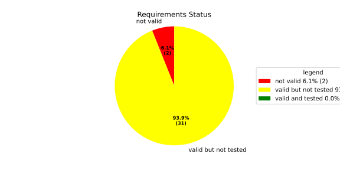
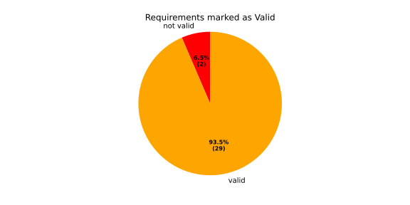
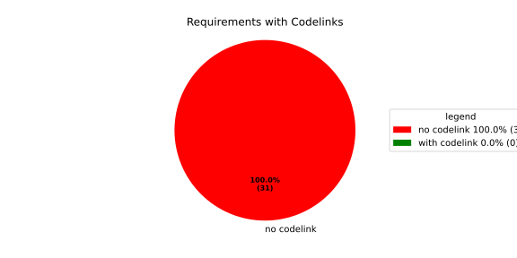
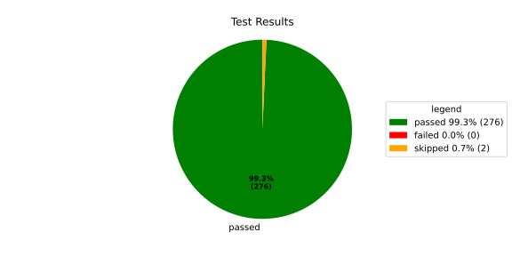
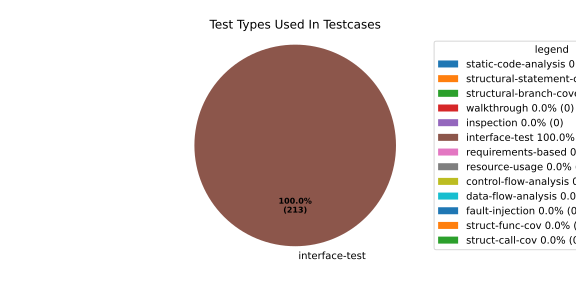
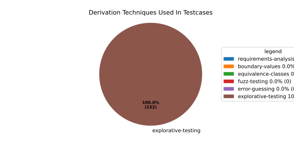

Verification Statistics#
Overview#

In Detail#



Failed Tests
Hint: This table should be empty. Before a PR can be merged all tests have to be successful.
No needs passed the filters
Skipped / Disabled Tests
testcase |
Result |
Fully Verifies |
Partially Verifies |
Test Type |
Derivation Technique |
link |
|---|---|---|---|---|---|---|
ValidateRangeTest/4__RejectsValueAboveMax |
skipped |
interface-test |
explorative-testing |
|||
ValidateRangeTest/4__RejectsValueBelowMin |
skipped |
interface-test |
explorative-testing |
All passed Tests#
testcase |
Result |
Fully Verifies |
Partially Verifies |
Test Type |
Derivation Technique |
link |
|---|---|---|---|---|---|---|
AliveImplTest__DoesNotThrowWhenInterfacePathEnvVarIsSet |
passed |
interface-test |
explorative-testing |
testcase__AliveImplTest__DoesNotThrowWhenInterfacePathEnvVarIsSet_xpewu |
||
AliveImplTest__ReportCheckpointSafeWhenNotConnected |
passed |
interface-test |
explorative-testing |
testcase__AliveImplTest__ReportCheckpointSafeWhenNotConnected_ppvuc |
||
AliveImplTest__ThrowsWhenInterfacePathEnvVarIsNotSet |
passed |
interface-test |
explorative-testing |
testcase__AliveImplTest__ThrowsWhenInterfacePathEnvVarIsNotSet_ekxfw |
||
AliveSupervisionTest__AliveDebouncesThroughFailedBeforeExpired |
passed |
interface-test |
explorative-testing |
testcase__AliveSupervisionTest__AliveDebouncesThroughFailedBeforeExpired_mlnbe |
||
AliveSupervisionTest__AliveReportsEnqueueFailureWhenRingBufferFull |
passed |
interface-test |
explorative-testing |
testcase__AliveSupervisionTest__AliveReportsEnqueueFailureWhenRingBufferFull_byhrd |
||
AliveSupervisionTest__AliveStaysOkWithCorrectHeartbeats |
passed |
interface-test |
explorative-testing |
testcase__AliveSupervisionTest__AliveStaysOkWithCorrectHeartbeats_vekof |
||
AliveSupervisionTest__AliveTransitionsOkToExpiredOnMissingHeartbeat |
passed |
interface-test |
explorative-testing |
testcase__AliveSupervisionTest__AliveTransitionsOkToExpiredOnMissingHeartbeat_jymxo |
||
AliveSupervisionTest__DeactivatesOnProcessCrash |
passed |
interface-test |
explorative-testing |
testcase__AliveSupervisionTest__DeactivatesOnProcessCrash_ypejs |
||
AliveSupervisionTest__DeactivatesOnProcessSigterm |
passed |
interface-test |
explorative-testing |
testcase__AliveSupervisionTest__DeactivatesOnProcessSigterm_hzaal |
||
AliveSupervisionTest__IgnoresIrrelevantProcessStates |
passed |
interface-test |
explorative-testing |
testcase__AliveSupervisionTest__IgnoresIrrelevantProcessStates_aolvb |
||
AliveSupervisionTest__MaxIndicationViolationExpires |
passed |
interface-test |
explorative-testing |
testcase__AliveSupervisionTest__MaxIndicationViolationExpires_whhhi |
||
AliveSupervisionTest__ReactivatesAfterCrash |
passed |
interface-test |
explorative-testing |
|||
ApplicationTypes/ApplicationTypeTest__ConvertsToExpectedValue/Native |
passed |
interface-test |
explorative-testing |
testcase__ApplicationTypes/ApplicationTypeTest__ConvertsToExpectedValue/Native_yxxcz |
||
ApplicationTypes/ApplicationTypeTest__ConvertsToExpectedValue/Reporting |
passed |
interface-test |
explorative-testing |
testcase__ApplicationTypes/ApplicationTypeTest__ConvertsToExpectedValue/Reporting_wcfwr |
||
ApplicationTypes/ApplicationTypeTest__ConvertsToExpectedValue/ReportingAndSupervised |
passed |
interface-test |
explorative-testing |
testcase__ApplicationTypes/ApplicationTypeTest__ConvertsToExpectedValue/ReportingAndSupervised_yxgad |
||
ApplicationTypes/ApplicationTypeTest__ConvertsToExpectedValue/StateManager |
passed |
interface-test |
explorative-testing |
testcase__ApplicationTypes/ApplicationTypeTest__ConvertsToExpectedValue/StateManager_ivuzc |
||
ConverterTest__ConvertAliveSupervisionMissingCycleReturnsError |
passed |
interface-test |
explorative-testing |
testcase__ConverterTest__ConvertAliveSupervisionMissingCycleReturnsError_bifzg |
||
ConverterTest__ConvertAliveSupervisionNullReturnsDefault |
passed |
interface-test |
explorative-testing |
testcase__ConverterTest__ConvertAliveSupervisionNullReturnsDefault_clyua |
||
ConverterTest__ConvertAliveSupervisionValid |
passed |
interface-test |
explorative-testing |
|||
ConverterTest__ConvertApplicationProfileMissingSelfTerminatingReturnsError |
passed |
interface-test |
explorative-testing |
testcase__ConverterTest__ConvertApplicationProfileMissingSelfTerminatingReturnsError_zddjb |
||
ConverterTest__ConvertApplicationProfileMissingTypeReturnsError |
passed |
interface-test |
explorative-testing |
testcase__ConverterTest__ConvertApplicationProfileMissingTypeReturnsError_zrfcs |
||
ConverterTest__ConvertApplicationProfileValid |
passed |
interface-test |
explorative-testing |
testcase__ConverterTest__ConvertApplicationProfileValid_oohxq |
||
ConverterTest__ConvertComponentAliveSupervisionBothIndicationsAbsentReturnsError |
passed |
interface-test |
explorative-testing |
testcase__ConverterTest__ConvertComponentAliveSupervisionBothIndicationsAbsentReturnsError_gvtfi |
||
ConverterTest__ConvertComponentAliveSupervisionMissingReportingCycleReturnsError |
passed |
interface-test |
explorative-testing |
testcase__ConverterTest__ConvertComponentAliveSupervisionMissingReportingCycleReturnsError_ajymy |
||
ConverterTest__ConvertComponentAliveSupervisionMissingToleranceReturnsError |
passed |
interface-test |
explorative-testing |
testcase__ConverterTest__ConvertComponentAliveSupervisionMissingToleranceReturnsError_lgrhj |
||
ConverterTest__ConvertComponentAliveSupervisionNullReturnsDefault |
passed |
interface-test |
explorative-testing |
testcase__ConverterTest__ConvertComponentAliveSupervisionNullReturnsDefault_xhaus |
||
ConverterTest__ConvertComponentAliveSupervisionOnlyMaxIndicationsPresent |
passed |
interface-test |
explorative-testing |
testcase__ConverterTest__ConvertComponentAliveSupervisionOnlyMaxIndicationsPresent_smwht |
||
ConverterTest__ConvertComponentAliveSupervisionOnlyMinIndicationsPresent |
passed |
interface-test |
explorative-testing |
testcase__ConverterTest__ConvertComponentAliveSupervisionOnlyMinIndicationsPresent_ybbrr |
||
ConverterTest__ConvertComponentAliveSupervisionValid |
passed |
interface-test |
explorative-testing |
testcase__ConverterTest__ConvertComponentAliveSupervisionValid_ijedh |
||
ConverterTest__ConvertComponentsValid |
passed |
interface-test |
explorative-testing |
|||
ConverterTest__ConvertComponentsWithInvalidComponentReturnsError |
passed |
interface-test |
explorative-testing |
testcase__ConverterTest__ConvertComponentsWithInvalidComponentReturnsError_wridc |
||
ConverterTest__ConvertComponentValid |
passed |
interface-test |
explorative-testing |
|||
ConverterTest__ConvertDeploymentConfigMissingReadyTimeoutReturnsError |
passed |
interface-test |
explorative-testing |
testcase__ConverterTest__ConvertDeploymentConfigMissingReadyTimeoutReturnsError_ljzfl |
||
ConverterTest__ConvertDeploymentConfigMissingShutdownTimeoutReturnsError |
passed |
interface-test |
explorative-testing |
testcase__ConverterTest__ConvertDeploymentConfigMissingShutdownTimeoutReturnsError_vyqye |
||
ConverterTest__ConvertDeploymentConfigValid |
passed |
interface-test |
explorative-testing |
|||
ConverterTest__ConvertEnvironmentalVariables |
passed |
interface-test |
explorative-testing |
testcase__ConverterTest__ConvertEnvironmentalVariables_fnhgo |
||
ConverterTest__ConvertEnvironmentalVariablesNullReturnsEmpty |
passed |
interface-test |
explorative-testing |
testcase__ConverterTest__ConvertEnvironmentalVariablesNullReturnsEmpty_vglrx |
||
ConverterTest__ConvertFallbackRunTargetMissingTimeoutReturnsError |
passed |
interface-test |
explorative-testing |
testcase__ConverterTest__ConvertFallbackRunTargetMissingTimeoutReturnsError_aevly |
||
ConverterTest__ConvertFallbackRunTargetValid |
passed |
interface-test |
explorative-testing |
testcase__ConverterTest__ConvertFallbackRunTargetValid_nexxj |
||
ConverterTest__ConvertReadyConditionMissingProcessStateReturnsError |
passed |
interface-test |
explorative-testing |
testcase__ConverterTest__ConvertReadyConditionMissingProcessStateReturnsError_ileav |
||
ConverterTest__ConvertReadyConditionValid |
passed |
interface-test |
explorative-testing |
|||
ConverterTest__ConvertRestartActionMissingFieldsReturnsError |
passed |
interface-test |
explorative-testing |
testcase__ConverterTest__ConvertRestartActionMissingFieldsReturnsError_aapjb |
||
ConverterTest__ConvertRestartActionNullReturnsNullopt |
passed |
interface-test |
explorative-testing |
testcase__ConverterTest__ConvertRestartActionNullReturnsNullopt_ifvyd |
||
ConverterTest__ConvertRestartActionValid |
passed |
interface-test |
explorative-testing |
|||
ConverterTest__ConvertRunTargetMissingTransitionTimeoutReturnsError |
passed |
interface-test |
explorative-testing |
testcase__ConverterTest__ConvertRunTargetMissingTransitionTimeoutReturnsError_ynekv |
||
ConverterTest__ConvertRunTargetsValid |
passed |
interface-test |
explorative-testing |
|||
ConverterTest__ConvertRunTargetsWithInvalidRunTargetReturnsError |
passed |
interface-test |
explorative-testing |
testcase__ConverterTest__ConvertRunTargetsWithInvalidRunTargetReturnsError_ldlox |
||
ConverterTest__ConvertRunTargetValid |
passed |
interface-test |
explorative-testing |
|||
ConverterTest__ConvertSandboxMissingGidReturnsError |
passed |
interface-test |
explorative-testing |
testcase__ConverterTest__ConvertSandboxMissingGidReturnsError_veeel |
||
ConverterTest__ConvertSandboxMissingSchedulingPolicyReturnsError |
passed |
interface-test |
explorative-testing |
testcase__ConverterTest__ConvertSandboxMissingSchedulingPolicyReturnsError_pkfts |
||
ConverterTest__ConvertSandboxMissingSchedulingPriorityReturnsError |
passed |
interface-test |
explorative-testing |
testcase__ConverterTest__ConvertSandboxMissingSchedulingPriorityReturnsError_xzdho |
||
ConverterTest__ConvertSandboxMissingUidReturnsError |
passed |
interface-test |
explorative-testing |
testcase__ConverterTest__ConvertSandboxMissingUidReturnsError_ogfku |
||
ConverterTest__ConvertSandboxSupplementaryGidOutOfRangeReturnsError |
passed |
interface-test |
explorative-testing |
testcase__ConverterTest__ConvertSandboxSupplementaryGidOutOfRangeReturnsError_zavpx |
||
ConverterTest__ConvertSandboxUidOutOfRangeReturnsError |
passed |
interface-test |
explorative-testing |
testcase__ConverterTest__ConvertSandboxUidOutOfRangeReturnsError_mcuaf |
||
ConverterTest__ConvertSandboxValid |
passed |
interface-test |
explorative-testing |
|||
ConverterTest__ConvertSwitchRunTargetActionNullReturnsNullopt |
passed |
interface-test |
explorative-testing |
testcase__ConverterTest__ConvertSwitchRunTargetActionNullReturnsNullopt_zmitx |
||
ConverterTest__ConvertSwitchRunTargetActionValid |
passed |
interface-test |
explorative-testing |
testcase__ConverterTest__ConvertSwitchRunTargetActionValid_tdklr |
||
ConverterTest__ConvertWatchdogMissingDeactivateReturnsError |
passed |
interface-test |
explorative-testing |
testcase__ConverterTest__ConvertWatchdogMissingDeactivateReturnsError_gzwjt |
||
ConverterTest__ConvertWatchdogMissingMagicCloseReturnsError |
passed |
interface-test |
explorative-testing |
testcase__ConverterTest__ConvertWatchdogMissingMagicCloseReturnsError_gexxk |
||
ConverterTest__ConvertWatchdogMissingMaxTimeoutReturnsError |
passed |
interface-test |
explorative-testing |
testcase__ConverterTest__ConvertWatchdogMissingMaxTimeoutReturnsError_lffxm |
||
ConverterTest__ConvertWatchdogNullReturnsNullopt |
passed |
interface-test |
explorative-testing |
testcase__ConverterTest__ConvertWatchdogNullReturnsNullopt_irsdk |
||
ConverterTest__ConvertWatchdogValid |
passed |
interface-test |
explorative-testing |
|||
DeadlineFixture__Start_AlreadyRunning |
passed |
interface-test |
explorative-testing |
|||
DeadlineFixture__Start_Succeeds |
passed |
interface-test |
explorative-testing |
|||
DeadlineMonitorBuilderFixture__AddDeadline_Succeeds |
passed |
interface-test |
explorative-testing |
testcase__DeadlineMonitorBuilderFixture__AddDeadline_Succeeds_nagke |
||
DeadlineMonitorBuilderFixture__New_Succeeds |
passed |
interface-test |
explorative-testing |
|||
DeadlineMonitorFixture__GetDeadline_Succeeds |
passed |
interface-test |
explorative-testing |
testcase__DeadlineMonitorFixture__GetDeadline_Succeeds_tmltf |
||
DeadlineMonitorFixture__GetDeadline_Unknown |
passed |
interface-test |
explorative-testing |
|||
EnumConversionTest__ConvertSchedulingPolicyUnsupported |
passed |
interface-test |
explorative-testing |
testcase__EnumConversionTest__ConvertSchedulingPolicyUnsupported_iavqm |
||
EnvironmentTest__AddIncreasesSize |
passed |
interface-test |
explorative-testing |
|||
EnvironmentTest__DefaultConstructedIsEmpty |
passed |
interface-test |
explorative-testing |
|||
EnvironmentTest__EmptyEnvironmentEnvpIsNullTerminated |
passed |
interface-test |
explorative-testing |
testcase__EnvironmentTest__EmptyEnvironmentEnvpIsNullTerminated_wwumw |
||
EnvironmentTest__EnvpReturnsNullTerminatedArray |
passed |
interface-test |
explorative-testing |
testcase__EnvironmentTest__EnvpReturnsNullTerminatedArray_aubkv |
||
EnvironmentTest__EnvpWithMultipleEntries |
passed |
interface-test |
explorative-testing |
|||
EnvironmentTest__MoveAssignmentPreservesEntries |
passed |
interface-test |
explorative-testing |
testcase__EnvironmentTest__MoveAssignmentPreservesEntries_vkydj |
||
EnvironmentTest__MoveConstructorPreservesEntries |
passed |
interface-test |
explorative-testing |
testcase__EnvironmentTest__MoveConstructorPreservesEntries_upclt |
||
EnvironmentTest__RangeBasedForLoopWorks |
passed |
interface-test |
explorative-testing |
|||
EnvironmentTest__ReserveAndAddAvoidReallocation |
passed |
interface-test |
explorative-testing |
testcase__EnvironmentTest__ReserveAndAddAvoidReallocation_lgzmu |
||
EnvironmentTest__SsoLengthStringSurvivesReallocation |
passed |
interface-test |
explorative-testing |
testcase__EnvironmentTest__SsoLengthStringSurvivesReallocation_jfmtl |
||
EnvironmentVariableTest__CStrReturnsKeyEqualsValue |
passed |
interface-test |
explorative-testing |
testcase__EnvironmentVariableTest__CStrReturnsKeyEqualsValue_rkwan |
||
EnvironmentVariableTest__EmptyValue |
passed |
interface-test |
explorative-testing |
|||
EnvironmentVariableTest__KeyAndValueAreAccessible |
passed |
interface-test |
explorative-testing |
testcase__EnvironmentVariableTest__KeyAndValueAreAccessible_kcrth |
||
EnvironmentVariableTest__ValueContainingEquals |
passed |
interface-test |
explorative-testing |
testcase__EnvironmentVariableTest__ValueContainingEquals_apzgz |
||
ExecErrorDomainTest__AllKnownCodesHaveDistinctMessages |
passed |
interface-test |
explorative-testing |
testcase__ExecErrorDomainTest__AllKnownCodesHaveDistinctMessages_qpoka |
||
ExecErrorDomainTest__AllKnownCodesReturnNonEmptyMessage |
passed |
interface-test |
explorative-testing |
testcase__ExecErrorDomainTest__AllKnownCodesReturnNonEmptyMessage_bawzg |
||
ExecErrorDomainTest__UnknownCodeReturnsNonEmptyMessage |
passed |
interface-test |
explorative-testing |
testcase__ExecErrorDomainTest__UnknownCodeReturnsNonEmptyMessage_kkwpr |
||
FlatbufferConfigLoaderTest__CorruptedBufferReturnsInvalidFormat |
passed |
interface-test |
explorative-testing |
testcase__FlatbufferConfigLoaderTest__CorruptedBufferReturnsInvalidFormat_twyac |
||
FlatbufferConfigLoaderTest__LoadAliveSupervision |
passed |
interface-test |
explorative-testing |
testcase__FlatbufferConfigLoaderTest__LoadAliveSupervision_hhuux |
||
FlatbufferConfigLoaderTest__LoadBufferFailsWithGenericErrorReturnsGeneralError |
passed |
interface-test |
explorative-testing |
testcase__FlatbufferConfigLoaderTest__LoadBufferFailsWithGenericErrorReturnsGeneralError_kmatm |
||
FlatbufferConfigLoaderTest__LoadBufferFailsWithNoSuchFileReturnsFileNotFound |
passed |
interface-test |
explorative-testing |
testcase__FlatbufferConfigLoaderTest__LoadBufferFailsWithNoSuchFileReturnsFileNotFound_yzlra |
||
FlatbufferConfigLoaderTest__LoadBufferFailsWithPermissionDeniedReturnsInsufficientPermission |
passed |
interface-test |
explorative-testing |
|||
FlatbufferConfigLoaderTest__LoadComponentAliveSupervision |
passed |
interface-test |
explorative-testing |
testcase__FlatbufferConfigLoaderTest__LoadComponentAliveSupervision_fwfad |
||
FlatbufferConfigLoaderTest__LoadEnvironmentalVariables |
passed |
interface-test |
explorative-testing |
testcase__FlatbufferConfigLoaderTest__LoadEnvironmentalVariables_wsosu |
||
FlatbufferConfigLoaderTest__LoadFallbackRunTarget |
passed |
interface-test |
explorative-testing |
testcase__FlatbufferConfigLoaderTest__LoadFallbackRunTarget_wduqm |
||
FlatbufferConfigLoaderTest__LoadMinimalConfig |
passed |
interface-test |
explorative-testing |
testcase__FlatbufferConfigLoaderTest__LoadMinimalConfig_hdkck |
||
FlatbufferConfigLoaderTest__LoadMultipleComponents |
passed |
interface-test |
explorative-testing |
testcase__FlatbufferConfigLoaderTest__LoadMultipleComponents_abpom |
||
FlatbufferConfigLoaderTest__LoadRestartRecoveryAction |
passed |
interface-test |
explorative-testing |
testcase__FlatbufferConfigLoaderTest__LoadRestartRecoveryAction_wyfqg |
||
FlatbufferConfigLoaderTest__LoadRunTargets |
passed |
interface-test |
explorative-testing |
|||
FlatbufferConfigLoaderTest__LoadSandbox |
passed |
interface-test |
explorative-testing |
|||
FlatbufferConfigLoaderTest__LoadSingleComponent |
passed |
interface-test |
explorative-testing |
testcase__FlatbufferConfigLoaderTest__LoadSingleComponent_yidty |
||
FlatbufferConfigLoaderTest__LoadSwitchRunTargetAction |
passed |
interface-test |
explorative-testing |
testcase__FlatbufferConfigLoaderTest__LoadSwitchRunTargetAction_uchgp |
||
FlatbufferConfigLoaderTest__LoadWatchdog |
passed |
interface-test |
explorative-testing |
|||
FlatbufferConfigLoaderTest__MissingSchemaVersionReturnsInvalidFormat |
passed |
interface-test |
explorative-testing |
testcase__FlatbufferConfigLoaderTest__MissingSchemaVersionReturnsInvalidFormat_qqmfn |
||
FlatbufferConfigLoaderTest__OptionalReadyConditionAbsent |
passed |
interface-test |
explorative-testing |
testcase__FlatbufferConfigLoaderTest__OptionalReadyConditionAbsent_lhddx |
||
FlatbufferConfigLoaderTest__OptionalWatchdogAbsent |
passed |
interface-test |
explorative-testing |
testcase__FlatbufferConfigLoaderTest__OptionalWatchdogAbsent_pkhkp |
||
FlatbufferConfigLoaderTest__WrongSchemaVersionReturnsUnsupportedVersion |
passed |
interface-test |
explorative-testing |
testcase__FlatbufferConfigLoaderTest__WrongSchemaVersionReturnsUnsupportedVersion_zrbjv |
||
HealthMonitor__GetDeadlineMonitor_Available |
passed |
|||||
HealthMonitor__GetDeadlineMonitor_Taken |
passed |
|||||
HealthMonitor__GetDeadlineMonitor_Unknown |
passed |
|||||
HealthMonitor__GetHeartbeatMonitor_Available |
passed |
testcase__HealthMonitor__GetHeartbeatMonitor_Available_aacat |
||||
HealthMonitor__GetHeartbeatMonitor_Taken |
passed |
|||||
HealthMonitor__GetHeartbeatMonitor_Unknown |
passed |
|||||
HealthMonitor__GetLogicMonitor_Available |
passed |
|||||
HealthMonitor__GetLogicMonitor_Taken |
passed |
|||||
HealthMonitor__GetLogicMonitor_Unknown |
passed |
|||||
HealthMonitor__Start_MonitorsNotTaken |
passed |
|||||
HealthMonitor__Start_Succeeds |
passed |
|||||
HealthMonitorBuilderFixture__Build_InvalidCycles |
passed |
interface-test |
explorative-testing |
testcase__HealthMonitorBuilderFixture__Build_InvalidCycles_pdigk |
||
HealthMonitorBuilderFixture__Build_NoMonitors |
passed |
interface-test |
explorative-testing |
testcase__HealthMonitorBuilderFixture__Build_NoMonitors_ktcve |
||
HealthMonitorBuilderFixture__Build_Succeeds |
passed |
interface-test |
explorative-testing |
|||
HealthMonitorBuilderFixture__New_Succeeds |
passed |
interface-test |
explorative-testing |
|||
HealthMonitorTest__Integrated |
passed |
interface-test |
explorative-testing |
|||
HeartbeatMonitor__Heartbeat_Succeeds |
passed |
interface-test |
explorative-testing |
|||
HeartbeatMonitorBuilder__New_Succeeds |
passed |
interface-test |
explorative-testing |
|||
IdentifierHashTest__IdentifierHash_default_created |
passed |
interface-test |
explorative-testing |
testcase__IdentifierHashTest__IdentifierHash_default_created_yhhvi |
||
IdentifierHashTest__IdentifierHash_EqualityOperators |
passed |
interface-test |
explorative-testing |
testcase__IdentifierHashTest__IdentifierHash_EqualityOperators_nnsuj |
||
IdentifierHashTest__IdentifierHash_invalid_hash_no_string_representation |
passed |
interface-test |
explorative-testing |
testcase__IdentifierHashTest__IdentifierHash_invalid_hash_no_string_representation_rxowr |
||
IdentifierHashTest__IdentifierHash_LessThanOperator |
passed |
interface-test |
explorative-testing |
testcase__IdentifierHashTest__IdentifierHash_LessThanOperator_rnbax |
||
IdentifierHashTest__IdentifierHash_no_dangling_pointer_after_source_string_dies |
passed |
interface-test |
explorative-testing |
testcase__IdentifierHashTest__IdentifierHash_no_dangling_pointer_after_source_string_dies_qsjin |
||
IdentifierHashTest__IdentifierHash_with_string_created |
passed |
interface-test |
explorative-testing |
testcase__IdentifierHashTest__IdentifierHash_with_string_created_aygdm |
||
IdentifierHashTest__IdentifierHash_with_string_view_created |
passed |
interface-test |
explorative-testing |
testcase__IdentifierHashTest__IdentifierHash_with_string_view_created_dbpol |
||
LogicMonitorBuilderFixture__AddState_Succeeds |
passed |
interface-test |
explorative-testing |
testcase__LogicMonitorBuilderFixture__AddState_Succeeds_axdxj |
||
LogicMonitorBuilderFixture__New_Succeeds |
passed |
interface-test |
explorative-testing |
|||
LogicMonitorFixture__State_Invalid |
passed |
interface-test |
explorative-testing |
|||
LogicMonitorFixture__State_Succeeds |
passed |
interface-test |
explorative-testing |
|||
LogicMonitorFixture__Transition_Invalid |
passed |
interface-test |
explorative-testing |
|||
LogicMonitorFixture__Transition_Succeeds |
passed |
interface-test |
explorative-testing |
|||
LogicMonitorFixture__Transition_Unknown |
passed |
interface-test |
explorative-testing |
|||
MonitorIfDaemonTest__Active_CheckpointDataForwarded |
passed |
interface-test |
explorative-testing |
testcase__MonitorIfDaemonTest__Active_CheckpointDataForwarded_evumz |
||
MonitorIfDaemonTest__Active_FutureTimestamp_NotForwardedInCurrentCycle |
passed |
interface-test |
explorative-testing |
testcase__MonitorIfDaemonTest__Active_FutureTimestamp_NotForwardedInCurrentCycle_oycau |
||
MonitorIfDaemonTest__Active_FutureTimestampCheckpoint_ConsumedInLaterCycle |
passed |
interface-test |
explorative-testing |
testcase__MonitorIfDaemonTest__Active_FutureTimestampCheckpoint_ConsumedInLaterCycle_veyyy |
||
MonitorIfDaemonTest__Active_MultipleCheckpointsInOneCycle_AllForwarded |
passed |
interface-test |
explorative-testing |
testcase__MonitorIfDaemonTest__Active_MultipleCheckpointsInOneCycle_AllForwarded_gmbms |
||
MonitorIfDaemonTest__Active_NonMatchingCheckpointId_NotForwarded |
passed |
interface-test |
explorative-testing |
testcase__MonitorIfDaemonTest__Active_NonMatchingCheckpointId_NotForwarded_bohck |
||
MonitorIfDaemonTest__Active_OverflowDetected_TransitionsToInactiveOverflow |
passed |
interface-test |
explorative-testing |
testcase__MonitorIfDaemonTest__Active_OverflowDetected_TransitionsToInactiveOverflow_ovitk |
||
MonitorIfDaemonTest__Active_TwoAttachedCheckpoints_RoutedByCheckpointId |
passed |
interface-test |
explorative-testing |
testcase__MonitorIfDaemonTest__Active_TwoAttachedCheckpoints_RoutedByCheckpointId_skqhd |
||
MonitorIfDaemonTest__GetInterfaceName_ReturnsNameGivenAtConstruction |
passed |
interface-test |
explorative-testing |
testcase__MonitorIfDaemonTest__GetInterfaceName_ReturnsNameGivenAtConstruction_iaemz |
||
MonitorIfDaemonTest__InactiveOverflow_NoProcessRestart_DoesNotRepeatNotification |
passed |
interface-test |
explorative-testing |
testcase__MonitorIfDaemonTest__InactiveOverflow_NoProcessRestart_DoesNotRepeatNotification_gdbxg |
||
MonitorIfDaemonTest__InactiveOverflow_ProcessRestartFlag_ClearedAfterNotification |
passed |
interface-test |
explorative-testing |
testcase__MonitorIfDaemonTest__InactiveOverflow_ProcessRestartFlag_ClearedAfterNotification_pqfyy |
||
MonitorIfDaemonTest__InactiveOverflow_ProcessRestarts_PushesOverflowNotificationAgain |
passed |
interface-test |
explorative-testing |
|||
MonitorIfDaemonTest__InitiallyInactive_CheckForNewData_DoesNotNotifyCheckpoint |
passed |
interface-test |
explorative-testing |
testcase__MonitorIfDaemonTest__InitiallyInactive_CheckForNewData_DoesNotNotifyCheckpoint_wjrfl |
||
MonitorIfDaemonTest__ProcessOff_DeactivatesMonitor_NoFurtherDataForwarded |
passed |
interface-test |
explorative-testing |
testcase__MonitorIfDaemonTest__ProcessOff_DeactivatesMonitor_NoFurtherDataForwarded_uialh |
||
MonitorIfDaemonTest__ProcessOffBeforeActivation_RemainsInactive |
passed |
interface-test |
explorative-testing |
testcase__MonitorIfDaemonTest__ProcessOffBeforeActivation_RemainsInactive_kzzyy |
||
MonitorIfDaemonTest__ProcessRunning_ActivatesMonitorOnNextCheckForNewData |
passed |
interface-test |
explorative-testing |
testcase__MonitorIfDaemonTest__ProcessRunning_ActivatesMonitorOnNextCheckForNewData_fkkmk |
||
MonitorIfDaemonTest__ProcessStarting_AlsoActivatesMonitor |
passed |
interface-test |
explorative-testing |
testcase__MonitorIfDaemonTest__ProcessStarting_AlsoActivatesMonitor_xdkbg |
||
MPMCConcurrentQueueTest_Basic__LvaluePushCopiesItem |
passed |
testcase__MPMCConcurrentQueueTest_Basic__LvaluePushCopiesItem_oysfc |
||||
MPMCConcurrentQueueTest_Basic__PopReturnsNulloptOnSemaphoreWaitFailure |
passed |
testcase__MPMCConcurrentQueueTest_Basic__PopReturnsNulloptOnSemaphoreWaitFailure_rgznm |
||||
MPMCConcurrentQueueTest_Basic__PushAndPopPreservesOrder |
passed |
testcase__MPMCConcurrentQueueTest_Basic__PushAndPopPreservesOrder_aijdb |
||||
MPMCConcurrentQueueTest_Basic__PushAndPopSingleItem |
passed |
testcase__MPMCConcurrentQueueTest_Basic__PushAndPopSingleItem_jrxwz |
||||
MPMCConcurrentQueueTest_Basic__RvaluePushWorksWithMoveOnlyType |
passed |
testcase__MPMCConcurrentQueueTest_Basic__RvaluePushWorksWithMoveOnlyType_cxxaj |
||||
MPMCConcurrentQueueTest_Blocking__PopBlocksUntilItemAvailable |
passed |
testcase__MPMCConcurrentQueueTest_Blocking__PopBlocksUntilItemAvailable_ttwcx |
||||
MPMCConcurrentQueueTest_Blocking__PushBlocksWhenFull |
passed |
testcase__MPMCConcurrentQueueTest_Blocking__PushBlocksWhenFull_ecujf |
||||
MPMCConcurrentQueueTest_Blocking__StopUnblocksBlockedConsumer |
passed |
testcase__MPMCConcurrentQueueTest_Blocking__StopUnblocksBlockedConsumer_snzyr |
||||
MPMCConcurrentQueueTest_Blocking__StopUnblocksBlockedProducer |
passed |
testcase__MPMCConcurrentQueueTest_Blocking__StopUnblocksBlockedProducer_inddu |
||||
MPMCConcurrentQueueTest_MPMC__AllItemsDelivered |
passed |
testcase__MPMCConcurrentQueueTest_MPMC__AllItemsDelivered_ztjqe |
||||
MPMCConcurrentQueueTest_Stop__ItemsAreDroppedAfterStop |
passed |
testcase__MPMCConcurrentQueueTest_Stop__ItemsAreDroppedAfterStop_ragzw |
||||
MPMCConcurrentQueueTest_Stop__PopReturnsNulloptWhenStoppedAndEmpty |
passed |
testcase__MPMCConcurrentQueueTest_Stop__PopReturnsNulloptWhenStoppedAndEmpty_cevga |
||||
MPMCConcurrentQueueTest_Stop__PushReturnsFalseAfterStop |
passed |
testcase__MPMCConcurrentQueueTest_Stop__PushReturnsFalseAfterStop_qqnhw |
||||
MPMCConcurrentQueueTest_Timeout__PushWithTimeoutReturnsFalseWhenFull |
passed |
testcase__MPMCConcurrentQueueTest_Timeout__PushWithTimeoutReturnsFalseWhenFull_aeips |
||||
MPMCConcurrentQueueTest_Timeout__PushWithTimeoutSucceedsWhenSlotAvailable |
passed |
testcase__MPMCConcurrentQueueTest_Timeout__PushWithTimeoutSucceedsWhenSlotAvailable_klzpo |
||||
OsHandlerTest__WaitReturnsError_OsHandlerSleepsAndDoesNotCallFindTerminated |
passed |
interface-test |
explorative-testing |
testcase__OsHandlerTest__WaitReturnsError_OsHandlerSleepsAndDoesNotCallFindTerminated_cibtr |
||
OsHandlerTest__WaitReturnsErrorThenProcessId_HandlerRecoversAndInvokesCallback |
passed |
interface-test |
explorative-testing |
testcase__OsHandlerTest__WaitReturnsErrorThenProcessId_HandlerRecoversAndInvokesCallback_nqstd |
||
OsHandlerTest__WaitReturnsProcessId_FindTerminatedIsCalled |
passed |
interface-test |
explorative-testing |
testcase__OsHandlerTest__WaitReturnsProcessId_FindTerminatedIsCalled_chlsq |
||
OsHandlerTest__WaitReturnsProcessIdBeforeRegistration_LaterRegistrationReceivesStoredTermination |
passed |
interface-test |
explorative-testing |
|||
OsHandlerTest__WaitReturnsUnknownPidWhenMapIsFull_OutOfResourcesPathDoesNotNotifyCallbacks |
passed |
interface-test |
explorative-testing |
|||
OsHandlerTest__WaitReturnsZeroPid_OsHandlerSleepsAndDoesNotCallFindTerminated |
passed |
interface-test |
explorative-testing |
testcase__OsHandlerTest__WaitReturnsZeroPid_OsHandlerSleepsAndDoesNotCallFindTerminated_rkttz |
||
ProcessStateClient_UT__ProcessStateClient_ConstructReceiver_Succeeds |
passed |
interface-test |
explorative-testing |
testcase__ProcessStateClient_UT__ProcessStateClient_ConstructReceiver_Succeeds_hodwy |
||
ProcessStateClient_UT__ProcessStateClient_QueueMaxNumberOfProcesses_Succeeds |
passed |
interface-test |
explorative-testing |
testcase__ProcessStateClient_UT__ProcessStateClient_QueueMaxNumberOfProcesses_Succeeds_qohom |
||
ProcessStateClient_UT__ProcessStateClient_QueueOneProcess_Succeeds |
passed |
interface-test |
explorative-testing |
testcase__ProcessStateClient_UT__ProcessStateClient_QueueOneProcess_Succeeds_tmzfz |
||
ProcessStateClient_UT__ProcessStateClient_QueueOneProcessTooMany_Fails |
passed |
interface-test |
explorative-testing |
testcase__ProcessStateClient_UT__ProcessStateClient_QueueOneProcessTooMany_Fails_sspoj |
||
ProcessStates/ProcessStateTest__ConvertsToExpectedValue/Running |
passed |
interface-test |
explorative-testing |
testcase__ProcessStates/ProcessStateTest__ConvertsToExpectedValue/Running_hinlr |
||
ProcessStates/ProcessStateTest__ConvertsToExpectedValue/Terminated |
passed |
interface-test |
explorative-testing |
testcase__ProcessStates/ProcessStateTest__ConvertsToExpectedValue/Terminated_zrytn |
||
RecoveryClientTest__FIFOOrdering |
passed |
interface-test |
explorative-testing |
|||
RecoveryClientTest__GetNextRequest |
passed |
interface-test |
explorative-testing |
|||
RecoveryClientTest__GetNextRequestEmpty |
passed |
interface-test |
explorative-testing |
|||
RecoveryClientTest__RingBufferFull |
passed |
interface-test |
explorative-testing |
|||
RecoveryClientTest__SendSingleRequest |
passed |
interface-test |
explorative-testing |
|||
RunTest__AsPosixProcessCreatesAndDestroysLifeCycleManager |
passed |
testcase__RunTest__AsPosixProcessCreatesAndDestroysLifeCycleManager_sooex |
||||
RunTest__AsPosixProcessForwardsConstructorArgsToApplication |
passed |
testcase__RunTest__AsPosixProcessForwardsConstructorArgsToApplication_dmeur |
||||
RunTest__AsPosixProcessForwardsNonZeroExitCode |
passed |
testcase__RunTest__AsPosixProcessForwardsNonZeroExitCode_lldqd |
||||
RunTest__AsPosixProcessPassesCorrectApplicationTypeToRun |
passed |
testcase__RunTest__AsPosixProcessPassesCorrectApplicationTypeToRun_ajqwz |
||||
RunTest__AsPosixProcessReturnsZeroExitCode |
passed |
|||||
RunTest__RunApplicationFreeFunctionDelegatesToAsPosixProcess |
passed |
testcase__RunTest__RunApplicationFreeFunctionDelegatesToAsPosixProcess_ccing |
||||
RunTest__RunConstructorPassesArgcArgvToApplicationContext |
passed |
testcase__RunTest__RunConstructorPassesArgcArgvToApplicationContext_agerd |
||||
SafeProcessMapTest__ConcurrentFindAndInsertFromMultipleThreads |
passed |
interface-test |
explorative-testing |
testcase__SafeProcessMapTest__ConcurrentFindAndInsertFromMultipleThreads_kzfyg |
||
SafeProcessMapTest__ConcurrentInsertAndFindFromMultipleThreads |
passed |
interface-test |
explorative-testing |
testcase__SafeProcessMapTest__ConcurrentInsertAndFindFromMultipleThreads_hnyqj |
||
SafeProcessMapTest__ConstructWithZeroCapacity |
passed |
interface-test |
explorative-testing |
testcase__SafeProcessMapTest__ConstructWithZeroCapacity_gjmqg |
||
SafeProcessMapTest__FindTerminatedInsertsEntryWhenPidNotPresent |
passed |
interface-test |
explorative-testing |
testcase__SafeProcessMapTest__FindTerminatedInsertsEntryWhenPidNotPresent_ixtlt |
||
SafeProcessMapTest__FindTerminatedMatchesExistingInsertAndCallsCallback |
passed |
interface-test |
explorative-testing |
testcase__SafeProcessMapTest__FindTerminatedMatchesExistingInsertAndCallsCallback_ehuzb |
||
SafeProcessMapTest__FindTerminatedSamePidTwiceYieldsUntilInsertResolves |
passed |
interface-test |
explorative-testing |
testcase__SafeProcessMapTest__FindTerminatedSamePidTwiceYieldsUntilInsertResolves_hsekx |
||
SafeProcessMapTest__FindTerminatedWithNegativePidReturnsInvalid |
passed |
interface-test |
explorative-testing |
testcase__SafeProcessMapTest__FindTerminatedWithNegativePidReturnsInvalid_dewoh |
||
SafeProcessMapTest__FindTerminatedWorksAtMaxTreeDepth |
passed |
interface-test |
explorative-testing |
testcase__SafeProcessMapTest__FindTerminatedWorksAtMaxTreeDepth_adtzi |
||
SafeProcessMapTest__InsertBeyondCapacityReturnsOutOfMemory |
passed |
interface-test |
explorative-testing |
testcase__SafeProcessMapTest__InsertBeyondCapacityReturnsOutOfMemory_qjnie |
||
SafeProcessMapTest__InsertIntoEmptyTreeReturnsZero |
passed |
interface-test |
explorative-testing |
testcase__SafeProcessMapTest__InsertIntoEmptyTreeReturnsZero_zfbaq |
||
SafeProcessMapTest__InsertMatchesExistingFindTerminatedEntry |
passed |
interface-test |
explorative-testing |
testcase__SafeProcessMapTest__InsertMatchesExistingFindTerminatedEntry_fuwrp |
||
SafeProcessMapTest__InsertMultipleNodesThenFindTerminatedRemovesAll |
passed |
interface-test |
explorative-testing |
testcase__SafeProcessMapTest__InsertMultipleNodesThenFindTerminatedRemovesAll_fvowh |
||
SafeProcessMapTest__InsertSamePidTwiceYieldsUntilFindTerminatedResolves |
passed |
interface-test |
explorative-testing |
testcase__SafeProcessMapTest__InsertSamePidTwiceYieldsUntilFindTerminatedResolves_wzwyb |
||
SchedulingPolicies/SchedulingPolicyTest__ConvertsToExpectedPosixValue/SCHED_FIFO |
passed |
interface-test |
explorative-testing |
testcase__SchedulingPolicies/SchedulingPolicyTest__ConvertsToExpectedPosixValue/SCHED_FIFO_soddq |
||
SchedulingPolicies/SchedulingPolicyTest__ConvertsToExpectedPosixValue/SCHED_OTHER |
passed |
interface-test |
explorative-testing |
testcase__SchedulingPolicies/SchedulingPolicyTest__ConvertsToExpectedPosixValue/SCHED_OTHER_oigmk |
||
SchedulingPolicies/SchedulingPolicyTest__ConvertsToExpectedPosixValue/SCHED_RR |
passed |
interface-test |
explorative-testing |
testcase__SchedulingPolicies/SchedulingPolicyTest__ConvertsToExpectedPosixValue/SCHED_RR_pcjci |
||
score/health_monitor/src/rust/test-510566969/tests |
passed |
testcase__score/health_monitor/src/rust/test-510566969/tests_kjjlw |
||||
score/health_monitor/src/rust/test-827801879/loom_tests |
passed |
testcase__score/health_monitor/src/rust/test-827801879/loom_tests_cpmix |
||||
SecondsToMsTest__ConvertsPositiveValue |
passed |
interface-test |
explorative-testing |
|||
SecondsToMsTest__ConvertsZero |
passed |
interface-test |
explorative-testing |
|||
SecondsToMsTest__RejectsNegativeValue |
passed |
interface-test |
explorative-testing |
|||
SecondsToMsTest__RejectsOverflow |
passed |
interface-test |
explorative-testing |
|||
SecondsToMsTest__RejectsSubMillisecond |
passed |
interface-test |
explorative-testing |
|||
StringHelperTest__ConvertGidVectorReturnsEmptyWhenNull |
passed |
interface-test |
explorative-testing |
testcase__StringHelperTest__ConvertGidVectorReturnsEmptyWhenNull_jmcsr |
||
StringHelperTest__ConvertStringVectorReturnsEmptyWhenNull |
passed |
interface-test |
explorative-testing |
testcase__StringHelperTest__ConvertStringVectorReturnsEmptyWhenNull_zsuvv |
||
StringHelperTest__SafeStringReturnsEmptyWhenNull |
passed |
interface-test |
explorative-testing |
testcase__StringHelperTest__SafeStringReturnsEmptyWhenNull_crelr |
||
StringHelperTest__SafeStringReturnsValueWhenNotNull |
passed |
interface-test |
explorative-testing |
testcase__StringHelperTest__SafeStringReturnsValueWhenNotNull_anbko |
||
test_complex_monitoring |
passed |
|||||
test_crash_on_startup |
passed |
|||||
test_incorrect_config_non_reporting |
passed |
|||||
test_process_crash_monitoring |
passed |
|||||
test_process_launch_args |
passed |
|||||
test_process_wrong_binary_failure |
passed |
|||||
test_recovery_action_complex_rep_failure |
passed |
|||||
test_recovery_action_simple_rep_failure |
passed |
|||||
test_smoke |
passed |
|||||
test_switch_run_target |
passed |
|||||
TimeRangeFixture__MinMax |
passed |
interface-test |
explorative-testing |
|||
TimeRangeFixture__New_InvalidOrder |
passed |
interface-test |
explorative-testing |
|||
TimeRangeFixture__New_Succeeds |
passed |
interface-test |
explorative-testing |
|||
ValidateRangeTest/0__AcceptsMaxBoundary |
passed |
interface-test |
explorative-testing |
|||
ValidateRangeTest/0__AcceptsMinBoundary |
passed |
interface-test |
explorative-testing |
|||
ValidateRangeTest/0__AcceptsZero |
passed |
interface-test |
explorative-testing |
|||
ValidateRangeTest/0__RejectsValueAboveMax |
passed |
interface-test |
explorative-testing |
|||
ValidateRangeTest/0__RejectsValueBelowMin |
passed |
interface-test |
explorative-testing |
|||
ValidateRangeTest/1__AcceptsMaxBoundary |
passed |
interface-test |
explorative-testing |
|||
ValidateRangeTest/1__AcceptsMinBoundary |
passed |
interface-test |
explorative-testing |
|||
ValidateRangeTest/1__AcceptsZero |
passed |
interface-test |
explorative-testing |
|||
ValidateRangeTest/1__RejectsValueAboveMax |
passed |
interface-test |
explorative-testing |
|||
ValidateRangeTest/1__RejectsValueBelowMin |
passed |
interface-test |
explorative-testing |
|||
ValidateRangeTest/2__AcceptsMaxBoundary |
passed |
interface-test |
explorative-testing |
|||
ValidateRangeTest/2__AcceptsMinBoundary |
passed |
interface-test |
explorative-testing |
|||
ValidateRangeTest/2__AcceptsZero |
passed |
interface-test |
explorative-testing |
|||
ValidateRangeTest/2__RejectsValueAboveMax |
passed |
interface-test |
explorative-testing |
|||
ValidateRangeTest/2__RejectsValueBelowMin |
passed |
interface-test |
explorative-testing |
|||
ValidateRangeTest/3__AcceptsMaxBoundary |
passed |
interface-test |
explorative-testing |
|||
ValidateRangeTest/3__AcceptsMinBoundary |
passed |
interface-test |
explorative-testing |
|||
ValidateRangeTest/3__AcceptsZero |
passed |
interface-test |
explorative-testing |
|||
ValidateRangeTest/3__RejectsValueAboveMax |
passed |
interface-test |
explorative-testing |
|||
ValidateRangeTest/3__RejectsValueBelowMin |
passed |
interface-test |
explorative-testing |
|||
ValidateRangeTest/4__AcceptsMaxBoundary |
passed |
interface-test |
explorative-testing |
|||
ValidateRangeTest/4__AcceptsMinBoundary |
passed |
interface-test |
explorative-testing |
|||
ValidateRangeTest/4__AcceptsZero |
passed |
interface-test |
explorative-testing |
Details About Testcases#


Test Log Files#
tests-report/tests/integration/process_simple_rep_failure/process_simple_rep_failure/test.log
exec ${PAGER:-/usr/bin/less} "$0" || exit 1
Executing tests from //tests/integration/process_simple_rep_failure:process_simple_rep_failure
-----------------------------------------------------------------------------
============================= test session starts ==============================
platform linux -- Python 3.12.12, pytest-9.0.3, pluggy-1.5.0
rootdir: /home/runner/.bazel/sandbox/processwrapper-sandbox/1160/execroot/_main/bazel-out/k8-fastbuild/bin/tests/integration/process_simple_rep_failure/process_simple_rep_failure.runfiles/score_itf+
configfile: pytest.ini
collected 1 item
../score_itf+::test_recovery_action_simple_rep_failure
-------------------------------- live log setup --------------------------------
[2026-07-06 12:49:03.109] [INFO] [score.itf.plugins.docker] Executing custom image bootstrap command: tests/utils/environments/x86_64-linux/x86_64-linux.sh
[2026-07-06 12:49:03.349] [DEBUG] [docker.utils.config] Trying paths: ['/home/runner/.docker/config.json', '/home/runner/.dockercfg']
[2026-07-06 12:49:03.349] [DEBUG] [docker.utils.config] Found file at path: /home/runner/.docker/config.json
[2026-07-06 12:49:03.349] [DEBUG] [docker.auth] Found 'auths' section
[2026-07-06 12:49:03.351] [DEBUG] [docker.auth] Found entry (registry='https://index.docker.io/v1/', username='githubactions')
[2026-07-06 12:49:03.362] [DEBUG] [urllib3.connectionpool] http://localhost:None "GET /version HTTP/1.1" 200 823
[2026-07-06 12:49:03.394] [DEBUG] [urllib3.connectionpool] http://localhost:None "POST /v1.48/containers/create HTTP/1.1" 201 88
[2026-07-06 12:49:03.396] [DEBUG] [urllib3.connectionpool] http://localhost:None "GET /v1.48/containers/01396a51be5a1ea9fb6c52eeef505b580fa3570835288ad84fa2b2f97a6597fd/json HTTP/1.1" 200 None
[2026-07-06 12:49:03.548] [DEBUG] [urllib3.connectionpool] http://localhost:None "POST /v1.48/containers/01396a51be5a1ea9fb6c52eeef505b580fa3570835288ad84fa2b2f97a6597fd/start HTTP/1.1" 204 0
[2026-07-06 12:49:03.549] [DEBUG] [docker.utils.config] Trying paths: ['/home/runner/.docker/config.json', '/home/runner/.dockercfg']
[2026-07-06 12:49:03.549] [DEBUG] [docker.utils.config] Found file at path: /home/runner/.docker/config.json
[2026-07-06 12:49:03.549] [DEBUG] [docker.auth] Found 'auths' section
[2026-07-06 12:49:03.549] [DEBUG] [docker.auth] Found entry (registry='https://index.docker.io/v1/', username='githubactions')
[2026-07-06 12:49:03.559] [DEBUG] [urllib3.connectionpool] http://localhost:None "GET /version HTTP/1.1" 200 823
[2026-07-06 12:49:03.760] [INFO] [tests.utils.testing_utils.setup_test] Test case setup finished
-------------------------------- live log call ---------------------------------
[2026-07-06 12:49:03.897] [INFO] [launch_manager] 2026/07/06 12:49:03.2143890 4960995 000 ECU1 LM LM log debug verbose 1
[2026-07-06 12:49:03.898] [INFO] [launch_manager] Launch Manager Started !!!!
[2026-07-06 12:49:03.898] [INFO] [launch_manager] 2026/07/06 12:49:03.2143890 4961000 000 ECU1 LM LM log debug verbose 1
[2026-07-06 12:49:03.898] [INFO] [launch_manager] Loading LCM Configurations...
[2026-07-06 12:49:03.898] [INFO] [launch_manager] 2026/07/06 12:49:03.2143891 4961002 000 ECU1 LM LM log debug verbose 1
[2026-07-06 12:49:03.899] [INFO] [launch_manager] ECUCFG_ENV_VAR_ROOTFOLDER set successfully
[2026-07-06 12:49:03.899] [INFO] [launch_manager] 2026/07/06 12:49:03.2143891 4961005 000 ECU1 LM LM log debug verbose 5
[2026-07-06 12:49:03.899] [INFO] [launch_manager] FlatBufferParser::getModeGroupPgName: MainPG ( IdentifierHash: 18079021346025578134 )
[2026-07-06 12:49:03.899] [INFO] [launch_manager] 2026/07/06 12:49:03.2143891 4961006 000 ECU1 LM LM log debug verbose 5
[2026-07-06 12:49:03.899] [INFO] [launch_manager] FlatBufferParser::getModeGroupPgStateName: MainPG/Startup ( IdentifierHash: 10504605499600661529 )
[2026-07-06 12:49:03.899] [INFO] [launch_manager] 2026/07/06 12:49:03.2143891 4961010 000 ECU1 LM LM log debug verbose 5
[2026-07-06 12:49:03.899] [INFO] [launch_manager] FlatBufferParser::getModeGroupPgStateName: MainPG/run_target_app_does_report_krunning_in_time ( IdentifierHash: 11934981641920773349 )
[2026-07-06 12:49:03.899] [INFO] [launch_manager] 2026/07/06 12:49:03.2143897 4961069 000 ECU1 LM LM log debug verbose 5
[2026-07-06 12:49:03.900] [INFO] [launch_manager] FlatBufferParser::getModeGroupPgStateName: MainPG/run_target_app_does_not_report_krunning_in_time ( IdentifierHash: 7672161913816744053 )
[2026-07-06 12:49:03.900] [INFO] [launch_manager] 2026/07/06 12:49:03.2143898 4961071 000 ECU1 LM LM log debug verbose 5
[2026-07-06 12:49:03.900] [INFO] [launch_manager] FlatBufferParser::getModeGroupPgStateName: MainPG/Off ( IdentifierHash: 15281793077830264047 )
[2026-07-06 12:49:03.900] [INFO] [launch_manager] 2026/07/06 12:49:03.2143898 4961074 000 ECU1 LM LM log debug verbose 5
[2026-07-06 12:49:03.900] [INFO] [launch_manager] FlatBufferParser::getModeGroupPgStateName: MainPG/fallback_run_target ( IdentifierHash: 4059409696722237352 )
[2026-07-06 12:49:03.900] [INFO] [launch_manager] 2026/07/06 12:49:03.2143898 4961077 000 ECU1 LM LM log debug verbose 4
[2026-07-06 12:49:03.904] [INFO] [launch_manager] parseProcessConfigurations: Process index: 0 executable_path_: /tmp/tests/process_simple_rep_failure/control_client_mock
[2026-07-06 12:49:03.904] [INFO] [launch_manager] 2026/07/06 12:49:03.2143898 4961079 000 ECU1 LM LM log debug verbose 3
[2026-07-06 12:49:03.904] [INFO] [launch_manager] Process control_client_mock is Reporting execution state
[2026-07-06 12:49:03.904] [INFO] [launch_manager] 2026/07/06 12:49:03.2143899 4961082 000 ECU1 LM LM log debug verbose 1
[2026-07-06 12:49:03.904] [INFO] [launch_manager] Process is STATE_MANAGEMENT function Cluster Affiliation
[2026-07-06 12:49:03.904] [INFO] [launch_manager] 2026/07/06 12:49:03.2143899 4961083 000 ECU1 LM LM log debug verbose 3
[2026-07-06 12:49:03.904] [INFO] [launch_manager] Process control_client_mock is Self terminating
[2026-07-06 12:49:03.905] [INFO] [launch_manager] 2026/07/06 12:49:03.2143899 4961084 000 ECU1 LM LM log debug verbose 4
[2026-07-06 12:49:03.905] [INFO] [launch_manager] ParseProcessProcessGroup: id:::pg_name_: MainPG , pg_state_name_: MainPG/Startup
[2026-07-06 12:49:03.905] [INFO] [launch_manager] 2026/07/06 12:49:03.2143899 4961086 000 ECU1 LM LM log debug verbose 4
[2026-07-06 12:49:03.905] [INFO] [launch_manager] ParseProcessProcessGroup: id:::pg_name_: MainPG , pg_state_name_: MainPG/run_target_app_does_report_krunning_in_time
[2026-07-06 12:49:03.905] [INFO] [launch_manager] 2026/07/06 12:49:03.2143899 4961087 000 ECU1 LM LM log debug verbose 4 ParseProcessProcessGroup: id:::pg_name_: MainPG , pg_state_name_: MainPG/run_target_app_does_not_report_krunning_in_time
[2026-07-06 12:49:03.905] [INFO] [launch_manager] 2026/07/06 12:49:03.2143899 4961088 000 ECU1 LM LM log debug verbose 4
[2026-07-06 12:49:03.905] [INFO] [launch_manager] ParseProcessProcessGroup: id:::pg_name_: MainPG , pg_state_name_: MainPG/fallback_run_target
[2026-07-06 12:49:03.906] [INFO] [launch_manager] 2026/07/06 12:49:03.2143899 4961090 000 ECU1 LM LM log debug verbose 4
[2026-07-06 12:49:03.906] [INFO] [launch_manager] parseProcessConfigurations: Process index: 1 executable_path_: /tmp/tests/process_simple_rep_failure/process_simple_reporting
[2026-07-06 12:49:03.907] [INFO] [launch_manager] 2026/07/06 12:49:03.2143900 4961091 000 ECU1 LM LM log debug verbose 3
[2026-07-06 12:49:03.907] [INFO] [launch_manager] Process component_does_report_krunning_in_time is Reporting execution state
[2026-07-06 12:49:03.907] [INFO] [launch_manager] 2026/07/06 12:49:03.2143900 4961093 000 ECU1 LM LM log debug verbose 1
[2026-07-06 12:49:03.912] [INFO] [launch_manager] Process is NOT associated with any function Cluster Affiliation
[2026-07-06 12:49:03.912] [INFO] [launch_manager] 2026/07/06 12:49:03.2143900 4961094 000 ECU1 LM LM log debug verbose 3
[2026-07-06 12:49:03.916] [INFO] [launch_manager] Process component_does_report_krunning_in_time is Self terminating
[2026-07-06 12:49:03.917] [INFO] [launch_manager] 2026/07/06 12:49:03.2143900 4961096 000 ECU1 LM LM log debug verbose 4
[2026-07-06 12:49:03.917] [INFO] [launch_manager] ParseProcessProcessGroup: id:::pg_name_: MainPG , pg_state_name_: MainPG/run_target_app_does_report_krunning_in_time
[2026-07-06 12:49:03.917] [INFO] [launch_manager] 2026/07/06 12:49:03.2143900 4961097 000 ECU1 LM LM log debug verbose 4
[2026-07-06 12:49:03.920] [INFO] [launch_manager] parseProcessConfigurations: Process index: 2 executable_path_: /tmp/tests/process_simple_rep_failure/process_simple_reporting
[2026-07-06 12:49:03.921] [INFO] [launch_manager] 2026/07/06 12:49:03.2143900 4961099 000 ECU1 LM LM log debug verbose 3
[2026-07-06 12:49:03.921] [INFO] [launch_manager] Process component_does_not_report_krunning_in_time is Reporting execution state
[2026-07-06 12:49:03.921] [INFO] [launch_manager] 2026/07/06 12:49:03.2143900 4961100 000 ECU1 LM LM log debug verbose 1
[2026-07-06 12:49:03.921] [INFO] [launch_manager] Process is NOT associated with any function Cluster Affiliation
[2026-07-06 12:49:03.921] [INFO] [launch_manager] 2026/07/06 12:49:03.2143901 4961101 000 ECU1 LM LM log debug verbose 3
[2026-07-06 12:49:03.921] [INFO] [launch_manager] Process component_does_not_report_krunning_in_time is Self terminating
[2026-07-06 12:49:03.922] [INFO] [launch_manager] 2026/07/06 12:49:03.2143901 4961103 000 ECU1 LM LM log debug verbose 4
[2026-07-06 12:49:03.922] [INFO] [launch_manager] ParseProcessProcessGroup: id:::pg_name_: MainPG , pg_state_name_: MainPG/run_target_app_does_not_report_krunning_in_time
[2026-07-06 12:49:03.922] [INFO] [launch_manager] 2026/07/06 12:49:03.2143901 4961105 000 ECU1 LM LM log debug verbose 4
[2026-07-06 12:49:03.923] [INFO] [launch_manager] parseProcessConfigurations: Process index: 3 executable_path_: /tmp/tests/process_simple_rep_failure/verification_process
[2026-07-06 12:49:03.923] [INFO] [launch_manager] 2026/07/06 12:49:03.2143901 4961106 000 ECU1 LM LM log debug verbose 3
[2026-07-06 12:49:03.924] [INFO] [launch_manager] Process verification_component is NOT Reporting execution state
[2026-07-06 12:49:03.924] [INFO] [launch_manager] 2026/07/06 12:49:03.2143901 4961107 000 ECU1 LM LM log debug verbose 1
[2026-07-06 12:49:03.924] [INFO] [launch_manager] Process is NOT associated with any function Cluster Affiliation
[2026-07-06 12:49:03.924] [INFO] [launch_manager] 2026/07/06 12:49:03.2143901 4961108 000 ECU1 LM LM log debug verbose 3
[2026-07-06 12:49:03.924] [INFO] [launch_manager] Process verification_component is Self terminating
[2026-07-06 12:49:03.924] [INFO] [launch_manager] 2026/07/06 12:49:03.2143901 4961110 000 ECU1 LM LM log debug verbose 4
[2026-07-06 12:49:03.924] [INFO] [launch_manager] ParseProcessProcessGroup: id:::pg_name_: MainPG , pg_state_name_: MainPG/fallback_run_target
[2026-07-06 12:49:03.925] [INFO] [launch_manager] 2026/07/06 12:49:03.2143901 4961111 000 ECU1 LM LM log debug verbose 3 Loading SWCL Nr. 0 Succeeded
[2026-07-06 12:49:03.925] [INFO] [launch_manager] 2026/07/06 12:49:03.2143902 4961112 000 ECU1 LM LM log debug verbose 2
[2026-07-06 12:49:03.925] [INFO] [launch_manager] 1 process group(s)
[2026-07-06 12:49:03.925] [INFO] [launch_manager] 2026/07/06 12:49:03.2143902 4961114 000 ECU1 LM LM log debug verbose 3 Creating graph with 4 nodes
[2026-07-06 12:49:03.925] [INFO] [launch_manager] 2026/07/06 12:49:03.2143902 4961115 000 ECU1 LM LM log debug verbose 1 Process groups initialized successfully
[2026-07-06 12:49:03.925] [INFO] [launch_manager] 2026/07/06 12:49:03.2143902 4961116 000 ECU1 LM LM log debug verbose 1
[2026-07-06 12:49:03.926] [INFO] [launch_manager] Process Group initialization done
[2026-07-06 12:49:03.926] [INFO] [launch_manager] 2026/07/06 12:49:03.2143902 4961117 000 ECU1 LM LM log debug verbose 3
[2026-07-06 12:49:03.926] [INFO] [launch_manager] Creating Safe Process Map with 4 entries
[2026-07-06 12:49:03.926] [INFO] [launch_manager] 2026/07/06 12:49:03.2143902 4961118 000 ECU1 LM LM log debug verbose 2
[2026-07-06 12:49:03.926] [INFO] [launch_manager] Creating job queue with capacity 1024
[2026-07-06 12:49:03.926] [INFO] [launch_manager] 2026/07/06 12:49:03.2143902 4961119 000 ECU1 LM LM log debug verbose 1
[2026-07-06 12:49:03.927] [INFO] [launch_manager] Creating worker threads...
[2026-07-06 12:49:03.928] [INFO] [launch_manager] 2026/07/06 12:49:03.2143904 4961137 000 ECU1 LM LM log debug verbose 7 Process group index 0 (with name MainPG ) has 4 processes
[2026-07-06 12:49:03.928] [INFO] [launch_manager] 2026/07/06 12:49:03.2143904 4961139 000 ECU1 LM LM log debug verbose 2 Creating process node with id: 0
[2026-07-06 12:49:03.928] [INFO] [launch_manager] 2026/07/06 12:49:03.2143904 4961140 000 ECU1 LM LM log debug verbose 5 Process 0 has 0 start dependencies
[2026-07-06 12:49:03.930] [INFO] [launch_manager] 2026/07/06 12:49:03.2143904 4961141 000 ECU1 LM LM log debug verbose 2 Creating process node with id: 1
[2026-07-06 12:49:03.930] [INFO] [launch_manager] 2026/07/06 12:49:03.2143905 4961142 000 ECU1 LM LM log debug verbose 5 Process 1 has 0 start dependencies
[2026-07-06 12:49:03.930] [INFO] [launch_manager] 2026/07/06 12:49:03.2143905 4961142 000 ECU1 LM LM log debug verbose 2 Creating process node with id: 2
[2026-07-06 12:49:03.930] [INFO] [launch_manager] 2026/07/06 12:49:03.2143905 4961143 000 ECU1 LM LM log debug verbose 5 Process 2 has 0 start dependencies
[2026-07-06 12:49:03.932] [INFO] [launch_manager] 2026/07/06 12:49:03.2143905 4961144 000 ECU1 LM LM log debug verbose 2 Creating process node with id: 3
[2026-07-06 12:49:03.932] [INFO] [launch_manager] 2026/07/06 12:49:03.2143905 4961145 000 ECU1 LM LM log debug verbose 5 Process 3 has 0 start dependencies
[2026-07-06 12:49:03.933] [INFO] [launch_manager] 2026/07/06 12:49:03.2143905 4961146 000 ECU1 LM LM log debug verbose 3 Created 4 process nodes
[2026-07-06 12:49:03.933] [INFO] [launch_manager] 2026/07/06 12:49:03.2143905 4961147 000 ECU1 LM LM log debug verbose 2 Creating successor lists for process group MainPG
[2026-07-06 12:49:03.933] [INFO] [launch_manager] 2026/07/06 12:49:03.2143905 4961148 000 ECU1 LM LM log debug verbose 1 Graphs initialized
[2026-07-06 12:49:03.933] [INFO] [launch_manager] 2026/07/06 12:49:03.2143905 4961150 000 ECU1 LM Fcty log info verbose 2
[2026-07-06 12:49:03.933] [INFO] [launch_manager] Factory for FlatCfg MachineConfig: Loading of HM Machine Configuration succeeded.
[2026-07-06 12:49:03.933] [INFO] [launch_manager] 2026/07/06 12:49:03.2143906 4961153 000 ECU1 LM Fcty log debug verbose 3
[2026-07-06 12:49:03.934] [INFO] [launch_manager] Factory for FlatCfg MachineConfig: Alive Supervision buffer size: 100
[2026-07-06 12:49:03.934] [INFO] [launch_manager] 2026/07/06 12:49:03.2143906 4961155 000 ECU1 LM Fcty log debug verbose 3
[2026-07-06 12:49:03.934] [INFO] [launch_manager] Factory for FlatCfg MachineConfig: Monitor buffer size: 512
[2026-07-06 12:49:03.934] [INFO] [launch_manager] 2026/07/06 12:49:03.2143906 4961157 000 ECU1 LM Fcty log debug verbose 4 Factory for FlatCfg MachineConfig: Periodicity: 50000000 ns
[2026-07-06 12:49:03.934] [INFO] [launch_manager] 2026/07/06 12:49:03.2143907 4961163 000 ECU1 LM Fcty log debug verbose 3 Factory for FlatCfg MachineConfig: Configured watchdogs: 0
[2026-07-06 12:49:03.934] [INFO] [launch_manager] 2026/07/06 12:49:03.2143907 4961165 000 ECU1 LM Fcty log warn verbose 2 Factory for FlatCfg MachineConfig: No watchdog configured
[2026-07-06 12:49:03.934] [INFO] [launch_manager] 2026/07/06 12:49:03.2143908 4961173 000 ECU1 LM Fcty log debug verbose 2
[2026-07-06 12:49:03.935] [INFO] [launch_manager] Software Cluster Handler starts constructing workers: MainCluster
[2026-07-06 12:49:03.935] [INFO] [launch_manager] 2026/07/06 12:49:03.2143908 4961175 000 ECU1 LM Fcty log debug verbose 3 Factory for FlatCfg AR24-11: Successfully created Process States: control_client_mock
[2026-07-06 12:49:03.935] [INFO] [launch_manager] 2026/07/06 12:49:03.2143908 4961176 000 ECU1 LM Fcty log debug verbose 3 Factory for FlatCfg AR24-11: Number of constructed Process States: 1
[2026-07-06 12:49:03.935] [INFO] [launch_manager] 2026/07/06 12:49:03.2143908 4961178 000 ECU1 LM Fcty log debug verbose 3
[2026-07-06 12:49:03.935] [INFO] [launch_manager] Factory for FlatCfg AR24-11: Successfully created Alive interface IPC with path: lifecycle_health_control_client_mock
[2026-07-06 12:49:03.935] [INFO] [launch_manager] 2026/07/06 12:49:03.2143908 4961181 000 ECU1 LM Fcty log debug verbose 3 Factory for FlatCfg AR24-11: Number of constructed Alive interface IPCs: 1
[2026-07-06 12:49:03.936] [INFO] [launch_manager] 2026/07/06 12:49:03.2143909 4961182 000 ECU1 LM Fcty log debug verbose 3
[2026-07-06 12:49:03.936] [INFO] [launch_manager] Factory for FlatCfg AR24-11: Successfully created Alive Interface: /lifecycle_health_control_client_mock
[2026-07-06 12:49:03.936] [INFO] [launch_manager] 2026/07/06 12:49:03.2143909 4961183 000 ECU1 LM Fcty log debug verbose 3 Factory for FlatCfg AR24-11: Number of constructed Alive interfaces: 1
[2026-07-06 12:49:03.936] [INFO] [launch_manager] 2026/07/06 12:49:03.2143909 4961184 000 ECU1 LM Fcty log debug verbose 3
[2026-07-06 12:49:03.936] [INFO] [launch_manager] Factory for FlatCfg AR24-11: Successfully created supervision checkpoint: control_client_mock_checkpoint
[2026-07-06 12:49:03.936] [INFO] [launch_manager] 2026/07/06 12:49:03.2143909 4961186 000 ECU1 LM Fcty log debug verbose 3
[2026-07-06 12:49:03.936] [INFO] [launch_manager] Factory for FlatCfg AR24-11: Number of constructed supervision checkpoints: 1
[2026-07-06 12:49:03.937] [INFO] [launch_manager] 2026/07/06 12:49:03.2143909 4961187 000 ECU1 LM Fcty log debug verbose 3
[2026-07-06 12:49:03.937] [INFO] [launch_manager] Factory for FlatCfg AR24-11: Successfully created alive supervision worker object: control_client_mock_alive_supervision
[2026-07-06 12:49:03.937] [INFO] [launch_manager] 2026/07/06 12:49:03.2143909 4961191 000 ECU1 LM Fcty log debug verbose 3
[2026-07-06 12:49:03.937] [INFO] [launch_manager] Factory for FlatCfg AR24-11: Number of constructed alive supervisions: 1
[2026-07-06 12:49:03.937] [INFO] [launch_manager] 2026/07/06 12:49:03.2143910 4961192 000 ECU1 LM Fcty log info verbose 2 Phm Daemon: The (configured) periodicity in [ns] is set to: 50000000
[2026-07-06 12:49:03.937] [INFO] [launch_manager] 2026/07/06 12:49:03.2143910 4961193 000 ECU1 LM Fcty log debug verbose 2
[2026-07-06 12:49:03.937] [INFO] [launch_manager] Phm Daemon: The accuracy of the monotonic system clock in [ns] is: 1
[2026-07-06 12:49:03.937] [INFO] [launch_manager] 2026/07/06 12:49:03.2143910 4961195 000 ECU1 LM Fcty log debug verbose 3 AliveMonitor: Initialization took 4 ms
[2026-07-06 12:49:03.938] [INFO] [launch_manager] 2026/07/06 12:49:03.2143910 4961196 000 ECU1 LM LM log info verbose 1
[2026-07-06 12:49:03.938] [INFO] [launch_manager] LCM started successfully
[2026-07-06 12:49:03.938] [INFO] [launch_manager] 2026/07/06 12:49:03.2143910 4961198 000 ECU1 LM LM log debug verbose 3
[2026-07-06 12:49:03.938] [INFO] [launch_manager] clock() at run(): 41.531000 ms
[2026-07-06 12:49:03.938] [INFO] [launch_manager] 2026/07/06 12:49:03.2143911 4961202 000 ECU1 LM LM log debug verbose 1
[2026-07-06 12:49:03.938] [INFO] [launch_manager] =============STARTING MAINPG STARTUP STATE============
[2026-07-06 12:49:03.938] [INFO] [launch_manager] 2026/07/06 12:49:03.2143911 4961203 000 ECU1 LM LM log debug verbose 9
[2026-07-06 12:49:03.939] [INFO] [launch_manager] Graph::setState changes from kSuccess to kInTransition for PG 0 ( MainPG )
[2026-07-06 12:49:03.939] [INFO] [launch_manager] 2026/07/06 12:49:03.2143911 4961204 000 ECU1 LM LM log debug verbose 2
[2026-07-06 12:49:03.939] [INFO] [launch_manager] Stop Dependencies: 0
[2026-07-06 12:49:03.939] [INFO] [launch_manager] 2026/07/06 12:49:03.2143911 4961205 000 ECU1 LM LM log debug verbose 2
[2026-07-06 12:49:03.939] [INFO] [launch_manager] Stop Dependencies: 0
[2026-07-06 12:49:03.939] [INFO] [launch_manager] 2026/07/06 12:49:03.2143911 4961207 000 ECU1 LM LM log debug verbose 2 Stop Dependencies: 0
[2026-07-06 12:49:03.939] [INFO] [launch_manager] 2026/07/06 12:49:03.2143911 4961207 000 ECU1 LM LM log debug verbose 2
[2026-07-06 12:49:03.940] [INFO] [launch_manager] Stop Dependencies: 0
[2026-07-06 12:49:03.940] [INFO] [launch_manager] 2026/07/06 12:49:03.2143911 4961209 000 ECU1 LM LM log debug verbose 2
[2026-07-06 12:49:03.940] [INFO] [launch_manager] Start Dependencies: 0
[2026-07-06 12:49:03.940] [INFO] [launch_manager] 2026/07/06 12:49:03.2143911 4961210 000 ECU1 LM LM log debug verbose 2
[2026-07-06 12:49:03.940] [INFO] [launch_manager] Start Dependencies: 0
[2026-07-06 12:49:03.940] [INFO] [launch_manager] 2026/07/06 12:49:03.2143911 4961211 000 ECU1 LM LM log debug verbose 2
[2026-07-06 12:49:03.941] [INFO] [launch_manager] Start Dependencies: 0
[2026-07-06 12:49:03.941] [INFO] [launch_manager] 2026/07/06 12:49:03.2143912 4961213 000 ECU1 LM LM log debug verbose 2 Start Dependencies: 0
[2026-07-06 12:49:03.941] [INFO] [launch_manager] 2026/07/06 12:49:03.2143912 4961215 000 ECU1 LM LM log debug verbose 6 Starting process 0 ( control_client_mock ) from executable /tmp/tests/process_simple_rep_failure/control_client_mock
[2026-07-06 12:49:03.941] [INFO] [launch_manager] 2026/07/06 12:49:03.2143912 4961216 000 ECU1 LM LM log debug verbose 3 Initialize the control client for control_client_mock process
[2026-07-06 12:49:03.941] [INFO] [launch_manager] 2026/07/06 12:49:03.2143912 4961216 000 ECU1 LM LM log debug verbose 1 ControlClientChannel initialized
[2026-07-06 12:49:03.941] [INFO] [launch_manager] 2026/07/06 12:49:03.2143913 4961222 000 ECU1 LM LM log debug verbose 4 startProcess pid 68 received for process: control_client_mock
[2026-07-06 12:49:03.941] [INFO] [launch_manager] 2026/07/06 12:49:03.2143913 4961222 000 ECU1 LM LM log debug verbose 1 ControlClientChannel obtained from sync.
[2026-07-06 12:49:03.941] [INFO] [launch_manager] [==========] Running 1 test from 1 test suite.
[2026-07-06 12:49:03.942] [INFO] [launch_manager] [----------] Global test environment set-up.
[2026-07-06 12:49:03.942] [INFO] [launch_manager] [----------] 1 test from RecoveryActionSimpleRepFailure
[2026-07-06 12:49:03.942] [INFO] [launch_manager] [ RUN ] RecoveryActionSimpleRepFailure.ControlClientMock
[2026-07-06 12:49:03.942] [INFO] [launch_manager] [ STEP ] Report running from ControlClientMock
[2026-07-06 12:49:03.942] [INFO] [launch_manager] [ END STEP ] Report running from ControlClientMock
[2026-07-06 12:49:03.942] [INFO] [launch_manager] [ STEP ] Activate RunTarget run_target_app_does_report_krunning_in_time
[2026-07-06 12:49:03.942] [INFO] [launch_manager] 2026/07/06 12:49:03.2143920 4961293 000 ECU1 LM LM log debug verbose 1 Request sent. Waiting for acknowledgment...
[2026-07-06 12:49:03.942] [INFO] [launch_manager] 2026/07/06 12:49:03.2143920 4961295 000 ECU1 LM LM log debug verbose 8 Got kRunning for pid 68 ( control_client_mock ) process 0 of group MainPG
[2026-07-06 12:49:03.942] [INFO] [launch_manager] 2026/07/06 12:49:03.2143920 4961296 000 ECU1 LM LM log debug verbose 8
[2026-07-06 12:49:03.943] [INFO] [launch_manager] ProcessGroupManager::ControlClientHandler: got request kSetStateRequest ( 16 ) re state MainPG/run_target_app_does_report_krunning_in_time of PG MainPG
[2026-07-06 12:49:03.943] [INFO] [launch_manager] 2026/07/06 12:49:03.2143920 4961296 000 ECU1 LM LM log debug verbose 6 Pending state for process group MainPG changed from to MainPG/run_target_app_does_report_krunning_in_time
[2026-07-06 12:49:03.943] [INFO] [launch_manager] 2026/07/06 12:49:03.2143920 4961297 000 ECU1 LM LM log debug verbose 9 Graph::setState changes from kInTransition to kCancelled for PG 0 ( MainPG )
[2026-07-06 12:49:03.943] [INFO] [launch_manager] 2026/07/06 12:49:03.2143920 4961297 000 ECU1 LM LM log debug verbose 1 Control Client handler nudged
[2026-07-06 12:49:03.943] [INFO] [launch_manager] 2026/07/06 12:49:03.2143920 4961297 000 ECU1 LM LM log debug verbose 1 Request acknowledged.
[2026-07-06 12:49:03.943] [INFO] [launch_manager] 2026/07/06 12:49:03.2143920 4961297 000 ECU1 LM LM log debug verbose 7
[2026-07-06 12:49:03.943] [INFO] [launch_manager] startProcess for MainPG process 0 ( control_client_mock ) done
[2026-07-06 12:49:03.943] [INFO] [launch_manager] 2026/07/06 12:49:03.2143920 4961298 000 ECU1 LM LM log debug verbose 1
[2026-07-06 12:49:03.943] [INFO] [launch_manager] Control Client handler nudged
[2026-07-06 12:49:03.944] [INFO] [launch_manager] 2026/07/06 12:49:03.2143920 4961298 000 ECU1 LM LM log fatal verbose 3 clock() at failed initial state transition: 43.459000 ms
[2026-07-06 12:49:03.944] [INFO] [launch_manager] 2026/07/06 12:49:03.2143920 4961298 000 ECU1 LM LM log debug verbose 9 Graph::setState changes from kCancelled to kUndefinedState for PG 0 ( MainPG )
[2026-07-06 12:49:03.944] [INFO] [launch_manager] 2026/07/06 12:49:03.2143920 4961298 000 ECU1 LM LM log debug verbose 1 Control Client handler nudged
[2026-07-06 12:49:03.944] [INFO] [launch_manager] 2026/07/06 12:49:03.2143920 4961299 000 ECU1 LM LM log debug verbose 1
[2026-07-06 12:49:03.944] [INFO] [launch_manager] Request acknowledged.
[2026-07-06 12:49:03.949] [INFO] [launch_manager] 2026/07/06 12:49:03.2143922 4961318 000 ECU1 LM LM log debug verbose 6 Pending state for process group MainPG changed from MainPG/run_target_app_does_report_krunning_in_time to
[2026-07-06 12:49:03.949] [INFO] [launch_manager] 2026/07/06 12:49:03.2143922 4961318 000 ECU1 LM LM log debug verbose 4 Start transition to MainPG/run_target_app_does_report_krunning_in_time for PG MainPG
[2026-07-06 12:49:03.949] [INFO] [launch_manager] 2026/07/06 12:49:03.2143922 4961319 000 ECU1 LM LM log debug verbose 9 Graph::setState changes from kUndefinedState to kInTransition for PG 0 ( MainPG )
[2026-07-06 12:49:03.949] [INFO] [launch_manager] 2026/07/06 12:49:03.2143922 4961319 000 ECU1 LM LM log debug verbose 2 Stop Dependencies: 0
[2026-07-06 12:49:03.949] [INFO] [launch_manager] 2026/07/06 12:49:03.2143922 4961319 000 ECU1 LM LM log debug verbose 2 Stop Dependencies: 0
[2026-07-06 12:49:03.949] [INFO] [launch_manager] 2026/07/06 12:49:03.2143922 4961319 000 ECU1 LM LM log debug verbose 2 Stop Dependencies: 0
[2026-07-06 12:49:03.950] [INFO] [launch_manager] 2026/07/06 12:49:03.2143922 4961319 000 ECU1 LM LM log debug verbose 2 Stop Dependencies: 0
[2026-07-06 12:49:03.950] [INFO] [launch_manager] 2026/07/06 12:49:03.2143922 4961320 000 ECU1 LM LM log debug verbose 2 Start Dependencies: 0
[2026-07-06 12:49:03.950] [INFO] [launch_manager] 2026/07/06 12:49:03.2143922 4961320 000 ECU1 LM LM log debug verbose 2 Start Dependencies: 0
[2026-07-06 12:49:03.950] [INFO] [launch_manager] 2026/07/06 12:49:03.2143922 4961320 000 ECU1 LM LM log debug verbose 2 Start Dependencies: 0
[2026-07-06 12:49:03.950] [INFO] [launch_manager] 2026/07/06 12:49:03.2143922 4961320 000 ECU1 LM LM log debug verbose 2 Start Dependencies: 0
[2026-07-06 12:49:03.950] [INFO] [launch_manager] 2026/07/06 12:49:03.2143922 4961321 000 ECU1 LM LM log debug verbose 6 Starting process 1 ( component_does_report_krunning_in_time ) from executable /tmp/tests/process_simple_rep_failure/process_simple_reporting
[2026-07-06 12:49:03.950] [INFO] [launch_manager] 2026/07/06 12:49:03.2143923 4961326 000 ECU1 LM LM log debug verbose 4 startProcess pid 70 received for process: component_does_report_krunning_in_time
[2026-07-06 12:49:03.950] [INFO] [launch_manager] [==========] Running 1 test from 1 test suite.
[2026-07-06 12:49:03.951] [INFO] [launch_manager] [----------] Global test environment set-up.
[2026-07-06 12:49:03.951] [INFO] [launch_manager] [----------] 1 test from ProcessSimpleRepFailure
[2026-07-06 12:49:03.951] [INFO] [launch_manager] [ RUN ] ProcessSimpleRepFailure.ProcessSimpleReporting
[2026-07-06 12:49:03.951] [INFO] [launch_manager] [ STEP ] Check args
[2026-07-06 12:49:03.951] [INFO] [launch_manager] [ END STEP ] Check args
[2026-07-06 12:49:03.951] [INFO] [launch_manager] [ STEP ] Report running from ProcessSimpleReporting
[2026-07-06 12:49:03.964] [INFO] [launch_manager] 2026/07/06 12:49:03.2143960 4961697 000 ECU1 LM Sprv log debug verbose 6 Process with Id control_client_mock changed state PG MainPG/Startup PS 1
[2026-07-06 12:49:03.965] [INFO] [launch_manager] 2026/07/06 12:49:03.2143960 4961698 000 ECU1 LM Sprv log debug verbose 6 Process with Id control_client_mock changed state PG MainPG/Startup PS 2
[2026-07-06 12:49:03.965] [INFO] [launch_manager] 2026/07/06 12:49:03.2143960 4961698 000 ECU1 LM Sprv log debug verbose 6 Process with Id component_does_report_krunning_in_time changed state PG MainPG/run_target_app_does_report_krunning_in_time PS 1
[2026-07-06 12:49:03.965] [INFO] [launch_manager] 2026/07/06 12:49:03.2143960 4961699 000 ECU1 LM Sprv log info verbose 3 Alive Supervision ( control_client_mock_alive_supervision ) switched to OK.
[2026-07-06 12:49:04.010] [DEBUG] [tests.utils.testing_utils.run_until_file_deployed] Waiting for /tmp/tests/test_end
[2026-07-06 12:49:04.451] [INFO] [launch_manager] [ END STEP ] Report running from ProcessSimpleReporting
[2026-07-06 12:49:04.452] [INFO] [launch_manager] [ OK ] ProcessSimpleRepFailure.ProcessSimpleReporting (502 ms)
[2026-07-06 12:49:04.453] [INFO] [launch_manager] [----------] 1 test from ProcessSimpleRepFailure (502 ms total)
[2026-07-06 12:49:04.453] [INFO] [launch_manager] [----------] Global test environment tear-down
[2026-07-06 12:49:04.453] [INFO] [launch_manager] [==========] 1 test from 1 test suite ran. (502 ms total)
[2026-07-06 12:49:04.453] [INFO] [launch_manager] [ PASSED ] 1 test.
[2026-07-06 12:49:04.453] [INFO] [launch_manager] 2026/07/06 12:49:04.2144452 4966620 000 ECU1 LM LM log debug verbose 12
[2026-07-06 12:49:04.453] [INFO] [launch_manager] Child process 1 of MainPG pid 70 ( component_does_report_krunning_in_time ) for node True terminated with status 0
[2026-07-06 12:49:04.453] [INFO] [launch_manager] 2026/07/06 12:49:04.2144453 4966623 000 ECU1 LM LM log debug verbose 8
[2026-07-06 12:49:04.454] [INFO] [launch_manager] Got kRunning for pid 70 ( component_does_report_krunning_in_time ) process 1 of group MainPG
[2026-07-06 12:49:04.454] [INFO] [launch_manager] 2026/07/06 12:49:04.2144453 4966626 000 ECU1 LM LM log debug verbose 7
[2026-07-06 12:49:04.454] [INFO] [launch_manager] startProcess for MainPG process 1 ( component_does_report_krunning_in_time ) done
[2026-07-06 12:49:04.454] [INFO] [launch_manager] 2026/07/06 12:49:04.2144453 4966629 000 ECU1 LM LM log debug verbose 9
[2026-07-06 12:49:04.454] [INFO] [launch_manager] Graph::setState changes from kInTransition to kSuccess for PG 0 ( MainPG )
[2026-07-06 12:49:04.454] [INFO] [launch_manager] 2026/07/06 12:49:04.2144454 4966631 000 ECU1 LM LM log info verbose 7
[2026-07-06 12:49:04.454] [INFO] [launch_manager] Completed the request for PG MainPG to State MainPG/run_target_app_does_report_krunning_in_time in 533 ms
[2026-07-06 12:49:04.455] [INFO] [launch_manager] 2026/07/06 12:49:04.2144454 4966634 000 ECU1 LM LM log debug verbose 1
[2026-07-06 12:49:04.455] [INFO] [launch_manager] Control Client handler nudged
[2026-07-06 12:49:04.455] [INFO] [launch_manager] 2026/07/06 12:49:04.2144455 4966643 000 ECU1 LM LM log debug verbose 8 ProcessGroupManager::ControlClientHandler: Sending kSetStateSuccess ( 20 ) re state MainPG/run_target_app_does_report_krunning_in_time of PG MainPG
[2026-07-06 12:49:04.455] [INFO] [launch_manager] 2026/07/06 12:49:04.2144455 4966643 000 ECU1 LM LM log debug verbose 1 Response sent.
[2026-07-06 12:49:04.460] [INFO] [launch_manager] 2026/07/06 12:49:04.2144460 4966697 000 ECU1 LM Sprv log debug verbose 6 Process with Id component_does_report_krunning_in_time changed state PG MainPG/run_target_app_does_report_krunning_in_time PS 4
[2026-07-06 12:49:04.535] [INFO] [launch_manager] 2026/07/06 12:49:04.2144516 4967261 000 ECU1 LM LM log debug verbose 1 Response retrieved.
[2026-07-06 12:49:04.536] [INFO] [launch_manager] [ END STEP ] Activate RunTarget run_target_app_does_report_krunning_in_time
[2026-07-06 12:49:04.585] [DEBUG] [tests.utils.testing_utils.run_until_file_deployed] Waiting for /tmp/tests/test_end
[2026-07-06 12:49:05.145] [DEBUG] [tests.utils.testing_utils.run_until_file_deployed] Waiting for /tmp/tests/test_end
[2026-07-06 12:49:05.521] [INFO] [launch_manager] [ STEP ] Verify fallback run target has not been activated
[2026-07-06 12:49:05.521] [INFO] [launch_manager] [ END STEP ] Verify fallback run target has not been activated
[2026-07-06 12:49:05.521] [INFO] [launch_manager] [ STEP ] Activate RunTarget run_target_app_does_not_report_krunning_in_time
[2026-07-06 12:49:05.521] [INFO] [launch_manager] 2026/07/06 12:49:05.2145517 4977264 000 ECU1 LM LM log debug verbose 1 Request sent. Waiting for acknowledgment...
[2026-07-06 12:49:05.525] [INFO] [launch_manager] 2026/07/06 12:49:05.2145518 4977275 000 ECU1 LM LM log debug verbose 8
[2026-07-06 12:49:05.526] [INFO] [launch_manager] ProcessGroupManager::ControlClientHandler: got request kSetStateRequest ( 16 ) re state MainPG/run_target_app_does_not_report_krunning_in_time of PG MainPG
[2026-07-06 12:49:05.526] [INFO] [launch_manager] 2026/07/06 12:49:05.2145518 4977275 000 ECU1 LM LM log debug verbose 6 Pending state for process group MainPG changed from to MainPG/run_target_app_does_not_report_krunning_in_time
[2026-07-06 12:49:05.526] [INFO] [launch_manager] 2026/07/06 12:49:05.2145518 4977276 000 ECU1 LM LM log debug verbose 1 Request acknowledged.
[2026-07-06 12:49:05.526] [INFO] [launch_manager] 2026/07/06 12:49:05.2145518 4977276 000 ECU1 LM LM log debug verbose 6
[2026-07-06 12:49:05.526] [INFO] [launch_manager] 2026/07/06 12:49:05.2145518 4977277 000 ECU1 LM LM log debug verbose 1
[2026-07-06 12:49:05.526] [INFO] [launch_manager] Request acknowledged.
[2026-07-06 12:49:05.526] [INFO] [launch_manager] Pending state for process group MainPG changed from MainPG/run_target_app_does_not_report_krunning_in_time to
[2026-07-06 12:49:05.526] [INFO] [launch_manager] 2026/07/06 12:49:05.2145518 4977278 000 ECU1 LM LM log debug verbose 4
[2026-07-06 12:49:05.529] [INFO] [launch_manager] Start transition to MainPG/run_target_app_does_not_report_krunning_in_time for PG MainPG
[2026-07-06 12:49:05.530] [INFO] [launch_manager] 2026/07/06 12:49:05.2145518 4977279 000 ECU1 LM LM log debug verbose 9
[2026-07-06 12:49:05.530] [INFO] [launch_manager] Graph::setState changes from kSuccess to kInTransition for PG 0 ( MainPG )
[2026-07-06 12:49:05.530] [INFO] [launch_manager] 2026/07/06 12:49:05.2145518 4977281 000 ECU1 LM LM log debug verbose 2
[2026-07-06 12:49:05.532] [INFO] [launch_manager] Stop Dependencies: 0
[2026-07-06 12:49:05.533] [INFO] [launch_manager] 2026/07/06 12:49:05.2145519 4977282 000 ECU1 LM LM log debug verbose 2 Stop Dependencies: 0
[2026-07-06 12:49:05.533] [INFO] [launch_manager] 2026/07/06 12:49:05.2145519 4977282 000 ECU1 LM LM log debug verbose 2
[2026-07-06 12:49:05.533] [INFO] [launch_manager] Stop Dependencies: 0
[2026-07-06 12:49:05.533] [INFO] [launch_manager] 2026/07/06 12:49:05.2145519 4977283 000 ECU1 LM LM log debug verbose 2 Stop Dependencies: 0
[2026-07-06 12:49:05.533] [INFO] [launch_manager] 2026/07/06 12:49:05.2145519 4977284 000 ECU1 LM LM log debug verbose 2
[2026-07-06 12:49:05.533] [INFO] [launch_manager] Start Dependencies: 0
[2026-07-06 12:49:05.533] [INFO] [launch_manager] 2026/07/06 12:49:05.2145519 4977285 000 ECU1 LM LM log debug verbose 2
[2026-07-06 12:49:05.533] [INFO] [launch_manager] Start Dependencies: 0
[2026-07-06 12:49:05.533] [INFO] [launch_manager] 2026/07/06 12:49:05.2145519 4977286 000 ECU1 LM LM log debug verbose 2
[2026-07-06 12:49:05.533] [INFO] [launch_manager] Start Dependencies: 0
[2026-07-06 12:49:05.534] [INFO] [launch_manager] 2026/07/06 12:49:05.2145519 4977286 000 ECU1 LM LM log debug verbose 2 Start Dependencies: 0
[2026-07-06 12:49:05.534] [INFO] [launch_manager] 2026/07/06 12:49:05.2145519 4977287 000 ECU1 LM LM log debug verbose 6
[2026-07-06 12:49:05.536] [INFO] [launch_manager] Starting process 2 ( component_does_not_report_krunning_in_time ) from executable /tmp/tests/process_simple_rep_failure/process_simple_reporting
[2026-07-06 12:49:05.537] [INFO] [launch_manager] 2026/07/06 12:49:05.2145520 4977294 000 ECU1 LM LM log debug verbose 4
[2026-07-06 12:49:05.537] [INFO] [launch_manager] startProcess pid 89 received for process: component_does_not_report_krunning_in_time
[2026-07-06 12:49:05.537] [INFO] [launch_manager] [==========] Running 1 test from 1 test suite.
[2026-07-06 12:49:05.537] [INFO] [launch_manager] [----------] Global test environment set-up.
[2026-07-06 12:49:05.537] [INFO] [launch_manager] [----------] 1 test from ProcessSimpleRepFailure
[2026-07-06 12:49:05.537] [INFO] [launch_manager] [ RUN ] ProcessSimpleRepFailure.ProcessSimpleReporting
[2026-07-06 12:49:05.537] [INFO] [launch_manager] [ STEP ] Check args
[2026-07-06 12:49:05.537] [INFO] [launch_manager] [ END STEP ] Check args
[2026-07-06 12:49:05.537] [INFO] [launch_manager] [ STEP ] Report running from ProcessSimpleReporting
[2026-07-06 12:49:05.560] [INFO] [launch_manager] 2026/07/06 12:49:05.2145560 4977698 000 ECU1 LM Sprv log debug verbose 6 Process with Id component_does_not_report_krunning_in_time changed state PG MainPG/run_target_app_does_not_report_krunning_in_time PS 1
[2026-07-06 12:49:05.756] [DEBUG] [tests.utils.testing_utils.run_until_file_deployed] Waiting for /tmp/tests/test_end
[2026-07-06 12:49:06.344] [DEBUG] [tests.utils.testing_utils.run_until_file_deployed] Waiting for /tmp/tests/test_end
[2026-07-06 12:49:06.568] [INFO] [launch_manager] 2026/07/06 12:49:06.2146566 4987755 000 ECU1 LM LM log error verbose 1 Semaphore timedWait or post failed: Unable to wait or post on semaphores within the specified timeout.
[2026-07-06 12:49:06.569] [INFO] [launch_manager] 2026/07/06 12:49:06.2146566 4987756 000 ECU1 LM LM log warn verbose 5 Got kRunning timeout for process 2 ( component_does_not_report_krunning_in_time )
[2026-07-06 12:49:06.569] [INFO] [launch_manager] 2026/07/06 12:49:06.2146566 4987756 000 ECU1 LM LM log debug verbose 5 terminating process 2 ( component_does_not_report_krunning_in_time )
[2026-07-06 12:49:06.569] [INFO] [launch_manager] 2026/07/06 12:49:06.2146566 4987756 000 ECU1 LM LM log debug verbose 9 Requesting termination of process 2 of MainPG pid 89 ( component_does_not_report_krunning_in_time )
[2026-07-06 12:49:06.569] [INFO] [launch_manager] 2026/07/06 12:49:06.2146566 4987757 000 ECU1 LM LM log debug verbose 2 Request termination received for 89
[2026-07-06 12:49:06.614] [INFO] [launch_manager] 2026/07/06 12:49:06.2146610 4988197 000 ECU1 LM Sprv log debug verbose 6 Process with Id component_does_not_report_krunning_in_time changed state PG MainPG/run_target_app_does_not_report_krunning_in_time PS 3
[2026-07-06 12:49:06.961] [DEBUG] [tests.utils.testing_utils.run_until_file_deployed] Waiting for /tmp/tests/test_end
[2026-07-06 12:49:07.537] [DEBUG] [tests.utils.testing_utils.run_until_file_deployed] Waiting for /tmp/tests/test_end
[2026-07-06 12:49:07.613] [INFO] [launch_manager] 2026/07/06 12:49:07.2147610 4998200 000 ECU1 LM LM log warn verbose 5 Process 2 ( component_does_not_report_krunning_in_time ) did not respond to SIGTERM, sending SIGKILL
[2026-07-06 12:49:07.613] [INFO] [launch_manager] 2026/07/06 12:49:07.2147610 4998201 000 ECU1 LM LM log debug verbose 2 Forced termination received for pid 89
[2026-07-06 12:49:07.613] [INFO] [launch_manager] 2026/07/06 12:49:07.2147611 4998205 000 ECU1 LM LM log debug verbose 12 Child process 2 of MainPG pid 89 ( component_does_not_report_krunning_in_time ) for node True terminated with status 9
[2026-07-06 12:49:07.613] [INFO] [launch_manager] 2026/07/06 12:49:07.2147611 4998206 000 ECU1 LM LM log warn verbose 7 unexpected termination of process 2 pid 89 ( component_does_not_report_krunning_in_time )
[2026-07-06 12:49:07.614] [INFO] [launch_manager] 2026/07/06 12:49:07.2147611 4998206 000 ECU1 LM LM log debug verbose 9 Graph::setState changes from kInTransition to kAborting for PG 0 ( MainPG )
[2026-07-06 12:49:07.614] [INFO] [launch_manager] 2026/07/06 12:49:07.2147613 4998222 000 ECU1 LM LM log debug verbose 7 terminateProcess for MainPG process 2 ( component_does_not_report_krunning_in_time ) done
[2026-07-06 12:49:07.614] [INFO] [launch_manager] 2026/07/06 12:49:07.2147613 4998223 000 ECU1 LM LM log debug verbose 7 startProcess for MainPG process 2 ( component_does_not_report_krunning_in_time ) done
[2026-07-06 12:49:07.614] [INFO] [launch_manager] 2026/07/06 12:49:07.2147613 4998224 000 ECU1 LM LM log debug verbose 9 Graph::setState changes from kAborting to kUndefinedState for PG 0 ( MainPG )
[2026-07-06 12:49:07.620] [INFO] [launch_manager] 2026/07/06 12:49:07.2147613 4998224 000 ECU1 LM LM log debug verbose 1 Control Client handler nudged
[2026-07-06 12:49:07.620] [INFO] [launch_manager] 2026/07/06 12:49:07.2147614 4998234 000 ECU1 LM LM log debug verbose 8 ProcessGroupManager::ControlClientHandler: Sending kFailedUnexpectedTerminationOnEnter ( 23 ) re state MainPG/run_target_app_does_not_report_krunning_in_time of PG MainPG
[2026-07-06 12:49:07.620] [INFO] [launch_manager] 2026/07/06 12:49:07.2147614 4998234 000 ECU1 LM LM log debug verbose 1 Response sent.
[2026-07-06 12:49:07.620] [INFO] [launch_manager] 2026/07/06 12:49:07.2147614 4998235 000 ECU1 LM LM log warn verbose 3 Problem discovered in PG MainPG Activating Recovery state.
[2026-07-06 12:49:07.621] [INFO] [launch_manager] 2026/07/06 12:49:07.2147614 4998235 000 ECU1 LM LM log debug verbose 9 Graph::setState changes from kUndefinedState to kInTransition for PG 0 ( MainPG )
[2026-07-06 12:49:07.621] [INFO] [launch_manager] 2026/07/06 12:49:07.2147614 4998236 000 ECU1 LM LM log debug verbose 2 Stop Dependencies: 0
[2026-07-06 12:49:07.621] [INFO] [launch_manager] 2026/07/06 12:49:07.2147614 4998236 000 ECU1 LM LM log debug verbose 2 Stop Dependencies: 0
[2026-07-06 12:49:07.621] [INFO] [launch_manager] 2026/07/06 12:49:07.2147614 4998236 000 ECU1 LM LM log debug verbose 2 Stop Dependencies: 0
[2026-07-06 12:49:07.621] [INFO] [launch_manager] 2026/07/06 12:49:07.2147614 4998236 000 ECU1 LM LM log debug verbose 2 Stop Dependencies: 0
[2026-07-06 12:49:07.621] [INFO] [launch_manager] 2026/07/06 12:49:07.2147614 4998236 000 ECU1 LM LM log debug verbose 2 Start Dependencies: 0
[2026-07-06 12:49:07.621] [INFO] [launch_manager] 2026/07/06 12:49:07.2147614 4998237 000 ECU1 LM LM log debug verbose 2 Start Dependencies: 0
[2026-07-06 12:49:07.637] [INFO] [launch_manager] 2026/07/06 12:49:07.2147614 4998237 000 ECU1 LM LM log debug verbose 2 Start Dependencies: 0
[2026-07-06 12:49:07.637] [INFO] [launch_manager] 2026/07/06 12:49:07.2147614 4998237 000 ECU1 LM LM log debug verbose 2 Start Dependencies: 0
[2026-07-06 12:49:07.637] [INFO] [launch_manager] 2026/07/06 12:49:07.2147614 4998238 000 ECU1 LM LM log debug verbose 6 Starting process 3 ( verification_component ) from executable /tmp/tests/process_simple_rep_failure/verification_process
[2026-07-06 12:49:07.637] [INFO] [launch_manager] 2026/07/06 12:49:07.2147615 4998245 000 ECU1 LM LM log debug verbose 4 startProcess pid 115 received for process: verification_component
[2026-07-06 12:49:07.637] [INFO] [launch_manager] 2026/07/06 12:49:07.2147615 4998245 000 ECU1 LM LM log debug verbose 8 Considered kRunning for Non Reporting Process pid 115 ( verification_component ) process 3 of group MainPG
[2026-07-06 12:49:07.637] [INFO] [launch_manager] 2026/07/06 12:49:07.2147615 4998246 000 ECU1 LM LM log debug verbose 7 startProcess for MainPG process 3 ( verification_component ) done
[2026-07-06 12:49:07.637] [INFO] [launch_manager] 2026/07/06 12:49:07.2147615 4998246 000 ECU1 LM LM log debug verbose 9 Graph::setState changes from kInTransition to kSuccess for PG 0 ( MainPG )
[2026-07-06 12:49:07.638] [INFO] [launch_manager] 2026/07/06 12:49:07.2147615 4998246 000 ECU1 LM LM log info verbose 7 Completed the request for PG MainPG to State MainPG/fallback_run_target in 1 ms
[2026-07-06 12:49:07.638] [INFO] [launch_manager] 2026/07/06 12:49:07.2147615 4998247 000 ECU1 LM LM log debug verbose 1 Control Client handler nudged
[2026-07-06 12:49:07.638] [INFO] [launch_manager] 2026/07/06 12:49:07.2147617 4998261 000 ECU1 LM LM log debug verbose 8 ProcessGroupManager::ControlClientHandler: Sending kSetStateSuccess ( 20 ) re state MainPG/fallback_run_target of PG MainPG
[2026-07-06 12:49:07.638] [INFO] [launch_manager] 2026/07/06 12:49:07.2147617 4998262 000 ECU1 LM LM log debug verbose 1 Failed to send response: response is not empty.
[2026-07-06 12:49:07.638] [INFO] [launch_manager] 2026/07/06 12:49:07.2147617 4998262 000 ECU1 LM LM log debug verbose 1 Control Client handler nudged
[2026-07-06 12:49:07.638] [INFO] [launch_manager] 2026/07/06 12:49:07.2147617 4998262 000 ECU1 LM LM log debug verbose 8 ProcessGroupManager::ControlClientHandler: Sending kSetStateSuccess ( 20 ) re state MainPG/fallback_run_target of PG MainPG
[2026-07-06 12:49:07.638] [INFO] [launch_manager] 2026/07/06 12:49:07.2147617 4998263 000 ECU1 LM LM log debug verbose 1 Failed to send response: response is not empty.
[2026-07-06 12:49:07.638] [INFO] [launch_manager] 2026/07/06 12:49:07.2147617 4998263 000 ECU1 LM LM log debug verbose 1 Control Client handler nudged
[2026-07-06 12:49:07.638] [INFO] [launch_manager] 2026/07/06 12:49:07.2147617 4998263 000 ECU1 LM LM log debug verbose 8 ProcessGroupManager::ControlClientHandler: Sending kSetStateSuccess ( 20 ) re state MainPG/fallback_run_target of PG MainPG
[2026-07-06 12:49:07.639] [INFO] [launch_manager] 2026/07/06 12:49:07.2147617 4998263 000 ECU1 LM LM log debug verbose 1 Failed to send response: response is not empty.
[2026-07-06 12:49:07.639] [INFO] [launch_manager] 2026/07/06 12:49:07.2147617 4998264 000 ECU1 LM LM log debug verbose 1 Control Client handler nudged
[2026-07-06 12:49:07.639] [INFO] [launch_manager] 2026/07/06 12:49:07.2147617 4998264 000 ECU1 LM LM log debug verbose 8 ProcessGroupManager::ControlClientHandler: Sending kSetStateSuccess ( 20 ) re state MainPG/fallback_run_target of PG MainPG
[2026-07-06 12:49:07.653] [INFO] [launch_manager] 2026/07/06 12:49:07.2147617 4998264 000 ECU1 LM LM log debug verbose 12
[2026-07-06 12:49:07.653] [INFO] [launch_manager] Child process 3 of MainPG pid 115 ( verification_component ) for node True terminated with status 0
[2026-07-06 12:49:07.653] [INFO] [launch_manager] 2026/07/06 12:49:07.2147617 4998265 000 ECU1 LM LM log debug verbose 1 Failed to send response: response is not empty.
[2026-07-06 12:49:07.653] [INFO] [launch_manager] 2026/07/06 12:49:07.2147617 4998266 000 ECU1 LM LM log debug verbose 1 Control Client handler nudged
[2026-07-06 12:49:07.653] [INFO] [launch_manager] 2026/07/06 12:49:07.2147617 4998266 000 ECU1 LM LM log debug verbose 8 ProcessGroupManager::ControlClientHandler: Sending kSetStateSuccess ( 20 ) re state MainPG/fallback_run_target of PG MainPG
[2026-07-06 12:49:07.653] [INFO] [launch_manager] 2026/07/06 12:49:07.2147617 4998267 000 ECU1 LM LM log debug verbose 1 Failed to send response: response is not empty.
[2026-07-06 12:49:07.653] [INFO] [launch_manager] 2026/07/06 12:49:07.2147617 4998267 000 ECU1 LM LM log debug verbose 1 Control Client handler nudged
[2026-07-06 12:49:07.653] [INFO] [launch_manager] 2026/07/06 12:49:07.2147617 4998267 000 ECU1 LM LM log debug verbose 8 ProcessGroupManager::ControlClientHandler: Sending kSetStateSuccess ( 20 ) re state MainPG/fallback_run_target of PG MainPG
[2026-07-06 12:49:07.654] [INFO] [launch_manager] 2026/07/06 12:49:07.2147617 4998268 000 ECU1 LM LM log debug verbose 1 Failed to send response: response is not empty.
[2026-07-06 12:49:07.654] [INFO] [launch_manager] 2026/07/06 12:49:07.2147617 4998268 000 ECU1 LM LM log debug verbose 1 Control Client handler nudged
[2026-07-06 12:49:07.654] [INFO] [launch_manager] 2026/07/06 12:49:07.2147617 4998268 000 ECU1 LM LM log debug verbose 8 ProcessGroupManager::ControlClientHandler: Sending kSetStateSuccess ( 20 ) re state MainPG/fallback_run_target of PG MainPG
[2026-07-06 12:49:07.654] [INFO] [launch_manager] 2026/07/06 12:49:07.2147617 4998269 000 ECU1 LM LM log debug verbose 1 Failed to send response: response is not empty.
[2026-07-06 12:49:07.654] [INFO] [launch_manager] 2026/07/06 12:49:07.2147617 4998269 000 ECU1 LM LM log debug verbose 1 Control Client handler nudged
[2026-07-06 12:49:07.654] [INFO] [launch_manager] 2026/07/06 12:49:07.2147617 4998269 000 ECU1 LM LM log debug verbose 8 ProcessGroupManager::ControlClientHandler: Sending kSetStateSuccess ( 20 ) re state MainPG/fallback_run_target of PG MainPG
[2026-07-06 12:49:07.654] [INFO] [launch_manager] 2026/07/06 12:49:07.2147617 4998270 000 ECU1 LM LM log debug verbose 1 Failed to send response: response is not empty.
[2026-07-06 12:49:07.654] [INFO] [launch_manager] 2026/07/06 12:49:07.2147617 4998270 000 ECU1 LM LM log debug verbose 1 Control Client handler nudged
[2026-07-06 12:49:07.654] [INFO] [launch_manager] 2026/07/06 12:49:07.2147617 4998271 000 ECU1 LM LM log debug verbose 8 ProcessGroupManager::ControlClientHandler: Sending kSetStateSuccess ( 20 ) re state MainPG/fallback_run_target of PG MainPG
[2026-07-06 12:49:07.654] [INFO] [launch_manager] 2026/07/06 12:49:07.2147618 4998271 000 ECU1 LM LM log debug verbose 1
[2026-07-06 12:49:07.655] [INFO] [launch_manager] Failed to send response: response is not empty.
[2026-07-06 12:49:07.655] [INFO] [launch_manager] 2026/07/06 12:49:07.2147618 4998273 000 ECU1 LM LM log debug verbose 1
[2026-07-06 12:49:07.655] [INFO] [launch_manager] Control Client handler nudged
[2026-07-06 12:49:07.655] [INFO] [launch_manager] 2026/07/06 12:49:07.2147618 4998274 000 ECU1 LM LM log debug verbose 8
[2026-07-06 12:49:07.655] [INFO] [launch_manager] ProcessGroupManager::ControlClientHandler: Sending kSetStateSuccess ( 20 ) re state MainPG/fallback_run_target of PG MainPG
[2026-07-06 12:49:07.655] [INFO] [launch_manager] 2026/07/06 12:49:07.2147618 4998275 000 ECU1 LM LM log debug verbose 1
[2026-07-06 12:49:07.655] [INFO] [launch_manager] Failed to send response: response is not empty.
[2026-07-06 12:49:07.673] [INFO] [launch_manager] 2026/07/06 12:49:07.2147618 4998276 000 ECU1 LM LM log debug verbose 1
[2026-07-06 12:49:07.674] [INFO] [launch_manager] Control Client handler nudged
[2026-07-06 12:49:07.674] [INFO] [launch_manager] 2026/07/06 12:49:07.2147618 4998277 000 ECU1 LM LM log debug verbose 8
[2026-07-06 12:49:07.674] [INFO] [launch_manager] ProcessGroupManager::ControlClientHandler: Sending kSetStateSuccess ( 20 ) re state MainPG/fallback_run_target of PG MainPG
[2026-07-06 12:49:07.674] [INFO] [launch_manager] 2026/07/06 12:49:07.2147618 4998278 000 ECU1 LM LM log debug verbose 1
[2026-07-06 12:49:07.674] [INFO] [launch_manager] Failed to send response: response is not empty.
[2026-07-06 12:49:07.674] [INFO] [launch_manager] 2026/07/06 12:49:07.2147618 4998279 000 ECU1 LM LM log debug verbose 1 Control Client handler nudged
[2026-07-06 12:49:07.675] [INFO] [launch_manager] 2026/07/06 12:49:07.2147618 4998281 000 ECU1 LM LM log debug verbose 8 ProcessGroupManager::ControlClientHandler: Sending kSetStateSuccess ( 20 ) re state MainPG/fallback_run_target of PG MainPG
[2026-07-06 12:49:07.675] [INFO] [launch_manager] 2026/07/06 12:49:07.2147618 4998281 000 ECU1 LM LM log debug verbose 1 Failed to send response: response is not empty.
[2026-07-06 12:49:07.675] [INFO] [launch_manager] 2026/07/06 12:49:07.2147618 4998281 000 ECU1 LM LM log debug verbose 1 Control Client handler nudged
[2026-07-06 12:49:07.675] [INFO] [launch_manager] 2026/07/06 12:49:07.2147619 4998281 000 ECU1 LM LM log debug verbose 8 ProcessGroupManager::ControlClientHandler: Sending kSetStateSuccess ( 20 ) re state MainPG/fallback_run_target of PG MainPG
[2026-07-06 12:49:07.675] [INFO] [launch_manager] 2026/07/06 12:49:07.2147619 4998282 000 ECU1 LM LM log debug verbose 1 Failed to send response: response is not empty.
[2026-07-06 12:49:07.675] [INFO] [launch_manager] 2026/07/06 12:49:07.2147619 4998282 000 ECU1 LM LM log debug verbose 1 Control Client handler nudged
[2026-07-06 12:49:07.675] [INFO] [launch_manager] 2026/07/06 12:49:07.2147619 4998282 000 ECU1 LM LM log debug verbose 8 ProcessGroupManager::ControlClientHandler: Sending kSetStateSuccess ( 20 ) re state MainPG/fallback_run_target of PG MainPG
[2026-07-06 12:49:07.675] [INFO] [launch_manager] 2026/07/06 12:49:07.2147619 4998282 000 ECU1 LM LM log debug verbose 1 Failed to send response: response is not empty.
[2026-07-06 12:49:07.675] [INFO] [launch_manager] 2026/07/06 12:49:07.2147619 4998282 000 ECU1 LM LM log debug verbose 1 Control Client handler nudged
[2026-07-06 12:49:07.675] [INFO] [launch_manager] 2026/07/06 12:49:07.2147619 4998283 000 ECU1 LM LM log debug verbose 8 ProcessGroupManager::ControlClientHandler: Sending kSetStateSuccess ( 20 ) re state MainPG/fallback_run_target of PG MainPG
[2026-07-06 12:49:07.676] [INFO] [launch_manager] 2026/07/06 12:49:07.2147619 4998283 000 ECU1 LM LM log debug verbose 1 Failed to send response: response is not empty.
[2026-07-06 12:49:07.676] [INFO] [launch_manager] 2026/07/06 12:49:07.2147619 4998283 000 ECU1 LM LM log debug verbose 1 Control Client handler nudged
[2026-07-06 12:49:07.676] [INFO] [launch_manager] 2026/07/06 12:49:07.2147619 4998283 000 ECU1 LM LM log debug verbose 8 ProcessGroupManager::ControlClientHandler: Sending kSetStateSuccess ( 20 ) re state MainPG/fallback_run_target of PG MainPG
[2026-07-06 12:49:07.676] [INFO] [launch_manager] 2026/07/06 12:49:07.2147619 4998284 000 ECU1 LM LM log debug verbose 1 Failed to send response: response is not empty.
[2026-07-06 12:49:07.676] [INFO] [launch_manager] 2026/07/06 12:49:07.2147619 4998284 000 ECU1 LM LM log debug verbose 1 Control Client handler nudged
[2026-07-06 12:49:07.676] [INFO] [launch_manager] 2026/07/06 12:49:07.2147619 4998284 000 ECU1 LM LM log debug verbose 8 ProcessGroupManager::ControlClientHandler: Sending kSetStateSuccess ( 20 ) re state MainPG/fallback_run_target of PG MainPG
[2026-07-06 12:49:07.676] [INFO] [launch_manager] 2026/07/06 12:49:07.2147619 4998284 000 ECU1 LM LM log debug verbose 1 Failed to send response: response is not empty.
[2026-07-06 12:49:07.676] [INFO] [launch_manager] 2026/07/06 12:49:07.2147619 4998284 000 ECU1 LM LM log debug verbose 1 Control Client handler nudged
[2026-07-06 12:49:07.676] [INFO] [launch_manager] 2026/07/06 12:49:07.2147619 4998285 000 ECU1 LM LM log debug verbose 8 ProcessGroupManager::ControlClientHandler: Sending kSetStateSuccess ( 20 ) re state MainPG/fallback_run_target of PG MainPG
[2026-07-06 12:49:07.691] [INFO] [launch_manager] 2026/07/06 12:49:07.2147619 4998285 000 ECU1 LM LM log debug verbose 1 Failed to send response: response is not empty.
[2026-07-06 12:49:07.692] [INFO] [launch_manager] 2026/07/06 12:49:07.2147619 4998285 000 ECU1 LM LM log debug verbose 1 Control Client handler nudged
[2026-07-06 12:49:07.692] [INFO] [launch_manager] 2026/07/06 12:49:07.2147619 4998285 000 ECU1 LM LM log debug verbose 8 ProcessGroupManager::ControlClientHandler: Sending kSetStateSuccess ( 20 ) re state MainPG/fallback_run_target of PG MainPG
[2026-07-06 12:49:07.692] [INFO] [launch_manager] 2026/07/06 12:49:07.2147619 4998285 000 ECU1 LM LM log debug verbose 1 Failed to send response: response is not empty.
[2026-07-06 12:49:07.692] [INFO] [launch_manager] 2026/07/06 12:49:07.2147619 4998286 000 ECU1 LM LM log debug verbose 1 Control Client handler nudged
[2026-07-06 12:49:07.692] [INFO] [launch_manager] 2026/07/06 12:49:07.2147619 4998286 000 ECU1 LM LM log debug verbose 8 ProcessGroupManager::ControlClientHandler: Sending kSetStateSuccess ( 20 ) re state MainPG/fallback_run_target of PG MainPG
[2026-07-06 12:49:07.692] [INFO] [launch_manager] 2026/07/06 12:49:07.2147619 4998286 000 ECU1 LM LM log debug verbose 1 Failed to send response: response is not empty.
[2026-07-06 12:49:07.692] [INFO] [launch_manager] 2026/07/06 12:49:07.2147619 4998286 000 ECU1 LM LM log debug verbose 1 Control Client handler nudged
[2026-07-06 12:49:07.692] [INFO] [launch_manager] 2026/07/06 12:49:07.2147619 4998286 000 ECU1 LM LM log debug verbose 8 ProcessGroupManager::ControlClientHandler: Sending kSetStateSuccess ( 20 ) re state MainPG/fallback_run_target of PG MainPG
[2026-07-06 12:49:07.692] [INFO] [launch_manager] 2026/07/06 12:49:07.2147619 4998287 000 ECU1 LM LM log debug verbose 1 Failed to send response: response is not empty.
[2026-07-06 12:49:07.692] [INFO] [launch_manager] 2026/07/06 12:49:07.2147619 4998287 000 ECU1 LM LM log debug verbose 1 Control Client handler nudged
[2026-07-06 12:49:07.693] [INFO] [launch_manager] 2026/07/06 12:49:07.2147619 4998287 000 ECU1 LM LM log debug verbose 8 ProcessGroupManager::ControlClientHandler: Sending kSetStateSuccess ( 20 ) re state MainPG/fallback_run_target of PG MainPG
[2026-07-06 12:49:07.693] [INFO] [launch_manager] 2026/07/06 12:49:07.2147619 4998287 000 ECU1 LM LM log debug verbose 1 Failed to send response: response is not empty.
[2026-07-06 12:49:07.693] [INFO] [launch_manager] 2026/07/06 12:49:07.2147619 4998287 000 ECU1 LM LM log debug verbose 1 Control Client handler nudged
[2026-07-06 12:49:07.693] [INFO] [launch_manager] 2026/07/06 12:49:07.2147619 4998288 000 ECU1 LM LM log debug verbose 8 ProcessGroupManager::ControlClientHandler: Sending kSetStateSuccess ( 20 ) re state MainPG/fallback_run_target of PG MainPG
[2026-07-06 12:49:07.693] [INFO] [launch_manager] 2026/07/06 12:49:07.2147619 4998288 000 ECU1 LM LM log debug verbose 1 Failed to send response: response is not empty.
[2026-07-06 12:49:07.693] [INFO] [launch_manager] 2026/07/06 12:49:07.2147619 4998288 000 ECU1 LM LM log debug verbose 1 Control Client handler nudged
[2026-07-06 12:49:07.693] [INFO] [launch_manager] 2026/07/06 12:49:07.2147619 4998288 000 ECU1 LM LM log debug verbose 8 ProcessGroupManager::ControlClientHandler: Sending kSetStateSuccess ( 20 ) re state MainPG/fallback_run_target of PG MainPG
[2026-07-06 12:49:07.693] [INFO] [launch_manager] 2026/07/06 12:49:07.2147619 4998288 000 ECU1 LM LM log debug verbose 1 Failed to send response: response is not empty.
[2026-07-06 12:49:07.693] [INFO] [launch_manager] 2026/07/06 12:49:07.2147619 4998289 000 ECU1 LM LM log debug verbose 1 Control Client handler nudged
[2026-07-06 12:49:07.693] [INFO] [launch_manager] 2026/07/06 12:49:07.2147619 4998289 000 ECU1 LM LM log debug verbose 8 ProcessGroupManager::ControlClientHandler: Sending kSetStateSuccess ( 20 ) re state MainPG/fallback_run_target of PG MainPG
[2026-07-06 12:49:07.693] [INFO] [launch_manager] 2026/07/06 12:49:07.2147619 4998289 000 ECU1 LM LM log debug verbose 1 Failed to send response: response is not empty.
[2026-07-06 12:49:07.693] [INFO] [launch_manager] 2026/07/06 12:49:07.2147619 4998289 000 ECU1 LM LM log debug verbose 1 Control Client handler nudged
[2026-07-06 12:49:07.693] [INFO] [launch_manager] 2026/07/06 12:49:07.2147619 4998290 000 ECU1 LM LM log debug verbose 8 ProcessGroupManager::ControlClientHandler: Sending kSetStateSuccess ( 20 ) re state MainPG/fallback_run_target of PG MainPG
[2026-07-06 12:49:07.694] [INFO] [launch_manager] 2026/07/06 12:49:07.2147619 4998290 000 ECU1 LM LM log debug verbose 1 Failed to send response: response is not empty.
[2026-07-06 12:49:07.705] [INFO] [launch_manager] 2026/07/06 12:49:07.2147620 4998292 000 ECU1 LM LM log debug verbose 1
[2026-07-06 12:49:07.706] [INFO] [launch_manager] Response retrieved.
[2026-07-06 12:49:07.706] [INFO] [launch_manager] [ END STEP ] Activate RunTarget run_target_app_does_not_report_krunning_in_time
[2026-07-06 12:49:07.706] [INFO] [launch_manager] 2026/07/06 12:49:07.2147620 4998293 000 ECU1 LM LM log debug verbose 1
[2026-07-06 12:49:07.706] [INFO] [launch_manager] Control Client handler nudged
[2026-07-06 12:49:07.706] [INFO] [launch_manager] 2026/07/06 12:49:07.2147620 4998295 000 ECU1 LM LM log debug verbose 8 ProcessGroupManager::ControlClientHandler: Sending kSetStateSuccess ( 20 ) re state MainPG/fallback_run_target of PG MainPG
[2026-07-06 12:49:07.706] [INFO] [launch_manager] 2026/07/06 12:49:07.2147620 4998295 000 ECU1 LM LM log debug verbose 1
[2026-07-06 12:49:07.707] [INFO] [launch_manager] Response sent.
[2026-07-06 12:49:07.707] [INFO] [launch_manager] 2026/07/06 12:49:07.2147660 4998698 000 ECU1 LM Sprv log debug verbose 6 Process with Id component_does_not_report_krunning_in_time changed state PG MainPG/run_target_app_does_not_report_krunning_in_time PS 4
[2026-07-06 12:49:07.721] [INFO] [launch_manager] 2026/07/06 12:49:07.2147720 4999295 000 ECU1 LM LM log debug verbose 1
[2026-07-06 12:49:07.722] [INFO] [launch_manager] Response retrieved.
[2026-07-06 12:49:08.126] [DEBUG] [tests.utils.testing_utils.run_until_file_deployed] Waiting for /tmp/tests/test_end
[2026-07-06 12:49:08.620] [INFO] [launch_manager] [ STEP ] Verify fallback run target was activated
[2026-07-06 12:49:08.620] [INFO] [launch_manager] [ END STEP ] Verify fallback run target was activated
[2026-07-06 12:49:08.621] [INFO] [launch_manager] [ STEP ] Activate RunTarget Off
[2026-07-06 12:49:08.621] [INFO] [launch_manager] 2026/07/06 12:49:08.2148620 5008295 000 ECU1 LM LM log debug verbose 1 Request sent. Waiting for acknowledgment...
[2026-07-06 12:49:08.630] [INFO] [launch_manager] 2026/07/06 12:49:08.2148621 5008303 000 ECU1 LM LM log debug verbose 8 ProcessGroupManager::ControlClientHandler: got request kSetStateRequest ( 16 ) re state MainPG/Off of PG MainPG
[2026-07-06 12:49:08.631] [INFO] [launch_manager] 2026/07/06 12:49:08.2148621 5008304 000 ECU1 LM LM log debug verbose 6 Pending state for process group MainPG changed from to MainPG/Off
[2026-07-06 12:49:08.631] [INFO] [launch_manager] 2026/07/06 12:49:08.2148621 5008304 000 ECU1 LM LM log debug verbose 1 Request acknowledged.
[2026-07-06 12:49:08.631] [INFO] [launch_manager] 2026/07/06 12:49:08.2148621 5008305 000 ECU1 LM LM log debug verbose 6 Pending state for process group MainPG changed from MainPG/Off to
[2026-07-06 12:49:08.631] [INFO] [launch_manager] 2026/07/06 12:49:08.2148621 5008305 000 ECU1 LM LM log debug verbose 4
[2026-07-06 12:49:08.631] [INFO] [launch_manager] Start transition to MainPG/Off for PG MainPG
[2026-07-06 12:49:08.631] [INFO] [launch_manager] 2026/07/06 12:49:08.2148621 5008305 000 ECU1 LM LM log debug verbose 9 Graph::setState changes from kSuccess to kInTransition for PG 0 ( MainPG )
[2026-07-06 12:49:08.631] [INFO] [launch_manager] 2026/07/06 12:49:08.2148621 5008306 000 ECU1 LM LM log debug verbose 2 Stop Dependencies: 0
[2026-07-06 12:49:08.631] [INFO] [launch_manager] 2026/07/06 12:49:08.2148621 5008306 000 ECU1 LM LM log debug verbose 2 Stop Dependencies: 0
[2026-07-06 12:49:08.631] [INFO] [launch_manager] 2026/07/06 12:49:08.2148621 5008306 000 ECU1 LM LM log debug verbose 2 Stop Dependencies: 0
[2026-07-06 12:49:08.632] [INFO] [launch_manager] 2026/07/06 12:49:08.2148621 5008306 000 ECU1 LM LM log debug verbose 2 Stop Dependencies: 0
[2026-07-06 12:49:08.632] [INFO] [launch_manager] 2026/07/06 12:49:08.2148621 5008307 000 ECU1 LM LM log debug verbose 1 Request acknowledged.
[2026-07-06 12:49:08.632] [INFO] [launch_manager] [ END STEP ] Activate RunTarget Off
[2026-07-06 12:49:08.632] [INFO] [launch_manager] 2026/07/06 12:49:08.2148621 5008308 000 ECU1 LM LM log debug verbose 5 terminating process 0 ( control_client_mock )
[2026-07-06 12:49:08.632] [INFO] [launch_manager] 2026/07/06 12:49:08.2148621 5008309 000 ECU1 LM LM log debug verbose 9 Requesting termination of process 0 of MainPG pid 68 ( control_client_mock )
[2026-07-06 12:49:08.632] [INFO] [launch_manager] 2026/07/06 12:49:08.2148621 5008309 000 ECU1 LM LM log debug verbose 2 Request termination received for 68
[2026-07-06 12:49:08.665] [INFO] [launch_manager] 2026/07/06 12:49:08.2148660 5008697 000 ECU1 LM Sprv log debug verbose 6
[2026-07-06 12:49:08.666] [INFO] [launch_manager] Process with Id control_client_mock changed state PG MainPG/Off PS 3
[2026-07-06 12:49:08.666] [INFO] [launch_manager] 2026/07/06 12:49:08.2148660 5008701 000 ECU1 LM Sprv log debug verbose 3
[2026-07-06 12:49:08.666] [INFO] [launch_manager] Alive Supervision ( control_client_mock_alive_supervision ) switched to DEACTIVATED.
[2026-07-06 12:49:08.703] [DEBUG] [tests.utils.testing_utils.run_until_file_deployed] Waiting for /tmp/tests/test_end
[2026-07-06 12:49:08.727] [INFO] [launch_manager] [ OK ] RecoveryActionSimpleRepFailure.ControlClientMock (4807 ms)
[2026-07-06 12:49:08.727] [INFO] [launch_manager] [----------] 1 test from RecoveryActionSimpleRepFailure (4807 ms total)
[2026-07-06 12:49:08.727] [INFO] [launch_manager] [----------] Global test environment tear-down
[2026-07-06 12:49:08.728] [INFO] [launch_manager] [==========] 1 test from 1 test suite ran. (4807 ms total)
[2026-07-06 12:49:08.729] [INFO] [launch_manager] [ PASSED ] 1 test.
[2026-07-06 12:49:08.729] [INFO] [launch_manager] 2026/07/06 12:49:08.2148723 5009324 000 ECU1 LM LM log debug verbose 12 Child process 0 of MainPG pid 68 ( control_client_mock ) for node True terminated with status 0
[2026-07-06 12:49:08.729] [INFO] [launch_manager] 2026/07/06 12:49:08.2148724 5009341 000 ECU1 LM LM log debug verbose 5 Queuing jobs after regular termination of process wait 0 ( control_client_mock )
[2026-07-06 12:49:08.729] [INFO] [launch_manager] 2026/07/06 12:49:08.2148725 5009342 000 ECU1 LM LM log debug verbose 7 terminateProcess for MainPG process 0 ( control_client_mock ) done
[2026-07-06 12:49:08.729] [INFO] [launch_manager] 2026/07/06 12:49:08.2148725 5009342 000 ECU1 LM LM log debug verbose 2 Start Dependencies: 0
[2026-07-06 12:49:08.729] [INFO] [launch_manager] 2026/07/06 12:49:08.2148725 5009342 000 ECU1 LM LM log debug verbose 2 Start Dependencies: 0
[2026-07-06 12:49:08.729] [INFO] [launch_manager] 2026/07/06 12:49:08.2148725 5009342 000 ECU1 LM LM log debug verbose 2 Start Dependencies: 0
[2026-07-06 12:49:08.729] [INFO] [launch_manager] 2026/07/06 12:49:08.2148725 5009343 000 ECU1 LM LM log debug verbose 2 Start Dependencies: 0
[2026-07-06 12:49:08.729] [INFO] [launch_manager] 2026/07/06 12:49:08.2148725 5009343 000 ECU1 LM LM log debug verbose 9 Graph::setState changes from kInTransition to kSuccess for PG 0 ( MainPG )
[2026-07-06 12:49:08.730] [INFO] [launch_manager] 2026/07/06 12:49:08.2148725 5009343 000 ECU1 LM LM log info verbose 7 Completed the request for PG MainPG to State MainPG/Off in 103 ms
[2026-07-06 12:49:08.730] [INFO] [launch_manager] 2026/07/06 12:49:08.2148725 5009344 000 ECU1 LM LM log debug verbose 1 Control Client handler nudged
[2026-07-06 12:49:08.765] [INFO] [launch_manager] 2026/07/06 12:49:08.2148760 5009697 000 ECU1 LM Sprv log debug verbose 6 Process with Id control_client_mock changed state PG MainPG/Off PS 4
[2026-07-06 12:49:09.462] [INFO] [launch_manager] 2026/07/06 12:49:09.2149461 5016704 000 ECU1 LM LM log debug verbose 1 Cancel all process group transitions
[2026-07-06 12:49:09.462] [INFO] [launch_manager] 2026/07/06 12:49:09.2149461 5016704 000 ECU1 LM LM log debug verbose 9 Graph::setState changes from kSuccess to kUndefinedState for PG 0 ( MainPG )
[2026-07-06 12:49:09.462] [INFO] [launch_manager] 2026/07/06 12:49:09.2149461 5016704 000 ECU1 LM LM log debug verbose 1 Wait for process group cancellations
[2026-07-06 12:49:09.462] [INFO] [launch_manager] 2026/07/06 12:49:09.2149461 5016705 000 ECU1 LM LM log debug verbose 1 Start transitioning process groups to Off state
[2026-07-06 12:49:09.462] [INFO] [launch_manager] 2026/07/06 12:49:09.2149461 5016705 000 ECU1 LM LM log debug verbose 9 Graph::setState changes from kUndefinedState to kInTransition for PG 0 ( MainPG )
[2026-07-06 12:49:09.462] [INFO] [launch_manager] 2026/07/06 12:49:09.2149461 5016705 000 ECU1 LM LM log debug verbose 2 Stop Dependencies: 0
[2026-07-06 12:49:09.462] [INFO] [launch_manager] 2026/07/06 12:49:09.2149461 5016705 000 ECU1 LM LM log debug verbose 2 Stop Dependencies: 0
[2026-07-06 12:49:09.462] [INFO] [launch_manager] 2026/07/06 12:49:09.2149461 5016705 000 ECU1 LM LM log debug verbose 2 Stop Dependencies: 0
[2026-07-06 12:49:09.462] [INFO] [launch_manager] 2026/07/06 12:49:09.2149461 5016706 000 ECU1 LM LM log debug verbose 2 Stop Dependencies: 0
[2026-07-06 12:49:09.462] [INFO] [launch_manager] 2026/07/06 12:49:09.2149461 5016706 000 ECU1 LM LM log debug verbose 2 Start Dependencies: 0
[2026-07-06 12:49:09.462] [INFO] [launch_manager] 2026/07/06 12:49:09.2149461 5016706 000 ECU1 LM LM log debug verbose 2 Start Dependencies: 0
[2026-07-06 12:49:09.462] [INFO] [launch_manager] 2026/07/06 12:49:09.2149461 5016706 000 ECU1 LM LM log debug verbose 2 Start Dependencies: 0
[2026-07-06 12:49:09.463] [INFO] [launch_manager] 2026/07/06 12:49:09.2149461 5016707 000 ECU1 LM LM log debug verbose 2 Start Dependencies: 0
[2026-07-06 12:49:09.463] [INFO] [launch_manager] 2026/07/06 12:49:09.2149461 5016707 000 ECU1 LM LM log debug verbose 9 Graph::setState changes from kInTransition to kSuccess for PG 0 ( MainPG )
[2026-07-06 12:49:09.463] [INFO] [launch_manager] 2026/07/06 12:49:09.2149461 5016707 000 ECU1 LM LM log info verbose 7 Completed the request for PG MainPG to State MainPG/Off in 0 ms
[2026-07-06 12:49:09.463] [INFO] [launch_manager] 2026/07/06 12:49:09.2149461 5016707 000 ECU1 LM LM log debug verbose 1 Control Client handler nudged
[2026-07-06 12:49:09.463] [INFO] [launch_manager] 2026/07/06 12:49:09.2149461 5016708 000 ECU1 LM LM log debug verbose 1 Wait for all process groups to complete the transition
[2026-07-06 12:49:09.531] [INFO] [launch_manager] 2026/07/06 12:49:09.2149524 5017337 000 ECU1 LM LM log debug verbose 1
[2026-07-06 12:49:09.531] [INFO] [launch_manager] LCM run successfully
[2026-07-06 12:49:09.561] [INFO] [launch_manager] 2026/07/06 12:49:09.2149560 5017697 000 ECU1 LM Fcty log info verbose 1 Phm Daemon: Received termination request - shutting down
[2026-07-06 12:49:09.566] [INFO] [launch_manager] 2026/07/06 12:49:09.2149563 5017731 000 ECU1 LM LM log debug verbose 1 Graph destroyed
[2026-07-06 12:49:09.567] [INFO] [launch_manager] 2026/07/06 12:49:09.2149564 5017732 000 ECU1 LM LM log info verbose 2 Launch Manager completed with exit code value: 0
PASSED [100%]
- generated xml file: /home/runner/.bazel/sandbox/processwrapper-sandbox/1160/execroot/_main/bazel-out/k8-fastbuild/testlogs/tests/integration/process_simple_rep_failure/process_simple_rep_failure/test.xml -
============================== 1 passed in 7.35s ===============================
tests-report/tests/integration/process_wrong_binary_failure/process_wrong_binary_failure/test.log
exec ${PAGER:-/usr/bin/less} "$0" || exit 1
Executing tests from //tests/integration/process_wrong_binary_failure:process_wrong_binary_failure
-----------------------------------------------------------------------------
============================= test session starts ==============================
platform linux -- Python 3.12.12, pytest-9.0.3, pluggy-1.5.0
rootdir: /home/runner/.bazel/sandbox/processwrapper-sandbox/1143/execroot/_main/bazel-out/k8-fastbuild/bin/tests/integration/process_wrong_binary_failure/process_wrong_binary_failure.runfiles/score_itf+
configfile: pytest.ini
collected 1 item
../score_itf+::test_process_wrong_binary_failure
-------------------------------- live log setup --------------------------------
[2026-07-06 12:48:42.614] [INFO] [score.itf.plugins.docker] Executing custom image bootstrap command: tests/utils/environments/x86_64-linux/x86_64-linux.sh
[2026-07-06 12:48:42.969] [DEBUG] [docker.utils.config] Trying paths: ['/home/runner/.docker/config.json', '/home/runner/.dockercfg']
[2026-07-06 12:48:42.969] [DEBUG] [docker.utils.config] Found file at path: /home/runner/.docker/config.json
[2026-07-06 12:48:42.970] [DEBUG] [docker.auth] Found 'auths' section
[2026-07-06 12:48:42.970] [DEBUG] [docker.auth] Found entry (registry='https://index.docker.io/v1/', username='githubactions')
[2026-07-06 12:48:42.993] [DEBUG] [urllib3.connectionpool] http://localhost:None "GET /version HTTP/1.1" 200 823
[2026-07-06 12:48:43.070] [DEBUG] [urllib3.connectionpool] http://localhost:None "POST /v1.48/containers/create HTTP/1.1" 201 88
[2026-07-06 12:48:43.075] [DEBUG] [urllib3.connectionpool] http://localhost:None "GET /v1.48/containers/4eadced894dae24cba305bfe9d01aa7b8d33fc53480901d312b98433866c32c6/json HTTP/1.1" 200 None
[2026-07-06 12:48:43.231] [DEBUG] [urllib3.connectionpool] http://localhost:None "POST /v1.48/containers/4eadced894dae24cba305bfe9d01aa7b8d33fc53480901d312b98433866c32c6/start HTTP/1.1" 204 0
[2026-07-06 12:48:43.231] [DEBUG] [docker.utils.config] Trying paths: ['/home/runner/.docker/config.json', '/home/runner/.dockercfg']
[2026-07-06 12:48:43.232] [DEBUG] [docker.utils.config] Found file at path: /home/runner/.docker/config.json
[2026-07-06 12:48:43.232] [DEBUG] [docker.auth] Found 'auths' section
[2026-07-06 12:48:43.232] [DEBUG] [docker.auth] Found entry (registry='https://index.docker.io/v1/', username='githubactions')
[2026-07-06 12:48:43.251] [DEBUG] [urllib3.connectionpool] http://localhost:None "GET /version HTTP/1.1" 200 823
[2026-07-06 12:48:43.499] [INFO] [tests.utils.testing_utils.setup_test] Test case setup finished
-------------------------------- live log call ---------------------------------
[2026-07-06 12:48:43.631] [INFO] [launch_manager] 2026/07/06 12:48:43.2123621 4758304 000 ECU1 LM LM log debug verbose 1 Launch Manager Started !!!!
[2026-07-06 12:48:43.631] [INFO] [launch_manager] 2026/07/06 12:48:43.2123621 4758306 000 ECU1 LM LM log debug verbose 1 Loading LCM Configurations...
[2026-07-06 12:48:43.631] [INFO] [launch_manager] 2026/07/06 12:48:43.2123621 4758307 000 ECU1 LM LM log debug verbose 1 ECUCFG_ENV_VAR_ROOTFOLDER set successfully
[2026-07-06 12:48:43.631] [INFO] [launch_manager] 2026/07/06 12:48:43.2123621 4758308 000 ECU1 LM LM log debug verbose 5 FlatBufferParser::getModeGroupPgName: MainPG ( IdentifierHash: 18079021346025578134 )
[2026-07-06 12:48:43.632] [INFO] [launch_manager] 2026/07/06 12:48:43.2123621 4758308 000 ECU1 LM LM log debug verbose 5 FlatBufferParser::getModeGroupPgStateName: MainPG/Startup ( IdentifierHash: 10504605499600661529 )
[2026-07-06 12:48:43.632] [INFO] [launch_manager] 2026/07/06 12:48:43.2123621 4758309 000 ECU1 LM LM log debug verbose 5 FlatBufferParser::getModeGroupPgStateName: MainPG/run_target_with_missing_binary ( IdentifierHash: 13113169863542733312 )
[2026-07-06 12:48:43.632] [INFO] [launch_manager] 2026/07/06 12:48:43.2123621 4758309 000 ECU1 LM LM log debug verbose 5 FlatBufferParser::getModeGroupPgStateName: MainPG/Off ( IdentifierHash: 15281793077830264047 )
[2026-07-06 12:48:43.632] [INFO] [launch_manager] 2026/07/06 12:48:43.2123621 4758309 000 ECU1 LM LM log debug verbose 5 FlatBufferParser::getModeGroupPgStateName: MainPG/fallback_run_target ( IdentifierHash: 4059409696722237352 )
[2026-07-06 12:48:43.632] [INFO] [launch_manager] 2026/07/06 12:48:43.2123621 4758310 000 ECU1 LM LM log debug verbose 4 parseProcessConfigurations: Process index: 0 executable_path_: /tmp/tests/process_wrong_binary_failure/control_client_mock
[2026-07-06 12:48:43.632] [INFO] [launch_manager] 2026/07/06 12:48:43.2123621 4758311 000 ECU1 LM LM log debug verbose 3 Process control_client_mock is Reporting execution state
[2026-07-06 12:48:43.632] [INFO] [launch_manager] 2026/07/06 12:48:43.2123621 4758311 000 ECU1 LM LM log debug verbose 1 Process is STATE_MANAGEMENT function Cluster Affiliation
[2026-07-06 12:48:43.632] [INFO] [launch_manager] 2026/07/06 12:48:43.2123621 4758311 000 ECU1 LM LM log debug verbose 3 Process control_client_mock is Self terminating
[2026-07-06 12:48:43.632] [INFO] [launch_manager] 2026/07/06 12:48:43.2123622 4758311 000 ECU1 LM LM log debug verbose 4 ParseProcessProcessGroup: id:::pg_name_: MainPG , pg_state_name_: MainPG/Startup
[2026-07-06 12:48:43.632] [INFO] [launch_manager] 2026/07/06 12:48:43.2123622 4758312 000 ECU1 LM LM log debug verbose 4 ParseProcessProcessGroup: id:::pg_name_: MainPG , pg_state_name_: MainPG/run_target_with_missing_binary
[2026-07-06 12:48:43.632] [INFO] [launch_manager] 2026/07/06 12:48:43.2123622 4758312 000 ECU1 LM LM log debug verbose 4 ParseProcessProcessGroup: id:::pg_name_: MainPG , pg_state_name_: MainPG/fallback_run_target
[2026-07-06 12:48:43.637] [INFO] [launch_manager] 2026/07/06 12:48:43.2123622 4758313 000 ECU1 LM LM log debug verbose 4 parseProcessConfigurations: Process index: 1 executable_path_: /tmp/tests/process_wrong_binary_failure/abc_complex_reporting_process
[2026-07-06 12:48:43.637] [INFO] [launch_manager] 2026/07/06 12:48:43.2123622 4758313 000 ECU1 LM LM log debug verbose 3 Process component_with_missing_binary is Reporting execution state
[2026-07-06 12:48:43.637] [INFO] [launch_manager] 2026/07/06 12:48:43.2123622 4758313 000 ECU1 LM LM log debug verbose 1 Process is NOT associated with any function Cluster Affiliation
[2026-07-06 12:48:43.638] [INFO] [launch_manager] 2026/07/06 12:48:43.2123622 4758313 000 ECU1 LM LM log debug verbose 3 Process component_with_missing_binary is Self terminating
[2026-07-06 12:48:43.638] [INFO] [launch_manager] 2026/07/06 12:48:43.2123622 4758314 000 ECU1 LM LM log debug verbose 4 ParseProcessProcessGroup: id:::pg_name_: MainPG , pg_state_name_: MainPG/run_target_with_missing_binary
[2026-07-06 12:48:43.638] [INFO] [launch_manager] 2026/07/06 12:48:43.2123622 4758314 000 ECU1 LM LM log debug verbose 4 parseProcessConfigurations: Process index: 2 executable_path_: /tmp/tests/process_wrong_binary_failure/verification_process
[2026-07-06 12:48:43.638] [INFO] [launch_manager] 2026/07/06 12:48:43.2123622 4758314 000 ECU1 LM LM log debug verbose 3 Process verification_component is NOT Reporting execution state
[2026-07-06 12:48:43.638] [INFO] [launch_manager] 2026/07/06 12:48:43.2123622 4758315 000 ECU1 LM LM log debug verbose 1 Process is NOT associated with any function Cluster Affiliation
[2026-07-06 12:48:43.648] [INFO] [launch_manager] 2026/07/06 12:48:43.2123622 4758315 000 ECU1 LM LM log debug verbose 3 Process verification_component is Self terminating
[2026-07-06 12:48:43.648] [INFO] [launch_manager] 2026/07/06 12:48:43.2123622 4758315 000 ECU1 LM LM log debug verbose 4 ParseProcessProcessGroup: id:::pg_name_: MainPG , pg_state_name_: MainPG/fallback_run_target
[2026-07-06 12:48:43.648] [INFO] [launch_manager] 2026/07/06 12:48:43.2123622 4758315 000 ECU1 LM LM log debug verbose 3 Loading SWCL Nr. 0 Succeeded
[2026-07-06 12:48:43.648] [INFO] [launch_manager] 2026/07/06 12:48:43.2123622 4758316 000 ECU1 LM LM log debug verbose 2 1 process group(s)
[2026-07-06 12:48:43.648] [INFO] [launch_manager] 2026/07/06 12:48:43.2123622 4758316 000 ECU1 LM LM log debug verbose 3 Creating graph with 3 nodes
[2026-07-06 12:48:43.648] [INFO] [launch_manager] 2026/07/06 12:48:43.2123622 4758316 000 ECU1 LM LM log debug verbose 1 Process groups initialized successfully
[2026-07-06 12:48:43.648] [INFO] [launch_manager] 2026/07/06 12:48:43.2123622 4758316 000 ECU1 LM LM log debug verbose 1 Process Group initialization done
[2026-07-06 12:48:43.650] [INFO] [launch_manager] 2026/07/06 12:48:43.2123622 4758317 000 ECU1 LM LM log debug verbose 3 Creating Safe Process Map with 3 entries
[2026-07-06 12:48:43.650] [INFO] [launch_manager] 2026/07/06 12:48:43.2123622 4758317 000 ECU1 LM LM log debug verbose 2 Creating job queue with capacity 1024
[2026-07-06 12:48:43.650] [INFO] [launch_manager] 2026/07/06 12:48:43.2123622 4758317 000 ECU1 LM LM log debug verbose 1 Creating worker threads...
[2026-07-06 12:48:43.652] [INFO] [launch_manager] 2026/07/06 12:48:43.2123624 4758338 000 ECU1 LM LM log debug verbose 7 Process group index 0 (with name MainPG ) has 3 processes
[2026-07-06 12:48:43.668] [INFO] [launch_manager] 2026/07/06 12:48:43.2123624 4758338 000 ECU1 LM LM log debug verbose 2 Creating process node with id: 0
[2026-07-06 12:48:43.668] [INFO] [launch_manager] 2026/07/06 12:48:43.2123624 4758338 000 ECU1 LM LM log debug verbose 5 Process 0 has 0 start dependencies
[2026-07-06 12:48:43.668] [INFO] [launch_manager] 2026/07/06 12:48:43.2123624 4758339 000 ECU1 LM LM log debug verbose 2 Creating process node with id: 1
[2026-07-06 12:48:43.668] [INFO] [launch_manager] 2026/07/06 12:48:43.2123624 4758339 000 ECU1 LM LM log debug verbose 5 Process 1 has 0 start dependencies
[2026-07-06 12:48:43.668] [INFO] [launch_manager] 2026/07/06 12:48:43.2123624 4758339 000 ECU1 LM LM log debug verbose 2 Creating process node with id: 2
[2026-07-06 12:48:43.668] [INFO] [launch_manager] 2026/07/06 12:48:43.2123624 4758340 000 ECU1 LM LM log debug verbose 5
[2026-07-06 12:48:43.668] [INFO] [launch_manager] Process 2 has 0 start dependencies
[2026-07-06 12:48:43.668] [INFO] [launch_manager] 2026/07/06 12:48:43.2123624 4758341 000 ECU1 LM LM log debug verbose 3 Created 3 process nodes
[2026-07-06 12:48:43.669] [INFO] [launch_manager] 2026/07/06 12:48:43.2123625 4758341 000 ECU1 LM LM log debug verbose 2 Creating successor lists for process group MainPG
[2026-07-06 12:48:43.669] [INFO] [launch_manager] 2026/07/06 12:48:43.2123625 4758342 000 ECU1 LM LM log debug verbose 1 Graphs initialized
[2026-07-06 12:48:43.669] [INFO] [launch_manager] 2026/07/06 12:48:43.2123625 4758344 000 ECU1 LM Fcty log info verbose 2 Factory for FlatCfg MachineConfig: Loading of HM Machine Configuration succeeded.
[2026-07-06 12:48:43.669] [INFO] [launch_manager] 2026/07/06 12:48:43.2123625 4758344 000 ECU1 LM Fcty log debug verbose 3 Factory for FlatCfg MachineConfig: Alive Supervision buffer size: 100
[2026-07-06 12:48:43.669] [INFO] [launch_manager] 2026/07/06 12:48:43.2123625 4758344 000 ECU1 LM Fcty log debug verbose 3 Factory for FlatCfg MachineConfig: Monitor buffer size: 512
[2026-07-06 12:48:43.669] [INFO] [launch_manager] 2026/07/06 12:48:43.2123625 4758344 000 ECU1 LM Fcty log debug verbose 4 Factory for FlatCfg MachineConfig: Periodicity: 50000000 ns
[2026-07-06 12:48:43.669] [INFO] [launch_manager] 2026/07/06 12:48:43.2123625 4758345 000 ECU1 LM Fcty log debug verbose 3 Factory for FlatCfg MachineConfig: Configured watchdogs: 0
[2026-07-06 12:48:43.669] [INFO] [launch_manager] 2026/07/06 12:48:43.2123625 4758345 000 ECU1 LM Fcty log warn verbose 2 Factory for FlatCfg MachineConfig: No watchdog configured
[2026-07-06 12:48:43.669] [INFO] [launch_manager] 2026/07/06 12:48:43.2123625 4758346 000 ECU1 LM Fcty log debug verbose 2 Software Cluster Handler starts constructing workers: MainCluster
[2026-07-06 12:48:43.669] [INFO] [launch_manager] 2026/07/06 12:48:43.2123625 4758346 000 ECU1 LM Fcty log debug verbose 3 Factory for FlatCfg AR24-11: Successfully created Process States: control_client_mock
[2026-07-06 12:48:43.669] [INFO] [launch_manager] 2026/07/06 12:48:43.2123625 4758346 000 ECU1 LM Fcty log debug verbose 3 Factory for FlatCfg AR24-11: Number of constructed Process States: 1
[2026-07-06 12:48:43.669] [INFO] [launch_manager] 2026/07/06 12:48:43.2123625 4758347 000 ECU1 LM Fcty log debug verbose 3 Factory for FlatCfg AR24-11: Successfully created Alive interface IPC with path: lifecycle_health_control_client_mock
[2026-07-06 12:48:43.670] [INFO] [launch_manager] 2026/07/06 12:48:43.2123625 4758348 000 ECU1 LM Fcty log debug verbose 3 Factory for FlatCfg AR24-11: Number of constructed Alive interface IPCs: 1
[2026-07-06 12:48:43.670] [INFO] [launch_manager] 2026/07/06 12:48:43.2123625 4758348 000 ECU1 LM Fcty log debug verbose 3 Factory for FlatCfg AR24-11: Successfully created Alive Interface: /lifecycle_health_control_client_mock
[2026-07-06 12:48:43.670] [INFO] [launch_manager] 2026/07/06 12:48:43.2123625 4758348 000 ECU1 LM Fcty log debug verbose 3 Factory for FlatCfg AR24-11: Number of constructed Alive interfaces: 1
[2026-07-06 12:48:43.670] [INFO] [launch_manager] 2026/07/06 12:48:43.2123625 4758349 000 ECU1 LM Fcty log debug verbose 3 Factory for FlatCfg AR24-11: Successfully created supervision checkpoint: control_client_mock_checkpoint
[2026-07-06 12:48:43.670] [INFO] [launch_manager] 2026/07/06 12:48:43.2123625 4758349 000 ECU1 LM Fcty log debug verbose 3 Factory for FlatCfg AR24-11: Number of constructed supervision checkpoints: 1
[2026-07-06 12:48:43.670] [INFO] [launch_manager] 2026/07/06 12:48:43.2123625 4758349 000 ECU1 LM Fcty log debug verbose 3 Factory for FlatCfg AR24-11: Successfully created alive supervision worker object: control_client_mock_alive_supervision
[2026-07-06 12:48:43.670] [INFO] [launch_manager] 2026/07/06 12:48:43.2123625 4758350 000 ECU1 LM Fcty log debug verbose 3 Factory for FlatCfg AR24-11: Number of constructed alive supervisions: 1
[2026-07-06 12:48:43.670] [INFO] [launch_manager] 2026/07/06 12:48:43.2123625 4758351 000 ECU1 LM Fcty log info verbose 2 Phm Daemon: The (configured) periodicity in [ns] is set to: 50000000
[2026-07-06 12:48:43.670] [INFO] [launch_manager] 2026/07/06 12:48:43.2123625 4758351 000 ECU1 LM Fcty log debug verbose 2 Phm Daemon: The accuracy of the monotonic system clock in [ns] is: 1
[2026-07-06 12:48:43.670] [INFO] [launch_manager] 2026/07/06 12:48:43.2123625 4758351 000 ECU1 LM Fcty log debug verbose 3 AliveMonitor: Initialization took 0 ms
[2026-07-06 12:48:43.677] [INFO] [launch_manager] 2026/07/06 12:48:43.2123626 4758353 000 ECU1 LM LM log info verbose 1 LCM started successfully
[2026-07-06 12:48:43.677] [INFO] [launch_manager] 2026/07/06 12:48:43.2123626 4758354 000 ECU1 LM LM log debug verbose 3 clock() at run(): 42.818000 ms
[2026-07-06 12:48:43.677] [INFO] [launch_manager] 2026/07/06 12:48:43.2123626 4758355 000 ECU1 LM LM log debug verbose 1 =============STARTING MAINPG STARTUP STATE============
[2026-07-06 12:48:43.677] [INFO] [launch_manager] 2026/07/06 12:48:43.2123626 4758355 000 ECU1 LM LM log debug verbose 9 Graph::setState changes from kSuccess to kInTransition for PG 0 ( MainPG )
[2026-07-06 12:48:43.677] [INFO] [launch_manager] 2026/07/06 12:48:43.2123626 4758355 000 ECU1 LM LM log debug verbose 2 Stop Dependencies: 0
[2026-07-06 12:48:43.677] [INFO] [launch_manager] 2026/07/06 12:48:43.2123626 4758355 000 ECU1 LM LM log debug verbose 2 Stop Dependencies: 0
[2026-07-06 12:48:43.677] [INFO] [launch_manager] 2026/07/06 12:48:43.2123626 4758356 000 ECU1 LM LM log debug verbose 2 Stop Dependencies: 0
[2026-07-06 12:48:43.677] [INFO] [launch_manager] 2026/07/06 12:48:43.2123626 4758356 000 ECU1 LM LM log debug verbose 2 Start Dependencies: 0
[2026-07-06 12:48:43.677] [INFO] [launch_manager] 2026/07/06 12:48:43.2123626 4758356 000 ECU1 LM LM log debug verbose 2 Start Dependencies: 0
[2026-07-06 12:48:43.677] [INFO] [launch_manager] 2026/07/06 12:48:43.2123626 4758356 000 ECU1 LM LM log debug verbose 2 Start Dependencies: 0
[2026-07-06 12:48:43.677] [INFO] [launch_manager] 2026/07/06 12:48:43.2123626 4758357 000 ECU1 LM LM log debug verbose 6 Starting process 0 ( control_client_mock ) from executable /tmp/tests/process_wrong_binary_failure/control_client_mock
[2026-07-06 12:48:43.678] [INFO] [launch_manager] 2026/07/06 12:48:43.2123626 4758358 000 ECU1 LM LM log debug verbose 3 Initialize the control client for control_client_mock process
[2026-07-06 12:48:43.678] [INFO] [launch_manager] 2026/07/06 12:48:43.2123626 4758358 000 ECU1 LM LM log debug verbose 1 ControlClientChannel initialized
[2026-07-06 12:48:43.678] [INFO] [launch_manager] 2026/07/06 12:48:43.2123627 4758363 000 ECU1 LM LM log debug verbose 4 startProcess pid 67 received for process: control_client_mock
[2026-07-06 12:48:43.678] [INFO] [launch_manager] 2026/07/06 12:48:43.2123627 4758363 000 ECU1 LM LM log debug verbose 1 ControlClientChannel obtained from sync.
[2026-07-06 12:48:43.678] [INFO] [launch_manager] [==========] Running 1 test from 1 test suite.
[2026-07-06 12:48:43.678] [INFO] [launch_manager] [----------] Global test environment set-up.
[2026-07-06 12:48:43.678] [INFO] [launch_manager] [----------] 1 test from MissingBinaryFailure
[2026-07-06 12:48:43.678] [INFO] [launch_manager] [ RUN ] MissingBinaryFailure.ControlClientMock
[2026-07-06 12:48:43.678] [INFO] [launch_manager] [ STEP ] Report kRunning from ControlClientMock
[2026-07-06 12:48:43.678] [INFO] [launch_manager] [ END STEP ] Report kRunning from ControlClientMock
[2026-07-06 12:48:43.678] [INFO] [launch_manager] [ STEP ] Activate RunTarget containing a component with a missing binary
[2026-07-06 12:48:43.679] [INFO] [launch_manager] 2026/07/06 12:48:43.2123637 4758469 000 ECU1 LM LM log debug verbose 8 Got kRunning for pid 67 ( control_client_mock ) process 0 of group MainPG
[2026-07-06 12:48:43.679] [INFO] [launch_manager] 2026/07/06 12:48:43.2123637 4758470 000 ECU1 LM LM log debug verbose 7 startProcess for MainPG process 0 ( control_client_mock ) done
[2026-07-06 12:48:43.679] [INFO] [launch_manager] 2026/07/06 12:48:43.2123637 4758470 000 ECU1 LM LM log debug verbose 1 Control Client handler nudged
[2026-07-06 12:48:43.679] [INFO] [launch_manager] 2026/07/06 12:48:43.2123637 4758471 000 ECU1 LM LM log debug verbose 3 clock() at successful initial state transition: 44.151000 ms
[2026-07-06 12:48:43.679] [INFO] [launch_manager] 2026/07/06 12:48:43.2123637 4758471 000 ECU1 LM LM log debug verbose 9 Graph::setState changes from kInTransition to kSuccess for PG 0 ( MainPG )
[2026-07-06 12:48:43.679] [INFO] [launch_manager] 2026/07/06 12:48:43.2123637 4758471 000 ECU1 LM LM log info verbose 7 Completed the request for PG MainPG to State MainPG/Startup in 11 ms
[2026-07-06 12:48:43.679] [INFO] [launch_manager] 2026/07/06 12:48:43.2123638 4758471 000 ECU1 LM LM log debug verbose 1 Control Client handler nudged
[2026-07-06 12:48:43.679] [INFO] [launch_manager] 2026/07/06 12:48:43.2123638 4758482 000 ECU1 LM LM log debug verbose 1 Request sent. Waiting for acknowledgment...
[2026-07-06 12:48:43.679] [INFO] [launch_manager] 2026/07/06 12:48:43.2123639 4758483 000 ECU1 LM LM log debug verbose 8 ProcessGroupManager::ControlClientHandler: got request kSetStateRequest ( 16 ) re state MainPG/run_target_with_missing_binary of PG MainPG
[2026-07-06 12:48:43.685] [INFO] [launch_manager] 2026/07/06 12:48:43.2123639 4758484 000 ECU1 LM LM log debug verbose 6 Pending state for process group MainPG changed from to MainPG/run_target_with_missing_binary
[2026-07-06 12:48:43.686] [INFO] [launch_manager] 2026/07/06 12:48:43.2123639 4758484 000 ECU1 LM LM log debug verbose 1 Request acknowledged.
[2026-07-06 12:48:43.686] [INFO] [launch_manager] 2026/07/06 12:48:43.2123639 4758484 000 ECU1 LM LM log debug verbose 6 Pending state for process group MainPG changed from MainPG/run_target_with_missing_binary to
[2026-07-06 12:48:43.686] [INFO] [launch_manager] 2026/07/06 12:48:43.2123639 4758485 000 ECU1 LM LM log debug verbose 4 Start transition to MainPG/run_target_with_missing_binary for PG MainPG
[2026-07-06 12:48:43.686] [INFO] [launch_manager] 2026/07/06 12:48:43.2123639 4758485 000 ECU1 LM LM log debug verbose 9 Graph::setState changes from kSuccess to kInTransition for PG 0 ( MainPG )
[2026-07-06 12:48:43.686] [INFO] [launch_manager] 2026/07/06 12:48:43.2123639 4758485 000 ECU1 LM LM log debug verbose 2 Stop Dependencies: 0
[2026-07-06 12:48:43.686] [INFO] [launch_manager] 2026/07/06 12:48:43.2123639 4758486 000 ECU1 LM LM log debug verbose 2 Stop Dependencies: 0
[2026-07-06 12:48:43.686] [INFO] [launch_manager] 2026/07/06 12:48:43.2123639 4758486 000 ECU1 LM LM log debug verbose 2 Stop Dependencies: 0
[2026-07-06 12:48:43.686] [INFO] [launch_manager] 2026/07/06 12:48:43.2123639 4758486 000 ECU1 LM LM log debug verbose 2 Start Dependencies: 0
[2026-07-06 12:48:43.686] [INFO] [launch_manager] 2026/07/06 12:48:43.2123639 4758486 000 ECU1 LM LM log debug verbose 2 Start Dependencies: 0
[2026-07-06 12:48:43.686] [INFO] [launch_manager] 2026/07/06 12:48:43.2123639 4758486 000 ECU1 LM LM log debug verbose 2 Start Dependencies: 0
[2026-07-06 12:48:43.686] [INFO] [launch_manager] 2026/07/06 12:48:43.2123639 4758487 000 ECU1 LM LM log debug verbose 6 Starting process 1 ( component_with_missing_binary ) from executable /tmp/tests/process_wrong_binary_failure/abc_complex_reporting_process
[2026-07-06 12:48:43.687] [INFO] [launch_manager] 2026/07/06 12:48:43.2123639 4758488 000 ECU1 LM LM log debug verbose 1 Request acknowledged.
[2026-07-06 12:48:43.687] [INFO] [launch_manager] 2026/07/06 12:48:43.2123639 4758488 000 ECU1 LM LM log error verbose 2 File does not exist or is not executable: /tmp/tests/process_wrong_binary_failure/abc_complex_reporting_process
[2026-07-06 12:48:43.687] [INFO] [launch_manager] 2026/07/06 12:48:43.2123639 4758488 000 ECU1 LM LM log debug verbose 9 Graph::setState changes from kInTransition to kAborting for PG 0 ( MainPG )
[2026-07-06 12:48:43.687] [INFO] [launch_manager] 2026/07/06 12:48:43.2123639 4758489 000 ECU1 LM LM log debug verbose 7 startProcess for MainPG process 1 ( component_with_missing_binary ) done
[2026-07-06 12:48:43.687] [INFO] [launch_manager] 2026/07/06 12:48:43.2123639 4758489 000 ECU1 LM LM log debug verbose 9 Graph::setState changes from kAborting to kUndefinedState for PG 0 ( MainPG )
[2026-07-06 12:48:43.687] [INFO] [launch_manager] 2026/07/06 12:48:43.2123639 4758489 000 ECU1 LM LM log debug verbose 1 Control Client handler nudged
[2026-07-06 12:48:43.687] [INFO] [launch_manager] 2026/07/06 12:48:43.2123641 4758508 000 ECU1 LM LM log debug verbose 8 ProcessGroupManager::ControlClientHandler: Sending kSetStateFailed ( 19 ) re state MainPG/run_target_with_missing_binary of PG MainPG
[2026-07-06 12:48:43.687] [INFO] [launch_manager] 2026/07/06 12:48:43.2123641 4758509 000 ECU1 LM LM log debug verbose 1 Response sent.
[2026-07-06 12:48:43.687] [INFO] [launch_manager] 2026/07/06 12:48:43.2123641 4758509 000 ECU1 LM LM log warn verbose 3 Problem discovered in PG MainPG Activating Recovery state.
[2026-07-06 12:48:43.687] [INFO] [launch_manager] 2026/07/06 12:48:43.2123641 4758509 000 ECU1 LM LM log debug verbose 9 Graph::setState changes from kUndefinedState to kInTransition for PG 0 ( MainPG )
[2026-07-06 12:48:43.688] [INFO] [launch_manager] 2026/07/06 12:48:43.2123641 4758509 000 ECU1 LM LM log debug verbose 2 Stop Dependencies: 0
[2026-07-06 12:48:43.688] [INFO] [launch_manager] 2026/07/06 12:48:43.2123641 4758510 000 ECU1 LM LM log debug verbose 2 Stop Dependencies: 0
[2026-07-06 12:48:43.688] [INFO] [launch_manager] 2026/07/06 12:48:43.2123641 4758510 000 ECU1 LM LM log debug verbose 2 Stop Dependencies: 0
[2026-07-06 12:48:43.688] [INFO] [launch_manager] 2026/07/06 12:48:43.2123641 4758510 000 ECU1 LM LM log debug verbose 2 Start Dependencies: 0
[2026-07-06 12:48:43.688] [INFO] [launch_manager] 2026/07/06 12:48:43.2123641 4758511 000 ECU1 LM LM log debug verbose 2 Start Dependencies: 0
[2026-07-06 12:48:43.688] [INFO] [launch_manager] 2026/07/06 12:48:43.2123641 4758511 000 ECU1 LM LM log debug verbose 2 Start Dependencies: 0
[2026-07-06 12:48:43.688] [INFO] [launch_manager] 2026/07/06 12:48:43.2123642 4758512 000 ECU1 LM LM log debug verbose 6
[2026-07-06 12:48:43.688] [INFO] [launch_manager] Starting process 2 ( verification_component ) from executable /tmp/tests/process_wrong_binary_failure/verification_process
[2026-07-06 12:48:43.688] [INFO] [launch_manager] 2026/07/06 12:48:43.2123642 4758517 000 ECU1 LM LM log debug verbose 4 startProcess pid 69 received for process: verification_component
[2026-07-06 12:48:43.696] [INFO] [launch_manager] 2026/07/06 12:48:43.2123642 4758518 000 ECU1 LM LM log debug verbose 8 Considered kRunning for Non Reporting Process pid 69 ( verification_component ) process 2 of group MainPG
[2026-07-06 12:48:43.696] [INFO] [launch_manager] 2026/07/06 12:48:43.2123642 4758518 000 ECU1 LM LM log debug verbose 7 startProcess for MainPG process 2 ( verification_component ) done
[2026-07-06 12:48:43.696] [INFO] [launch_manager] 2026/07/06 12:48:43.2123642 4758518 000 ECU1 LM LM log debug verbose 9 Graph::setState changes from kInTransition to kSuccess for PG 0 ( MainPG )
[2026-07-06 12:48:43.696] [INFO] [launch_manager] 2026/07/06 12:48:43.2123642 4758519 000 ECU1 LM LM log info verbose 7 Completed the request for PG MainPG to State MainPG/fallback_run_target in 0 ms
[2026-07-06 12:48:43.696] [INFO] [launch_manager] 2026/07/06 12:48:43.2123642 4758519 000 ECU1 LM LM log debug verbose 1 Control Client handler nudged
[2026-07-06 12:48:43.697] [INFO] [launch_manager] 2026/07/06 12:48:43.2123644 4758533 000 ECU1 LM LM log debug verbose 8 ProcessGroupManager::ControlClientHandler: Sending kSetStateSuccess ( 20 ) re state MainPG/fallback_run_target of PG MainPG
[2026-07-06 12:48:43.698] [INFO] [launch_manager] 2026/07/06 12:48:43.2123644 4758533 000 ECU1 LM LM log debug verbose 1 Failed to send response: response is not empty.
[2026-07-06 12:48:43.698] [INFO] [launch_manager] 2026/07/06 12:48:43.2123644 4758533 000 ECU1 LM LM log debug verbose 1 Control Client handler nudged
[2026-07-06 12:48:43.698] [INFO] [launch_manager] 2026/07/06 12:48:43.2123644 4758533 000 ECU1 LM LM log debug verbose 8 ProcessGroupManager::ControlClientHandler: Sending kSetStateSuccess ( 20 ) re state MainPG/fallback_run_target of PG MainPG
[2026-07-06 12:48:43.698] [INFO] [launch_manager] 2026/07/06 12:48:43.2123644 4758533 000 ECU1 LM LM log debug verbose 1 Failed to send response: response is not empty.
[2026-07-06 12:48:43.698] [INFO] [launch_manager] 2026/07/06 12:48:43.2123644 4758534 000 ECU1 LM LM log debug verbose 1 Control Client handler nudged
[2026-07-06 12:48:43.698] [INFO] [launch_manager] 2026/07/06 12:48:43.2123644 4758534 000 ECU1 LM LM log debug verbose 8 ProcessGroupManager::ControlClientHandler: Sending kSetStateSuccess ( 20 ) re state MainPG/fallback_run_target of PG MainPG
[2026-07-06 12:48:43.698] [INFO] [launch_manager] 2026/07/06 12:48:43.2123644 4758534 000 ECU1 LM LM log debug verbose 1 Failed to send response: response is not empty.
[2026-07-06 12:48:43.698] [INFO] [launch_manager] 2026/07/06 12:48:43.2123644 4758534 000 ECU1 LM LM log debug verbose 1 Control Client handler nudged
[2026-07-06 12:48:43.698] [INFO] [launch_manager] 2026/07/06 12:48:43.2123644 4758535 000 ECU1 LM LM log debug verbose 8 ProcessGroupManager::ControlClientHandler: Sending kSetStateSuccess ( 20 ) re state MainPG/fallback_run_target of PG MainPG
[2026-07-06 12:48:43.699] [INFO] [launch_manager] 2026/07/06 12:48:43.2123644 4758535 000 ECU1 LM LM log debug verbose 1 Failed to send response: response is not empty.
[2026-07-06 12:48:43.700] [INFO] [launch_manager] 2026/07/06 12:48:43.2123644 4758535 000 ECU1 LM LM log debug verbose 1 Control Client handler nudged
[2026-07-06 12:48:43.700] [INFO] [launch_manager] 2026/07/06 12:48:43.2123644 4758535 000 ECU1 LM LM log debug verbose 8 ProcessGroupManager::ControlClientHandler: Sending kSetStateSuccess ( 20 ) re state MainPG/fallback_run_target of PG MainPG
[2026-07-06 12:48:43.700] [INFO] [launch_manager] 2026/07/06 12:48:43.2123644 4758536 000 ECU1 LM LM log debug verbose 1 Failed to send response: response is not empty.
[2026-07-06 12:48:43.700] [INFO] [launch_manager] 2026/07/06 12:48:43.2123644 4758536 000 ECU1 LM LM log debug verbose 1 Control Client handler nudged
[2026-07-06 12:48:43.700] [INFO] [launch_manager] 2026/07/06 12:48:43.2123644 4758536 000 ECU1 LM LM log debug verbose 8 ProcessGroupManager::ControlClientHandler: Sending kSetStateSuccess ( 20 ) re state MainPG/fallback_run_target of PG MainPG
[2026-07-06 12:48:43.700] [INFO] [launch_manager] 2026/07/06 12:48:43.2123644 4758536 000 ECU1 LM LM log debug verbose 1 Failed to send response: response is not empty.
[2026-07-06 12:48:43.700] [INFO] [launch_manager] 2026/07/06 12:48:43.2123644 4758537 000 ECU1 LM LM log debug verbose 1 Control Client handler nudged
[2026-07-06 12:48:43.700] [INFO] [launch_manager] 2026/07/06 12:48:43.2123644 4758537 000 ECU1 LM LM log debug verbose 8 ProcessGroupManager::ControlClientHandler: Sending kSetStateSuccess ( 20 ) re state MainPG/fallback_run_target of PG MainPG
[2026-07-06 12:48:43.700] [INFO] [launch_manager] 2026/07/06 12:48:43.2123644 4758537 000 ECU1 LM LM log debug verbose 1 Failed to send response: response is not empty.
[2026-07-06 12:48:43.701] [INFO] [launch_manager] 2026/07/06 12:48:43.2123644 4758537 000 ECU1 LM LM log debug verbose 1 Control Client handler nudged
[2026-07-06 12:48:43.702] [INFO] [launch_manager] 2026/07/06 12:48:43.2123644 4758538 000 ECU1 LM LM log debug verbose 8 ProcessGroupManager::ControlClientHandler: Sending kSetStateSuccess ( 20 ) re state MainPG/fallback_run_target of PG MainPG
[2026-07-06 12:48:43.702] [INFO] [launch_manager] 2026/07/06 12:48:43.2123644 4758538 000 ECU1 LM LM log debug verbose 1 Failed to send response: response is not empty.
[2026-07-06 12:48:43.702] [INFO] [launch_manager] 2026/07/06 12:48:43.2123644 4758538 000 ECU1 LM LM log debug verbose 1 Control Client handler nudged
[2026-07-06 12:48:43.702] [INFO] [launch_manager] 2026/07/06 12:48:43.2123644 4758538 000 ECU1 LM LM log debug verbose 8 ProcessGroupManager::ControlClientHandler: Sending kSetStateSuccess ( 20 ) re state MainPG/fallback_run_target of PG MainPG
[2026-07-06 12:48:43.702] [INFO] [launch_manager] 2026/07/06 12:48:43.2123644 4758539 000 ECU1 LM LM log debug verbose 1 Failed to send response: response is not empty.
[2026-07-06 12:48:43.702] [INFO] [launch_manager] 2026/07/06 12:48:43.2123644 4758539 000 ECU1 LM LM log debug verbose 1 Control Client handler nudged
[2026-07-06 12:48:43.703] [INFO] [launch_manager] 2026/07/06 12:48:43.2123644 4758539 000 ECU1 LM LM log debug verbose 8 ProcessGroupManager::ControlClientHandler: Sending kSetStateSuccess ( 20 ) re state MainPG/fallback_run_target of PG MainPG
[2026-07-06 12:48:43.703] [INFO] [launch_manager] 2026/07/06 12:48:43.2123644 4758539 000 ECU1 LM LM log debug verbose 1 Failed to send response: response is not empty.
[2026-07-06 12:48:43.703] [INFO] [launch_manager] 2026/07/06 12:48:43.2123644 4758540 000 ECU1 LM LM log debug verbose 1 Control Client handler nudged
[2026-07-06 12:48:43.705] [INFO] [launch_manager] 2026/07/06 12:48:43.2123644 4758540 000 ECU1 LM LM log debug verbose 8 ProcessGroupManager::ControlClientHandler: Sending kSetStateSuccess ( 20 ) re state MainPG/fallback_run_target of PG MainPG
[2026-07-06 12:48:43.705] [INFO] [launch_manager] 2026/07/06 12:48:43.2123644 4758540 000 ECU1 LM LM log debug verbose 1 Failed to send response: response is not empty.
[2026-07-06 12:48:43.705] [INFO] [launch_manager] 2026/07/06 12:48:43.2123644 4758541 000 ECU1 LM LM log debug verbose 1 Control Client handler nudged
[2026-07-06 12:48:43.705] [INFO] [launch_manager] 2026/07/06 12:48:43.2123644 4758541 000 ECU1 LM LM log debug verbose 8 ProcessGroupManager::ControlClientHandler: Sending kSetStateSuccess ( 20 ) re state MainPG/fallback_run_target of PG MainPG
[2026-07-06 12:48:43.707] [INFO] [launch_manager] 2026/07/06 12:48:43.2123644 4758541 000 ECU1 LM LM log debug verbose 1 Failed to send response: response is not empty.
[2026-07-06 12:48:43.707] [INFO] [launch_manager] 2026/07/06 12:48:43.2123645 4758541 000 ECU1 LM LM log debug verbose 1 Control Client handler nudged
[2026-07-06 12:48:43.707] [INFO] [launch_manager] 2026/07/06 12:48:43.2123645 4758542 000 ECU1 LM LM log debug verbose 8 ProcessGroupManager::ControlClientHandler: Sending kSetStateSuccess ( 20 ) re state MainPG/fallback_run_target of PG MainPG
[2026-07-06 12:48:43.707] [INFO] [launch_manager] 2026/07/06 12:48:43.2123645 4758542 000 ECU1 LM LM log debug verbose 1 Failed to send response: response is not empty.
[2026-07-06 12:48:43.707] [INFO] [launch_manager] 2026/07/06 12:48:43.2123645 4758542 000 ECU1 LM LM log debug verbose 1 Control Client handler nudged
[2026-07-06 12:48:43.708] [INFO] [launch_manager] 2026/07/06 12:48:43.2123645 4758542 000 ECU1 LM LM log debug verbose 8 ProcessGroupManager::ControlClientHandler: Sending kSetStateSuccess ( 20 ) re state MainPG/fallback_run_target of PG MainPG
[2026-07-06 12:48:43.708] [INFO] [launch_manager] 2026/07/06 12:48:43.2123645 4758543 000 ECU1 LM LM log debug verbose 1 Failed to send response: response is not empty.
[2026-07-06 12:48:43.708] [INFO] [launch_manager] 2026/07/06 12:48:43.2123645 4758543 000 ECU1 LM LM log debug verbose 1 Control Client handler nudged
[2026-07-06 12:48:43.708] [INFO] [launch_manager] 2026/07/06 12:48:43.2123645 4758543 000 ECU1 LM LM log debug verbose 8 ProcessGroupManager::ControlClientHandler: Sending kSetStateSuccess ( 20 ) re state MainPG/fallback_run_target of PG MainPG
[2026-07-06 12:48:43.708] [INFO] [launch_manager] 2026/07/06 12:48:43.2123645 4758543 000 ECU1 LM LM log debug verbose 1 Failed to send response: response is not empty.
[2026-07-06 12:48:43.708] [INFO] [launch_manager] 2026/07/06 12:48:43.2123645 4758544 000 ECU1 LM LM log debug verbose 1 Control Client handler nudged
[2026-07-06 12:48:43.708] [INFO] [launch_manager] 2026/07/06 12:48:43.2123645 4758544 000 ECU1 LM LM log debug verbose 8 ProcessGroupManager::ControlClientHandler: Sending kSetStateSuccess ( 20 ) re state MainPG/fallback_run_target of PG MainPG
[2026-07-06 12:48:43.708] [INFO] [launch_manager] 2026/07/06 12:48:43.2123645 4758544 000 ECU1 LM LM log debug verbose 1 Failed to send response: response is not empty.
[2026-07-06 12:48:43.709] [INFO] [launch_manager] 2026/07/06 12:48:43.2123645 4758544 000 ECU1 LM LM log debug verbose 1 Control Client handler nudged
[2026-07-06 12:48:43.709] [INFO] [launch_manager] 2026/07/06 12:48:43.2123645 4758545 000 ECU1 LM LM log debug verbose 8 ProcessGroupManager::ControlClientHandler: Sending kSetStateSuccess ( 20 ) re state MainPG/fallback_run_target of PG MainPG
[2026-07-06 12:48:43.709] [INFO] [launch_manager] 2026/07/06 12:48:43.2123645 4758545 000 ECU1 LM LM log debug verbose 1 Failed to send response: response is not empty.
[2026-07-06 12:48:43.709] [INFO] [launch_manager] 2026/07/06 12:48:43.2123645 4758545 000 ECU1 LM LM log debug verbose 1 Control Client handler nudged
[2026-07-06 12:48:43.709] [INFO] [launch_manager] 2026/07/06 12:48:43.2123645 4758545 000 ECU1 LM LM log debug verbose 8 ProcessGroupManager::ControlClientHandler: Sending kSetStateSuccess ( 20 ) re state MainPG/fallback_run_target of PG MainPG
[2026-07-06 12:48:43.709] [INFO] [launch_manager] 2026/07/06 12:48:43.2123645 4758546 000 ECU1 LM LM log debug verbose 1 Failed to send response: response is not empty.
[2026-07-06 12:48:43.710] [INFO] [launch_manager] 2026/07/06 12:48:43.2123645 4758546 000 ECU1 LM LM log debug verbose 1 Control Client handler nudged
[2026-07-06 12:48:43.711] [INFO] [launch_manager] 2026/07/06 12:48:43.2123645 4758546 000 ECU1 LM LM log debug verbose 8 ProcessGroupManager::ControlClientHandler: Sending kSetStateSuccess ( 20 ) re state MainPG/fallback_run_target of PG MainPG
[2026-07-06 12:48:43.712] [INFO] [launch_manager] 2026/07/06 12:48:43.2123645 4758546 000 ECU1 LM LM log debug verbose 1 Failed to send response: response is not empty.
[2026-07-06 12:48:43.712] [INFO] [launch_manager] 2026/07/06 12:48:43.2123645 4758547 000 ECU1 LM LM log debug verbose 1 Control Client handler nudged
[2026-07-06 12:48:43.712] [INFO] [launch_manager] 2026/07/06 12:48:43.2123645 4758547 000 ECU1 LM LM log debug verbose 8 ProcessGroupManager::ControlClientHandler: Sending kSetStateSuccess ( 20 ) re state MainPG/fallback_run_target of PG MainPG
[2026-07-06 12:48:43.712] [INFO] [launch_manager] 2026/07/06 12:48:43.2123645 4758547 000 ECU1 LM LM log debug verbose 1 Failed to send response: response is not empty.
[2026-07-06 12:48:43.712] [INFO] [launch_manager] 2026/07/06 12:48:43.2123645 4758547 000 ECU1 LM LM log debug verbose 1 Control Client handler nudged
[2026-07-06 12:48:43.712] [INFO] [launch_manager] 2026/07/06 12:48:43.2123645 4758548 000 ECU1 LM LM log debug verbose 8 ProcessGroupManager::ControlClientHandler: Sending kSetStateSuccess ( 20 ) re state MainPG/fallback_run_target of PG MainPG
[2026-07-06 12:48:43.712] [INFO] [launch_manager] 2026/07/06 12:48:43.2123645 4758548 000 ECU1 LM LM log debug verbose 1 Failed to send response: response is not empty.
[2026-07-06 12:48:43.712] [INFO] [launch_manager] 2026/07/06 12:48:43.2123645 4758548 000 ECU1 LM LM log debug verbose 1 Control Client handler nudged
[2026-07-06 12:48:43.712] [INFO] [launch_manager] 2026/07/06 12:48:43.2123645 4758548 000 ECU1 LM LM log debug verbose 8 ProcessGroupManager::ControlClientHandler: Sending kSetStateSuccess ( 20 ) re state MainPG/fallback_run_target of PG MainPG
[2026-07-06 12:48:43.712] [INFO] [launch_manager] 2026/07/06 12:48:43.2123645 4758549 000 ECU1 LM LM log debug verbose 1 Failed to send response: response is not empty.
[2026-07-06 12:48:43.714] [INFO] [launch_manager] 2026/07/06 12:48:43.2123645 4758549 000 ECU1 LM LM log debug verbose 1 Control Client handler nudged
[2026-07-06 12:48:43.714] [INFO] [launch_manager] 2026/07/06 12:48:43.2123645 4758549 000 ECU1 LM LM log debug verbose 8 ProcessGroupManager::ControlClientHandler: Sending kSetStateSuccess ( 20 ) re state MainPG/fallback_run_target of PG MainPG
[2026-07-06 12:48:43.714] [INFO] [launch_manager] 2026/07/06 12:48:43.2123645 4758549 000 ECU1 LM LM log debug verbose 1
[2026-07-06 12:48:43.715] [INFO] [launch_manager] Failed to send response: response is not empty.
[2026-07-06 12:48:43.715] [INFO] [launch_manager] 2026/07/06 12:48:43.2123693 4759027 000 ECU1 LM LM log debug verbose 1 Control Client handler nudged
[2026-07-06 12:48:43.715] [INFO] [launch_manager] 2026/07/06 12:48:43.2123693 4759028 000 ECU1 LM Sprv log debug verbose 6 Process with Id control_client_mock changed state PG MainPG/Startup PS 1
[2026-07-06 12:48:43.715] [INFO] [launch_manager] 2026/07/06 12:48:43.2123693 4759029 000 ECU1 LM Sprv log debug verbose 6 Process with Id control_client_mock changed state PG MainPG/Startup PS 2
[2026-07-06 12:48:43.715] [INFO] [launch_manager] 2026/07/06 12:48:43.2123693 4759030 000 ECU1 LM Sprv log debug verbose 6 Process with Id component_with_missing_binary changed state PG MainPG/run_target_with_missing_binary PS 1
[2026-07-06 12:48:43.715] [INFO] [launch_manager] 2026/07/06 12:48:43.2123693 4759030 000 ECU1 LM LM log debug verbose 8 ProcessGroupManager::ControlClientHandler: Sending kSetStateSuccess ( 20 ) re state MainPG/fallback_run_target of PG MainPG
[2026-07-06 12:48:43.715] [INFO] [launch_manager] 2026/07/06 12:48:43.2123693 4759031 000 ECU1 LM Sprv log debug verbose 6 Process with Id component_with_missing_binary changed state PG MainPG/run_target_with_missing_binary PS 4
[2026-07-06 12:48:43.715] [INFO] [launch_manager] 2026/07/06 12:48:43.2123694 4759032 000 ECU1 LM Sprv log info verbose 3 Alive Supervision ( control_client_mock_alive_supervision ) switched to OK.
[2026-07-06 12:48:43.715] [INFO] [launch_manager] 2026/07/06 12:48:43.2123694 4759032 000 ECU1 LM LM log debug verbose 1 Failed to send response: response is not empty.
[2026-07-06 12:48:43.716] [INFO] [launch_manager] 2026/07/06 12:48:43.2123694 4759033 000 ECU1 LM LM log debug verbose 1 Control Client handler nudged
[2026-07-06 12:48:43.716] [INFO] [launch_manager] 2026/07/06 12:48:43.2123694 4759033 000 ECU1 LM LM log debug verbose 8 ProcessGroupManager::ControlClientHandler: Sending kSetStateSuccess ( 20 ) re state MainPG/fallback_run_target of PG MainPG
[2026-07-06 12:48:43.716] [INFO] [launch_manager] 2026/07/06 12:48:43.2123694 4759034 000 ECU1 LM LM log debug verbose 1 Failed to send response: response is not empty.
[2026-07-06 12:48:43.716] [INFO] [launch_manager] 2026/07/06 12:48:43.2123694 4759034 000 ECU1 LM LM log debug verbose 1 Control Client handler nudged
[2026-07-06 12:48:43.716] [INFO] [launch_manager] 2026/07/06 12:48:43.2123694 4759034 000 ECU1 LM LM log debug verbose 8 ProcessGroupManager::ControlClientHandler: Sending kSetStateSuccess ( 20 ) re state MainPG/fallback_run_target of PG MainPG
[2026-07-06 12:48:43.716] [INFO] [launch_manager] 2026/07/06 12:48:43.2123694 4759035 000 ECU1 LM LM log debug verbose 1 Failed to send response: response is not empty.
[2026-07-06 12:48:43.716] [INFO] [launch_manager] 2026/07/06 12:48:43.2123694 4759035 000 ECU1 LM LM log debug verbose 1 Control Client handler nudged
[2026-07-06 12:48:43.716] [INFO] [launch_manager] 2026/07/06 12:48:43.2123694 4759036 000 ECU1 LM LM log debug verbose 8 ProcessGroupManager::ControlClientHandler: Sending kSetStateSuccess ( 20 ) re state MainPG/fallback_run_target of PG MainPG
[2026-07-06 12:48:43.716] [INFO] [launch_manager] 2026/07/06 12:48:43.2123694 4759036 000 ECU1 LM LM log debug verbose 1 Failed to send response: response is not empty.
[2026-07-06 12:48:43.716] [INFO] [launch_manager] 2026/07/06 12:48:43.2123694 4759037 000 ECU1 LM LM log debug verbose 1 Control Client handler nudged
[2026-07-06 12:48:43.716] [INFO] [launch_manager] 2026/07/06 12:48:43.2123694 4759037 000 ECU1 LM LM log debug verbose 8 ProcessGroupManager::ControlClientHandler: Sending kSetStateSuccess ( 20 ) re state MainPG/fallback_run_target of PG MainPG
[2026-07-06 12:48:43.716] [INFO] [launch_manager] 2026/07/06 12:48:43.2123694 4759039 000 ECU1 LM LM log debug verbose 1 Failed to send response: response is not empty.
[2026-07-06 12:48:43.716] [INFO] [launch_manager] 2026/07/06 12:48:43.2123694 4759039 000 ECU1 LM LM log debug verbose 1 Control Client handler nudged
[2026-07-06 12:48:43.716] [INFO] [launch_manager] 2026/07/06 12:48:43.2123694 4759040 000 ECU1 LM LM log debug verbose 8 ProcessGroupManager::ControlClientHandler: Sending kSetStateSuccess ( 20 ) re state MainPG/fallback_run_target of PG MainPG
[2026-07-06 12:48:43.717] [INFO] [launch_manager] 2026/07/06 12:48:43.2123695 4759042 000 ECU1 LM LM log debug verbose 1 Failed to send response: response is not empty.
[2026-07-06 12:48:43.717] [INFO] [launch_manager] 2026/07/06 12:48:43.2123695 4759042 000 ECU1 LM LM log debug verbose 1 Control Client handler nudged
[2026-07-06 12:48:43.717] [INFO] [launch_manager] 2026/07/06 12:48:43.2123695 4759043 000 ECU1 LM LM log debug verbose 8 ProcessGroupManager::ControlClientHandler: Sending kSetStateSuccess ( 20 ) re state MainPG/fallback_run_target of PG MainPG
[2026-07-06 12:48:43.717] [INFO] [launch_manager] 2026/07/06 12:48:43.2123695 4759046 000 ECU1 LM LM log debug verbose 1 Failed to send response: response is not empty.
[2026-07-06 12:48:43.717] [INFO] [launch_manager] 2026/07/06 12:48:43.2123695 4759046 000 ECU1 LM LM log debug verbose 1 Control Client handler nudged
[2026-07-06 12:48:43.717] [INFO] [launch_manager] 2026/07/06 12:48:43.2123695 4759047 000 ECU1 LM LM log debug verbose 8 ProcessGroupManager::ControlClientHandler: Sending kSetStateSuccess ( 20 ) re state MainPG/fallback_run_target of PG MainPG
[2026-07-06 12:48:43.717] [INFO] [launch_manager] 2026/07/06 12:48:43.2123695 4759049 000 ECU1 LM LM log debug verbose 1 Failed to send response: response is not empty.
[2026-07-06 12:48:43.717] [INFO] [launch_manager] 2026/07/06 12:48:43.2123695 4759049 000 ECU1 LM LM log debug verbose 1 Control Client handler nudged
[2026-07-06 12:48:43.717] [INFO] [launch_manager] 2026/07/06 12:48:43.2123695 4759049 000 ECU1 LM LM log debug verbose 8 ProcessGroupManager::ControlClientHandler: Sending kSetStateSuccess ( 20 ) re state MainPG/fallback_run_target of PG MainPG
[2026-07-06 12:48:43.717] [INFO] [launch_manager] 2026/07/06 12:48:43.2123696 4759053 000 ECU1 LM LM log debug verbose 1 Failed to send response: response is not empty.
[2026-07-06 12:48:43.717] [INFO] [launch_manager] 2026/07/06 12:48:43.2123696 4759053 000 ECU1 LM LM log debug verbose 1 Control Client handler nudged
[2026-07-06 12:48:43.717] [INFO] [launch_manager] 2026/07/06 12:48:43.2123696 4759056 000 ECU1 LM LM log debug verbose 8 ProcessGroupManager::ControlClientHandler: Sending kSetStateSuccess ( 20 ) re state MainPG/fallback_run_target of PG MainPG
[2026-07-06 12:48:43.724] [INFO] [launch_manager] 2026/07/06 12:48:43.2123696 4759057 000 ECU1 LM LM log debug verbose 1 Failed to send response: response is not empty.
[2026-07-06 12:48:43.725] [INFO] [launch_manager] 2026/07/06 12:48:43.2123696 4759057 000 ECU1 LM LM log debug verbose 1 Control Client handler nudged
[2026-07-06 12:48:43.725] [INFO] [launch_manager] 2026/07/06 12:48:43.2123696 4759059 000 ECU1 LM LM log debug verbose 8 ProcessGroupManager::ControlClientHandler: Sending kSetStateSuccess ( 20 ) re state MainPG/fallback_run_target of PG MainPG
[2026-07-06 12:48:43.726] [INFO] [launch_manager] 2026/07/06 12:48:43.2123696 4759059 000 ECU1 LM LM log debug verbose 1 Failed to send response: response is not empty.
[2026-07-06 12:48:43.726] [INFO] [launch_manager] 2026/07/06 12:48:43.2123696 4759059 000 ECU1 LM LM log debug verbose 1 Control Client handler nudged
[2026-07-06 12:48:43.727] [INFO] [launch_manager] 2026/07/06 12:48:43.2123696 4759067 000 ECU1 LM LM log debug verbose 8 ProcessGroupManager::ControlClientHandler: Sending kSetStateSuccess ( 20 ) re state MainPG/fallback_run_target of PG MainPG
[2026-07-06 12:48:43.727] [INFO] [launch_manager] 2026/07/06 12:48:43.2123697 4759067 000 ECU1 LM LM log debug verbose 1 Failed to send response: response is not empty.
[2026-07-06 12:48:43.727] [INFO] [launch_manager] 2026/07/06 12:48:43.2123697 4759067 000 ECU1 LM LM log debug verbose 1 Control Client handler nudged
[2026-07-06 12:48:43.727] [INFO] [launch_manager] 2026/07/06 12:48:43.2123697 4759071 000 ECU1 LM LM log debug verbose 8 ProcessGroupManager::ControlClientHandler: Sending kSetStateSuccess ( 20 ) re state MainPG/fallback_run_target of PG MainPG
[2026-07-06 12:48:43.727] [INFO] [launch_manager] 2026/07/06 12:48:43.2123697 4759071 000 ECU1 LM LM log debug verbose 1 Failed to send response: response is not empty.
[2026-07-06 12:48:43.727] [INFO] [launch_manager] 2026/07/06 12:48:43.2123697 4759071 000 ECU1 LM LM log debug verbose 1 Control Client handler nudged
[2026-07-06 12:48:43.727] [INFO] [launch_manager] 2026/07/06 12:48:43.2123698 4759073 000 ECU1 LM LM log debug verbose 8 ProcessGroupManager::ControlClientHandler: Sending kSetStateSuccess ( 20 ) re state MainPG/fallback_run_target of PG MainPG
[2026-07-06 12:48:43.727] [INFO] [launch_manager] 2026/07/06 12:48:43.2123698 4759074 000 ECU1 LM LM log debug verbose 1 Failed to send response: response is not empty.
[2026-07-06 12:48:43.727] [INFO] [launch_manager] 2026/07/06 12:48:43.2123698 4759074 000 ECU1 LM LM log debug verbose 1 Control Client handler nudged
[2026-07-06 12:48:43.727] [INFO] [launch_manager] 2026/07/06 12:48:43.2123698 4759077 000 ECU1 LM LM log debug verbose 8 ProcessGroupManager::ControlClientHandler: Sending kSetStateSuccess ( 20 ) re state MainPG/fallback_run_target of PG MainPG
[2026-07-06 12:48:43.727] [INFO] [launch_manager] 2026/07/06 12:48:43.2123698 4759077 000 ECU1 LM LM log debug verbose 1 Failed to send response: response is not empty.
[2026-07-06 12:48:43.728] [INFO] [launch_manager] 2026/07/06 12:48:43.2123698 4759078 000 ECU1 LM LM log debug verbose 1 Control Client handler nudged
[2026-07-06 12:48:43.731] [INFO] [launch_manager] 2026/07/06 12:48:43.2123698 4759080 000 ECU1 LM LM log debug verbose 8 ProcessGroupManager::ControlClientHandler: Sending kSetStateSuccess ( 20 ) re state MainPG/fallback_run_target of PG MainPG
[2026-07-06 12:48:43.732] [INFO] [launch_manager] 2026/07/06 12:48:43.2123698 4759080 000 ECU1 LM LM log debug verbose 1 Failed to send response: response is not empty.
[2026-07-06 12:48:43.732] [INFO] [launch_manager] 2026/07/06 12:48:43.2123698 4759080 000 ECU1 LM LM log debug verbose 1 Control Client handler nudged
[2026-07-06 12:48:43.732] [INFO] [launch_manager] 2026/07/06 12:48:43.2123698 4759081 000 ECU1 LM LM log debug verbose 8 ProcessGroupManager::ControlClientHandler: Sending kSetStateSuccess ( 20 ) re state MainPG/fallback_run_target of PG MainPG
[2026-07-06 12:48:43.732] [INFO] [launch_manager] 2026/07/06 12:48:43.2123699 4759081 000 ECU1 LM LM log debug verbose 1 Failed to send response: response is not empty.
[2026-07-06 12:48:43.732] [INFO] [launch_manager] 2026/07/06 12:48:43.2123699 4759082 000 ECU1 LM LM log debug verbose 1 Control Client handler nudged
[2026-07-06 12:48:43.732] [INFO] [launch_manager] 2026/07/06 12:48:43.2123699 4759082 000 ECU1 LM LM log debug verbose 8 ProcessGroupManager::ControlClientHandler: Sending kSetStateSuccess ( 20 ) re state MainPG/fallback_run_target of PG MainPG
[2026-07-06 12:48:43.732] [INFO] [launch_manager] 2026/07/06 12:48:43.2123699 4759083 000 ECU1 LM LM log debug verbose 1 Failed to send response: response is not empty.
[2026-07-06 12:48:43.732] [INFO] [launch_manager] 2026/07/06 12:48:43.2123699 4759083 000 ECU1 LM LM log debug verbose 1 Control Client handler nudged
[2026-07-06 12:48:43.732] [INFO] [launch_manager] 2026/07/06 12:48:43.2123699 4759084 000 ECU1 LM LM log debug verbose 8 ProcessGroupManager::ControlClientHandler: Sending kSetStateSuccess ( 20 ) re state MainPG/fallback_run_target of PG MainPG
[2026-07-06 12:48:43.735] [INFO] [launch_manager] 2026/07/06 12:48:43.2123699 4759084 000 ECU1 LM LM log debug verbose 1 Failed to send response: response is not empty.
[2026-07-06 12:48:43.736] [INFO] [launch_manager] 2026/07/06 12:48:43.2123699 4759084 000 ECU1 LM LM log debug verbose 1 Control Client handler nudged
[2026-07-06 12:48:43.736] [INFO] [launch_manager] 2026/07/06 12:48:43.2123699 4759085 000 ECU1 LM LM log debug verbose 8 ProcessGroupManager::ControlClientHandler: Sending kSetStateSuccess ( 20 ) re state MainPG/fallback_run_target of PG MainPG
[2026-07-06 12:48:43.736] [INFO] [launch_manager] 2026/07/06 12:48:43.2123699 4759085 000 ECU1 LM LM log debug verbose 1 Failed to send response: response is not empty.
[2026-07-06 12:48:43.736] [INFO] [launch_manager] 2026/07/06 12:48:43.2123699 4759085 000 ECU1 LM LM log debug verbose 1 Control Client handler nudged
[2026-07-06 12:48:43.736] [INFO] [launch_manager] 2026/07/06 12:48:43.2123699 4759088 000 ECU1 LM LM log debug verbose 8 ProcessGroupManager::ControlClientHandler: Sending kSetStateSuccess ( 20 ) re state MainPG/fallback_run_target of PG MainPG
[2026-07-06 12:48:43.736] [INFO] [launch_manager] 2026/07/06 12:48:43.2123699 4759088 000 ECU1 LM LM log debug verbose 1 Failed to send response: response is not empty.
[2026-07-06 12:48:43.736] [INFO] [launch_manager] 2026/07/06 12:48:43.2123699 4759088 000 ECU1 LM LM log debug verbose 1 Control Client handler nudged
[2026-07-06 12:48:43.736] [INFO] [launch_manager] 2026/07/06 12:48:43.2123699 4759090 000 ECU1 LM LM log debug verbose 8 ProcessGroupManager::ControlClientHandler: Sending kSetStateSuccess ( 20 ) re state MainPG/fallback_run_target of PG MainPG
[2026-07-06 12:48:43.736] [INFO] [launch_manager] 2026/07/06 12:48:43.2123699 4759091 000 ECU1 LM LM log debug verbose 1 Failed to send response: response is not empty.
[2026-07-06 12:48:43.736] [INFO] [launch_manager] 2026/07/06 12:48:43.2123699 4759091 000 ECU1 LM LM log debug verbose 1 Control Client handler nudged
[2026-07-06 12:48:43.736] [INFO] [launch_manager] 2026/07/06 12:48:43.2123700 4759093 000 ECU1 LM LM log debug verbose 8 ProcessGroupManager::ControlClientHandler: Sending kSetStateSuccess ( 20 ) re state MainPG/fallback_run_target of PG MainPG
[2026-07-06 12:48:43.736] [INFO] [launch_manager] 2026/07/06 12:48:43.2123700 4759093 000 ECU1 LM LM log debug verbose 1 Failed to send response: response is not empty.
[2026-07-06 12:48:43.736] [INFO] [launch_manager] 2026/07/06 12:48:43.2123700 4759093 000 ECU1 LM LM log debug verbose 1 Control Client handler nudged
[2026-07-06 12:48:43.737] [INFO] [launch_manager] 2026/07/06 12:48:43.2123700 4759094 000 ECU1 LM LM log debug verbose 8 ProcessGroupManager::ControlClientHandler: Sending kSetStateSuccess ( 20 ) re state MainPG/fallback_run_target of PG MainPG
[2026-07-06 12:48:43.737] [INFO] [launch_manager] 2026/07/06 12:48:43.2123700 4759094 000 ECU1 LM LM log debug verbose 1 Failed to send response: response is not empty.
[2026-07-06 12:48:43.737] [INFO] [launch_manager] 2026/07/06 12:48:43.2123700 4759098 000 ECU1 LM LM log debug verbose 1 Control Client handler nudged
[2026-07-06 12:48:43.737] [INFO] [launch_manager] 2026/07/06 12:48:43.2123700 4759098 000 ECU1 LM LM log debug verbose 8 ProcessGroupManager::ControlClientHandler: Sending kSetStateSuccess ( 20 ) re state MainPG/fallback_run_target of PG MainPG
[2026-07-06 12:48:43.737] [INFO] [launch_manager] 2026/07/06 12:48:43.2123700 4759099 000 ECU1 LM LM log debug verbose 1 Failed to send response: response is not empty.
[2026-07-06 12:48:43.737] [INFO] [launch_manager] 2026/07/06 12:48:43.2123700 4759099 000 ECU1 LM LM log debug verbose 1 Control Client handler nudged
[2026-07-06 12:48:43.737] [INFO] [launch_manager] 2026/07/06 12:48:43.2123700 4759099 000 ECU1 LM LM log debug verbose 8 ProcessGroupManager::ControlClientHandler: Sending kSetStateSuccess ( 20 ) re state MainPG/fallback_run_target of PG MainPG
[2026-07-06 12:48:43.737] [INFO] [launch_manager] 2026/07/06 12:48:43.2123700 4759099 000 ECU1 LM LM log debug verbose 1 Failed to send response: response is not empty.
[2026-07-06 12:48:43.737] [INFO] [launch_manager] 2026/07/06 12:48:43.2123700 4759100 000 ECU1 LM LM log debug verbose 1 Control Client handler nudged
[2026-07-06 12:48:43.737] [INFO] [launch_manager] 2026/07/06 12:48:43.2123700 4759100 000 ECU1 LM LM log debug verbose 8 ProcessGroupManager::ControlClientHandler: Sending kSetStateSuccess ( 20 ) re state MainPG/fallback_run_target of PG MainPG
[2026-07-06 12:48:43.737] [INFO] [launch_manager] 2026/07/06 12:48:43.2123700 4759100 000 ECU1 LM LM log debug verbose 1 Failed to send response: response is not empty.
[2026-07-06 12:48:43.737] [INFO] [launch_manager] 2026/07/06 12:48:43.2123700 4759101 000 ECU1 LM LM log debug verbose 1 Control Client handler nudged
[2026-07-06 12:48:43.737] [INFO] [launch_manager] 2026/07/06 12:48:43.2123700 4759101 000 ECU1 LM LM log debug verbose 8 ProcessGroupManager::ControlClientHandler: Sending kSetStateSuccess ( 20 ) re state MainPG/fallback_run_target of PG MainPG
[2026-07-06 12:48:43.738] [INFO] [launch_manager] 2026/07/06 12:48:43.2123700 4759101 000 ECU1 LM LM log debug verbose 1 Failed to send response: response is not empty.
[2026-07-06 12:48:43.738] [INFO] [launch_manager] 2026/07/06 12:48:43.2123701 4759101 000 ECU1 LM LM log debug verbose 1 Control Client handler nudged
[2026-07-06 12:48:43.738] [INFO] [launch_manager] 2026/07/06 12:48:43.2123701 4759109 000 ECU1 LM LM log debug verbose 8 ProcessGroupManager::ControlClientHandler: Sending kSetStateSuccess ( 20 ) re state MainPG/fallback_run_target of PG MainPG
[2026-07-06 12:48:43.738] [INFO] [launch_manager] 2026/07/06 12:48:43.2123701 4759110 000 ECU1 LM LM log debug verbose 1
[2026-07-06 12:48:43.738] [INFO] [launch_manager] Failed to send response: response is not empty.
[2026-07-06 12:48:43.738] [INFO] [launch_manager] 2026/07/06 12:48:43.2123701 4759111 000 ECU1 LM LM log debug verbose 1 Control Client handler nudged
[2026-07-06 12:48:43.738] [INFO] [launch_manager] 2026/07/06 12:48:43.2123701 4759111 000 ECU1 LM LM log debug verbose 8 ProcessGroupManager::ControlClientHandler: Sending kSetStateSuccess ( 20 ) re state MainPG/fallback_run_target of PG MainPG
[2026-07-06 12:48:43.738] [INFO] [launch_manager] 2026/07/06 12:48:43.2123701 4759111 000 ECU1 LM LM log debug verbose 1 Failed to send response: response is not empty.
[2026-07-06 12:48:43.738] [INFO] [launch_manager] 2026/07/06 12:48:43.2123702 4759111 000 ECU1 LM LM log debug verbose 1 Control Client handler nudged
[2026-07-06 12:48:43.738] [INFO] [launch_manager] 2026/07/06 12:48:43.2123702 4759112 000 ECU1 LM LM log debug verbose 8 ProcessGroupManager::ControlClientHandler: Sending kSetStateSuccess ( 20 ) re state MainPG/fallback_run_target of PG MainPG
[2026-07-06 12:48:43.738] [INFO] [launch_manager] 2026/07/06 12:48:43.2123702 4759112 000 ECU1 LM LM log debug verbose 1 Failed to send response: response is not empty.
[2026-07-06 12:48:43.738] [INFO] [launch_manager] 2026/07/06 12:48:43.2123702 4759112 000 ECU1 LM LM log debug verbose 1 Control Client handler nudged
[2026-07-06 12:48:43.744] [INFO] [launch_manager] 2026/07/06 12:48:43.2123702 4759112 000 ECU1 LM LM log debug verbose 8 ProcessGroupManager::ControlClientHandler: Sending kSetStateSuccess ( 20 ) re state MainPG/fallback_run_target of PG MainPG
[2026-07-06 12:48:43.745] [INFO] [launch_manager] 2026/07/06 12:48:43.2123702 4759113 000 ECU1 LM LM log debug verbose 1 Failed to send response: response is not empty.
[2026-07-06 12:48:43.745] [INFO] [launch_manager] 2026/07/06 12:48:43.2123702 4759113 000 ECU1 LM LM log debug verbose 1 Control Client handler nudged
[2026-07-06 12:48:43.745] [INFO] [launch_manager] 2026/07/06 12:48:43.2123702 4759113 000 ECU1 LM LM log debug verbose 8 ProcessGroupManager::ControlClientHandler: Sending kSetStateSuccess ( 20 ) re state MainPG/fallback_run_target of PG MainPG
[2026-07-06 12:48:43.745] [INFO] [launch_manager] 2026/07/06 12:48:43.2123702 4759113 000 ECU1 LM LM log debug verbose 1 Failed to send response: response is not empty.
[2026-07-06 12:48:43.745] [INFO] [launch_manager] 2026/07/06 12:48:43.2123702 4759113 000 ECU1 LM LM log debug verbose 1 Control Client handler nudged
[2026-07-06 12:48:43.745] [INFO] [launch_manager] 2026/07/06 12:48:43.2123702 4759114 000 ECU1 LM LM log debug verbose 8 ProcessGroupManager::ControlClientHandler: Sending kSetStateSuccess ( 20 ) re state MainPG/fallback_run_target of PG MainPG
[2026-07-06 12:48:43.745] [INFO] [launch_manager] 2026/07/06 12:48:43.2123702 4759114 000 ECU1 LM LM log debug verbose 1 Failed to send response: response is not empty.
[2026-07-06 12:48:43.745] [INFO] [launch_manager] 2026/07/06 12:48:43.2123702 4759115 000 ECU1 LM LM log debug verbose 1
[2026-07-06 12:48:43.745] [INFO] [launch_manager] Control Client handler nudged
[2026-07-06 12:48:43.745] [INFO] [launch_manager] 2026/07/06 12:48:43.2123702 4759115 000 ECU1 LM LM log debug verbose 8
[2026-07-06 12:48:43.745] [INFO] [launch_manager] ProcessGroupManager::ControlClientHandler: Sending kSetStateSuccess ( 20 ) re state MainPG/fallback_run_target of PG MainPG
[2026-07-06 12:48:43.745] [INFO] [launch_manager] 2026/07/06 12:48:43.2123702 4759120 000 ECU1 LM LM log debug verbose 1 Failed to send response: response is not empty.
[2026-07-06 12:48:43.746] [INFO] [launch_manager] 2026/07/06 12:48:43.2123702 4759121 000 ECU1 LM LM log debug verbose 1
[2026-07-06 12:48:43.746] [INFO] [launch_manager] Control Client handler nudged
[2026-07-06 12:48:43.746] [INFO] [launch_manager] 2026/07/06 12:48:43.2123703 4759122 000 ECU1 LM LM log debug verbose 8
[2026-07-06 12:48:43.746] [INFO] [launch_manager] ProcessGroupManager::ControlClientHandler: Sending kSetStateSuccess ( 20 ) re state MainPG/fallback_run_target of PG MainPG
[2026-07-06 12:48:43.746] [INFO] [launch_manager] 2026/07/06 12:48:43.2123703 4759123 000 ECU1 LM LM log debug verbose 1
[2026-07-06 12:48:43.746] [INFO] [launch_manager] Failed to send response: response is not empty.
[2026-07-06 12:48:43.746] [INFO] [launch_manager] 2026/07/06 12:48:43.2123703 4759124 000 ECU1 LM LM log debug verbose 1
[2026-07-06 12:48:43.746] [INFO] [launch_manager] Control Client handler nudged
[2026-07-06 12:48:43.746] [INFO] [launch_manager] 2026/07/06 12:48:43.2123703 4759125 000 ECU1 LM LM log debug verbose 8
[2026-07-06 12:48:43.746] [INFO] [launch_manager] ProcessGroupManager::ControlClientHandler: Sending kSetStateSuccess ( 20 ) re state MainPG/fallback_run_target of PG MainPG
[2026-07-06 12:48:43.747] [INFO] [launch_manager] 2026/07/06 12:48:43.2123703 4759125 000 ECU1 LM LM log debug verbose 1
[2026-07-06 12:48:43.747] [INFO] [launch_manager] Failed to send response: response is not empty.
[2026-07-06 12:48:43.747] [INFO] [launch_manager] 2026/07/06 12:48:43.2123703 4759126 000 ECU1 LM LM log debug verbose 1
[2026-07-06 12:48:43.747] [INFO] [launch_manager] Control Client handler nudged
[2026-07-06 12:48:43.747] [INFO] [launch_manager] 2026/07/06 12:48:43.2123703 4759127 000 ECU1 LM LM log debug verbose 8
[2026-07-06 12:48:43.747] [INFO] [launch_manager] ProcessGroupManager::ControlClientHandler: Sending kSetStateSuccess ( 20 ) re state MainPG/fallback_run_target of PG MainPG
[2026-07-06 12:48:43.747] [INFO] [launch_manager] 2026/07/06 12:48:43.2123703 4759128 000 ECU1 LM LM log debug verbose 1
[2026-07-06 12:48:43.747] [INFO] [launch_manager] Failed to send response: response is not empty.
[2026-07-06 12:48:43.753] [INFO] [launch_manager] 2026/07/06 12:48:43.2123703 4759128 000 ECU1 LM LM log debug verbose 1
[2026-07-06 12:48:43.754] [INFO] [launch_manager] Control Client handler nudged
[2026-07-06 12:48:43.754] [INFO] [launch_manager] 2026/07/06 12:48:43.2123703 4759129 000 ECU1 LM LM log debug verbose 8
[2026-07-06 12:48:43.754] [INFO] [launch_manager] ProcessGroupManager::ControlClientHandler: Sending kSetStateSuccess ( 20 ) re state MainPG/fallback_run_target of PG MainPG
[2026-07-06 12:48:43.754] [INFO] [launch_manager] 2026/07/06 12:48:43.2123704 4759141 000 ECU1 LM LM log debug verbose 1
[2026-07-06 12:48:43.754] [INFO] [launch_manager] Failed to send response: response is not empty.
[2026-07-06 12:48:43.754] [INFO] [launch_manager] 2026/07/06 12:48:43.2123704 4759141 000 ECU1 LM LM log debug verbose 1
[2026-07-06 12:48:43.754] [INFO] [launch_manager] Control Client handler nudged
[2026-07-06 12:48:43.754] [INFO] [launch_manager] 2026/07/06 12:48:43.2123705 4759142 000 ECU1 LM LM log debug verbose 8
[2026-07-06 12:48:43.755] [INFO] [launch_manager] ProcessGroupManager::ControlClientHandler: Sending kSetStateSuccess ( 20 ) re state MainPG/fallback_run_target of PG MainPG
[2026-07-06 12:48:43.755] [INFO] [launch_manager] 2026/07/06 12:48:43.2123705 4759143 000 ECU1 LM LM log debug verbose 1
[2026-07-06 12:48:43.755] [INFO] [launch_manager] Failed to send response: response is not empty.
[2026-07-06 12:48:43.755] [INFO] [launch_manager] 2026/07/06 12:48:43.2123705 4759143 000 ECU1 LM LM log debug verbose 1
[2026-07-06 12:48:43.755] [INFO] [launch_manager] Control Client handler nudged
[2026-07-06 12:48:43.755] [INFO] [launch_manager] 2026/07/06 12:48:43.2123705 4759144 000 ECU1 LM LM log debug verbose 8
[2026-07-06 12:48:43.755] [INFO] [launch_manager] ProcessGroupManager::ControlClientHandler: Sending kSetStateSuccess ( 20 ) re state MainPG/fallback_run_target of PG MainPG
[2026-07-06 12:48:43.755] [INFO] [launch_manager] 2026/07/06 12:48:43.2123705 4759145 000 ECU1 LM LM log debug verbose 1
[2026-07-06 12:48:43.755] [INFO] [launch_manager] Failed to send response: response is not empty.
[2026-07-06 12:48:43.755] [INFO] [launch_manager] 2026/07/06 12:48:43.2123705 4759146 000 ECU1 LM LM log debug verbose 1
[2026-07-06 12:48:43.755] [INFO] [launch_manager] Control Client handler nudged
[2026-07-06 12:48:43.755] [INFO] [launch_manager] 2026/07/06 12:48:43.2123705 4759147 000 ECU1 LM LM log debug verbose 8
[2026-07-06 12:48:43.756] [INFO] [launch_manager] ProcessGroupManager::ControlClientHandler: Sending kSetStateSuccess ( 20 ) re state MainPG/fallback_run_target of PG MainPG
[2026-07-06 12:48:43.756] [INFO] [launch_manager] 2026/07/06 12:48:43.2123705 4759148 000 ECU1 LM LM log debug verbose 1
[2026-07-06 12:48:43.756] [INFO] [launch_manager] Failed to send response: response is not empty.
[2026-07-06 12:48:43.756] [INFO] [launch_manager] 2026/07/06 12:48:43.2123705 4759149 000 ECU1 LM LM log debug verbose 1
[2026-07-06 12:48:43.756] [INFO] [launch_manager] Control Client handler nudged
[2026-07-06 12:48:43.756] [INFO] [launch_manager] 2026/07/06 12:48:43.2123705 4759150 000 ECU1 LM LM log debug verbose 8
[2026-07-06 12:48:43.756] [INFO] [launch_manager] ProcessGroupManager::ControlClientHandler: Sending kSetStateSuccess ( 20 ) re state MainPG/fallback_run_target of PG MainPG
[2026-07-06 12:48:43.756] [INFO] [launch_manager] 2026/07/06 12:48:43.2123705 4759151 000 ECU1 LM LM log debug verbose 1
[2026-07-06 12:48:43.756] [INFO] [launch_manager] Failed to send response: response is not empty.
[2026-07-06 12:48:43.761] [INFO] [launch_manager] 2026/07/06 12:48:43.2123706 4759151 000 ECU1 LM LM log debug verbose 1
[2026-07-06 12:48:43.761] [INFO] [launch_manager] Control Client handler nudged
[2026-07-06 12:48:43.761] [INFO] [launch_manager] 2026/07/06 12:48:43.2123706 4759152 000 ECU1 LM LM log debug verbose 8
[2026-07-06 12:48:43.761] [INFO] [launch_manager] ProcessGroupManager::ControlClientHandler: Sending kSetStateSuccess ( 20 ) re state MainPG/fallback_run_target of PG MainPG
[2026-07-06 12:48:43.762] [INFO] [launch_manager] 2026/07/06 12:48:43.2123706 4759153 000 ECU1 LM LM log debug verbose 1
[2026-07-06 12:48:43.762] [INFO] [launch_manager] Failed to send response: response is not empty.
[2026-07-06 12:48:43.762] [INFO] [launch_manager] 2026/07/06 12:48:43.2123706 4759154 000 ECU1 LM LM log debug verbose 1
[2026-07-06 12:48:43.762] [INFO] [launch_manager] Control Client handler nudged
[2026-07-06 12:48:43.762] [INFO] [launch_manager] 2026/07/06 12:48:43.2123706 4759154 000 ECU1 LM LM log debug verbose 8
[2026-07-06 12:48:43.762] [INFO] [launch_manager] ProcessGroupManager::ControlClientHandler: Sending kSetStateSuccess ( 20 ) re state MainPG/fallback_run_target of PG MainPG
[2026-07-06 12:48:43.762] [INFO] [launch_manager] 2026/07/06 12:48:43.2123706 4759155 000 ECU1 LM LM log debug verbose 1
[2026-07-06 12:48:43.762] [INFO] [launch_manager] Failed to send response: response is not empty.
[2026-07-06 12:48:43.762] [INFO] [launch_manager] 2026/07/06 12:48:43.2123706 4759156 000 ECU1 LM LM log debug verbose 1
[2026-07-06 12:48:43.762] [INFO] [launch_manager] Control Client handler nudged
[2026-07-06 12:48:43.762] [INFO] [launch_manager] 2026/07/06 12:48:43.2123706 4759157 000 ECU1 LM LM log debug verbose 8
[2026-07-06 12:48:43.763] [INFO] [launch_manager] ProcessGroupManager::ControlClientHandler: Sending kSetStateSuccess ( 20 ) re state MainPG/fallback_run_target of PG MainPG
[2026-07-06 12:48:43.763] [INFO] [launch_manager] 2026/07/06 12:48:43.2123706 4759157 000 ECU1 LM LM log debug verbose 1
[2026-07-06 12:48:43.763] [INFO] [launch_manager] Failed to send response: response is not empty.
[2026-07-06 12:48:43.763] [INFO] [launch_manager] 2026/07/06 12:48:43.2123706 4759158 000 ECU1 LM LM log debug verbose 1
[2026-07-06 12:48:43.763] [INFO] [launch_manager] Control Client handler nudged
[2026-07-06 12:48:43.763] [INFO] [launch_manager] 2026/07/06 12:48:43.2123706 4759159 000 ECU1 LM LM log debug verbose 8 ProcessGroupManager::ControlClientHandler: Sending kSetStateSuccess ( 20 ) re state MainPG/fallback_run_target of PG MainPG
[2026-07-06 12:48:43.763] [INFO] [launch_manager] 2026/07/06 12:48:43.2123706 4759160 000 ECU1 LM LM log debug verbose 1
[2026-07-06 12:48:43.763] [INFO] [launch_manager] Failed to send response: response is not empty.
[2026-07-06 12:48:43.763] [INFO] [launch_manager] 2026/07/06 12:48:43.2123706 4759161 000 ECU1 LM LM log debug verbose 1
[2026-07-06 12:48:43.763] [INFO] [launch_manager] Control Client handler nudged
[2026-07-06 12:48:43.763] [INFO] [launch_manager] 2026/07/06 12:48:43.2123707 4759162 000 ECU1 LM LM log debug verbose 8
[2026-07-06 12:48:43.771] [INFO] [launch_manager] ProcessGroupManager::ControlClientHandler: Sending kSetStateSuccess ( 20 ) re state MainPG/fallback_run_target of PG MainPG
[2026-07-06 12:48:43.771] [INFO] [launch_manager] 2026/07/06 12:48:43.2123707 4759163 000 ECU1 LM LM log debug verbose 1
[2026-07-06 12:48:43.771] [INFO] [launch_manager] Failed to send response: response is not empty.
[2026-07-06 12:48:43.771] [INFO] [launch_manager] 2026/07/06 12:48:43.2123707 4759164 000 ECU1 LM LM log debug verbose 1
[2026-07-06 12:48:43.771] [INFO] [launch_manager] Control Client handler nudged
[2026-07-06 12:48:43.771] [INFO] [launch_manager] 2026/07/06 12:48:43.2123707 4759165 000 ECU1 LM LM log debug verbose 8
[2026-07-06 12:48:43.771] [INFO] [launch_manager] ProcessGroupManager::ControlClientHandler: Sending kSetStateSuccess ( 20 ) re state MainPG/fallback_run_target of PG MainPG
[2026-07-06 12:48:43.771] [INFO] [launch_manager] 2026/07/06 12:48:43.2123707 4759166 000 ECU1 LM LM log debug verbose 1 Failed to send response: response is not empty.
[2026-07-06 12:48:43.772] [INFO] [launch_manager] 2026/07/06 12:48:43.2123707 4759166 000 ECU1 LM LM log debug verbose 1
[2026-07-06 12:48:43.772] [INFO] [launch_manager] Control Client handler nudged
[2026-07-06 12:48:43.772] [INFO] [launch_manager] 2026/07/06 12:48:43.2123708 4759176 000 ECU1 LM LM log debug verbose 8 ProcessGroupManager::ControlClientHandler: Sending kSetStateSuccess ( 20 ) re state MainPG/fallback_run_target of PG MainPG
[2026-07-06 12:48:43.772] [INFO] [launch_manager] 2026/07/06 12:48:43.2123708 4759177 000 ECU1 LM LM log debug verbose 1 Failed to send response: response is not empty.
[2026-07-06 12:48:43.772] [INFO] [launch_manager] 2026/07/06 12:48:43.2123708 4759178 000 ECU1 LM LM log debug verbose 1 Control Client handler nudged
[2026-07-06 12:48:43.772] [INFO] [launch_manager] 2026/07/06 12:48:43.2123708 4759178 000 ECU1 LM LM log debug verbose 8 ProcessGroupManager::ControlClientHandler: Sending kSetStateSuccess ( 20 ) re state MainPG/fallback_run_target of PG MainPG
[2026-07-06 12:48:43.772] [INFO] [launch_manager] 2026/07/06 12:48:43.2123708 4759179 000 ECU1 LM LM log debug verbose 1 Failed to send response: response is not empty.
[2026-07-06 12:48:43.772] [INFO] [launch_manager] 2026/07/06 12:48:43.2123708 4759180 000 ECU1 LM LM log debug verbose 1 Control Client handler nudged
[2026-07-06 12:48:43.772] [INFO] [launch_manager] 2026/07/06 12:48:43.2123708 4759181 000 ECU1 LM LM log debug verbose 8 ProcessGroupManager::ControlClientHandler: Sending kSetStateSuccess ( 20 ) re state MainPG/fallback_run_target of PG MainPG
[2026-07-06 12:48:43.772] [INFO] [launch_manager] 2026/07/06 12:48:43.2123709 4759182 000 ECU1 LM LM log debug verbose 1 Failed to send response: response is not empty.
[2026-07-06 12:48:43.772] [INFO] [launch_manager] 2026/07/06 12:48:43.2123709 4759182 000 ECU1 LM LM log debug verbose 1 Control Client handler nudged
[2026-07-06 12:48:43.772] [INFO] [launch_manager] 2026/07/06 12:48:43.2123709 4759183 000 ECU1 LM LM log debug verbose 8 ProcessGroupManager::ControlClientHandler: Sending kSetStateSuccess ( 20 ) re state MainPG/fallback_run_target of PG MainPG
[2026-07-06 12:48:43.772] [INFO] [launch_manager] 2026/07/06 12:48:43.2123709 4759184 000 ECU1 LM LM log debug verbose 1 Failed to send response: response is not empty.
[2026-07-06 12:48:43.772] [INFO] [launch_manager] 2026/07/06 12:48:43.2123709 4759184 000 ECU1 LM LM log debug verbose 1 Control Client handler nudged
[2026-07-06 12:48:43.773] [INFO] [launch_manager] 2026/07/06 12:48:43.2123710 4759196 000 ECU1 LM LM log debug verbose 8 ProcessGroupManager::ControlClientHandler: Sending kSetStateSuccess ( 20 ) re state MainPG/fallback_run_target of PG MainPG
[2026-07-06 12:48:43.773] [INFO] [launch_manager] 2026/07/06 12:48:43.2123711 4759202 000 ECU1 LM LM log debug verbose 1 Failed to send response: response is not empty.
[2026-07-06 12:48:43.773] [INFO] [launch_manager] 2026/07/06 12:48:43.2123711 4759202 000 ECU1 LM LM log debug verbose 1 Control Client handler nudged
[2026-07-06 12:48:43.773] [INFO] [launch_manager] 2026/07/06 12:48:43.2123711 4759203 000 ECU1 LM LM log debug verbose 8 ProcessGroupManager::ControlClientHandler: Sending kSetStateSuccess ( 20 ) re state MainPG/fallback_run_target of PG MainPG
[2026-07-06 12:48:43.773] [INFO] [launch_manager] 2026/07/06 12:48:43.2123711 4759204 000 ECU1 LM LM log debug verbose 1 Failed to send response: response is not empty.
[2026-07-06 12:48:43.773] [INFO] [launch_manager] 2026/07/06 12:48:43.2123711 4759204 000 ECU1 LM LM log debug verbose 1 Control Client handler nudged
[2026-07-06 12:48:43.773] [INFO] [launch_manager] 2026/07/06 12:48:43.2123711 4759205 000 ECU1 LM LM log debug verbose 8 ProcessGroupManager::ControlClientHandler: Sending kSetStateSuccess ( 20 ) re state MainPG/fallback_run_target of PG MainPG
[2026-07-06 12:48:43.773] [INFO] [launch_manager] 2026/07/06 12:48:43.2123711 4759206 000 ECU1 LM LM log debug verbose 1 Failed to send response: response is not empty.
[2026-07-06 12:48:43.773] [INFO] [launch_manager] 2026/07/06 12:48:43.2123711 4759206 000 ECU1 LM LM log debug verbose 1 Control Client handler nudged
[2026-07-06 12:48:43.773] [INFO] [launch_manager] 2026/07/06 12:48:43.2123711 4759207 000 ECU1 LM LM log debug verbose 8 ProcessGroupManager::ControlClientHandler: Sending kSetStateSuccess ( 20 ) re state MainPG/fallback_run_target of PG MainPG
[2026-07-06 12:48:43.773] [INFO] [launch_manager] 2026/07/06 12:48:43.2123711 4759208 000 ECU1 LM LM log debug verbose 1 Failed to send response: response is not empty.
[2026-07-06 12:48:43.773] [INFO] [launch_manager] 2026/07/06 12:48:43.2123711 4759208 000 ECU1 LM LM log debug verbose 1 Control Client handler nudged
[2026-07-06 12:48:43.773] [INFO] [launch_manager] 2026/07/06 12:48:43.2123711 4759209 000 ECU1 LM LM log debug verbose 8 ProcessGroupManager::ControlClientHandler: Sending kSetStateSuccess ( 20 ) re state MainPG/fallback_run_target of PG MainPG
[2026-07-06 12:48:43.778] [INFO] [launch_manager] 2026/07/06 12:48:43.2123712 4759220 000 ECU1 LM LM log debug verbose 1 Failed to send response: response is not empty.
[2026-07-06 12:48:43.778] [INFO] [launch_manager] 2026/07/06 12:48:43.2123712 4759221 000 ECU1 LM LM log debug verbose 1 Control Client handler nudged
[2026-07-06 12:48:43.778] [INFO] [launch_manager] 2026/07/06 12:48:43.2123713 4759222 000 ECU1 LM LM log debug verbose 8 ProcessGroupManager::ControlClientHandler: Sending kSetStateSuccess ( 20 ) re state MainPG/fallback_run_target of PG MainPG
[2026-07-06 12:48:43.778] [INFO] [launch_manager] 2026/07/06 12:48:43.2123713 4759222 000 ECU1 LM LM log debug verbose 1 Failed to send response: response is not empty.
[2026-07-06 12:48:43.778] [INFO] [launch_manager] 2026/07/06 12:48:43.2123713 4759223 000 ECU1 LM LM log debug verbose 1 Control Client handler nudged
[2026-07-06 12:48:43.778] [INFO] [launch_manager] 2026/07/06 12:48:43.2123713 4759224 000 ECU1 LM LM log debug verbose 8 ProcessGroupManager::ControlClientHandler: Sending kSetStateSuccess ( 20 ) re state MainPG/fallback_run_target of PG MainPG
[2026-07-06 12:48:43.778] [INFO] [launch_manager] 2026/07/06 12:48:43.2123713 4759225 000 ECU1 LM LM log debug verbose 1 Failed to send response: response is not empty.
[2026-07-06 12:48:43.778] [INFO] [launch_manager] 2026/07/06 12:48:43.2123713 4759225 000 ECU1 LM LM log debug verbose 1 Control Client handler nudged
[2026-07-06 12:48:43.778] [INFO] [launch_manager] 2026/07/06 12:48:43.2123713 4759226 000 ECU1 LM LM log debug verbose 8 ProcessGroupManager::ControlClientHandler: Sending kSetStateSuccess ( 20 ) re state MainPG/fallback_run_target of PG MainPG
[2026-07-06 12:48:43.778] [INFO] [launch_manager] 2026/07/06 12:48:43.2123713 4759227 000 ECU1 LM LM log debug verbose 1 Failed to send response: response is not empty.
[2026-07-06 12:48:43.778] [INFO] [launch_manager] 2026/07/06 12:48:43.2123713 4759227 000 ECU1 LM LM log debug verbose 1 Control Client handler nudged
[2026-07-06 12:48:43.778] [INFO] [launch_manager] 2026/07/06 12:48:43.2123713 4759228 000 ECU1 LM LM log debug verbose 8 ProcessGroupManager::ControlClientHandler: Sending kSetStateSuccess ( 20 ) re state MainPG/fallback_run_target of PG MainPG
[2026-07-06 12:48:43.778] [INFO] [launch_manager] 2026/07/06 12:48:43.2123713 4759229 000 ECU1 LM LM log debug verbose 1 Failed to send response: response is not empty.
[2026-07-06 12:48:43.778] [INFO] [launch_manager] 2026/07/06 12:48:43.2123713 4759230 000 ECU1 LM LM log debug verbose 1
[2026-07-06 12:48:43.779] [INFO] [launch_manager] Control Client handler nudged
[2026-07-06 12:48:43.779] [INFO] [launch_manager] 2026/07/06 12:48:43.2123713 4759231 000 ECU1 LM LM log debug verbose 8 ProcessGroupManager::ControlClientHandler: Sending kSetStateSuccess ( 20 ) re state MainPG/fallback_run_target of PG MainPG
[2026-07-06 12:48:43.779] [INFO] [launch_manager] 2026/07/06 12:48:43.2123714 4759231 000 ECU1 LM LM log debug verbose 1 Failed to send response: response is not empty.
[2026-07-06 12:48:43.779] [INFO] [launch_manager] 2026/07/06 12:48:43.2123714 4759232 000 ECU1 LM LM log debug verbose 1
[2026-07-06 12:48:43.779] [INFO] [launch_manager] Control Client handler nudged
[2026-07-06 12:48:43.779] [INFO] [launch_manager] 2026/07/06 12:48:43.2123714 4759233 000 ECU1 LM LM log debug verbose 8 ProcessGroupManager::ControlClientHandler: Sending kSetStateSuccess ( 20 ) re state MainPG/fallback_run_target of PG MainPG
[2026-07-06 12:48:43.779] [INFO] [launch_manager] 2026/07/06 12:48:43.2123714 4759234 000 ECU1 LM LM log debug verbose 1 Failed to send response: response is not empty.
[2026-07-06 12:48:43.779] [INFO] [launch_manager] 2026/07/06 12:48:43.2123714 4759234 000 ECU1 LM LM log debug verbose 1 Control Client handler nudged
[2026-07-06 12:48:43.779] [INFO] [launch_manager] 2026/07/06 12:48:43.2123714 4759235 000 ECU1 LM LM log debug verbose 8 ProcessGroupManager::ControlClientHandler: Sending kSetStateSuccess ( 20 ) re state MainPG/fallback_run_target of PG MainPG
[2026-07-06 12:48:43.779] [INFO] [launch_manager] 2026/07/06 12:48:43.2123714 4759236 000 ECU1 LM LM log debug verbose 1 Failed to send response: response is not empty.
[2026-07-06 12:48:43.779] [INFO] [launch_manager] 2026/07/06 12:48:43.2123714 4759237 000 ECU1 LM LM log debug verbose 1 Control Client handler nudged
[2026-07-06 12:48:43.779] [INFO] [launch_manager] 2026/07/06 12:48:43.2123714 4759238 000 ECU1 LM LM log debug verbose 8 ProcessGroupManager::ControlClientHandler: Sending kSetStateSuccess ( 20 ) re state MainPG/fallback_run_target of PG MainPG
[2026-07-06 12:48:43.780] [INFO] [launch_manager] 2026/07/06 12:48:43.2123714 4759240 000 ECU1 LM LM log debug verbose 1 Failed to send response: response is not empty.
[2026-07-06 12:48:43.780] [INFO] [launch_manager] 2026/07/06 12:48:43.2123715 4759245 000 ECU1 LM LM log debug verbose 1 Control Client handler nudged
[2026-07-06 12:48:43.780] [INFO] [launch_manager] 2026/07/06 12:48:43.2123715 4759246 000 ECU1 LM LM log debug verbose 8 ProcessGroupManager::ControlClientHandler: Sending kSetStateSuccess ( 20 ) re state MainPG/fallback_run_target of PG MainPG
[2026-07-06 12:48:43.780] [INFO] [launch_manager] 2026/07/06 12:48:43.2123715 4759246 000 ECU1 LM LM log debug verbose 1 Failed to send response: response is not empty.
[2026-07-06 12:48:43.780] [INFO] [launch_manager] 2026/07/06 12:48:43.2123715 4759247 000 ECU1 LM LM log debug verbose 1 Control Client handler nudged
[2026-07-06 12:48:43.780] [INFO] [launch_manager] 2026/07/06 12:48:43.2123715 4759248 000 ECU1 LM LM log debug verbose 8 ProcessGroupManager::ControlClientHandler: Sending kSetStateSuccess ( 20 ) re state MainPG/fallback_run_target of PG MainPG
[2026-07-06 12:48:43.780] [INFO] [launch_manager] 2026/07/06 12:48:43.2123715 4759248 000 ECU1 LM LM log debug verbose 1 Failed to send response: response is not empty.
[2026-07-06 12:48:43.780] [INFO] [launch_manager] 2026/07/06 12:48:43.2123715 4759249 000 ECU1 LM LM log debug verbose 1 Control Client handler nudged
[2026-07-06 12:48:43.780] [INFO] [launch_manager] 2026/07/06 12:48:43.2123716 4759261 000 ECU1 LM LM log debug verbose 8 ProcessGroupManager::ControlClientHandler: Sending kSetStateSuccess ( 20 ) re state MainPG/fallback_run_target of PG MainPG
[2026-07-06 12:48:43.780] [INFO] [launch_manager] 2026/07/06 12:48:43.2123716 4759261 000 ECU1 LM LM log debug verbose 1 Failed to send response: response is not empty.
[2026-07-06 12:48:43.787] [INFO] [launch_manager] 2026/07/06 12:48:43.2123717 4759262 000 ECU1 LM LM log debug verbose 1 Control Client handler nudged
[2026-07-06 12:48:43.788] [INFO] [launch_manager] 2026/07/06 12:48:43.2123717 4759263 000 ECU1 LM LM log debug verbose 8 ProcessGroupManager::ControlClientHandler: Sending kSetStateSuccess ( 20 ) re state MainPG/fallback_run_target of PG MainPG
[2026-07-06 12:48:43.788] [INFO] [launch_manager] 2026/07/06 12:48:43.2123717 4759263 000 ECU1 LM LM log debug verbose 1 Failed to send response: response is not empty.
[2026-07-06 12:48:43.788] [INFO] [launch_manager] 2026/07/06 12:48:43.2123717 4759264 000 ECU1 LM LM log debug verbose 1 Control Client handler nudged
[2026-07-06 12:48:43.788] [INFO] [launch_manager] 2026/07/06 12:48:43.2123717 4759265 000 ECU1 LM LM log debug verbose 8 ProcessGroupManager::ControlClientHandler: Sending kSetStateSuccess ( 20 ) re state MainPG/fallback_run_target of PG MainPG
[2026-07-06 12:48:43.788] [INFO] [launch_manager] 2026/07/06 12:48:43.2123717 4759265 000 ECU1 LM LM log debug verbose 1 Failed to send response: response is not empty.
[2026-07-06 12:48:43.788] [INFO] [launch_manager] 2026/07/06 12:48:43.2123717 4759266 000 ECU1 LM LM log debug verbose 1 Control Client handler nudged
[2026-07-06 12:48:43.788] [INFO] [launch_manager] 2026/07/06 12:48:43.2123717 4759267 000 ECU1 LM LM log debug verbose 8 ProcessGroupManager::ControlClientHandler: Sending kSetStateSuccess ( 20 ) re state MainPG/fallback_run_target of PG MainPG
[2026-07-06 12:48:43.788] [INFO] [launch_manager] 2026/07/06 12:48:43.2123717 4759267 000 ECU1 LM LM log debug verbose 1 Failed to send response: response is not empty.
[2026-07-06 12:48:43.788] [INFO] [launch_manager] 2026/07/06 12:48:43.2123717 4759268 000 ECU1 LM LM log debug verbose 1 Control Client handler nudged
[2026-07-06 12:48:43.788] [INFO] [launch_manager] 2026/07/06 12:48:43.2123717 4759269 000 ECU1 LM LM log debug verbose 8 ProcessGroupManager::ControlClientHandler: Sending kSetStateSuccess ( 20 ) re state MainPG/fallback_run_target of PG MainPG
[2026-07-06 12:48:43.789] [INFO] [launch_manager] 2026/07/06 12:48:43.2123717 4759269 000 ECU1 LM LM log debug verbose 1 Failed to send response: response is not empty.
[2026-07-06 12:48:43.789] [INFO] [launch_manager] 2026/07/06 12:48:43.2123717 4759270 000 ECU1 LM LM log debug verbose 1 Control Client handler nudged
[2026-07-06 12:48:43.789] [INFO] [launch_manager] 2026/07/06 12:48:43.2123717 4759271 000 ECU1 LM LM log debug verbose 8 ProcessGroupManager::ControlClientHandler: Sending kSetStateSuccess ( 20 ) re state MainPG/fallback_run_target of PG MainPG
[2026-07-06 12:48:43.789] [INFO] [launch_manager] 2026/07/06 12:48:43.2123718 4759272 000 ECU1 LM LM log debug verbose 1 Failed to send response: response is not empty.
[2026-07-06 12:48:43.789] [INFO] [launch_manager] 2026/07/06 12:48:43.2123718 4759280 000 ECU1 LM LM log debug verbose 1 Control Client handler nudged
[2026-07-06 12:48:43.789] [INFO] [launch_manager] 2026/07/06 12:48:43.2123718 4759281 000 ECU1 LM LM log debug verbose 8 ProcessGroupManager::ControlClientHandler: Sending kSetStateSuccess ( 20 ) re state MainPG/fallback_run_target of PG MainPG
[2026-07-06 12:48:43.789] [INFO] [launch_manager] 2026/07/06 12:48:43.2123719 4759283 000 ECU1 LM LM log debug verbose 1 Failed to send response: response is not empty.
[2026-07-06 12:48:43.789] [INFO] [launch_manager] 2026/07/06 12:48:43.2123719 4759284 000 ECU1 LM LM log debug verbose 1 Control Client handler nudged
[2026-07-06 12:48:43.789] [INFO] [launch_manager] 2026/07/06 12:48:43.2123719 4759284 000 ECU1 LM LM log debug verbose 8 ProcessGroupManager::ControlClientHandler: Sending kSetStateSuccess ( 20 ) re state MainPG/fallback_run_target of PG MainPG
[2026-07-06 12:48:43.789] [INFO] [launch_manager] 2026/07/06 12:48:43.2123719 4759285 000 ECU1 LM LM log debug verbose 1 Failed to send response: response is not empty.
[2026-07-06 12:48:43.789] [INFO] [launch_manager] 2026/07/06 12:48:43.2123719 4759286 000 ECU1 LM LM log debug verbose 1 Control Client handler nudged
[2026-07-06 12:48:43.789] [INFO] [launch_manager] 2026/07/06 12:48:43.2123719 4759287 000 ECU1 LM LM log debug verbose 8 ProcessGroupManager::ControlClientHandler: Sending kSetStateSuccess ( 20 ) re state MainPG/fallback_run_target of PG MainPG
[2026-07-06 12:48:43.789] [INFO] [launch_manager] 2026/07/06 12:48:43.2123719 4759288 000 ECU1 LM LM log debug verbose 1 Failed to send response: response is not empty.
[2026-07-06 12:48:43.789] [INFO] [launch_manager] 2026/07/06 12:48:43.2123719 4759288 000 ECU1 LM LM log debug verbose 1 Control Client handler nudged
[2026-07-06 12:48:43.789] [INFO] [launch_manager] 2026/07/06 12:48:43.2123719 4759289 000 ECU1 LM LM log debug verbose 8 ProcessGroupManager::ControlClientHandler: Sending kSetStateSuccess ( 20 ) re state MainPG/fallback_run_target of PG MainPG
[2026-07-06 12:48:43.790] [INFO] [launch_manager] 2026/07/06 12:48:43.2123719 4759290 000 ECU1 LM LM log debug verbose 1 Failed to send response: response is not empty.
[2026-07-06 12:48:43.790] [INFO] [launch_manager] 2026/07/06 12:48:43.2123719 4759291 000 ECU1 LM LM log debug verbose 1 Control Client handler nudged
[2026-07-06 12:48:43.790] [INFO] [launch_manager] 2026/07/06 12:48:43.2123719 4759291 000 ECU1 LM LM log debug verbose 8 ProcessGroupManager::ControlClientHandler: Sending kSetStateSuccess ( 20 ) re state MainPG/fallback_run_target of PG MainPG
[2026-07-06 12:48:43.790] [INFO] [launch_manager] 2026/07/06 12:48:43.2123720 4759292 000 ECU1 LM LM log debug verbose 1 Failed to send response: response is not empty.
[2026-07-06 12:48:43.792] [INFO] [launch_manager] 2026/07/06 12:48:43.2123720 4759292 000 ECU1 LM LM log debug verbose 1 Control Client handler nudged
[2026-07-06 12:48:43.792] [INFO] [launch_manager] 2026/07/06 12:48:43.2123720 4759293 000 ECU1 LM LM log debug verbose 8 ProcessGroupManager::ControlClientHandler: Sending kSetStateSuccess ( 20 ) re state MainPG/fallback_run_target of PG MainPG
[2026-07-06 12:48:43.793] [INFO] [launch_manager] 2026/07/06 12:48:43.2123720 4759294 000 ECU1 LM LM log debug verbose 1 Failed to send response: response is not empty.
[2026-07-06 12:48:43.793] [INFO] [launch_manager] 2026/07/06 12:48:43.2123720 4759295 000 ECU1 LM LM log debug verbose 1 Control Client handler nudged
[2026-07-06 12:48:43.793] [INFO] [launch_manager] 2026/07/06 12:48:43.2123720 4759295 000 ECU1 LM LM log debug verbose 8 ProcessGroupManager::ControlClientHandler: Sending kSetStateSuccess ( 20 ) re state MainPG/fallback_run_target of PG MainPG
[2026-07-06 12:48:43.794] [INFO] [launch_manager] 2026/07/06 12:48:43.2123720 4759300 000 ECU1 LM LM log debug verbose 1 Failed to send response: response is not empty.
[2026-07-06 12:48:43.794] [INFO] [launch_manager] 2026/07/06 12:48:43.2123720 4759301 000 ECU1 LM LM log debug verbose 1 Control Client handler nudged
[2026-07-06 12:48:43.794] [INFO] [launch_manager] 2026/07/06 12:48:43.2123721 4759302 000 ECU1 LM LM log debug verbose 8 ProcessGroupManager::ControlClientHandler: Sending kSetStateSuccess ( 20 ) re state MainPG/fallback_run_target of PG MainPG
[2026-07-06 12:48:43.794] [INFO] [launch_manager] 2026/07/06 12:48:43.2123721 4759304 000 ECU1 LM LM log debug verbose 1 Failed to send response: response is not empty.
[2026-07-06 12:48:43.794] [INFO] [launch_manager] 2026/07/06 12:48:43.2123721 4759305 000 ECU1 LM LM log debug verbose 1 Control Client handler nudged
[2026-07-06 12:48:43.794] [INFO] [launch_manager] 2026/07/06 12:48:43.2123721 4759306 000 ECU1 LM LM log debug verbose 8 ProcessGroupManager::ControlClientHandler: Sending kSetStateSuccess ( 20 ) re state MainPG/fallback_run_target of PG MainPG
[2026-07-06 12:48:43.794] [INFO] [launch_manager] 2026/07/06 12:48:43.2123721 4759309 000 ECU1 LM LM log debug verbose 1 Failed to send response: response is not empty.
[2026-07-06 12:48:43.794] [INFO] [launch_manager] 2026/07/06 12:48:43.2123721 4759309 000 ECU1 LM LM log debug verbose 1 Control Client handler nudged
[2026-07-06 12:48:43.794] [INFO] [launch_manager] 2026/07/06 12:48:43.2123721 4759310 000 ECU1 LM LM log debug verbose 8 ProcessGroupManager::ControlClientHandler: Sending kSetStateSuccess ( 20 ) re state MainPG/fallback_run_target of PG MainPG
[2026-07-06 12:48:43.794] [INFO] [launch_manager] 2026/07/06 12:48:43.2123722 4759313 000 ECU1 LM LM log debug verbose 1 Failed to send response: response is not empty.
[2026-07-06 12:48:43.794] [INFO] [launch_manager] 2026/07/06 12:48:43.2123722 4759314 000 ECU1 LM LM log debug verbose 1 Control Client handler nudged
[2026-07-06 12:48:43.794] [INFO] [launch_manager] 2026/07/06 12:48:43.2123722 4759315 000 ECU1 LM LM log debug verbose 8 ProcessGroupManager::ControlClientHandler: Sending kSetStateSuccess ( 20 ) re state MainPG/fallback_run_target of PG MainPG
[2026-07-06 12:48:43.794] [INFO] [launch_manager] 2026/07/06 12:48:43.2123722 4759318 000 ECU1 LM LM log debug verbose 1 Failed to send response: response is not empty.
[2026-07-06 12:48:43.794] [INFO] [launch_manager] 2026/07/06 12:48:43.2123722 4759319 000 ECU1 LM LM log debug verbose 1 Control Client handler nudged
[2026-07-06 12:48:43.795] [INFO] [launch_manager] 2026/07/06 12:48:43.2123722 4759319 000 ECU1 LM LM log debug verbose 8 ProcessGroupManager::ControlClientHandler: Sending kSetStateSuccess ( 20 ) re state MainPG/fallback_run_target of PG MainPG
[2026-07-06 12:48:43.795] [INFO] [launch_manager] 2026/07/06 12:48:43.2123722 4759319 000 ECU1 LM LM log debug verbose 1 Failed to send response: response is not empty.
[2026-07-06 12:48:43.795] [INFO] [launch_manager] 2026/07/06 12:48:43.2123722 4759328 000 ECU1 LM LM log debug verbose 1 Control Client handler nudged
[2026-07-06 12:48:43.795] [INFO] [launch_manager] 2026/07/06 12:48:43.2123723 4759329 000 ECU1 LM LM log debug verbose 8 ProcessGroupManager::ControlClientHandler: Sending kSetStateSuccess ( 20 ) re state MainPG/fallback_run_target of PG MainPG
[2026-07-06 12:48:43.795] [INFO] [launch_manager] 2026/07/06 12:48:43.2123723 4759329 000 ECU1 LM LM log debug verbose 1 Failed to send response: response is not empty.
[2026-07-06 12:48:43.795] [INFO] [launch_manager] 2026/07/06 12:48:43.2123724 4759333 000 ECU1 LM LM log debug verbose 1 Control Client handler nudged
[2026-07-06 12:48:43.795] [INFO] [launch_manager] 2026/07/06 12:48:43.2123724 4759335 000 ECU1 LM LM log debug verbose 8 ProcessGroupManager::ControlClientHandler: Sending kSetStateSuccess ( 20 ) re state MainPG/fallback_run_target of PG MainPG
[2026-07-06 12:48:43.795] [INFO] [launch_manager] 2026/07/06 12:48:43.2123724 4759335 000 ECU1 LM LM log debug verbose 1 Failed to send response: response is not empty.
[2026-07-06 12:48:43.795] [INFO] [launch_manager] 2026/07/06 12:48:43.2123724 4759335 000 ECU1 LM LM log debug verbose 1 Control Client handler nudged
[2026-07-06 12:48:43.795] [INFO] [launch_manager] 2026/07/06 12:48:43.2123724 4759340 000 ECU1 LM LM log debug verbose 8 ProcessGroupManager::ControlClientHandler: Sending kSetStateSuccess ( 20 ) re state MainPG/fallback_run_target of PG MainPG
[2026-07-06 12:48:43.795] [INFO] [launch_manager] 2026/07/06 12:48:43.2123724 4759341 000 ECU1 LM LM log debug verbose 1 Failed to send response: response is not empty.
[2026-07-06 12:48:43.795] [INFO] [launch_manager] 2026/07/06 12:48:43.2123725 4759341 000 ECU1 LM LM log debug verbose 1 Control Client handler nudged
[2026-07-06 12:48:43.795] [INFO] [launch_manager] 2026/07/06 12:48:43.2123725 4759344 000 ECU1 LM LM log debug verbose 8 ProcessGroupManager::ControlClientHandler: Sending kSetStateSuccess ( 20 ) re state MainPG/fallback_run_target of PG MainPG
[2026-07-06 12:48:43.795] [INFO] [launch_manager] 2026/07/06 12:48:43.2123725 4759345 000 ECU1 LM LM log debug verbose 1 Failed to send response: response is not empty.
[2026-07-06 12:48:43.800] [INFO] [launch_manager] 2026/07/06 12:48:43.2123725 4759347 000 ECU1 LM LM log debug verbose 1 Control Client handler nudged
[2026-07-06 12:48:43.801] [INFO] [launch_manager] 2026/07/06 12:48:43.2123725 4759350 000 ECU1 LM LM log debug verbose 8 ProcessGroupManager::ControlClientHandler: Sending kSetStateSuccess ( 20 ) re state MainPG/fallback_run_target of PG MainPG
[2026-07-06 12:48:43.801] [INFO] [launch_manager] 2026/07/06 12:48:43.2123725 4759350 000 ECU1 LM LM log debug verbose 1 Failed to send response: response is not empty.
[2026-07-06 12:48:43.801] [INFO] [launch_manager] 2026/07/06 12:48:43.2123725 4759351 000 ECU1 LM LM log debug verbose 1 Control Client handler nudged
[2026-07-06 12:48:43.801] [INFO] [launch_manager] 2026/07/06 12:48:43.2123726 4759353 000 ECU1 LM LM log debug verbose 8 ProcessGroupManager::ControlClientHandler: Sending kSetStateSuccess ( 20 ) re state MainPG/fallback_run_target of PG MainPG
[2026-07-06 12:48:43.801] [INFO] [launch_manager] 2026/07/06 12:48:43.2123726 4759353 000 ECU1 LM LM log debug verbose 1 Failed to send response: response is not empty.
[2026-07-06 12:48:43.801] [INFO] [launch_manager] 2026/07/06 12:48:43.2123726 4759353 000 ECU1 LM LM log debug verbose 1 Control Client handler nudged
[2026-07-06 12:48:43.801] [INFO] [launch_manager] 2026/07/06 12:48:43.2123726 4759354 000 ECU1 LM LM log debug verbose 8 ProcessGroupManager::ControlClientHandler: Sending kSetStateSuccess ( 20 ) re state MainPG/fallback_run_target of PG MainPG
[2026-07-06 12:48:43.801] [INFO] [launch_manager] 2026/07/06 12:48:43.2123726 4759355 000 ECU1 LM LM log debug verbose 1 Failed to send response: response is not empty.
[2026-07-06 12:48:43.801] [INFO] [launch_manager] 2026/07/06 12:48:43.2123726 4759355 000 ECU1 LM LM log debug verbose 1 Control Client handler nudged
[2026-07-06 12:48:43.801] [INFO] [launch_manager] 2026/07/06 12:48:43.2123726 4759355 000 ECU1 LM LM log debug verbose 8 ProcessGroupManager::ControlClientHandler: Sending kSetStateSuccess ( 20 ) re state MainPG/fallback_run_target of PG MainPG
[2026-07-06 12:48:43.801] [INFO] [launch_manager] 2026/07/06 12:48:43.2123726 4759356 000 ECU1 LM LM log debug verbose 1 Failed to send response: response is not empty.
[2026-07-06 12:48:43.801] [INFO] [launch_manager] 2026/07/06 12:48:43.2123726 4759356 000 ECU1 LM LM log debug verbose 1 Control Client handler nudged
[2026-07-06 12:48:43.801] [INFO] [launch_manager] 2026/07/06 12:48:43.2123726 4759357 000 ECU1 LM LM log debug verbose 12 Child process 2 of MainPG pid 69 ( verification_component ) for node True terminated with status 0
[2026-07-06 12:48:43.804] [INFO] [launch_manager] 2026/07/06 12:48:43.2123726 4759358 000 ECU1 LM LM log debug verbose 8 ProcessGroupManager::ControlClientHandler: Sending kSetStateSuccess ( 20 ) re state MainPG/fallback_run_target of PG MainPG
[2026-07-06 12:48:43.804] [INFO] [launch_manager] 2026/07/06 12:48:43.2123726 4759358 000 ECU1 LM LM log debug verbose 1 Failed to send response: response is not empty.
[2026-07-06 12:48:43.804] [INFO] [launch_manager] 2026/07/06 12:48:43.2123726 4759358 000 ECU1 LM LM log debug verbose 1 Control Client handler nudged
[2026-07-06 12:48:43.804] [INFO] [launch_manager] 2026/07/06 12:48:43.2123726 4759359 000 ECU1 LM LM log debug verbose 8 ProcessGroupManager::ControlClientHandler: Sending kSetStateSuccess ( 20 ) re state MainPG/fallback_run_target of PG MainPG
[2026-07-06 12:48:43.804] [INFO] [launch_manager] 2026/07/06 12:48:43.2123726 4759359 000 ECU1 LM LM log debug verbose 1 Failed to send response: response is not empty.
[2026-07-06 12:48:43.804] [INFO] [launch_manager] 2026/07/06 12:48:43.2123726 4759360 000 ECU1 LM LM log debug verbose 1 Control Client handler nudged
[2026-07-06 12:48:43.804] [INFO] [launch_manager] 2026/07/06 12:48:43.2123726 4759360 000 ECU1 LM LM log debug verbose 8 ProcessGroupManager::ControlClientHandler: Sending kSetStateSuccess ( 20 ) re state MainPG/fallback_run_target of PG MainPG
[2026-07-06 12:48:43.804] [INFO] [launch_manager] 2026/07/06 12:48:43.2123726 4759360 000 ECU1 LM LM log debug verbose 1 Failed to send response: response is not empty.
[2026-07-06 12:48:43.805] [INFO] [launch_manager] 2026/07/06 12:48:43.2123726 4759361 000 ECU1 LM LM log debug verbose 1 Control Client handler nudged
[2026-07-06 12:48:43.805] [INFO] [launch_manager] 2026/07/06 12:48:43.2123726 4759361 000 ECU1 LM LM log debug verbose 8 ProcessGroupManager::ControlClientHandler: Sending kSetStateSuccess ( 20 ) re state MainPG/fallback_run_target of PG MainPG
[2026-07-06 12:48:43.805] [INFO] [launch_manager] 2026/07/06 12:48:43.2123727 4759362 000 ECU1 LM LM log debug verbose 1 Failed to send response: response is not empty.
[2026-07-06 12:48:43.805] [INFO] [launch_manager] 2026/07/06 12:48:43.2123727 4759362 000 ECU1 LM LM log debug verbose 1 Control Client handler nudged
[2026-07-06 12:48:43.809] [INFO] [launch_manager] 2026/07/06 12:48:43.2123727 4759362 000 ECU1 LM LM log debug verbose 8 ProcessGroupManager::ControlClientHandler: Sending kSetStateSuccess ( 20 ) re state MainPG/fallback_run_target of PG MainPG
[2026-07-06 12:48:43.810] [INFO] [launch_manager] 2026/07/06 12:48:43.2123727 4759363 000 ECU1 LM LM log debug verbose 1 Failed to send response: response is not empty.
[2026-07-06 12:48:43.810] [INFO] [launch_manager] 2026/07/06 12:48:43.2123727 4759363 000 ECU1 LM LM log debug verbose 1 Control Client handler nudged
[2026-07-06 12:48:43.810] [INFO] [launch_manager] 2026/07/06 12:48:43.2123727 4759363 000 ECU1 LM LM log debug verbose 8 ProcessGroupManager::ControlClientHandler: Sending kSetStateSuccess ( 20 ) re state MainPG/fallback_run_target of PG MainPG
[2026-07-06 12:48:43.810] [INFO] [launch_manager] 2026/07/06 12:48:43.2123727 4759363 000 ECU1 LM LM log debug verbose 1 Failed to send response: response is not empty.
[2026-07-06 12:48:43.810] [INFO] [launch_manager] 2026/07/06 12:48:43.2123727 4759364 000 ECU1 LM LM log debug verbose 1 Control Client handler nudged
[2026-07-06 12:48:43.810] [INFO] [launch_manager] 2026/07/06 12:48:43.2123727 4759364 000 ECU1 LM LM log debug verbose 8 ProcessGroupManager::ControlClientHandler: Sending kSetStateSuccess ( 20 ) re state MainPG/fallback_run_target of PG MainPG
[2026-07-06 12:48:43.810] [INFO] [launch_manager] 2026/07/06 12:48:43.2123727 4759365 000 ECU1 LM LM log debug verbose 1 Failed to send response: response is not empty.
[2026-07-06 12:48:43.810] [INFO] [launch_manager] 2026/07/06 12:48:43.2123727 4759365 000 ECU1 LM LM log debug verbose 1 Control Client handler nudged
[2026-07-06 12:48:43.810] [INFO] [launch_manager] 2026/07/06 12:48:43.2123727 4759365 000 ECU1 LM LM log debug verbose 8 ProcessGroupManager::ControlClientHandler: Sending kSetStateSuccess ( 20 ) re state MainPG/fallback_run_target of PG MainPG
[2026-07-06 12:48:43.810] [INFO] [launch_manager] 2026/07/06 12:48:43.2123727 4759366 000 ECU1 LM LM log debug verbose 1 Failed to send response: response is not empty.
[2026-07-06 12:48:43.810] [INFO] [launch_manager] 2026/07/06 12:48:43.2123727 4759366 000 ECU1 LM LM log debug verbose 1 Control Client handler nudged
[2026-07-06 12:48:43.811] [INFO] [launch_manager] 2026/07/06 12:48:43.2123727 4759366 000 ECU1 LM LM log debug verbose 8 ProcessGroupManager::ControlClientHandler: Sending kSetStateSuccess ( 20 ) re state MainPG/fallback_run_target of PG MainPG
[2026-07-06 12:48:43.811] [INFO] [launch_manager] 2026/07/06 12:48:43.2123727 4759367 000 ECU1 LM LM log debug verbose 1 Failed to send response: response is not empty.
[2026-07-06 12:48:43.811] [INFO] [launch_manager] 2026/07/06 12:48:43.2123727 4759367 000 ECU1 LM LM log debug verbose 1 Control Client handler nudged
[2026-07-06 12:48:43.811] [INFO] [launch_manager] 2026/07/06 12:48:43.2123727 4759367 000 ECU1 LM LM log debug verbose 8 ProcessGroupManager::ControlClientHandler: Sending kSetStateSuccess ( 20 ) re state MainPG/fallback_run_target of PG MainPG
[2026-07-06 12:48:43.811] [INFO] [launch_manager] 2026/07/06 12:48:43.2123727 4759367 000 ECU1 LM LM log debug verbose 1 Failed to send response: response is not empty.
[2026-07-06 12:48:43.811] [INFO] [launch_manager] 2026/07/06 12:48:43.2123727 4759368 000 ECU1 LM LM log debug verbose 1 Control Client handler nudged
[2026-07-06 12:48:43.811] [INFO] [launch_manager] 2026/07/06 12:48:43.2123727 4759368 000 ECU1 LM LM log debug verbose 8 ProcessGroupManager::ControlClientHandler: Sending kSetStateSuccess ( 20 ) re state MainPG/fallback_run_target of PG MainPG
[2026-07-06 12:48:43.811] [INFO] [launch_manager] 2026/07/06 12:48:43.2123727 4759368 000 ECU1 LM LM log debug verbose 1 Failed to send response: response is not empty.
[2026-07-06 12:48:43.811] [INFO] [launch_manager] 2026/07/06 12:48:43.2123727 4759368 000 ECU1 LM LM log debug verbose 1 Control Client handler nudged
[2026-07-06 12:48:43.811] [INFO] [launch_manager] 2026/07/06 12:48:43.2123727 4759369 000 ECU1 LM LM log debug verbose 8 ProcessGroupManager::ControlClientHandler: Sending kSetStateSuccess ( 20 ) re state MainPG/fallback_run_target of PG MainPG
[2026-07-06 12:48:43.811] [INFO] [launch_manager] 2026/07/06 12:48:43.2123727 4759369 000 ECU1 LM LM log debug verbose 1 Failed to send response: response is not empty.
[2026-07-06 12:48:43.811] [INFO] [launch_manager] 2026/07/06 12:48:43.2123727 4759369 000 ECU1 LM LM log debug verbose 1 Control Client handler nudged
[2026-07-06 12:48:43.811] [INFO] [launch_manager] 2026/07/06 12:48:43.2123727 4759370 000 ECU1 LM LM log debug verbose 8 ProcessGroupManager::ControlClientHandler: Sending kSetStateSuccess ( 20 ) re state MainPG/fallback_run_target of PG MainPG
[2026-07-06 12:48:43.811] [INFO] [launch_manager] 2026/07/06 12:48:43.2123727 4759370 000 ECU1 LM LM log debug verbose 1 Failed to send response: response is not empty.
[2026-07-06 12:48:43.812] [INFO] [launch_manager] 2026/07/06 12:48:43.2123727 4759370 000 ECU1 LM LM log debug verbose 1 Control Client handler nudged
[2026-07-06 12:48:43.812] [INFO] [launch_manager] 2026/07/06 12:48:43.2123727 4759371 000 ECU1 LM LM log debug verbose 8 ProcessGroupManager::ControlClientHandler: Sending kSetStateSuccess ( 20 ) re state MainPG/fallback_run_target of PG MainPG
[2026-07-06 12:48:43.812] [INFO] [launch_manager] 2026/07/06 12:48:43.2123727 4759371 000 ECU1 LM LM log debug verbose 1 Failed to send response: response is not empty.
[2026-07-06 12:48:43.812] [INFO] [launch_manager] 2026/07/06 12:48:43.2123727 4759371 000 ECU1 LM LM log debug verbose 1 Control Client handler nudged
[2026-07-06 12:48:43.812] [INFO] [launch_manager] 2026/07/06 12:48:43.2123728 4759372 000 ECU1 LM LM log debug verbose 8 ProcessGroupManager::ControlClientHandler: Sending kSetStateSuccess ( 20 ) re state MainPG/fallback_run_target of PG MainPG
[2026-07-06 12:48:43.812] [INFO] [launch_manager] 2026/07/06 12:48:43.2123728 4759372 000 ECU1 LM LM log debug verbose 1 Failed to send response: response is not empty.
[2026-07-06 12:48:43.812] [INFO] [launch_manager] 2026/07/06 12:48:43.2123728 4759372 000 ECU1 LM LM log debug verbose 1 Control Client handler nudged
[2026-07-06 12:48:43.812] [INFO] [launch_manager] 2026/07/06 12:48:43.2123728 4759372 000 ECU1 LM LM log debug verbose 8 ProcessGroupManager::ControlClientHandler: Sending kSetStateSuccess ( 20 ) re state MainPG/fallback_run_target of PG MainPG
[2026-07-06 12:48:43.812] [INFO] [launch_manager] 2026/07/06 12:48:43.2123728 4759372 000 ECU1 LM LM log debug verbose 1 Failed to send response: response is not empty.
[2026-07-06 12:48:43.812] [INFO] [launch_manager] 2026/07/06 12:48:43.2123728 4759373 000 ECU1 LM LM log debug verbose 1 Control Client handler nudged
[2026-07-06 12:48:43.812] [INFO] [launch_manager] 2026/07/06 12:48:43.2123728 4759373 000 ECU1 LM LM log debug verbose 8 ProcessGroupManager::ControlClientHandler: Sending kSetStateSuccess ( 20 ) re state MainPG/fallback_run_target of PG MainPG
[2026-07-06 12:48:43.818] [INFO] [launch_manager] 2026/07/06 12:48:43.2123728 4759373 000 ECU1 LM LM log debug verbose 1 Failed to send response: response is not empty.
[2026-07-06 12:48:43.818] [INFO] [launch_manager] 2026/07/06 12:48:43.2123728 4759373 000 ECU1 LM LM log debug verbose 1 Control Client handler nudged
[2026-07-06 12:48:43.818] [INFO] [launch_manager] 2026/07/06 12:48:43.2123728 4759374 000 ECU1 LM LM log debug verbose 8 ProcessGroupManager::ControlClientHandler: Sending kSetStateSuccess ( 20 ) re state MainPG/fallback_run_target of PG MainPG
[2026-07-06 12:48:43.818] [INFO] [launch_manager] 2026/07/06 12:48:43.2123728 4759374 000 ECU1 LM LM log debug verbose 1 Failed to send response: response is not empty.
[2026-07-06 12:48:43.818] [INFO] [launch_manager] 2026/07/06 12:48:43.2123728 4759374 000 ECU1 LM LM log debug verbose 1 Control Client handler nudged
[2026-07-06 12:48:43.819] [INFO] [launch_manager] 2026/07/06 12:48:43.2123728 4759375 000 ECU1 LM LM log debug verbose 8 ProcessGroupManager::ControlClientHandler: Sending kSetStateSuccess ( 20 ) re state MainPG/fallback_run_target of PG MainPG
[2026-07-06 12:48:43.819] [INFO] [launch_manager] 2026/07/06 12:48:43.2123728 4759375 000 ECU1 LM LM log debug verbose 1 Failed to send response: response is not empty.
[2026-07-06 12:48:43.819] [INFO] [launch_manager] 2026/07/06 12:48:43.2123728 4759375 000 ECU1 LM LM log debug verbose 1 Control Client handler nudged
[2026-07-06 12:48:43.819] [INFO] [launch_manager] 2026/07/06 12:48:43.2123728 4759375 000 ECU1 LM LM log debug verbose 8 ProcessGroupManager::ControlClientHandler: Sending kSetStateSuccess ( 20 ) re state MainPG/fallback_run_target of PG MainPG
[2026-07-06 12:48:43.819] [INFO] [launch_manager] 2026/07/06 12:48:43.2123728 4759375 000 ECU1 LM LM log debug verbose 1 Failed to send response: response is not empty.
[2026-07-06 12:48:43.819] [INFO] [launch_manager] 2026/07/06 12:48:43.2123728 4759376 000 ECU1 LM LM log debug verbose 1 Control Client handler nudged
[2026-07-06 12:48:43.819] [INFO] [launch_manager] 2026/07/06 12:48:43.2123728 4759376 000 ECU1 LM LM log debug verbose 8 ProcessGroupManager::ControlClientHandler: Sending kSetStateSuccess ( 20 ) re state MainPG/fallback_run_target of PG MainPG
[2026-07-06 12:48:43.819] [INFO] [launch_manager] 2026/07/06 12:48:43.2123728 4759376 000 ECU1 LM LM log debug verbose 1 Failed to send response: response is not empty.
[2026-07-06 12:48:43.819] [INFO] [launch_manager] 2026/07/06 12:48:43.2123728 4759376 000 ECU1 LM LM log debug verbose 1 Control Client handler nudged
[2026-07-06 12:48:43.819] [INFO] [launch_manager] 2026/07/06 12:48:43.2123728 4759376 000 ECU1 LM LM log debug verbose 8 ProcessGroupManager::ControlClientHandler: Sending kSetStateSuccess ( 20 ) re state MainPG/fallback_run_target of PG MainPG
[2026-07-06 12:48:43.819] [INFO] [launch_manager] 2026/07/06 12:48:43.2123728 4759377 000 ECU1 LM LM log debug verbose 1 Failed to send response: response is not empty.
[2026-07-06 12:48:43.819] [INFO] [launch_manager] 2026/07/06 12:48:43.2123728 4759377 000 ECU1 LM LM log debug verbose 1 Control Client handler nudged
[2026-07-06 12:48:43.818] [DEBUG] [tests.utils.testing_utils.run_until_file_deployed] Waiting for /tmp/tests/test_end
[2026-07-06 12:48:43.823] [INFO] [launch_manager] 2026/07/06 12:48:43.2123728 4759377 000 ECU1 LM LM log debug verbose 8 ProcessGroupManager::ControlClientHandler: Sending kSetStateSuccess ( 20 ) re state MainPG/fallback_run_target of PG MainPG
[2026-07-06 12:48:43.823] [INFO] [launch_manager] 2026/07/06 12:48:43.2123728 4759377 000 ECU1 LM LM log debug verbose 1 Failed to send response: response is not empty.
[2026-07-06 12:48:43.823] [INFO] [launch_manager] 2026/07/06 12:48:43.2123728 4759377 000 ECU1 LM LM log debug verbose 1 Control Client handler nudged
[2026-07-06 12:48:43.823] [INFO] [launch_manager] 2026/07/06 12:48:43.2123728 4759378 000 ECU1 LM LM log debug verbose 8 ProcessGroupManager::ControlClientHandler: Sending kSetStateSuccess ( 20 ) re state MainPG/fallback_run_target of PG MainPG
[2026-07-06 12:48:43.823] [INFO] [launch_manager] 2026/07/06 12:48:43.2123728 4759378 000 ECU1 LM LM log debug verbose 1 Failed to send response: response is not empty.
[2026-07-06 12:48:43.823] [INFO] [launch_manager] 2026/07/06 12:48:43.2123728 4759378 000 ECU1 LM LM log debug verbose 1 Control Client handler nudged
[2026-07-06 12:48:43.823] [INFO] [launch_manager] 2026/07/06 12:48:43.2123728 4759379 000 ECU1 LM LM log debug verbose 8 ProcessGroupManager::ControlClientHandler: Sending kSetStateSuccess ( 20 ) re state MainPG/fallback_run_target of PG MainPG
[2026-07-06 12:48:43.823] [INFO] [launch_manager] 2026/07/06 12:48:43.2123728 4759379 000 ECU1 LM LM log debug verbose 1 Failed to send response: response is not empty.
[2026-07-06 12:48:43.823] [INFO] [launch_manager] 2026/07/06 12:48:43.2123728 4759379 000 ECU1 LM LM log debug verbose 1 Control Client handler nudged
[2026-07-06 12:48:43.826] [INFO] [launch_manager] 2026/07/06 12:48:43.2123728 4759379 000 ECU1 LM LM log debug verbose 8 ProcessGroupManager::ControlClientHandler: Sending kSetStateSuccess ( 20 ) re state MainPG/fallback_run_target of PG MainPG
[2026-07-06 12:48:43.827] [INFO] [launch_manager] 2026/07/06 12:48:43.2123728 4759379 000 ECU1 LM LM log debug verbose 1 Failed to send response: response is not empty.
[2026-07-06 12:48:43.827] [INFO] [launch_manager] 2026/07/06 12:48:43.2123728 4759380 000 ECU1 LM LM log debug verbose 1 Control Client handler nudged
[2026-07-06 12:48:43.827] [INFO] [launch_manager] 2026/07/06 12:48:43.2123728 4759380 000 ECU1 LM LM log debug verbose 8 ProcessGroupManager::ControlClientHandler: Sending kSetStateSuccess ( 20 ) re state MainPG/fallback_run_target of PG MainPG
[2026-07-06 12:48:43.827] [INFO] [launch_manager] 2026/07/06 12:48:43.2123728 4759380 000 ECU1 LM LM log debug verbose 1 Failed to send response: response is not empty.
[2026-07-06 12:48:43.827] [INFO] [launch_manager] 2026/07/06 12:48:43.2123728 4759381 000 ECU1 LM LM log debug verbose 1 Control Client handler nudged
[2026-07-06 12:48:43.827] [INFO] [launch_manager] 2026/07/06 12:48:43.2123728 4759381 000 ECU1 LM LM log debug verbose 8 ProcessGroupManager::ControlClientHandler: Sending kSetStateSuccess ( 20 ) re state MainPG/fallback_run_target of PG MainPG
[2026-07-06 12:48:43.827] [INFO] [launch_manager] 2026/07/06 12:48:43.2123728 4759381 000 ECU1 LM LM log debug verbose 1 Failed to send response: response is not empty.
[2026-07-06 12:48:43.827] [INFO] [launch_manager] 2026/07/06 12:48:43.2123729 4759381 000 ECU1 LM LM log debug verbose 1 Control Client handler nudged
[2026-07-06 12:48:43.827] [INFO] [launch_manager] 2026/07/06 12:48:43.2123729 4759382 000 ECU1 LM LM log debug verbose 8 ProcessGroupManager::ControlClientHandler: Sending kSetStateSuccess ( 20 ) re state MainPG/fallback_run_target of PG MainPG
[2026-07-06 12:48:43.827] [INFO] [launch_manager] 2026/07/06 12:48:43.2123729 4759382 000 ECU1 LM LM log debug verbose 1 Failed to send response: response is not empty.
[2026-07-06 12:48:43.827] [INFO] [launch_manager] 2026/07/06 12:48:43.2123729 4759382 000 ECU1 LM LM log debug verbose 1 Control Client handler nudged
[2026-07-06 12:48:43.828] [INFO] [launch_manager] 2026/07/06 12:48:43.2123729 4759382 000 ECU1 LM LM log debug verbose 8 ProcessGroupManager::ControlClientHandler: Sending kSetStateSuccess ( 20 ) re state MainPG/fallback_run_target of PG MainPG
[2026-07-06 12:48:43.828] [INFO] [launch_manager] 2026/07/06 12:48:43.2123729 4759382 000 ECU1 LM LM log debug verbose 1 Failed to send response: response is not empty.
[2026-07-06 12:48:43.828] [INFO] [launch_manager] 2026/07/06 12:48:43.2123729 4759383 000 ECU1 LM LM log debug verbose 1 Control Client handler nudged
[2026-07-06 12:48:43.828] [INFO] [launch_manager] 2026/07/06 12:48:43.2123729 4759383 000 ECU1 LM LM log debug verbose 8 ProcessGroupManager::ControlClientHandler: Sending kSetStateSuccess ( 20 ) re state MainPG/fallback_run_target of PG MainPG
[2026-07-06 12:48:43.828] [INFO] [launch_manager] 2026/07/06 12:48:43.2123729 4759383 000 ECU1 LM LM log debug verbose 1 Failed to send response: response is not empty.
[2026-07-06 12:48:43.828] [INFO] [launch_manager] 2026/07/06 12:48:43.2123729 4759383 000 ECU1 LM LM log debug verbose 1 Control Client handler nudged
[2026-07-06 12:48:43.828] [INFO] [launch_manager] 2026/07/06 12:48:43.2123729 4759384 000 ECU1 LM LM log debug verbose 8 ProcessGroupManager::ControlClientHandler: Sending kSetStateSuccess ( 20 ) re state MainPG/fallback_run_target of PG MainPG
[2026-07-06 12:48:43.828] [INFO] [launch_manager] 2026/07/06 12:48:43.2123729 4759384 000 ECU1 LM LM log debug verbose 1 Failed to send response: response is not empty.
[2026-07-06 12:48:43.828] [INFO] [launch_manager] 2026/07/06 12:48:43.2123729 4759384 000 ECU1 LM LM log debug verbose 1 Control Client handler nudged
[2026-07-06 12:48:43.828] [INFO] [launch_manager] 2026/07/06 12:48:43.2123729 4759384 000 ECU1 LM LM log debug verbose 8 ProcessGroupManager::ControlClientHandler: Sending kSetStateSuccess ( 20 ) re state MainPG/fallback_run_target of PG MainPG
[2026-07-06 12:48:43.828] [INFO] [launch_manager] 2026/07/06 12:48:43.2123729 4759384 000 ECU1 LM LM log debug verbose 1 Failed to send response: response is not empty.
[2026-07-06 12:48:43.828] [INFO] [launch_manager] 2026/07/06 12:48:43.2123729 4759385 000 ECU1 LM LM log debug verbose 1 Control Client handler nudged
[2026-07-06 12:48:43.829] [INFO] [launch_manager] 2026/07/06 12:48:43.2123729 4759385 000 ECU1 LM LM log debug verbose 8 ProcessGroupManager::ControlClientHandler: Sending kSetStateSuccess ( 20 ) re state MainPG/fallback_run_target of PG MainPG
[2026-07-06 12:48:43.829] [INFO] [launch_manager] 2026/07/06 12:48:43.2123729 4759385 000 ECU1 LM LM log debug verbose 1 Failed to send response: response is not empty.
[2026-07-06 12:48:43.829] [INFO] [launch_manager] 2026/07/06 12:48:43.2123729 4759385 000 ECU1 LM LM log debug verbose 1 Control Client handler nudged
[2026-07-06 12:48:43.829] [INFO] [launch_manager] 2026/07/06 12:48:43.2123729 4759386 000 ECU1 LM LM log debug verbose 8 ProcessGroupManager::ControlClientHandler: Sending kSetStateSuccess ( 20 ) re state MainPG/fallback_run_target of PG MainPG
[2026-07-06 12:48:43.829] [INFO] [launch_manager] 2026/07/06 12:48:43.2123729 4759386 000 ECU1 LM LM log debug verbose 1 Failed to send response: response is not empty.
[2026-07-06 12:48:43.829] [INFO] [launch_manager] 2026/07/06 12:48:43.2123729 4759386 000 ECU1 LM LM log debug verbose 1 Control Client handler nudged
[2026-07-06 12:48:43.829] [INFO] [launch_manager] 2026/07/06 12:48:43.2123729 4759386 000 ECU1 LM LM log debug verbose 8 ProcessGroupManager::ControlClientHandler: Sending kSetStateSuccess ( 20 ) re state MainPG/fallback_run_target of PG MainPG
[2026-07-06 12:48:43.829] [INFO] [launch_manager] 2026/07/06 12:48:43.2123729 4759387 000 ECU1 LM LM log debug verbose 1 Failed to send response: response is not empty.
[2026-07-06 12:48:43.829] [INFO] [launch_manager] 2026/07/06 12:48:43.2123729 4759387 000 ECU1 LM LM log debug verbose 1 Control Client handler nudged
[2026-07-06 12:48:43.829] [INFO] [launch_manager] 2026/07/06 12:48:43.2123729 4759387 000 ECU1 LM LM log debug verbose 8 ProcessGroupManager::ControlClientHandler: Sending kSetStateSuccess ( 20 ) re state MainPG/fallback_run_target of PG MainPG
[2026-07-06 12:48:43.829] [INFO] [launch_manager] 2026/07/06 12:48:43.2123729 4759387 000 ECU1 LM LM log debug verbose 1 Failed to send response: response is not empty.
[2026-07-06 12:48:43.835] [INFO] [launch_manager] 2026/07/06 12:48:43.2123729 4759387 000 ECU1 LM LM log debug verbose 1 Control Client handler nudged
[2026-07-06 12:48:43.836] [INFO] [launch_manager] 2026/07/06 12:48:43.2123729 4759388 000 ECU1 LM LM log debug verbose 8 ProcessGroupManager::ControlClientHandler: Sending kSetStateSuccess ( 20 ) re state MainPG/fallback_run_target of PG MainPG
[2026-07-06 12:48:43.836] [INFO] [launch_manager] 2026/07/06 12:48:43.2123729 4759388 000 ECU1 LM LM log debug verbose 1 Failed to send response: response is not empty.
[2026-07-06 12:48:43.836] [INFO] [launch_manager] 2026/07/06 12:48:43.2123729 4759388 000 ECU1 LM LM log debug verbose 1 Control Client handler nudged
[2026-07-06 12:48:43.836] [INFO] [launch_manager] 2026/07/06 12:48:43.2123729 4759388 000 ECU1 LM LM log debug verbose 8 ProcessGroupManager::ControlClientHandler: Sending kSetStateSuccess ( 20 ) re state MainPG/fallback_run_target of PG MainPG
[2026-07-06 12:48:43.836] [INFO] [launch_manager] 2026/07/06 12:48:43.2123729 4759389 000 ECU1 LM LM log debug verbose 1 Failed to send response: response is not empty.
[2026-07-06 12:48:43.836] [INFO] [launch_manager] 2026/07/06 12:48:43.2123729 4759389 000 ECU1 LM LM log debug verbose 1 Control Client handler nudged
[2026-07-06 12:48:43.836] [INFO] [launch_manager] 2026/07/06 12:48:43.2123729 4759389 000 ECU1 LM LM log debug verbose 8 ProcessGroupManager::ControlClientHandler: Sending kSetStateSuccess ( 20 ) re state MainPG/fallback_run_target of PG MainPG
[2026-07-06 12:48:43.836] [INFO] [launch_manager] 2026/07/06 12:48:43.2123729 4759389 000 ECU1 LM LM log debug verbose 1 Failed to send response: response is not empty.
[2026-07-06 12:48:43.836] [INFO] [launch_manager] 2026/07/06 12:48:43.2123729 4759389 000 ECU1 LM LM log debug verbose 1 Control Client handler nudged
[2026-07-06 12:48:43.836] [INFO] [launch_manager] 2026/07/06 12:48:43.2123729 4759390 000 ECU1 LM LM log debug verbose 8 ProcessGroupManager::ControlClientHandler: Sending kSetStateSuccess ( 20 ) re state MainPG/fallback_run_target of PG MainPG
[2026-07-06 12:48:43.836] [INFO] [launch_manager] 2026/07/06 12:48:43.2123729 4759390 000 ECU1 LM LM log debug verbose 1 Failed to send response: response is not empty.
[2026-07-06 12:48:43.836] [INFO] [launch_manager] 2026/07/06 12:48:43.2123729 4759390 000 ECU1 LM LM log debug verbose 1 Control Client handler nudged
[2026-07-06 12:48:43.836] [INFO] [launch_manager] 2026/07/06 12:48:43.2123729 4759391 000 ECU1 LM LM log debug verbose 8 ProcessGroupManager::ControlClientHandler: Sending kSetStateSuccess ( 20 ) re state MainPG/fallback_run_target of PG MainPG
[2026-07-06 12:48:43.836] [INFO] [launch_manager] 2026/07/06 12:48:43.2123729 4759391 000 ECU1 LM LM log debug verbose 1 Failed to send response: response is not empty.
[2026-07-06 12:48:43.837] [INFO] [launch_manager] 2026/07/06 12:48:43.2123729 4759391 000 ECU1 LM LM log debug verbose 1 Control Client handler nudged
[2026-07-06 12:48:43.837] [INFO] [launch_manager] 2026/07/06 12:48:43.2123730 4759391 000 ECU1 LM LM log debug verbose 8 ProcessGroupManager::ControlClientHandler: Sending kSetStateSuccess ( 20 ) re state MainPG/fallback_run_target of PG MainPG
[2026-07-06 12:48:43.837] [INFO] [launch_manager] 2026/07/06 12:48:43.2123730 4759392 000 ECU1 LM LM log debug verbose 1 Failed to send response: response is not empty.
[2026-07-06 12:48:43.837] [INFO] [launch_manager] 2026/07/06 12:48:43.2123730 4759392 000 ECU1 LM LM log debug verbose 1 Control Client handler nudged
[2026-07-06 12:48:43.837] [INFO] [launch_manager] 2026/07/06 12:48:43.2123730 4759392 000 ECU1 LM LM log debug verbose 8 ProcessGroupManager::ControlClientHandler: Sending kSetStateSuccess ( 20 ) re state MainPG/fallback_run_target of PG MainPG
[2026-07-06 12:48:43.837] [INFO] [launch_manager] 2026/07/06 12:48:43.2123730 4759392 000 ECU1 LM LM log debug verbose 1 Failed to send response: response is not empty.
[2026-07-06 12:48:43.837] [INFO] [launch_manager] 2026/07/06 12:48:43.2123730 4759392 000 ECU1 LM LM log debug verbose 1 Control Client handler nudged
[2026-07-06 12:48:43.837] [INFO] [launch_manager] 2026/07/06 12:48:43.2123730 4759393 000 ECU1 LM LM log debug verbose 8 ProcessGroupManager::ControlClientHandler: Sending kSetStateSuccess ( 20 ) re state MainPG/fallback_run_target of PG MainPG
[2026-07-06 12:48:43.837] [INFO] [launch_manager] 2026/07/06 12:48:43.2123730 4759393 000 ECU1 LM LM log debug verbose 1 Failed to send response: response is not empty.
[2026-07-06 12:48:43.837] [INFO] [launch_manager] 2026/07/06 12:48:43.2123730 4759393 000 ECU1 LM LM log debug verbose 1 Control Client handler nudged
[2026-07-06 12:48:43.837] [INFO] [launch_manager] 2026/07/06 12:48:43.2123730 4759393 000 ECU1 LM LM log debug verbose 8 ProcessGroupManager::ControlClientHandler: Sending kSetStateSuccess ( 20 ) re state MainPG/fallback_run_target of PG MainPG
[2026-07-06 12:48:43.837] [INFO] [launch_manager] 2026/07/06 12:48:43.2123730 4759394 000 ECU1 LM LM log debug verbose 1 Failed to send response: response is not empty.
[2026-07-06 12:48:43.837] [INFO] [launch_manager] 2026/07/06 12:48:43.2123730 4759394 000 ECU1 LM LM log debug verbose 1 Control Client handler nudged
[2026-07-06 12:48:43.837] [INFO] [launch_manager] 2026/07/06 12:48:43.2123730 4759394 000 ECU1 LM LM log debug verbose 8 ProcessGroupManager::ControlClientHandler: Sending kSetStateSuccess ( 20 ) re state MainPG/fallback_run_target of PG MainPG
[2026-07-06 12:48:43.837] [INFO] [launch_manager] 2026/07/06 12:48:43.2123730 4759394 000 ECU1 LM LM log debug verbose 1 Failed to send response: response is not empty.
[2026-07-06 12:48:43.838] [INFO] [launch_manager] 2026/07/06 12:48:43.2123730 4759394 000 ECU1 LM LM log debug verbose 1 Control Client handler nudged
[2026-07-06 12:48:43.838] [INFO] [launch_manager] 2026/07/06 12:48:43.2123730 4759395 000 ECU1 LM LM log debug verbose 8 ProcessGroupManager::ControlClientHandler: Sending kSetStateSuccess ( 20 ) re state MainPG/fallback_run_target of PG MainPG
[2026-07-06 12:48:43.838] [INFO] [launch_manager] 2026/07/06 12:48:43.2123730 4759395 000 ECU1 LM LM log debug verbose 1 Failed to send response: response is not empty.
[2026-07-06 12:48:43.838] [INFO] [launch_manager] 2026/07/06 12:48:43.2123730 4759395 000 ECU1 LM LM log debug verbose 1 Control Client handler nudged
[2026-07-06 12:48:43.838] [INFO] [launch_manager] 2026/07/06 12:48:43.2123730 4759395 000 ECU1 LM LM log debug verbose 8 ProcessGroupManager::ControlClientHandler: Sending kSetStateSuccess ( 20 ) re state MainPG/fallback_run_target of PG MainPG
[2026-07-06 12:48:43.838] [INFO] [launch_manager] 2026/07/06 12:48:43.2123730 4759395 000 ECU1 LM LM log debug verbose 1 Failed to send response: response is not empty.
[2026-07-06 12:48:43.838] [INFO] [launch_manager] 2026/07/06 12:48:43.2123730 4759396 000 ECU1 LM LM log debug verbose 1 Control Client handler nudged
[2026-07-06 12:48:43.838] [INFO] [launch_manager] 2026/07/06 12:48:43.2123730 4759396 000 ECU1 LM LM log debug verbose 8 ProcessGroupManager::ControlClientHandler: Sending kSetStateSuccess ( 20 ) re state MainPG/fallback_run_target of PG MainPG
[2026-07-06 12:48:43.838] [INFO] [launch_manager] 2026/07/06 12:48:43.2123730 4759396 000 ECU1 LM LM log debug verbose 1 Failed to send response: response is not
[2026-07-06 12:48:43.838] [INFO] [launch_manager] empty.
[2026-07-06 12:48:43.838] [INFO] [launch_manager] 2026/07/06 12:48:43.2123730 4759396 000 ECU1 LM LM log debug verbose 1 Control Client handler nudged
[2026-07-06 12:48:43.838] [INFO] [launch_manager] 2026/07/06 12:48:43.2123730 4759397 000 ECU1 LM LM log debug verbose 8 ProcessGroupManager::ControlClientHandler: Sending kSetStateSuccess ( 20 ) re state MainPG/fallback_run_target of PG MainPG
[2026-07-06 12:48:43.844] [INFO] [launch_manager] 2026/07/06 12:48:43.2123730 4759397 000 ECU1 LM LM log debug verbose 1 Failed to send response: response is not empty.
[2026-07-06 12:48:43.845] [INFO] [launch_manager] 2026/07/06 12:48:43.2123730 4759397 000 ECU1 LM LM log debug verbose 1 Control Client handler nudged
[2026-07-06 12:48:43.845] [INFO] [launch_manager] 2026/07/06 12:48:43.2123730 4759397 000 ECU1 LM LM log debug verbose 8 ProcessGroupManager::ControlClientHandler: Sending kSetStateSuccess ( 20 ) re state MainPG/fallback_run_target of PG MainPG
[2026-07-06 12:48:43.845] [INFO] [launch_manager] 2026/07/06 12:48:43.2123730 4759397 000 ECU1 LM LM log debug verbose 1 Failed to send response: response is not empty.
[2026-07-06 12:48:43.845] [INFO] [launch_manager] 2026/07/06 12:48:43.2123730 4759397 000 ECU1 LM LM log debug verbose 1 Control Client handler nudged
[2026-07-06 12:48:43.845] [INFO] [launch_manager] 2026/07/06 12:48:43.2123730 4759398 000 ECU1 LM LM log debug verbose 8 ProcessGroupManager::ControlClientHandler: Sending kSetStateSuccess ( 20 ) re state MainPG/fallback_run_target of PG MainPG
[2026-07-06 12:48:43.845] [INFO] [launch_manager] 2026/07/06 12:48:43.2123730 4759398 000 ECU1 LM LM log debug verbose 1 Failed to send response: response is not empty.
[2026-07-06 12:48:43.845] [INFO] [launch_manager] 2026/07/06 12:48:43.2123730 4759398 000 ECU1 LM LM log debug verbose 1 Control Client handler nudged
[2026-07-06 12:48:43.845] [INFO] [launch_manager] 2026/07/06 12:48:43.2123730 4759399 000 ECU1 LM LM log debug verbose 8 ProcessGroupManager::ControlClientHandler: Sending kSetStateSuccess ( 20 ) re state MainPG/fallback_run_target of PG MainPG
[2026-07-06 12:48:43.845] [INFO] [launch_manager] 2026/07/06 12:48:43.2123731 4759404 000 ECU1 LM LM log debug verbose 1 Failed to send response: response is not empty.
[2026-07-06 12:48:43.845] [INFO] [launch_manager] 2026/07/06 12:48:43.2123731 4759406 000 ECU1 LM LM log debug verbose 1 Control Client handler nudged
[2026-07-06 12:48:43.845] [INFO] [launch_manager] 2026/07/06 12:48:43.2123731 4759407 000 ECU1 LM LM log debug verbose 8 ProcessGroupManager::ControlClientHandler: Sending kSetStateSuccess ( 20 ) re state MainPG/fallback_run_target of PG MainPG
[2026-07-06 12:48:43.846] [INFO] [launch_manager] 2026/07/06 12:48:43.2123731 4759408 000 ECU1 LM LM log debug verbose 1 Failed to send response: response is not empty.
[2026-07-06 12:48:43.846] [INFO] [launch_manager] 2026/07/06 12:48:43.2123731 4759409 000 ECU1 LM LM log debug verbose 1 Control Client handler nudged
[2026-07-06 12:48:43.846] [INFO] [launch_manager] 2026/07/06 12:48:43.2123731 4759411 000 ECU1 LM LM log debug verbose 8 ProcessGroupManager::ControlClientHandler: Sending kSetStateSuccess ( 20 ) re state MainPG/fallback_run_target of PG MainPG
[2026-07-06 12:48:43.846] [INFO] [launch_manager] 2026/07/06 12:48:43.2123732 4759420 000 ECU1 LM LM log debug verbose 1 Failed to send response: response is not empty.
[2026-07-06 12:48:43.846] [INFO] [launch_manager] 2026/07/06 12:48:43.2123732 4759420 000 ECU1 LM LM log debug verbose 1 Control Client handler nudged
[2026-07-06 12:48:43.846] [INFO] [launch_manager] 2026/07/06 12:48:43.2123732 4759421 000 ECU1 LM LM log debug verbose 8 ProcessGroupManager::ControlClientHandler: Sending kSetStateSuccess ( 20 ) re state MainPG/fallback_run_target of PG MainPG
[2026-07-06 12:48:43.846] [INFO] [launch_manager] 2026/07/06 12:48:43.2123732 4759421 000 ECU1 LM LM log debug verbose 1 Failed to send response: response is not empty.
[2026-07-06 12:48:43.846] [INFO] [launch_manager] 2026/07/06 12:48:43.2123732 4759421 000 ECU1 LM LM log debug verbose 1 Control Client handler nudged
[2026-07-06 12:48:43.846] [INFO] [launch_manager] 2026/07/06 12:48:43.2123733 4759422 000 ECU1 LM LM log debug verbose 8 ProcessGroupManager::ControlClientHandler: Sending kSetStateSuccess ( 20 ) re state MainPG/fallback_run_target of PG MainPG
[2026-07-06 12:48:43.846] [INFO] [launch_manager] 2026/07/06 12:48:43.2123733 4759422 000 ECU1 LM LM log debug verbose 1 Failed to send response: response is not empty.
[2026-07-06 12:48:43.847] [INFO] [launch_manager] 2026/07/06 12:48:43.2123733 4759422 000 ECU1 LM LM log debug verbose 1 Control Client handler nudged
[2026-07-06 12:48:43.847] [INFO] [launch_manager] 2026/07/06 12:48:43.2123733 4759422 000 ECU1 LM LM log debug verbose 8 ProcessGroupManager::ControlClientHandler: Sending kSetStateSuccess ( 20 ) re state MainPG/fallback_run_target of PG MainPG
[2026-07-06 12:48:43.847] [INFO] [launch_manager] 2026/07/06 12:48:43.2123733 4759423 000 ECU1 LM LM log debug verbose 1 Failed to send response: response is not empty.
[2026-07-06 12:48:43.847] [INFO] [launch_manager] 2026/07/06 12:48:43.2123733 4759423 000 ECU1 LM LM log debug verbose 1 Control Client handler nudged
[2026-07-06 12:48:43.847] [INFO] [launch_manager] 2026/07/06 12:48:43.2123733 4759423 000 ECU1 LM LM log debug verbose 8 ProcessGroupManager::ControlClientHandler: Sending kSetStateSuccess ( 20 ) re state MainPG/fallback_run_target of PG MainPG
[2026-07-06 12:48:43.847] [INFO] [launch_manager] 2026/07/06 12:48:43.2123733 4759423 000 ECU1 LM LM log debug verbose 1 Failed to send response: response is not empty.
[2026-07-06 12:48:43.847] [INFO] [launch_manager] 2026/07/06 12:48:43.2123733 4759423 000 ECU1 LM LM log debug verbose 1 Control Client handler nudged
[2026-07-06 12:48:43.847] [INFO] [launch_manager] 2026/07/06 12:48:43.2123733 4759424 000 ECU1 LM LM log debug verbose 8 ProcessGroupManager::ControlClientHandler: Sending kSetStateSuccess ( 20 ) re state MainPG/fallback_run_target of PG MainPG
[2026-07-06 12:48:43.847] [INFO] [launch_manager] 2026/07/06 12:48:43.2123733 4759424 000 ECU1 LM LM log debug verbose 1 Failed to send response: response is not empty.
[2026-07-06 12:48:43.847] [INFO] [launch_manager] 2026/07/06 12:48:43.2123733 4759424 000 ECU1 LM LM log debug verbose 1 Control Client handler nudged
[2026-07-06 12:48:43.847] [INFO] [launch_manager] 2026/07/06 12:48:43.2123733 4759425 000 ECU1 LM LM log debug verbose 8 ProcessGroupManager::ControlClientHandler: Sending kSetStateSuccess ( 20 ) re state MainPG/fallback_run_target of PG MainPG
[2026-07-06 12:48:43.853] [INFO] [launch_manager] 2026/07/06 12:48:43.2123733 4759425 000 ECU1 LM LM log debug verbose 1 Failed to send response: response is not empty.
[2026-07-06 12:48:43.854] [INFO] [launch_manager] 2026/07/06 12:48:43.2123733 4759427 000 ECU1 LM LM log debug verbose 1 Control Client handler nudged
[2026-07-06 12:48:43.854] [INFO] [launch_manager] 2026/07/06 12:48:43.2123733 4759428 000 ECU1 LM LM log debug verbose 8 ProcessGroupManager::ControlClientHandler: Sending kSetStateSuccess ( 20 ) re state MainPG/fallback_run_target of PG MainPG
[2026-07-06 12:48:43.854] [INFO] [launch_manager] 2026/07/06 12:48:43.2123733 4759429 000 ECU1 LM LM log debug verbose 1 Failed to send response: response is not empty.
[2026-07-06 12:48:43.854] [INFO] [launch_manager] 2026/07/06 12:48:43.2123734 4759433 000 ECU1 LM LM log debug verbose 1
[2026-07-06 12:48:43.854] [INFO] [launch_manager] Control Client handler nudged
[2026-07-06 12:48:43.854] [INFO] [launch_manager] 2026/07/06 12:48:43.2123734 4759434 000 ECU1 LM LM log debug verbose 8 ProcessGroupManager::ControlClientHandler: Sending kSetStateSuccess ( 20 ) re state MainPG/fallback_run_target of PG MainPG
[2026-07-06 12:48:43.854] [INFO] [launch_manager] 2026/07/06 12:48:43.2123734 4759436 000 ECU1 LM LM log debug verbose 1 Failed to send response: response is not empty.
[2026-07-06 12:48:43.854] [INFO] [launch_manager] 2026/07/06 12:48:43.2123734 4759437 000 ECU1 LM LM log debug verbose 1 Control Client handler nudged
[2026-07-06 12:48:43.854] [INFO] [launch_manager] 2026/07/06 12:48:43.2123734 4759438 000 ECU1 LM LM log debug verbose 8 ProcessGroupManager::ControlClientHandler: Sending kSetStateSuccess ( 20 ) re state MainPG/fallback_run_target of PG MainPG
[2026-07-06 12:48:43.855] [INFO] [launch_manager] 2026/07/06 12:48:43.2123734 4759439 000 ECU1 LM LM log debug verbose 1 Failed to send response: response is not empty.
[2026-07-06 12:48:43.855] [INFO] [launch_manager] 2026/07/06 12:48:43.2123735 4759444 000 ECU1 LM LM log debug verbose 1 2026/07/06 12:48:43.2123735 4759445 000 ECU1 LM LM log debug verbose 1 Control Client handler nudged
[2026-07-06 12:48:43.855] [INFO] [launch_manager] 2026/07/06 12:48:43.2123735 4759446 000 ECU1 LM LM log debug verbose 8 Response retrieved.
[2026-07-06 12:48:43.855] [INFO] [launch_manager] ProcessGroupManager::ControlClientHandler: Sending kSetStateSuccess ( 20 ) re state MainPG/fallback_run_target of PG MainPG
[2026-07-06 12:48:43.855] [INFO] [launch_manager] 2026/07/06 12:48:43.2123735 4759448 000 ECU1 LM LM log debug verbose 1 [ END STEP ] Activate RunTarget containing a component with a missing binary
[2026-07-06 12:48:43.855] [INFO] [launch_manager] Response sent.
[2026-07-06 12:48:43.855] [INFO] [launch_manager] 2026/07/06 12:48:43.2123835 4760449 000 ECU1 LM LM log debug verbose 1 Response retrieved.
[2026-07-06 12:48:44.393] [DEBUG] [tests.utils.testing_utils.run_until_file_deployed] Waiting for /tmp/tests/test_end
[2026-07-06 12:48:44.736] [INFO] [launch_manager] [ STEP ] Verify fallback run target was activated
[2026-07-06 12:48:44.736] [INFO] [launch_manager] [ END STEP ] Verify fallback run target was activated
[2026-07-06 12:48:44.736] [INFO] [launch_manager] [ STEP ] Activate RunTarget Off
[2026-07-06 12:48:44.736] [INFO] [launch_manager] 2026/07/06 12:48:44.2124735 4769451 000 ECU1 LM LM log debug verbose 1 Request sent. Waiting for acknowledgment...
[2026-07-06 12:48:44.738] [INFO] [launch_manager] 2026/07/06 12:48:44.2124736 4769461 000 ECU1 LM LM log debug verbose 8 ProcessGroupManager::ControlClientHandler: got request kSetStateRequest ( 16 ) re state MainPG/Off of PG MainPG
[2026-07-06 12:48:44.739] [INFO] [launch_manager] 2026/07/06 12:48:44.2124736 4769461 000 ECU1 LM LM log debug verbose 6 Pending state for process group MainPG changed from to MainPG/Off
[2026-07-06 12:48:44.739] [INFO] [launch_manager] 2026/07/06 12:48:44.2124736 4769461 000 ECU1 LM LM log debug verbose 1 Request acknowledged.
[2026-07-06 12:48:44.739] [INFO] [launch_manager] 2026/07/06 12:48:44.2124737 4769461 000 ECU1 LM LM log debug verbose 6 Pending state for process group MainPG changed from MainPG/Off to
[2026-07-06 12:48:44.739] [INFO] [launch_manager] 2026/07/06 12:48:44.2124737 4769462 000 ECU1 LM LM log debug verbose 4 Start transition to MainPG/Off for PG MainPG
[2026-07-06 12:48:44.739] [INFO] [launch_manager] 2026/07/06 12:48:44.2124737 4769462 000 ECU1 LM LM log debug verbose 9 Graph::setState changes from kSuccess to kInTransition for PG 0 ( MainPG )
[2026-07-06 12:48:44.739] [INFO] [launch_manager] 2026/07/06 12:48:44.2124737 4769462 000 ECU1 LM LM log debug verbose 2 Stop Dependencies: 0
[2026-07-06 12:48:44.739] [INFO] [launch_manager] 2026/07/06 12:48:44.2124737 4769463 000 ECU1 LM LM log debug verbose 2 Stop Dependencies: 0
[2026-07-06 12:48:44.739] [INFO] [launch_manager] 2026/07/06 12:48:44.2124737 4769463 000 ECU1 LM LM log debug verbose 1 Request acknowledged.
[2026-07-06 12:48:44.740] [INFO] [launch_manager] [ END STEP ] Activate RunTarget Off
[2026-07-06 12:48:44.740] [INFO] [launch_manager] 2026/07/06 12:48:44.2124737 4769463 000 ECU1 LM LM log debug verbose 2 Stop Dependencies: 0
[2026-07-06 12:48:44.740] [INFO] [launch_manager] 2026/07/06 12:48:44.2124737 4769464 000 ECU1 LM LM log debug verbose 5 terminating process 0 ( control_client_mock )
[2026-07-06 12:48:44.740] [INFO] [launch_manager] 2026/07/06 12:48:44.2124737 4769465 000 ECU1 LM LM log debug verbose 9 Requesting termination of process 0 of MainPG pid 67 ( control_client_mock )
[2026-07-06 12:48:44.740] [INFO] [launch_manager] 2026/07/06 12:48:44.2124737 4769465 000 ECU1 LM LM log debug verbose 2 Request termination received for 67
[2026-07-06 12:48:44.776] [INFO] [launch_manager] 2026/07/06 12:48:44.2124776 4769853 000 ECU1 LM Sprv log debug verbose 6 Process with Id control_client_mock changed state PG MainPG/Off PS 3
[2026-07-06 12:48:44.776] [INFO] [launch_manager] 2026/07/06 12:48:44.2124776 4769854 000 ECU1 LM Sprv log debug verbose 3 Alive Supervision ( control_client_mock_alive_supervision ) switched to DEACTIVATED.
[2026-07-06 12:48:44.838] [INFO] [launch_manager] [ OK ] MissingBinaryFailure.ControlClientMock (1208 ms)
[2026-07-06 12:48:44.838] [INFO] [launch_manager] [----------] 1 test from MissingBinaryFailure (1208 ms total)
[2026-07-06 12:48:44.838] [INFO] [launch_manager] [----------] Global test environment tear-down
[2026-07-06 12:48:44.839] [INFO] [launch_manager] [==========] 1 test from 1 test suite ran. (1208 ms total)
[2026-07-06 12:48:44.839] [INFO] [launch_manager] [ PASSED ] 1 test.
[2026-07-06 12:48:44.839] [INFO] [launch_manager] 2026/07/06 12:48:44.2124838 4770476 000 ECU1 LM LM log debug verbose 12 Child process 0 of MainPG pid 67 ( control_client_mock ) for node True terminated with status 0
[2026-07-06 12:48:44.839] [INFO] [launch_manager] 2026/07/06 12:48:44.2124839 4770481 000 ECU1 LM LM log debug verbose 5
[2026-07-06 12:48:44.839] [INFO] [launch_manager] Queuing jobs after regular termination of process wait 0 ( control_client_mock )
[2026-07-06 12:48:44.840] [INFO] [launch_manager] 2026/07/06 12:48:44.2124839 4770485 000 ECU1 LM LM log debug verbose 7
[2026-07-06 12:48:44.840] [INFO] [launch_manager] terminateProcess for MainPG process 0 ( control_client_mock ) done
[2026-07-06 12:48:44.840] [INFO] [launch_manager] 2026/07/06 12:48:44.2124839 4770487 000 ECU1 LM LM log debug verbose 2
[2026-07-06 12:48:44.840] [INFO] [launch_manager] Start Dependencies: 0
[2026-07-06 12:48:44.841] [INFO] [launch_manager] 2026/07/06 12:48:44.2124839 4770489 000 ECU1 LM LM log debug verbose 2
[2026-07-06 12:48:44.841] [INFO] [launch_manager] Start Dependencies: 0
[2026-07-06 12:48:44.841] [INFO] [launch_manager] 2026/07/06 12:48:44.2124839 4770491 000 ECU1 LM LM log debug verbose 2 Start Dependencies: 0
[2026-07-06 12:48:44.841] [INFO] [launch_manager] 2026/07/06 12:48:44.2124840 4770492 000 ECU1 LM LM log debug verbose 9
[2026-07-06 12:48:44.841] [INFO] [launch_manager] Graph::setState changes from kInTransition to kSuccess for PG 0 ( MainPG )
[2026-07-06 12:48:44.841] [INFO] [launch_manager] 2026/07/06 12:48:44.2124840 4770493 000 ECU1 LM LM log info verbose 7
[2026-07-06 12:48:44.841] [INFO] [launch_manager] Completed the request for PG MainPG to State MainPG/Off in 103 ms
[2026-07-06 12:48:44.841] [INFO] [launch_manager] 2026/07/06 12:48:44.2124840 4770494 000 ECU1 LM LM log debug verbose 1
[2026-07-06 12:48:44.842] [INFO] [launch_manager] Control Client handler nudged
[2026-07-06 12:48:44.877] [INFO] [launch_manager] 2026/07/06 12:48:44.2124876 4770853 000 ECU1 LM Sprv log debug verbose 6 Process with Id control_client_mock changed state PG MainPG/Off PS 4
[2026-07-06 12:48:45.057] [INFO] [launch_manager] 2026/07/06 12:48:45.2125057 4772662 000 ECU1 LM LM log debug verbose 1 Cancel all process group transitions
[2026-07-06 12:48:45.057] [INFO] [launch_manager] 2026/07/06 12:48:45.2125057 4772662 000 ECU1 LM LM log debug verbose 9 Graph::setState changes from kSuccess to kUndefinedState for PG 0 ( MainPG )
[2026-07-06 12:48:45.058] [INFO] [launch_manager] 2026/07/06 12:48:45.2125057 4772662 000 ECU1 LM LM log debug verbose 1 Wait for process group cancellations
[2026-07-06 12:48:45.058] [INFO] [launch_manager] 2026/07/06 12:48:45.2125057 4772663 000 ECU1 LM LM log debug verbose 1 Start transitioning process groups to Off state
[2026-07-06 12:48:45.058] [INFO] [launch_manager] 2026/07/06 12:48:45.2125057 4772663 000 ECU1 LM LM log debug verbose 9 Graph::setState changes from kUndefinedState to kInTransition for PG 0 ( MainPG )
[2026-07-06 12:48:45.058] [INFO] [launch_manager] 2026/07/06 12:48:45.2125057 4772663 000 ECU1 LM LM log debug verbose 2 Stop Dependencies: 0
[2026-07-06 12:48:45.058] [INFO] [launch_manager] 2026/07/06 12:48:45.2125057 4772663 000 ECU1 LM LM log debug verbose 2 Stop Dependencies: 0
[2026-07-06 12:48:45.058] [INFO] [launch_manager] 2026/07/06 12:48:45.2125057 4772663 000 ECU1 LM LM log debug verbose 2 Stop Dependencies: 0
[2026-07-06 12:48:45.058] [INFO] [launch_manager] 2026/07/06 12:48:45.2125057 4772664 000 ECU1 LM LM log debug verbose 2 Start Dependencies: 0
[2026-07-06 12:48:45.058] [INFO] [launch_manager] 2026/07/06 12:48:45.2125057 4772664 000 ECU1 LM LM log debug verbose 2 Start Dependencies: 0
[2026-07-06 12:48:45.058] [INFO] [launch_manager] 2026/07/06 12:48:45.2125057 4772664 000 ECU1 LM LM log debug verbose 2 Start Dependencies: 0
[2026-07-06 12:48:45.058] [INFO] [launch_manager] 2026/07/06 12:48:45.2125057 4772664 000 ECU1 LM LM log debug verbose 9 Graph::setState changes from kInTransition to kSuccess for PG 0 ( MainPG )
[2026-07-06 12:48:45.058] [INFO] [launch_manager] 2026/07/06 12:48:45.2125057 4772664 000 ECU1 LM LM log info verbose 7 Completed the request for PG MainPG to State MainPG/Off in 0 ms
[2026-07-06 12:48:45.058] [INFO] [launch_manager] 2026/07/06 12:48:45.2125057 4772665 000 ECU1 LM LM log debug verbose 1 Control Client handler nudged
[2026-07-06 12:48:45.058] [INFO] [launch_manager] 2026/07/06 12:48:45.2125057 4772665 000 ECU1 LM LM log debug verbose 1 Wait for all process groups to complete the transition
[2026-07-06 12:48:45.140] [INFO] [launch_manager] 2026/07/06 12:48:45.2125139 4773487 000 ECU1 LM LM log debug verbose 1
[2026-07-06 12:48:45.140] [INFO] [launch_manager] LCM run successfully
[2026-07-06 12:48:45.176] [INFO] [launch_manager] 2026/07/06 12:48:45.2125176 4773853 000 ECU1 LM Fcty log info verbose 1 Phm Daemon: Received termination request - shutting down
[2026-07-06 12:48:45.179] [INFO] [launch_manager] 2026/07/06 12:48:45.2125178 4773874 000 ECU1 LM LM log debug verbose 1 Graph destroyed
[2026-07-06 12:48:45.179] [INFO] [launch_manager] 2026/07/06 12:48:45.2125178 4773874 000 ECU1 LM LM log info verbose 2 Launch Manager completed with exit code value: 0
PASSED [100%]
- generated xml file: /home/runner/.bazel/sandbox/processwrapper-sandbox/1143/execroot/_main/bazel-out/k8-fastbuild/testlogs/tests/integration/process_wrong_binary_failure/process_wrong_binary_failure/test.xml -
============================== 1 passed in 3.29s ===============================
tests-report/tests/integration/process_complex_rep_failure/process_complex_rep_failure/test.log
exec ${PAGER:-/usr/bin/less} "$0" || exit 1
Executing tests from //tests/integration/process_complex_rep_failure:process_complex_rep_failure
-----------------------------------------------------------------------------
============================= test session starts ==============================
platform linux -- Python 3.12.12, pytest-9.0.3, pluggy-1.5.0
rootdir: /home/runner/.bazel/sandbox/processwrapper-sandbox/1145/execroot/_main/bazel-out/k8-fastbuild/bin/tests/integration/process_complex_rep_failure/process_complex_rep_failure.runfiles/score_itf+
configfile: pytest.ini
collected 1 item
../score_itf+::test_recovery_action_complex_rep_failure
-------------------------------- live log setup --------------------------------
[2026-07-06 12:48:43.398] [INFO] [score.itf.plugins.docker] Executing custom image bootstrap command: tests/utils/environments/x86_64-linux/x86_64-linux.sh
[2026-07-06 12:48:43.937] [DEBUG] [docker.utils.config] Trying paths: ['/home/runner/.docker/config.json', '/home/runner/.dockercfg']
[2026-07-06 12:48:43.938] [DEBUG] [docker.utils.config] Found file at path: /home/runner/.docker/config.json
[2026-07-06 12:48:43.940] [DEBUG] [docker.auth] Found 'auths' section
[2026-07-06 12:48:43.940] [DEBUG] [docker.auth] Found entry (registry='https://index.docker.io/v1/', username='githubactions')
[2026-07-06 12:48:43.951] [DEBUG] [urllib3.connectionpool] http://localhost:None "GET /version HTTP/1.1" 200 823
[2026-07-06 12:48:43.982] [DEBUG] [urllib3.connectionpool] http://localhost:None "POST /v1.48/containers/create HTTP/1.1" 201 88
[2026-07-06 12:48:43.984] [DEBUG] [urllib3.connectionpool] http://localhost:None "GET /v1.48/containers/54c7b84fbab32922d561e0709814896e20b711d54b41e42c81c1294de3af9fd1/json HTTP/1.1" 200 None
[2026-07-06 12:48:44.131] [DEBUG] [urllib3.connectionpool] http://localhost:None "POST /v1.48/containers/54c7b84fbab32922d561e0709814896e20b711d54b41e42c81c1294de3af9fd1/start HTTP/1.1" 204 0
[2026-07-06 12:48:44.132] [DEBUG] [docker.utils.config] Trying paths: ['/home/runner/.docker/config.json', '/home/runner/.dockercfg']
[2026-07-06 12:48:44.132] [DEBUG] [docker.utils.config] Found file at path: /home/runner/.docker/config.json
[2026-07-06 12:48:44.132] [DEBUG] [docker.auth] Found 'auths' section
[2026-07-06 12:48:44.132] [DEBUG] [docker.auth] Found entry (registry='https://index.docker.io/v1/', username='githubactions')
[2026-07-06 12:48:44.141] [DEBUG] [urllib3.connectionpool] http://localhost:None "GET /version HTTP/1.1" 200 823
[2026-07-06 12:48:44.310] [INFO] [tests.utils.testing_utils.setup_test] Test case setup finished
-------------------------------- live log call ---------------------------------
[2026-07-06 12:48:44.499] [INFO] [launch_manager] 2026/07/06 12:48:44.2124484 4766933 000 ECU1 LM LM log debug verbose 1 Launch Manager Started !!!!
[2026-07-06 12:48:44.499] [INFO] [launch_manager] 2026/07/06 12:48:44.2124484 4766935 000 ECU1 LM LM log debug verbose 1 Loading LCM Configurations...
[2026-07-06 12:48:44.500] [INFO] [launch_manager] 2026/07/06 12:48:44.2124484 4766936 000 ECU1 LM LM log debug verbose 1 ECUCFG_ENV_VAR_ROOTFOLDER set successfully
[2026-07-06 12:48:44.500] [INFO] [launch_manager] 2026/07/06 12:48:44.2124484 4766937 000 ECU1 LM LM log debug verbose 5 FlatBufferParser::getModeGroupPgName: MainPG ( IdentifierHash: 18079021346025578134 )
[2026-07-06 12:48:44.500] [INFO] [launch_manager] 2026/07/06 12:48:44.2124484 4766937 000 ECU1 LM LM log debug verbose 5 FlatBufferParser::getModeGroupPgStateName: MainPG/Startup ( IdentifierHash: 10504605499600661529 )
[2026-07-06 12:48:44.500] [INFO] [launch_manager] 2026/07/06 12:48:44.2124484 4766938 000 ECU1 LM LM log debug verbose 5
[2026-07-06 12:48:44.500] [INFO] [launch_manager] FlatBufferParser::getModeGroupPgStateName: MainPG/run_target_app_does_report_krunning_in_time ( IdentifierHash: 11934981641920773349 )
[2026-07-06 12:48:44.500] [INFO] [launch_manager] 2026/07/06 12:48:44.2124484 4766939 000 ECU1 LM LM log debug verbose 5 FlatBufferParser::getModeGroupPgStateName: MainPG/run_target_app_does_not_report_krunning_in_time ( IdentifierHash: 7672161913816744053 )
[2026-07-06 12:48:44.500] [INFO] [launch_manager] 2026/07/06 12:48:44.2124484 4766939 000 ECU1 LM LM log debug verbose 5 FlatBufferParser::getModeGroupPgStateName: MainPG/Off ( IdentifierHash: 15281793077830264047 )
[2026-07-06 12:48:44.500] [INFO] [launch_manager] 2026/07/06 12:48:44.2124484 4766940 000 ECU1 LM LM log debug verbose 5
[2026-07-06 12:48:44.501] [INFO] [launch_manager] FlatBufferParser::getModeGroupPgStateName: MainPG/fallback_run_target ( IdentifierHash: 4059409696722237352 )
[2026-07-06 12:48:44.501] [INFO] [launch_manager] 2026/07/06 12:48:44.2124485 4766942 000 ECU1 LM LM log debug verbose 4 parseProcessConfigurations: Process index: 0 executable_path_: /tmp/tests/process_complex_rep_failure/control_client_mock
[2026-07-06 12:48:44.501] [INFO] [launch_manager] 2026/07/06 12:48:44.2124485 4766943 000 ECU1 LM LM log debug verbose 3 Process control_client_mock is Reporting execution state
[2026-07-06 12:48:44.501] [INFO] [launch_manager] 2026/07/06 12:48:44.2124485 4766943 000 ECU1 LM LM log debug verbose 1 Process is STATE_MANAGEMENT function Cluster Affiliation
[2026-07-06 12:48:44.504] [INFO] [launch_manager] 2026/07/06 12:48:44.2124485 4766944 000 ECU1 LM LM log debug verbose 3 Process control_client_mock is Self terminating
[2026-07-06 12:48:44.512] [INFO] [launch_manager] 2026/07/06 12:48:44.2124485 4766945 000 ECU1 LM LM log debug verbose 4
[2026-07-06 12:48:44.512] [INFO] [launch_manager] ParseProcessProcessGroup: id:::pg_name_: MainPG , pg_state_name_: MainPG/Startup
[2026-07-06 12:48:44.512] [INFO] [launch_manager] 2026/07/06 12:48:44.2124485 4766946 000 ECU1 LM LM log debug verbose 4 ParseProcessProcessGroup: id:::pg_name_: MainPG , pg_state_name_: MainPG/run_target_app_does_report_krunning_in_time
[2026-07-06 12:48:44.512] [INFO] [launch_manager] 2026/07/06 12:48:44.2124485 4766947 000 ECU1 LM LM log debug verbose 4 ParseProcessProcessGroup: id:::pg_name_: MainPG , pg_state_name_: MainPG/run_target_app_does_not_report_krunning_in_time
[2026-07-06 12:48:44.512] [INFO] [launch_manager] 2026/07/06 12:48:44.2124485 4766948 000 ECU1 LM LM log debug verbose 4
[2026-07-06 12:48:44.512] [INFO] [launch_manager] ParseProcessProcessGroup: id:::pg_name_: MainPG , pg_state_name_: MainPG/fallback_run_target
[2026-07-06 12:48:44.512] [INFO] [launch_manager] 2026/07/06 12:48:44.2124485 4766949 000 ECU1 LM LM log debug verbose 4 parseProcessConfigurations: Process index: 1 executable_path_: /tmp/tests/process_complex_rep_failure/complex_reporting_process
[2026-07-06 12:48:44.513] [INFO] [launch_manager] 2026/07/06 12:48:44.2124485 4766949 000 ECU1 LM LM log debug verbose 3 Process component_does_report_krunning_in_time is Reporting execution state
[2026-07-06 12:48:44.513] [INFO] [launch_manager] 2026/07/06 12:48:44.2124485 4766950 000 ECU1 LM LM log debug verbose 1 Process is NOT associated with any function Cluster Affiliation
[2026-07-06 12:48:44.513] [INFO] [launch_manager] 2026/07/06 12:48:44.2124485 4766951 000 ECU1 LM LM log debug verbose 3 Process component_does_report_krunning_in_time is Self terminating
[2026-07-06 12:48:44.513] [INFO] [launch_manager] 2026/07/06 12:48:44.2124485 4766951 000 ECU1 LM LM log debug verbose 4 ParseProcessProcessGroup: id:::pg_name_: MainPG , pg_state_name_: MainPG/run_target_app_does_report_krunning_in_time
[2026-07-06 12:48:44.513] [INFO] [launch_manager] 2026/07/06 12:48:44.2124486 4766952 000 ECU1 LM LM log debug verbose 4
[2026-07-06 12:48:44.513] [INFO] [launch_manager] parseProcessConfigurations: Process index: 2 executable_path_: /tmp/tests/process_complex_rep_failure/complex_reporting_process
[2026-07-06 12:48:44.513] [INFO] [launch_manager] 2026/07/06 12:48:44.2124486 4766953 000 ECU1 LM LM log debug verbose 3 Process component_does_not_report_krunning_in_time is Reporting execution state
[2026-07-06 12:48:44.513] [INFO] [launch_manager] 2026/07/06 12:48:44.2124486 4766954 000 ECU1 LM LM log debug verbose 1 Process is NOT associated with any function Cluster Affiliation
[2026-07-06 12:48:44.514] [INFO] [launch_manager] 2026/07/06 12:48:44.2124486 4766954 000 ECU1 LM LM log debug verbose 3 Process component_does_not_report_krunning_in_time is Self terminating
[2026-07-06 12:48:44.514] [INFO] [launch_manager] 2026/07/06 12:48:44.2124486 4766955 000 ECU1 LM LM log debug verbose 4 ParseProcessProcessGroup: id:::pg_name_: MainPG , pg_state_name_: MainPG/run_target_app_does_not_report_krunning_in_time
[2026-07-06 12:48:44.514] [INFO] [launch_manager] 2026/07/06 12:48:44.2124486 4766956 000 ECU1 LM LM log debug verbose 4 parseProcessConfigurations: Process index: 3 executable_path_: /tmp/tests/process_complex_rep_failure/verification_process
[2026-07-06 12:48:44.514] [INFO] [launch_manager] 2026/07/06 12:48:44.2124486 4766957 000 ECU1 LM LM log debug verbose 3 Process verification_component is NOT Reporting execution state
[2026-07-06 12:48:44.514] [INFO] [launch_manager] 2026/07/06 12:48:44.2124486 4766958 000 ECU1 LM LM log debug verbose 1 Process is NOT associated with any function Cluster Affiliation
[2026-07-06 12:48:44.514] [INFO] [launch_manager] 2026/07/06 12:48:44.2124486 4766958 000 ECU1 LM LM log debug verbose 3 Process verification_component is Self terminating
[2026-07-06 12:48:44.515] [INFO] [launch_manager] 2026/07/06 12:48:44.2124486 4766959 000 ECU1 LM LM log debug verbose 4
[2026-07-06 12:48:44.515] [INFO] [launch_manager] ParseProcessProcessGroup: id:::pg_name_: MainPG , pg_state_name_: MainPG/fallback_run_target
[2026-07-06 12:48:44.515] [INFO] [launch_manager] 2026/07/06 12:48:44.2124486 4766960 000 ECU1 LM LM log debug verbose 3
[2026-07-06 12:48:44.515] [INFO] [launch_manager] Loading SWCL Nr. 0 Succeeded
[2026-07-06 12:48:44.515] [INFO] [launch_manager] 2026/07/06 12:48:44.2124486 4766961 000 ECU1 LM LM log debug verbose 2 1 process group(s)
[2026-07-06 12:48:44.515] [INFO] [launch_manager] 2026/07/06 12:48:44.2124487 4766961 000 ECU1 LM LM log debug verbose 3 Creating graph with 4 nodes
[2026-07-06 12:48:44.515] [INFO] [launch_manager] 2026/07/06 12:48:44.2124487 4766962 000 ECU1 LM LM log debug verbose 1 Process groups initialized successfully
[2026-07-06 12:48:44.515] [INFO] [launch_manager] 2026/07/06 12:48:44.2124487 4766962 000 ECU1 LM LM log debug verbose 1
[2026-07-06 12:48:44.516] [INFO] [launch_manager] Process Group initialization done
[2026-07-06 12:48:44.516] [INFO] [launch_manager] 2026/07/06 12:48:44.2124487 4766963 000 ECU1 LM LM log debug verbose 3 Creating Safe Process Map with 4 entries
[2026-07-06 12:48:44.516] [INFO] [launch_manager] 2026/07/06 12:48:44.2124487 4766963 000 ECU1 LM LM log debug verbose 2 Creating job queue with capacity 1024
[2026-07-06 12:48:44.516] [INFO] [launch_manager] 2026/07/06 12:48:44.2124487 4766964 000 ECU1 LM LM log debug verbose 1
[2026-07-06 12:48:44.516] [INFO] [launch_manager] Creating worker threads...
[2026-07-06 12:48:44.516] [INFO] [launch_manager] 2026/07/06 12:48:44.2124489 4766983 000 ECU1 LM LM log debug verbose 7 Process group index 0 (with name MainPG ) has 4 processes
[2026-07-06 12:48:44.516] [INFO] [launch_manager] 2026/07/06 12:48:44.2124489 4766983 000 ECU1 LM LM log debug verbose 2 Creating process node with id: 0
[2026-07-06 12:48:44.516] [INFO] [launch_manager] 2026/07/06 12:48:44.2124489 4766984 000 ECU1 LM LM log debug verbose 5 Process 0 has 0 start dependencies
[2026-07-06 12:48:44.516] [INFO] [launch_manager] 2026/07/06 12:48:44.2124489 4766984 000 ECU1 LM LM log debug verbose 2 Creating process node with id: 1
[2026-07-06 12:48:44.516] [INFO] [launch_manager] 2026/07/06 12:48:44.2124489 4766984 000 ECU1 LM LM log debug verbose 5 Process 1 has 0 start dependencies
[2026-07-06 12:48:44.516] [INFO] [launch_manager] 2026/07/06 12:48:44.2124489 4766984 000 ECU1 LM LM log debug verbose 2 Creating process node with id: 2
[2026-07-06 12:48:44.517] [INFO] [launch_manager] 2026/07/06 12:48:44.2124489 4766985 000 ECU1 LM LM log debug verbose 5 Process 2 has 0 start dependencies
[2026-07-06 12:48:44.517] [INFO] [launch_manager] 2026/07/06 12:48:44.2124489 4766985 000 ECU1 LM LM log debug verbose 2 Creating process node with id: 3
[2026-07-06 12:48:44.517] [INFO] [launch_manager] 2026/07/06 12:48:44.2124489 4766985 000 ECU1 LM LM log debug verbose 5 Process 3 has 0 start dependencies
[2026-07-06 12:48:44.517] [INFO] [launch_manager] 2026/07/06 12:48:44.2124489 4766985 000 ECU1 LM LM log debug verbose 3 Created 4 process nodes
[2026-07-06 12:48:44.517] [INFO] [launch_manager] 2026/07/06 12:48:44.2124489 4766985 000 ECU1 LM LM log debug verbose 2 Creating successor lists for process group MainPG
[2026-07-06 12:48:44.517] [INFO] [launch_manager] 2026/07/06 12:48:44.2124489 4766986 000 ECU1 LM LM log debug verbose 1 Graphs initialized
[2026-07-06 12:48:44.517] [INFO] [launch_manager] 2026/07/06 12:48:44.2124489 4766987 000 ECU1 LM Fcty log info verbose 2
[2026-07-06 12:48:44.517] [INFO] [launch_manager] Factory for FlatCfg MachineConfig: Loading of HM Machine Configuration succeeded.
[2026-07-06 12:48:44.517] [INFO] [launch_manager] 2026/07/06 12:48:44.2124489 4766989 000 ECU1 LM Fcty log debug verbose 3
[2026-07-06 12:48:44.517] [INFO] [launch_manager] Factory for FlatCfg MachineConfig: Alive Supervision buffer size: 100
[2026-07-06 12:48:44.517] [INFO] [launch_manager] 2026/07/06 12:48:44.2124489 4766990 000 ECU1 LM Fcty log debug verbose 3
[2026-07-06 12:48:44.517] [INFO] [launch_manager] Factory for FlatCfg MachineConfig: Monitor buffer size: 512
[2026-07-06 12:48:44.518] [INFO] [launch_manager] 2026/07/06 12:48:44.2124490 4766992 000 ECU1 LM Fcty log debug verbose 4
[2026-07-06 12:48:44.518] [INFO] [launch_manager] Factory for FlatCfg MachineConfig: Periodicity: 50000000 ns
[2026-07-06 12:48:44.518] [INFO] [launch_manager] 2026/07/06 12:48:44.2124490 4767001 000 ECU1 LM Fcty log debug verbose 3
[2026-07-06 12:48:44.518] [INFO] [launch_manager] Factory for FlatCfg MachineConfig: Configured watchdogs: 0
[2026-07-06 12:48:44.518] [INFO] [launch_manager] 2026/07/06 12:48:44.2124491 4767002 000 ECU1 LM Fcty log warn verbose 2 Factory for FlatCfg MachineConfig: No watchdog configured
[2026-07-06 12:48:44.518] [INFO] [launch_manager] 2026/07/06 12:48:44.2124491 4767003 000 ECU1 LM Fcty log debug verbose 2 Software Cluster Handler starts constructing workers: MainCluster
[2026-07-06 12:48:44.518] [INFO] [launch_manager] 2026/07/06 12:48:44.2124491 4767004 000 ECU1 LM Fcty log debug verbose 3 Factory for FlatCfg AR24-11: Successfully created Process States: control_client_mock
[2026-07-06 12:48:44.518] [INFO] [launch_manager] 2026/07/06 12:48:44.2124491 4767005 000 ECU1 LM Fcty log debug verbose 3 Factory for FlatCfg AR24-11: Number of constructed Process States: 1
[2026-07-06 12:48:44.519] [INFO] [launch_manager] 2026/07/06 12:48:44.2124491 4767007 000 ECU1 LM Fcty log debug verbose 3 Factory for FlatCfg AR24-11: Successfully created Alive interface IPC with path: lifecycle_health_control_client_mock
[2026-07-06 12:48:44.519] [INFO] [launch_manager] 2026/07/06 12:48:44.2124491 4767008 000 ECU1 LM Fcty log debug verbose 3 Factory for FlatCfg AR24-11: Number of constructed Alive interface IPCs: 1
[2026-07-06 12:48:44.522] [INFO] [launch_manager] 2026/07/06 12:48:44.2124491 4767008 000 ECU1 LM Fcty log debug verbose 3
[2026-07-06 12:48:44.522] [INFO] [launch_manager] Factory for FlatCfg AR24-11: Successfully created Alive Interface: /lifecycle_health_control_client_mock
[2026-07-06 12:48:44.522] [INFO] [launch_manager] 2026/07/06 12:48:44.2124491 4767009 000 ECU1 LM Fcty log debug verbose 3 Factory for FlatCfg AR24-11: Number of constructed Alive interfaces: 1
[2026-07-06 12:48:44.522] [INFO] [launch_manager] 2026/07/06 12:48:44.2124491 4767010 000 ECU1 LM Fcty log debug verbose 3 Factory for FlatCfg AR24-11: Successfully created supervision checkpoint: control_client_mock_checkpoint
[2026-07-06 12:48:44.522] [INFO] [launch_manager] 2026/07/06 12:48:44.2124491 4767011 000 ECU1 LM Fcty log debug verbose 3
[2026-07-06 12:48:44.523] [INFO] [launch_manager] Factory for FlatCfg AR24-11: Number of constructed supervision checkpoints: 1
[2026-07-06 12:48:44.523] [INFO] [launch_manager] 2026/07/06 12:48:44.2124492 4767016 000 ECU1 LM Fcty log debug verbose 3
[2026-07-06 12:48:44.523] [INFO] [launch_manager] Factory for FlatCfg AR24-11: Successfully created alive supervision worker object: control_client_mock_alive_supervision
[2026-07-06 12:48:44.523] [INFO] [launch_manager] 2026/07/06 12:48:44.2124492 4767017 000 ECU1 LM Fcty log debug verbose 3 Factory for FlatCfg AR24-11: Number of constructed alive supervisions: 1
[2026-07-06 12:48:44.524] [INFO] [launch_manager] 2026/07/06 12:48:44.2124492 4767017 000 ECU1 LM Fcty log info verbose 2
[2026-07-06 12:48:44.524] [INFO] [launch_manager] Phm Daemon: The (configured) periodicity in [ns] is set to: 50000000
[2026-07-06 12:48:44.524] [INFO] [launch_manager] 2026/07/06 12:48:44.2124492 4767018 000 ECU1 LM Fcty log debug verbose 2 Phm Daemon: The accuracy of the monotonic system clock in [ns] is: 1
[2026-07-06 12:48:44.524] [INFO] [launch_manager] 2026/07/06 12:48:44.2124492 4767019 000 ECU1 LM Fcty log debug verbose 3 AliveMonitor: Initialization took 3 ms
[2026-07-06 12:48:44.524] [INFO] [launch_manager] 2026/07/06 12:48:44.2124492 4767020 000 ECU1 LM LM log info verbose 1
[2026-07-06 12:48:44.525] [INFO] [launch_manager] LCM started successfully
[2026-07-06 12:48:44.525] [INFO] [launch_manager] 2026/07/06 12:48:44.2124493 4767022 000 ECU1 LM LM log debug verbose 3
[2026-07-06 12:48:44.525] [INFO] [launch_manager] clock() at run(): 41.111000 ms
[2026-07-06 12:48:44.525] [INFO] [launch_manager] 2026/07/06 12:48:44.2124493 4767024 000 ECU1 LM LM log debug verbose 1
[2026-07-06 12:48:44.525] [INFO] [launch_manager] =============STARTING MAINPG STARTUP STATE============
[2026-07-06 12:48:44.525] [INFO] [launch_manager] 2026/07/06 12:48:44.2124493 4767027 000 ECU1 LM LM log debug verbose 9 Graph::setState changes from kSuccess to kInTransition for PG 0 ( MainPG )
[2026-07-06 12:48:44.526] [INFO] [launch_manager] 2026/07/06 12:48:44.2124493 4767031 000 ECU1 LM LM log debug verbose 2 Stop Dependencies: 0
[2026-07-06 12:48:44.526] [INFO] [launch_manager] 2026/07/06 12:48:44.2124494 4767032 000 ECU1 LM LM log debug verbose 2
[2026-07-06 12:48:44.526] [INFO] [launch_manager] Stop Dependencies: 0
[2026-07-06 12:48:44.526] [INFO] [launch_manager] 2026/07/06 12:48:44.2124494 4767033 000 ECU1 LM LM log debug verbose 2
[2026-07-06 12:48:44.526] [INFO] [launch_manager] Stop Dependencies: 0
[2026-07-06 12:48:44.526] [INFO] [launch_manager] 2026/07/06 12:48:44.2124494 4767034 000 ECU1 LM LM log debug verbose 2
[2026-07-06 12:48:44.527] [INFO] [launch_manager] Stop Dependencies: 0
[2026-07-06 12:48:44.527] [INFO] [launch_manager] 2026/07/06 12:48:44.2124494 4767034 000 ECU1 LM LM log debug verbose 2 Start Dependencies: 0
[2026-07-06 12:48:44.527] [INFO] [launch_manager] 2026/07/06 12:48:44.2124494 4767035 000 ECU1 LM LM log debug verbose 2
[2026-07-06 12:48:44.527] [INFO] [launch_manager] Start Dependencies: 0
[2026-07-06 12:48:44.527] [INFO] [launch_manager] 2026/07/06 12:48:44.2124494 4767036 000 ECU1 LM LM log debug verbose 2
[2026-07-06 12:48:44.527] [INFO] [launch_manager] Start Dependencies: 0
[2026-07-06 12:48:44.527] [INFO] [launch_manager] 2026/07/06 12:48:44.2124494 4767037 000 ECU1 LM LM log debug verbose 2
[2026-07-06 12:48:44.528] [INFO] [launch_manager] Start Dependencies: 0
[2026-07-06 12:48:44.528] [INFO] [launch_manager] 2026/07/06 12:48:44.2124494 4767041 000 ECU1 LM LM log debug verbose 6 Starting process 0 ( control_client_mock ) from executable /tmp/tests/process_complex_rep_failure/control_client_mock
[2026-07-06 12:48:44.528] [INFO] [launch_manager] 2026/07/06 12:48:44.2124495 4767042 000 ECU1 LM LM log debug verbose 3 Initialize the control client for control_client_mock process
[2026-07-06 12:48:44.528] [INFO] [launch_manager] 2026/07/06 12:48:44.2124495 4767044 000 ECU1 LM LM log debug verbose 1
[2026-07-06 12:48:44.528] [INFO] [launch_manager] ControlClientChannel initialized
[2026-07-06 12:48:44.528] [INFO] [launch_manager] 2026/07/06 12:48:44.2124496 4767053 000 ECU1 LM LM log debug verbose 4
[2026-07-06 12:48:44.528] [INFO] [launch_manager] startProcess pid 67 received for process: control_client_mock
[2026-07-06 12:48:44.529] [INFO] [launch_manager] 2026/07/06 12:48:44.2124497 4767063 000 ECU1 LM LM log debug verbose 1
[2026-07-06 12:48:44.529] [INFO] [launch_manager] ControlClientChannel obtained from sync.
[2026-07-06 12:48:44.529] [INFO] [launch_manager] [==========] Running 1 test from 1 test suite.
[2026-07-06 12:48:44.529] [INFO] [launch_manager] [----------] Global test environment set-up.
[2026-07-06 12:48:44.529] [INFO] [launch_manager] [----------] 1 test from RecoveryActionComplexRepFailure
[2026-07-06 12:48:44.529] [INFO] [launch_manager] [ RUN ] RecoveryActionComplexRepFailure.ControlClientMock
[2026-07-06 12:48:44.529] [INFO] [launch_manager] [ STEP ] Report running from ControlClientMock
[2026-07-06 12:48:44.530] [INFO] [launch_manager] [ END STEP ] Report running from ControlClientMock
[2026-07-06 12:48:44.530] [INFO] [launch_manager] [ STEP ] Activate RunTarget run_target_app_does_report_krunning_in_time
[2026-07-06 12:48:44.530] [INFO] [launch_manager] 2026/07/06 12:48:44.2124501 4767106 000 ECU1 LM LM log debug verbose 1 Request sent. Waiting for acknowledgment...
[2026-07-06 12:48:44.530] [INFO] [launch_manager] 2026/07/06 12:48:44.2124501 4767106 000 ECU1 LM LM log debug verbose 8 Got kRunning for pid 67 ( control_client_mock ) process 0 of group MainPG
[2026-07-06 12:48:44.530] [INFO] [launch_manager] 2026/07/06 12:48:44.2124501 4767106 000 ECU1 LM LM log debug verbose 7 startProcess for MainPG process 0 ( control_client_mock ) done
[2026-07-06 12:48:44.531] [INFO] [launch_manager] 2026/07/06 12:48:44.2124501 4767107 000 ECU1 LM LM log debug verbose 1 Control Client handler nudged
[2026-07-06 12:48:44.531] [INFO] [launch_manager] 2026/07/06 12:48:44.2124501 4767107 000 ECU1 LM LM log debug verbose 3 clock() at successful initial state transition: 42.764000 ms
[2026-07-06 12:48:44.531] [INFO] [launch_manager] 2026/07/06 12:48:44.2124501 4767107 000 ECU1 LM LM log debug verbose 9 Graph::setState changes from kInTransition to kSuccess for PG 0 ( MainPG )
[2026-07-06 12:48:44.531] [INFO] [launch_manager] 2026/07/06 12:48:44.2124501 4767108 000 ECU1 LM LM log info verbose 7 Completed the request for PG MainPG to State MainPG/Startup in 8 ms
[2026-07-06 12:48:44.531] [INFO] [launch_manager] 2026/07/06 12:48:44.2124501 4767108 000 ECU1 LM LM log debug verbose 1 Control Client handler nudged
[2026-07-06 12:48:44.532] [INFO] [launch_manager] 2026/07/06 12:48:44.2124503 4767126 000 ECU1 LM LM log debug verbose 8 ProcessGroupManager::ControlClientHandler: got request kSetStateRequest ( 16 ) re state MainPG/run_target_app_does_report_krunning_in_time of PG MainPG
[2026-07-06 12:48:44.532] [INFO] [launch_manager] 2026/07/06 12:48:44.2124503 4767126 000 ECU1 LM LM log debug verbose 6 Pending state for process group MainPG changed from to MainPG/run_target_app_does_report_krunning_in_time
[2026-07-06 12:48:44.532] [INFO] [launch_manager] 2026/07/06 12:48:44.2124503 4767126 000 ECU1 LM LM log debug verbose 1 Request acknowledged.
[2026-07-06 12:48:44.532] [INFO] [launch_manager] 2026/07/06 12:48:44.2124503 4767127 000 ECU1 LM LM log debug verbose 6 Pending state for process group MainPG changed from MainPG/run_target_app_does_report_krunning_in_time to
[2026-07-06 12:48:44.532] [INFO] [launch_manager] 2026/07/06 12:48:44.2124503 4767127 000 ECU1 LM LM log debug verbose 4 Start transition to MainPG/run_target_app_does_report_krunning_in_time for PG MainPG
[2026-07-06 12:48:44.532] [INFO] [launch_manager] 2026/07/06 12:48:44.2124503 4767128 000 ECU1 LM LM log debug verbose 9 Graph::setState changes from kSuccess to kInTransition for PG 0 ( MainPG )
[2026-07-06 12:48:44.533] [INFO] [launch_manager] 2026/07/06 12:48:44.2124503 4767128 000 ECU1 LM LM log debug verbose 2 Stop Dependencies: 0
[2026-07-06 12:48:44.533] [INFO] [launch_manager] 2026/07/06 12:48:44.2124503 4767128 000 ECU1 LM LM log debug verbose 2 Stop Dependencies: 0
[2026-07-06 12:48:44.533] [INFO] [launch_manager] 2026/07/06 12:48:44.2124503 4767128 000 ECU1 LM LM log debug verbose 2 Stop Dependencies: 0
[2026-07-06 12:48:44.533] [INFO] [launch_manager] 2026/07/06 12:48:44.2124503 4767129 000 ECU1 LM LM log debug verbose 2
[2026-07-06 12:48:44.533] [INFO] [launch_manager] 2026/07/06 12:48:44.2124503 4767129 000 ECU1 LM LM log debug verbose 1 Request acknowledged.
[2026-07-06 12:48:44.534] [INFO] [launch_manager] Stop Dependencies: 0
[2026-07-06 12:48:44.534] [INFO] [launch_manager] 2026/07/06 12:48:44.2124503 4767131 000 ECU1 LM LM log debug verbose 2
[2026-07-06 12:48:44.534] [INFO] [launch_manager] Start Dependencies: 0
[2026-07-06 12:48:44.534] [INFO] [launch_manager] 2026/07/06 12:48:44.2124504 4767140 000 ECU1 LM LM log debug verbose 2 Start Dependencies: 0
[2026-07-06 12:48:44.534] [INFO] [launch_manager] 2026/07/06 12:48:44.2124504 4767140 000 ECU1 LM LM log debug verbose 2 Start Dependencies: 0
[2026-07-06 12:48:44.534] [INFO] [launch_manager] 2026/07/06 12:48:44.2124504 4767141 000 ECU1 LM LM log debug verbose 2 Start Dependencies: 0
[2026-07-06 12:48:44.534] [INFO] [launch_manager] 2026/07/06 12:48:44.2124505 4767142 000 ECU1 LM LM log debug verbose 6
[2026-07-06 12:48:44.535] [INFO] [launch_manager] Starting process 1 ( component_does_report_krunning_in_time ) from executable /tmp/tests/process_complex_rep_failure/complex_reporting_process
[2026-07-06 12:48:44.535] [INFO] [launch_manager] 2026/07/06 12:48:44.2124505 4767148 000 ECU1 LM LM log debug verbose 4
[2026-07-06 12:48:44.535] [INFO] [launch_manager] startProcess pid 69 received for process: component_does_report_krunning_in_time
[2026-07-06 12:48:44.535] [INFO] [launch_manager] [==========] Running 1 test from 1 test suite.
[2026-07-06 12:48:44.535] [INFO] [launch_manager] [----------] Global test environment set-up.
[2026-07-06 12:48:44.535] [INFO] [launch_manager] [----------] 1 test from ComplexReportingProcess
[2026-07-06 12:48:44.536] [INFO] [launch_manager] [ RUN ] ComplexReportingProcess.ReportsRunning
[2026-07-06 12:48:44.536] [INFO] [launch_manager] [ STEP ] Check args
[2026-07-06 12:48:44.536] [INFO] [launch_manager] [ END STEP ] Check args
[2026-07-06 12:48:44.536] [INFO] [launch_manager] [ STEP ] Report running from ProcessComplexReporting
[2026-07-06 12:48:44.543] [INFO] [launch_manager] 2026/07/06 12:48:44.2124542 4767521 000 ECU1 LM Sprv log debug verbose 6 Process with Id control_client_mock changed state PG MainPG/Startup PS 1
[2026-07-06 12:48:44.543] [INFO] [launch_manager] 2026/07/06 12:48:44.2124543 4767521 000 ECU1 LM Sprv log debug verbose 6 Process with Id control_client_mock changed state PG MainPG/Startup PS 2
[2026-07-06 12:48:44.543] [INFO] [launch_manager] 2026/07/06 12:48:44.2124543 4767522 000 ECU1 LM Sprv log debug verbose 6 Process with Id component_does_report_krunning_in_time changed state PG MainPG/run_target_app_does_report_krunning_in_time PS 1
[2026-07-06 12:48:44.543] [INFO] [launch_manager] 2026/07/06 12:48:44.2124543 4767522 000 ECU1 LM Sprv log info verbose 3 Alive Supervision ( control_client_mock_alive_supervision ) switched to OK.
[2026-07-06 12:48:44.577] [DEBUG] [tests.utils.testing_utils.run_until_file_deployed] Waiting for /tmp/tests/test_end
[2026-07-06 12:48:45.024] [INFO] [launch_manager] 2026/07/06 12:48:45.2125024 4772333 000 ECU1 LM DFLT log info verbose 1
[2026-07-06 12:48:45.024] [INFO] [launch_manager] Initializing LifeCycleManager
[2026-07-06 12:48:45.024] [INFO] [launch_manager] 2026/07/06 12:48:45.2125024 4772337 000 ECU1 LM DFLT log info verbose 1
[2026-07-06 12:48:45.025] [INFO] [launch_manager] LifeCycleManager started
[2026-07-06 12:48:45.025] [INFO] [launch_manager] 2026/07/06 12:48:45.2125024 4772339 000 ECU1 LM DFLT log info verbose 1
[2026-07-06 12:48:45.025] [INFO] [launch_manager] Running Application
[2026-07-06 12:48:45.025] [INFO] [launch_manager] 2026/07/06 12:48:45.2125024 4772341 000 ECU1 LM DFLT log info verbose 1
[2026-07-06 12:48:45.025] [INFO] [launch_manager] Reporting kRunning to Launch Manager
[2026-07-06 12:48:45.025] [INFO] [launch_manager] 2026/07/06 12:48:45.2125025 4772344 000 ECU1 LM DFLT log info verbose 1 Signal handler started
[2026-07-06 12:48:45.027] [INFO] [launch_manager] 2026/07/06 12:48:45.2125027 4772365 000 ECU1 LM DFLT log info verbose 1
[2026-07-06 12:48:45.027] [INFO] [launch_manager] Shutting down Application
[2026-07-06 12:48:45.028] [INFO] [launch_manager] 2026/07/06 12:48:45.2125028 4772372 000 ECU1 LM DFLT log info verbose 4
[2026-07-06 12:48:45.028] [INFO] [launch_manager] 2026/07/06 12:48:45.2125028 4772374 000 ECU1 LM LM log debug verbose 8 Got kRunning for pid 69 ( component_does_report_krunning_in_time ) process 1 of group MainPG
[2026-07-06 12:48:45.028] [INFO] [launch_manager] 2026/07/06 12:48:45.2125028 4772375 000 ECU1 LM LM log debug verbose 7 startProcess for MainPG process 1 ( component_does_report_krunning_in_time ) done
[2026-07-06 12:48:45.028] [INFO] [launch_manager] 2026/07/06 12:48:45.2125028 4772375 000 ECU1 LM LM log debug verbose 9 Graph::setState changes from kInTransition to kSuccess for PG 0 ( MainPG )
[2026-07-06 12:48:45.028] [INFO] [launch_manager] 2026/07/06 12:48:45.2125028 4772375 000 ECU1 LM LM log info verbose 7 Completed the request for PG MainPG to State MainPG/run_target_app_does_report_krunning_in_time in 524 ms
[2026-07-06 12:48:45.028] [INFO] [launch_manager] 2026/07/06 12:48:45.2125028 4772375 000 ECU1 LM LM log debug verbose 1 Control Client handler nudged
[2026-07-06 12:48:45.029] [INFO] [launch_manager] Application /tmp/tests/process_complex_rep_failure/complex_reporting_process run finished with 0
[2026-07-06 12:48:45.029] [INFO] [launch_manager] 2026/07/06 12:48:45.2125029 4772386 000 ECU1 LM DFLT log info verbose 1 Signal SIGTERM received, requesting to stop the app
[2026-07-06 12:48:45.030] [INFO] [launch_manager] [ END STEP ] Report running from ProcessComplexReporting
[2026-07-06 12:48:45.030] [INFO] [launch_manager] [ OK ] ComplexReportingProcess.ReportsRunning (507 ms)
[2026-07-06 12:48:45.031] [INFO] [launch_manager] [----------] 1 test from ComplexReportingProcess (508 ms total)
[2026-07-06 12:48:45.031] [INFO] [launch_manager] [----------] Global test environment tear-down
[2026-07-06 12:48:45.031] [INFO] [launch_manager] [==========] 1 test from 1 test suite ran. (508 ms total)
[2026-07-06 12:48:45.031] [INFO] [launch_manager] [ PASSED ] 1 test.
[2026-07-06 12:48:45.031] [INFO] [launch_manager] 2026/07/06 12:48:45.2125030 4772394 000 ECU1 LM LM log debug verbose 8 ProcessGroupManager::ControlClientHandler: Sending kSetStateSuccess ( 20 ) re state MainPG/run_target_app_does_report_krunning_in_time of PG MainPG
[2026-07-06 12:48:45.031] [INFO] [launch_manager] 2026/07/06 12:48:45.2125030 4772394 000 ECU1 LM LM log debug verbose 1 Response sent.
[2026-07-06 12:48:45.031] [INFO] [launch_manager] 2026/07/06 12:48:45.2125030 4772397 000 ECU1 LM LM log debug verbose 12 Child process 1 of MainPG pid 69 ( component_does_report_krunning_in_time ) for node True terminated with status 0
[2026-07-06 12:48:45.043] [INFO] [launch_manager] 2026/07/06 12:48:45.2125042 4772521 000 ECU1 LM Sprv log debug verbose 6 Process with Id component_does_report_krunning_in_time changed state PG MainPG/run_target_app_does_report_krunning_in_time PS 2
[2026-07-06 12:48:45.043] [INFO] [launch_manager] 2026/07/06 12:48:45.2125043 4772521 000 ECU1 LM Sprv log debug verbose 6 Process with Id component_does_report_krunning_in_time changed state PG MainPG/run_target_app_does_report_krunning_in_time PS 4
[2026-07-06 12:48:45.102] [INFO] [launch_manager] 2026/07/06 12:48:45.2125101 4773102 000 ECU1 LM LM log debug verbose 1 Response retrieved.
[2026-07-06 12:48:45.102] [INFO] [launch_manager] [ END STEP ] Activate RunTarget run_target_app_does_report_krunning_in_time
[2026-07-06 12:48:45.144] [DEBUG] [tests.utils.testing_utils.run_until_file_deployed] Waiting for /tmp/tests/test_end
[2026-07-06 12:48:45.712] [DEBUG] [tests.utils.testing_utils.run_until_file_deployed] Waiting for /tmp/tests/test_end
[2026-07-06 12:48:46.101] [INFO] [launch_manager] [ STEP ] Verify fallback run target has not been activated
[2026-07-06 12:48:46.101] [INFO] [launch_manager] [ END STEP ] Verify fallback run target has not been activated
[2026-07-06 12:48:46.101] [INFO] [launch_manager] [ STEP ] Activate RunTarget run_target_app_does_not_report_krunning_in_time
[2026-07-06 12:48:46.102] [INFO] [launch_manager] 2026/07/06 12:48:46.2126101 4783105 000 ECU1 LM LM log debug verbose 1 Request sent. Waiting for acknowledgment...
[2026-07-06 12:48:46.103] [INFO] [launch_manager] 2026/07/06 12:48:46.2126103 4783124 000 ECU1 LM LM log debug verbose 8
[2026-07-06 12:48:46.104] [INFO] [launch_manager] ProcessGroupManager::ControlClientHandler: got request kSetStateRequest ( 16 ) re state MainPG/run_target_app_does_not_report_krunning_in_time of PG MainPG
[2026-07-06 12:48:46.105] [INFO] [launch_manager] 2026/07/06 12:48:46.2126103 4783127 000 ECU1 LM LM log debug verbose 6
[2026-07-06 12:48:46.105] [INFO] [launch_manager] Pending state for process group MainPG changed from to MainPG/run_target_app_does_not_report_krunning_in_time
[2026-07-06 12:48:46.105] [INFO] [launch_manager] 2026/07/06 12:48:46.2126103 4783130 000 ECU1 LM LM log debug verbose 1
[2026-07-06 12:48:46.105] [INFO] [launch_manager] Request acknowledged.
[2026-07-06 12:48:46.105] [INFO] [launch_manager] 2026/07/06 12:48:46.2126104 4783135 000 ECU1 LM LM log debug verbose 6
[2026-07-06 12:48:46.105] [INFO] [launch_manager] Pending state for process group MainPG changed from MainPG/run_target_app_does_not_report_krunning_in_time to
[2026-07-06 12:48:46.105] [INFO] [launch_manager] 2026/07/06 12:48:46.2126104 4783137 000 ECU1 LM LM log debug verbose 4 Start transition to MainPG/run_target_app_does_not_report_krunning_in_time for PG MainPG
[2026-07-06 12:48:46.106] [INFO] [launch_manager] 2026/07/06 12:48:46.2126104 4783137 000 ECU1 LM LM log debug verbose 9 Graph::setState changes from kSuccess to kInTransition for PG 0 ( MainPG )
[2026-07-06 12:48:46.106] [INFO] [launch_manager] 2026/07/06 12:48:46.2126104 4783137 000 ECU1 LM LM log debug verbose 2
[2026-07-06 12:48:46.106] [INFO] [launch_manager] 2026/07/06 12:48:46.2126104 4783138 000 ECU1 LM LM log debug verbose 1 Request acknowledged.
[2026-07-06 12:48:46.108] [INFO] [launch_manager] Stop Dependencies: 0
[2026-07-06 12:48:46.109] [INFO] [launch_manager] 2026/07/06 12:48:46.2126105 4783150 000 ECU1 LM LM log debug verbose 2 Stop Dependencies: 0
[2026-07-06 12:48:46.109] [INFO] [launch_manager] 2026/07/06 12:48:46.2126105 4783151 000 ECU1 LM LM log debug verbose 2 Stop Dependencies: 0
[2026-07-06 12:48:46.109] [INFO] [launch_manager] 2026/07/06 12:48:46.2126105 4783151 000 ECU1 LM LM log debug verbose 2 Stop Dependencies: 0
[2026-07-06 12:48:46.109] [INFO] [launch_manager] 2026/07/06 12:48:46.2126105 4783151 000 ECU1 LM LM log debug verbose 2 Start Dependencies: 0
[2026-07-06 12:48:46.109] [INFO] [launch_manager] 2026/07/06 12:48:46.2126105 4783151 000 ECU1 LM LM log debug verbose 2 Start Dependencies: 0
[2026-07-06 12:48:46.109] [INFO] [launch_manager] 2026/07/06 12:48:46.2126106 4783151 000 ECU1 LM LM log debug verbose 2 Start Dependencies: 0
[2026-07-06 12:48:46.109] [INFO] [launch_manager] 2026/07/06 12:48:46.2126106 4783152 000 ECU1 LM LM log debug verbose 2 Start Dependencies: 0
[2026-07-06 12:48:46.109] [INFO] [launch_manager] 2026/07/06 12:48:46.2126106 4783153 000 ECU1 LM LM log debug verbose 6 Starting process 2 ( component_does_not_report_krunning_in_time ) from executable /tmp/tests/process_complex_rep_failure/complex_reporting_process
[2026-07-06 12:48:46.109] [INFO] [launch_manager] 2026/07/06 12:48:46.2126106 4783159 000 ECU1 LM LM log debug verbose 4 startProcess pid 88 received for process: component_does_not_report_krunning_in_time
[2026-07-06 12:48:46.109] [INFO] [launch_manager] [==========] Running 1 test from 1 test suite.
[2026-07-06 12:48:46.110] [INFO] [launch_manager] [----------] Global test environment set-up.
[2026-07-06 12:48:46.110] [INFO] [launch_manager] [----------] 1 test from ComplexReportingProcess
[2026-07-06 12:48:46.110] [INFO] [launch_manager] [ RUN ] ComplexReportingProcess.ReportsRunning
[2026-07-06 12:48:46.110] [INFO] [launch_manager] [ STEP ] Check args
[2026-07-06 12:48:46.110] [INFO] [launch_manager] [ END STEP ] Check args
[2026-07-06 12:48:46.110] [INFO] [launch_manager] [ STEP ] Report running from ProcessComplexReporting
[2026-07-06 12:48:46.143] [INFO] [launch_manager] 2026/07/06 12:48:46.2126142 4783521 000 ECU1 LM Sprv log debug verbose 6
[2026-07-06 12:48:46.143] [INFO] [launch_manager] Process with Id component_does_not_report_krunning_in_time changed state PG MainPG/run_target_app_does_not_report_krunning_in_time PS 1
[2026-07-06 12:48:46.274] [DEBUG] [tests.utils.testing_utils.run_until_file_deployed] Waiting for /tmp/tests/test_end
[2026-07-06 12:48:46.846] [DEBUG] [tests.utils.testing_utils.run_until_file_deployed] Waiting for /tmp/tests/test_end
[2026-07-06 12:48:47.156] [INFO] [launch_manager] 2026/07/06 12:48:47.2127155 4793648 000 ECU1 LM LM log error verbose 1
[2026-07-06 12:48:47.156] [INFO] [launch_manager] Semaphore timedWait or post failed: Unable to wait or post on semaphores within the specified timeout.
[2026-07-06 12:48:47.156] [INFO] [launch_manager] 2026/07/06 12:48:47.2127156 4793655 000 ECU1 LM LM log warn verbose 5 Got kRunning timeout for process 2 ( component_does_not_report_krunning_in_time )
[2026-07-06 12:48:47.157] [INFO] [launch_manager] 2026/07/06 12:48:47.2127156 4793655 000 ECU1 LM LM log debug verbose 5 terminating process 2 ( component_does_not_report_krunning_in_time )
[2026-07-06 12:48:47.157] [INFO] [launch_manager] 2026/07/06 12:48:47.2127156 4793656 000 ECU1 LM LM log debug verbose 9 Requesting termination of process 2 of MainPG pid 88 ( component_does_not_report_krunning_in_time )
[2026-07-06 12:48:47.157] [INFO] [launch_manager] 2026/07/06 12:48:47.2127156 4793656 000 ECU1 LM LM log debug verbose 2 Request termination received for 88
[2026-07-06 12:48:47.193] [INFO] [launch_manager] 2026/07/06 12:48:47.2127192 4794021 000 ECU1 LM Sprv log debug verbose 6
[2026-07-06 12:48:47.193] [INFO] [launch_manager] Process with Id component_does_not_report_krunning_in_time changed state PG MainPG/run_target_app_does_not_report_krunning_in_time PS 3
[2026-07-06 12:48:47.415] [DEBUG] [tests.utils.testing_utils.run_until_file_deployed] Waiting for /tmp/tests/test_end
[2026-07-06 12:48:47.614] [INFO] [launch_manager] 2026/07/06 12:48:47.2127610 4798198 000 ECU1 LM DFLT log info verbose 1
[2026-07-06 12:48:47.614] [INFO] [launch_manager] Initializing LifeCycleManager
[2026-07-06 12:48:47.614] [INFO] [launch_manager] 2026/07/06 12:48:47.2127612 4798221 000 ECU1 LM DFLT log info verbose 1 LifeCycleManager started
[2026-07-06 12:48:47.614] [INFO] [launch_manager] 2026/07/06 12:48:47.2127612 4798221 000 ECU1 LM DFLT log info verbose 1 Running Application
[2026-07-06 12:48:47.614] [INFO] [launch_manager] 2026/07/06 12:48:47.2127613 4798221 000 ECU1 LM DFLT log info verbose 1 Reporting kRunning to Launch Manager
[2026-07-06 12:48:47.617] [INFO] [launch_manager] 2026/07/06 12:48:47.2127617 4798268 000 ECU1 LM DFLT log info verbose 1 Signal handler started
[2026-07-06 12:48:48.012] [DEBUG] [tests.utils.testing_utils.run_until_file_deployed] Waiting for /tmp/tests/test_end
[2026-07-06 12:48:48.234] [INFO] [launch_manager] 2026/07/06 12:48:48.2128223 4804322 000 ECU1 LM LM log warn verbose 5 Process 2 ( component_does_not_report_krunning_in_time ) did not respond to SIGTERM, sending SIGKILL
[2026-07-06 12:48:48.234] [INFO] [launch_manager] 2026/07/06 12:48:48.2128223 4804323 000 ECU1 LM LM log debug verbose 2
[2026-07-06 12:48:48.234] [INFO] [launch_manager] Forced termination received for pid 88
[2026-07-06 12:48:48.234] [INFO] [launch_manager] 2026/07/06 12:48:48.2128224 4804336 000 ECU1 LM LM log debug verbose 12 Child process 2 of MainPG pid 88 ( component_does_not_report_krunning_in_time ) for node True terminated with status 9
[2026-07-06 12:48:48.234] [INFO] [launch_manager] 2026/07/06 12:48:48.2128224 4804336 000 ECU1 LM LM log warn verbose 7 unexpected termination of process 2 pid 88 ( component_does_not_report_krunning_in_time )
[2026-07-06 12:48:48.234] [INFO] [launch_manager] 2026/07/06 12:48:48.2128224 4804337 000 ECU1 LM LM log debug verbose 9
[2026-07-06 12:48:48.234] [INFO] [launch_manager] Graph::setState changes from kInTransition to kAborting for PG 0 ( MainPG )
[2026-07-06 12:48:48.234] [INFO] [launch_manager] 2026/07/06 12:48:48.2128225 4804344 000 ECU1 LM LM log debug verbose 7 terminateProcess for MainPG process 2 ( component_does_not_report_krunning_in_time ) done
[2026-07-06 12:48:48.235] [INFO] [launch_manager] 2026/07/06 12:48:48.2128225 4804345 000 ECU1 LM LM log debug verbose 7 startProcess for MainPG process 2 ( component_does_not_report_krunning_in_time ) done
[2026-07-06 12:48:48.235] [INFO] [launch_manager] 2026/07/06 12:48:48.2128225 4804345 000 ECU1 LM LM log debug verbose 9 Graph::setState changes from kAborting to kUndefinedState for PG 0 ( MainPG )
[2026-07-06 12:48:48.235] [INFO] [launch_manager] 2026/07/06 12:48:48.2128225 4804345 000 ECU1 LM LM log debug verbose 1 Control Client handler nudged
[2026-07-06 12:48:48.235] [INFO] [launch_manager] 2026/07/06 12:48:48.2128225 4804350 000 ECU1 LM LM log debug verbose 8 ProcessGroupManager::ControlClientHandler: Sending kFailedUnexpectedTerminationOnEnter ( 23 ) re state MainPG/run_target_app_does_not_report_krunning_in_time of PG MainPG
[2026-07-06 12:48:48.235] [INFO] [launch_manager] 2026/07/06 12:48:48.2128225 4804350 000 ECU1 LM LM log debug verbose 1 Response sent.
[2026-07-06 12:48:48.235] [INFO] [launch_manager] 2026/07/06 12:48:48.2128225 4804351 000 ECU1 LM LM log warn verbose 3 Problem discovered in PG MainPG Activating Recovery state.
[2026-07-06 12:48:48.235] [INFO] [launch_manager] 2026/07/06 12:48:48.2128225 4804351 000 ECU1 LM LM log debug verbose 9 Graph::setState changes from kUndefinedState to kInTransition for PG 0 ( MainPG )
[2026-07-06 12:48:48.235] [INFO] [launch_manager] 2026/07/06 12:48:48.2128226 4804351 000 ECU1 LM LM log debug verbose 2 Stop Dependencies: 0
[2026-07-06 12:48:48.235] [INFO] [launch_manager] 2026/07/06 12:48:48.2128226 4804352 000 ECU1 LM LM log debug verbose 2 Stop Dependencies: 0
[2026-07-06 12:48:48.235] [INFO] [launch_manager] 2026/07/06 12:48:48.2128226 4804352 000 ECU1 LM LM log debug verbose 2 Stop Dependencies: 0
[2026-07-06 12:48:48.235] [INFO] [launch_manager] 2026/07/06 12:48:48.2128226 4804352 000 ECU1 LM LM log debug verbose 2 Stop Dependencies: 0
[2026-07-06 12:48:48.246] [INFO] [launch_manager] 2026/07/06 12:48:48.2128226 4804352 000 ECU1 LM LM log debug verbose 2 Start Dependencies: 0
[2026-07-06 12:48:48.246] [INFO] [launch_manager] 2026/07/06 12:48:48.2128226 4804352 000 ECU1 LM LM log debug verbose 2 Start Dependencies: 0
[2026-07-06 12:48:48.246] [INFO] [launch_manager] 2026/07/06 12:48:48.2128226 4804353 000 ECU1 LM LM log debug verbose 2 Start Dependencies: 0
[2026-07-06 12:48:48.253] [INFO] [launch_manager] 2026/07/06 12:48:48.2128226 4804353 000 ECU1 LM LM log debug verbose 2 Start Dependencies: 0
[2026-07-06 12:48:48.275] [INFO] [launch_manager] 2026/07/06 12:48:48.2128226 4804361 000 ECU1 LM LM log debug verbose 6 Starting process 3 ( verification_component ) from executable /tmp/tests/process_complex_rep_failure/verification_process
[2026-07-06 12:48:48.276] [INFO] [launch_manager] 2026/07/06 12:48:48.2128227 4804367 000 ECU1 LM LM log debug verbose 4 startProcess pid 113 received for process: verification_component
[2026-07-06 12:48:48.276] [INFO] [launch_manager] 2026/07/06 12:48:48.2128227 4804368 000 ECU1 LM LM log debug verbose 8 Considered kRunning for Non Reporting Process pid 113 ( verification_component ) process 3 of group MainPG
[2026-07-06 12:48:48.276] [INFO] [launch_manager] 2026/07/06 12:48:48.2128227 4804368 000 ECU1 LM LM log debug verbose 7 startProcess for MainPG process 3 ( verification_component ) done
[2026-07-06 12:48:48.276] [INFO] [launch_manager] 2026/07/06 12:48:48.2128227 4804369 000 ECU1 LM LM log debug verbose 9 Graph::setState changes from kInTransition to kSuccess for PG 0 ( MainPG )
[2026-07-06 12:48:48.276] [INFO] [launch_manager] 2026/07/06 12:48:48.2128227 4804369 000 ECU1 LM LM log info verbose 7 Completed the request for PG MainPG to State MainPG/fallback_run_target in 1 ms
[2026-07-06 12:48:48.277] [INFO] [launch_manager] 2026/07/06 12:48:48.2128227 4804369 000 ECU1 LM LM log debug verbose 1 Control Client handler nudged
[2026-07-06 12:48:48.280] [INFO] [launch_manager] 2026/07/06 12:48:48.2128228 4804374 000 ECU1 LM LM log debug verbose 8 ProcessGroupManager::ControlClientHandler: Sending kSetStateSuccess ( 20 ) re state MainPG/fallback_run_target of PG MainPG
[2026-07-06 12:48:48.280] [INFO] [launch_manager] 2026/07/06 12:48:48.2128228 4804375 000 ECU1 LM LM log debug verbose 1 Failed to send response: response is not empty.
[2026-07-06 12:48:48.282] [INFO] [launch_manager] 2026/07/06 12:48:48.2128228 4804375 000 ECU1 LM LM log debug verbose 1 Control Client handler nudged
[2026-07-06 12:48:48.283] [INFO] [launch_manager] 2026/07/06 12:48:48.2128228 4804375 000 ECU1 LM LM log debug verbose 8 ProcessGroupManager::ControlClientHandler: Sending kSetStateSuccess ( 20 ) re state MainPG/fallback_run_target of PG MainPG
[2026-07-06 12:48:48.283] [INFO] [launch_manager] 2026/07/06 12:48:48.2128228 4804375 000 ECU1 LM LM log debug verbose 1 Failed to send response: response is not empty.
[2026-07-06 12:48:48.293] [INFO] [launch_manager] 2026/07/06 12:48:48.2128228 4804376 000 ECU1 LM LM log debug verbose 1 Control Client handler nudged
[2026-07-06 12:48:48.294] [INFO] [launch_manager] 2026/07/06 12:48:48.2128228 4804376 000 ECU1 LM LM log debug verbose 8 ProcessGroupManager::ControlClientHandler: Sending kSetStateSuccess ( 20 ) re state MainPG/fallback_run_target of PG MainPG
[2026-07-06 12:48:48.294] [INFO] [launch_manager] 2026/07/06 12:48:48.2128228 4804376 000 ECU1 LM LM log debug verbose 1 Failed to send response: response is not empty.
[2026-07-06 12:48:48.294] [INFO] [launch_manager] 2026/07/06 12:48:48.2128228 4804376 000 ECU1 LM LM log debug verbose 1 Control Client handler nudged
[2026-07-06 12:48:48.294] [INFO] [launch_manager] 2026/07/06 12:48:48.2128228 4804377 000 ECU1 LM LM log debug verbose 8 ProcessGroupManager::ControlClientHandler: Sending kSetStateSuccess ( 20 ) re state MainPG/fallback_run_target of PG MainPG
[2026-07-06 12:48:48.294] [INFO] [launch_manager] 2026/07/06 12:48:48.2128228 4804377 000 ECU1 LM LM log debug verbose 1 Failed to send response: response is not empty.
[2026-07-06 12:48:48.294] [INFO] [launch_manager] 2026/07/06 12:48:48.2128228 4804377 000 ECU1 LM LM log debug verbose 1 Control Client handler nudged
[2026-07-06 12:48:48.294] [INFO] [launch_manager] 2026/07/06 12:48:48.2128228 4804377 000 ECU1 LM LM log debug verbose 8 ProcessGroupManager::ControlClientHandler: Sending kSetStateSuccess ( 20 ) re state MainPG/fallback_run_target of PG MainPG
[2026-07-06 12:48:48.295] [INFO] [launch_manager] 2026/07/06 12:48:48.2128228 4804377 000 ECU1 LM LM log debug verbose 1 Failed to send response: response is not empty.
[2026-07-06 12:48:48.295] [INFO] [launch_manager] 2026/07/06 12:48:48.2128228 4804378 000 ECU1 LM LM log debug verbose 1 Control Client handler nudged
[2026-07-06 12:48:48.295] [INFO] [launch_manager] 2026/07/06 12:48:48.2128228 4804378 000 ECU1 LM LM log debug verbose 8 ProcessGroupManager::ControlClientHandler: Sending kSetStateSuccess ( 20 ) re state MainPG/fallback_run_target of PG MainPG
[2026-07-06 12:48:48.295] [INFO] [launch_manager] 2026/07/06 12:48:48.2128228 4804378 000 ECU1 LM LM log debug verbose 1 Failed to send response: response is not empty.
[2026-07-06 12:48:48.295] [INFO] [launch_manager] 2026/07/06 12:48:48.2128228 4804378 000 ECU1 LM LM log debug verbose 1 Control Client handler nudged
[2026-07-06 12:48:48.295] [INFO] [launch_manager] 2026/07/06 12:48:48.2128228 4804379 000 ECU1 LM LM log debug verbose 8 ProcessGroupManager::ControlClientHandler: Sending kSetStateSuccess ( 20 ) re state MainPG/fallback_run_target of PG MainPG
[2026-07-06 12:48:48.295] [INFO] [launch_manager] 2026/07/06 12:48:48.2128228 4804379 000 ECU1 LM LM log debug verbose 1 Failed to send response: response is not empty.
[2026-07-06 12:48:48.295] [INFO] [launch_manager] 2026/07/06 12:48:48.2128228 4804379 000 ECU1 LM LM log debug verbose 1 Control Client handler nudged
[2026-07-06 12:48:48.296] [INFO] [launch_manager] 2026/07/06 12:48:48.2128228 4804379 000 ECU1 LM LM log debug verbose 8 ProcessGroupManager::ControlClientHandler: Sending kSetStateSuccess ( 20 ) re state MainPG/fallback_run_target of PG MainPG
[2026-07-06 12:48:48.297] [INFO] [launch_manager] 2026/07/06 12:48:48.2128228 4804380 000 ECU1 LM LM log debug verbose 1 Failed to send response: response is not empty.
[2026-07-06 12:48:48.297] [INFO] [launch_manager] 2026/07/06 12:48:48.2128228 4804380 000 ECU1 LM LM log debug verbose 1 Control Client handler nudged
[2026-07-06 12:48:48.297] [INFO] [launch_manager] 2026/07/06 12:48:48.2128228 4804380 000 ECU1 LM LM log debug verbose 8 ProcessGroupManager::ControlClientHandler: Sending kSetStateSuccess ( 20 ) re state MainPG/fallback_run_target of PG MainPG
[2026-07-06 12:48:48.297] [INFO] [launch_manager] 2026/07/06 12:48:48.2128228 4804381 000 ECU1 LM LM log debug verbose 1 Failed to send response: response is not empty.
[2026-07-06 12:48:48.297] [INFO] [launch_manager] 2026/07/06 12:48:48.2128228 4804381 000 ECU1 LM LM log debug verbose 1 Control Client handler nudged
[2026-07-06 12:48:48.297] [INFO] [launch_manager] 2026/07/06 12:48:48.2128228 4804381 000 ECU1 LM LM log debug verbose 8 ProcessGroupManager::ControlClientHandler: Sending kSetStateSuccess ( 20 ) re state MainPG/fallback_run_target of PG MainPG
[2026-07-06 12:48:48.297] [INFO] [launch_manager] 2026/07/06 12:48:48.2128228 4804381 000 ECU1 LM LM log debug verbose 1 Failed to send response: response is not empty.
[2026-07-06 12:48:48.297] [INFO] [launch_manager] 2026/07/06 12:48:48.2128229 4804381 000 ECU1 LM LM log debug verbose 1 Control Client handler nudged
[2026-07-06 12:48:48.297] [INFO] [launch_manager] 2026/07/06 12:48:48.2128229 4804382 000 ECU1 LM LM log debug verbose 8 ProcessGroupManager::ControlClientHandler: Sending kSetStateSuccess ( 20 ) re state MainPG/fallback_run_target of PG MainPG
[2026-07-06 12:48:48.297] [INFO] [launch_manager] 2026/07/06 12:48:48.2128229 4804382 000 ECU1 LM LM log debug verbose 1 Failed to send response: response is not empty.
[2026-07-06 12:48:48.305] [INFO] [launch_manager] 2026/07/06 12:48:48.2128229 4804382 000 ECU1 LM LM log debug verbose 1 Control Client handler nudged
[2026-07-06 12:48:48.306] [INFO] [launch_manager] 2026/07/06 12:48:48.2128229 4804382 000 ECU1 LM LM log debug verbose 8 ProcessGroupManager::ControlClientHandler: Sending kSetStateSuccess ( 20 ) re state MainPG/fallback_run_target of PG MainPG
[2026-07-06 12:48:48.306] [INFO] [launch_manager] 2026/07/06 12:48:48.2128229 4804382 000 ECU1 LM LM log debug verbose 1 Failed to send response: response is not empty.
[2026-07-06 12:48:48.306] [INFO] [launch_manager] 2026/07/06 12:48:48.2128229 4804383 000 ECU1 LM LM log debug verbose 1 Control Client handler nudged
[2026-07-06 12:48:48.307] [INFO] [launch_manager] 2026/07/06 12:48:48.2128229 4804383 000 ECU1 LM LM log debug verbose 8 ProcessGroupManager::ControlClientHandler: Sending kSetStateSuccess ( 20 ) re state MainPG/fallback_run_target of PG MainPG
[2026-07-06 12:48:48.308] [INFO] [launch_manager] 2026/07/06 12:48:48.2128229 4804383 000 ECU1 LM LM log debug verbose 1 Failed to send response: response is not empty.
[2026-07-06 12:48:48.309] [INFO] [launch_manager] 2026/07/06 12:48:48.2128229 4804383 000 ECU1 LM LM log debug verbose 1 Control Client handler nudged
[2026-07-06 12:48:48.311] [INFO] [launch_manager] 2026/07/06 12:48:48.2128229 4804384 000 ECU1 LM LM log debug verbose 8 ProcessGroupManager::ControlClientHandler: Sending kSetStateSuccess ( 20 ) re state MainPG/fallback_run_target of PG MainPG
[2026-07-06 12:48:48.312] [INFO] [launch_manager] 2026/07/06 12:48:48.2128229 4804384 000 ECU1 LM LM log debug verbose 1 Failed to send response: response is not empty.
[2026-07-06 12:48:48.312] [INFO] [launch_manager] 2026/07/06 12:48:48.2128229 4804384 000 ECU1 LM LM log debug verbose 1 Control Client handler nudged
[2026-07-06 12:48:48.312] [INFO] [launch_manager] 2026/07/06 12:48:48.2128229 4804384 000 ECU1 LM LM log debug verbose 8 ProcessGroupManager::ControlClientHandler: Sending kSetStateSuccess ( 20 ) re state MainPG/fallback_run_target of PG MainPG
[2026-07-06 12:48:48.312] [INFO] [launch_manager] 2026/07/06 12:48:48.2128229 4804384 000 ECU1 LM LM log debug verbose 1 Failed to send response: response is not empty.
[2026-07-06 12:48:48.312] [INFO] [launch_manager] 2026/07/06 12:48:48.2128229 4804385 000 ECU1 LM LM log debug verbose 1 Control Client handler nudged
[2026-07-06 12:48:48.312] [INFO] [launch_manager] 2026/07/06 12:48:48.2128229 4804385 000 ECU1 LM LM log debug verbose 8 ProcessGroupManager::ControlClientHandler: Sending kSetStateSuccess ( 20 ) re state MainPG/fallback_run_target of PG MainPG
[2026-07-06 12:48:48.312] [INFO] [launch_manager] 2026/07/06 12:48:48.2128229 4804385 000 ECU1 LM LM log debug verbose 1 Failed to send response: response is not empty.
[2026-07-06 12:48:48.312] [INFO] [launch_manager] 2026/07/06 12:48:48.2128229 4804385 000 ECU1 LM LM log debug verbose 1 Control Client handler nudged
[2026-07-06 12:48:48.317] [INFO] [launch_manager] 2026/07/06 12:48:48.2128229 4804385 000 ECU1 LM LM log debug verbose 8 ProcessGroupManager::ControlClientHandler: Sending kSetStateSuccess ( 20 ) re state MainPG/fallback_run_target of PG MainPG
[2026-07-06 12:48:48.318] [INFO] [launch_manager] 2026/07/06 12:48:48.2128229 4804386 000 ECU1 LM LM log debug verbose 1 Failed to send response: response is not empty.
[2026-07-06 12:48:48.318] [INFO] [launch_manager] 2026/07/06 12:48:48.2128229 4804386 000 ECU1 LM LM log debug verbose 1 Control Client handler nudged
[2026-07-06 12:48:48.318] [INFO] [launch_manager] 2026/07/06 12:48:48.2128229 4804386 000 ECU1 LM LM log debug verbose 8 ProcessGroupManager::ControlClientHandler: Sending kSetStateSuccess ( 20 ) re state MainPG/fallback_run_target of PG MainPG
[2026-07-06 12:48:48.318] [INFO] [launch_manager] 2026/07/06 12:48:48.2128229 4804386 000 ECU1 LM LM log debug verbose 1 Failed to send response: response is not empty.
[2026-07-06 12:48:48.318] [INFO] [launch_manager] 2026/07/06 12:48:48.2128229 4804386 000 ECU1 LM LM log debug verbose 1 Control Client handler nudged
[2026-07-06 12:48:48.318] [INFO] [launch_manager] 2026/07/06 12:48:48.2128229 4804387 000 ECU1 LM LM log debug verbose 8 ProcessGroupManager::ControlClientHandler: Sending kSetStateSuccess ( 20 ) re state MainPG/fallback_run_target of PG MainPG
[2026-07-06 12:48:48.318] [INFO] [launch_manager] 2026/07/06 12:48:48.2128229 4804387 000 ECU1 LM LM log debug verbose 1 Failed to send response: response is not empty.
[2026-07-06 12:48:48.318] [INFO] [launch_manager] 2026/07/06 12:48:48.2128229 4804387 000 ECU1 LM LM log debug verbose 1 Control Client handler nudged
[2026-07-06 12:48:48.318] [INFO] [launch_manager] 2026/07/06 12:48:48.2128229 4804387 000 ECU1 LM LM log debug verbose 8 ProcessGroupManager::ControlClientHandler: Sending kSetStateSuccess ( 20 ) re state MainPG/fallback_run_target of PG MainPG
[2026-07-06 12:48:48.331] [INFO] [launch_manager] 2026/07/06 12:48:48.2128229 4804388 000 ECU1 LM LM log debug verbose 1 Failed to send response: response is not empty.
[2026-07-06 12:48:48.332] [INFO] [launch_manager] 2026/07/06 12:48:48.2128229 4804388 000 ECU1 LM LM log debug verbose 1 Control Client handler nudged
[2026-07-06 12:48:48.332] [INFO] [launch_manager] 2026/07/06 12:48:48.2128229 4804388 000 ECU1 LM LM log debug verbose 8 ProcessGroupManager::ControlClientHandler: Sending kSetStateSuccess ( 20 ) re state MainPG/fallback_run_target of PG MainPG
[2026-07-06 12:48:48.332] [INFO] [launch_manager] 2026/07/06 12:48:48.2128229 4804388 000 ECU1 LM LM log debug verbose 1 Failed to send response: response is not empty.
[2026-07-06 12:48:48.332] [INFO] [launch_manager] 2026/07/06 12:48:48.2128229 4804388 000 ECU1 LM LM log debug verbose 1 Control Client handler nudged
[2026-07-06 12:48:48.332] [INFO] [launch_manager] 2026/07/06 12:48:48.2128229 4804389 000 ECU1 LM LM log debug verbose 8 ProcessGroupManager::ControlClientHandler: Sending kSetStateSuccess ( 20 ) re state MainPG/fallback_run_target of PG MainPG
[2026-07-06 12:48:48.332] [INFO] [launch_manager] 2026/07/06 12:48:48.2128229 4804389 000 ECU1 LM LM log debug verbose 1 Failed to send response: response is not empty.
[2026-07-06 12:48:48.332] [INFO] [launch_manager] 2026/07/06 12:48:48.2128229 4804389 000 ECU1 LM LM log debug verbose 1 Control Client handler nudged
[2026-07-06 12:48:48.332] [INFO] [launch_manager] 2026/07/06 12:48:48.2128229 4804389 000 ECU1 LM LM log debug verbose 8 ProcessGroupManager::ControlClientHandler: Sending kSetStateSuccess ( 20 ) re state MainPG/fallback_run_target of PG MainPG
[2026-07-06 12:48:48.332] [INFO] [launch_manager] 2026/07/06 12:48:48.2128229 4804389 000 ECU1 LM LM log debug verbose 1 Failed to send response: response is not empty.
[2026-07-06 12:48:48.333] [INFO] [launch_manager] 2026/07/06 12:48:48.2128229 4804390 000 ECU1 LM LM log debug verbose 1
[2026-07-06 12:48:48.333] [INFO] [launch_manager] Control Client handler nudged
[2026-07-06 12:48:48.333] [INFO] [launch_manager] 2026/07/06 12:48:48.2128230 4804392 000 ECU1 LM LM log debug verbose 12
[2026-07-06 12:48:48.333] [INFO] [launch_manager] Child process 3 of MainPG pid 113 ( verification_component ) for node True terminated with status 0
[2026-07-06 12:48:48.333] [INFO] [launch_manager] 2026/07/06 12:48:48.2128230 4804393 000 ECU1 LM LM log debug verbose 8
[2026-07-06 12:48:48.333] [INFO] [launch_manager] ProcessGroupManager::ControlClientHandler: Sending kSetStateSuccess ( 20 ) re state MainPG/fallback_run_target of PG MainPG
[2026-07-06 12:48:48.333] [INFO] [launch_manager] 2026/07/06 12:48:48.2128230 4804394 000 ECU1 LM LM log debug verbose 1
[2026-07-06 12:48:48.333] [INFO] [launch_manager] Failed to send response: response is not empty.
[2026-07-06 12:48:48.334] [INFO] [launch_manager] 2026/07/06 12:48:48.2128230 4804395 000 ECU1 LM LM log debug verbose 1
[2026-07-06 12:48:48.334] [INFO] [launch_manager] Control Client handler nudged
[2026-07-06 12:48:48.334] [INFO] [launch_manager] 2026/07/06 12:48:48.2128230 4804396 000 ECU1 LM LM log debug verbose 8
[2026-07-06 12:48:48.334] [INFO] [launch_manager] ProcessGroupManager::ControlClientHandler: Sending kSetStateSuccess ( 20 ) re state MainPG/fallback_run_target of PG MainPG
[2026-07-06 12:48:48.334] [INFO] [launch_manager] 2026/07/06 12:48:48.2128230 4804397 000 ECU1 LM LM log debug verbose 1
[2026-07-06 12:48:48.334] [INFO] [launch_manager] Failed to send response: response is not empty.
[2026-07-06 12:48:48.334] [INFO] [launch_manager] 2026/07/06 12:48:48.2128230 4804398 000 ECU1 LM LM log debug verbose 1
[2026-07-06 12:48:48.349] [INFO] [launch_manager] Control Client handler nudged
[2026-07-06 12:48:48.350] [INFO] [launch_manager] 2026/07/06 12:48:48.2128230 4804399 000 ECU1 LM LM log debug verbose 8
[2026-07-06 12:48:48.350] [INFO] [launch_manager] ProcessGroupManager::ControlClientHandler: Sending kSetStateSuccess ( 20 ) re state MainPG/fallback_run_target of PG MainPG
[2026-07-06 12:48:48.350] [INFO] [launch_manager] 2026/07/06 12:48:48.2128230 4804401 000 ECU1 LM LM log debug verbose 1
[2026-07-06 12:48:48.350] [INFO] [launch_manager] Failed to send response: response is not empty.
[2026-07-06 12:48:48.350] [INFO] [launch_manager] 2026/07/06 12:48:48.2128231 4804401 000 ECU1 LM LM log debug verbose 1
[2026-07-06 12:48:48.350] [INFO] [launch_manager] Control Client handler nudged
[2026-07-06 12:48:48.350] [INFO] [launch_manager] 2026/07/06 12:48:48.2128231 4804403 000 ECU1 LM LM log debug verbose 8
[2026-07-06 12:48:48.351] [INFO] [launch_manager] ProcessGroupManager::ControlClientHandler: Sending kSetStateSuccess ( 20 ) re state MainPG/fallback_run_target of PG MainPG
[2026-07-06 12:48:48.351] [INFO] [launch_manager] 2026/07/06 12:48:48.2128231 4804405 000 ECU1 LM LM log debug verbose 1
[2026-07-06 12:48:48.351] [INFO] [launch_manager] Failed to send response: response is not empty.
[2026-07-06 12:48:48.351] [INFO] [launch_manager] 2026/07/06 12:48:48.2128231 4804406 000 ECU1 LM LM log debug verbose 1
[2026-07-06 12:48:48.351] [INFO] [launch_manager] Control Client handler nudged
[2026-07-06 12:48:48.351] [INFO] [launch_manager] 2026/07/06 12:48:48.2128231 4804408 000 ECU1 LM LM log debug verbose 8
[2026-07-06 12:48:48.351] [INFO] [launch_manager] ProcessGroupManager::ControlClientHandler: Sending kSetStateSuccess ( 20 ) re state MainPG/fallback_run_target of PG MainPG
[2026-07-06 12:48:48.351] [INFO] [launch_manager] 2026/07/06 12:48:48.2128231 4804410 000 ECU1 LM LM log debug verbose 1
[2026-07-06 12:48:48.352] [INFO] [launch_manager] Failed to send response: response is not empty.
[2026-07-06 12:48:48.352] [INFO] [launch_manager] 2026/07/06 12:48:48.2128232 4804411 000 ECU1 LM LM log debug verbose 1
[2026-07-06 12:48:48.352] [INFO] [launch_manager] Control Client handler nudged
[2026-07-06 12:48:48.352] [INFO] [launch_manager] 2026/07/06 12:48:48.2128232 4804413 000 ECU1 LM LM log debug verbose 8
[2026-07-06 12:48:48.352] [INFO] [launch_manager] ProcessGroupManager::ControlClientHandler: Sending kSetStateSuccess ( 20 ) re state MainPG/fallback_run_target of PG MainPG
[2026-07-06 12:48:48.352] [INFO] [launch_manager] 2026/07/06 12:48:48.2128232 4804415 000 ECU1 LM LM log debug verbose 1
[2026-07-06 12:48:48.352] [INFO] [launch_manager] Failed to send response: response is not empty.
[2026-07-06 12:48:48.364] [INFO] [launch_manager] 2026/07/06 12:48:48.2128232 4804416 000 ECU1 LM LM log debug verbose 1
[2026-07-06 12:48:48.365] [INFO] [launch_manager] Control Client handler nudged
[2026-07-06 12:48:48.365] [INFO] [launch_manager] 2026/07/06 12:48:48.2128232 4804418 000 ECU1 LM LM log debug verbose 8
[2026-07-06 12:48:48.365] [INFO] [launch_manager] ProcessGroupManager::ControlClientHandler: Sending kSetStateSuccess ( 20 ) re state MainPG/fallback_run_target of PG MainPG
[2026-07-06 12:48:48.365] [INFO] [launch_manager] 2026/07/06 12:48:48.2128232 4804420 000 ECU1 LM LM log debug verbose 1
[2026-07-06 12:48:48.365] [INFO] [launch_manager] Failed to send response: response is not empty.
[2026-07-06 12:48:48.365] [INFO] [launch_manager] 2026/07/06 12:48:48.2128233 4804422 000 ECU1 LM LM log debug verbose 1
[2026-07-06 12:48:48.365] [INFO] [launch_manager] Control Client handler nudged
[2026-07-06 12:48:48.365] [INFO] [launch_manager] 2026/07/06 12:48:48.2128233 4804423 000 ECU1 LM LM log debug verbose 8
[2026-07-06 12:48:48.365] [INFO] [launch_manager] ProcessGroupManager::ControlClientHandler: Sending kSetStateSuccess ( 20 ) re state MainPG/fallback_run_target of PG MainPG
[2026-07-06 12:48:48.366] [INFO] [launch_manager] 2026/07/06 12:48:48.2128233 4804425 000 ECU1 LM LM log debug verbose 1
[2026-07-06 12:48:48.366] [INFO] [launch_manager] Failed to send response: response is not empty.
[2026-07-06 12:48:48.366] [INFO] [launch_manager] 2026/07/06 12:48:48.2128233 4804426 000 ECU1 LM LM log debug verbose 1
[2026-07-06 12:48:48.366] [INFO] [launch_manager] Control Client handler nudged
[2026-07-06 12:48:48.366] [INFO] [launch_manager] 2026/07/06 12:48:48.2128233 4804428 000 ECU1 LM LM log debug verbose 8
[2026-07-06 12:48:48.370] [INFO] [launch_manager] ProcessGroupManager::ControlClientHandler: Sending kSetStateSuccess ( 20 ) re state MainPG/fallback_run_target of PG MainPG
[2026-07-06 12:48:48.371] [INFO] [launch_manager] 2026/07/06 12:48:48.2128233 4804429 000 ECU1 LM LM log debug verbose 1
[2026-07-06 12:48:48.371] [INFO] [launch_manager] Failed to send response: response is not empty.
[2026-07-06 12:48:48.371] [INFO] [launch_manager] 2026/07/06 12:48:48.2128235 4804449 000 ECU1 LM LM log debug verbose 1
[2026-07-06 12:48:48.371] [INFO] [launch_manager] Control Client handler nudged
[2026-07-06 12:48:48.371] [INFO] [launch_manager] 2026/07/06 12:48:48.2128236 4804452 000 ECU1 LM LM log debug verbose 8
[2026-07-06 12:48:48.371] [INFO] [launch_manager] ProcessGroupManager::ControlClientHandler: Sending kSetStateSuccess ( 20 ) re state MainPG/fallback_run_target of PG MainPG
[2026-07-06 12:48:48.371] [INFO] [launch_manager] 2026/07/06 12:48:48.2128236 4804455 000 ECU1 LM LM log debug verbose 1
[2026-07-06 12:48:48.381] [INFO] [launch_manager] Failed to send response: response is not empty.
[2026-07-06 12:48:48.381] [INFO] [launch_manager] 2026/07/06 12:48:48.2128236 4804456 000 ECU1 LM LM log debug verbose 1
[2026-07-06 12:48:48.381] [INFO] [launch_manager] Control Client handler nudged
[2026-07-06 12:48:48.381] [INFO] [launch_manager] 2026/07/06 12:48:48.2128236 4804459 000 ECU1 LM LM log debug verbose 8
[2026-07-06 12:48:48.381] [INFO] [launch_manager] ProcessGroupManager::ControlClientHandler: Sending kSetStateSuccess ( 20 ) re state MainPG/fallback_run_target of PG MainPG
[2026-07-06 12:48:48.382] [INFO] [launch_manager] 2026/07/06 12:48:48.2128236 4804461 000 ECU1 LM LM log debug verbose 1
[2026-07-06 12:48:48.382] [INFO] [launch_manager] Failed to send response: response is not empty.
[2026-07-06 12:48:48.382] [INFO] [launch_manager] 2026/07/06 12:48:48.2128237 4804463 000 ECU1 LM LM log debug verbose 1
[2026-07-06 12:48:48.382] [INFO] [launch_manager] Control Client handler nudged
[2026-07-06 12:48:48.382] [INFO] [launch_manager] 2026/07/06 12:48:48.2128237 4804465 000 ECU1 LM LM log debug verbose 8
[2026-07-06 12:48:48.382] [INFO] [launch_manager] ProcessGroupManager::ControlClientHandler: Sending kSetStateSuccess ( 20 ) re state MainPG/fallback_run_target of PG MainPG
[2026-07-06 12:48:48.382] [INFO] [launch_manager] 2026/07/06 12:48:48.2128237 4804467 000 ECU1 LM LM log debug verbose 1
[2026-07-06 12:48:48.382] [INFO] [launch_manager] Failed to send response: response is not empty.
[2026-07-06 12:48:48.382] [INFO] [launch_manager] 2026/07/06 12:48:48.2128237 4804469 000 ECU1 LM LM log debug verbose 1
[2026-07-06 12:48:48.383] [INFO] [launch_manager] Control Client handler nudged
[2026-07-06 12:48:48.383] [INFO] [launch_manager] 2026/07/06 12:48:48.2128237 4804471 000 ECU1 LM LM log debug verbose 8
[2026-07-06 12:48:48.387] [INFO] [launch_manager] ProcessGroupManager::ControlClientHandler: Sending kSetStateSuccess ( 20 ) re state MainPG/fallback_run_target of PG MainPG
[2026-07-06 12:48:48.387] [INFO] [launch_manager] 2026/07/06 12:48:48.2128238 4804473 000 ECU1 LM LM log debug verbose 1
[2026-07-06 12:48:48.387] [INFO] [launch_manager] Failed to send response: response is not empty.
[2026-07-06 12:48:48.392] [INFO] [launch_manager] 2026/07/06 12:48:48.2128238 4804475 000 ECU1 LM LM log debug verbose 1
[2026-07-06 12:48:48.393] [INFO] [launch_manager] Control Client handler nudged
[2026-07-06 12:48:48.393] [INFO] [launch_manager] 2026/07/06 12:48:48.2128238 4804478 000 ECU1 LM LM log debug verbose 8
[2026-07-06 12:48:48.393] [INFO] [launch_manager] ProcessGroupManager::ControlClientHandler: Sending kSetStateSuccess ( 20 ) re state MainPG/fallback_run_target of PG MainPG
[2026-07-06 12:48:48.393] [INFO] [launch_manager] 2026/07/06 12:48:48.2128238 4804479 000 ECU1 LM LM log debug verbose 1
[2026-07-06 12:48:48.393] [INFO] [launch_manager] Failed to send response: response is not empty.
[2026-07-06 12:48:48.394] [INFO] [launch_manager] 2026/07/06 12:48:48.2128239 4804481 000 ECU1 LM LM log debug verbose 1
[2026-07-06 12:48:48.395] [INFO] [launch_manager] Control Client handler nudged
[2026-07-06 12:48:48.395] [INFO] [launch_manager] 2026/07/06 12:48:48.2128239 4804483 000 ECU1 LM LM log debug verbose 8
[2026-07-06 12:48:48.395] [INFO] [launch_manager] ProcessGroupManager::ControlClientHandler: Sending kSetStateSuccess ( 20 ) re state MainPG/fallback_run_target of PG MainPG
[2026-07-06 12:48:48.395] [INFO] [launch_manager] 2026/07/06 12:48:48.2128239 4804485 000 ECU1 LM LM log debug verbose 1
[2026-07-06 12:48:48.395] [INFO] [launch_manager] Failed to send response: response is not empty.
[2026-07-06 12:48:48.395] [INFO] [launch_manager] 2026/07/06 12:48:48.2128239 4804486 000 ECU1 LM LM log debug verbose 1
[2026-07-06 12:48:48.397] [INFO] [launch_manager] Control Client handler nudged
[2026-07-06 12:48:48.398] [INFO] [launch_manager] 2026/07/06 12:48:48.2128239 4804488 000 ECU1 LM LM log debug verbose 8
[2026-07-06 12:48:48.398] [INFO] [launch_manager] ProcessGroupManager::ControlClientHandler: Sending kSetStateSuccess ( 20 ) re state MainPG/fallback_run_target of PG MainPG
[2026-07-06 12:48:48.398] [INFO] [launch_manager] 2026/07/06 12:48:48.2128239 4804490 000 ECU1 LM LM log debug verbose 1 Failed to send response: response is not empty.
[2026-07-06 12:48:48.398] [INFO] [launch_manager] 2026/07/06 12:48:48.2128239 4804491 000 ECU1 LM LM log debug verbose 1 Control Client handler nudged
[2026-07-06 12:48:48.398] [INFO] [launch_manager] 2026/07/06 12:48:48.2128240 4804492 000 ECU1 LM LM log debug verbose 8 ProcessGroupManager::ControlClientHandler: Sending kSetStateSuccess ( 20 ) re state MainPG/fallback_run_target of PG MainPG
[2026-07-06 12:48:48.398] [INFO] [launch_manager] 2026/07/06 12:48:48.2128240 4804493 000 ECU1 LM LM log debug verbose 1 Failed to send response: response is not empty.
[2026-07-06 12:48:48.398] [INFO] [launch_manager] 2026/07/06 12:48:48.2128240 4804493 000 ECU1 LM LM log debug verbose 1 Control Client handler nudged
[2026-07-06 12:48:48.398] [INFO] [launch_manager] 2026/07/06 12:48:48.2128240 4804494 000 ECU1 LM LM log debug verbose 8 ProcessGroupManager::ControlClientHandler: Sending kSetStateSuccess ( 20 ) re state MainPG/fallback_run_target of PG MainPG
[2026-07-06 12:48:48.398] [INFO] [launch_manager] 2026/07/06 12:48:48.2128240 4804495 000 ECU1 LM LM log debug verbose 1 Failed to send response: response is not empty.
[2026-07-06 12:48:48.407] [INFO] [launch_manager] 2026/07/06 12:48:48.2128240 4804495 000 ECU1 LM LM log debug verbose 1 Control Client handler nudged
[2026-07-06 12:48:48.408] [INFO] [launch_manager] 2026/07/06 12:48:48.2128240 4804496 000 ECU1 LM LM log debug verbose 8 ProcessGroupManager::ControlClientHandler: Sending kSetStateSuccess ( 20 ) re state MainPG/fallback_run_target of PG MainPG
[2026-07-06 12:48:48.408] [INFO] [launch_manager] 2026/07/06 12:48:48.2128240 4804497 000 ECU1 LM LM log debug verbose 1 Failed to send response: response is not empty.
[2026-07-06 12:48:48.408] [INFO] [launch_manager] 2026/07/06 12:48:48.2128240 4804498 000 ECU1 LM LM log debug verbose 1 Control Client handler nudged
[2026-07-06 12:48:48.408] [INFO] [launch_manager] 2026/07/06 12:48:48.2128240 4804499 000 ECU1 LM LM log debug verbose 8 ProcessGroupManager::ControlClientHandler: Sending kSetStateSuccess ( 20 ) re state MainPG/fallback_run_target of PG MainPG
[2026-07-06 12:48:48.408] [INFO] [launch_manager] 2026/07/06 12:48:48.2128240 4804499 000 ECU1 LM LM log debug verbose 1 Failed to send response: response is not empty.
[2026-07-06 12:48:48.408] [INFO] [launch_manager] 2026/07/06 12:48:48.2128240 4804500 000 ECU1 LM LM log debug verbose 1 Control Client handler nudged
[2026-07-06 12:48:48.408] [INFO] [launch_manager] 2026/07/06 12:48:48.2128240 4804501 000 ECU1 LM LM log debug verbose 8 ProcessGroupManager::ControlClientHandler: Sending kSetStateSuccess ( 20 ) re state MainPG/fallback_run_target of PG MainPG
[2026-07-06 12:48:48.409] [INFO] [launch_manager] 2026/07/06 12:48:48.2128241 4804502 000 ECU1 LM LM log debug verbose 1 Failed to send response: response is not empty.
[2026-07-06 12:48:48.409] [INFO] [launch_manager] 2026/07/06 12:48:48.2128241 4804503 000 ECU1 LM LM log debug verbose 1 Control Client handler nudged
[2026-07-06 12:48:48.409] [INFO] [launch_manager] 2026/07/06 12:48:48.2128241 4804504 000 ECU1 LM LM log debug verbose 8 ProcessGroupManager::ControlClientHandler: Sending kSetStateSuccess ( 20 ) re state MainPG/fallback_run_target of PG MainPG
[2026-07-06 12:48:48.409] [INFO] [launch_manager] 2026/07/06 12:48:48.2128241 4804505 000 ECU1 LM LM log debug verbose 1 Failed to send response: response is not empty.
[2026-07-06 12:48:48.409] [INFO] [launch_manager] 2026/07/06 12:48:48.2128241 4804506 000 ECU1 LM LM log debug verbose 1
[2026-07-06 12:48:48.409] [INFO] [launch_manager] Control Client handler nudged
[2026-07-06 12:48:48.409] [INFO] [launch_manager] 2026/07/06 12:48:48.2128241 4804507 000 ECU1 LM LM log debug verbose 8
[2026-07-06 12:48:48.409] [INFO] [launch_manager] ProcessGroupManager::ControlClientHandler: Sending kSetStateSuccess ( 20 ) re state MainPG/fallback_run_target of PG MainPG
[2026-07-06 12:48:48.409] [INFO] [launch_manager] 2026/07/06 12:48:48.2128241 4804508 000 ECU1 LM LM log debug verbose 1
[2026-07-06 12:48:48.414] [INFO] [launch_manager] Failed to send response: response is not empty.
[2026-07-06 12:48:48.415] [INFO] [launch_manager] 2026/07/06 12:48:48.2128241 4804509 000 ECU1 LM LM log debug verbose 1
[2026-07-06 12:48:48.415] [INFO] [launch_manager] Control Client handler nudged
[2026-07-06 12:48:48.422] [INFO] [launch_manager] 2026/07/06 12:48:48.2128241 4804510 000 ECU1 LM LM log debug verbose 8 ProcessGroupManager::ControlClientHandler: Sending kSetStateSuccess ( 20 ) re state MainPG/fallback_run_target of PG MainPG
[2026-07-06 12:48:48.423] [INFO] [launch_manager] 2026/07/06 12:48:48.2128241 4804511 000 ECU1 LM LM log debug verbose 1
[2026-07-06 12:48:48.423] [INFO] [launch_manager] Failed to send response: response is not empty.
[2026-07-06 12:48:48.423] [INFO] [launch_manager] 2026/07/06 12:48:48.2128242 4804512 000 ECU1 LM LM log debug verbose 1 Control Client handler nudged
[2026-07-06 12:48:48.423] [INFO] [launch_manager] 2026/07/06 12:48:48.2128242 4804513 000 ECU1 LM LM log debug verbose 8 ProcessGroupManager::ControlClientHandler: Sending kSetStateSuccess ( 20 ) re state MainPG/fallback_run_target of PG MainPG
[2026-07-06 12:48:48.423] [INFO] [launch_manager] 2026/07/06 12:48:48.2128242 4804514 000 ECU1 LM LM log debug verbose 1 Failed to send response: response is not empty.
[2026-07-06 12:48:48.423] [INFO] [launch_manager] 2026/07/06 12:48:48.2128242 4804515 000 ECU1 LM LM log debug verbose 1 Control Client handler nudged
[2026-07-06 12:48:48.423] [INFO] [launch_manager] 2026/07/06 12:48:48.2128242 4804516 000 ECU1 LM LM log debug verbose 8 ProcessGroupManager::ControlClientHandler: Sending kSetStateSuccess ( 20 ) re state MainPG/fallback_run_target of PG MainPG
[2026-07-06 12:48:48.423] [INFO] [launch_manager] 2026/07/06 12:48:48.2128242 4804517 000 ECU1 LM LM log debug verbose 1 Failed to send response: response is not empty.
[2026-07-06 12:48:48.424] [INFO] [launch_manager] 2026/07/06 12:48:48.2128242 4804518 000 ECU1 LM LM log debug verbose 1
[2026-07-06 12:48:48.424] [INFO] [launch_manager] Control Client handler nudged
[2026-07-06 12:48:48.424] [INFO] [launch_manager] 2026/07/06 12:48:48.2128242 4804519 000 ECU1 LM LM log debug verbose 8
[2026-07-06 12:48:48.424] [INFO] [launch_manager] ProcessGroupManager::ControlClientHandler: Sending kSetStateSuccess ( 20 ) re state MainPG/fallback_run_target of PG MainPG
[2026-07-06 12:48:48.424] [INFO] [launch_manager] 2026/07/06 12:48:48.2128242 4804520 000 ECU1 LM LM log debug verbose 1
[2026-07-06 12:48:48.424] [INFO] [launch_manager] Failed to send response: response is not empty.
[2026-07-06 12:48:48.424] [INFO] [launch_manager] 2026/07/06 12:48:48.2128243 4804521 000 ECU1 LM LM log debug verbose 1
[2026-07-06 12:48:48.425] [INFO] [launch_manager] Control Client handler nudged
[2026-07-06 12:48:48.425] [INFO] [launch_manager] 2026/07/06 12:48:48.2128243 4804523 000 ECU1 LM LM log debug verbose 8 ProcessGroupManager::ControlClientHandler: Sending kSetStateSuccess ( 20 ) re state MainPG/fallback_run_target of PG MainPG
[2026-07-06 12:48:48.425] [INFO] [launch_manager] 2026/07/06 12:48:48.2128243 4804523 000 ECU1 LM LM log debug verbose 1
[2026-07-06 12:48:48.425] [INFO] [launch_manager] Failed to send response: response is not empty.
[2026-07-06 12:48:48.425] [INFO] [launch_manager] 2026/07/06 12:48:48.2128243 4804524 000 ECU1 LM LM log debug verbose 1
[2026-07-06 12:48:48.425] [INFO] [launch_manager] Control Client handler nudged
[2026-07-06 12:48:48.432] [INFO] [launch_manager] 2026/07/06 12:48:48.2128243 4804526 000 ECU1 LM LM log debug verbose 8 ProcessGroupManager::ControlClientHandler: Sending kSetStateSuccess ( 20 ) re state MainPG/fallback_run_target of PG MainPG
[2026-07-06 12:48:48.432] [INFO] [launch_manager] 2026/07/06 12:48:48.2128243 4804526 000 ECU1 LM LM log debug verbose 1
[2026-07-06 12:48:48.432] [INFO] [launch_manager] Failed to send response: response is not empty.
[2026-07-06 12:48:48.432] [INFO] [launch_manager] 2026/07/06 12:48:48.2128243 4804527 000 ECU1 LM LM log debug verbose 1
[2026-07-06 12:48:48.432] [INFO] [launch_manager] Control Client handler nudged
[2026-07-06 12:48:48.432] [INFO] [launch_manager] 2026/07/06 12:48:48.2128243 4804528 000 ECU1 LM LM log debug verbose 8 ProcessGroupManager::ControlClientHandler: Sending kSetStateSuccess ( 20 ) re state MainPG/fallback_run_target of PG MainPG
[2026-07-06 12:48:48.432] [INFO] [launch_manager] 2026/07/06 12:48:48.2128243 4804529 000 ECU1 LM LM log debug verbose 1
[2026-07-06 12:48:48.432] [INFO] [launch_manager] Failed to send response: response is not empty.
[2026-07-06 12:48:48.433] [INFO] [launch_manager] 2026/07/06 12:48:48.2128243 4804530 000 ECU1 LM LM log debug verbose 1
[2026-07-06 12:48:48.433] [INFO] [launch_manager] Control Client handler nudged
[2026-07-06 12:48:48.433] [INFO] [launch_manager] 2026/07/06 12:48:48.2128244 4804531 000 ECU1 LM LM log debug verbose 8
[2026-07-06 12:48:48.433] [INFO] [launch_manager] ProcessGroupManager::ControlClientHandler: Sending kSetStateSuccess ( 20 ) re state MainPG/fallback_run_target of PG MainPG
[2026-07-06 12:48:48.433] [INFO] [launch_manager] 2026/07/06 12:48:48.2128244 4804533 000 ECU1 LM LM log debug verbose 1
[2026-07-06 12:48:48.433] [INFO] [launch_manager] Failed to send response: response is not empty.
[2026-07-06 12:48:48.433] [INFO] [launch_manager] 2026/07/06 12:48:48.2128244 4804533 000 ECU1 LM LM log debug verbose 1
[2026-07-06 12:48:48.433] [INFO] [launch_manager] Control Client handler nudged
[2026-07-06 12:48:48.433] [INFO] [launch_manager] 2026/07/06 12:48:48.2128244 4804534 000 ECU1 LM LM log debug verbose 8
[2026-07-06 12:48:48.441] [INFO] [launch_manager] ProcessGroupManager::ControlClientHandler: Sending kSetStateSuccess ( 20 ) re state MainPG/fallback_run_target of PG MainPG
[2026-07-06 12:48:48.442] [INFO] [launch_manager] 2026/07/06 12:48:48.2128244 4804536 000 ECU1 LM LM log debug verbose 1
[2026-07-06 12:48:48.442] [INFO] [launch_manager] Failed to send response: response is not empty.
[2026-07-06 12:48:48.442] [INFO] [launch_manager] 2026/07/06 12:48:48.2128244 4804537 000 ECU1 LM LM log debug verbose 1 Control Client handler nudged
[2026-07-06 12:48:48.444] [INFO] [launch_manager] 2026/07/06 12:48:48.2128244 4804537 000 ECU1 LM LM log debug verbose 8 ProcessGroupManager::ControlClientHandler: Sending kSetStateSuccess ( 20 ) re state MainPG/fallback_run_target of PG MainPG
[2026-07-06 12:48:48.444] [INFO] [launch_manager] 2026/07/06 12:48:48.2128244 4804538 000 ECU1 LM LM log debug verbose 1
[2026-07-06 12:48:48.444] [INFO] [launch_manager] Failed to send response: response is not empty.
[2026-07-06 12:48:48.445] [INFO] [launch_manager] 2026/07/06 12:48:48.2128244 4804539 000 ECU1 LM LM log debug verbose 1
[2026-07-06 12:48:48.445] [INFO] [launch_manager] Control Client handler nudged
[2026-07-06 12:48:48.445] [INFO] [launch_manager] 2026/07/06 12:48:48.2128244 4804541 000 ECU1 LM LM log debug verbose 8
[2026-07-06 12:48:48.445] [INFO] [launch_manager] ProcessGroupManager::ControlClientHandler: Sending kSetStateSuccess ( 20 ) re state MainPG/fallback_run_target of PG MainPG
[2026-07-06 12:48:48.445] [INFO] [launch_manager] 2026/07/06 12:48:48.2128245 4804542 000 ECU1 LM LM log debug verbose 1
[2026-07-06 12:48:48.445] [INFO] [launch_manager] Failed to send response: response is not empty.
[2026-07-06 12:48:48.445] [INFO] [launch_manager] 2026/07/06 12:48:48.2128245 4804543 000 ECU1 LM LM log debug verbose 1
[2026-07-06 12:48:48.445] [INFO] [launch_manager] Control Client handler nudged
[2026-07-06 12:48:48.445] [INFO] [launch_manager] 2026/07/06 12:48:48.2128245 4804544 000 ECU1 LM LM log debug verbose 8
[2026-07-06 12:48:48.446] [INFO] [launch_manager] ProcessGroupManager::ControlClientHandler: Sending kSetStateSuccess ( 20 ) re state MainPG/fallback_run_target of PG MainPG
[2026-07-06 12:48:48.446] [INFO] [launch_manager] 2026/07/06 12:48:48.2128245 4804545 000 ECU1 LM LM log debug verbose 1
[2026-07-06 12:48:48.446] [INFO] [launch_manager] Failed to send response: response is not empty.
[2026-07-06 12:48:48.446] [INFO] [launch_manager] 2026/07/06 12:48:48.2128245 4804546 000 ECU1 LM LM log debug verbose 1 Control Client handler nudged
[2026-07-06 12:48:48.453] [INFO] [launch_manager] 2026/07/06 12:48:48.2128245 4804547 000 ECU1 LM LM log debug verbose 8 ProcessGroupManager::ControlClientHandler: Sending kSetStateSuccess ( 20 ) re state MainPG/fallback_run_target of PG MainPG
[2026-07-06 12:48:48.453] [INFO] [launch_manager] 2026/07/06 12:48:48.2128245 4804548 000 ECU1 LM LM log debug verbose 1
[2026-07-06 12:48:48.453] [INFO] [launch_manager] Failed to send response: response is not empty.
[2026-07-06 12:48:48.453] [INFO] [launch_manager] 2026/07/06 12:48:48.2128245 4804549 000 ECU1 LM LM log debug verbose 1
[2026-07-06 12:48:48.453] [INFO] [launch_manager] Control Client handler nudged
[2026-07-06 12:48:48.453] [INFO] [launch_manager] 2026/07/06 12:48:48.2128245 4804550 000 ECU1 LM LM log debug verbose 8
[2026-07-06 12:48:48.453] [INFO] [launch_manager] ProcessGroupManager::ControlClientHandler: Sending kSetStateSuccess ( 20 ) re state MainPG/fallback_run_target of PG MainPG
[2026-07-06 12:48:48.453] [INFO] [launch_manager] 2026/07/06 12:48:48.2128246 4804551 000 ECU1 LM LM log debug verbose 1
[2026-07-06 12:48:48.453] [INFO] [launch_manager] Failed to send response: response is not empty.
[2026-07-06 12:48:48.453] [INFO] [launch_manager] 2026/07/06 12:48:48.2128246 4804552 000 ECU1 LM LM log debug verbose 1
[2026-07-06 12:48:48.454] [INFO] [launch_manager] Control Client handler nudged
[2026-07-06 12:48:48.454] [INFO] [launch_manager] 2026/07/06 12:48:48.2128246 4804554 000 ECU1 LM LM log debug verbose 8 ProcessGroupManager::ControlClientHandler: Sending kSetStateSuccess ( 20 ) re state MainPG/fallback_run_target of PG MainPG
[2026-07-06 12:48:48.454] [INFO] [launch_manager] 2026/07/06 12:48:48.2128246 4804554 000 ECU1 LM LM log debug verbose 1
[2026-07-06 12:48:48.454] [INFO] [launch_manager] Failed to send response: response is not empty.
[2026-07-06 12:48:48.454] [INFO] [launch_manager] 2026/07/06 12:48:48.2128246 4804555 000 ECU1 LM LM log debug verbose 1
[2026-07-06 12:48:48.454] [INFO] [launch_manager] Control Client handler nudged
[2026-07-06 12:48:48.454] [INFO] [launch_manager] 2026/07/06 12:48:48.2128246 4804560 000 ECU1 LM LM log debug verbose 8 ProcessGroupManager::ControlClientHandler: Sending kSetStateSuccess ( 20 ) re state MainPG/fallback_run_target of PG MainPG
[2026-07-06 12:48:48.454] [INFO] [launch_manager] 2026/07/06 12:48:48.2128246 4804561 000 ECU1 LM LM log debug verbose 1
[2026-07-06 12:48:48.458] [INFO] [launch_manager] Failed to send response: response is not empty.
[2026-07-06 12:48:48.458] [INFO] [launch_manager] 2026/07/06 12:48:48.2128247 4804562 000 ECU1 LM LM log debug verbose 1
[2026-07-06 12:48:48.458] [INFO] [launch_manager] Control Client handler nudged
[2026-07-06 12:48:48.458] [INFO] [launch_manager] 2026/07/06 12:48:48.2128247 4804564 000 ECU1 LM LM log debug verbose 8
[2026-07-06 12:48:48.464] [INFO] [launch_manager] ProcessGroupManager::ControlClientHandler: Sending kSetStateSuccess ( 20 ) re state MainPG/fallback_run_target of PG MainPG
[2026-07-06 12:48:48.464] [INFO] [launch_manager] 2026/07/06 12:48:48.2128247 4804565 000 ECU1 LM LM log debug verbose 1
[2026-07-06 12:48:48.464] [INFO] [launch_manager] Failed to send response: response is not empty.
[2026-07-06 12:48:48.464] [INFO] [launch_manager] 2026/07/06 12:48:48.2128247 4804566 000 ECU1 LM LM log debug verbose 1
[2026-07-06 12:48:48.464] [INFO] [launch_manager] Control Client handler nudged
[2026-07-06 12:48:48.464] [INFO] [launch_manager] 2026/07/06 12:48:48.2128247 4804567 000 ECU1 LM LM log debug verbose 8
[2026-07-06 12:48:48.464] [INFO] [launch_manager] ProcessGroupManager::ControlClientHandler: Sending kSetStateSuccess ( 20 ) re state MainPG/fallback_run_target of PG MainPG
[2026-07-06 12:48:48.464] [INFO] [launch_manager] 2026/07/06 12:48:48.2128247 4804567 000 ECU1 LM LM log debug verbose 1
[2026-07-06 12:48:48.465] [INFO] [launch_manager] Failed to send response: response is not empty.
[2026-07-06 12:48:48.465] [INFO] [launch_manager] 2026/07/06 12:48:48.2128247 4804568 000 ECU1 LM LM log debug verbose 1
[2026-07-06 12:48:48.465] [INFO] [launch_manager] Control Client handler nudged
[2026-07-06 12:48:48.465] [INFO] [launch_manager] 2026/07/06 12:48:48.2128247 4804569 000 ECU1 LM LM log debug verbose 8
[2026-07-06 12:48:48.465] [INFO] [launch_manager] ProcessGroupManager::ControlClientHandler: Sending kSetStateSuccess ( 20 ) re state MainPG/fallback_run_target of PG MainPG
[2026-07-06 12:48:48.465] [INFO] [launch_manager] 2026/07/06 12:48:48.2128247 4804570 000 ECU1 LM LM log debug verbose 1 Failed to send response: response is not empty.
[2026-07-06 12:48:48.465] [INFO] [launch_manager] 2026/07/06 12:48:48.2128248 4804571 000 ECU1 LM LM log debug verbose 1
[2026-07-06 12:48:48.465] [INFO] [launch_manager] Control Client handler nudged
[2026-07-06 12:48:48.465] [INFO] [launch_manager] 2026/07/06 12:48:48.2128248 4804572 000 ECU1 LM LM log debug verbose 8
[2026-07-06 12:48:48.466] [INFO] [launch_manager] ProcessGroupManager::ControlClientHandler: Sending kSetStateSuccess ( 20 ) re state MainPG/fallback_run_target of PG MainPG
[2026-07-06 12:48:48.466] [INFO] [launch_manager] 2026/07/06 12:48:48.2128248 4804573 000 ECU1 LM LM log debug verbose 1 Failed to send response: response is not empty.
[2026-07-06 12:48:48.466] [INFO] [launch_manager] 2026/07/06 12:48:48.2128248 4804574 000 ECU1 LM LM log debug verbose 1
[2026-07-06 12:48:48.466] [INFO] [launch_manager] Control Client handler nudged
[2026-07-06 12:48:48.466] [INFO] [launch_manager] 2026/07/06 12:48:48.2128248 4804575 000 ECU1 LM LM log debug verbose 8
[2026-07-06 12:48:48.466] [INFO] [launch_manager] ProcessGroupManager::ControlClientHandler: Sending kSetStateSuccess ( 20 ) re state MainPG/fallback_run_target of PG MainPG
[2026-07-06 12:48:48.466] [INFO] [launch_manager] 2026/07/06 12:48:48.2128248 4804576 000 ECU1 LM LM log debug verbose 1
[2026-07-06 12:48:48.478] [INFO] [launch_manager] Failed to send response: response is not empty.
[2026-07-06 12:48:48.478] [INFO] [launch_manager] 2026/07/06 12:48:48.2128248 4804577 000 ECU1 LM LM log debug verbose 1
[2026-07-06 12:48:48.478] [INFO] [launch_manager] Control Client handler nudged
[2026-07-06 12:48:48.478] [INFO] [launch_manager] 2026/07/06 12:48:48.2128248 4804578 000 ECU1 LM LM log debug verbose 8
[2026-07-06 12:48:48.478] [INFO] [launch_manager] ProcessGroupManager::ControlClientHandler: Sending kSetStateSuccess ( 20 ) re state MainPG/fallback_run_target of PG MainPG
[2026-07-06 12:48:48.478] [INFO] [launch_manager] 2026/07/06 12:48:48.2128248 4804578 000 ECU1 LM LM log debug verbose 1
[2026-07-06 12:48:48.478] [INFO] [launch_manager] Failed to send response: response is not empty.
[2026-07-06 12:48:48.478] [INFO] [launch_manager] 2026/07/06 12:48:48.2128248 4804579 000 ECU1 LM LM log debug verbose 1
[2026-07-06 12:48:48.479] [INFO] [launch_manager] Control Client handler nudged
[2026-07-06 12:48:48.479] [INFO] [launch_manager] 2026/07/06 12:48:48.2128248 4804580 000 ECU1 LM LM log debug verbose 8
[2026-07-06 12:48:48.479] [INFO] [launch_manager] ProcessGroupManager::ControlClientHandler: Sending kSetStateSuccess ( 20 ) re state MainPG/fallback_run_target of PG MainPG
[2026-07-06 12:48:48.479] [INFO] [launch_manager] 2026/07/06 12:48:48.2128249 4804581 000 ECU1 LM LM log debug verbose 1
[2026-07-06 12:48:48.479] [INFO] [launch_manager] Failed to send response: response is not empty.
[2026-07-06 12:48:48.479] [INFO] [launch_manager] 2026/07/06 12:48:48.2128249 4804582 000 ECU1 LM LM log debug verbose 1
[2026-07-06 12:48:48.479] [INFO] [launch_manager] Control Client handler nudged
[2026-07-06 12:48:48.482] [INFO] [launch_manager] 2026/07/06 12:48:48.2128249 4804584 000 ECU1 LM LM log debug verbose 8
[2026-07-06 12:48:48.483] [INFO] [launch_manager] ProcessGroupManager::ControlClientHandler: Sending kSetStateSuccess ( 20 ) re state MainPG/fallback_run_target of PG MainPG
[2026-07-06 12:48:48.483] [INFO] [launch_manager] 2026/07/06 12:48:48.2128249 4804585 000 ECU1 LM Sprv log debug verbose 6 Process with Id component_does_not_report_krunning_in_time changed state PG MainPG/run_target_app_does_not_report_krunning_in_time PS 4
[2026-07-06 12:48:48.483] [INFO] [launch_manager] 2026/07/06 12:48:48.2128249 4804586 000 ECU1 LM LM log debug verbose 1
[2026-07-06 12:48:48.483] [INFO] [launch_manager] Failed to send response: response is not empty.
[2026-07-06 12:48:48.483] [INFO] [launch_manager] 2026/07/06 12:48:48.2128249 4804587 000 ECU1 LM LM log debug verbose 1
[2026-07-06 12:48:48.483] [INFO] [launch_manager] Control Client handler nudged
[2026-07-06 12:48:48.487] [INFO] [launch_manager] 2026/07/06 12:48:48.2128249 4804588 000 ECU1 LM LM log debug verbose 8 ProcessGroupManager::ControlClientHandler: Sending kSetStateSuccess ( 20 ) re state MainPG/fallback_run_target of PG MainPG
[2026-07-06 12:48:48.487] [INFO] [launch_manager] 2026/07/06 12:48:48.2128249 4804589 000 ECU1 LM LM log debug verbose 1
[2026-07-06 12:48:48.488] [INFO] [launch_manager] Failed to send response: response is not empty.
[2026-07-06 12:48:48.488] [INFO] [launch_manager] 2026/07/06 12:48:48.2128249 4804591 000 ECU1 LM LM log debug verbose 1
[2026-07-06 12:48:48.488] [INFO] [launch_manager] Control Client handler nudged
[2026-07-06 12:48:48.488] [INFO] [launch_manager] 2026/07/06 12:48:48.2128250 4804592 000 ECU1 LM LM log debug verbose 8 ProcessGroupManager::ControlClientHandler: Sending kSetStateSuccess ( 20 ) re state MainPG/fallback_run_target of PG MainPG
[2026-07-06 12:48:48.488] [INFO] [launch_manager] 2026/07/06 12:48:48.2128250 4804593 000 ECU1 LM LM log debug verbose 1
[2026-07-06 12:48:48.488] [INFO] [launch_manager] Failed to send response: response is not empty.
[2026-07-06 12:48:48.488] [INFO] [launch_manager] 2026/07/06 12:48:48.2128250 4804596 000 ECU1 LM LM log debug verbose 1
[2026-07-06 12:48:48.489] [INFO] [launch_manager] Control Client handler nudged
[2026-07-06 12:48:48.489] [INFO] [launch_manager] 2026/07/06 12:48:48.2128250 4804597 000 ECU1 LM LM log debug verbose 8
[2026-07-06 12:48:48.489] [INFO] [launch_manager] ProcessGroupManager::ControlClientHandler: Sending kSetStateSuccess ( 20 ) re state MainPG/fallback_run_target of PG MainPG
[2026-07-06 12:48:48.489] [INFO] [launch_manager] 2026/07/06 12:48:48.2128250 4804598 000 ECU1 LM LM log debug verbose 1
[2026-07-06 12:48:48.489] [INFO] [launch_manager] Failed to send response: response is not empty.
[2026-07-06 12:48:48.489] [INFO] [launch_manager] 2026/07/06 12:48:48.2128250 4804600 000 ECU1 LM LM log debug verbose 1
[2026-07-06 12:48:48.489] [INFO] [launch_manager] Control Client handler nudged
[2026-07-06 12:48:48.490] [INFO] [launch_manager] 2026/07/06 12:48:48.2128251 4804601 000 ECU1 LM LM log debug verbose 8 ProcessGroupManager::ControlClientHandler: Sending kSetStateSuccess ( 20 ) re state MainPG/fallback_run_target of PG MainPG
[2026-07-06 12:48:48.490] [INFO] [launch_manager] 2026/07/06 12:48:48.2128251 4804603 000 ECU1 LM LM log debug verbose 1 Failed to send response: response is not empty.
[2026-07-06 12:48:48.490] [INFO] [launch_manager] 2026/07/06 12:48:48.2128251 4804604 000 ECU1 LM LM log debug verbose 1 Control Client handler nudged
[2026-07-06 12:48:48.490] [INFO] [launch_manager] 2026/07/06 12:48:48.2128251 4804606 000 ECU1 LM LM log debug verbose 8 ProcessGroupManager::ControlClientHandler: Sending kSetStateSuccess ( 20 ) re state MainPG/fallback_run_target of PG MainPG
[2026-07-06 12:48:48.490] [INFO] [launch_manager] 2026/07/06 12:48:48.2128251 4804608 000 ECU1 LM LM log debug verbose 1 Failed to send response: response is not empty.
[2026-07-06 12:48:48.490] [INFO] [launch_manager] 2026/07/06 12:48:48.2128251 4804609 000 ECU1 LM LM log debug verbose 1 Control Client handler nudged
[2026-07-06 12:48:48.490] [INFO] [launch_manager] 2026/07/06 12:48:48.2128252 4804615 000 ECU1 LM LM log debug verbose 8 ProcessGroupManager::ControlClientHandler: Sending kSetStateSuccess ( 20 ) re state MainPG/fallback_run_target of PG MainPG
[2026-07-06 12:48:48.490] [INFO] [launch_manager] 2026/07/06 12:48:48.2128252 4804617 000 ECU1 LM LM log debug verbose 1 Failed to send response: response is not empty.
[2026-07-06 12:48:48.490] [INFO] [launch_manager] 2026/07/06 12:48:48.2128252 4804618 000 ECU1 LM LM log debug verbose 1 Control Client handler nudged
[2026-07-06 12:48:48.504] [INFO] [launch_manager] 2026/07/06 12:48:48.2128252 4804620 000 ECU1 LM LM log debug verbose 8 ProcessGroupManager::ControlClientHandler: Sending kSetStateSuccess ( 20 ) re state MainPG/fallback_run_target of PG MainPG
[2026-07-06 12:48:48.504] [INFO] [launch_manager] 2026/07/06 12:48:48.2128253 4804622 000 ECU1 LM LM log debug verbose 1 Failed to send response: response is not empty.
[2026-07-06 12:48:48.504] [INFO] [launch_manager] 2026/07/06 12:48:48.2128253 4804623 000 ECU1 LM LM log debug verbose 1 Control Client handler nudged
[2026-07-06 12:48:48.504] [INFO] [launch_manager] 2026/07/06 12:48:48.2128253 4804624 000 ECU1 LM LM log debug verbose 8 ProcessGroupManager::ControlClientHandler: Sending kSetStateSuccess ( 20 ) re state MainPG/fallback_run_target of PG MainPG
[2026-07-06 12:48:48.504] [INFO] [launch_manager] 2026/07/06 12:48:48.2128253 4804626 000 ECU1 LM LM log debug verbose 1 Failed to send response: response is not empty.
[2026-07-06 12:48:48.504] [INFO] [launch_manager] 2026/07/06 12:48:48.2128253 4804629 000 ECU1 LM LM log debug verbose 1 Control Client handler nudged
[2026-07-06 12:48:48.504] [INFO] [launch_manager] 2026/07/06 12:48:48.2128253 4804631 000 ECU1 LM LM log debug verbose 8 ProcessGroupManager::ControlClientHandler: Sending kSetStateSuccess ( 20 ) re state MainPG/fallback_run_target of PG MainPG
[2026-07-06 12:48:48.504] [INFO] [launch_manager] 2026/07/06 12:48:48.2128254 4804632 000 ECU1 LM LM log debug verbose 1 Failed to send response: response is not empty.
[2026-07-06 12:48:48.504] [INFO] [launch_manager] 2026/07/06 12:48:48.2128254 4804633 000 ECU1 LM LM log debug verbose 1 Control Client handler nudged
[2026-07-06 12:48:48.504] [INFO] [launch_manager] 2026/07/06 12:48:48.2128254 4804634 000 ECU1 LM LM log debug verbose 8 ProcessGroupManager::ControlClientHandler: Sending kSetStateSuccess ( 20 ) re state MainPG/fallback_run_target of PG MainPG
[2026-07-06 12:48:48.505] [INFO] [launch_manager] 2026/07/06 12:48:48.2128254 4804635 000 ECU1 LM LM log debug verbose 1 Failed to send response: response is not empty.
[2026-07-06 12:48:48.505] [INFO] [launch_manager] 2026/07/06 12:48:48.2128254 4804639 000 ECU1 LM LM log debug verbose 1 Control Client handler nudged
[2026-07-06 12:48:48.505] [INFO] [launch_manager] 2026/07/06 12:48:48.2128254 4804640 000 ECU1 LM LM log debug verbose 8 ProcessGroupManager::ControlClientHandler: Sending kSetStateSuccess ( 20 ) re state MainPG/fallback_run_target of PG MainPG
[2026-07-06 12:48:48.505] [INFO] [launch_manager] 2026/07/06 12:48:48.2128255 4804643 000 ECU1 LM LM log debug verbose 1 Failed to send response: response is not empty.
[2026-07-06 12:48:48.505] [INFO] [launch_manager] 2026/07/06 12:48:48.2128255 4804644 000 ECU1 LM LM log debug verbose 1 Control Client handler nudged
[2026-07-06 12:48:48.505] [INFO] [launch_manager] 2026/07/06 12:48:48.2128255 4804645 000 ECU1 LM LM log debug verbose 8 ProcessGroupManager::ControlClientHandler: Sending kSetStateSuccess ( 20 ) re state MainPG/fallback_run_target of PG MainPG
[2026-07-06 12:48:48.505] [INFO] [launch_manager] 2026/07/06 12:48:48.2128255 4804646 000 ECU1 LM LM log debug verbose 1 Failed to send response: response is not empty.
[2026-07-06 12:48:48.505] [INFO] [launch_manager] 2026/07/06 12:48:48.2128255 4804647 000 ECU1 LM LM log debug verbose 1 Control Client handler nudged
[2026-07-06 12:48:48.505] [INFO] [launch_manager] 2026/07/06 12:48:48.2128255 4804648 000 ECU1 LM LM log debug verbose 8 ProcessGroupManager::ControlClientHandler: Sending kSetStateSuccess ( 20 ) re state MainPG/fallback_run_target of PG MainPG
[2026-07-06 12:48:48.505] [INFO] [launch_manager] 2026/07/06 12:48:48.2128256 4804652 000 ECU1 LM LM log debug verbose 1 Failed to send response: response is not empty.
[2026-07-06 12:48:48.505] [INFO] [launch_manager] 2026/07/06 12:48:48.2128256 4804653 000 ECU1 LM LM log debug verbose 1 Control Client handler nudged
[2026-07-06 12:48:48.506] [INFO] [launch_manager] 2026/07/06 12:48:48.2128256 4804654 000 ECU1 LM LM log debug verbose 8 ProcessGroupManager::ControlClientHandler: Sending kSetStateSuccess ( 20 ) re state MainPG/fallback_run_target of PG MainPG
[2026-07-06 12:48:48.506] [INFO] [launch_manager] 2026/07/06 12:48:48.2128256 4804656 000 ECU1 LM LM log debug verbose 1 Failed to send response: response is not empty.
[2026-07-06 12:48:48.506] [INFO] [launch_manager] 2026/07/06 12:48:48.2128257 4804667 000 ECU1 LM LM log debug verbose 1 Control Client handler nudged
[2026-07-06 12:48:48.506] [INFO] [launch_manager] 2026/07/06 12:48:48.2128257 4804668 000 ECU1 LM LM log debug verbose 8 ProcessGroupManager::ControlClientHandler: Sending kSetStateSuccess ( 20 ) re state MainPG/fallback_run_target of PG MainPG
[2026-07-06 12:48:48.506] [INFO] [launch_manager] 2026/07/06 12:48:48.2128257 4804670 000 ECU1 LM LM log debug verbose 1 Failed to send response: response is not empty.
[2026-07-06 12:48:48.506] [INFO] [launch_manager] 2026/07/06 12:48:48.2128257 4804671 000 ECU1 LM LM log debug verbose 1 Control Client handler nudged
[2026-07-06 12:48:48.506] [INFO] [launch_manager] 2026/07/06 12:48:48.2128258 4804673 000 ECU1 LM LM log debug verbose 8 ProcessGroupManager::ControlClientHandler: Sending kSetStateSuccess ( 20 ) re state MainPG/fallback_run_target of PG MainPG
[2026-07-06 12:48:48.506] [INFO] [launch_manager] 2026/07/06 12:48:48.2128258 4804674 000 ECU1 LM LM log debug verbose 1 Failed to send response: response is not empty.
[2026-07-06 12:48:48.506] [INFO] [launch_manager] 2026/07/06 12:48:48.2128258 4804675 000 ECU1 LM LM log debug verbose 1 Control Client handler nudged
[2026-07-06 12:48:48.506] [INFO] [launch_manager] 2026/07/06 12:48:48.2128258 4804676 000 ECU1 LM LM log debug verbose 8 ProcessGroupManager::ControlClientHandler: Sending kSetStateSuccess ( 20 ) re state MainPG/fallback_run_target of PG MainPG
[2026-07-06 12:48:48.506] [INFO] [launch_manager] 2026/07/06 12:48:48.2128258 4804677 000 ECU1 LM LM log debug verbose 1 Failed to send response: response is not empty.
[2026-07-06 12:48:48.516] [INFO] [launch_manager] 2026/07/06 12:48:48.2128258 4804678 000 ECU1 LM LM log debug verbose 1 Control Client handler nudged
[2026-07-06 12:48:48.516] [INFO] [launch_manager] 2026/07/06 12:48:48.2128258 4804680 000 ECU1 LM LM log debug verbose 8 ProcessGroupManager::ControlClientHandler: Sending kSetStateSuccess ( 20 ) re state MainPG/fallback_run_target of PG MainPG
[2026-07-06 12:48:48.516] [INFO] [launch_manager] 2026/07/06 12:48:48.2128258 4804681 000 ECU1 LM LM log debug verbose 1 Failed to send response: response is not empty.
[2026-07-06 12:48:48.516] [INFO] [launch_manager] 2026/07/06 12:48:48.2128259 4804682 000 ECU1 LM LM log debug verbose 1 Control Client handler nudged
[2026-07-06 12:48:48.516] [INFO] [launch_manager] 2026/07/06 12:48:48.2128259 4804683 000 ECU1 LM LM log debug verbose 8 ProcessGroupManager::ControlClientHandler: Sending kSetStateSuccess ( 20 ) re state MainPG/fallback_run_target of PG MainPG
[2026-07-06 12:48:48.516] [INFO] [launch_manager] 2026/07/06 12:48:48.2128259 4804683 000 ECU1 LM LM log debug verbose 1 Failed to send response: response is not empty.
[2026-07-06 12:48:48.516] [INFO] [launch_manager] 2026/07/06 12:48:48.2128259 4804684 000 ECU1 LM LM log debug verbose 1 Control Client handler nudged
[2026-07-06 12:48:48.516] [INFO] [launch_manager] 2026/07/06 12:48:48.2128259 4804685 000 ECU1 LM LM log debug verbose 8 ProcessGroupManager::ControlClientHandler: Sending kSetStateSuccess ( 20 ) re state MainPG/fallback_run_target of PG MainPG
[2026-07-06 12:48:48.516] [INFO] [launch_manager] 2026/07/06 12:48:48.2128259 4804687 000 ECU1 LM LM log debug verbose 1 Failed to send response: response is not empty.
[2026-07-06 12:48:48.516] [INFO] [launch_manager] 2026/07/06 12:48:48.2128259 4804688 000 ECU1 LM LM log debug verbose 1 Control Client handler nudged
[2026-07-06 12:48:48.519] [INFO] [launch_manager] 2026/07/06 12:48:48.2128259 4804690 000 ECU1 LM LM log debug verbose 8 ProcessGroupManager::ControlClientHandler: Sending kSetStateSuccess ( 20 ) re state MainPG/fallback_run_target of PG MainPG
[2026-07-06 12:48:48.519] [INFO] [launch_manager] 2026/07/06 12:48:48.2128259 4804691 000 ECU1 LM LM log debug verbose 1 Failed to send response: response is not empty.
[2026-07-06 12:48:48.519] [INFO] [launch_manager] 2026/07/06 12:48:48.2128260 4804692 000 ECU1 LM LM log debug verbose 1 Control Client handler nudged
[2026-07-06 12:48:48.519] [INFO] [launch_manager] 2026/07/06 12:48:48.2128260 4804693 000 ECU1 LM LM log debug verbose 8 ProcessGroupManager::ControlClientHandler: Sending kSetStateSuccess ( 20 ) re state MainPG/fallback_run_target of PG MainPG
[2026-07-06 12:48:48.519] [INFO] [launch_manager] 2026/07/06 12:48:48.2128260 4804694 000 ECU1 LM LM log debug verbose 1 Failed to send response: response is not empty.
[2026-07-06 12:48:48.520] [INFO] [launch_manager] 2026/07/06 12:48:48.2128260 4804695 000 ECU1 LM LM log debug verbose 1 Control Client handler nudged
[2026-07-06 12:48:48.520] [INFO] [launch_manager] 2026/07/06 12:48:48.2128260 4804697 000 ECU1 LM LM log debug verbose 8 ProcessGroupManager::ControlClientHandler: Sending kSetStateSuccess ( 20 ) re state MainPG/fallback_run_target of PG MainPG
[2026-07-06 12:48:48.520] [INFO] [launch_manager] 2026/07/06 12:48:48.2128260 4804698 000 ECU1 LM LM log debug verbose 1 Failed to send response: response is not empty.
[2026-07-06 12:48:48.520] [INFO] [launch_manager] 2026/07/06 12:48:48.2128260 4804699 000 ECU1 LM LM log debug verbose 1 Control Client handler nudged
[2026-07-06 12:48:48.520] [INFO] [launch_manager] 2026/07/06 12:48:48.2128261 4804702 000 ECU1 LM LM log debug verbose 8 ProcessGroupManager::ControlClientHandler: Sending kSetStateSuccess ( 20 ) re state MainPG/fallback_run_target of PG MainPG
[2026-07-06 12:48:48.520] [INFO] [launch_manager] 2026/07/06 12:48:48.2128261 4804703 000 ECU1 LM LM log debug verbose 1 Failed to send response: response is not empty.
[2026-07-06 12:48:48.520] [INFO] [launch_manager] 2026/07/06 12:48:48.2128261 4804704 000 ECU1 LM LM log debug verbose 1 Control Client handler nudged
[2026-07-06 12:48:48.520] [INFO] [launch_manager] 2026/07/06 12:48:48.2128261 4804705 000 ECU1 LM LM log debug verbose 8 ProcessGroupManager::ControlClientHandler: Sending kSetStateSuccess ( 20 ) re state MainPG/fallback_run_target of PG MainPG
[2026-07-06 12:48:48.520] [INFO] [launch_manager] 2026/07/06 12:48:48.2128261 4804706 000 ECU1 LM LM log debug verbose 1 Failed to send response: response is not empty.
[2026-07-06 12:48:48.526] [INFO] [launch_manager] 2026/07/06 12:48:48.2128261 4804708 000 ECU1 LM LM log debug verbose 1 Control Client handler nudged
[2026-07-06 12:48:48.526] [INFO] [launch_manager] 2026/07/06 12:48:48.2128261 4804709 000 ECU1 LM LM log debug verbose 8 ProcessGroupManager::ControlClientHandler: Sending kSetStateSuccess ( 20 ) re state MainPG/fallback_run_target of PG MainPG
[2026-07-06 12:48:48.526] [INFO] [launch_manager] 2026/07/06 12:48:48.2128261 4804710 000 ECU1 LM LM log debug verbose 1 Failed to send response: response is not empty.
[2026-07-06 12:48:48.526] [INFO] [launch_manager] 2026/07/06 12:48:48.2128262 4804711 000 ECU1 LM LM log debug verbose 1 Control Client handler nudged
[2026-07-06 12:48:48.526] [INFO] [launch_manager] 2026/07/06 12:48:48.2128262 4804713 000 ECU1 LM LM log debug verbose 8 ProcessGroupManager::ControlClientHandler: Sending kSetStateSuccess ( 20 ) re state MainPG/fallback_run_target of PG MainPG
[2026-07-06 12:48:48.526] [INFO] [launch_manager] 2026/07/06 12:48:48.2128262 4804714 000 ECU1 LM LM log debug verbose 1 Failed to send response: response is not empty.
[2026-07-06 12:48:48.526] [INFO] [launch_manager] 2026/07/06 12:48:48.2128262 4804715 000 ECU1 LM LM log debug verbose 1 Control Client handler nudged
[2026-07-06 12:48:48.526] [INFO] [launch_manager] 2026/07/06 12:48:48.2128262 4804716 000 ECU1 LM LM log debug verbose 8 ProcessGroupManager::ControlClientHandler: Sending kSetStateSuccess ( 20 ) re state MainPG/fallback_run_target of PG MainPG
[2026-07-06 12:48:48.526] [INFO] [launch_manager] 2026/07/06 12:48:48.2128262 4804717 000 ECU1 LM LM log debug verbose 1 Failed to send response: response is not empty.
[2026-07-06 12:48:48.528] [INFO] [launch_manager] 2026/07/06 12:48:48.2128262 4804719 000 ECU1 LM LM log debug verbose 1 Control Client handler nudged
[2026-07-06 12:48:48.529] [INFO] [launch_manager] 2026/07/06 12:48:48.2128262 4804721 000 ECU1 LM LM log debug verbose 8 ProcessGroupManager::ControlClientHandler: Sending kSetStateSuccess ( 20 ) re state MainPG/fallback_run_target of PG MainPG
[2026-07-06 12:48:48.529] [INFO] [launch_manager] 2026/07/06 12:48:48.2128263 4804722 000 ECU1 LM LM log debug verbose 1 Failed to send response: response is not empty.
[2026-07-06 12:48:48.529] [INFO] [launch_manager] 2026/07/06 12:48:48.2128263 4804723 000 ECU1 LM LM log debug verbose 1 Control Client handler nudged
[2026-07-06 12:48:48.529] [INFO] [launch_manager] 2026/07/06 12:48:48.2128263 4804724 000 ECU1 LM LM log debug verbose 8 ProcessGroupManager::ControlClientHandler: Sending kSetStateSuccess ( 20 ) re state MainPG/fallback_run_target of PG MainPG
[2026-07-06 12:48:48.529] [INFO] [launch_manager] 2026/07/06 12:48:48.2128263 4804725 000 ECU1 LM LM log debug verbose 1 Failed to send response: response is not empty.
[2026-07-06 12:48:48.529] [INFO] [launch_manager] 2026/07/06 12:48:48.2128263 4804727 000 ECU1 LM LM log debug verbose 1 Control Client handler nudged
[2026-07-06 12:48:48.529] [INFO] [launch_manager] 2026/07/06 12:48:48.2128263 4804728 000 ECU1 LM LM log debug verbose 8 ProcessGroupManager::ControlClientHandler: Sending kSetStateSuccess ( 20 ) re state MainPG/fallback_run_target of PG MainPG
[2026-07-06 12:48:48.529] [INFO] [launch_manager] 2026/07/06 12:48:48.2128263 4804729 000 ECU1 LM LM log debug verbose 1 Failed to send response: response is not empty.
[2026-07-06 12:48:48.529] [INFO] [launch_manager] 2026/07/06 12:48:48.2128263 4804730 000 ECU1 LM LM log debug verbose 1 Control Client handler nudged
[2026-07-06 12:48:48.529] [INFO] [launch_manager] 2026/07/06 12:48:48.2128263 4804731 000 ECU1 LM LM log debug verbose 8 ProcessGroupManager::ControlClientHandler: Sending kSetStateSuccess ( 20 ) re state MainPG/fallback_run_target of PG MainPG
[2026-07-06 12:48:48.529] [INFO] [launch_manager] 2026/07/06 12:48:48.2128264 4804733 000 ECU1 LM LM log debug verbose 1 Failed to send response: response is not empty.
[2026-07-06 12:48:48.530] [INFO] [launch_manager] 2026/07/06 12:48:48.2128264 4804734 000 ECU1 LM LM log debug verbose 1 Control Client handler nudged
[2026-07-06 12:48:48.530] [INFO] [launch_manager] 2026/07/06 12:48:48.2128264 4804736 000 ECU1 LM LM log debug verbose 8 ProcessGroupManager::ControlClientHandler: Sending kSetStateSuccess ( 20 ) re state MainPG/fallback_run_target of PG MainPG
[2026-07-06 12:48:48.530] [INFO] [launch_manager] 2026/07/06 12:48:48.2128264 4804737 000 ECU1 LM LM log debug verbose 1 Failed to send response: response is not empty.
[2026-07-06 12:48:48.530] [INFO] [launch_manager] 2026/07/06 12:48:48.2128264 4804739 000 ECU1 LM LM log debug verbose 1 Control Client handler nudged
[2026-07-06 12:48:48.530] [INFO] [launch_manager] 2026/07/06 12:48:48.2128264 4804740 000 ECU1 LM LM log debug verbose 8 ProcessGroupManager::ControlClientHandler: Sending kSetStateSuccess ( 20 ) re state MainPG/fallback_run_target of PG MainPG
[2026-07-06 12:48:48.530] [INFO] [launch_manager] 2026/07/06 12:48:48.2128264 4804741 000 ECU1 LM LM log debug verbose 1 Failed to send response: response is not empty.
[2026-07-06 12:48:48.530] [INFO] [launch_manager] 2026/07/06 12:48:48.2128265 4804742 000 ECU1 LM LM log debug verbose 1 Control Client handler nudged
[2026-07-06 12:48:48.530] [INFO] [launch_manager] 2026/07/06 12:48:48.2128265 4804743 000 ECU1 LM LM log debug verbose 8 ProcessGroupManager::ControlClientHandler: Sending kSetStateSuccess ( 20 ) re state MainPG/fallback_run_target of PG MainPG
[2026-07-06 12:48:48.530] [INFO] [launch_manager] 2026/07/06 12:48:48.2128265 4804745 000 ECU1 LM LM log debug verbose 1 Failed to send response: response is not empty.
[2026-07-06 12:48:48.530] [INFO] [launch_manager] 2026/07/06 12:48:48.2128265 4804746 000 ECU1 LM LM log debug verbose 1 Control Client handler nudged
[2026-07-06 12:48:48.541] [INFO] [launch_manager] 2026/07/06 12:48:48.2128265 4804747 000 ECU1 LM LM log debug verbose 8 ProcessGroupManager::ControlClientHandler: Sending kSetStateSuccess ( 20 ) re state MainPG/fallback_run_target of PG MainPG
[2026-07-06 12:48:48.541] [INFO] [launch_manager] 2026/07/06 12:48:48.2128265 4804749 000 ECU1 LM LM log debug verbose 1 Failed to send response: response is not empty.
[2026-07-06 12:48:48.541] [INFO] [launch_manager] 2026/07/06 12:48:48.2128265 4804750 000 ECU1 LM LM log debug verbose 1 Control Client handler nudged
[2026-07-06 12:48:48.541] [INFO] [launch_manager] 2026/07/06 12:48:48.2128266 4804751 000 ECU1 LM LM log debug verbose 8 ProcessGroupManager::ControlClientHandler: Sending kSetStateSuccess ( 20 ) re state MainPG/fallback_run_target of PG MainPG
[2026-07-06 12:48:48.541] [INFO] [launch_manager] 2026/07/06 12:48:48.2128266 4804753 000 ECU1 LM LM log debug verbose 1 Failed to send response: response is not empty.
[2026-07-06 12:48:48.541] [INFO] [launch_manager] 2026/07/06 12:48:48.2128266 4804754 000 ECU1 LM LM log debug verbose 1 Control Client handler nudged
[2026-07-06 12:48:48.541] [INFO] [launch_manager] 2026/07/06 12:48:48.2128266 4804756 000 ECU1 LM LM log debug verbose 8 ProcessGroupManager::ControlClientHandler: Sending kSetStateSuccess ( 20 ) re state MainPG/fallback_run_target of PG MainPG
[2026-07-06 12:48:48.541] [INFO] [launch_manager] 2026/07/06 12:48:48.2128266 4804757 000 ECU1 LM LM log debug verbose 1 Failed to send response: response is not empty.
[2026-07-06 12:48:48.542] [INFO] [launch_manager] 2026/07/06 12:48:48.2128266 4804758 000 ECU1 LM LM log debug verbose 1 Control Client handler nudged
[2026-07-06 12:48:48.542] [INFO] [launch_manager] 2026/07/06 12:48:48.2128266 4804759 000 ECU1 LM LM log debug verbose 8 ProcessGroupManager::ControlClientHandler: Sending kSetStateSuccess ( 20 ) re state MainPG/fallback_run_target of PG MainPG
[2026-07-06 12:48:48.542] [INFO] [launch_manager] 2026/07/06 12:48:48.2128266 4804761 000 ECU1 LM LM log debug verbose 1 Failed to send response: response is not empty.
[2026-07-06 12:48:48.542] [INFO] [launch_manager] 2026/07/06 12:48:48.2128267 4804762 000 ECU1 LM LM log debug verbose 1 Control Client handler nudged
[2026-07-06 12:48:48.542] [INFO] [launch_manager] 2026/07/06 12:48:48.2128267 4804763 000 ECU1 LM LM log debug verbose 8 ProcessGroupManager::ControlClientHandler: Sending kSetStateSuccess ( 20 ) re state MainPG/fallback_run_target of PG MainPG
[2026-07-06 12:48:48.545] [INFO] [launch_manager] 2026/07/06 12:48:48.2128267 4804764 000 ECU1 LM LM log debug verbose 1 Failed to send response: response is not empty.
[2026-07-06 12:48:48.545] [INFO] [launch_manager] 2026/07/06 12:48:48.2128267 4804766 000 ECU1 LM LM log debug verbose 1 Control Client handler nudged
[2026-07-06 12:48:48.545] [INFO] [launch_manager] 2026/07/06 12:48:48.2128267 4804766 000 ECU1 LM LM log debug verbose 8 ProcessGroupManager::ControlClientHandler: Sending kSetStateSuccess ( 20 ) re state MainPG/fallback_run_target of PG MainPG
[2026-07-06 12:48:48.545] [INFO] [launch_manager] 2026/07/06 12:48:48.2128267 4804766 000 ECU1 LM LM log debug verbose 1 Failed to send response: response is not empty.
[2026-07-06 12:48:48.545] [INFO] [launch_manager] 2026/07/06 12:48:48.2128267 4804767 000 ECU1 LM LM log debug verbose 1 Control Client handler nudged
[2026-07-06 12:48:48.545] [INFO] [launch_manager] 2026/07/06 12:48:48.2128267 4804768 000 ECU1 LM LM log debug verbose 8 ProcessGroupManager::ControlClientHandler: Sending kSetStateSuccess ( 20 ) re state MainPG/fallback_run_target of PG MainPG
[2026-07-06 12:48:48.545] [INFO] [launch_manager] 2026/07/06 12:48:48.2128267 4804768 000 ECU1 LM LM log debug verbose 1 Failed to send response: response is not empty.
[2026-07-06 12:48:48.546] [INFO] [launch_manager] 2026/07/06 12:48:48.2128267 4804768 000 ECU1 LM LM log debug verbose 1 Control Client handler nudged
[2026-07-06 12:48:48.546] [INFO] [launch_manager] 2026/07/06 12:48:48.2128267 4804769 000 ECU1 LM LM log debug verbose 8 ProcessGroupManager::ControlClientHandler: Sending kSetStateSuccess ( 20 ) re state MainPG/fallback_run_target of PG MainPG
[2026-07-06 12:48:48.546] [INFO] [launch_manager] 2026/07/06 12:48:48.2128267 4804769 000 ECU1 LM LM log debug verbose 1 Failed to send response: response is not empty.
[2026-07-06 12:48:48.546] [INFO] [launch_manager] 2026/07/06 12:48:48.2128267 4804769 000 ECU1 LM LM log debug verbose 1 Control Client handler nudged
[2026-07-06 12:48:48.546] [INFO] [launch_manager] 2026/07/06 12:48:48.2128267 4804769 000 ECU1 LM LM log debug verbose 8 ProcessGroupManager::ControlClientHandler: Sending kSetStateSuccess ( 20 ) re state MainPG/fallback_run_target of PG MainPG
[2026-07-06 12:48:48.546] [INFO] [launch_manager] 2026/07/06 12:48:48.2128267 4804769 000 ECU1 LM LM log debug verbose 1 Failed to send response: response is not empty.
[2026-07-06 12:48:48.546] [INFO] [launch_manager] 2026/07/06 12:48:48.2128267 4804770 000 ECU1 LM LM log debug verbose 1 Control Client handler nudged
[2026-07-06 12:48:48.546] [INFO] [launch_manager] 2026/07/06 12:48:48.2128267 4804770 000 ECU1 LM LM log debug verbose 8 ProcessGroupManager::ControlClientHandler: Sending kSetStateSuccess ( 20 ) re state MainPG/fallback_run_target of PG MainPG
[2026-07-06 12:48:48.546] [INFO] [launch_manager] 2026/07/06 12:48:48.2128267 4804771 000 ECU1 LM LM log debug verbose 1 Failed to send response: response is not empty.
[2026-07-06 12:48:48.546] [INFO] [launch_manager] 2026/07/06 12:48:48.2128267 4804771 000 ECU1 LM LM log debug verbose 1 Control Client handler nudged
[2026-07-06 12:48:48.552] [INFO] [launch_manager] 2026/07/06 12:48:48.2128267 4804771 000 ECU1 LM LM log debug verbose 8 ProcessGroupManager::ControlClientHandler: Sending kSetStateSuccess ( 20 ) re state MainPG/fallback_run_target of PG MainPG
[2026-07-06 12:48:48.558] [INFO] [launch_manager] 2026/07/06 12:48:48.2128267 4804771 000 ECU1 LM LM log debug verbose 1 Failed to send response: response is not empty.
[2026-07-06 12:48:48.558] [INFO] [launch_manager] 2026/07/06 12:48:48.2128268 4804771 000 ECU1 LM LM log debug verbose 1 Control Client handler nudged
[2026-07-06 12:48:48.558] [INFO] [launch_manager] 2026/07/06 12:48:48.2128268 4804772 000 ECU1 LM LM log debug verbose 8 ProcessGroupManager::ControlClientHandler: Sending kSetStateSuccess ( 20 ) re state MainPG/fallback_run_target of PG MainPG
[2026-07-06 12:48:48.558] [INFO] [launch_manager] 2026/07/06 12:48:48.2128268 4804772 000 ECU1 LM LM log debug verbose 1 Failed to send response: response is not empty.
[2026-07-06 12:48:48.561] [INFO] [launch_manager] 2026/07/06 12:48:48.2128268 4804772 000 ECU1 LM LM log debug verbose 1 Control Client handler nudged
[2026-07-06 12:48:48.561] [INFO] [launch_manager] 2026/07/06 12:48:48.2128268 4804772 000 ECU1 LM LM log debug verbose 8 ProcessGroupManager::ControlClientHandler: Sending kSetStateSuccess ( 20 ) re state MainPG/fallback_run_target of PG MainPG
[2026-07-06 12:48:48.561] [INFO] [launch_manager] 2026/07/06 12:48:48.2128268 4804773 000 ECU1 LM LM log debug verbose 1 Failed to send response: response is not empty.
[2026-07-06 12:48:48.561] [INFO] [launch_manager] 2026/07/06 12:48:48.2128268 4804773 000 ECU1 LM LM log debug verbose 1 Control Client handler nudged
[2026-07-06 12:48:48.561] [INFO] [launch_manager] 2026/07/06 12:48:48.2128268 4804773 000 ECU1 LM LM log debug verbose 8 ProcessGroupManager::ControlClientHandler: Sending kSetStateSuccess ( 20 ) re state MainPG/fallback_run_target of PG MainPG
[2026-07-06 12:48:48.562] [INFO] [launch_manager] 2026/07/06 12:48:48.2128268 4804773 000 ECU1 LM LM log debug verbose 1 Failed to send response: response is not empty.
[2026-07-06 12:48:48.562] [INFO] [launch_manager] 2026/07/06 12:48:48.2128268 4804773 000 ECU1 LM LM log debug verbose 1 Control Client handler nudged
[2026-07-06 12:48:48.562] [INFO] [launch_manager] 2026/07/06 12:48:48.2128268 4804774 000 ECU1 LM LM log debug verbose 8 ProcessGroupManager::ControlClientHandler: Sending kSetStateSuccess ( 20 ) re state MainPG/fallback_run_target of PG MainPG
[2026-07-06 12:48:48.562] [INFO] [launch_manager] 2026/07/06 12:48:48.2128268 4804774 000 ECU1 LM LM log debug verbose 1 Failed to send response: response is not empty.
[2026-07-06 12:48:48.562] [INFO] [launch_manager] 2026/07/06 12:48:48.2128268 4804774 000 ECU1 LM LM log debug verbose 1 Control Client handler nudged
[2026-07-06 12:48:48.562] [INFO] [launch_manager] 2026/07/06 12:48:48.2128268 4804774 000 ECU1 LM LM log debug verbose 8 ProcessGroupManager::ControlClientHandler: Sending kSetStateSuccess ( 20 ) re state MainPG/fallback_run_target of PG MainPG
[2026-07-06 12:48:48.562] [INFO] [launch_manager] 2026/07/06 12:48:48.2128268 4804775 000 ECU1 LM LM log debug verbose 1 Failed to send response: response is not empty.
[2026-07-06 12:48:48.562] [INFO] [launch_manager] 2026/07/06 12:48:48.2128268 4804775 000 ECU1 LM LM log debug verbose 1 Control Client handler nudged
[2026-07-06 12:48:48.562] [INFO] [launch_manager] 2026/07/06 12:48:48.2128268 4804775 000 ECU1 LM LM log debug verbose 8 ProcessGroupManager::ControlClientHandler: Sending kSetStateSuccess ( 20 ) re state MainPG/fallback_run_target of PG MainPG
[2026-07-06 12:48:48.562] [INFO] [launch_manager] 2026/07/06 12:48:48.2128268 4804775 000 ECU1 LM LM log debug verbose 1 Failed to send response: response is not empty.
[2026-07-06 12:48:48.562] [INFO] [launch_manager] 2026/07/06 12:48:48.2128268 4804775 000 ECU1 LM LM log debug verbose 1 Control Client handler nudged
[2026-07-06 12:48:48.563] [INFO] [launch_manager] 2026/07/06 12:48:48.2128268 4804776 000 ECU1 LM LM log debug verbose 8 ProcessGroupManager::ControlClientHandler: Sending kSetStateSuccess ( 20 ) re state MainPG/fallback_run_target of PG MainPG
[2026-07-06 12:48:48.563] [INFO] [launch_manager] 2026/07/06 12:48:48.2128268 4804776 000 ECU1 LM LM log debug verbose 1 Failed to send response: response is not empty.
[2026-07-06 12:48:48.563] [INFO] [launch_manager] 2026/07/06 12:48:48.2128268 4804776 000 ECU1 LM LM log debug verbose 1 Control Client handler nudged
[2026-07-06 12:48:48.563] [INFO] [launch_manager] 2026/07/06 12:48:48.2128268 4804776 000 ECU1 LM LM log debug verbose 8 ProcessGroupManager::ControlClientHandler: Sending kSetStateSuccess ( 20 ) re state MainPG/fallback_run_target of PG MainPG
[2026-07-06 12:48:48.563] [INFO] [launch_manager] 2026/07/06 12:48:48.2128268 4804776 000 ECU1 LM LM log debug verbose 1 Failed to send response: response is not empty.
[2026-07-06 12:48:48.563] [INFO] [launch_manager] 2026/07/06 12:48:48.2128268 4804777 000 ECU1 LM LM log debug verbose 1 Control Client handler nudged
[2026-07-06 12:48:48.563] [INFO] [launch_manager] 2026/07/06 12:48:48.2128268 4804777 000 ECU1 LM LM log debug verbose 8 ProcessGroupManager::ControlClientHandler: Sending kSetStateSuccess ( 20 ) re state MainPG/fallback_run_target of PG MainPG
[2026-07-06 12:48:48.563] [INFO] [launch_manager] 2026/07/06 12:48:48.2128268 4804777 000 ECU1 LM LM log debug verbose 1 Failed to send response: response is not empty.
[2026-07-06 12:48:48.563] [INFO] [launch_manager] 2026/07/06 12:48:48.2128268 4804777 000 ECU1 LM LM log debug verbose 1 Control Client handler nudged
[2026-07-06 12:48:48.563] [INFO] [launch_manager] 2026/07/06 12:48:48.2128268 4804777 000 ECU1 LM LM log debug verbose 8 ProcessGroupManager::ControlClientHandler: Sending kSetStateSuccess ( 20 ) re state MainPG/fallback_run_target of PG MainPG
[2026-07-06 12:48:48.575] [INFO] [launch_manager] 2026/07/06 12:48:48.2128268 4804778 000 ECU1 LM LM log debug verbose 1 Failed to send response: response is not empty.
[2026-07-06 12:48:48.575] [INFO] [launch_manager] 2026/07/06 12:48:48.2128268 4804778 000 ECU1 LM LM log debug verbose 1 Control Client handler nudged
[2026-07-06 12:48:48.575] [INFO] [launch_manager] 2026/07/06 12:48:48.2128268 4804778 000 ECU1 LM LM log debug verbose 8 ProcessGroupManager::ControlClientHandler: Sending kSetStateSuccess ( 20 ) re state MainPG/fallback_run_target of PG MainPG
[2026-07-06 12:48:48.575] [INFO] [launch_manager] 2026/07/06 12:48:48.2128268 4804778 000 ECU1 LM LM log debug verbose 1 Failed to send response: response is not empty.
[2026-07-06 12:48:48.575] [INFO] [launch_manager] 2026/07/06 12:48:48.2128268 4804778 000 ECU1 LM LM log debug verbose 1 Control Client handler nudged
[2026-07-06 12:48:48.575] [INFO] [launch_manager] 2026/07/06 12:48:48.2128268 4804779 000 ECU1 LM LM log debug verbose 8 ProcessGroupManager::ControlClientHandler: Sending kSetStateSuccess ( 20 ) re state MainPG/fallback_run_target of PG MainPG
[2026-07-06 12:48:48.575] [INFO] [launch_manager] 2026/07/06 12:48:48.2128268 4804779 000 ECU1 LM LM log debug verbose 1 Failed to send response: response is not empty.
[2026-07-06 12:48:48.575] [INFO] [launch_manager] 2026/07/06 12:48:48.2128268 4804779 000 ECU1 LM LM log debug verbose 1 Control Client handler nudged
[2026-07-06 12:48:48.575] [INFO] [launch_manager] 2026/07/06 12:48:48.2128268 4804779 000 ECU1 LM LM log debug verbose 8 ProcessGroupManager::ControlClientHandler: Sending kSetStateSuccess ( 20 ) re state MainPG/fallback_run_target of PG MainPG
[2026-07-06 12:48:48.575] [INFO] [launch_manager] 2026/07/06 12:48:48.2128268 4804781 000 ECU1 LM LM log debug verbose 1 Failed to send response: response is not empty.
[2026-07-06 12:48:48.575] [INFO] [launch_manager] 2026/07/06 12:48:48.2128268 4804781 000 ECU1 LM LM log debug verbose 1 Control Client handler nudged
[2026-07-06 12:48:48.576] [INFO] [launch_manager] 2026/07/06 12:48:48.2128268 4804781 000 ECU1 LM LM log debug verbose 8 ProcessGroupManager::ControlClientHandler: Sending kSetStateSuccess ( 20 ) re state MainPG/fallback_run_target of PG MainPG
[2026-07-06 12:48:48.576] [INFO] [launch_manager] 2026/07/06 12:48:48.2128269 4804782 000 ECU1 LM LM log debug verbose 1 Failed to send response: response is not empty.
[2026-07-06 12:48:48.576] [INFO] [launch_manager] 2026/07/06 12:48:48.2128269 4804782 000 ECU1 LM LM log debug verbose 1 Control Client handler nudged
[2026-07-06 12:48:48.576] [INFO] [launch_manager] 2026/07/06 12:48:48.2128269 4804782 000 ECU1 LM LM log debug verbose 8 ProcessGroupManager::ControlClientHandler: Sending kSetStateSuccess ( 20 ) re state MainPG/fallback_run_target of PG MainPG
[2026-07-06 12:48:48.576] [INFO] [launch_manager] 2026/07/06 12:48:48.2128269 4804783 000 ECU1 LM LM log debug verbose 1 Failed to send response: response is not empty.
[2026-07-06 12:48:48.576] [INFO] [launch_manager] 2026/07/06 12:48:48.2128269 4804783 000 ECU1 LM LM log debug verbose 1 Control Client handler nudged
[2026-07-06 12:48:48.576] [INFO] [launch_manager] 2026/07/06 12:48:48.2128269 4804783 000 ECU1 LM LM log debug verbose 8 ProcessGroupManager::ControlClientHandler: Sending kSetStateSuccess ( 20 ) re state MainPG/fallback_run_target of PG MainPG
[2026-07-06 12:48:48.576] [INFO] [launch_manager] 2026/07/06 12:48:48.2128269 4804783 000 ECU1 LM LM log debug verbose 1 Failed to send response: response is not empty.
[2026-07-06 12:48:48.580] [INFO] [launch_manager] 2026/07/06 12:48:48.2128269 4804783 000 ECU1 LM LM log debug verbose 1 Control Client handler nudged
[2026-07-06 12:48:48.581] [INFO] [launch_manager] 2026/07/06 12:48:48.2128269 4804784 000 ECU1 LM LM log debug verbose 8 ProcessGroupManager::ControlClientHandler: Sending kSetStateSuccess ( 20 ) re state MainPG/fallback_run_target of PG MainPG
[2026-07-06 12:48:48.581] [INFO] [launch_manager] 2026/07/06 12:48:48.2128269 4804784 000 ECU1 LM LM log debug verbose 1 Failed to send response: response is not empty.
[2026-07-06 12:48:48.581] [INFO] [launch_manager] 2026/07/06 12:48:48.2128269 4804784 000 ECU1 LM LM log debug verbose 1 Control Client handler nudged
[2026-07-06 12:48:48.581] [INFO] [launch_manager] 2026/07/06 12:48:48.2128269 4804784 000 ECU1 LM LM log debug verbose 8 ProcessGroupManager::ControlClientHandler: Sending kSetStateSuccess ( 20 ) re state MainPG/fallback_run_target of PG MainPG
[2026-07-06 12:48:48.581] [INFO] [launch_manager] 2026/07/06 12:48:48.2128269 4804785 000 ECU1 LM LM log debug verbose 1 Failed to send response: response is not empty.
[2026-07-06 12:48:48.581] [INFO] [launch_manager] 2026/07/06 12:48:48.2128269 4804785 000 ECU1 LM LM log debug verbose 1 Control Client handler nudged
[2026-07-06 12:48:48.581] [INFO] [launch_manager] 2026/07/06 12:48:48.2128269 4804785 000 ECU1 LM LM log debug verbose 8 ProcessGroupManager::ControlClientHandler: Sending kSetStateSuccess ( 20 ) re state MainPG/fallback_run_target of PG MainPG
[2026-07-06 12:48:48.581] [INFO] [launch_manager] 2026/07/06 12:48:48.2128269 4804785 000 ECU1 LM LM log debug verbose 1 Failed to send response: response is not empty.
[2026-07-06 12:48:48.581] [INFO] [launch_manager] 2026/07/06 12:48:48.2128269 4804785 000 ECU1 LM LM log debug verbose 1 Control Client handler nudged
[2026-07-06 12:48:48.592] [INFO] [launch_manager] 2026/07/06 12:48:48.2128269 4804786 000 ECU1 LM LM log debug verbose 8 ProcessGroupManager::ControlClientHandler: Sending kSetStateSuccess ( 20 ) re state MainPG/fallback_run_target of PG MainPG
[2026-07-06 12:48:48.593] [INFO] [launch_manager] 2026/07/06 12:48:48.2128269 4804786 000 ECU1 LM LM log debug verbose 1 Failed to send response: response is not empty.
[2026-07-06 12:48:48.593] [INFO] [launch_manager] 2026/07/06 12:48:48.2128269 4804786 000 ECU1 LM LM log debug verbose 1 Control Client handler nudged
[2026-07-06 12:48:48.593] [INFO] [launch_manager] 2026/07/06 12:48:48.2128269 4804786 000 ECU1 LM LM log debug verbose 8 ProcessGroupManager::ControlClientHandler: Sending kSetStateSuccess ( 20 ) re state MainPG/fallback_run_target of PG MainPG
[2026-07-06 12:48:48.593] [INFO] [launch_manager] 2026/07/06 12:48:48.2128269 4804786 000 ECU1 LM LM log debug verbose 1 Failed to send response: response is not empty.
[2026-07-06 12:48:48.593] [INFO] [launch_manager] 2026/07/06 12:48:48.2128269 4804787 000 ECU1 LM LM log debug verbose 1 Control Client handler nudged
[2026-07-06 12:48:48.593] [INFO] [launch_manager] 2026/07/06 12:48:48.2128269 4804787 000 ECU1 LM LM log debug verbose 8 ProcessGroupManager::ControlClientHandler: Sending kSetStateSuccess ( 20 ) re state MainPG/fallback_run_target of PG MainPG
[2026-07-06 12:48:48.593] [INFO] [launch_manager] 2026/07/06 12:48:48.2128269 4804787 000 ECU1 LM LM log debug verbose 1 Failed to send response: response is not empty.
[2026-07-06 12:48:48.594] [INFO] [launch_manager] 2026/07/06 12:48:48.2128269 4804787 000 ECU1 LM LM log debug verbose 1 Control Client handler nudged
[2026-07-06 12:48:48.594] [INFO] [launch_manager] 2026/07/06 12:48:48.2128269 4804787 000 ECU1 LM LM log debug verbose 8 ProcessGroupManager::ControlClientHandler: Sending kSetStateSuccess ( 20 ) re state MainPG/fallback_run_target of PG MainPG
[2026-07-06 12:48:48.594] [INFO] [launch_manager] 2026/07/06 12:48:48.2128269 4804788 000 ECU1 LM LM log debug verbose 1 Failed to send response: response is not empty.
[2026-07-06 12:48:48.594] [INFO] [launch_manager] 2026/07/06 12:48:48.2128269 4804788 000 ECU1 LM LM log debug verbose 1 Control Client handler nudged
[2026-07-06 12:48:48.594] [INFO] [launch_manager] 2026/07/06 12:48:48.2128269 4804788 000 ECU1 LM LM log debug verbose 8 ProcessGroupManager::ControlClientHandler: Sending kSetStateSuccess ( 20 ) re state MainPG/fallback_run_target of PG MainPG
[2026-07-06 12:48:48.594] [INFO] [launch_manager] 2026/07/06 12:48:48.2128269 4804788 000 ECU1 LM LM log debug verbose 1 Failed to send response: response is not empty.
[2026-07-06 12:48:48.594] [INFO] [launch_manager] 2026/07/06 12:48:48.2128269 4804788 000 ECU1 LM LM log debug verbose 1 Control Client handler nudged
[2026-07-06 12:48:48.594] [INFO] [launch_manager] 2026/07/06 12:48:48.2128269 4804789 000 ECU1 LM LM log debug verbose 8 ProcessGroupManager::ControlClientHandler: Sending kSetStateSuccess ( 20 ) re state MainPG/fallback_run_target of PG MainPG
[2026-07-06 12:48:48.594] [INFO] [launch_manager] 2026/07/06 12:48:48.2128269 4804789 000 ECU1 LM LM log debug verbose 1 Failed to send response: response is not empty.
[2026-07-06 12:48:48.594] [INFO] [launch_manager] 2026/07/06 12:48:48.2128269 4804789 000 ECU1 LM LM log debug verbose 1 Control Client handler nudged
[2026-07-06 12:48:48.595] [INFO] [launch_manager] 2026/07/06 12:48:48.2128269 4804789 000 ECU1 LM LM log debug verbose 8 ProcessGroupManager::ControlClientHandler: Sending kSetStateSuccess ( 20 ) re state MainPG/fallback_run_target of PG MainPG
[2026-07-06 12:48:48.595] [INFO] [launch_manager] 2026/07/06 12:48:48.2128269 4804790 000 ECU1 LM LM log debug verbose 1 Failed to send response: response is not empty.
[2026-07-06 12:48:48.595] [INFO] [launch_manager] 2026/07/06 12:48:48.2128269 4804790 000 ECU1 LM LM log debug verbose 1 Control Client handler nudged
[2026-07-06 12:48:48.595] [INFO] [launch_manager] 2026/07/06 12:48:48.2128269 4804790 000 ECU1 LM LM log debug verbose 8 ProcessGroupManager::ControlClientHandler: Sending kSetStateSuccess ( 20 ) re state MainPG/fallback_run_target of PG MainPG
[2026-07-06 12:48:48.595] [INFO] [launch_manager] 2026/07/06 12:48:48.2128269 4804791 000 ECU1 LM LM log debug verbose 1 Failed to send response: response is not empty.
[2026-07-06 12:48:48.595] [INFO] [launch_manager] 2026/07/06 12:48:48.2128269 4804791 000 ECU1 LM LM log debug verbose 1 Control Client handler nudged
[2026-07-06 12:48:48.595] [INFO] [launch_manager] 2026/07/06 12:48:48.2128269 4804791 000 ECU1 LM LM log debug verbose 8 ProcessGroupManager::ControlClientHandler: Sending kSetStateSuccess ( 20 ) re state MainPG/fallback_run_target of PG MainPG
[2026-07-06 12:48:48.595] [INFO] [launch_manager] 2026/07/06 12:48:48.2128269 4804791 000 ECU1 LM LM log debug verbose 1 Failed to send response: response is not empty.
[2026-07-06 12:48:48.595] [INFO] [launch_manager] 2026/07/06 12:48:48.2128270 4804791 000 ECU1 LM LM log debug verbose 1 Control Client handler nudged
[2026-07-06 12:48:48.595] [INFO] [launch_manager] 2026/07/06 12:48:48.2128270 4804792 000 ECU1 LM LM log debug verbose 8 ProcessGroupManager::ControlClientHandler: Sending kSetStateSuccess ( 20 ) re state MainPG/fallback_run_target of PG MainPG
[2026-07-06 12:48:48.603] [INFO] [launch_manager] 2026/07/06 12:48:48.2128270 4804792 000 ECU1 LM LM log debug verbose 1 Failed to send response: response is not empty.
[2026-07-06 12:48:48.603] [INFO] [launch_manager] 2026/07/06 12:48:48.2128270 4804792 000 ECU1 LM LM log debug verbose 1 Control Client handler nudged
[2026-07-06 12:48:48.604] [INFO] [launch_manager] 2026/07/06 12:48:48.2128270 4804792 000 ECU1 LM LM log debug verbose 8 ProcessGroupManager::ControlClientHandler: Sending kSetStateSuccess ( 20 ) re state MainPG/fallback_run_target of PG MainPG
[2026-07-06 12:48:48.604] [INFO] [launch_manager] 2026/07/06 12:48:48.2128270 4804792 000 ECU1 LM LM log debug verbose 1 Failed to send response: response is not empty.
[2026-07-06 12:48:48.604] [INFO] [launch_manager] 2026/07/06 12:48:48.2128270 4804793 000 ECU1 LM LM log debug verbose 1 Control Client handler nudged
[2026-07-06 12:48:48.605] [INFO] [launch_manager] 2026/07/06 12:48:48.2128270 4804793 000 ECU1 LM LM log debug verbose 8 ProcessGroupManager::ControlClientHandler: Sending kSetStateSuccess ( 20 ) re state MainPG/fallback_run_target of PG MainPG
[2026-07-06 12:48:48.612] [INFO] [launch_manager] 2026/07/06 12:48:48.2128270 4804793 000 ECU1 LM LM log debug verbose 1 Failed to send response: response is not empty.
[2026-07-06 12:48:48.613] [INFO] [launch_manager] 2026/07/06 12:48:48.2128270 4804793 000 ECU1 LM LM log debug verbose 1 Control Client handler nudged
[2026-07-06 12:48:48.613] [INFO] [launch_manager] 2026/07/06 12:48:48.2128270 4804793 000 ECU1 LM LM log debug verbose 8 ProcessGroupManager::ControlClientHandler: Sending kSetStateSuccess ( 20 ) re state MainPG/fallback_run_target of PG MainPG
[2026-07-06 12:48:48.613] [INFO] [launch_manager] 2026/07/06 12:48:48.2128270 4804794 000 ECU1 LM LM log debug verbose 1 Failed to send response: response is not empty.
[2026-07-06 12:48:48.613] [INFO] [launch_manager] 2026/07/06 12:48:48.2128270 4804794 000 ECU1 LM LM log debug verbose 1 Control Client handler nudged
[2026-07-06 12:48:48.613] [INFO] [launch_manager] 2026/07/06 12:48:48.2128270 4804794 000 ECU1 LM LM log debug verbose 8 ProcessGroupManager::ControlClientHandler: Sending kSetStateSuccess ( 20 ) re state MainPG/fallback_run_target of PG MainPG
[2026-07-06 12:48:48.613] [INFO] [launch_manager] 2026/07/06 12:48:48.2128270 4804794 000 ECU1 LM LM log debug verbose 1 Failed to send response: response is not empty.
[2026-07-06 12:48:48.613] [INFO] [launch_manager] 2026/07/06 12:48:48.2128270 4804794 000 ECU1 LM LM log debug verbose 1 Control Client handler nudged
[2026-07-06 12:48:48.613] [INFO] [launch_manager] 2026/07/06 12:48:48.2128270 4804795 000 ECU1 LM LM log debug verbose 8 ProcessGroupManager::ControlClientHandler: Sending kSetStateSuccess ( 20 ) re state MainPG/fallback_run_target of PG MainPG
[2026-07-06 12:48:48.613] [INFO] [launch_manager] 2026/07/06 12:48:48.2128270 4804795 000 ECU1 LM LM log debug verbose 1 Failed to send response: response is not empty.
[2026-07-06 12:48:48.613] [INFO] [launch_manager] 2026/07/06 12:48:48.2128270 4804795 000 ECU1 LM LM log debug verbose 1 Control Client handler nudged
[2026-07-06 12:48:48.614] [INFO] [launch_manager] 2026/07/06 12:48:48.2128270 4804795 000 ECU1 LM LM log debug verbose 8 ProcessGroupManager::ControlClientHandler: Sending kSetStateSuccess ( 20 ) re state MainPG/fallback_run_target of PG MainPG
[2026-07-06 12:48:48.614] [INFO] [launch_manager] 2026/07/06 12:48:48.2128270 4804795 000 ECU1 LM LM log debug verbose 1 Failed to send response: response is not empty.
[2026-07-06 12:48:48.614] [INFO] [launch_manager] 2026/07/06 12:48:48.2128270 4804796 000 ECU1 LM LM log debug verbose 1 Control Client handler nudged
[2026-07-06 12:48:48.614] [INFO] [launch_manager] 2026/07/06 12:48:48.2128270 4804796 000 ECU1 LM LM log debug verbose 8 ProcessGroupManager::ControlClientHandler: Sending kSetStateSu
[2026-07-06 12:48:48.614] [INFO] [launch_manager] ccess ( 20 ) re state MainPG/fallback_run_target of PG MainPG
[2026-07-06 12:48:48.614] [INFO] [launch_manager] 2026/07/06 12:48:48.2128270 4804796 000 ECU1 LM LM log debug verbose 1 Failed to send response: response is not empty.
[2026-07-06 12:48:48.614] [INFO] [launch_manager] 2026/07/06 12:48:48.2128270 4804796 000 ECU1 LM LM log debug verbose 1 Control Client handler nudged
[2026-07-06 12:48:48.614] [INFO] [launch_manager] 2026/07/06 12:48:48.2128270 4804796 000 ECU1 LM LM log debug verbose 8 ProcessGroupManager::ControlClientHandler: Sending kSetStateSuccess ( 20 ) re state MainPG/fallback_run_target of PG MainPG
[2026-07-06 12:48:48.614] [INFO] [launch_manager] 2026/07/06 12:48:48.2128270 4804797 000 ECU1 LM LM log debug verbose 1 Failed to send response: response is not empty.
[2026-07-06 12:48:48.615] [INFO] [launch_manager] 2026/07/06 12:48:48.2128270 4804797 000 ECU1 LM LM log debug verbose 1 Control Client handler nudged
[2026-07-06 12:48:48.615] [INFO] [launch_manager] 2026/07/06 12:48:48.2128270 4804797 000 ECU1 LM LM log debug verbose 8 ProcessGroupManager::ControlClientHandler: Sending kSetStateSuccess ( 20 ) re state MainPG/fallback_run_target of PG MainPG
[2026-07-06 12:48:48.615] [INFO] [launch_manager] 2026/07/06 12:48:48.2128270 4804797 000 ECU1 LM LM log debug verbose 1 Failed to send response: response is not empty.
[2026-07-06 12:48:48.615] [INFO] [launch_manager] 2026/07/06 12:48:48.2128270 4804797 000 ECU1 LM LM log debug verbose 1 Control Client handler nudged
[2026-07-06 12:48:48.615] [INFO] [launch_manager] 2026/07/06 12:48:48.2128270 4804798 000 ECU1 LM LM log debug verbose 8 ProcessGroupManager::ControlClientHandler: Sending kSetStateSuccess ( 20 ) re state MainPG/fallback_run_target of PG MainPG
[2026-07-06 12:48:48.615] [INFO] [launch_manager] 2026/07/06 12:48:48.2128270 4804798 000 ECU1 LM LM log debug verbose 1 Failed to send response: response is not empty.
[2026-07-06 12:48:48.615] [INFO] [launch_manager] 2026/07/06 12:48:48.2128270 4804798 000 ECU1 LM LM log debug verbose 1 Control Client handler nudged
[2026-07-06 12:48:48.615] [INFO] [launch_manager] 2026/07/06 12:48:48.2128270 4804798 000 ECU1 LM LM log debug verbose 8 ProcessGroupManager::ControlClientHandler: Sending kSetStateSuccess ( 20 ) re state MainPG/fallback_run_target of PG MainPG
[2026-07-06 12:48:48.615] [INFO] [launch_manager] 2026/07/06 12:48:48.2128270 4804799 000 ECU1 LM LM log debug verbose 1 Failed to send response: response is not empty.
[2026-07-06 12:48:48.625] [DEBUG] [tests.utils.testing_utils.run_until_file_deployed] Waiting for /tmp/tests/test_end
[2026-07-06 12:48:48.627] [INFO] [launch_manager] 2026/07/06 12:48:48.2128270 4804799 000 ECU1 LM LM log debug verbose 1 Control Client handler nudged
[2026-07-06 12:48:48.628] [INFO] [launch_manager] 2026/07/06 12:48:48.2128270 4804799 000 ECU1 LM LM log debug verbose 8 ProcessGroupManager::ControlClientHandler: Sending kSetStateSuccess ( 20 ) re state MainPG/fallback_run_target of PG MainPG
[2026-07-06 12:48:48.628] [INFO] [launch_manager] 2026/07/06 12:48:48.2128270 4804799 000 ECU1 LM LM log debug verbose 1 Failed to send response: response is not empty.
[2026-07-06 12:48:48.628] [INFO] [launch_manager] 2026/07/06 12:48:48.2128270 4804799 000 ECU1 LM LM log debug verbose 1 Control Client handler nudged
[2026-07-06 12:48:48.628] [INFO] [launch_manager] 2026/07/06 12:48:48.2128272 4804820 000 ECU1 LM LM log debug verbose 8 ProcessGroupManager::ControlClientHandler: Sending kSetStateSuccess ( 20 ) re state MainPG/fallback_run_target of PG MainPG
[2026-07-06 12:48:48.628] [INFO] [launch_manager] 2026/07/06 12:48:48.2128272 4804821 000 ECU1 LM LM log debug verbose 1 Failed to send response: response is not empty.
[2026-07-06 12:48:48.628] [INFO] [launch_manager] 2026/07/06 12:48:48.2128272 4804821 000 ECU1 LM LM log debug verbose 1 Control Client handler nudged
[2026-07-06 12:48:48.628] [INFO] [launch_manager] 2026/07/06 12:48:48.2128273 4804821 000 ECU1 LM LM log debug verbose 8 ProcessGroupManager::ControlClientHandler: Sending kSetStateSuccess ( 20 ) re state MainPG/fallback_run_target of PG MainPG
[2026-07-06 12:48:48.628] [INFO] [launch_manager] 2026/07/06 12:48:48.2128273 4804822 000 ECU1 LM LM log debug verbose 1 Failed to send response: response is not empty.
[2026-07-06 12:48:48.628] [INFO] [launch_manager] 2026/07/06 12:48:48.2128273 4804822 000 ECU1 LM LM log debug verbose 1 Control Client handler nudged
[2026-07-06 12:48:48.628] [INFO] [launch_manager] 2026/07/06 12:48:48.2128273 4804822 000 ECU1 LM LM log debug verbose 8 ProcessGroupManager::ControlClientHandler: Sending kSetStateSuccess ( 20 ) re state MainPG/fallback_run_target of PG MainPG
[2026-07-06 12:48:48.628] [INFO] [launch_manager] 2026/07/06 12:48:48.2128273 4804822 000 ECU1 LM LM log debug verbose 1 Failed to send response: response is not empty.
[2026-07-06 12:48:48.629] [INFO] [launch_manager] 2026/07/06 12:48:48.2128273 4804822 000 ECU1 LM LM log debug verbose 1 Control Client handler nudged
[2026-07-06 12:48:48.629] [INFO] [launch_manager] 2026/07/06 12:48:48.2128273 4804823 000 ECU1 LM LM log debug verbose 8 ProcessGroupManager::ControlClientHandler: Sending kSetStateSuccess ( 20 ) re state MainPG/fallback_run_target of PG MainPG
[2026-07-06 12:48:48.629] [INFO] [launch_manager] 2026/07/06 12:48:48.2128273 4804823 000 ECU1 LM LM log debug verbose 1 Failed to send response: response is not empty.
[2026-07-06 12:48:48.629] [INFO] [launch_manager] 2026/07/06 12:48:48.2128273 4804823 000 ECU1 LM LM log debug verbose 1 Control Client handler nudged
[2026-07-06 12:48:48.629] [INFO] [launch_manager] 2026/07/06 12:48:48.2128273 4804824 000 ECU1 LM LM log debug verbose 8 ProcessGroupManager::ControlClientHandler: Sending kSetStateSuccess ( 20 ) re state MainPG/fallback_run_target of PG MainPG
[2026-07-06 12:48:48.629] [INFO] [launch_manager] 2026/07/06 12:48:48.2128273 4804824 000 ECU1 LM LM log debug verbose 1 Failed to send response: response is not empty.
[2026-07-06 12:48:48.629] [INFO] [launch_manager] 2026/07/06 12:48:48.2128273 4804824 000 ECU1 LM LM log debug verbose 1 Control Client handler nudged
[2026-07-06 12:48:48.629] [INFO] [launch_manager] 2026/07/06 12:48:48.2128273 4804824 000 ECU1 LM LM log debug verbose 8 ProcessGroupManager::ControlClientHandler: Sending kSetStateSuccess ( 20 ) re state MainPG/fallback_run_target of PG MainPG
[2026-07-06 12:48:48.629] [INFO] [launch_manager] 2026/07/06 12:48:48.2128273 4804824 000 ECU1 LM LM log debug verbose 1 Failed to send response: response is not empty.
[2026-07-06 12:48:48.629] [INFO] [launch_manager] 2026/07/06 12:48:48.2128273 4804825 000 ECU1 LM LM log debug verbose 1 Control Client handler nudged
[2026-07-06 12:48:48.629] [INFO] [launch_manager] 2026/07/06 12:48:48.2128273 4804825 000 ECU1 LM LM log debug verbose 8 ProcessGroupManager::ControlClientHandler: Sending kSetStateSuccess ( 20 ) re state MainPG/fallback_run_target of PG MainPG
[2026-07-06 12:48:48.638] [INFO] [launch_manager] 2026/07/06 12:48:48.2128273 4804825 000 ECU1 LM LM log debug verbose 1 Failed to send response: response is not empty.
[2026-07-06 12:48:48.639] [INFO] [launch_manager] 2026/07/06 12:48:48.2128273 4804825 000 ECU1 LM LM log debug verbose 1 Control Client handler nudged
[2026-07-06 12:48:48.639] [INFO] [launch_manager] 2026/07/06 12:48:48.2128273 4804826 000 ECU1 LM LM log debug verbose 8 ProcessGroupManager::ControlClientHandler: Sending kSetStateSuccess ( 20 ) re state MainPG/fallback_run_target of PG MainPG
[2026-07-06 12:48:48.639] [INFO] [launch_manager] 2026/07/06 12:48:48.2128273 4804826 000 ECU1 LM LM log debug verbose 1 Failed to send response: response is not empty.
[2026-07-06 12:48:48.639] [INFO] [launch_manager] 2026/07/06 12:48:48.2128273 4804826 000 ECU1 LM LM log debug verbose 1 Control Client handler nudged
[2026-07-06 12:48:48.639] [INFO] [launch_manager] 2026/07/06 12:48:48.2128273 4804826 000 ECU1 LM LM log debug verbose 8 ProcessGroupManager::ControlClientHandler: Sending kSetStateSuccess ( 20 ) re state MainPG/fallback_run_target of PG MainPG
[2026-07-06 12:48:48.639] [INFO] [launch_manager] 2026/07/06 12:48:48.2128273 4804826 000 ECU1 LM LM log debug verbose 1 Failed to send response: response is not empty.
[2026-07-06 12:48:48.639] [INFO] [launch_manager] 2026/07/06 12:48:48.2128273 4804827 000 ECU1 LM LM log debug verbose 1 Control Client handler nudged
[2026-07-06 12:48:48.639] [INFO] [launch_manager] 2026/07/06 12:48:48.2128273 4804827 000 ECU1 LM LM log debug verbose 8 ProcessGroupManager::ControlClientHandler: Sending kSetStateSuccess ( 20 ) re state MainPG/fallback_run_target of PG MainPG
[2026-07-06 12:48:48.639] [INFO] [launch_manager] 2026/07/06 12:48:48.2128273 4804827 000 ECU1 LM LM log debug verbose 1 Failed to send response: response is not empty.
[2026-07-06 12:48:48.639] [INFO] [launch_manager] 2026/07/06 12:48:48.2128273 4804827 000 ECU1 LM LM log debug verbose 1 Control Client handler nudged
[2026-07-06 12:48:48.640] [INFO] [launch_manager] 2026/07/06 12:48:48.2128273 4804828 000 ECU1 LM LM log debug verbose 8 ProcessGroupManager::ControlClientHandler: Sending kSetStateSuccess ( 20 ) re state MainPG/fallback_run_target of PG MainPG
[2026-07-06 12:48:48.640] [INFO] [launch_manager] 2026/07/06 12:48:48.2128273 4804828 000 ECU1 LM LM log debug verbose 1 Failed to send response: response is not empty.
[2026-07-06 12:48:48.640] [INFO] [launch_manager] 2026/07/06 12:48:48.2128273 4804828 000 ECU1 LM LM log debug verbose 1 Control Client handler nudged
[2026-07-06 12:48:48.640] [INFO] [launch_manager] 2026/07/06 12:48:48.2128273 4804828 000 ECU1 LM LM log debug verbose 8 ProcessGroupManager::ControlClientHandler: Sending kSetStateSuccess ( 20 ) re state MainPG/fallback_run_target of PG MainPG
[2026-07-06 12:48:48.640] [INFO] [launch_manager] 2026/07/06 12:48:48.2128273 4804828 000 ECU1 LM LM log debug verbose 1 Failed to send response: response is not empty.
[2026-07-06 12:48:48.640] [INFO] [launch_manager] 2026/07/06 12:48:48.2128273 4804828 000 ECU1 LM LM log debug verbose 1 Control Client handler nudged
[2026-07-06 12:48:48.640] [INFO] [launch_manager] 2026/07/06 12:48:48.2128273 4804829 000 ECU1 LM LM log debug verbose 8 ProcessGroupManager::ControlClientHandler: Sending kSetStateSuccess ( 20 ) re state MainPG/fallback_run_target of PG MainPG
[2026-07-06 12:48:48.640] [INFO] [launch_manager] 2026/07/06 12:48:48.2128273 4804829 000 ECU1 LM LM log debug verbose 1 Failed to send response: response is not empty.
[2026-07-06 12:48:48.640] [INFO] [launch_manager] 2026/07/06 12:48:48.2128273 4804829 000 ECU1 LM LM log debug verbose 1 Control Client handler nudged
[2026-07-06 12:48:48.640] [INFO] [launch_manager] 2026/07/06 12:48:48.2128273 4804829 000 ECU1 LM LM log debug verbose 8 ProcessGroupManager::ControlClientHandler: Sending kSetStateSuccess ( 20 ) re state MainPG/fallback_run_target of PG MainPG
[2026-07-06 12:48:48.640] [INFO] [launch_manager] 2026/07/06 12:48:48.2128273 4804830 000 ECU1 LM LM log debug verbose 1 Failed to send response: response is not empty.
[2026-07-06 12:48:48.640] [INFO] [launch_manager] 2026/07/06 12:48:48.2128273 4804830 000 ECU1 LM LM log debug verbose 1 Control Client handler nudged
[2026-07-06 12:48:48.640] [INFO] [launch_manager] 2026/07/06 12:48:48.2128273 4804830 000 ECU1 LM LM log debug verbose 8 ProcessGroupManager::ControlClientHandler: Sending kSetStateSuccess ( 20 ) re state MainPG/fallback_run_target of PG MainPG
[2026-07-06 12:48:48.641] [INFO] [launch_manager] 2026/07/06 12:48:48.2128273 4804831 000 ECU1 LM LM log debug verbose 1 Failed to send response: response is not empty.
[2026-07-06 12:48:48.641] [INFO] [launch_manager] 2026/07/06 12:48:48.2128273 4804831 000 ECU1 LM LM log debug verbose 1 Control Client handler nudged
[2026-07-06 12:48:48.641] [INFO] [launch_manager] 2026/07/06 12:48:48.2128273 4804831 000 ECU1 LM LM log debug verbose 8 ProcessGroupManager::ControlClientHandler: Sending kSetStateSuccess ( 20 ) re state MainPG/fallback_run_target of PG MainPG
[2026-07-06 12:48:48.641] [INFO] [launch_manager] 2026/07/06 12:48:48.2128273 4804831 000 ECU1 LM LM log debug verbose 1 Failed to send response: response is not empty.
[2026-07-06 12:48:48.641] [INFO] [launch_manager] 2026/07/06 12:48:48.2128274 4804831 000 ECU1 LM LM log debug verbose 1 Control Client handler nudged
[2026-07-06 12:48:48.641] [INFO] [launch_manager] 2026/07/06 12:48:48.2128274 4804832 000 ECU1 LM LM log debug verbose 8 ProcessGroupManager::ControlClientHandler: Sending kSetStateSuccess ( 20 ) re state MainPG/fallback_run_target of PG MainPG
[2026-07-06 12:48:48.641] [INFO] [launch_manager] 2026/07/06 12:48:48.2128274 4804832 000 ECU1 LM LM log debug verbose 1 Failed to send response: response is not empty.
[2026-07-06 12:48:48.641] [INFO] [launch_manager] 2026/07/06 12:48:48.2128274 4804832 000 ECU1 LM LM log debug verbose 1 Control Client handler nudged
[2026-07-06 12:48:48.641] [INFO] [launch_manager] 2026/07/06 12:48:48.2128274 4804832 000 ECU1 LM LM log debug verbose 8 ProcessGroupManager::ControlClientHandler: Sending kSetStateSuccess ( 20 ) re state MainPG/fallback_run_target of PG MainPG
[2026-07-06 12:48:48.641] [INFO] [launch_manager] 2026/07/06 12:48:48.2128274 4804833 000 ECU1 LM LM log debug verbose 1 Failed to send response: response is not empty.
[2026-07-06 12:48:48.641] [INFO] [launch_manager] 2026/07/06 12:48:48.2128274 4804833 000 ECU1 LM LM log debug verbose 1 Control Client handler nudged
[2026-07-06 12:48:48.654] [INFO] [launch_manager] 2026/07/06 12:48:48.2128274 4804833 000 ECU1 LM LM log debug verbose 8 ProcessGroupManager::ControlClientHandler: Sending kSetStateSuccess ( 20 ) re state MainPG/fallback_run_target of PG MainPG
[2026-07-06 12:48:48.654] [INFO] [launch_manager] 2026/07/06 12:48:48.2128274 4804833 000 ECU1 LM LM log debug verbose 1 Failed to send response: response is not empty.
[2026-07-06 12:48:48.654] [INFO] [launch_manager] 2026/07/06 12:48:48.2128274 4804833 000 ECU1 LM LM log debug verbose 1 Control Client handler nudged
[2026-07-06 12:48:48.654] [INFO] [launch_manager] 2026/07/06 12:48:48.2128274 4804834 000 ECU1 LM LM log debug verbose 8 ProcessGroupManager::ControlClientHandler: Sending kSetStateSuccess ( 20 ) re state MainPG/fallback_run_target of PG MainPG
[2026-07-06 12:48:48.654] [INFO] [launch_manager] 2026/07/06 12:48:48.2128274 4804834 000 ECU1 LM LM log debug verbose 1 Failed to send response: response is not empty.
[2026-07-06 12:48:48.654] [INFO] [launch_manager] 2026/07/06 12:48:48.2128274 4804834 000 ECU1 LM LM log debug verbose 1 Control Client handler nudged
[2026-07-06 12:48:48.654] [INFO] [launch_manager] 2026/07/06 12:48:48.2128274 4804834 000 ECU1 LM LM log debug verbose 8 ProcessGroupManager::ControlClientHandler: Sending kSetStateSuccess ( 20 ) re state MainPG/fallback_run_target of PG MainPG
[2026-07-06 12:48:48.654] [INFO] [launch_manager] 2026/07/06 12:48:48.2128274 4804834 000 ECU1 LM LM log debug verbose 1 Failed to send response: response is not empty.
[2026-07-06 12:48:48.654] [INFO] [launch_manager] 2026/07/06 12:48:48.2128274 4804835 000 ECU1 LM LM log debug verbose 1 Control Client handler nudged
[2026-07-06 12:48:48.654] [INFO] [launch_manager] 2026/07/06 12:48:48.2128274 4804835 000 ECU1 LM LM log debug verbose 8 ProcessGroupManager::ControlClientHandler: Sending kSetStateSuccess ( 20 ) re state MainPG/fallback_run_target of PG MainPG
[2026-07-06 12:48:48.654] [INFO] [launch_manager] 2026/07/06 12:48:48.2128274 4804835 000 ECU1 LM LM log debug verbose 1 Failed to send response: response is not empty.
[2026-07-06 12:48:48.654] [INFO] [launch_manager] 2026/07/06 12:48:48.2128274 4804835 000 ECU1 LM LM log debug verbose 1 Control Client handler nudged
[2026-07-06 12:48:48.655] [INFO] [launch_manager] 2026/07/06 12:48:48.2128274 4804836 000 ECU1 LM LM log debug verbose 8 ProcessGroupManager::ControlClientHandler: Sending kSetStateSuccess ( 20 ) re state MainPG/fallback_run_target of PG MainPG
[2026-07-06 12:48:48.655] [INFO] [launch_manager] 2026/07/06 12:48:48.2128274 4804836 000 ECU1 LM LM log debug verbose 1 Failed to send response: response is not empty.
[2026-07-06 12:48:48.655] [INFO] [launch_manager] 2026/07/06 12:48:48.2128274 4804836 000 ECU1 LM LM log debug verbose 1 Control Client handler nudged
[2026-07-06 12:48:48.655] [INFO] [launch_manager] 2026/07/06 12:48:48.2128274 4804836 000 ECU1 LM LM log debug verbose 8 ProcessGroupManager::ControlClientHandler: Sending kSetStateSuccess ( 20 ) re state MainPG/fallback_run_target of PG MainPG
[2026-07-06 12:48:48.655] [INFO] [launch_manager] 2026/07/06 12:48:48.2128274 4804836 000 ECU1 LM LM log debug verbose 1 Failed to send response: response is not empty.
[2026-07-06 12:48:48.655] [INFO] [launch_manager] 2026/07/06 12:48:48.2128274 4804837 000 ECU1 LM LM log debug verbose 1 Control Client handler nudged
[2026-07-06 12:48:48.655] [INFO] [launch_manager] 2026/07/06 12:48:48.2128274 4804837 000 ECU1 LM LM log debug verbose 8 ProcessGroupManager::ControlClientHandler: Sending kSetStateSuccess ( 20 ) re state MainPG/fallback_run_target of PG MainPG
[2026-07-06 12:48:48.655] [INFO] [launch_manager] 2026/07/06 12:48:48.2128274 4804837 000 ECU1 LM LM log debug verbose 1 Failed to send response: response is not empty.
[2026-07-06 12:48:48.655] [INFO] [launch_manager] 2026/07/06 12:48:48.2128274 4804837 000 ECU1 LM LM log debug verbose 1 Control Client handler nudged
[2026-07-06 12:48:48.655] [INFO] [launch_manager] 2026/07/06 12:48:48.2128274 4804837 000 ECU1 LM LM log debug verbose 8 ProcessGroupManager::ControlClientHandler: Sending kSetStateSuccess ( 20 ) re state MainPG/fallback_run_target of PG MainPG
[2026-07-06 12:48:48.655] [INFO] [launch_manager] 2026/07/06 12:48:48.2128274 4804838 000 ECU1 LM LM log debug verbose 1 Failed to send response: response is not empty.
[2026-07-06 12:48:48.655] [INFO] [launch_manager] 2026/07/06 12:48:48.2128274 4804838 000 ECU1 LM LM log debug verbose 1 Control Client handler nudged
[2026-07-06 12:48:48.655] [INFO] [launch_manager] 2026/07/06 12:48:48.2128274 4804838 000 ECU1 LM LM log debug verbose 8 ProcessGroupManager::ControlClientHandler: Sending kSetStateSuccess ( 20 ) re state MainPG/fallback_run_target of PG MainPG
[2026-07-06 12:48:48.656] [INFO] [launch_manager] 2026/07/06 12:48:48.2128274 4804838 000 ECU1 LM LM log debug verbose 1 Failed to send response: response is not empty.
[2026-07-06 12:48:48.656] [INFO] [launch_manager] 2026/07/06 12:48:48.2128274 4804838 000 ECU1 LM LM log debug verbose 1 Control Client handler nudged
[2026-07-06 12:48:48.656] [INFO] [launch_manager] 2026/07/06 12:48:48.2128274 4804839 000 ECU1 LM LM log debug verbose 8 ProcessGroupManager::ControlClientHandler: Sending kSetStateSuccess ( 20 ) re state MainPG/fallback_run_target of PG MainPG
[2026-07-06 12:48:48.656] [INFO] [launch_manager] 2026/07/06 12:48:48.2128274 4804839 000 ECU1 LM LM log debug verbose 1 Failed to send response: response is not empty.
[2026-07-06 12:48:48.656] [INFO] [launch_manager] 2026/07/06 12:48:48.2128274 4804839 000 ECU1 LM LM log debug verbose 1 Control Client handler nudged
[2026-07-06 12:48:48.656] [INFO] [launch_manager] 2026/07/06 12:48:48.2128274 4804839 000 ECU1 LM LM log debug verbose 8 ProcessGroupManager::ControlClientHandler: Sending kSetStateSuccess ( 20 ) re state MainPG/fallback_run_target of PG MainPG
[2026-07-06 12:48:48.656] [INFO] [launch_manager] 2026/07/06 12:48:48.2128274 4804840 000 ECU1 LM LM log debug verbose 1 Failed to send response: response is not empty.
[2026-07-06 12:48:48.656] [INFO] [launch_manager] 2026/07/06 12:48:48.2128274 4804840 000 ECU1 LM LM log debug verbose 1 Control Client handler nudged
[2026-07-06 12:48:48.656] [INFO] [launch_manager] 2026/07/06 12:48:48.2128274 4804840 000 ECU1 LM LM log debug verbose 8 ProcessGroupManager::ControlClientHandler: Sending kSetStateSuccess ( 20 ) re state MainPG/fallback_run_target of PG MainPG
[2026-07-06 12:48:48.656] [INFO] [launch_manager] 2026/07/06 12:48:48.2128274 4804841 000 ECU1 LM LM log debug verbose 1 Failed to send response: response is not empty.
[2026-07-06 12:48:48.656] [INFO] [launch_manager] 2026/07/06 12:48:48.2128274 4804841 000 ECU1 LM LM log debug verbose 1 Control Client handler nudged
[2026-07-06 12:48:48.668] [INFO] [launch_manager] 2026/07/06 12:48:48.2128274 4804841 000 ECU1 LM LM log debug verbose 8 ProcessGroupManager::ControlClientHandler: Sending kSetStateSuccess ( 20 ) re state MainPG/fallback_run_target of PG MainPG
[2026-07-06 12:48:48.669] [INFO] [launch_manager] 2026/07/06 12:48:48.2128274 4804841 000 ECU1 LM LM log debug verbose 1 Failed to send response: response is not empty.
[2026-07-06 12:48:48.669] [INFO] [launch_manager] 2026/07/06 12:48:48.2128275 4804841 000 ECU1 LM LM log debug verbose 1 Control Client handler nudged
[2026-07-06 12:48:48.669] [INFO] [launch_manager] 2026/07/06 12:48:48.2128275 4804842 000 ECU1 LM LM log debug verbose 8 ProcessGroupManager::ControlClientHandler: Sending kSetStateSuccess ( 20 ) re state MainPG/fallback_run_target of PG MainPG
[2026-07-06 12:48:48.669] [INFO] [launch_manager] 2026/07/06 12:48:48.2128275 4804842 000 ECU1 LM LM log debug verbose 1 Failed to send response: response is not empty.
[2026-07-06 12:48:48.669] [INFO] [launch_manager] 2026/07/06 12:48:48.2128275 4804842 000 ECU1 LM LM log debug verbose 1 Control Client handler nudged
[2026-07-06 12:48:48.669] [INFO] [launch_manager] 2026/07/06 12:48:48.2128275 4804842 000 ECU1 LM LM log debug verbose 8 ProcessGroupManager::ControlClientHandler: Sending kSetStateSuccess ( 20 ) re state MainPG/fallback_run_target of PG MainPG
[2026-07-06 12:48:48.669] [INFO] [launch_manager] 2026/07/06 12:48:48.2128275 4804842 000 ECU1 LM LM log debug verbose 1 Failed to send response: response is not empty.
[2026-07-06 12:48:48.669] [INFO] [launch_manager] 2026/07/06 12:48:48.2128275 4804843 000 ECU1 LM LM log debug verbose 1 Control Client handler nudged
[2026-07-06 12:48:48.669] [INFO] [launch_manager] 2026/07/06 12:48:48.2128275 4804843 000 ECU1 LM LM log debug verbose 8 ProcessGroupManager::ControlClientHandler: Sending kSetStateSuccess ( 20 ) re state MainPG/fallback_run_target of PG MainPG
[2026-07-06 12:48:48.669] [INFO] [launch_manager] 2026/07/06 12:48:48.2128275 4804843 000 ECU1 LM LM log debug verbose 1 Failed to send response: response is not empty.
[2026-07-06 12:48:48.670] [INFO] [launch_manager] 2026/07/06 12:48:48.2128275 4804843 000 ECU1 LM LM log debug verbose 1 Control Client handler nudged
[2026-07-06 12:48:48.670] [INFO] [launch_manager] 2026/07/06 12:48:48.2128275 4804844 000 ECU1 LM LM log debug verbose 8 ProcessGroupManager::ControlClientHandler: Sending kSetStateSuccess ( 20 ) re state MainPG/fallback_run_target of PG MainPG
[2026-07-06 12:48:48.670] [INFO] [launch_manager] 2026/07/06 12:48:48.2128275 4804844 000 ECU1 LM LM log debug verbose 1 Failed to send response: response is not empty.
[2026-07-06 12:48:48.670] [INFO] [launch_manager] 2026/07/06 12:48:48.2128275 4804844 000 ECU1 LM LM log debug verbose 1 Control Client handler nudged
[2026-07-06 12:48:48.670] [INFO] [launch_manager] 2026/07/06 12:48:48.2128275 4804844 000 ECU1 LM LM log debug verbose 8 ProcessGroupManager::ControlClientHandler: Sending kSetStateSuccess ( 20 ) re state MainPG/fallback_run_target of PG MainPG
[2026-07-06 12:48:48.670] [INFO] [launch_manager] 2026/07/06 12:48:48.2128275 4804844 000 ECU1 LM LM log debug verbose 1 Failed to send response: response is not empty.
[2026-07-06 12:48:48.670] [INFO] [launch_manager] 2026/07/06 12:48:48.2128275 4804845 000 ECU1 LM LM log debug verbose 1 Control Client handler nudged
[2026-07-06 12:48:48.670] [INFO] [launch_manager] 2026/07/06 12:48:48.2128275 4804845 000 ECU1 LM LM log debug verbose 8 ProcessGroupManager::ControlClientHandler: Sending kSetStateSuccess ( 20 ) re state MainPG/fallback_run_target of PG MainPG
[2026-07-06 12:48:48.670] [INFO] [launch_manager] 2026/07/06 12:48:48.2128275 4804845 000 ECU1 LM LM log debug verbose 1 Failed to send response: response is not empty.
[2026-07-06 12:48:48.670] [INFO] [launch_manager] 2026/07/06 12:48:48.2128275 4804845 000 ECU1 LM LM log debug verbose 1 Control Client handler nudged
[2026-07-06 12:48:48.670] [INFO] [launch_manager] 2026/07/06 12:48:48.2128275 4804845 000 ECU1 LM LM log debug verbose 8 ProcessGroupManager::ControlClientHandler: Sending kSetStateSuccess ( 20 ) re state MainPG/fallback_run_target of PG MainPG
[2026-07-06 12:48:48.670] [INFO] [launch_manager] 2026/07/06 12:48:48.2128275 4804846 000 ECU1 LM LM log debug verbose 1 Failed to send response: response is not empty.
[2026-07-06 12:48:48.671] [INFO] [launch_manager] 2026/07/06 12:48:48.2128275 4804846 000 ECU1 LM LM log debug verbose 1 Control Client handler nudged
[2026-07-06 12:48:48.671] [INFO] [launch_manager] 2026/07/06 12:48:48.2128275 4804846 000 ECU1 LM LM log debug verbose 8 ProcessGroupManager::ControlClientHandler: Sending kSetStateSuccess ( 20 ) re state MainPG/fallback_run_target of PG MainPG
[2026-07-06 12:48:48.671] [INFO] [launch_manager] 2026/07/06 12:48:48.2128275 4804846 000 ECU1 LM LM log debug verbose 1 Failed to send response: response is not empty.
[2026-07-06 12:48:48.671] [INFO] [launch_manager] 2026/07/06 12:48:48.2128275 4804846 000 ECU1 LM LM log debug verbose 1 Control Client handler nudged
[2026-07-06 12:48:48.671] [INFO] [launch_manager] 2026/07/06 12:48:48.2128275 4804847 000 ECU1 LM LM log debug verbose 8 ProcessGroupManager::ControlClientHandler: Sending kSetStateSuccess ( 20 ) re state MainPG/fallback_run_target of PG MainPG
[2026-07-06 12:48:48.671] [INFO] [launch_manager] 2026/07/06 12:48:48.2128275 4804847 000 ECU1 LM LM log debug verbose 1 Failed to send response: response is not empty.
[2026-07-06 12:48:48.671] [INFO] [launch_manager] 2026/07/06 12:48:48.2128275 4804847 000 ECU1 LM LM log debug verbose 1 Control Client handler nudged
[2026-07-06 12:48:48.671] [INFO] [launch_manager] 2026/07/06 12:48:48.2128275 4804847 000 ECU1 LM LM log debug verbose 8 ProcessGroupManager::ControlClientHandler: Sending kSetStateSuccess ( 20 ) re state MainPG/fallback_run_target of PG MainPG
[2026-07-06 12:48:48.671] [INFO] [launch_manager] 2026/07/06 12:48:48.2128275 4804848 000 ECU1 LM LM log debug verbose 1 Failed to send response: response is not empty.
[2026-07-06 12:48:48.671] [INFO] [launch_manager] 2026/07/06 12:48:48.2128275 4804848 000 ECU1 LM LM log debug verbose 1 Control Client handler nudged
[2026-07-06 12:48:48.680] [INFO] [launch_manager] 2026/07/06 12:48:48.2128275 4804848 000 ECU1 LM LM log debug verbose 8 ProcessGroupManager::ControlClientHandler: Sending kSetStateSuccess ( 20 ) re state MainPG/fallback_run_target of PG MainPG
[2026-07-06 12:48:48.681] [INFO] [launch_manager] 2026/07/06 12:48:48.2128275 4804848 000 ECU1 LM LM log debug verbose 1 Failed to send response: response is not empty.
[2026-07-06 12:48:48.681] [INFO] [launch_manager] 2026/07/06 12:48:48.2128275 4804848 000 ECU1 LM LM log debug verbose 1 Control Client handler nudged
[2026-07-06 12:48:48.681] [INFO] [launch_manager] 2026/07/06 12:48:48.2128275 4804849 000 ECU1 LM LM log debug verbose 8 ProcessGroupManager::ControlClientHandler: Sending kSetStateSuccess ( 20 ) re state MainPG/fallback_run_target of PG MainPG
[2026-07-06 12:48:48.681] [INFO] [launch_manager] 2026/07/06 12:48:48.2128275 4804849 000 ECU1 LM LM log debug verbose 1 Failed to send response: response is not empty.
[2026-07-06 12:48:48.681] [INFO] [launch_manager] 2026/07/06 12:48:48.2128275 4804849 000 ECU1 LM LM log debug verbose 1 Control Client handler nudged
[2026-07-06 12:48:48.681] [INFO] [launch_manager] 2026/07/06 12:48:48.2128275 4804849 000 ECU1 LM LM log debug verbose 8 ProcessGroupManager::ControlClientHandler: Sending kSetStateSuccess ( 20 ) re state MainPG/fallback_run_target of PG MainPG
[2026-07-06 12:48:48.681] [INFO] [launch_manager] 2026/07/06 12:48:48.2128275 4804850 000 ECU1 LM LM log debug verbose 1 Failed to send response: response is not empty.
[2026-07-06 12:48:48.681] [INFO] [launch_manager] 2026/07/06 12:48:48.2128276 4804851 000 ECU1 LM LM log debug verbose 1 Control Client handler nudged
[2026-07-06 12:48:48.681] [INFO] [launch_manager] 2026/07/06 12:48:48.2128276 4804853 000 ECU1 LM LM log debug verbose 8 ProcessGroupManager::ControlClientHandler: Sending kSetStateSuccess ( 20 ) re state MainPG/fallback_run_target of PG MainPG
[2026-07-06 12:48:48.681] [INFO] [launch_manager] 2026/07/06 12:48:48.2128276 4804854 000 ECU1 LM LM log debug verbose 1 Failed to send response: response is not empty.
[2026-07-06 12:48:48.681] [INFO] [launch_manager] 2026/07/06 12:48:48.2128276 4804855 000 ECU1 LM LM log debug verbose 1 Control Client handler nudged
[2026-07-06 12:48:48.681] [INFO] [launch_manager] 2026/07/06 12:48:48.2128276 4804856 000 ECU1 LM LM log debug verbose 8 ProcessGroupManager::ControlClientHandler: Sending kSetStateSuccess ( 20 ) re state MainPG/fallback_run_target of PG MainPG
[2026-07-06 12:48:48.682] [INFO] [launch_manager] 2026/07/06 12:48:48.2128276 4804858 000 ECU1 LM LM log debug verbose 1 Failed to send response: response is not empty.
[2026-07-06 12:48:48.682] [INFO] [launch_manager] 2026/07/06 12:48:48.2128276 4804859 000 ECU1 LM LM log debug verbose 1 Control Client handler nudged
[2026-07-06 12:48:48.682] [INFO] [launch_manager] 2026/07/06 12:48:48.2128276 4804860 000 ECU1 LM LM log debug verbose 8 ProcessGroupManager::ControlClientHandler: Sending kSetStateSuccess ( 20 ) re state MainPG/fallback_run_target of PG MainPG
[2026-07-06 12:48:48.682] [INFO] [launch_manager] 2026/07/06 12:48:48.2128277 4804861 000 ECU1 LM LM log debug verbose 1 Failed to send response: response is not empty.
[2026-07-06 12:48:48.682] [INFO] [launch_manager] 2026/07/06 12:48:48.2128277 4804863 000 ECU1 LM LM log debug verbose 1 Control Client handler nudged
[2026-07-06 12:48:48.682] [INFO] [launch_manager] 2026/07/06 12:48:48.2128277 4804864 000 ECU1 LM LM log debug verbose 8 ProcessGroupManager::ControlClientHandler: Sending kSetStateSuccess ( 20 ) re state MainPG/fallback_run_target of PG MainPG
[2026-07-06 12:48:48.682] [INFO] [launch_manager] 2026/07/06 12:48:48.2128277 4804865 000 ECU1 LM LM log debug verbose 1 Failed to send response: response is not empty.
[2026-07-06 12:48:48.682] [INFO] [launch_manager] 2026/07/06 12:48:48.2128277 4804866 000 ECU1 LM LM log debug verbose 1 Control Client handler nudged
[2026-07-06 12:48:48.682] [INFO] [launch_manager] 2026/07/06 12:48:48.2128277 4804867 000 ECU1 LM LM log debug verbose 8 ProcessGroupManager::ControlClientHandler: Sending kSetStateSuccess ( 20 ) re state MainPG/fallback_run_target of PG MainPG
[2026-07-06 12:48:48.685] [INFO] [launch_manager] 2026/07/06 12:48:48.2128277 4804868 000 ECU1 LM LM log debug verbose 1 Failed to send response: response is not empty.
[2026-07-06 12:48:48.686] [INFO] [launch_manager] 2026/07/06 12:48:48.2128277 4804869 000 ECU1 LM LM log debug verbose 1 Control Client handler nudged
[2026-07-06 12:48:48.686] [INFO] [launch_manager] 2026/07/06 12:48:48.2128277 4804869 000 ECU1 LM LM log debug verbose 8 ProcessGroupManager::ControlClientHandler: Sending kSetStateSuccess ( 20 ) re state MainPG/fallback_run_target of PG MainPG
[2026-07-06 12:48:48.686] [INFO] [launch_manager] 2026/07/06 12:48:48.2128277 4804870 000 ECU1 LM LM log debug verbose 1 Failed to send response: response is not empty.
[2026-07-06 12:48:48.686] [INFO] [launch_manager] 2026/07/06 12:48:48.2128277 4804870 000 ECU1 LM LM log debug verbose 1 Control Client handler nudged
[2026-07-06 12:48:48.686] [INFO] [launch_manager] 2026/07/06 12:48:48.2128277 4804870 000 ECU1 LM LM log debug verbose 8 ProcessGroupManager::ControlClientHandler: Sending kSetStateSuccess ( 20 ) re state MainPG/fallback_run_target of PG MainPG
[2026-07-06 12:48:48.686] [INFO] [launch_manager] 2026/07/06 12:48:48.2128277 4804870 000 ECU1 LM LM log debug verbose 1 Failed to send response: response is not empty.
[2026-07-06 12:48:48.686] [INFO] [launch_manager] 2026/07/06 12:48:48.2128277 4804871 000 ECU1 LM LM log debug verbose 1 Control Client handler nudged
[2026-07-06 12:48:48.686] [INFO] [launch_manager] 2026/07/06 12:48:48.2128277 4804871 000 ECU1 LM LM log debug verbose 8 ProcessGroupManager::ControlClientHandler: Sending kSetStateSuccess ( 20 ) re state MainPG/fallback_run_target of PG MainPG
[2026-07-06 12:48:48.686] [INFO] [launch_manager] 2026/07/06 12:48:48.2128277 4804871 000 ECU1 LM LM log debug verbose 1 Failed to send response: response is not empty.
[2026-07-06 12:48:48.686] [INFO] [launch_manager] 2026/07/06 12:48:48.2128277 4804871 000 ECU1 LM LM log debug verbose 1 Control Client handler nudged
[2026-07-06 12:48:48.686] [INFO] [launch_manager] 2026/07/06 12:48:48.2128278 4804872 000 ECU1 LM LM log debug verbose 8 ProcessGroupManager::ControlClientHandler: Sending kSetStateSuccess ( 20 ) re state MainPG/fallback_run_target of PG MainPG
[2026-07-06 12:48:48.686] [INFO] [launch_manager] 2026/07/06 12:48:48.2128278 4804872 000 ECU1 LM LM log debug verbose 1 Failed to send response: response is not empty.
[2026-07-06 12:48:48.687] [INFO] [launch_manager] 2026/07/06 12:48:48.2128278 4804872 000 ECU1 LM LM log debug verbose 1 Control Client handler nudged
[2026-07-06 12:48:48.687] [INFO] [launch_manager] 2026/07/06 12:48:48.2128278 4804872 000 ECU1 LM LM log debug verbose 8 ProcessGroupManager::ControlClientHandler: Sending kSetStateSuccess ( 20 ) re state MainPG/fallback_run_target of PG MainPG
[2026-07-06 12:48:48.687] [INFO] [launch_manager] 2026/07/06 12:48:48.2128278 4804872 000 ECU1 LM LM log debug verbose 1 Failed to send response: response is not empty.
[2026-07-06 12:48:48.687] [INFO] [launch_manager] 2026/07/06 12:48:48.2128278 4804873 000 ECU1 LM LM log debug verbose 1 Control Client handler nudged
[2026-07-06 12:48:48.687] [INFO] [launch_manager] 2026/07/06 12:48:48.2128278 4804873 000 ECU1 LM LM log debug verbose 8 ProcessGroupManager::ControlClientHandler: Sending kSetStateSuccess ( 20 ) re state MainPG/fallback_run_target of PG MainPG
[2026-07-06 12:48:48.687] [INFO] [launch_manager] 2026/07/06 12:48:48.2128278 4804873 000 ECU1 LM LM log debug verbose 1 Failed to send response: response is not empty.
[2026-07-06 12:48:48.687] [INFO] [launch_manager] 2026/07/06 12:48:48.2128278 4804873 000 ECU1 LM LM log debug verbose 1 Control Client handler nudged
[2026-07-06 12:48:48.687] [INFO] [launch_manager] 2026/07/06 12:48:48.2128278 4804873 000 ECU1 LM LM log debug verbose 8 ProcessGroupManager::ControlClientHandler: Sending kSetStateSuccess ( 20 ) re state MainPG/fallback_run_target of PG MainPG
[2026-07-06 12:48:48.687] [INFO] [launch_manager] 2026/07/06 12:48:48.2128278 4804874 000 ECU1 LM LM log debug verbose 1 Failed to send response: response is not empty.
[2026-07-06 12:48:48.687] [INFO] [launch_manager] 2026/07/06 12:48:48.2128278 4804874 000 ECU1 LM LM log debug verbose 1 Control Client handler nudged
[2026-07-06 12:48:48.687] [INFO] [launch_manager] 2026/07/06 12:48:48.2128278 4804874 000 ECU1 LM LM log debug verbose 8 ProcessGroupManager::ControlClientHandler: Sending kSetStateSuccess ( 20 ) re state MainPG/fallback_run_target of PG MainPG
[2026-07-06 12:48:48.687] [INFO] [launch_manager] 2026/07/06 12:48:48.2128278 4804874 000 ECU1 LM LM log debug verbose 1 Failed to send response: response is not empty.
[2026-07-06 12:48:48.688] [INFO] [launch_manager] 2026/07/06 12:48:48.2128278 4804874 000 ECU1 LM LM log debug verbose 1 Control Client handler nudged
[2026-07-06 12:48:48.688] [INFO] [launch_manager] 2026/07/06 12:48:48.2128278 4804875 000 ECU1 LM LM log debug verbose 8 ProcessGroupManager::ControlClientHandler: Sending kSetStateSuccess ( 20 ) re state MainPG/fallback_run_target of PG MainPG
[2026-07-06 12:48:48.688] [INFO] [launch_manager] 2026/07/06 12:48:48.2128278 4804875 000 ECU1 LM LM log debug verbose 1 Failed to send response: response is not empty.
[2026-07-06 12:48:48.688] [INFO] [launch_manager] 2026/07/06 12:48:48.2128278 4804875 000 ECU1 LM LM log debug verbose 1 Control Client handler nudged
[2026-07-06 12:48:48.688] [INFO] [launch_manager] 2026/07/06 12:48:48.2128278 4804875 000 ECU1 LM LM log debug verbose 8 ProcessGroupManager::ControlClientHandler: Sending kSetStateSuccess ( 20 ) re state MainPG/fallback_run_target of PG MainPG
[2026-07-06 12:48:48.688] [INFO] [launch_manager] 2026/07/06 12:48:48.2128278 4804876 000 ECU1 LM LM log debug verbose 1 Failed to send response: response is not empty.
[2026-07-06 12:48:48.688] [INFO] [launch_manager] 2026/07/06 12:48:48.2128278 4804876 000 ECU1 LM LM log debug verbose 1 Control Client handler nudged
[2026-07-06 12:48:48.688] [INFO] [launch_manager] 2026/07/06 12:48:48.2128278 4804876 000 ECU1 LM LM log debug verbose 8 ProcessGroupManager::ControlClientHandler: Sending kSetStateSuccess ( 20 ) re state MainPG/fallback_run_target of PG MainPG
[2026-07-06 12:48:48.688] [INFO] [launch_manager] 2026/07/06 12:48:48.2128278 4804876 000 ECU1 LM LM log debug verbose 1 Failed to send response: response is not empty.
[2026-07-06 12:48:48.688] [INFO] [launch_manager] 2026/07/06 12:48:48.2128278 4804876 000 ECU1 LM LM log debug verbose 1 Control Client handler nudged
[2026-07-06 12:48:48.696] [INFO] [launch_manager] 2026/07/06 12:48:48.2128278 4804877 000 ECU1 LM LM log debug verbose 8 ProcessGroupManager::ControlClientHandler: Sending kSetStateSuccess ( 20 ) re state MainPG/fallback_run_target of PG MainPG
[2026-07-06 12:48:48.697] [INFO] [launch_manager] 2026/07/06 12:48:48.2128278 4804877 000 ECU1 LM LM log debug verbose 1 Failed to send response: response is not empty.
[2026-07-06 12:48:48.697] [INFO] [launch_manager] 2026/07/06 12:48:48.2128278 4804877 000 ECU1 LM LM log debug verbose 1 Control Client handler nudged
[2026-07-06 12:48:48.697] [INFO] [launch_manager] 2026/07/06 12:48:48.2128278 4804878 000 ECU1 LM LM log debug verbose 8 ProcessGroupManager::ControlClientHandler: Sending kSetStateSuccess ( 20 ) re state MainPG/fallback_run_target of PG MainPG
[2026-07-06 12:48:48.697] [INFO] [launch_manager] 2026/07/06 12:48:48.2128278 4804878 000 ECU1 LM LM log debug verbose 1 Failed to send response: response is not empty.
[2026-07-06 12:48:48.697] [INFO] [launch_manager] 2026/07/06 12:48:48.2128278 4804878 000 ECU1 LM LM log debug verbose 1 Control Client handler nudged
[2026-07-06 12:48:48.697] [INFO] [launch_manager] 2026/07/06 12:48:48.2128278 4804878 000 ECU1 LM LM log debug verbose 8 ProcessGroupManager::ControlClientHandler: Sending kSetStateSuccess ( 20 ) re state MainPG/fallback_run_target of PG MainPG
[2026-07-06 12:48:48.697] [INFO] [launch_manager] 2026/07/06 12:48:48.2128278 4804878 000 ECU1 LM LM log debug verbose 1 Failed to send response: response is not empty.
[2026-07-06 12:48:48.697] [INFO] [launch_manager] 2026/07/06 12:48:48.2128278 4804879 000 ECU1 LM LM log debug verbose 1 Control Client handler nudged
[2026-07-06 12:48:48.697] [INFO] [launch_manager] 2026/07/06 12:48:48.2128278 4804879 000 ECU1 LM LM log debug verbose 8 ProcessGroupManager::ControlClientHandler: Sending kSetStateSuccess ( 20 ) re state MainPG/fallback_run_target of PG MainPG
[2026-07-06 12:48:48.697] [INFO] [launch_manager] 2026/07/06 12:48:48.2128278 4804879 000 ECU1 LM LM log debug verbose 1 Failed to send response: response is not empty.
[2026-07-06 12:48:48.697] [INFO] [launch_manager] 2026/07/06 12:48:48.2128278 4804879 000 ECU1 LM LM log debug verbose 1 Control Client handler nudged
[2026-07-06 12:48:48.698] [INFO] [launch_manager] 2026/07/06 12:48:48.2128278 4804879 000 ECU1 LM LM log debug verbose 8 ProcessGroupManager::ControlClientHandler: Sending kSetStateSuccess ( 20 ) re state MainPG/fallback_run_target of PG MainPG
[2026-07-06 12:48:48.698] [INFO] [launch_manager] 2026/07/06 12:48:48.2128278 4804880 000 ECU1 LM LM log debug verbose 1 Failed to send response: response is not empty.
[2026-07-06 12:48:48.698] [INFO] [launch_manager] 2026/07/06 12:48:48.2128278 4804880 000 ECU1 LM LM log debug verbose 1 Control Client handler nudged
[2026-07-06 12:48:48.698] [INFO] [launch_manager] 2026/07/06 12:48:48.2128278 4804880 000 ECU1 LM LM log debug verbose 8 ProcessGroupManager::ControlClientHandler: Sending kSetStateSuccess ( 20 ) re state MainPG/fallback_run_target of PG MainPG
[2026-07-06 12:48:48.698] [INFO] [launch_manager] 2026/07/06 12:48:48.2128278 4804881 000 ECU1 LM LM log debug verbose 1 Failed to send response: response is not empty.
[2026-07-06 12:48:48.698] [INFO] [launch_manager] 2026/07/06 12:48:48.2128278 4804881 000 ECU1 LM LM log debug verbose 1 Control Client handler nudged
[2026-07-06 12:48:48.698] [INFO] [launch_manager] 2026/07/06 12:48:48.2128278 4804881 000 ECU1 LM LM log debug verbose 8 ProcessGroupManager::ControlClientHandler: Sending kSetStateSuccess ( 20 ) re state MainPG/fallback_run_target of PG MainPG
[2026-07-06 12:48:48.698] [INFO] [launch_manager] 2026/07/06 12:48:48.2128278 4804881 000 ECU1 LM LM log debug verbose 1 Failed to send response: response is not empty.
[2026-07-06 12:48:48.698] [INFO] [launch_manager] 2026/07/06 12:48:48.2128279 4804881 000 ECU1 LM LM log debug verbose 1 Control Client handler nudged
[2026-07-06 12:48:48.698] [INFO] [launch_manager] 2026/07/06 12:48:48.2128279 4804882 000 ECU1 LM LM log debug verbose 8 ProcessGroupManager::ControlClientHandler: Sending kSetStateSuccess ( 20 ) re state MainPG/fallback_run_target of PG MainPG
[2026-07-06 12:48:48.698] [INFO] [launch_manager] 2026/07/06 12:48:48.2128279 4804882 000 ECU1 LM LM log debug verbose 1 Failed to send response: response is not empty.
[2026-07-06 12:48:48.698] [INFO] [launch_manager] 2026/07/06 12:48:48.2128279 4804882 000 ECU1 LM LM log debug verbose 1 Control Client handler nudged
[2026-07-06 12:48:48.698] [INFO] [launch_manager] 2026/07/06 12:48:48.2128279 4804882 000 ECU1 LM LM log debug verbose 8 ProcessGroupManager::ControlClientHandler: Sending kSetStateSuccess ( 20 ) re state MainPG/fallback_run_target of PG MainPG
[2026-07-06 12:48:48.698] [INFO] [launch_manager] 2026/07/06 12:48:48.2128279 4804883 000 ECU1 LM LM log debug verbose 1 Failed to send response: response is not empty.
[2026-07-06 12:48:48.699] [INFO] [launch_manager] 2026/07/06 12:48:48.2128279 4804883 000 ECU1 LM LM log debug verbose 1 Control Client handler nudged
[2026-07-06 12:48:48.699] [INFO] [launch_manager] 2026/07/06 12:48:48.2128279 4804883 000 ECU1 LM LM log debug verbose 8 ProcessGroupManager::ControlClientHandler: Sending kSetStateSuccess ( 20 ) re state MainPG/fallback_run_target of PG MainPG
[2026-07-06 12:48:48.699] [INFO] [launch_manager] 2026/07/06 12:48:48.2128279 4804883 000 ECU1 LM LM log debug verbose 1 Failed to send response: response is not empty.
[2026-07-06 12:48:48.699] [INFO] [launch_manager] 2026/07/06 12:48:48.2128279 4804883 000 ECU1 LM LM log debug verbose 1 Control Client handler nudged
[2026-07-06 12:48:48.699] [INFO] [launch_manager] 2026/07/06 12:48:48.2128279 4804884 000 ECU1 LM LM log debug verbose 8 ProcessGroupManager::ControlClientHandler: Sending kSetStateSuccess ( 20 ) re state MainPG/fallback_run_target of PG MainPG
[2026-07-06 12:48:48.699] [INFO] [launch_manager] 2026/07/06 12:48:48.2128279 4804884 000 ECU1 LM LM log debug verbose 1 Failed to send response: response is not empty.
[2026-07-06 12:48:48.699] [INFO] [launch_manager] 2026/07/06 12:48:48.2128279 4804884 000 ECU1 LM LM log debug verbose 1 Control Client handler nudged
[2026-07-06 12:48:48.699] [INFO] [launch_manager] 2026/07/06 12:48:48.2128279 4804884 000 ECU1 LM LM log debug verbose 8 ProcessGroupManager::ControlClientHandler: Sending kSetStateSuccess ( 20 ) re state MainPG/fallback_run_target of PG MainPG
[2026-07-06 12:48:48.699] [INFO] [launch_manager] 2026/07/06 12:48:48.2128279 4804884 000 ECU1 LM LM log debug verbose 1 Failed to send response: response is not empty.
[2026-07-06 12:48:48.699] [INFO] [launch_manager] 2026/07/06 12:48:48.2128279 4804885 000 ECU1 LM LM log debug verbose 1 Control Client handler nudged
[2026-07-06 12:48:48.699] [INFO] [launch_manager] 2026/07/06 12:48:48.2128279 4804885 000 ECU1 LM LM log debug verbose 8 ProcessGroupManager::ControlClientHandler: Sending kSetStateSuccess ( 20 ) re state MainPG/fallback_run_target of PG MainPG
[2026-07-06 12:48:48.699] [INFO] [launch_manager] 2026/07/06 12:48:48.2128279 4804885 000 ECU1 LM LM log debug verbose 1 Failed to send response: respo
[2026-07-06 12:48:48.707] [INFO] [launch_manager] nse is not empty.
[2026-07-06 12:48:48.707] [INFO] [launch_manager] 2026/07/06 12:48:48.2128279 4804885 000 ECU1 LM LM log debug verbose 1 Control Client handler nudged
[2026-07-06 12:48:48.707] [INFO] [launch_manager] 2026/07/06 12:48:48.2128279 4804886 000 ECU1 LM LM log debug verbose 8 ProcessGroupManager::ControlClientHandler: Sending kSetStateSuccess ( 20 ) re state MainPG/fallback_run_target of PG MainPG
[2026-07-06 12:48:48.707] [INFO] [launch_manager] 2026/07/06 12:48:48.2128279 4804886 000 ECU1 LM LM log debug verbose 1 Failed to send response: response is not empty.
[2026-07-06 12:48:48.707] [INFO] [launch_manager] 2026/07/06 12:48:48.2128279 4804886 000 ECU1 LM LM log debug verbose 1 Control Client handler nudged
[2026-07-06 12:48:48.707] [INFO] [launch_manager] 2026/07/06 12:48:48.2128279 4804886 000 ECU1 LM LM log debug verbose 8 ProcessGroupManager::ControlClientHandler: Sending kSetStateSuccess ( 20 ) re state MainPG/fallback_run_target of PG MainPG
[2026-07-06 12:48:48.707] [INFO] [launch_manager] 2026/07/06 12:48:48.2128279 4804886 000 ECU1 LM LM log debug verbose 1 Failed to send response: response is not empty.
[2026-07-06 12:48:48.707] [INFO] [launch_manager] 2026/07/06 12:48:48.2128279 4804887 000 ECU1 LM LM log debug verbose 1 Control Client handler nudged
[2026-07-06 12:48:48.707] [INFO] [launch_manager] 2026/07/06 12:48:48.2128279 4804887 000 ECU1 LM LM log debug verbose 8 ProcessGroupManager::ControlClientHandler: Sending kSetStateSuccess ( 20 ) re state MainPG/fallback_run_target of PG MainPG
[2026-07-06 12:48:48.707] [INFO] [launch_manager] 2026/07/06 12:48:48.2128279 4804887 000 ECU1 LM LM log debug verbose 1 Failed to send response: response is not empty.
[2026-07-06 12:48:48.707] [INFO] [launch_manager] 2026/07/06 12:48:48.2128279 4804887 000 ECU1 LM LM log debug verbose 1 Control Client handler nudged
[2026-07-06 12:48:48.708] [INFO] [launch_manager] 2026/07/06 12:48:48.2128279 4804887 000 ECU1 LM LM log debug verbose 8 ProcessGroupManager::ControlClientHandler: Sending kSetStateSuccess ( 20 ) re state MainPG/fallback_run_target of PG MainPG
[2026-07-06 12:48:48.708] [INFO] [launch_manager] 2026/07/06 12:48:48.2128279 4804888 000 ECU1 LM LM log debug verbose 1 Failed to send response: response is not empty.
[2026-07-06 12:48:48.708] [INFO] [launch_manager] 2026/07/06 12:48:48.2128279 4804888 000 ECU1 LM LM log debug verbose 1 Control Client handler nudged
[2026-07-06 12:48:48.708] [INFO] [launch_manager] 2026/07/06 12:48:48.2128279 4804888 000 ECU1 LM LM log debug verbose 8 ProcessGroupManager::ControlClientHandler: Sending kSetStateSuccess ( 20 ) re state MainPG/fallback_run_target of PG MainPG
[2026-07-06 12:48:48.708] [INFO] [launch_manager] 2026/07/06 12:48:48.2128279 4804888 000 ECU1 LM LM log debug verbose 1 Failed to send response: response is not empty.
[2026-07-06 12:48:48.708] [INFO] [launch_manager] 2026/07/06 12:48:48.2128279 4804888 000 ECU1 LM LM log debug verbose 1 Control Client handler nudged
[2026-07-06 12:48:48.708] [INFO] [launch_manager] 2026/07/06 12:48:48.2128279 4804889 000 ECU1 LM LM log debug verbose 8 ProcessGroupManager::ControlClientHandler: Sending kSetStateSuccess ( 20 ) re state MainPG/fallback_run_target of PG MainPG
[2026-07-06 12:48:48.708] [INFO] [launch_manager] 2026/07/06 12:48:48.2128279 4804889 000 ECU1 LM LM log debug verbose 1 Failed to send response: response is not empty.
[2026-07-06 12:48:48.708] [INFO] [launch_manager] 2026/07/06 12:48:48.2128279 4804889 000 ECU1 LM LM log debug verbose 1 Control Client handler nudged
[2026-07-06 12:48:48.708] [INFO] [launch_manager] 2026/07/06 12:48:48.2128279 4804889 000 ECU1 LM LM log debug verbose 8 ProcessGroupManager::ControlClientHandler: Sending kSetStateSuccess ( 20 ) re state MainPG/fallback_run_target of PG MainPG
[2026-07-06 12:48:48.708] [INFO] [launch_manager] 2026/07/06 12:48:48.2128279 4804890 000 ECU1 LM LM log debug verbose 1 Failed to send response: response is not empty.
[2026-07-06 12:48:48.709] [INFO] [launch_manager] 2026/07/06 12:48:48.2128279 4804891 000 ECU1 LM LM log debug verbose 1 Control Client handler nudged
[2026-07-06 12:48:48.709] [INFO] [launch_manager] 2026/07/06 12:48:48.2128280 4804892 000 ECU1 LM LM log debug verbose 8 ProcessGroupManager::ControlClientHandler: Sending kSetStateSuccess ( 20 ) re state MainPG/fallback_run_target of PG MainPG
[2026-07-06 12:48:48.709] [INFO] [launch_manager] 2026/07/06 12:48:48.2128280 4804894 000 ECU1 LM LM log debug verbose 1 Failed to send response: response is not empty.
[2026-07-06 12:48:48.709] [INFO] [launch_manager] 2026/07/06 12:48:48.2128280 4804894 000 ECU1 LM LM log debug verbose 1 Control Client handler nudged
[2026-07-06 12:48:48.709] [INFO] [launch_manager] 2026/07/06 12:48:48.2128280 4804894 000 ECU1 LM LM log debug verbose 8 ProcessGroupManager::ControlClientHandler: Sending kSetStateSuccess ( 20 ) re state MainPG/fallback_run_target of PG MainPG
[2026-07-06 12:48:48.709] [INFO] [launch_manager] 2026/07/06 12:48:48.2128280 4804894 000 ECU1 LM LM log debug verbose 1 Failed to send response: response is not empty.
[2026-07-06 12:48:48.709] [INFO] [launch_manager] 2026/07/06 12:48:48.2128280 4804895 000 ECU1 LM LM log debug verbose 1 Control Client handler nudged
[2026-07-06 12:48:48.709] [INFO] [launch_manager] 2026/07/06 12:48:48.2128280 4804895 000 ECU1 LM LM log debug verbose 8 ProcessGroupManager::ControlClientHandler: Sending kSetStateSuccess ( 20 ) re state MainPG/fallback_run_target of PG MainPG
[2026-07-06 12:48:48.709] [INFO] [launch_manager] 2026/07/06 12:48:48.2128280 4804895 000 ECU1 LM LM log debug verbose 1 Failed to send response: response is not empty.
[2026-07-06 12:48:48.715] [INFO] [launch_manager] 2026/07/06 12:48:48.2128280 4804895 000 ECU1 LM LM log debug verbose 1 Control Client handler nudged
[2026-07-06 12:48:48.716] [INFO] [launch_manager] 2026/07/06 12:48:48.2128280 4804895 000 ECU1 LM LM log debug verbose 8 ProcessGroupManager::ControlClientHandler: Sending kSetStateSuccess ( 20 ) re state MainPG/fallback_run_target of PG MainPG
[2026-07-06 12:48:48.716] [INFO] [launch_manager] 2026/07/06 12:48:48.2128280 4804896 000 ECU1 LM LM log debug verbose 1 Failed to send response: response is not empty.
[2026-07-06 12:48:48.716] [INFO] [launch_manager] 2026/07/06 12:48:48.2128280 4804896 000 ECU1 LM LM log debug verbose 1 Control Client handler nudged
[2026-07-06 12:48:48.716] [INFO] [launch_manager] 2026/07/06 12:48:48.2128280 4804896 000 ECU1 LM LM log debug verbose 8 ProcessGroupManager::ControlClientHandler: Sending kSetStateSuccess ( 20 ) re state MainPG/fallback_run_target of PG MainPG
[2026-07-06 12:48:48.716] [INFO] [launch_manager] 2026/07/06 12:48:48.2128280 4804896 000 ECU1 LM LM log debug verbose 1 Failed to send response: response is not empty.
[2026-07-06 12:48:48.716] [INFO] [launch_manager] 2026/07/06 12:48:48.2128280 4804896 000 ECU1 LM LM log debug verbose 1 Control Client handler nudged
[2026-07-06 12:48:48.716] [INFO] [launch_manager] 2026/07/06 12:48:48.2128280 4804897 000 ECU1 LM LM log debug verbose 8 ProcessGroupManager::ControlClientHandler: Sending kSetStateSuccess ( 20 ) re state MainPG/fallback_run_target of PG MainPG
[2026-07-06 12:48:48.716] [INFO] [launch_manager] 2026/07/06 12:48:48.2128280 4804897 000 ECU1 LM LM log debug verbose 1 Failed to send response: response is not empty.
[2026-07-06 12:48:48.716] [INFO] [launch_manager] 2026/07/06 12:48:48.2128280 4804897 000 ECU1 LM LM log debug verbose 1 Control Client handler nudged
[2026-07-06 12:48:48.716] [INFO] [launch_manager] 2026/07/06 12:48:48.2128280 4804897 000 ECU1 LM LM log debug verbose 8 ProcessGroupManager::ControlClientHandler: Sending kSetStateSuccess ( 20 ) re state MainPG/fallback_run_target of PG MainPG
[2026-07-06 12:48:48.716] [INFO] [launch_manager] 2026/07/06 12:48:48.2128280 4804898 000 ECU1 LM LM log debug verbose 1 Failed to send response: response is not empty.
[2026-07-06 12:48:48.716] [INFO] [launch_manager] 2026/07/06 12:48:48.2128280 4804898 000 ECU1 LM LM log debug verbose 1 Control Client handler nudged
[2026-07-06 12:48:48.716] [INFO] [launch_manager] 2026/07/06 12:48:48.2128280 4804898 000 ECU1 LM LM log debug verbose 8 ProcessGroupManager::ControlClientHandler: Sending kSetStateSuccess ( 20 ) re state MainPG/fallback_run_target of PG MainPG
[2026-07-06 12:48:48.717] [INFO] [launch_manager] 2026/07/06 12:48:48.2128280 4804898 000 ECU1 LM LM log debug verbose 1 Failed to send response: response is not empty.
[2026-07-06 12:48:48.717] [INFO] [launch_manager] 2026/07/06 12:48:48.2128280 4804898 000 ECU1 LM LM log debug verbose 1 Control Client handler nudged
[2026-07-06 12:48:48.717] [INFO] [launch_manager] 2026/07/06 12:48:48.2128280 4804899 000 ECU1 LM LM log debug verbose 8 ProcessGroupManager::ControlClientHandler: Sending kSetStateSuccess ( 20 ) re state MainPG/fallback_run_target of PG MainPG
[2026-07-06 12:48:48.717] [INFO] [launch_manager] 2026/07/06 12:48:48.2128280 4804899 000 ECU1 LM LM log debug verbose 1 Failed to send response: response is not empty.
[2026-07-06 12:48:48.717] [INFO] [launch_manager] 2026/07/06 12:48:48.2128280 4804899 000 ECU1 LM LM log debug verbose 1 Control Client handler nudged
[2026-07-06 12:48:48.717] [INFO] [launch_manager] 2026/07/06 12:48:48.2128280 4804899 000 ECU1 LM LM log debug verbose 8 ProcessGroupManager::ControlClientHandler: Sending kSetStateSuccess ( 20 ) re state MainPG/fallback_run_target of PG MainPG
[2026-07-06 12:48:48.717] [INFO] [launch_manager] 2026/07/06 12:48:48.2128280 4804900 000 ECU1 LM LM log debug verbose 1 Failed to send response: response is not empty.
[2026-07-06 12:48:48.717] [INFO] [launch_manager] 2026/07/06 12:48:48.2128280 4804900 000 ECU1 LM LM log debug verbose 1 Control Client handler nudged
[2026-07-06 12:48:48.717] [INFO] [launch_manager] 2026/07/06 12:48:48.2128280 4804900 000 ECU1 LM LM log debug verbose 8 ProcessGroupManager::ControlClientHandler: Sending kSetStateSuccess ( 20 ) re state MainPG/fallback_run_target of PG MainPG
[2026-07-06 12:48:48.717] [INFO] [launch_manager] 2026/07/06 12:48:48.2128280 4804900 000 ECU1 LM LM log debug verbose 1 Failed to send response: response is not empty.
[2026-07-06 12:48:48.717] [INFO] [launch_manager] 2026/07/06 12:48:48.2128280 4804901 000 ECU1 LM LM log debug verbose 1 Control Client handler nudged
[2026-07-06 12:48:48.717] [INFO] [launch_manager] 2026/07/06 12:48:48.2128280 4804901 000 ECU1 LM LM log debug verbose 8 ProcessGroupManager::ControlClientHandler: Sending kSetStateSuccess ( 20 ) re state MainPG/fallback_run_target of PG MainPG
[2026-07-06 12:48:48.717] [INFO] [launch_manager] 2026/07/06 12:48:48.2128280 4804901 000 ECU1 LM LM log debug verbose 1 Failed to send response: response is not empty.
[2026-07-06 12:48:48.718] [INFO] [launch_manager] 2026/07/06 12:48:48.2128281 4804901 000 ECU1 LM LM log debug verbose 1 Control Client handler nudged
[2026-07-06 12:48:48.718] [INFO] [launch_manager] 2026/07/06 12:48:48.2128281 4804902 000 ECU1 LM LM log debug verbose 8 ProcessGroupManager::ControlClientHandler: Sending kSetStateSuccess ( 20 ) re state MainPG/fallback_run_target of PG MainPG
[2026-07-06 12:48:48.718] [INFO] [launch_manager] 2026/07/06 12:48:48.2128281 4804902 000 ECU1 LM LM log debug verbose 1 Failed to send response: response is not empty.
[2026-07-06 12:48:48.718] [INFO] [launch_manager] 2026/07/06 12:48:48.2128281 4804902 000 ECU1 LM LM log debug verbose 1 Control Client handler nudged
[2026-07-06 12:48:48.718] [INFO] [launch_manager] 2026/07/06 12:48:48.2128281 4804902 000 ECU1 LM LM log debug verbose 8 ProcessGroupManager::ControlClientHandler: Sending kSetStateSuccess ( 20 ) re state MainPG/fallback_run_target of PG MainPG
[2026-07-06 12:48:48.718] [INFO] [launch_manager] 2026/07/06 12:48:48.2128281 4804902 000 ECU1 LM LM log debug verbose 1 Failed to send response: response is not empty.
[2026-07-06 12:48:48.718] [INFO] [launch_manager] 2026/07/06 12:48:48.2128281 4804903 000 ECU1 LM LM log debug verbose 1 Control Client handler nudged
[2026-07-06 12:48:48.718] [INFO] [launch_manager] 2026/07/06 12:48:48.2128281 4804903 000 ECU1 LM LM log debug verbose 8 ProcessGroupManager::ControlClientHandler: Sending kSetStateSuccess ( 20 ) re state MainPG/fallback_run_target of PG MainPG
[2026-07-06 12:48:48.718] [INFO] [launch_manager] 2026/07/06 12:48:48.2128281 4804903 000 ECU1 LM LM log debug verbose 1 Failed to send response: response is not empty.
[2026-07-06 12:48:48.718] [INFO] [launch_manager] 2026/07/06 12:48:48.2128281 4804903 000 ECU1 LM LM log debug verbose 1 Control Client handler nudged
[2026-07-06 12:48:48.718] [INFO] [launch_manager] 2026/07/06 12:48:48.2128281 4804903 000 ECU1 LM LM log debug verbose 8 ProcessGroupManager::ControlClientHandler: Sending kSetStateSuccess ( 20 ) re state MainPG/fallback_run_target of PG MainPG
[2026-07-06 12:48:48.718] [INFO] [launch_manager] 2026/07/06 12:48:48.2128281 4804904 000 ECU1 LM LM log debug verbose 1 Failed to send response: response is not empty.
[2026-07-06 12:48:48.718] [INFO] [launch_manager] 2026/07/06 12:48:48.2128281 4804904 000 ECU1 LM LM log debug verbose 1 Control Client handler nudged
[2026-07-06 12:48:48.724] [INFO] [launch_manager] 2026/07/06 12:48:48.2128281 4804904 000 ECU1 LM LM log debug verbose 8 ProcessGroupManager::ControlClientHandler: Sending kSetStateSuccess ( 20 ) re state MainPG/fallback_run_target of PG MainPG
[2026-07-06 12:48:48.725] [INFO] [launch_manager] 2026/07/06 12:48:48.2128281 4804904 000 ECU1 LM LM log debug verbose 1 Failed to send response: response is not empty.
[2026-07-06 12:48:48.725] [INFO] [launch_manager] 2026/07/06 12:48:48.2128281 4804904 000 ECU1 LM LM log debug verbose 1 Control Client handler nudged
[2026-07-06 12:48:48.725] [INFO] [launch_manager] 2026/07/06 12:48:48.2128281 4804905 000 ECU1 LM LM log debug verbose 8 ProcessGroupManager::ControlClientHandler: Sending kSetStateSuccess ( 20 ) re state MainPG/fallback_run_target of PG MainPG
[2026-07-06 12:48:48.725] [INFO] [launch_manager] 2026/07/06 12:48:48.2128281 4804905 000 ECU1 LM LM log debug verbose 1 Failed to send response: response is not empty.
[2026-07-06 12:48:48.725] [INFO] [launch_manager] 2026/07/06 12:48:48.2128281 4804905 000 ECU1 LM LM log debug verbose 1 Control Client handler nudged
[2026-07-06 12:48:48.725] [INFO] [launch_manager] 2026/07/06 12:48:48.2128281 4804905 000 ECU1 LM LM log debug verbose 8 ProcessGroupManager::ControlClientHandler: Sending kSetStateSuccess ( 20 ) re state MainPG/fallback_run_target of PG MainPG
[2026-07-06 12:48:48.725] [INFO] [launch_manager] 2026/07/06 12:48:48.2128281 4804906 000 ECU1 LM LM log debug verbose 1 Failed to send response: response is not empty.
[2026-07-06 12:48:48.725] [INFO] [launch_manager] 2026/07/06 12:48:48.2128281 4804906 000 ECU1 LM LM log debug verbose 1 Control Client handler nudged
[2026-07-06 12:48:48.725] [INFO] [launch_manager] 2026/07/06 12:48:48.2128281 4804906 000 ECU1 LM LM log debug verbose 8 ProcessGroupManager::ControlClientHandler: Sending kSetStateSuccess ( 20 ) re state MainPG/fallback_run_target of PG MainPG
[2026-07-06 12:48:48.725] [INFO] [launch_manager] 2026/07/06 12:48:48.2128281 4804906 000 ECU1 LM LM log debug verbose 1 Failed to send response: response is not empty.
[2026-07-06 12:48:48.726] [INFO] [launch_manager] 2026/07/06 12:48:48.2128281 4804906 000 ECU1 LM LM log debug verbose 1 Control Client handler nudged
[2026-07-06 12:48:48.726] [INFO] [launch_manager] 2026/07/06 12:48:48.2128281 4804907 000 ECU1 LM LM log debug verbose 8 ProcessGroupManager::ControlClientHandler: Sending kSetStateSuccess ( 20 ) re state MainPG/fallback_run_target of PG MainPG
[2026-07-06 12:48:48.726] [INFO] [launch_manager] 2026/07/06 12:48:48.2128281 4804907 000 ECU1 LM LM log debug verbose 1 Failed to send response: response is not empty.
[2026-07-06 12:48:48.726] [INFO] [launch_manager] 2026/07/06 12:48:48.2128281 4804907 000 ECU1 LM LM log debug verbose 1 Control Client handler nudged
[2026-07-06 12:48:48.726] [INFO] [launch_manager] 2026/07/06 12:48:48.2128281 4804907 000 ECU1 LM LM log debug verbose 8 ProcessGroupManager::ControlClientHandler: Sending kSetStateSuccess ( 20 ) re state MainPG/fallback_run_target of PG MainPG
[2026-07-06 12:48:48.726] [INFO] [launch_manager] 2026/07/06 12:48:48.2128281 4804907 000 ECU1 LM LM log debug verbose 1 Failed to send response: response is not empty.
[2026-07-06 12:48:48.726] [INFO] [launch_manager] 2026/07/06 12:48:48.2128281 4804908 000 ECU1 LM LM log debug verbose 1 Control Client handler nudged
[2026-07-06 12:48:48.726] [INFO] [launch_manager] 2026/07/06 12:48:48.2128281 4804908 000 ECU1 LM LM log debug verbose 8 ProcessGroupManager::ControlClientHandler: Sending kSetStateSuccess ( 20 ) re state MainPG/fallback_run_target of PG MainPG
[2026-07-06 12:48:48.726] [INFO] [launch_manager] 2026/07/06 12:48:48.2128281 4804908 000 ECU1 LM LM log debug verbose 1 Failed to send response: response is not empty.
[2026-07-06 12:48:48.726] [INFO] [launch_manager] 2026/07/06 12:48:48.2128281 4804908 000 ECU1 LM LM log debug verbose 1 Control Client handler nudged
[2026-07-06 12:48:48.726] [INFO] [launch_manager] 2026/07/06 12:48:48.2128281 4804909 000 ECU1 LM LM log debug verbose 8 ProcessGroupManager::ControlClientHandler: Sending kSetStateSuccess ( 20 ) re state MainPG/fallback_run_target of PG MainPG
[2026-07-06 12:48:48.727] [INFO] [launch_manager] 2026/07/06 12:48:48.2128281 4804909 000 ECU1 LM LM log debug verbose 1 Failed to send response: response is not empty.
[2026-07-06 12:48:48.727] [INFO] [launch_manager] 2026/07/06 12:48:48.2128281 4804909 000 ECU1 LM LM log debug verbose 1 Control Client handler nudged
[2026-07-06 12:48:48.727] [INFO] [launch_manager] 2026/07/06 12:48:48.2128281 4804909 000 ECU1 LM LM log debug verbose 8 ProcessGroupManager::ControlClientHandler: Sending kSetStateSuccess ( 20 ) re state MainPG/fallback_run_target of PG MainPG
[2026-07-06 12:48:48.727] [INFO] [launch_manager] 2026/07/06 12:48:48.2128281 4804909 000 ECU1 LM LM log debug verbose 1 Failed to send response: response is not empty.
[2026-07-06 12:48:48.727] [INFO] [launch_manager] 2026/07/06 12:48:48.2128281 4804910 000 ECU1 LM LM log debug verbose 1 Control Client handler nudged
[2026-07-06 12:48:48.727] [INFO] [launch_manager] 2026/07/06 12:48:48.2128281 4804910 000 ECU1 LM LM log debug verbose 8 ProcessGroupManager::ControlClientHandler: Sending kSetStateSuccess ( 20 ) re state MainPG/fallback_run_target of PG MainPG
[2026-07-06 12:48:48.727] [INFO] [launch_manager] 2026/07/06 12:48:48.2128281 4804910 000 ECU1 LM LM log debug verbose 1 Failed to send response: response is not empty.
[2026-07-06 12:48:48.727] [INFO] [launch_manager] 2026/07/06 12:48:48.2128281 4804911 000 ECU1 LM LM log debug verbose 1 Control Client handler nudged
[2026-07-06 12:48:48.727] [INFO] [launch_manager] 2026/07/06 12:48:48.2128281 4804911 000 ECU1 LM LM log debug verbose 8 ProcessGroupManager::ControlClientHandler: Sending kSetStateSuccess ( 20 ) re state MainPG/fallback_run_target of PG MainPG
[2026-07-06 12:48:48.727] [INFO] [launch_manager] 2026/07/06 12:48:48.2128281 4804911 000 ECU1 LM LM log debug verbose 1 Failed to send response: response is not empty.
[2026-07-06 12:48:48.733] [INFO] [launch_manager] 2026/07/06 12:48:48.2128282 4804911 000 ECU1 LM LM log debug verbose 1 Control Client handler nudged
[2026-07-06 12:48:48.733] [INFO] [launch_manager] 2026/07/06 12:48:48.2128282 4804912 000 ECU1 LM LM log debug verbose 8 ProcessGroupManager::ControlClientHandler: Sending kSetStateSuccess ( 20 ) re state MainPG/fallback_run_target of PG MainPG
[2026-07-06 12:48:48.733] [INFO] [launch_manager] 2026/07/06 12:48:48.2128282 4804912 000 ECU1 LM LM log debug verbose 1 Failed to send response: response is not empty.
[2026-07-06 12:48:48.733] [INFO] [launch_manager] 2026/07/06 12:48:48.2128282 4804912 000 ECU1 LM LM log debug verbose 1 Control Client handler nudged
[2026-07-06 12:48:48.733] [INFO] [launch_manager] 2026/07/06 12:48:48.2128282 4804912 000 ECU1 LM LM log debug verbose 8 ProcessGroupManager::ControlClientHandler: Sending kSetStateSuccess ( 20 ) re state MainPG/fallback_run_target of PG MainPG
[2026-07-06 12:48:48.733] [INFO] [launch_manager] 2026/07/06 12:48:48.2128282 4804913 000 ECU1 LM LM log debug verbose 1 Failed to send response: response is not empty.
[2026-07-06 12:48:48.733] [INFO] [launch_manager] 2026/07/06 12:48:48.2128282 4804913 000 ECU1 LM LM log debug verbose 1 Control Client handler nudged
[2026-07-06 12:48:48.733] [INFO] [launch_manager] 2026/07/06 12:48:48.2128282 4804913 000 ECU1 LM LM log debug verbose 8 ProcessGroupManager::ControlClientHandler: Sending kSetStateSuccess ( 20 ) re state MainPG/fallback_run_target of PG MainPG
[2026-07-06 12:48:48.734] [INFO] [launch_manager] 2026/07/06 12:48:48.2128282 4804913 000 ECU1 LM LM log debug verbose 1 Failed to send response: response is not empty.
[2026-07-06 12:48:48.734] [INFO] [launch_manager] 2026/07/06 12:48:48.2128282 4804913 000 ECU1 LM LM log debug verbose 1 Control Client handler nudged
[2026-07-06 12:48:48.734] [INFO] [launch_manager] 2026/07/06 12:48:48.2128282 4804914 000 ECU1 LM LM log debug verbose 8 ProcessGroupManager::ControlClientHandler: Sending kSetStateSuccess ( 20 ) re state MainPG/fallback_run_target of PG MainPG
[2026-07-06 12:48:48.734] [INFO] [launch_manager] 2026/07/06 12:48:48.2128282 4804914 000 ECU1 LM LM log debug verbose 1 Failed to send response: response is not empty.
[2026-07-06 12:48:48.734] [INFO] [launch_manager] 2026/07/06 12:48:48.2128282 4804914 000 ECU1 LM LM log debug verbose 1 Control Client handler nudged
[2026-07-06 12:48:48.734] [INFO] [launch_manager] 2026/07/06 12:48:48.2128282 4804914 000 ECU1 LM LM log debug verbose 8 ProcessGroupManager::ControlClientHandler: Sending kSetStateSuccess ( 20 ) re state MainPG/fallback_run_target of PG MainPG
[2026-07-06 12:48:48.734] [INFO] [launch_manager] 2026/07/06 12:48:48.2128282 4804915 000 ECU1 LM LM log debug verbose 1 Failed to send response: response is not empty.
[2026-07-06 12:48:48.734] [INFO] [launch_manager] 2026/07/06 12:48:48.2128282 4804915 000 ECU1 LM LM log debug verbose 1 Control Client handler nudged
[2026-07-06 12:48:48.734] [INFO] [launch_manager] 2026/07/06 12:48:48.2128282 4804915 000 ECU1 LM LM log debug verbose 8 ProcessGroupManager::ControlClientHandler: Sending kSetStateSuccess ( 20 ) re state MainPG/fallback_run_target of PG MainPG
[2026-07-06 12:48:48.734] [INFO] [launch_manager] 2026/07/06 12:48:48.2128282 4804915 000 ECU1 LM LM log debug verbose 1 Failed to send response: response is not empty.
[2026-07-06 12:48:48.734] [INFO] [launch_manager] 2026/07/06 12:48:48.2128282 4804915 000 ECU1 LM LM log debug verbose 1 Control Client handler nudged
[2026-07-06 12:48:48.734] [INFO] [launch_manager] 2026/07/06 12:48:48.2128282 4804916 000 ECU1 LM LM log debug verbose 8 ProcessGroupManager::ControlClientHandler: Sending kSetStateSuccess ( 20 ) re state MainPG/fallback_run_target of PG MainPG
[2026-07-06 12:48:48.734] [INFO] [launch_manager] 2026/07/06 12:48:48.2128282 4804916 000 ECU1 LM LM log debug verbose 1 Failed to send response: response is not empty.
[2026-07-06 12:48:48.735] [INFO] [launch_manager] 2026/07/06 12:48:48.2128282 4804916 000 ECU1 LM LM log debug verbose 1 Control Client handler nudged
[2026-07-06 12:48:48.735] [INFO] [launch_manager] 2026/07/06 12:48:48.2128282 4804916 000 ECU1 LM LM log debug verbose 8 ProcessGroupManager::ControlClientHandler: Sending kSetStateSuccess ( 20 ) re state MainPG/fallback_run_target of PG MainPG
[2026-07-06 12:48:48.735] [INFO] [launch_manager] 2026/07/06 12:48:48.2128282 4804917 000 ECU1 LM LM log debug verbose 1 Failed to send response: response is not empty.
[2026-07-06 12:48:48.735] [INFO] [launch_manager] 2026/07/06 12:48:48.2128282 4804917 000 ECU1 LM LM log debug verbose 1 Control Client handler nudged
[2026-07-06 12:48:48.735] [INFO] [launch_manager] 2026/07/06 12:48:48.2128282 4804917 000 ECU1 LM LM log debug verbose 8 ProcessGroupManager::ControlClientHandler: Sending kSetStateSuccess ( 20 ) re state MainPG/fallback_run_target of PG MainPG
[2026-07-06 12:48:48.735] [INFO] [launch_manager] 2026/07/06 12:48:48.2128282 4804917 000 ECU1 LM LM log debug verbose 1 Failed to send response: response is not empty.
[2026-07-06 12:48:48.735] [INFO] [launch_manager] 2026/07/06 12:48:48.2128282 4804917 000 ECU1 LM LM log debug verbose 1 Control Client handler nudged
[2026-07-06 12:48:48.735] [INFO] [launch_manager] 2026/07/06 12:48:48.2128282 4804918 000 ECU1 LM LM log debug verbose 8 ProcessGroupManager::ControlClientHandler: Sending kSetStateSuccess ( 20 ) re state MainPG/fallback_run_target of PG MainPG
[2026-07-06 12:48:48.735] [INFO] [launch_manager] 2026/07/06 12:48:48.2128282 4804918 000 ECU1 LM LM log debug verbose 1 Failed to send response: response is not empty.
[2026-07-06 12:48:48.735] [INFO] [launch_manager] 2026/07/06 12:48:48.2128282 4804918 000 ECU1 LM LM log debug verbose 1 Control Client handler nudged
[2026-07-06 12:48:48.735] [INFO] [launch_manager] 2026/07/06 12:48:48.2128282 4804918 000 ECU1 LM LM log debug verbose 8 ProcessGroupManager::ControlClientHandler: Sending kSetStateSuccess ( 20 ) re state MainPG/fallback_run_target of PG MainPG
[2026-07-06 12:48:48.738] [INFO] [launch_manager] 2026/07/06 12:48:48.2128282 4804918 000 ECU1 LM LM log debug verbose 1 Failed to send response: response is not empty.
[2026-07-06 12:48:48.739] [INFO] [launch_manager] 2026/07/06 12:48:48.2128282 4804919 000 ECU1 LM LM log debug verbose 1 Control Client handler nudged
[2026-07-06 12:48:48.739] [INFO] [launch_manager] 2026/07/06 12:48:48.2128282 4804919 000 ECU1 LM LM log debug verbose 8 ProcessGroupManager::ControlClientHandler: Sending kSetStateSuccess ( 20 ) re state MainPG/fallback_run_target of PG MainPG
[2026-07-06 12:48:48.739] [INFO] [launch_manager] 2026/07/06 12:48:48.2128282 4804919 000 ECU1 LM LM log debug verbose 1 Failed to send response: response is not empty.
[2026-07-06 12:48:48.739] [INFO] [launch_manager] 2026/07/06 12:48:48.2128282 4804919 000 ECU1 LM LM log debug verbose 1 Control Client handler nudged
[2026-07-06 12:48:48.739] [INFO] [launch_manager] 2026/07/06 12:48:48.2128282 4804920 000 ECU1 LM LM log debug verbose 8 ProcessGroupManager::ControlClientHandler: Sending kSetStateSuccess ( 20 ) re state MainPG/fallback_run_target of PG MainPG
[2026-07-06 12:48:48.739] [INFO] [launch_manager] 2026/07/06 12:48:48.2128283 4804921 000 ECU1 LM LM log debug verbose 1 Failed to send response: response is not empty.
[2026-07-06 12:48:48.739] [INFO] [launch_manager] 2026/07/06 12:48:48.2128283 4804923 000 ECU1 LM LM log debug verbose 1 Control Client handler nudged
[2026-07-06 12:48:48.739] [INFO] [launch_manager] 2026/07/06 12:48:48.2128283 4804924 000 ECU1 LM LM log debug verbose 8 ProcessGroupManager::ControlClientHandler: Sending kSetStateSuccess ( 20 ) re state MainPG/fallback_run_target of PG MainPG
[2026-07-06 12:48:48.739] [INFO] [launch_manager] 2026/07/06 12:48:48.2128283 4804925 000 ECU1 LM LM log debug verbose 1 Failed to send response: response is not empty.
[2026-07-06 12:48:48.739] [INFO] [launch_manager] 2026/07/06 12:48:48.2128283 4804926 000 ECU1 LM LM log debug verbose 1 Control Client handler nudged
[2026-07-06 12:48:48.739] [INFO] [launch_manager] 2026/07/06 12:48:48.2128283 4804927 000 ECU1 LM LM log debug verbose 8 ProcessGroupManager::ControlClientHandler: Sending kSetStateSuccess ( 20 ) re state MainPG/fallback_run_target of PG MainPG
[2026-07-06 12:48:48.740] [INFO] [launch_manager] 2026/07/06 12:48:48.2128283 4804928 000 ECU1 LM LM log debug verbose 1 Failed to send response: response is not empty.
[2026-07-06 12:48:48.740] [INFO] [launch_manager] 2026/07/06 12:48:48.2128283 4804929 000 ECU1 LM LM log debug verbose 1 Control Client handler nudged
[2026-07-06 12:48:48.740] [INFO] [launch_manager] 2026/07/06 12:48:48.2128283 4804930 000 ECU1 LM LM log debug verbose 8 ProcessGroupManager::ControlClientHandler: Sending kSetStateSuccess ( 20 ) re state MainPG/fallback_run_target of PG MainPG
[2026-07-06 12:48:48.740] [INFO] [launch_manager] 2026/07/06 12:48:48.2128284 4804931 000 ECU1 LM LM log debug verbose 1 Failed to send response: response is not empty.
[2026-07-06 12:48:48.740] [INFO] [launch_manager] 2026/07/06 12:48:48.2128284 4804932 000 ECU1 LM LM log debug verbose 1 Control Client handler nudged
[2026-07-06 12:48:48.740] [INFO] [launch_manager] 2026/07/06 12:48:48.2128284 4804934 000 ECU1 LM LM log debug verbose 8 ProcessGroupManager::ControlClientHandler: Sending kSetStateSuccess ( 20 ) re state MainPG/fallback_run_target of PG MainPG
[2026-07-06 12:48:48.740] [INFO] [launch_manager] 2026/07/06 12:48:48.2128284 4804935 000 ECU1 LM LM log debug verbose 1 Failed to send response: response is not empty.
[2026-07-06 12:48:48.740] [INFO] [launch_manager] 2026/07/06 12:48:48.2128284 4804935 000 ECU1 LM LM log debug verbose 1 Control Client handler nudged
[2026-07-06 12:48:48.740] [INFO] [launch_manager] 2026/07/06 12:48:48.2128284 4804936 000 ECU1 LM LM log debug verbose 8 ProcessGroupManager::ControlClientHandler: Sending kSetStateSuccess ( 20 ) re state MainPG/fallback_run_target of PG MainPG
[2026-07-06 12:48:48.740] [INFO] [launch_manager] 2026/07/06 12:48:48.2128284 4804937 000 ECU1 LM LM log debug verbose 1 Failed to send response: response is not empty.
[2026-07-06 12:48:48.740] [INFO] [launch_manager] 2026/07/06 12:48:48.2128284 4804938 000 ECU1 LM LM log debug verbose 1 Control Client handler nudged
[2026-07-06 12:48:48.740] [INFO] [launch_manager] 2026/07/06 12:48:48.2128284 4804939 000 ECU1 LM LM log debug verbose 8 ProcessGroupManager::ControlClientHandler: Sending kSetStateSuccess ( 20 ) re state MainPG/fallback_run_target of PG MainPG
[2026-07-06 12:48:48.741] [INFO] [launch_manager] 2026/07/06 12:48:48.2128284 4804940 000 ECU1 LM LM log debug verbose 1 Failed to send response: response is not empty.
[2026-07-06 12:48:48.741] [INFO] [launch_manager] 2026/07/06 12:48:48.2128284 4804941 000 ECU1 LM LM log debug verbose 1 Control Client handler nudged
[2026-07-06 12:48:48.741] [INFO] [launch_manager] 2026/07/06 12:48:48.2128285 4804943 000 ECU1 LM LM log debug verbose 8 ProcessGroupManager::ControlClientHandler: Sending kSetStateSuccess ( 20 ) re state MainPG/fallback_run_target of PG MainPG
[2026-07-06 12:48:48.741] [INFO] [launch_manager] 2026/07/06 12:48:48.2128285 4804944 000 ECU1 LM LM log debug verbose 1 Failed to send response: response is not empty.
[2026-07-06 12:48:48.741] [INFO] [launch_manager] 2026/07/06 12:48:48.2128285 4804944 000 ECU1 LM LM log debug verbose 1 Control Client handler nudged
[2026-07-06 12:48:48.741] [INFO] [launch_manager] 2026/07/06 12:48:48.2128285 4804946 000 ECU1 LM LM log debug verbose 8 ProcessGroupManager::ControlClientHandler: Sending kSetStateSuccess ( 20 ) re state MainPG/fallback_run_target of PG MainPG
[2026-07-06 12:48:48.741] [INFO] [launch_manager] 2026/07/06 12:48:48.2128285 4804947 000 ECU1 LM LM log debug verbose 1 Failed to send response: response is not empty.
[2026-07-06 12:48:48.741] [INFO] [launch_manager] 2026/07/06 12:48:48.2128285 4804948 000 ECU1 LM LM log debug verbose 1 Control Client handler nudged
[2026-07-06 12:48:48.741] [INFO] [launch_manager] 2026/07/06 12:48:48.2128285 4804949 000 ECU1 LM LM log debug verbose 8 ProcessGroupManager::ControlClientHandler: Sending kSetStateSuccess ( 20 ) re state MainPG/fallback_run_target of PG MainPG
[2026-07-06 12:48:48.741] [INFO] [launch_manager] 2026/07/06 12:48:48.2128285 4804950 000 ECU1 LM LM log debug verbose 1 Failed to send response: response is not empty.
[2026-07-06 12:48:48.744] [INFO] [launch_manager] 2026/07/06 12:48:48.2128286 4804952 000 ECU1 LM LM log debug verbose 1 Control Client handler nudged
[2026-07-06 12:48:48.745] [INFO] [launch_manager] 2026/07/06 12:48:48.2128286 4804952 000 ECU1 LM LM log debug verbose 8 ProcessGroupManager::ControlClientHandler: Sending kSetStateSuccess ( 20 ) re state MainPG/fallback_run_target of PG MainPG
[2026-07-06 12:48:48.745] [INFO] [launch_manager] 2026/07/06 12:48:48.2128286 4804953 000 ECU1 LM LM log debug verbose 1 Failed to send response: response is not empty.
[2026-07-06 12:48:48.745] [INFO] [launch_manager] 2026/07/06 12:48:48.2128286 4804954 000 ECU1 LM LM log debug verbose 1 Control Client handler nudged
[2026-07-06 12:48:48.745] [INFO] [launch_manager] 2026/07/06 12:48:48.2128286 4804956 000 ECU1 LM LM log debug verbose 8 ProcessGroupManager::ControlClientHandler: Sending kSetStateSuccess ( 20 ) re state MainPG/fallback_run_target of PG MainPG
[2026-07-06 12:48:48.745] [INFO] [launch_manager] 2026/07/06 12:48:48.2128286 4804957 000 ECU1 LM LM log debug verbose 1 Failed to send response: response is not empty.
[2026-07-06 12:48:48.745] [INFO] [launch_manager] 2026/07/06 12:48:48.2128286 4804957 000 ECU1 LM LM log debug verbose 1 Control Client handler nudged
[2026-07-06 12:48:48.745] [INFO] [launch_manager] 2026/07/06 12:48:48.2128286 4804959 000 ECU1 LM LM log debug verbose 8 ProcessGroupManager::ControlClientHandler: Sending kSetStateSuccess ( 20 ) re state MainPG/fallback_run_target of PG MainPG
[2026-07-06 12:48:48.745] [INFO] [launch_manager] 2026/07/06 12:48:48.2128286 4804960 000 ECU1 LM LM log debug verbose 1 Failed to send response: response is not empty.
[2026-07-06 12:48:48.745] [INFO] [launch_manager] 2026/07/06 12:48:48.2128286 4804961 000 ECU1 LM LM log debug verbose 1 Control Client handler nudged
[2026-07-06 12:48:48.745] [INFO] [launch_manager] 2026/07/06 12:48:48.2128287 4804962 000 ECU1 LM LM log debug verbose 8 ProcessGroupManager::ControlClientHandler: Sending kSetStateSuccess ( 20 ) re state MainPG/fallback_run_target of PG MainPG
[2026-07-06 12:48:48.746] [INFO] [launch_manager] 2026/07/06 12:48:48.2128287 4804963 000 ECU1 LM LM log debug verbose 1 Failed to send response: response is not empty.
[2026-07-06 12:48:48.746] [INFO] [launch_manager] 2026/07/06 12:48:48.2128287 4804964 000 ECU1 LM LM log debug verbose 1 Control Client handler nudged
[2026-07-06 12:48:48.746] [INFO] [launch_manager] 2026/07/06 12:48:48.2128287 4804965 000 ECU1 LM LM log debug verbose 8 ProcessGroupManager::ControlClientHandler: Sending kSetStateSuccess ( 20 ) re state MainPG/fallback_run_target of PG MainPG
[2026-07-06 12:48:48.746] [INFO] [launch_manager] 2026/07/06 12:48:48.2128287 4804966 000 ECU1 LM LM log debug verbose 1 Failed to send response: response is not empty.
[2026-07-06 12:48:48.746] [INFO] [launch_manager] 2026/07/06 12:48:48.2128287 4804967 000 ECU1 LM LM log debug verbose 1 Control Client handler nudged
[2026-07-06 12:48:48.746] [INFO] [launch_manager] 2026/07/06 12:48:48.2128287 4804968 000 ECU1 LM LM log debug verbose 8 ProcessGroupManager::ControlClientHandler: Sending kSetStateSuccess ( 20 ) re state MainPG/fallback_run_target of PG MainPG
[2026-07-06 12:48:48.746] [INFO] [launch_manager] 2026/07/06 12:48:48.2128287 4804969 000 ECU1 LM LM log debug verbose 1 Failed to send response: response is not empty.
[2026-07-06 12:48:48.746] [INFO] [launch_manager] 2026/07/06 12:48:48.2128287 4804971 000 ECU1 LM LM log debug verbose 1 Control Client handler nudged
[2026-07-06 12:48:48.746] [INFO] [launch_manager] 2026/07/06 12:48:48.2128288 4804972 000 ECU1 LM LM log debug verbose 8 ProcessGroupManager::ControlClientHandler: Sending kSetStateSuccess ( 20 ) re state MainPG/fallback_run_target of PG MainPG
[2026-07-06 12:48:48.746] [INFO] [launch_manager] 2026/07/06 12:48:48.2128288 4804973 000 ECU1 LM LM log debug verbose 1 Failed to send response: response is not empty.
[2026-07-06 12:48:48.746] [INFO] [launch_manager] 2026/07/06 12:48:48.2128288 4804974 000 ECU1 LM LM log debug verbose 1 Control Client handler nudged
[2026-07-06 12:48:48.746] [INFO] [launch_manager] 2026/07/06 12:48:48.2128288 4804975 000 ECU1 LM LM log debug verbose 8 ProcessGroupManager::ControlClientHandler: Sending kSetStateSuccess ( 20 ) re state MainPG/fallback_run_target of PG MainPG
[2026-07-06 12:48:48.747] [INFO] [launch_manager] 2026/07/06 12:48:48.2128288 4804976 000 ECU1 LM LM log debug verbose 1 Failed to send response: response is not empty.
[2026-07-06 12:48:48.747] [INFO] [launch_manager] 2026/07/06 12:48:48.2128288 4804977 000 ECU1 LM LM log debug verbose 1 Control Client handler nudged
[2026-07-06 12:48:48.747] [INFO] [launch_manager] 2026/07/06 12:48:48.2128288 4804978 000 ECU1 LM LM log debug verbose 8 ProcessGroupManager::ControlClientHandler: Sending kSetStateSuccess ( 20 ) re state MainPG/fallback_run_target of PG MainPG
[2026-07-06 12:48:48.747] [INFO] [launch_manager] 2026/07/06 12:48:48.2128288 4804979 000 ECU1 LM LM log debug verbose 1 Failed to send response: response is not empty.
[2026-07-06 12:48:48.747] [INFO] [launch_manager] 2026/07/06 12:48:48.2128288 4804980 000 ECU1 LM LM log debug verbose 1 Control Client handler nudged
[2026-07-06 12:48:48.747] [INFO] [launch_manager] 2026/07/06 12:48:48.2128288 4804981 000 ECU1 LM LM log debug verbose 8 ProcessGroupManager::ControlClientHandler: Sending kSetStateSuccess ( 20 ) re state MainPG/fallback_run_target of PG MainPG
[2026-07-06 12:48:48.747] [INFO] [launch_manager] 2026/07/06 12:48:48.2128288 4804981 000 ECU1 LM LM log debug verbose 1 Failed to send response: response is not empty.
[2026-07-06 12:48:48.747] [INFO] [launch_manager] 2026/07/06 12:48:48.2128289 4804981 000 ECU1 LM LM log debug verbose 1 Control Client handler nudged
[2026-07-06 12:48:48.747] [INFO] [launch_manager] 2026/07/06 12:48:48.2128289 4804982 000 ECU1 LM LM log debug verbose 8 ProcessGroupManager::ControlClientHandler: Sending kSetStateSuccess ( 20 ) re state MainPG/fallback_run_target of PG MainPG
[2026-07-06 12:48:48.747] [INFO] [launch_manager] 2026/07/06 12:48:48.2128289 4804982 000 ECU1 LM LM log debug verbose 1 Failed to send response: response is not empty.
[2026-07-06 12:48:48.750] [INFO] [launch_manager] 2026/07/06 12:48:48.2128289 4804982 000 ECU1 LM LM log debug verbose 1 Control Client handler nudged
[2026-07-06 12:48:48.751] [INFO] [launch_manager] 2026/07/06 12:48:48.2128289 4804982 000 ECU1 LM LM log debug verbose 8 ProcessGroupManager::ControlClientHandler: Sending kSetStateSuccess ( 20 ) re state MainPG/fallback_run_target of PG MainPG
[2026-07-06 12:48:48.751] [INFO] [launch_manager] 2026/07/06 12:48:48.2128289 4804983 000 ECU1 LM LM log debug verbose 1 Failed to send response: response is not empty.
[2026-07-06 12:48:48.751] [INFO] [launch_manager] 2026/07/06 12:48:48.2128289 4804983 000 ECU1 LM LM log debug verbose 1 Control Client handler nudged
[2026-07-06 12:48:48.751] [INFO] [launch_manager] 2026/07/06 12:48:48.2128289 4804983 000 ECU1 LM LM log debug verbose 8 ProcessGroupManager::ControlClientHandler: Sending kSetStateSuccess ( 20 ) re state MainPG/fallback_run_target of PG MainPG
[2026-07-06 12:48:48.751] [INFO] [launch_manager] 2026/07/06 12:48:48.2128289 4804983 000 ECU1 LM LM log debug verbose 1 Failed to send response: response is not empty.
[2026-07-06 12:48:48.751] [INFO] [launch_manager] 2026/07/06 12:48:48.2128289 4804983 000 ECU1 LM LM log debug verbose 1 Control Client handler nudged
[2026-07-06 12:48:48.751] [INFO] [launch_manager] 2026/07/06 12:48:48.2128289 4804984 000 ECU1 LM LM log debug verbose 8 ProcessGroupManager::ControlClientHandler: Sending kSetStateSuccess ( 20 ) re state MainPG/fallback_run_target of PG MainPG
[2026-07-06 12:48:48.751] [INFO] [launch_manager] 2026/07/06 12:48:48.2128289 4804984 000 ECU1 LM LM log debug verbose 1 Failed to send response: response is not empty.
[2026-07-06 12:48:48.751] [INFO] [launch_manager] 2026/07/06 12:48:48.2128289 4804984 000 ECU1 LM LM log debug verbose 1 Control Client handler nudged
[2026-07-06 12:48:48.751] [INFO] [launch_manager] 2026/07/06 12:48:48.2128289 4804984 000 ECU1 LM LM log debug verbose 8 ProcessGroupManager::ControlClientHandler: Sending kSetStateSuccess ( 20 ) re state MainPG/fallback_run_target of PG MainPG
[2026-07-06 12:48:48.751] [INFO] [launch_manager] 2026/07/06 12:48:48.2128289 4804985 000 ECU1 LM LM log debug verbose 1 Failed to send response: response is not empty.
[2026-07-06 12:48:48.751] [INFO] [launch_manager] 2026/07/06 12:48:48.2128289 4804985 000 ECU1 LM LM log debug verbose 1 Control Client handler nudged
[2026-07-06 12:48:48.751] [INFO] [launch_manager] 2026/07/06 12:48:48.2128289 4804985 000 ECU1 LM LM log debug verbose 8 ProcessGroupManager::ControlClientHandler: Sending kSetStateSuccess ( 20 ) re state MainPG/fallback_run_target of PG MainPG
[2026-07-06 12:48:48.751] [INFO] [launch_manager] 2026/07/06 12:48:48.2128289 4804985 000 ECU1 LM LM log debug verbose 1 Failed to send response: response is not empty.
[2026-07-06 12:48:48.752] [INFO] [launch_manager] 2026/07/06 12:48:48.2128289 4804985 000 ECU1 LM LM log debug verbose 1 Control Client handler nudged
[2026-07-06 12:48:48.752] [INFO] [launch_manager] 2026/07/06 12:48:48.2128289 4804986 000 ECU1 LM LM log debug verbose 8 ProcessGroupManager::ControlClientHandler: Sending kSetStateSuccess ( 20 ) re state MainPG/fallback_run_target of PG MainPG
[2026-07-06 12:48:48.752] [INFO] [launch_manager] 2026/07/06 12:48:48.2128289 4804986 000 ECU1 LM LM log debug verbose 1 Failed to send response: response is not empty.
[2026-07-06 12:48:48.752] [INFO] [launch_manager] 2026/07/06 12:48:48.2128289 4804986 000 ECU1 LM LM log debug verbose 1 Control Client handler nudged
[2026-07-06 12:48:48.752] [INFO] [launch_manager] 2026/07/06 12:48:48.2128289 4804986 000 ECU1 LM LM log debug verbose 8 ProcessGroupManager::ControlClientHandler: Sending kSetStateSuccess ( 20 ) re state MainPG/fallback_run_target of PG MainPG
[2026-07-06 12:48:48.752] [INFO] [launch_manager] 2026/07/06 12:48:48.2128289 4804986 000 ECU1 LM LM log debug verbose 1 Failed to send response: response is not empty.
[2026-07-06 12:48:48.752] [INFO] [launch_manager] 2026/07/06 12:48:48.2128289 4804987 000 ECU1 LM LM log debug verbose 1 Control Client handler nudged
[2026-07-06 12:48:48.752] [INFO] [launch_manager] 2026/07/06 12:48:48.2128289 4804987 000 ECU1 LM LM log debug verbose 8 ProcessGroupManager::ControlClientHandler: Sending kSetStateSuccess ( 20 ) re state MainPG/fallback_run_target of PG MainPG
[2026-07-06 12:48:48.752] [INFO] [launch_manager] 2026/07/06 12:48:48.2128289 4804987 000 ECU1 LM LM log debug verbose 1 Failed to send response: response is not empty.
[2026-07-06 12:48:48.752] [INFO] [launch_manager] 2026/07/06 12:48:48.2128289 4804987 000 ECU1 LM LM log debug verbose 1 Control Client handler nudged
[2026-07-06 12:48:48.752] [INFO] [launch_manager] 2026/07/06 12:48:48.2128289 4804988 000 ECU1 LM LM log debug verbose 8 ProcessGroupManager::ControlClientHandler: Sending kSetStateSuccess ( 20 ) re state MainPG/fallback_run_target of PG MainPG
[2026-07-06 12:48:48.752] [INFO] [launch_manager] 2026/07/06 12:48:48.2128289 4804988 000 ECU1 LM LM log debug verbose 1 Failed to send response: response is not empty.
[2026-07-06 12:48:48.752] [INFO] [launch_manager] 2026/07/06 12:48:48.2128289 4804988 000 ECU1 LM LM log debug verbose 1 Control Client handler nudged
[2026-07-06 12:48:48.752] [INFO] [launch_manager] 2026/07/06 12:48:48.2128289 4804988 000 ECU1 LM LM log debug verbose 8 ProcessGroupManager::ControlClientHandler: Sending kSetStateSuccess ( 20 ) re state MainPG/fallback_run_target of PG MainPG
[2026-07-06 12:48:48.753] [INFO] [launch_manager] 2026/07/06 12:48:48.2128289 4804988 000 ECU1 LM LM log debug verbose 1 Failed to send response: response is not empty.
[2026-07-06 12:48:48.753] [INFO] [launch_manager] 2026/07/06 12:48:48.2128289 4804989 000 ECU1 LM LM log debug verbose 1 Control Client handler nudged
[2026-07-06 12:48:48.753] [INFO] [launch_manager] 2026/07/06 12:48:48.2128289 4804989 000 ECU1 LM LM log debug verbose 8 ProcessGroupManager::ControlClientHandler: Sending kSetStateSuccess ( 20 ) re state MainPG/fallback_run_target of PG MainPG
[2026-07-06 12:48:48.753] [INFO] [launch_manager] 2026/07/06 12:48:48.2128289 4804989 000 ECU1 LM LM log debug verbose 1 Failed to send response: response is not empty.
[2026-07-06 12:48:48.753] [INFO] [launch_manager] 2026/07/06 12:48:48.2128289 4804989 000 ECU1 LM LM log debug verbose 1 Control Client handler nudged
[2026-07-06 12:48:48.753] [INFO] [launch_manager] 2026/07/06 12:48:48.2128289 4804990 000 ECU
[2026-07-06 12:48:48.757] [INFO] [launch_manager] 1 LM LM log debug verbose 8 ProcessGroupManager::ControlClientHandler: Sending kSetStateSuccess ( 20 ) re state MainPG/fallback_run_target of PG MainPG
[2026-07-06 12:48:48.757] [INFO] [launch_manager] 2026/07/06 12:48:48.2128289 4804990 000 ECU1 LM LM log debug verbose 1 Failed to send response: response is not empty.
[2026-07-06 12:48:48.757] [INFO] [launch_manager] 2026/07/06 12:48:48.2128289 4804990 000 ECU1 LM LM log debug verbose 1 Control Client handler nudged
[2026-07-06 12:48:48.757] [INFO] [launch_manager] 2026/07/06 12:48:48.2128289 4804990 000 ECU1 LM LM log debug verbose 8 ProcessGroupManager::ControlClientHandler: Sending kSetStateSuccess ( 20 ) re state MainPG/fallback_run_target of PG MainPG
[2026-07-06 12:48:48.757] [INFO] [launch_manager] 2026/07/06 12:48:48.2128289 4804991 000 ECU1 LM LM log debug verbose 1 Failed to send response: response is not empty.
[2026-07-06 12:48:48.757] [INFO] [launch_manager] 2026/07/06 12:48:48.2128289 4804991 000 ECU1 LM LM log debug verbose 1 Control Client handler nudged
[2026-07-06 12:48:48.757] [INFO] [launch_manager] 2026/07/06 12:48:48.2128289 4804991 000 ECU1 LM LM log debug verbose 8 ProcessGroupManager::ControlClientHandler: Sending kSetStateSuccess ( 20 ) re state MainPG/fallback_run_target of PG MainPG
[2026-07-06 12:48:48.757] [INFO] [launch_manager] 2026/07/06 12:48:48.2128290 4804991 000 ECU1 LM LM log debug verbose 1 Failed to send response: response is not empty.
[2026-07-06 12:48:48.757] [INFO] [launch_manager] 2026/07/06 12:48:48.2128290 4804991 000 ECU1 LM LM log debug verbose 1 Control Client handler nudged
[2026-07-06 12:48:48.757] [INFO] [launch_manager] 2026/07/06 12:48:48.2128290 4804992 000 ECU1 LM LM log debug verbose 8 ProcessGroupManager::ControlClientHandler: Sending kSetStateSuccess ( 20 ) re state MainPG/fallback_run_target of PG MainPG
[2026-07-06 12:48:48.758] [INFO] [launch_manager] 2026/07/06 12:48:48.2128290 4804992 000 ECU1 LM LM log debug verbose 1 Failed to send response: response is not empty.
[2026-07-06 12:48:48.758] [INFO] [launch_manager] 2026/07/06 12:48:48.2128290 4804992 000 ECU1 LM LM log debug verbose 1 Control Client handler nudged
[2026-07-06 12:48:48.758] [INFO] [launch_manager] 2026/07/06 12:48:48.2128290 4804992 000 ECU1 LM LM log debug verbose 8 ProcessGroupManager::ControlClientHandler: Sending kSetStateSuccess ( 20 ) re state MainPG/fallback_run_target of PG MainPG
[2026-07-06 12:48:48.758] [INFO] [launch_manager] 2026/07/06 12:48:48.2128290 4804993 000 ECU1 LM LM log debug verbose 1 Failed to send response: response is not empty.
[2026-07-06 12:48:48.758] [INFO] [launch_manager] 2026/07/06 12:48:48.2128290 4804993 000 ECU1 LM LM log debug verbose 1 Control Client handler nudged
[2026-07-06 12:48:48.758] [INFO] [launch_manager] 2026/07/06 12:48:48.2128290 4804993 000 ECU1 LM LM log debug verbose 8 ProcessGroupManager::ControlClientHandler: Sending kSetStateSuccess ( 20 ) re state MainPG/fallback_run_target of PG MainPG
[2026-07-06 12:48:48.758] [INFO] [launch_manager] 2026/07/06 12:48:48.2128290 4804993 000 ECU1 LM LM log debug verbose 1 Failed to send response: response is not empty.
[2026-07-06 12:48:48.758] [INFO] [launch_manager] 2026/07/06 12:48:48.2128290 4804993 000 ECU1 LM LM log debug verbose 1 Control Client handler nudged
[2026-07-06 12:48:48.758] [INFO] [launch_manager] 2026/07/06 12:48:48.2128290 4804994 000 ECU1 LM LM log debug verbose 8 ProcessGroupManager::ControlClientHandler: Sending kSetStateSuccess ( 20 ) re state MainPG/fallback_run_target of PG MainPG
[2026-07-06 12:48:48.758] [INFO] [launch_manager] 2026/07/06 12:48:48.2128290 4804994 000 ECU1 LM LM log debug verbose 1 Failed to send response: response is not empty.
[2026-07-06 12:48:48.758] [INFO] [launch_manager] 2026/07/06 12:48:48.2128290 4804994 000 ECU1 LM LM log debug verbose 1 Control Client handler nudged
[2026-07-06 12:48:48.758] [INFO] [launch_manager] 2026/07/06 12:48:48.2128290 4804994 000 ECU1 LM LM log debug verbose 8 ProcessGroupManager::ControlClientHandler: Sending kSetStateSuccess ( 20 ) re state MainPG/fallback_run_target of PG MainPG
[2026-07-06 12:48:48.758] [INFO] [launch_manager] 2026/07/06 12:48:48.2128290 4804994 000 ECU1 LM LM log debug verbose 1 Failed to send response: response is not empty.
[2026-07-06 12:48:48.759] [INFO] [launch_manager] 2026/07/06 12:48:48.2128290 4804995 000 ECU1 LM LM log debug verbose 1 Control Client handler nudged
[2026-07-06 12:48:48.759] [INFO] [launch_manager] 2026/07/06 12:48:48.2128290 4804995 000 ECU1 LM LM log debug verbose 8 ProcessGroupManager::ControlClientHandler: Sending kSetStateSuccess ( 20 ) re state MainPG/fallback_run_target of PG MainPG
[2026-07-06 12:48:48.759] [INFO] [launch_manager] 2026/07/06 12:48:48.2128290 4804995 000 ECU1 LM LM log debug verbose 1 Failed to send response: response is not empty.
[2026-07-06 12:48:48.759] [INFO] [launch_manager] 2026/07/06 12:48:48.2128290 4804995 000 ECU1 LM LM log debug verbose 1 Control Client handler nudged
[2026-07-06 12:48:48.759] [INFO] [launch_manager] 2026/07/06 12:48:48.2128290 4804996 000 ECU1 LM LM log debug verbose 8 ProcessGroupManager::ControlClientHandler: Sending kSetStateSuccess ( 20 ) re state MainPG/fallback_run_target of PG MainPG
[2026-07-06 12:48:48.759] [INFO] [launch_manager] 2026/07/06 12:48:48.2128290 4804996 000 ECU1 LM LM log debug verbose 1 Failed to send response: response is not empty.
[2026-07-06 12:48:48.759] [INFO] [launch_manager] 2026/07/06 12:48:48.2128290 4804996 000 ECU1 LM LM log debug verbose 1 Control Client handler nudged
[2026-07-06 12:48:48.759] [INFO] [launch_manager] 2026/07/06 12:48:48.2128290 4804996 000 ECU1 LM LM log debug verbose 8 ProcessGroupManager::ControlClientHandler: Sending kSetStateSuccess ( 20 ) re state MainPG/fallback_run_target of PG MainPG
[2026-07-06 12:48:48.759] [INFO] [launch_manager] 2026/07/06 12:48:48.2128290 4804997 000 ECU1 LM LM log debug verbose 1 Failed to send response: response is not empty.
[2026-07-06 12:48:48.759] [INFO] [launch_manager] 2026/07/06 12:48:48.2128290 4804997 000 ECU1 LM LM log debug verbose 1 Control Client handler nudged
[2026-07-06 12:48:48.759] [INFO] [launch_manager] 2026/07/06 12:48:48.2128290 4804997 000 ECU1 LM LM log debug verbose 8 ProcessGroupManager::ControlClientHandler: Sending kSetStateSuccess ( 20 ) re state MainPG/fallback_run_target of PG MainPG
[2026-07-06 12:48:48.762] [INFO] [launch_manager] 2026/07/06 12:48:48.2128290 4804997 000 ECU1 LM LM log debug verbose 1 Failed to send response: response is not empty.
[2026-07-06 12:48:48.763] [INFO] [launch_manager] 2026/07/06 12:48:48.2128290 4804998 000 ECU1 LM LM log debug verbose 1 Control Client handler nudged
[2026-07-06 12:48:48.763] [INFO] [launch_manager] 2026/07/06 12:48:48.2128290 4804998 000 ECU1 LM LM log debug verbose 8 ProcessGroupManager::ControlClientHandler: Sending kSetStateSuccess ( 20 ) re state MainPG/fallback_run_target of PG MainPG
[2026-07-06 12:48:48.763] [INFO] [launch_manager] 2026/07/06 12:48:48.2128290 4804998 000 ECU1 LM LM log debug verbose 1 Failed to send response: response is not empty.
[2026-07-06 12:48:48.763] [INFO] [launch_manager] 2026/07/06 12:48:48.2128290 4804998 000 ECU1 LM LM log debug verbose 1 Control Client handler nudged
[2026-07-06 12:48:48.763] [INFO] [launch_manager] 2026/07/06 12:48:48.2128290 4804999 000 ECU1 LM LM log debug verbose 8 ProcessGroupManager::ControlClientHandler: Sending kSetStateSuccess ( 20 ) re state MainPG/fallback_run_target of PG MainPG
[2026-07-06 12:48:48.763] [INFO] [launch_manager] 2026/07/06 12:48:48.2128290 4804999 000 ECU1 LM LM log debug verbose 1 Failed to send response: response is not empty.
[2026-07-06 12:48:48.763] [INFO] [launch_manager] 2026/07/06 12:48:48.2128290 4804999 000 ECU1 LM LM log debug verbose 1 Control Client handler nudged
[2026-07-06 12:48:48.763] [INFO] [launch_manager] 2026/07/06 12:48:48.2128290 4804999 000 ECU1 LM LM log debug verbose 8 ProcessGroupManager::ControlClientHandler: Sending kSetStateSuccess ( 20 ) re state MainPG/fallback_run_target of PG MainPG
[2026-07-06 12:48:48.763] [INFO] [launch_manager] 2026/07/06 12:48:48.2128290 4804999 000 ECU1 LM LM log debug verbose 1 Failed to send response: response is not empty.
[2026-07-06 12:48:48.763] [INFO] [launch_manager] 2026/07/06 12:48:48.2128290 4805001 000 ECU1 LM LM log debug verbose 1 Control Client handler nudged
[2026-07-06 12:48:48.763] [INFO] [launch_manager] 2026/07/06 12:48:48.2128291 4805002 000 ECU1 LM LM log debug verbose 8 ProcessGroupManager::ControlClientHandler: Sending kSetStateSuccess ( 20 ) re state MainPG/fallback_run_target of PG MainPG
[2026-07-06 12:48:48.763] [INFO] [launch_manager] 2026/07/06 12:48:48.2128291 4805003 000 ECU1 LM LM log debug verbose 1 Failed to send response: response is not empty.
[2026-07-06 12:48:48.763] [INFO] [launch_manager] 2026/07/06 12:48:48.2128291 4805004 000 ECU1 LM LM log debug verbose 1 Control Client handler nudged
[2026-07-06 12:48:48.764] [INFO] [launch_manager] 2026/07/06 12:48:48.2128291 4805005 000 ECU1 LM LM log debug verbose 8 ProcessGroupManager::ControlClientHandler: Sending kSetStateSuccess ( 20 ) re state MainPG/fallback_run_target of PG MainPG
[2026-07-06 12:48:48.764] [INFO] [launch_manager] 2026/07/06 12:48:48.2128291 4805006 000 ECU1 LM LM log debug verbose 1 Failed to send response: response is not empty.
[2026-07-06 12:48:48.764] [INFO] [launch_manager] 2026/07/06 12:48:48.2128291 4805007 000 ECU1 LM LM log debug verbose 1 Control Client handler nudged
[2026-07-06 12:48:48.764] [INFO] [launch_manager] 2026/07/06 12:48:48.2128291 4805008 000 ECU1 LM LM log debug verbose 8 ProcessGroupManager::ControlClientHandler: Sending kSetStateSuccess ( 20 ) re state MainPG/fallback_run_target of PG MainPG
[2026-07-06 12:48:48.764] [INFO] [launch_manager] 2026/07/06 12:48:48.2128291 4805009 000 ECU1 LM LM log debug verbose 1 Failed to send response: response is not empty.
[2026-07-06 12:48:48.764] [INFO] [launch_manager] 2026/07/06 12:48:48.2128291 4805010 000 ECU1 LM LM log debug verbose 1 Control Client handler nudged
[2026-07-06 12:48:48.764] [INFO] [launch_manager] 2026/07/06 12:48:48.2128291 4805011 000 ECU1 LM LM log debug verbose 8 ProcessGroupManager::ControlClientHandler: Sending kSetStateSuccess ( 20 ) re state MainPG/fallback_run_target of PG MainPG
[2026-07-06 12:48:48.764] [INFO] [launch_manager] 2026/07/06 12:48:48.2128291 4805011 000 ECU1 LM LM log debug verbose 1 Failed to send response: response is not empty.
[2026-07-06 12:48:48.764] [INFO] [launch_manager] 2026/07/06 12:48:48.2128291 4805011 000 ECU1 LM LM log debug verbose 1 Control Client handler nudged
[2026-07-06 12:48:48.764] [INFO] [launch_manager] 2026/07/06 12:48:48.2128292 4805011 000 ECU1 LM LM log debug verbose 8 ProcessGroupManager::ControlClientHandler: Sending kSetStateSuccess ( 20 ) re state MainPG/fallback_run_target of PG MainPG
[2026-07-06 12:48:48.764] [INFO] [launch_manager] 2026/07/06 12:48:48.2128292 4805012 000 ECU1 LM LM log debug verbose 1 Failed to send response: response is not empty.
[2026-07-06 12:48:48.764] [INFO] [launch_manager] 2026/07/06 12:48:48.2128292 4805012 000 ECU1 LM LM log debug verbose 1 Control Client handler nudged
[2026-07-06 12:48:48.765] [INFO] [launch_manager] 2026/07/06 12:48:48.2128292 4805012 000 ECU1 LM LM log debug verbose 8 ProcessGroupManager::ControlClientHandler: Sending kSetStateSuccess ( 20 ) re state MainPG/fallback_run_target of PG MainPG
[2026-07-06 12:48:48.765] [INFO] [launch_manager] 2026/07/06 12:48:48.2128292 4805012 000 ECU1 LM LM log debug verbose 1 Failed to send response: response is not empty.
[2026-07-06 12:48:48.765] [INFO] [launch_manager] 2026/07/06 12:48:48.2128292 4805013 000 ECU1 LM LM log debug verbose 1 Control Client handler nudged
[2026-07-06 12:48:48.765] [INFO] [launch_manager] 2026/07/06 12:48:48.2128292 4805013 000 ECU1 LM LM log debug verbose 8 ProcessGroupManager::ControlClientHandler: Sending kSetStateSuccess ( 20 ) re state MainPG/fallback_run_target of PG MainPG
[2026-07-06 12:48:48.765] [INFO] [launch_manager] 2026/07/06 12:48:48.2128292 4805013 000 ECU1 LM LM log debug verbose 1 Failed to send response: response is not empty.
[2026-07-06 12:48:48.765] [INFO] [launch_manager] 2026/07/06 12:48:48.2128292 4805013 000 ECU1 LM LM log debug verbose 1 Control Client handler nudged
[2026-07-06 12:48:48.765] [INFO] [launch_manager] 2026/07/06 12:48:48.2128292 4805013 000 ECU1 LM LM log debug verbose 8 ProcessGroupManager::ControlClientHandler: Sending kSetStateSuccess ( 20 ) re state MainPG/fallback_run_target of PG MainPG
[2026-07-06 12:48:48.765] [INFO] [launch_manager] 2026/07/06 12:48:48.2128292 4805014 000 ECU1 LM LM log debug verbose 1 Failed to send response: response is not empty.
[2026-07-06 12:48:48.765] [INFO] [launch_manager] 2026/07/06 12:48:48.2128292 4805014 000 ECU1 LM LM log debug verbose 1 Control Client handler nudged
[2026-07-06 12:48:48.765] [INFO] [launch_manager] 2026/07/06 12:48:48.2128292 4805014 000 ECU1 LM LM log debug verbose 8 ProcessGroupManager::ControlClientHandler: Sending kSetStateSuccess ( 20 ) re state MainPG/fallback_run_target of PG MainPG
[2026-07-06 12:48:48.771] [INFO] [launch_manager] 2026/07/06 12:48:48.2128292 4805014 000 ECU1 LM LM log debug verbose 1 Failed to send response: response is not empty.
[2026-07-06 12:48:48.771] [INFO] [launch_manager] 2026/07/06 12:48:48.2128292 4805015 000 ECU1 LM LM log debug verbose 1 Control Client handler nudged
[2026-07-06 12:48:48.771] [INFO] [launch_manager] 2026/07/06 12:48:48.2128292 4805015 000 ECU1 LM LM log debug verbose 8 ProcessGroupManager::ControlClientHandler: Sending kSetStateSuccess ( 20 ) re state MainPG/fallback_run_target of PG MainPG
[2026-07-06 12:48:48.771] [INFO] [launch_manager] 2026/07/06 12:48:48.2128292 4805015 000 ECU1 LM LM log debug verbose 1 Failed to send response: response is not empty.
[2026-07-06 12:48:48.771] [INFO] [launch_manager] 2026/07/06 12:48:48.2128292 4805015 000 ECU1 LM LM log debug verbose 1 Control Client handler nudged
[2026-07-06 12:48:48.771] [INFO] [launch_manager] 2026/07/06 12:48:48.2128292 4805015 000 ECU1 LM LM log debug verbose 8 ProcessGroupManager::ControlClientHandler: Sending kSetStateSuccess ( 20 ) re state MainPG/fallback_run_target of PG MainPG
[2026-07-06 12:48:48.771] [INFO] [launch_manager] 2026/07/06 12:48:48.2128292 4805016 000 ECU1 LM LM log debug verbose 1 Failed to send response: response is not empty.
[2026-07-06 12:48:48.771] [INFO] [launch_manager] 2026/07/06 12:48:48.2128292 4805016 000 ECU1 LM LM log debug verbose 1 Control Client handler nudged
[2026-07-06 12:48:48.772] [INFO] [launch_manager] 2026/07/06 12:48:48.2128292 4805016 000 ECU1 LM LM log debug verbose 8 ProcessGroupManager::ControlClientHandler: Sending kSetStateSuccess ( 20 ) re state MainPG/fallback_run_target of PG MainPG
[2026-07-06 12:48:48.772] [INFO] [launch_manager] 2026/07/06 12:48:48.2128292 4805016 000 ECU1 LM LM log debug verbose 1 Failed to send response: response is not empty.
[2026-07-06 12:48:48.772] [INFO] [launch_manager] 2026/07/06 12:48:48.2128292 4805016 000 ECU1 LM LM log debug verbose 1 Control Client handler nudged
[2026-07-06 12:48:48.772] [INFO] [launch_manager] 2026/07/06 12:48:48.2128292 4805017 000 ECU1 LM LM log debug verbose 8 ProcessGroupManager::ControlClientHandler: Sending kSetStateSuccess ( 20 ) re state MainPG/fallback_run_target of PG MainPG
[2026-07-06 12:48:48.772] [INFO] [launch_manager] 2026/07/06 12:48:48.2128292 4805017 000 ECU1 LM LM log debug verbose 1 Failed to send response: response is not empty.
[2026-07-06 12:48:48.772] [INFO] [launch_manager] 2026/07/06 12:48:48.2128292 4805017 000 ECU1 LM LM log debug verbose 1 Control Client handler nudged
[2026-07-06 12:48:48.772] [INFO] [launch_manager] 2026/07/06 12:48:48.2128292 4805017 000 ECU1 LM LM log debug verbose 8 ProcessGroupManager::ControlClientHandler: Sending kSetStateSuccess ( 20 ) re state MainPG/fallback_run_target of PG MainPG
[2026-07-06 12:48:48.772] [INFO] [launch_manager] 2026/07/06 12:48:48.2128292 4805018 000 ECU1 LM LM log debug verbose 1 Failed to send response: response is not empty.
[2026-07-06 12:48:48.772] [INFO] [launch_manager] 2026/07/06 12:48:48.2128292 4805018 000 ECU1 LM LM log debug verbose 1 Control Client handler nudged
[2026-07-06 12:48:48.772] [INFO] [launch_manager] 2026/07/06 12:48:48.2128292 4805018 000 ECU1 LM LM log debug verbose 8 ProcessGroupManager::ControlClientHandler: Sending kSetStateSuccess ( 20 ) re state MainPG/fallback_run_target of PG MainPG
[2026-07-06 12:48:48.772] [INFO] [launch_manager] 2026/07/06 12:48:48.2128292 4805018 000 ECU1 LM LM log debug verbose 1 Failed to send response: response is not empty.
[2026-07-06 12:48:48.773] [INFO] [launch_manager] 2026/07/06 12:48:48.2128292 4805018 000 ECU1 LM LM log debug verbose 1 Control Client handler nudged
[2026-07-06 12:48:48.773] [INFO] [launch_manager] 2026/07/06 12:48:48.2128292 4805019 000 ECU1 LM LM log debug verbose 8 ProcessGroupManager::ControlClientHandler: Sending kSetStateSuccess ( 20 ) re state MainPG/fallback_run_target of PG MainPG
[2026-07-06 12:48:48.773] [INFO] [launch_manager] 2026/07/06 12:48:48.2128292 4805019 000 ECU1 LM LM log debug verbose 1 Failed to send response: response is not empty.
[2026-07-06 12:48:48.773] [INFO] [launch_manager] 2026/07/06 12:48:48.2128292 4805019 000 ECU1 LM LM log debug verbose 1 Control Client handler nudged
[2026-07-06 12:48:48.773] [INFO] [launch_manager] 2026/07/06 12:48:48.2128292 4805019 000 ECU1 LM LM log debug verbose 8 ProcessGroupManager::ControlClientHandler: Sending kSetStateSuccess ( 20 ) re state MainPG/fallback_run_target of PG MainPG
[2026-07-06 12:48:48.773] [INFO] [launch_manager] 2026/07/06 12:48:48.2128292 4805019 000 ECU1 LM LM log debug verbose 1 Failed to send response: response is not empty.
[2026-07-06 12:48:48.773] [INFO] [launch_manager] 2026/07/06 12:48:48.2128292 4805020 000 ECU1 LM LM log debug verbose 1 Control Client handler nudged
[2026-07-06 12:48:48.773] [INFO] [launch_manager] 2026/07/06 12:48:48.2128292 4805020 000 ECU1 LM LM log debug verbose 8 ProcessGroupManager::ControlClientHandler: Sending kSetStateSuccess ( 20 ) re state MainPG/fallback_run_target of PG MainPG
[2026-07-06 12:48:48.773] [INFO] [launch_manager] 2026/07/06 12:48:48.2128292 4805020 000 ECU1 LM LM log debug verbose 1 Failed to send response: response is not empty.
[2026-07-06 12:48:48.773] [INFO] [launch_manager] 2026/07/06 12:48:48.2128292 4805021 000 ECU1 LM LM log debug verbose 1 Control Client handler nudged
[2026-07-06 12:48:48.773] [INFO] [launch_manager] 2026/07/06 12:48:48.2128292 4805021 000 ECU1 LM LM log debug verbose 8 ProcessGroupManager::ControlClientHandler: Sending kSetStateSuccess ( 20 ) re state MainPG/fallback_run_target of PG MainPG
[2026-07-06 12:48:48.780] [INFO] [launch_manager] 2026/07/06 12:48:48.2128292 4805021 000 ECU1 LM LM log debug verbose 1 Failed to send response: response is not empty.
[2026-07-06 12:48:48.784] [INFO] [launch_manager] 2026/07/06 12:48:48.2128293 4805021 000 ECU1 LM LM log debug verbose 1 Control Client handler nudged
[2026-07-06 12:48:48.791] [INFO] [launch_manager] 2026/07/06 12:48:48.2128293 4805022 000 ECU1 LM LM log debug verbose 8 ProcessGroupManager::ControlClientHandler: Sending kSetStateSuccess ( 20 ) re state MainPG/fallback_run_target of PG MainPG
[2026-07-06 12:48:48.791] [INFO] [launch_manager] 2026/07/06 12:48:48.2128293 4805022 000 ECU1 LM LM log debug verbose 1 Failed to send response: response is not empty.
[2026-07-06 12:48:48.791] [INFO] [launch_manager] 2026/07/06 12:48:48.2128293 4805022 000 ECU1 LM LM log debug verbose 1 Control Client handler nudged
[2026-07-06 12:48:48.791] [INFO] [launch_manager] 2026/07/06 12:48:48.2128293 4805022 000 ECU1 LM LM log debug verbose 8 ProcessGroupManager::ControlClientHandler: Sending kSetStateSuccess ( 20 ) re state MainPG/fallback_run_target of PG MainPG
[2026-07-06 12:48:48.791] [INFO] [launch_manager] 2026/07/06 12:48:48.2128293 4805022 000 ECU1 LM LM log debug verbose 1 Failed to send response: response is not empty.
[2026-07-06 12:48:48.791] [INFO] [launch_manager] 2026/07/06 12:48:48.2128293 4805023 000 ECU1 LM LM log debug verbose 1 Control Client handler nudged
[2026-07-06 12:48:48.791] [INFO] [launch_manager] 2026/07/06 12:48:48.2128293 4805023 000 ECU1 LM LM log debug verbose 8 ProcessGroupManager::ControlClientHandler: Sending kSetStateSuccess ( 20 ) re state MainPG/fallback_run_target of PG MainPG
[2026-07-06 12:48:48.792] [INFO] [launch_manager] 2026/07/06 12:48:48.2128293 4805023 000 ECU1 LM LM log debug verbose 1 Failed to send response: response is not empty.
[2026-07-06 12:48:48.792] [INFO] [launch_manager] 2026/07/06 12:48:48.2128293 4805023 000 ECU1 LM LM log debug verbose 1 Control Client handler nudged
[2026-07-06 12:48:48.792] [INFO] [launch_manager] 2026/07/06 12:48:48.2128293 4805024 000 ECU1 LM LM log debug verbose 8 ProcessGroupManager::ControlClientHandler: Sending kSetStateSuccess ( 20 ) re state MainPG/fallback_run_target of PG MainPG
[2026-07-06 12:48:48.792] [INFO] [launch_manager] 2026/07/06 12:48:48.2128293 4805024 000 ECU1 LM LM log debug verbose 1 Failed to send response: response is not empty.
[2026-07-06 12:48:48.792] [INFO] [launch_manager] 2026/07/06 12:48:48.2128293 4805024 000 ECU1 LM LM log debug verbose 1 Control Client handler nudged
[2026-07-06 12:48:48.792] [INFO] [launch_manager] 2026/07/06 12:48:48.2128293 4805024 000 ECU1 LM LM log debug verbose 8 ProcessGroupManager::ControlClientHandler: Sending kSetStateSuccess ( 20 ) re state MainPG/fallback_run_target of PG MainPG
[2026-07-06 12:48:48.792] [INFO] [launch_manager] 2026/07/06 12:48:48.2128293 4805025 000 ECU1 LM LM log debug verbose 1 Failed to send response: response is not empty.
[2026-07-06 12:48:48.792] [INFO] [launch_manager] 2026/07/06 12:48:48.2128293 4805025 000 ECU1 LM LM log debug verbose 1 Control Client handler nudged
[2026-07-06 12:48:48.792] [INFO] [launch_manager] 2026/07/06 12:48:48.2128293 4805025 000 ECU1 LM LM log debug verbose 8 ProcessGroupManager::ControlClientHandler: Sending kSetStateSuccess ( 20 ) re state MainPG/fallback_run_target of PG MainPG
[2026-07-06 12:48:48.792] [INFO] [launch_manager] 2026/07/06 12:48:48.2128293 4805025 000 ECU1 LM LM log debug verbose 1 Failed to send response: response is not empty.
[2026-07-06 12:48:48.793] [INFO] [launch_manager] 2026/07/06 12:48:48.2128293 4805026 000 ECU1 LM LM log debug verbose 1 Control Client handler nudged
[2026-07-06 12:48:48.793] [INFO] [launch_manager] 2026/07/06 12:48:48.2128293 4805026 000 ECU1 LM LM log debug verbose 8 ProcessGroupManager::ControlClientHandler: Sending kSetStateSuccess ( 20 ) re state MainPG/fallback_run_target of PG MainPG
[2026-07-06 12:48:48.793] [INFO] [launch_manager] 2026/07/06 12:48:48.2128293 4805026 000 ECU1 LM LM log debug verbose 1 Failed to send response: response is not empty.
[2026-07-06 12:48:48.793] [INFO] [launch_manager] 2026/07/06 12:48:48.2128293 4805026 000 ECU1 LM LM log debug verbose 1 Control Client handler nudged
[2026-07-06 12:48:48.793] [INFO] [launch_manager] 2026/07/06 12:48:48.2128293 4805026 000 ECU1 LM LM log debug verbose 8 ProcessGroupManager::ControlClientHandler: Sending kSetStateSuccess ( 20 ) re state MainPG/fallback_run_target of PG MainPG
[2026-07-06 12:48:48.793] [INFO] [launch_manager] 2026/07/06 12:48:48.2128293 4805027 000 ECU1 LM LM log debug verbose 1 Failed to send response: response is not empty.
[2026-07-06 12:48:48.793] [INFO] [launch_manager] 2026/07/06 12:48:48.2128293 4805027 000 ECU1 LM LM log debug verbose 1 Control Client handler nudged
[2026-07-06 12:48:48.793] [INFO] [launch_manager] 2026/07/06 12:48:48.2128293 4805027 000 ECU1 LM LM log debug verbose 8 ProcessGroupManager::ControlClientHandler: Sending kSetStateSuccess ( 20 ) re state MainPG/fallback_run_target of PG MainPG
[2026-07-06 12:48:48.793] [INFO] [launch_manager] 2026/07/06 12:48:48.2128293 4805027 000 ECU1 LM LM log debug verbose 1 Failed to send response: response is not empty.
[2026-07-06 12:48:48.793] [INFO] [launch_manager] 2026/07/06 12:48:48.2128293 4805027 000 ECU1 LM LM log debug verbose 1 Control Client handler nudged
[2026-07-06 12:48:48.796] [INFO] [launch_manager] 2026/07/06 12:48:48.2128293 4805028 000 ECU1 LM LM log debug verbose 8 ProcessGroupManager::ControlClientHandler: Sending kSetStateSuccess ( 20 ) re state MainPG/fallback_run_target of PG MainPG
[2026-07-06 12:48:48.797] [INFO] [launch_manager] 2026/07/06 12:48:48.2128293 4805028 000 ECU1 LM LM log debug verbose 1 Failed to send response: response is not empty.
[2026-07-06 12:48:48.797] [INFO] [launch_manager] 2026/07/06 12:48:48.2128293 4805028 000 ECU1 LM LM log debug verbose 1 Control Client handler nudged
[2026-07-06 12:48:48.797] [INFO] [launch_manager] 2026/07/06 12:48:48.2128293 4805028 000 ECU1 LM LM log debug verbose 8 ProcessGroupManager::ControlClientHandler: Sending kSetStateSuccess ( 20 ) re state MainPG/fallback_run_target of PG MainPG
[2026-07-06 12:48:48.797] [INFO] [launch_manager] 2026/07/06 12:48:48.2128293 4805029 000 ECU1 LM LM log debug verbose 1 Failed to send response: response is not empty.
[2026-07-06 12:48:48.797] [INFO] [launch_manager] 2026/07/06 12:48:48.2128293 4805029 000 ECU1 LM LM log debug verbose 1 Control Client handler nudged
[2026-07-06 12:48:48.797] [INFO] [launch_manager] 2026/07/06 12:48:48.2128293 4805029 000 ECU1 LM LM log debug verbose 8 ProcessGroupManager::ControlClientHandler: Sending kSetStateSuccess ( 20 ) re state MainPG/fallback_run_target of PG MainPG
[2026-07-06 12:48:48.797] [INFO] [launch_manager] 2026/07/06 12:48:48.2128293 4805029 000 ECU1 LM LM log debug verbose 1 Failed to send response: response is not empty.
[2026-07-06 12:48:48.797] [INFO] [launch_manager] 2026/07/06 12:48:48.2128293 4805029 000 ECU1 LM LM log debug verbose 1 Control Client handler nudged
[2026-07-06 12:48:48.797] [INFO] [launch_manager] 2026/07/06 12:48:48.2128294 4805032 000 ECU1 LM LM log debug verbose 8 ProcessGroupManager::ControlClientHandler: Sending kSetStateSuccess ( 20 ) re state MainPG/fallback_run_target of PG MainPG
[2026-07-06 12:48:48.797] [INFO] [launch_manager] 2026/07/06 12:48:48.2128294 4805033 000 ECU1 LM LM log debug verbose 1 Failed to send response: response is not empty.
[2026-07-06 12:48:48.797] [INFO] [launch_manager] 2026/07/06 12:48:48.2128294 4805034 000 ECU1 LM LM log debug verbose 1 Control Client handler nudged
[2026-07-06 12:48:48.797] [INFO] [launch_manager] 2026/07/06 12:48:48.2128294 4805035 000 ECU1 LM LM log debug verbose 8 ProcessGroupManager::ControlClientHandler: Sending kSetStateSuccess ( 20 ) re state MainPG/fallback_run_target of PG MainPG
[2026-07-06 12:48:48.798] [INFO] [launch_manager] 2026/07/06 12:48:48.2128294 4805037 000 ECU1 LM LM log debug verbose 1 Failed to send response: response is not empty.
[2026-07-06 12:48:48.798] [INFO] [launch_manager] 2026/07/06 12:48:48.2128294 4805038 000 ECU1 LM LM log debug verbose 1 Control Client handler nudged
[2026-07-06 12:48:48.798] [INFO] [launch_manager] 2026/07/06 12:48:48.2128294 4805039 000 ECU1 LM LM log debug verbose 8 ProcessGroupManager::ControlClientHandler: Sending kSetStateSuccess ( 20 ) re state MainPG/fallback_run_target of PG MainPG
[2026-07-06 12:48:48.798] [INFO] [launch_manager] 2026/07/06 12:48:48.2128294 4805040 000 ECU1 LM LM log debug verbose 1 Failed to send response: response is not empty.
[2026-07-06 12:48:48.798] [INFO] [launch_manager] 2026/07/06 12:48:48.2128294 4805041 000 ECU1 LM LM log debug verbose 1 Control Client handler nudged
[2026-07-06 12:48:48.798] [INFO] [launch_manager] 2026/07/06 12:48:48.2128295 4805042 000 ECU1 LM LM log debug verbose 8 ProcessGroupManager::ControlClientHandler: Sending kSetStateSuccess ( 20 ) re state MainPG/fallback_run_target of PG MainPG
[2026-07-06 12:48:48.798] [INFO] [launch_manager] 2026/07/06 12:48:48.2128295 4805044 000 ECU1 LM LM log debug verbose 1 Failed to send response: response is not empty.
[2026-07-06 12:48:48.798] [INFO] [launch_manager] 2026/07/06 12:48:48.2128295 4805045 000 ECU1 LM LM log debug verbose 1 Control Client handler nudged
[2026-07-06 12:48:48.798] [INFO] [launch_manager] 2026/07/06 12:48:48.2128295 4805046 000 ECU1 LM LM log debug verbose 8 ProcessGroupManager::ControlClientHandler: Sending kSetStateSuccess ( 20 ) re state MainPG/fallback_run_target of PG MainPG
[2026-07-06 12:48:48.798] [INFO] [launch_manager] 2026/07/06 12:48:48.2128295 4805047 000 ECU1 LM LM log debug verbose 1 Failed to send response: response is not empty.
[2026-07-06 12:48:48.798] [INFO] [launch_manager] 2026/07/06 12:48:48.2128295 4805049 000 ECU1 LM LM log debug verbose 1 Control Client handler nudged
[2026-07-06 12:48:48.799] [INFO] [launch_manager] 2026/07/06 12:48:48.2128295 4805050 000 ECU1 LM LM log debug verbose 8 ProcessGroupManager::ControlClientHandler: Sending kSetStateSuccess ( 20 ) re state MainPG/fallback_run_target of PG MainPG
[2026-07-06 12:48:48.799] [INFO] [launch_manager] 2026/07/06 12:48:48.2128296 4805052 000 ECU1 LM LM log debug verbose 1 Failed to send response: response is not empty.
[2026-07-06 12:48:48.799] [INFO] [launch_manager] 2026/07/06 12:48:48.2128296 4805053 000 ECU1 LM LM log debug verbose 1 Control Client handler nudged
[2026-07-06 12:48:48.799] [INFO] [launch_manager] 2026/07/06 12:48:48.2128296 4805054 000 ECU1 LM LM log debug verbose 8 ProcessGroupManager::ControlClientHandler: Sending kSetStateSuccess ( 20 ) re state MainPG/fallback_run_target of PG MainPG
[2026-07-06 12:48:48.799] [INFO] [launch_manager] 2026/07/06 12:48:48.2128296 4805055 000 ECU1 LM LM log debug verbose 1 Failed to send response: response is not empty.
[2026-07-06 12:48:48.799] [INFO] [launch_manager] 2026/07/06 12:48:48.2128296 4805056 000 ECU1 LM LM log debug verbose 1 Control Client handler nudged
[2026-07-06 12:48:48.799] [INFO] [launch_manager] 2026/07/06 12:48:48.2128296 4805057 000 ECU1 LM LM log debug verbose 8 ProcessGroupManager::ControlClientHandler: Sending kSetStateSuccess ( 20 ) re state MainPG/fallback_run_target of PG MainPG
[2026-07-06 12:48:48.799] [INFO] [launch_manager] 2026/07/06 12:48:48.2128296 4805058 000 ECU1 LM LM log debug verbose 1 Failed to send response: response is not empty.
[2026-07-06 12:48:48.799] [INFO] [launch_manager] 2026/07/06 12:48:48.2128296 4805059 000 ECU1 LM LM log debug verbose 1 Control Client handler nudged
[2026-07-06 12:48:48.799] [INFO] [launch_manager] 2026/07/06 12:48:48.2128296 4805061 000 ECU1 LM LM log debug verbose 8 ProcessGroupManager::ControlClientHandler: Sending kSetStateSuccess ( 20 ) re state MainPG/fallback_run_target of PG MainPG
[2026-07-06 12:48:48.799] [INFO] [launch_manager] 2026/07/06 12:48:48.2128296 4805061 000 ECU1 LM LM log debug verbose 1 Failed to send response: response is not empty.
[2026-07-06 12:48:48.799] [INFO] [launch_manager] 2026/07/06 12:48:48.2128296 4805061 000 ECU1 LM LM log debug verbose 1 Control Client handler nudged
[2026-07-06 12:48:48.802] [INFO] [launch_manager] 2026/07/06 12:48:48.2128297 4805061 000 ECU1 LM LM log debug verbose 8 ProcessGroupManager::ControlClientHandler: Sending kSetStateSuccess ( 20 ) re state MainPG/fallback_run_target of PG MainPG
[2026-07-06 12:48:48.802] [INFO] [launch_manager] 2026/07/06 12:48:48.2128297 4805062 000 ECU1 LM LM log debug verbose 1 Failed to send response: response is not empty.
[2026-07-06 12:48:48.803] [INFO] [launch_manager] 2026/07/06 12:48:48.2128297 4805062 000 ECU1 LM LM log debug verbose 1 Control Client handler nudged
[2026-07-06 12:48:48.803] [INFO] [launch_manager] 2026/07/06 12:48:48.2128297 4805062 000 ECU1 LM LM log debug verbose 8 ProcessGroupManager::ControlClientHandler: Sending kSetStateSuccess ( 20 ) re state MainPG/fallback_run_target of PG MainPG
[2026-07-06 12:48:48.803] [INFO] [launch_manager] 2026/07/06 12:48:48.2128297 4805062 000 ECU1 LM LM log debug verbose 1 Failed to send response: response is not empty.
[2026-07-06 12:48:48.803] [INFO] [launch_manager] 2026/07/06 12:48:48.2128297 4805063 000 ECU1 LM LM log debug verbose 1 Control Client handler nudged
[2026-07-06 12:48:48.803] [INFO] [launch_manager] 2026/07/06 12:48:48.2128297 4805063 000 ECU1 LM LM log debug verbose 8 ProcessGroupManager::ControlClientHandler: Sending kSetStateSuccess ( 20 ) re state MainPG/fallback_run_target of PG MainPG
[2026-07-06 12:48:48.803] [INFO] [launch_manager] 2026/07/06 12:48:48.2128297 4805063 000 ECU1 LM LM log debug verbose 1 Failed to send response: response is not empty.
[2026-07-06 12:48:48.803] [INFO] [launch_manager] 2026/07/06 12:48:48.2128297 4805063 000 ECU1 LM LM log debug verbose 1 Control Client handler nudged
[2026-07-06 12:48:48.803] [INFO] [launch_manager] 2026/07/06 12:48:48.2128297 4805064 000 ECU1 LM LM log debug verbose 8 ProcessGroupManager::ControlClientHandler: Sending kSetStateSuccess ( 20 ) re state MainPG/fallback_run_target of PG MainPG
[2026-07-06 12:48:48.803] [INFO] [launch_manager] 2026/07/06 12:48:48.2128297 4805064 000 ECU1 LM LM log debug verbose 1 Failed to send response: response is not empty.
[2026-07-06 12:48:48.803] [INFO] [launch_manager] 2026/07/06 12:48:48.2128297 4805064 000 ECU1 LM LM log debug verbose 1 Control Client handler nudged
[2026-07-06 12:48:48.803] [INFO] [launch_manager] 2026/07/06 12:48:48.2128297 4805064 000 ECU1 LM LM log debug verbose 8 ProcessGroupManager::ControlClientHandler: Sending kSetStateSuccess ( 20 ) re state MainPG/fallback_run_target of PG MainPG
[2026-07-06 12:48:48.803] [INFO] [launch_manager] 2026/07/06 12:48:48.2128297 4805065 000 ECU1 LM LM log debug verbose 1 Failed to send response: response is not empty.
[2026-07-06 12:48:48.804] [INFO] [launch_manager] 2026/07/06 12:48:48.2128297 4805065 000 ECU1 LM LM log debug verbose 1 Control Client handler nudged
[2026-07-06 12:48:48.804] [INFO] [launch_manager] 2026/07/06 12:48:48.2128297 4805065 000 ECU1 LM LM log debug verbose 8 ProcessGroupManager::ControlClientHandler: Sending kSetStateSuccess ( 20 ) re state MainPG/fallback_run_target of PG MainPG
[2026-07-06 12:48:48.804] [INFO] [launch_manager] 2026/07/06 12:48:48.2128297 4805065 000 ECU1 LM LM log debug verbose 1 Failed to send response: response is not empty.
[2026-07-06 12:48:48.804] [INFO] [launch_manager] 2026/07/06 12:48:48.2128297 4805066 000 ECU1 LM LM log debug verbose 1 Control Client handler nudged
[2026-07-06 12:48:48.804] [INFO] [launch_manager] 2026/07/06 12:48:48.2128297 4805066 000 ECU1 LM LM log debug verbose 8 ProcessGroupManager::ControlClientHandler: Sending kSetStateSuccess ( 20 ) re state MainPG/fallback_run_target of PG MainPG
[2026-07-06 12:48:48.804] [INFO] [launch_manager] 2026/07/06 12:48:48.2128297 4805066 000 ECU1 LM LM log debug verbose 1 Failed to send response: response is not empty.
[2026-07-06 12:48:48.804] [INFO] [launch_manager] 2026/07/06 12:48:48.2128297 4805066 000 ECU1 LM LM log debug verbose 1 Control Client handler nudged
[2026-07-06 12:48:48.804] [INFO] [launch_manager] 2026/07/06 12:48:48.2128297 4805067 000 ECU1 LM LM log debug verbose 8 ProcessGroupManager::ControlClientHandler: Sending kSetStateSuccess ( 20 ) re state MainPG/fallback_run_target of PG MainPG
[2026-07-06 12:48:48.804] [INFO] [launch_manager] 2026/07/06 12:48:48.2128297 4805067 000 ECU1 LM LM log debug verbose 1 Failed to send response: response is not empty.
[2026-07-06 12:48:48.804] [INFO] [launch_manager] 2026/07/06 12:48:48.2128297 4805067 000 ECU1 LM LM log debug verbose 1 Control Client handler nudged
[2026-07-06 12:48:48.804] [INFO] [launch_manager] 2026/07/06 12:48:48.2128297 4805067 000 ECU1 LM LM log debug verbose 8 ProcessGroupManager::ControlClientHandler: Sending kSetStateSuccess ( 20 ) re state MainPG/fallback_run_target of PG MainPG
[2026-07-06 12:48:48.804] [INFO] [launch_manager] 2026/07/06 12:48:48.2128297 4805068 000 ECU1 LM LM log debug verbose 1 Failed to send response: response is not empty.
[2026-07-06 12:48:48.804] [INFO] [launch_manager] 2026/07/06 12:48:48.2128297 4805068 000 ECU1 LM LM log debug verbose 1 Control Client handler nudged
[2026-07-06 12:48:48.804] [INFO] [launch_manager] 2026/07/06 12:48:48.2128297 4805068 000 ECU1 LM LM log debug verbose 8 ProcessGroupManager::ControlClientHandler: Sending kSetStateSuccess ( 20 ) re state MainPG/fallback_run_target of PG MainPG
[2026-07-06 12:48:48.805] [INFO] [launch_manager] 2026/07/06 12:48:48.2128297 4805068 000 ECU1 LM LM log debug verbose 1 Failed to send response: response is not empty.
[2026-07-06 12:48:48.805] [INFO] [launch_manager] 2026/07/06 12:48:48.2128297 4805069 000 ECU1 LM LM log debug verbose 1 Control Client handler nudged
[2026-07-06 12:48:48.805] [INFO] [launch_manager] 2026/07/06 12:48:48.2128297 4805069 000 ECU1 LM LM log debug verbose 8 ProcessGroupManager::ControlClientHandler: Sending kSetStateSuccess ( 20 ) re state MainPG/fallback_run_target of PG MainPG
[2026-07-06 12:48:48.805] [INFO] [launch_manager] 2026/07/06 12:48:48.2128297 4805069 000 ECU1 LM LM log debug verbose 1 Failed to send response: response is not empty.
[2026-07-06 12:48:48.805] [INFO] [launch_manager] 2026/07/06 12:48:48.2128297 4805069 000 ECU1 LM LM log debug verbose 1 Control Client handler nudged
[2026-07-06 12:48:48.805] [INFO] [launch_manager] 2026/07/06 12:48:48.2128298 4805072 000 ECU1 LM LM log debug verbose 8 ProcessGroupManager::ControlClientHandler: Sending kSetStateSuccess ( 20 ) re state MainPG/fallback_run_target of PG MainPG
[2026-07-06 12:48:48.805] [INFO] [launch_manager] 2026/07/06 12:48:48.2128298 4805073 000 ECU1 LM LM log debug verbose 1 Failed to send response: response is not empty.
[2026-07-06 12:48:48.805] [INFO] [launch_manager] 2026/07/06 12:48:48.2128298 4805074 000 ECU1 LM LM log debug verbose 1 Control Client handler nudged
[2026-07-06 12:48:48.805] [INFO] [launch_manager] 2026/07/06 12:48:48.2128298 4805075 000 ECU1 LM LM log debug verbose 8 ProcessGroupManager::ControlClientHandler: Sending kSetStateSuccess ( 20 ) re state MainPG/fallback_run_target of PG MainPG
[2026-07-06 12:48:48.805] [INFO] [launch_manager] 2026/07/06 12:48:48.2128298 4805076 000 ECU1 LM LM log debug verbose 1 Failed to send response: response is not empty.
[2026-07-06 12:48:48.805] [INFO] [launch_manager] 2026/07/06 12:48:48.2128298 4805077 000 ECU1 LM LM log debug verbose 1 Control Client handler nudged
[2026-07-06 12:48:48.805] [INFO] [launch_manager] 2026/07/06 12:48:48.2128298 4805078 000 ECU1 LM LM log debug verbose 8 ProcessGroupManager::ControlClientHandler: Sending kSetStateSuccess ( 20 ) re state MainPG/fallback_run_target of PG MainPG
[2026-07-06 12:48:48.808] [INFO] [launch_manager] 2026/07/06 12:48:48.2128298 4805079 000 ECU1 LM LM log debug verbose 1 Failed to send response: response is not empty.
[2026-07-06 12:48:48.809] [INFO] [launch_manager] 2026/07/06 12:48:48.2128298 4805080 000 ECU1 LM LM log debug verbose 1 Control Client handler nudged
[2026-07-06 12:48:48.809] [INFO] [launch_manager] 2026/07/06 12:48:48.2128299 4805081 000 ECU1 LM LM log debug verbose 8 ProcessGroupManager::ControlClientHandler: Sending kSetStateSuccess ( 20 ) re state MainPG/fallback_run_target of PG MainPG
[2026-07-06 12:48:48.809] [INFO] [launch_manager] 2026/07/06 12:48:48.2128299 4805082 000 ECU1 LM LM log debug verbose 1 Failed to send response: response is not empty.
[2026-07-06 12:48:48.809] [INFO] [launch_manager] 2026/07/06 12:48:48.2128299 4805083 000 ECU1 LM LM log debug verbose 1 Control Client handler nudged
[2026-07-06 12:48:48.809] [INFO] [launch_manager] 2026/07/06 12:48:48.2128299 4805086 000 ECU1 LM LM log debug verbose 8 ProcessGroupManager::ControlClientHandler: Sending kSetStateSuccess ( 20 ) re state MainPG/fallback_run_target of PG MainPG
[2026-07-06 12:48:48.809] [INFO] [launch_manager] 2026/07/06 12:48:48.2128299 4805086 000 ECU1 LM LM log debug verbose 1 Failed to send response: response is not empty.
[2026-07-06 12:48:48.809] [INFO] [launch_manager] 2026/07/06 12:48:48.2128299 4805087 000 ECU1 LM LM log debug verbose 1 Control Client handler nudged
[2026-07-06 12:48:48.809] [INFO] [launch_manager] 2026/07/06 12:48:48.2128299 4805088 000 ECU1 LM LM log debug verbose 8 ProcessGroupManager::ControlClientHandler: Sending kSetStateSuccess ( 20 ) re state MainPG/fallback_run_target of PG MainPG
[2026-07-06 12:48:48.809] [INFO] [launch_manager] 2026/07/06 12:48:48.2128299 4805089 000 ECU1 LM LM log debug verbose 1 Failed to send response: response is not empty.
[2026-07-06 12:48:48.809] [INFO] [launch_manager] 2026/07/06 12:48:48.2128299 4805091 000 ECU1 LM LM log debug verbose 1 Control Client handler nudged
[2026-07-06 12:48:48.809] [INFO] [launch_manager] 2026/07/06 12:48:48.2128300 4805092 000 ECU1 LM LM log debug verbose 8 ProcessGroupManager::ControlClientHandler: Sending kSetStateSuccess ( 20 ) re state MainPG/fallback_run_target of PG MainPG
[2026-07-06 12:48:48.809] [INFO] [launch_manager] 2026/07/06 12:48:48.2128300 4805093 000 ECU1 LM LM log debug verbose 1 Failed to send response: response is not empty.
[2026-07-06 12:48:48.809] [INFO] [launch_manager] 2026/07/06 12:48:48.2128300 4805094 000 ECU1 LM LM log debug verbose 1 Control Client handler nudged
[2026-07-06 12:48:48.809] [INFO] [launch_manager] 2026/07/06 12:48:48.2128300 4805095 000 ECU1 LM LM log debug verbose 8 ProcessGroupManager::ControlClientHandler: Sending kSetStateSuccess ( 20 ) re state MainPG/fallback_run_target of PG MainPG
[2026-07-06 12:48:48.810] [INFO] [launch_manager] 2026/07/06 12:48:48.2128300 4805096 000 ECU1 LM LM log debug verbose 1 Failed to send response: response is not empty.
[2026-07-06 12:48:48.810] [INFO] [launch_manager] 2026/07/06 12:48:48.2128300 4805097 000 ECU1 LM LM log debug verbose 1 Control Client handler nudged
[2026-07-06 12:48:48.810] [INFO] [launch_manager] 2026/07/06 12:48:48.2128300 4805101 000 ECU1 LM LM log debug verbose 8 ProcessGroupManager::ControlClientHandler: Sending kSetStateSuccess ( 20 ) re state MainPG/fallback_run_target of PG MainPG
[2026-07-06 12:48:48.810] [INFO] [launch_manager] 2026/07/06 12:48:48.2128301 4805102 000 ECU1 LM LM log debug verbose 1 Failed to send response: response is not empty.
[2026-07-06 12:48:48.810] [INFO] [launch_manager] 2026/07/06 12:48:48.2128301 4805103 000 ECU1 LM LM log debug verbose 1 Control Client handler nudged
[2026-07-06 12:48:48.810] [INFO] [launch_manager] 2026/07/06 12:48:48.2128301 4805104 000 ECU1 LM LM log debug verbose 8 ProcessGroupManager::ControlClientHandler: Sending kSetStateSuccess ( 20 ) re state MainPG/fallback_run_target of PG MainPG
[2026-07-06 12:48:48.810] [INFO] [launch_manager] 2026/07/06 12:48:48.2128301 4805106 000 ECU1 LM LM log debug verbose 1 Failed to send response: response is not empty.
[2026-07-06 12:48:48.810] [INFO] [launch_manager] 2026/07/06 12:48:48.2128301 4805107 000 ECU1 LM LM log debug verbose 1 Control Client handler nudged
[2026-07-06 12:48:48.810] [INFO] [launch_manager] 2026/07/06 12:48:48.2128301 4805108 000 ECU1 LM LM log debug verbose 8 ProcessGroupManager::ControlClientHandler: Sending kSetStateSuccess ( 20 ) re state MainPG/fallback_run_target of PG MainPG
[2026-07-06 12:48:48.810] [INFO] [launch_manager] 2026/07/06 12:48:48.2128301 4805109 000 ECU1 LM LM log debug verbose 1 Failed to send response: response is not empty.
[2026-07-06 12:48:48.810] [INFO] [launch_manager] 2026/07/06 12:48:48.2128301 4805110 000 ECU1 LM LM log debug verbose 1 Control Client handler nudged
[2026-07-06 12:48:48.810] [INFO] [launch_manager] 2026/07/06 12:48:48.2128302 4805112 000 ECU1 LM LM log debug verbose 8 ProcessGroupManager::ControlClientHandler: Sending kSetStateSuccess ( 20 ) re state MainPG/fallback_run_target of PG MainPG
[2026-07-06 12:48:48.810] [INFO] [launch_manager] 2026/07/06 12:48:48.2128302 4805113 000 ECU1 LM LM log debug verbose 1 Failed to send response: response is not empty.
[2026-07-06 12:48:48.810] [INFO] [launch_manager] 2026/07/06 12:48:48.2128302 4805114 000 ECU1 LM LM log debug verbose 1 Control Client handler nudged
[2026-07-06 12:48:48.811] [INFO] [launch_manager] 2026/07/06 12:48:48.2128302 4805115 000 ECU1 LM LM log debug verbose 8 ProcessGroupManager::ControlClientHandler: Sending kSetStateSuccess ( 20 ) re state MainPG/fallback_run_target of PG MainPG
[2026-07-06 12:48:48.811] [INFO] [launch_manager] 2026/07/06
[2026-07-06 12:48:48.813] [INFO] [launch_manager] 12:48:48.2128302 4805116 000 ECU1 LM LM log debug verbose 1 Failed to send response: response is not empty.
[2026-07-06 12:48:48.814] [INFO] [launch_manager] 2026/07/06 12:48:48.2128302 4805117 000 ECU1 LM LM log debug verbose 1 Control Client handler nudged
[2026-07-06 12:48:48.814] [INFO] [launch_manager] 2026/07/06 12:48:48.2128302 4805118 000 ECU1 LM LM log debug verbose 8 ProcessGroupManager::ControlClientHandler: Sending kSetStateSuccess ( 20 ) re state MainPG/fallback_run_target of PG MainPG
[2026-07-06 12:48:48.814] [INFO] [launch_manager] 2026/07/06 12:48:48.2128302 4805119 000 ECU1 LM LM log debug verbose 1 Failed to send response: response is not empty.
[2026-07-06 12:48:48.814] [INFO] [launch_manager] 2026/07/06 12:48:48.2128302 4805120 000 ECU1 LM LM log debug verbose 1 Control Client handler nudged
[2026-07-06 12:48:48.814] [INFO] [launch_manager] 2026/07/06 12:48:48.2128302 4805121 000 ECU1 LM LM log debug verbose 8 ProcessGroupManager::ControlClientHandler: Sending kSetStateSuccess ( 20 ) re state MainPG/fallback_run_target of PG MainPG
[2026-07-06 12:48:48.814] [INFO] [launch_manager] 2026/07/06 12:48:48.2128303 4805121 000 ECU1 LM LM log debug verbose 1 Failed to send response: response is not empty.
[2026-07-06 12:48:48.814] [INFO] [launch_manager] 2026/07/06 12:48:48.2128303 4805124 000 ECU1 LM LM log debug verbose 1 Control Client handler nudged
[2026-07-06 12:48:48.814] [INFO] [launch_manager] 2026/07/06 12:48:48.2128303 4805125 000 ECU1 LM LM log debug verbose 8 ProcessGroupManager::ControlClientHandler: Sending kSetStateSuccess ( 20 ) re state MainPG/fallback_run_target of PG MainPG
[2026-07-06 12:48:48.814] [INFO] [launch_manager] 2026/07/06 12:48:48.2128303 4805126 000 ECU1 LM LM log debug verbose 1 Failed to send response: response is not empty.
[2026-07-06 12:48:48.814] [INFO] [launch_manager] 2026/07/06 12:48:48.2128303 4805127 000 ECU1 LM LM log debug verbose 1 Control Client handler nudged
[2026-07-06 12:48:48.814] [INFO] [launch_manager] 2026/07/06 12:48:48.2128303 4805128 000 ECU1 LM LM log debug verbose 8 ProcessGroupManager::ControlClientHandler: Sending kSetStateSuccess ( 20 ) re state MainPG/fallback_run_target of PG MainPG
[2026-07-06 12:48:48.814] [INFO] [launch_manager] 2026/07/06 12:48:48.2128303 4805129 000 ECU1 LM LM log debug verbose 1 Failed to send response: response is not empty.
[2026-07-06 12:48:48.814] [INFO] [launch_manager] 2026/07/06 12:48:48.2128303 4805130 000 ECU1 LM LM log debug verbose 1 Control Client handler nudged
[2026-07-06 12:48:48.814] [INFO] [launch_manager] 2026/07/06 12:48:48.2128303 4805131 000 ECU1 LM LM log debug verbose 8 ProcessGroupManager::ControlClientHandler: Sending kSetStateSuccess ( 20 ) re state MainPG/fallback_run_target of PG MainPG
[2026-07-06 12:48:48.814] [INFO] [launch_manager] 2026/07/06 12:48:48.2128304 4805131 000 ECU1 LM LM log debug verbose 1 Failed to send response: response is not empty.
[2026-07-06 12:48:48.814] [INFO] [launch_manager] 2026/07/06 12:48:48.2128304 4805132 000 ECU1 LM LM log debug verbose 1 Control Client handler nudged
[2026-07-06 12:48:48.815] [INFO] [launch_manager] 2026/07/06 12:48:48.2128304 4805134 000 ECU1 LM LM log debug verbose 8 ProcessGroupManager::ControlClientHandler: Sending kSetStateSuccess ( 20 ) re state MainPG/fallback_run_target of PG MainPG
[2026-07-06 12:48:48.815] [INFO] [launch_manager] 2026/07/06 12:48:48.2128304 4805135 000 ECU1 LM LM log debug verbose 1 Failed to send response: response is not empty.
[2026-07-06 12:48:48.815] [INFO] [launch_manager] 2026/07/06 12:48:48.2128304 4805135 000 ECU1 LM LM log debug verbose 1 Control Client handler nudged
[2026-07-06 12:48:48.815] [INFO] [launch_manager] 2026/07/06 12:48:48.2128304 4805136 000 ECU1 LM LM log debug verbose 8 ProcessGroupManager::ControlClientHandler: Sending kSetStateSuccess ( 20 ) re state MainPG/fallback_run_target of PG MainPG
[2026-07-06 12:48:48.815] [INFO] [launch_manager] 2026/07/06 12:48:48.2128304 4805137 000 ECU1 LM LM log debug verbose 1 Failed to send response: response is not empty.
[2026-07-06 12:48:48.815] [INFO] [launch_manager] 2026/07/06 12:48:48.2128304 4805138 000 ECU1 LM LM log debug verbose 1 Control Client handler nudged
[2026-07-06 12:48:48.815] [INFO] [launch_manager] 2026/07/06 12:48:48.2128304 4805139 000 ECU1 LM LM log debug verbose 8 ProcessGroupManager::ControlClientHandler: Sending kSetStateSuccess ( 20 ) re state MainPG/fallback_run_target of PG MainPG
[2026-07-06 12:48:48.815] [INFO] [launch_manager] 2026/07/06 12:48:48.2128304 4805140 000 ECU1 LM LM log debug verbose 1 Failed to send response: response is not empty.
[2026-07-06 12:48:48.815] [INFO] [launch_manager] 2026/07/06 12:48:48.2128304 4805140 000 ECU1 LM LM log debug verbose 1 Control Client handler nudged
[2026-07-06 12:48:48.815] [INFO] [launch_manager] 2026/07/06 12:48:48.2128304 4805141 000 ECU1 LM LM log debug verbose 8 ProcessGroupManager::ControlClientHandler: Sending kSetStateSuccess ( 20 ) re state MainPG/fallback_run_target of PG MainPG
[2026-07-06 12:48:48.815] [INFO] [launch_manager] 2026/07/06 12:48:48.2128305 4805142 000 ECU1 LM LM log debug verbose 1 Failed to send response: response is not empty.
[2026-07-06 12:48:48.815] [INFO] [launch_manager] 2026/07/06 12:48:48.2128305 4805142 000 ECU1 LM LM log debug verbose 1 Control Client handler nudged
[2026-07-06 12:48:48.815] [INFO] [launch_manager] 2026/07/06 12:48:48.2128305 4805143 000 ECU1 LM LM log debug verbose 8 ProcessGroupManager::ControlClientHandler: Sending kSetStateSuccess ( 20 ) re state MainPG/fallback_run_target of PG MainPG
[2026-07-06 12:48:48.815] [INFO] [launch_manager] 2026/07/06 12:48:48.2128305 4805144 000 ECU1 LM LM log debug verbose 1 Failed to send response: response is not empty.
[2026-07-06 12:48:48.815] [INFO] [launch_manager] 2026/07/06 12:48:48.2128305 4805144 000 ECU1 LM LM log debug verbose 1 Control Client handler nudged
[2026-07-06 12:48:48.816] [INFO] [launch_manager] 2026/07/06 12:48:48.2128305 4805145 000 ECU1 LM LM log debug verbose 8 ProcessGroupManager::ControlClientHandler: Sending kSetStateSuccess ( 20 ) re state MainPG/fallback_run_target of PG MainPG
[2026-07-06 12:48:48.816] [INFO] [launch_manager] 2026/07/06 12:48:48.2128305 4805147 000 ECU1 LM LM log debug verbose 1 Failed to send response: response is not empty.
[2026-07-06 12:48:48.816] [INFO] [launch_manager] 2026/07/06 12:48:48.2128305 4805147 000 ECU1 LM LM log debug verbose 1 Control Client handler nudged
[2026-07-06 12:48:48.816] [INFO] [launch_manager] 2026/07/06 12:48:48.2128305 4805148 000 ECU1 LM LM log debug verbose 8 ProcessGroupManager::ControlClientHandler: Sending kSetStateSuccess ( 20 ) re state MainPG/fallback_run_target of PG MainPG
[2026-07-06 12:48:48.816] [INFO] [launch_manager] 2026/07/06 12:48:48.2128305 4805148 000 ECU1 LM LM log debug verbose 1 Failed to send response: response is not empty.
[2026-07-06 12:48:48.816] [INFO] [launch_manager] 2026/07/06 12:48:48.2128305 4805149 000 ECU1 LM LM log debug verbose 1 Control Client handler nudged
[2026-07-06 12:48:48.816] [INFO] [launch_manager] 2026/07/06 12:48:48.2128305 4805149 000 ECU1 LM LM log debug verbose 8 ProcessGroupManager::ControlClientHandler: Sending kSetStateSuccess ( 20 ) re state MainPG/fallback_run_target of PG MainPG
[2026-07-06 12:48:48.816] [INFO] [launch_manager] 2026/07/06 12:48:48.2128305 4805150 000 ECU1 LM LM log debug verbose 1 Failed to send response: response is not empty.
[2026-07-06 12:48:48.816] [INFO] [launch_manager] 2026/07/06 12:48:48.2128305 4805151 000 ECU1 LM LM log debug verbose 1 Control Client handler nudged
[2026-07-06 12:48:48.816] [INFO] [launch_manager] 2026/07/06 12:48:48.2128305 4805151 000 ECU1 LM LM log debug verbose 8 ProcessGroupManager::ControlClientHandler: Sending kSetStateSuccess ( 20 ) re state MainPG/fallback_run_target of PG MainPG
[2026-07-06 12:48:48.816] [INFO] [launch_manager] 2026/07/06 12:48:48.2128306 4805152 000 ECU1 LM LM log debug verbose 1 Failed to send response: response is not empty.
[2026-07-06 12:48:48.816] [INFO] [launch_manager] 2026/07/06 12:48:48.2128306 4805153 000 ECU1 LM LM log debug verbose 1 Control Client handler nudged
[2026-07-06 12:48:48.816] [INFO] [launch_manager] 2026/07/06 12:48:48.2128306 4805153 000 ECU1 LM LM log debug verbose 8 ProcessGroupManager::ControlClientHandler: Sending kSetStateSuccess ( 20 ) re state MainPG/fallback_run_target of PG MainPG
[2026-07-06 12:48:48.816] [INFO] [launch_manager] 2026/07/06 12:48:48.2128306 4805154 000 ECU1 LM LM log debug verbose 1 Failed to send response: response is not empty.
[2026-07-06 12:48:48.819] [INFO] [launch_manager] 2026/07/06 12:48:48.2128306 4805155 000 ECU1 LM LM log debug verbose 1 Control Client handler nudged
[2026-07-06 12:48:48.820] [INFO] [launch_manager] 2026/07/06 12:48:48.2128306 4805156 000 ECU1 LM LM log debug verbose 8 ProcessGroupManager::ControlClientHandler: Sending kSetStateSuccess ( 20 ) re state MainPG/fallback_run_target of PG MainPG
[2026-07-06 12:48:48.820] [INFO] [launch_manager] 2026/07/06 12:48:48.2128306 4805156 000 ECU1 LM LM log debug verbose 1 Failed to send response: response is not empty.
[2026-07-06 12:48:48.820] [INFO] [launch_manager] 2026/07/06 12:48:48.2128306 4805157 000 ECU1 LM LM log debug verbose 1 Control Client handler nudged
[2026-07-06 12:48:48.820] [INFO] [launch_manager] 2026/07/06 12:48:48.2128306 4805158 000 ECU1 LM LM log debug verbose 8 ProcessGroupManager::ControlClientHandler: Sending kSetStateSuccess ( 20 ) re state MainPG/fallback_run_target of PG MainPG
[2026-07-06 12:48:48.820] [INFO] [launch_manager] 2026/07/06 12:48:48.2128306 4805159 000 ECU1 LM LM log debug verbose 1 Failed to send response: response is not empty.
[2026-07-06 12:48:48.820] [INFO] [launch_manager] 2026/07/06 12:48:48.2128306 4805160 000 ECU1 LM LM log debug verbose 1 Control Client handler nudged
[2026-07-06 12:48:48.820] [INFO] [launch_manager] 2026/07/06 12:48:48.2128306 4805161 000 ECU1 LM LM log debug verbose 8 ProcessGroupManager::ControlClientHandler: Sending kSetStateSuccess ( 20 ) re state MainPG/fallback_run_target of PG MainPG
[2026-07-06 12:48:48.820] [INFO] [launch_manager] 2026/07/06 12:48:48.2128306 4805163 000 ECU1 LM LM log debug verbose 1 Failed to send response: response is not empty.
[2026-07-06 12:48:48.820] [INFO] [launch_manager] 2026/07/06 12:48:48.2128307 4805163 000 ECU1 LM LM log debug verbose 1 Control Client handler nudged
[2026-07-06 12:48:48.820] [INFO] [launch_manager] 2026/07/06 12:48:48.2128307 4805163 000 ECU1 LM LM log debug verbose 8 ProcessGroupManager::ControlClientHandler: Sending kSetStateSuccess ( 20 ) re state MainPG/fallback_run_target of PG MainPG
[2026-07-06 12:48:48.820] [INFO] [launch_manager] 2026/07/06 12:48:48.2128307 4805164 000 ECU1 LM LM log debug verbose 1 Failed to send response: response is not empty.
[2026-07-06 12:48:48.820] [INFO] [launch_manager] 2026/07/06 12:48:48.2128307 4805164 000 ECU1 LM LM log debug verbose 1 Control Client handler nudged
[2026-07-06 12:48:48.820] [INFO] [launch_manager] 2026/07/06 12:48:48.2128307 4805164 000 ECU1 LM LM log debug verbose 8 ProcessGroupManager::ControlClientHandler: Sending kSetStateSuccess ( 20 ) re state MainPG/fallback_run_target of PG MainPG
[2026-07-06 12:48:48.820] [INFO] [launch_manager] 2026/07/06 12:48:48.2128307 4805165 000 ECU1 LM LM log debug verbose 1 Failed to send response: response is not empty.
[2026-07-06 12:48:48.821] [INFO] [launch_manager] 2026/07/06 12:48:48.2128307 4805165 000 ECU1 LM LM log debug verbose 1 Control Client handler nudged
[2026-07-06 12:48:48.821] [INFO] [launch_manager] 2026/07/06 12:48:48.2128307 4805166 000 ECU1 LM LM log debug verbose 8 ProcessGroupManager::ControlClientHandler: Sending kSetStateSuccess ( 20 ) re state MainPG/fallback_run_target of PG MainPG
[2026-07-06 12:48:48.821] [INFO] [launch_manager] 2026/07/06 12:48:48.2128307 4805166 000 ECU1 LM LM log debug verbose 1 Failed to send response: response is not empty.
[2026-07-06 12:48:48.821] [INFO] [launch_manager] 2026/07/06 12:48:48.2128307 4805166 000 ECU1 LM LM log debug verbose 1 Control Client handler nudged
[2026-07-06 12:48:48.821] [INFO] [launch_manager] 2026/07/06 12:48:48.2128307 4805167 000 ECU1 LM LM log debug verbose 8 ProcessGroupManager::ControlClientHandler: Sending kSetStateSuccess ( 20 ) re state MainPG/fallback_run_target of PG MainPG
[2026-07-06 12:48:48.821] [INFO] [launch_manager] 2026/07/06 12:48:48.2128307 4805167 000 ECU1 LM LM log debug verbose 1 Failed to send response: response is not empty.
[2026-07-06 12:48:48.821] [INFO] [launch_manager] 2026/07/06 12:48:48.2128307 4805168 000 ECU1 LM LM log debug verbose 1 Control Client handler nudged
[2026-07-06 12:48:48.821] [INFO] [launch_manager] 2026/07/06 12:48:48.2128307 4805168 000 ECU1 LM LM log debug verbose 8 ProcessGroupManager::ControlClientHandler: Sending kSetStateSuccess ( 20 ) re state MainPG/fallback_run_target of PG MainPG
[2026-07-06 12:48:48.821] [INFO] [launch_manager] 2026/07/06 12:48:48.2128307 4805169 000 ECU1 LM LM log debug verbose 1 Failed to send response: response is not empty.
[2026-07-06 12:48:48.821] [INFO] [launch_manager] 2026/07/06 12:48:48.2128307 4805170 000 ECU1 LM LM log debug verbose 1 Control Client handler nudged
[2026-07-06 12:48:48.821] [INFO] [launch_manager] 2026/07/06 12:48:48.2128307 4805171 000 ECU1 LM LM log debug verbose 8 ProcessGroupManager::ControlClientHandler: Sending kSetStateSuccess ( 20 ) re state MainPG/fallback_run_target of PG MainPG
[2026-07-06 12:48:48.821] [INFO] [launch_manager] 2026/07/06 12:48:48.2128308 4805172 000 ECU1 LM LM log debug verbose 1 Failed to send response: response is not empty.
[2026-07-06 12:48:48.821] [INFO] [launch_manager] 2026/07/06 12:48:48.2128308 4805172 000 ECU1 LM LM log debug verbose 1 Control Client handler nudged
[2026-07-06 12:48:48.821] [INFO] [launch_manager] 2026/07/06 12:48:48.2128308 4805173 000 ECU1 LM LM log debug verbose 8 ProcessGroupManager::ControlClientHandler: Sending kSetStateSuccess ( 20 ) re state MainPG/fallback_run_target of PG MainPG
[2026-07-06 12:48:48.822] [INFO] [launch_manager] 2026/07/06 12:48:48.2128308 4805174 000 ECU1 LM LM log debug verbose 1 Failed to send response: response is not empty.
[2026-07-06 12:48:48.822] [INFO] [launch_manager] 2026/07/06 12:48:48.2128308 4805174 000 ECU1 LM LM log debug verbose 1 Control Client handler nudged
[2026-07-06 12:48:48.822] [INFO] [launch_manager] 2026/07/06 12:48:48.2128308 4805175 000 ECU1 LM LM log debug verbose 8 ProcessGroupManager::ControlClientHandler: Sending kSetStateSuccess ( 20 ) re state MainPG/fallback_run_target of PG MainPG
[2026-07-06 12:48:48.822] [INFO] [launch_manager] 2026/07/06 12:48:48.2128308 4805175 000 ECU1 LM LM log debug verbose 1 Failed to send response: response is not empty.
[2026-07-06 12:48:48.822] [INFO] [launch_manager] 2026/07/06 12:48:48.2128308 4805176 000 ECU1 LM LM log debug verbose 1 Control Client handler nudged
[2026-07-06 12:48:48.822] [INFO] [launch_manager] 2026/07/06 12:48:48.2128308 4805177 000 ECU1 LM LM log debug verbose 8 ProcessGroupManager::ControlClientHandler: Sending kSetStateSuccess ( 20 ) re state MainPG/fallback_run_target of PG MainPG
[2026-07-06 12:48:48.822] [INFO] [launch_manager] 2026/07/06 12:48:48.2128308 4805178 000 ECU1 LM LM log debug verbose 1 Failed to send response: response is not empty.
[2026-07-06 12:48:48.822] [INFO] [launch_manager] 2026/07/06 12:48:48.2128308 4805178 000 ECU1 LM LM log debug verbose 1 Control Client handler nudged
[2026-07-06 12:48:48.822] [INFO] [launch_manager] 2026/07/06 12:48:48.2128308 4805178 000 ECU1 LM LM log debug verbose 8 ProcessGroupManager::ControlClientHandler: Sending kSetStateSuccess ( 20 ) re state MainPG/fallback_run_target of PG MainPG
[2026-07-06 12:48:48.822] [INFO] [launch_manager] 2026/07/06 12:48:48.2128308 4805178 000 ECU1 LM LM log debug verbose 1 Failed to send response: response is not empty.
[2026-07-06 12:48:48.822] [INFO] [launch_manager] 2026/07/06 12:48:48.2128308 4805179 000 ECU1 LM LM log debug verbose 1 Control Client handler nudged
[2026-07-06 12:48:48.822] [INFO] [launch_manager] 2026/07/06 12:48:48.2128308 4805181 000 ECU1 LM LM log debug verbose 8 ProcessGroupManager::ControlClientHandler: Sending kSetStateSuccess ( 20 ) re state MainPG/fallback_run_target of PG MainPG
[2026-07-06 12:48:48.822] [INFO] [launch_manager] 2026/07/06 12:48:48.2128308 4805181 000 ECU1 LM LM log debug verbose 1 Failed to send response: response is not empty.
[2026-07-06 12:48:48.825] [INFO] [launch_manager] 2026/07/06 12:48:48.2128308 4805181 000 ECU1 LM LM log debug verbose 1 Control Client handler nudged
[2026-07-06 12:48:48.825] [INFO] [launch_manager] 2026/07/06 12:48:48.2128309 4805182 000 ECU1 LM LM log debug verbose 8 ProcessGroupManager::ControlClientHandler: Sending kSetStateSuccess ( 20 ) re state MainPG/fallback_run_target of PG MainPG
[2026-07-06 12:48:48.825] [INFO] [launch_manager] 2026/07/06 12:48:48.2128309 4805182 000 ECU1 LM LM log debug verbose 1 Failed to send response: response is not empty.
[2026-07-06 12:48:48.825] [INFO] [launch_manager] 2026/07/06 12:48:48.2128309 4805183 000 ECU1 LM LM log debug verbose 1 Control Client handler nudged
[2026-07-06 12:48:48.826] [INFO] [launch_manager] 2026/07/06 12:48:48.2128309 4805183 000 ECU1 LM LM log debug verbose 8 ProcessGroupManager::ControlClientHandler: Sending kSetStateSuccess ( 20 ) re state MainPG/fallback_run_target of PG MainPG
[2026-07-06 12:48:48.826] [INFO] [launch_manager] 2026/07/06 12:48:48.2128309 4805184 000 ECU1 LM LM log debug verbose 1 Failed to send response: response is not empty.
[2026-07-06 12:48:48.826] [INFO] [launch_manager] 2026/07/06 12:48:48.2128309 4805185 000 ECU1 LM LM log debug verbose 1 Control Client handler nudged
[2026-07-06 12:48:48.826] [INFO] [launch_manager] 2026/07/06 12:48:48.2128309 4805185 000 ECU1 LM LM log debug verbose 8 ProcessGroupManager::ControlClientHandler: Sending kSetStateSuccess ( 20 ) re state MainPG/fallback_run_target of PG MainPG
[2026-07-06 12:48:48.826] [INFO] [launch_manager] 2026/07/06 12:48:48.2128309 4805185 000 ECU1 LM LM log debug verbose 1 Failed to send response: response is not empty.
[2026-07-06 12:48:48.826] [INFO] [launch_manager] 2026/07/06 12:48:48.2128309 4805185 000 ECU1 LM LM log debug verbose 1 Control Client handler nudged
[2026-07-06 12:48:48.826] [INFO] [launch_manager] 2026/07/06 12:48:48.2128309 4805186 000 ECU1 LM LM log debug verbose 8 ProcessGroupManager::ControlClientHandler: Sending kSetStateSuccess ( 20 ) re state MainPG/fallback_run_target of PG MainPG
[2026-07-06 12:48:48.826] [INFO] [launch_manager] 2026/07/06 12:48:48.2128309 4805186 000 ECU1 LM LM log debug verbose 1 Failed to send response: response is not empty.
[2026-07-06 12:48:48.826] [INFO] [launch_manager] 2026/07/06 12:48:48.2128309 4805190 000 ECU1 LM LM log debug verbose 1 Response retrieved.
[2026-07-06 12:48:48.826] [INFO] [launch_manager] [ END STEP ] Activate RunTarget run_target_app_does_not_report_krunning_in_time
[2026-07-06 12:48:48.826] [INFO] [launch_manager] 2026/07/06 12:48:48.2128310 4805195 000 ECU1 LM LM log debug verbose 1 Control Client handler nudged
[2026-07-06 12:48:48.826] [INFO] [launch_manager] 2026/07/06 12:48:48.2128310 4805195 000 ECU1 LM LM log debug verbose 8 ProcessGroupManager::ControlClientHandler: Sending kSetStateSuccess ( 20 ) re state MainPG/fallback_run_target of PG MainPG
[2026-07-06 12:48:48.826] [INFO] [launch_manager] 2026/07/06 12:48:48.2128310 4805195 000 ECU1 LM LM log debug verbose 1 Response sent.
[2026-07-06 12:48:48.826] [INFO] [launch_manager] 2026/07/06 12:48:48.2128410 4806192 000 ECU1 LM LM log debug verbose 1 Response retrieved.
[2026-07-06 12:48:49.183] [DEBUG] [tests.utils.testing_utils.run_until_file_deployed] Waiting for /tmp/tests/test_end
[2026-07-06 12:48:49.310] [INFO] [launch_manager] [ STEP ] Verify fallback run target was activated
[2026-07-06 12:48:49.310] [INFO] [launch_manager] [ END STEP ] Verify fallback run target was activated
[2026-07-06 12:48:49.310] [INFO] [launch_manager] [ STEP ] Activate RunTarget Off
[2026-07-06 12:48:49.310] [INFO] [launch_manager] 2026/07/06 12:48:49.2129310 4815193 000 ECU1 LM LM log debug verbose 1 Request sent. Waiting for acknowledgment...
[2026-07-06 12:48:49.311] [INFO] [launch_manager] 2026/07/06 12:48:49.2129311 4815206 000 ECU1 LM LM log debug verbose 8 ProcessGroupManager::ControlClientHandler: got request kSetStateRequest ( 16 ) re state MainPG/Off of PG MainPG
[2026-07-06 12:48:49.311] [INFO] [launch_manager] 2026/07/06 12:48:49.2129311 4815207 000 ECU1 LM LM log debug verbose 6 Pending state for process group MainPG changed from to MainPG/Off
[2026-07-06 12:48:49.312] [INFO] [launch_manager] 2026/07/06 12:48:49.2129311 4815207 000 ECU1 LM LM log debug verbose 1 Request acknowledged.
[2026-07-06 12:48:49.312] [INFO] [launch_manager] 2026/07/06 12:48:49.2129311 4815207 000 ECU1 LM LM log debug verbose 6 Pending state for process group MainPG changed from MainPG/Off to
[2026-07-06 12:48:49.312] [INFO] [launch_manager] 2026/07/06 12:48:49.2129311 4815208 000 ECU1 LM LM log debug verbose 4 Start transition to MainPG/Off for PG MainPG
[2026-07-06 12:48:49.312] [INFO] [launch_manager] 2026/07/06 12:48:49.2129311 4815208 000 ECU1 LM LM log debug verbose 9 Graph::setState changes from kSuccess to kInTransition for PG 0 ( MainPG )
[2026-07-06 12:48:49.312] [INFO] [launch_manager] 2026/07/06 12:48:49.2129311 4815208 000 ECU1 LM LM log debug verbose 2 Stop Dependencies: 0
[2026-07-06 12:48:49.312] [INFO] [launch_manager] 2026/07/06 12:48:49.2129311 4815208 000 ECU1 LM LM log debug verbose 2 Stop Dependencies: 0
[2026-07-06 12:48:49.312] [INFO] [launch_manager] 2026/07/06 12:48:49.2129311 4815209 000 ECU1 LM LM log debug verbose 2 Stop Dependencies: 0
[2026-07-06 12:48:49.312] [INFO] [launch_manager] 2026/07/06 12:48:49.2129311 4815209 000 ECU1 LM LM log debug verbose 2
[2026-07-06 12:48:49.312] [INFO] [launch_manager] Stop Dependencies: 0
[2026-07-06 12:48:49.313] [INFO] [launch_manager] 2026/07/06 12:48:49.2129311 4815210 000 ECU1 LM LM log debug verbose 5 terminating process 0 ( control_client_mock )
[2026-07-06 12:48:49.313] [INFO] [launch_manager] 2026/07/06 12:48:49.2129311 4815211 000 ECU1 LM LM log debug verbose 9 Requesting termination of process 0 of MainPG pid 67 ( control_client_mock )
[2026-07-06 12:48:49.313] [INFO] [launch_manager] 2026/07/06 12:48:49.2129311 4815211 000 ECU1 LM LM log debug verbose 2 Request termination received for 67
[2026-07-06 12:48:49.313] [INFO] [launch_manager] 2026/07/06 12:48:49.2129312 4815215 000 ECU1 LM LM log debug verbose 1 Request acknowledged.
[2026-07-06 12:48:49.313] [INFO] [launch_manager] [ END STEP ] Activate RunTarget Off
[2026-07-06 12:48:49.343] [INFO] [launch_manager] 2026/07/06 12:48:49.2129342 4815521 000 ECU1 LM Sprv log debug verbose 6 Process with Id control_client_mock changed state PG MainPG/Off PS 3
[2026-07-06 12:48:49.343] [INFO] [launch_manager] 2026/07/06 12:48:49.2129343 4815522 000 ECU1 LM Sprv log debug verbose 3 Alive Supervision ( control_client_mock_alive_supervision ) switched to DEACTIVATED.
[2026-07-06 12:48:49.411] [INFO] [launch_manager] [ OK ] RecoveryActionComplexRepFailure.ControlClientMock (4913 ms)
[2026-07-06 12:48:49.412] [INFO] [launch_manager] [----------] 1 test from RecoveryActionComplexRepFailure (4913 ms total)
[2026-07-06 12:48:49.412] [INFO] [launch_manager] [----------] Global test environment tear-down
[2026-07-06 12:48:49.413] [INFO] [launch_manager] [==========] 1 test from 1 test suite ran. (4913 ms total)
[2026-07-06 12:48:49.413] [INFO] [launch_manager] [ PASSED ] 1 test.
[2026-07-06 12:48:49.414] [INFO] [launch_manager] 2026/07/06 12:48:49.2129413 4816230 000 ECU1 LM LM log debug verbose 12
[2026-07-06 12:48:49.414] [INFO] [launch_manager] Child process 0 of MainPG pid 67 ( control_client_mock ) for node True terminated with status 0
[2026-07-06 12:48:49.415] [INFO] [launch_manager] 2026/07/06 12:48:49.2129414 4816237 000 ECU1 LM LM log debug verbose 5 Queuing jobs after regular termination of process wait 0 ( control_client_mock )
[2026-07-06 12:48:49.415] [INFO] [launch_manager] 2026/07/06 12:48:49.2129414 4816237 000 ECU1 LM LM log debug verbose 7 terminateProcess for MainPG process 0 ( control_client_mock ) done
[2026-07-06 12:48:49.415] [INFO] [launch_manager] 2026/07/06 12:48:49.2129414 4816238 000 ECU1 LM LM log debug verbose 2 Start Dependencies: 0
[2026-07-06 12:48:49.415] [INFO] [launch_manager] 2026/07/06 12:48:49.2129414 4816238 000 ECU1 LM LM log debug verbose 2 Start Dependencies: 0
[2026-07-06 12:48:49.415] [INFO] [launch_manager] 2026/07/06 12:48:49.2129414 4816238 000 ECU1 LM LM log debug verbose 2 Start Dependencies: 0
[2026-07-06 12:48:49.415] [INFO] [launch_manager] 2026/07/06 12:48:49.2129414 4816238 000 ECU1 LM LM log debug verbose 2 Start Dependencies: 0
[2026-07-06 12:48:49.415] [INFO] [launch_manager] 2026/07/06 12:48:49.2129414 4816239 000 ECU1 LM LM log debug verbose 9 Graph::setState changes from kInTransition to kSuccess for PG 0 ( MainPG )
[2026-07-06 12:48:49.416] [INFO] [launch_manager] 2026/07/06 12:48:49.2129414 4816239 000 ECU1 LM LM log info verbose 7 Completed the request for PG MainPG to State MainPG/Off in 103 ms
[2026-07-06 12:48:49.416] [INFO] [launch_manager] 2026/07/06 12:48:49.2129414 4816239 000 ECU1 LM LM log debug verbose 1 Control Client handler nudged
[2026-07-06 12:48:49.443] [INFO] [launch_manager] 2026/07/06 12:48:49.2129442 4816521 000 ECU1 LM Sprv log debug verbose 6 Process with Id control_client_mock changed state PG MainPG/Off PS 4
[2026-07-06 12:48:49.843] [INFO] [launch_manager] 2026/07/06 12:48:49.2129841 4820507 000 ECU1 LM LM log debug verbose 1 Cancel all process group transitions
[2026-07-06 12:48:49.843] [INFO] [launch_manager] 2026/07/06 12:48:49.2129841 4820508 000 ECU1 LM LM log debug verbose 9 Graph::setState changes from kSuccess to kUndefinedState for PG 0 ( MainPG )
[2026-07-06 12:48:49.843] [INFO] [launch_manager] 2026/07/06 12:48:49.2129841 4820508 000 ECU1 LM LM log debug verbose 1 Wait for process group cancellations
[2026-07-06 12:48:49.843] [INFO] [launch_manager] 2026/07/06 12:48:49.2129841 4820508 000 ECU1 LM LM log debug verbose 1 Start transitioning process groups to Off state
[2026-07-06 12:48:49.843] [INFO] [launch_manager] 2026/07/06 12:48:49.2129841 4820508 000 ECU1 LM LM log debug verbose 9 Graph::setState changes from kUndefinedState to kInTransition for PG 0 ( MainPG )
[2026-07-06 12:48:49.843] [INFO] [launch_manager] 2026/07/06 12:48:49.2129841 4820509 000 ECU1 LM LM log debug verbose 2 Stop Dependencies: 0
[2026-07-06 12:48:49.844] [INFO] [launch_manager] 2026/07/06 12:48:49.2129841 4820509 000 ECU1 LM LM log debug verbose 2 Stop Dependencies: 0
[2026-07-06 12:48:49.844] [INFO] [launch_manager] 2026/07/06 12:48:49.2129841 4820509 000 ECU1 LM LM log debug verbose 2 Stop Dependencies: 0
[2026-07-06 12:48:49.844] [INFO] [launch_manager] 2026/07/06 12:48:49.2129841 4820509 000 ECU1 LM LM log debug verbose 2 Stop Dependencies: 0
[2026-07-06 12:48:49.844] [INFO] [launch_manager] 2026/07/06 12:48:49.2129841 4820509 000 ECU1 LM LM log debug verbose 2 Start Dependencies: 0
[2026-07-06 12:48:49.844] [INFO] [launch_manager] 2026/07/06 12:48:49.2129841 4820510 000 ECU1 LM LM log debug verbose 2 Start Dependencies: 0
[2026-07-06 12:48:49.844] [INFO] [launch_manager] 2026/07/06 12:48:49.2129841 4820510 000 ECU1 LM LM log debug verbose 2 Start Dependencies: 0
[2026-07-06 12:48:49.844] [INFO] [launch_manager] 2026/07/06 12:48:49.2129841 4820510 000 ECU1 LM LM log debug verbose 2 Start Dependencies: 0
[2026-07-06 12:48:49.844] [INFO] [launch_manager] 2026/07/06 12:48:49.2129841 4820511 000 ECU1 LM LM log debug verbose 9 Graph::setState changes from kInTransition to kSuccess for PG 0 ( MainPG )
[2026-07-06 12:48:49.844] [INFO] [launch_manager] 2026/07/06 12:48:49.2129841 4820511 000 ECU1 LM LM log info verbose 7 Completed the request for PG MainPG to State MainPG/Off in 0 ms
[2026-07-06 12:48:49.844] [INFO] [launch_manager] 2026/07/06 12:48:49.2129841 4820511 000 ECU1 LM LM log debug verbose 1 Control Client handler nudged
[2026-07-06 12:48:49.845] [INFO] [launch_manager] 2026/07/06 12:48:49.2129842 4820511 000 ECU1 LM LM log debug verbose 1 Wait for all process groups to complete the transition
[2026-07-06 12:48:49.915] [INFO] [launch_manager] 2026/07/06 12:48:49.2129914 4821238 000 ECU1 LM LM log debug verbose 1 LCM run successfully
[2026-07-06 12:48:49.943] [INFO] [launch_manager] 2026/07/06 12:48:49.2129942 4821521 000 ECU1 LM Fcty log info verbose 1 Phm Daemon: Received termination request - shutting down
[2026-07-06 12:48:49.945] [INFO] [launch_manager] 2026/07/06 12:48:49.2129945 4821545 000 ECU1 LM LM log debug verbose 1 Graph destroyed
[2026-07-06 12:48:49.946] [INFO] [launch_manager] 2026/07/06 12:48:49.2129945 4821547 000 ECU1 LM LM log info verbose 2 Launch Manager completed with exit code value: 0
PASSED [100%]
- generated xml file: /home/runner/.bazel/sandbox/processwrapper-sandbox/1145/execroot/_main/bazel-out/k8-fastbuild/testlogs/tests/integration/process_complex_rep_failure/process_complex_rep_failure/test.xml -
============================== 1 passed in 7.43s ===============================
tests-report/tests/integration/switch_run_target/switch_run_target/test.log
exec ${PAGER:-/usr/bin/less} "$0" || exit 1
Executing tests from //tests/integration/switch_run_target:switch_run_target
-----------------------------------------------------------------------------
============================= test session starts ==============================
platform linux -- Python 3.12.12, pytest-9.0.3, pluggy-1.5.0
rootdir: /home/runner/.bazel/sandbox/processwrapper-sandbox/1150/execroot/_main/bazel-out/k8-fastbuild/bin/tests/integration/switch_run_target/switch_run_target.runfiles/score_itf+
configfile: pytest.ini
collected 1 item
../score_itf+::test_switch_run_target
-------------------------------- live log setup --------------------------------
[2026-07-06 12:48:47.251] [INFO] [score.itf.plugins.docker] Executing custom image bootstrap command: tests/utils/environments/x86_64-linux/x86_64-linux.sh
[2026-07-06 12:48:47.434] [DEBUG] [docker.utils.config] Trying paths: ['/home/runner/.docker/config.json', '/home/runner/.dockercfg']
[2026-07-06 12:48:47.434] [DEBUG] [docker.utils.config] Found file at path: /home/runner/.docker/config.json
[2026-07-06 12:48:47.434] [DEBUG] [docker.auth] Found 'auths' section
[2026-07-06 12:48:47.434] [DEBUG] [docker.auth] Found entry (registry='https://index.docker.io/v1/', username='githubactions')
[2026-07-06 12:48:47.445] [DEBUG] [urllib3.connectionpool] http://localhost:None "GET /version HTTP/1.1" 200 823
[2026-07-06 12:48:47.485] [DEBUG] [urllib3.connectionpool] http://localhost:None "POST /v1.48/containers/create HTTP/1.1" 201 88
[2026-07-06 12:48:47.487] [DEBUG] [urllib3.connectionpool] http://localhost:None "GET /v1.48/containers/cccba5104c0f5c1d17d6cc6e921118f57a8bdcc791bcb10dd35439cfc50e7801/json HTTP/1.1" 200 None
[2026-07-06 12:48:47.622] [DEBUG] [urllib3.connectionpool] http://localhost:None "POST /v1.48/containers/cccba5104c0f5c1d17d6cc6e921118f57a8bdcc791bcb10dd35439cfc50e7801/start HTTP/1.1" 204 0
[2026-07-06 12:48:47.623] [DEBUG] [docker.utils.config] Trying paths: ['/home/runner/.docker/config.json', '/home/runner/.dockercfg']
[2026-07-06 12:48:47.624] [DEBUG] [docker.utils.config] Found file at path: /home/runner/.docker/config.json
[2026-07-06 12:48:47.624] [DEBUG] [docker.auth] Found 'auths' section
[2026-07-06 12:48:47.624] [DEBUG] [docker.auth] Found entry (registry='https://index.docker.io/v1/', username='githubactions')
[2026-07-06 12:48:47.632] [DEBUG] [urllib3.connectionpool] http://localhost:None "GET /version HTTP/1.1" 200 823
[2026-07-06 12:48:48.021] [INFO] [tests.utils.testing_utils.setup_test] Test case setup finished
-------------------------------- live log call ---------------------------------
[2026-07-06 12:48:48.183] [INFO] [launch_manager] 2026/07/06 12:48:48.2128145 4803552 000 ECU1 LM LM log debug verbose 1 Launch Manager Started !!!!
[2026-07-06 12:48:48.184] [INFO] [launch_manager] 2026/07/06 12:48:48.2128146 4803555 000 ECU1 LM LM log debug verbose 1 Loading LCM Configurations...
[2026-07-06 12:48:48.184] [INFO] [launch_manager] 2026/07/06 12:48:48.2128146 4803555 000 ECU1 LM LM log debug verbose 1 ECUCFG_ENV_VAR_ROOTFOLDER set successfully
[2026-07-06 12:48:48.184] [INFO] [launch_manager] 2026/07/06 12:48:48.2128146 4803556 000 ECU1 LM LM log debug verbose 5 FlatBufferParser::getModeGroupPgName: MainPG ( IdentifierHash: 18079021346025578134 )
[2026-07-06 12:48:48.184] [INFO] [launch_manager] 2026/07/06 12:48:48.2128146 4803557 000 ECU1 LM LM log debug verbose 5 FlatBufferParser::getModeGroupPgStateName: MainPG/Startup ( IdentifierHash: 10504605499600661529 )
[2026-07-06 12:48:48.184] [INFO] [launch_manager] 2026/07/06 12:48:48.2128146 4803557 000 ECU1 LM LM log debug verbose 5 FlatBufferParser::getModeGroupPgStateName: MainPG/run_target_a ( IdentifierHash: 4535707649935996147 )
[2026-07-06 12:48:48.184] [INFO] [launch_manager] 2026/07/06 12:48:48.2128146 4803557 000 ECU1 LM LM log debug verbose 5 FlatBufferParser::getModeGroupPgStateName: MainPG/run_target_c ( IdentifierHash: 6199163020077258462 )
[2026-07-06 12:48:48.184] [INFO] [launch_manager] 2026/07/06 12:48:48.2128146 4803558 000 ECU1 LM LM log debug verbose 5 FlatBufferParser::getModeGroupPgStateName: MainPG/Off ( IdentifierHash: 15281793077830264047 )
[2026-07-06 12:48:48.184] [INFO] [launch_manager] 2026/07/06 12:48:48.2128146 4803558 000 ECU1 LM LM log debug verbose 5 FlatBufferParser::getModeGroupPgStateName: MainPG/fallback_run_target ( IdentifierHash: 4059409696722237352 )
[2026-07-06 12:48:48.187] [INFO] [launch_manager] 2026/07/06 12:48:48.2128146 4803558 000 ECU1 LM LM log debug verbose 4 parseProcessConfigurations: Process index: 0 executable_path_: /tmp/tests/switch_run_target/control_client_mock
[2026-07-06 12:48:48.188] [INFO] [launch_manager] 2026/07/06 12:48:48.2128146 4803559 000 ECU1 LM LM log debug verbose 3 Process component_initial is Reporting execution state
[2026-07-06 12:48:48.188] [INFO] [launch_manager] 2026/07/06 12:48:48.2128146 4803559 000 ECU1 LM LM log debug verbose 1 Process is STATE_MANAGEMENT function Cluster Affiliation
[2026-07-06 12:48:48.188] [INFO] [launch_manager] 2026/07/06 12:48:48.2128146 4803559 000 ECU1 LM LM log debug verbose 3 Process component_initial is NOT Self terminating
[2026-07-06 12:48:48.188] [INFO] [launch_manager] 2026/07/06 12:48:48.2128146 4803559 000 ECU1 LM LM log debug verbose 4 ParseProcessProcessGroup: id:::pg_name_: MainPG , pg_state_name_: MainPG/Startup
[2026-07-06 12:48:48.188] [INFO] [launch_manager] 2026/07/06 12:48:48.2128146 4803560 000 ECU1 LM LM log debug verbose 4 ParseProcessProcessGroup: id:::pg_name_: MainPG , pg_state_name_: MainPG/run_target_a
[2026-07-06 12:48:48.188] [INFO] [launch_manager] 2026/07/06 12:48:48.2128146 4803560 000 ECU1 LM LM log debug verbose 4 parseProcessConfigurations: Process index: 1 executable_path_: /tmp/tests/switch_run_target/component_a
[2026-07-06 12:48:48.188] [INFO] [launch_manager] 2026/07/06 12:48:48.2128146 4803561 000 ECU1 LM LM log debug verbose 3 Process component_a is Reporting execution state
[2026-07-06 12:48:48.188] [INFO] [launch_manager] 2026/07/06 12:48:48.2128146 4803561 000 ECU1 LM LM log debug verbose 1 Process is NOT associated with any function Cluster Affiliation
[2026-07-06 12:48:48.188] [INFO] [launch_manager] 2026/07/06 12:48:48.2128146 4803561 000 ECU1 LM LM log debug verbose 3 Process component_a is NOT Self terminating
[2026-07-06 12:48:48.188] [INFO] [launch_manager] 2026/07/06 12:48:48.2128147 4803561 000 ECU1 LM LM log debug verbose 4 ParseProcessExecutionDependency: target process path: component_b ID: component_b
[2026-07-06 12:48:48.188] [INFO] [launch_manager] 2026/07/06 12:48:48.2128147 4803562 000 ECU1 LM LM log debug verbose 4 ParseProcessProcessGroup: id:::pg_name_: MainPG , pg_state_name_: MainPG/run_target_a
[2026-07-06 12:48:48.188] [INFO] [launch_manager] 2026/07/06 12:48:48.2128147 4803562 000 ECU1 LM LM log debug verbose 4 parseProcessConfigurations: Process index: 2 executable_path_: /tmp/tests/switch_run_target/component_b
[2026-07-06 12:48:48.189] [INFO] [launch_manager] 2026/07/06 12:48:48.2128147 4803562 000 ECU1 LM LM log debug verbose 3 Process component_b is Reporting execution state
[2026-07-06 12:48:48.189] [INFO] [launch_manager] 2026/07/06 12:48:48.2128147 4803562 000 ECU1 LM LM log debug verbose 1 Process is NOT associated with any function Cluster Affiliation
[2026-07-06 12:48:48.189] [INFO] [launch_manager] 2026/07/06 12:48:48.2128147 4803563 000 ECU1 LM LM log debug verbose 3 Process component_b is NOT Self terminating
[2026-07-06 12:48:48.189] [INFO] [launch_manager] 2026/07/06 12:48:48.2128147 4803563 000 ECU1 LM LM log debug verbose 4 ParseProcessProcessGroup: id:::pg_name_: MainPG , pg_state_name_: MainPG/run_target_a
[2026-07-06 12:48:48.189] [INFO] [launch_manager] 2026/07/06 12:48:48.2128147 4803563 000 ECU1 LM LM log debug verbose 4 parseProcessConfigurations: Process index: 3 executable_path_: /tmp/tests/switch_run_target/reporting_process
[2026-07-06 12:48:48.189] [INFO] [launch_manager] 2026/07/06 12:48:48.2128147 4803564 000 ECU1 LM LM log debug verbose 3 Process component_e is Reporting execution state
[2026-07-06 12:48:48.189] [INFO] [launch_manager] 2026/07/06 12:48:48.2128147 4803564 000 ECU1 LM LM log debug verbose 1 Process is NOT associated with any function Cluster Affiliation
[2026-07-06 12:48:48.189] [INFO] [launch_manager] 2026/07/06 12:48:48.2128147 4803564 000 ECU1 LM LM log debug verbose 3 Process component_e is NOT Self terminating
[2026-07-06 12:48:48.189] [INFO] [launch_manager] 2026/07/06 12:48:48.2128147 4803564 000 ECU1 LM LM log debug verbose 4 parseProcessConfigurations: Process index: 4 executable_path_: /tmp/tests/switch_run_target/component_d
[2026-07-06 12:48:48.189] [INFO] [launch_manager] 2026/07/06 12:48:48.2128147 4803565 000 ECU1 LM LM log debug verbose 3 Process component_d is Reporting execution state
[2026-07-06 12:48:48.189] [INFO] [launch_manager] 2026/07/06 12:48:48.2128147 4803565 000 ECU1 LM LM log debug verbose 1 Process is NOT associated with any function Cluster Affiliation
[2026-07-06 12:48:48.189] [INFO] [launch_manager] 2026/07/06 12:48:48.2128147 4803565 000 ECU1 LM LM log debug verbose 3 Process component_d is NOT Self terminating
[2026-07-06 12:48:48.189] [INFO] [launch_manager] 2026/07/06 12:48:48.2128147 4803565 000 ECU1 LM LM log debug verbose 4 ParseProcessProcessGroup: id:::pg_name_: MainPG , pg_state_name_: MainPG/run_target_a
[2026-07-06 12:48:48.190] [INFO] [launch_manager] 2026/07/06 12:48:48.2128147 4803565 000 ECU1 LM LM log debug verbose 4 ParseProcessProcessGroup: id:::pg_name_: MainPG , pg_state_name_: MainPG/run_target_c
[2026-07-06 12:48:48.190] [INFO] [launch_manager] 2026/07/06 12:48:48.2128147 4803566 000 ECU1 LM LM log debug verbose 3 Loading SWCL Nr. 0 Succeeded
[2026-07-06 12:48:48.190] [INFO] [launch_manager] 2026/07/06 12:48:48.2128147 4803566 000 ECU1 LM LM log debug verbose 2 1 process group(s)
[2026-07-06 12:48:48.190] [INFO] [launch_manager] 2026/07/06 12:48:48.2128147 4803566 000 ECU1 LM LM log debug verbose 3 Creating graph with 4 nodes
[2026-07-06 12:48:48.190] [INFO] [launch_manager] 2026/07/06 12:48:48.2128147 4803566 000 ECU1 LM LM log debug verbose 1 Process groups initialized successfully
[2026-07-06 12:48:48.190] [INFO] [launch_manager] 2026/07/06 12:48:48.2128147 4803567 000 ECU1 LM LM log debug verbose 1 Process Group initialization done
[2026-07-06 12:48:48.190] [INFO] [launch_manager] 2026/07/06 12:48:48.2128147 4803567 000 ECU1 LM LM log debug verbose 3 Creating Safe Process Map with 4 entries
[2026-07-06 12:48:48.190] [INFO] [launch_manager] 2026/07/06 12:48:48.2128147 4803567 000 ECU1 LM LM log debug verbose 2 Creating job queue with capacity 1024
[2026-07-06 12:48:48.190] [INFO] [launch_manager] 2026/07/06 12:48:48.2128147 4803567 000 ECU1 LM LM log debug verbose 1 Creating worker threads...
[2026-07-06 12:48:48.199] [INFO] [launch_manager] 2026/07/06 12:48:48.2128149 4803586 000 ECU1 LM LM log debug verbose 7 Process group index 0 (with name MainPG ) has 4 processes
[2026-07-06 12:48:48.199] [INFO] [launch_manager] 2026/07/06 12:48:48.2128149 4803586 000 ECU1 LM LM log debug verbose 2 Creating process node with id: 0
[2026-07-06 12:48:48.199] [INFO] [launch_manager] 2026/07/06 12:48:48.2128149 4803586 000 ECU1 LM LM log debug verbose 5 Process 0 has 0 start dependencies
[2026-07-06 12:48:48.199] [INFO] [launch_manager] 2026/07/06 12:48:48.2128149 4803586 000 ECU1 LM LM log debug verbose 2 Creating process node with id: 1
[2026-07-06 12:48:48.200] [INFO] [launch_manager] 2026/07/06 12:48:48.2128149 4803587 000 ECU1 LM LM log debug verbose 5 Process 1 has 1 start dependencies
[2026-07-06 12:48:48.200] [INFO] [launch_manager] 2026/07/06 12:48:48.2128149 4803587 000 ECU1 LM LM log debug verbose 2 Creating process node with id: 2
[2026-07-06 12:48:48.200] [INFO] [launch_manager] 2026/07/06 12:48:48.2128149 4803587 000 ECU1 LM LM log debug verbose 5 Process 2 has 0 start dependencies
[2026-07-06 12:48:48.200] [INFO] [launch_manager] 2026/07/06 12:48:48.2128149 4803587 000 ECU1 LM LM log debug verbose 2 Creating process node with id: 3
[2026-07-06 12:48:48.200] [INFO] [launch_manager] 2026/07/06 12:48:48.2128149 4803588 000 ECU1 LM LM log debug verbose 5 Process 3 has 0 start dependencies
[2026-07-06 12:48:48.200] [INFO] [launch_manager] 2026/07/06 12:48:48.2128149 4803588 000 ECU1 LM LM log debug verbose 3 Created 4 process nodes
[2026-07-06 12:48:48.200] [INFO] [launch_manager] 2026/07/06 12:48:48.2128149 4803588 000 ECU1 LM LM log debug verbose 2 Creating successor lists for process group MainPG
[2026-07-06 12:48:48.200] [INFO] [launch_manager] 2026/07/06 12:48:48.2128149 4803588 000 ECU1 LM LM log debug verbose 4 Adding kRunning successor for process 2 : 1
[2026-07-06 12:48:48.201] [INFO] [launch_manager] 2026/07/06 12:48:48.2128149 4803589 000 ECU1 LM LM log debug verbose 4 Added successor node dependency: 2 -> 1
[2026-07-06 12:48:48.201] [INFO] [launch_manager] 2026/07/06 12:48:48.2128149 4803589 000 ECU1 LM LM log debug verbose 1 Graphs initialized
[2026-07-06 12:48:48.201] [INFO] [launch_manager] 2026/07/06 12:48:48.2128149 4803591 000 ECU1 LM Fcty log info verbose 2 Factory for FlatCfg MachineConfig: Loading of HM Machine Configuration succeeded.
[2026-07-06 12:48:48.201] [INFO] [launch_manager] 2026/07/06 12:48:48.2128150 4803592 000 ECU1 LM Fcty log debug verbose 3 Factory for FlatCfg MachineConfig: Alive Supervision buffer size: 100
[2026-07-06 12:48:48.201] [INFO] [launch_manager] 2026/07/06 12:48:48.2128150 4803592 000 ECU1 LM Fcty log debug verbose 3 Factory for FlatCfg MachineConfig: Monitor buffer size: 512
[2026-07-06 12:48:48.202] [INFO] [launch_manager] 2026/07/06 12:48:48.2128150 4803592 000 ECU1 LM Fcty log debug verbose 4 Factory for FlatCfg MachineConfig: Periodicity: 50000000 ns
[2026-07-06 12:48:48.202] [INFO] [launch_manager] 2026/07/06 12:48:48.2128150 4803592 000 ECU1 LM Fcty log debug verbose 3 Factory for FlatCfg MachineConfig: Configured watchdogs: 0
[2026-07-06 12:48:48.202] [INFO] [launch_manager] 2026/07/06 12:48:48.2128150 4803592 000 ECU1 LM Fcty log warn verbose 2 Factory for FlatCfg MachineConfig: No watchdog configured
[2026-07-06 12:48:48.202] [INFO] [launch_manager] 2026/07/06 12:48:48.2128150 4803593 000 ECU1 LM Fcty log debug verbose 2 Software Cluster Handler starts constructing workers: MainCluster
[2026-07-06 12:48:48.202] [INFO] [launch_manager] 2026/07/06 12:48:48.2128150 4803593 000 ECU1 LM Fcty log debug verbose 3 Factory for FlatCfg AR24-11: Successfully created Process States: component_initial
[2026-07-06 12:48:48.202] [INFO] [launch_manager] 2026/07/06 12:48:48.2128150 4803594 000 ECU1 LM Fcty log debug verbose 3 Factory for FlatCfg AR24-11: Number of constructed Process States: 1
[2026-07-06 12:48:48.202] [INFO] [launch_manager] 2026/07/06 12:48:48.2128150 4803595 000 ECU1 LM Fcty log debug verbose 3 Factory for FlatCfg AR24-11: Successfully created Alive interface IPC with path: lifecycle_health_component_initial
[2026-07-06 12:48:48.202] [INFO] [launch_manager] 2026/07/06 12:48:48.2128150 4803595 000 ECU1 LM Fcty log debug verbose 3 Factory for FlatCfg AR24-11: Number of constructed Alive interface IPCs: 1
[2026-07-06 12:48:48.202] [INFO] [launch_manager] 2026/07/06 12:48:48.2128150 4803595 000 ECU1 LM Fcty log debug verbose 3 Factory for FlatCfg AR24-11: Successfully created Alive Interface: /lifecycle_health_component_initial
[2026-07-06 12:48:48.202] [INFO] [launch_manager] 2026/07/06 12:48:48.2128150 4803595 000 ECU1 LM Fcty log debug verbose 3 Factory for FlatCfg AR24-11: Number of constructed Alive interfaces: 1
[2026-07-06 12:48:48.202] [INFO] [launch_manager] 2026/07/06 12:48:48.2128150 4803595 000 ECU1 LM Fcty log debug verbose 3 Factory for FlatCfg AR24-11: Successfully created supervision checkpoint: component_initial_checkpoint
[2026-07-06 12:48:48.203] [INFO] [launch_manager] 2026/07/06 12:48:48.2128150 4803596 000 ECU1 LM Fcty log debug verbose 3 Factory for FlatCfg AR24-11: Number of constructed supervision checkpoints: 1
[2026-07-06 12:48:48.203] [INFO] [launch_manager] 2026/07/06 12:48:48.2128150 4803596 000 ECU1 LM Fcty log debug verbose 3 Factory for FlatCfg AR24-11: Successfully created alive supervision worker object: component_initial_alive_supervision
[2026-07-06 12:48:48.203] [INFO] [launch_manager] 2026/07/06 12:48:48.2128150 4803596 000 ECU1 LM Fcty log debug verbose 3 Factory for FlatCfg AR24-11: Number of constructed alive supervisions: 1
[2026-07-06 12:48:48.203] [INFO] [launch_manager] 2026/07/06 12:48:48.2128150 4803596 000 ECU1 LM Fcty log info verbose 2 Phm Daemon: The (configured) periodicity in [ns] is set to: 50000000
[2026-07-06 12:48:48.203] [INFO] [launch_manager] 2026/07/06 12:48:48.2128150 4803597 000 ECU1 LM Fcty log debug verbose 2 Phm Daemon: The accuracy of the monotonic system clock in [ns] is: 1
[2026-07-06 12:48:48.203] [INFO] [launch_manager] 2026/07/06 12:48:48.2128150 4803597 000 ECU1 LM Fcty log debug verbose 3 AliveMonitor: Initialization took 0 ms
[2026-07-06 12:48:48.203] [INFO] [launch_manager] 2026/07/06 12:48:48.2128150 4803597 000 ECU1 LM LM log info verbose 1 LCM started successfully
[2026-07-06 12:48:48.203] [INFO] [launch_manager] 2026/07/06 12:48:48.2128150 4803598 000 ECU1 LM LM log debug verbose 3 clock() at run(): 41.418000 ms
[2026-07-06 12:48:48.203] [INFO] [launch_manager] 2026/07/06 12:48:48.2128150 4803599 000 ECU1 LM LM log debug verbose 1 =============STARTING MAINPG STARTUP STATE============
[2026-07-06 12:48:48.203] [INFO] [launch_manager] 2026/07/06 12:48:48.2128150 4803599 000 ECU1 LM LM log debug verbose 9 Graph::setState changes from kSuccess to kInTransition for PG 0 ( MainPG )
[2026-07-06 12:48:48.203] [INFO] [launch_manager] 2026/07/06 12:48:48.2128150 4803599 000 ECU1 LM LM log debug verbose 2 Stop Dependencies: 0
[2026-07-06 12:48:48.203] [INFO] [launch_manager] 2026/07/06 12:48:48.2128150 4803599 000 ECU1 LM LM log debug verbose 2 Stop Dependencies: 0
[2026-07-06 12:48:48.203] [INFO] [launch_manager] 2026/07/06 12:48:48.2128150 4803600 000 ECU1 LM LM log debug verbose 2 Stop Dependencies: 0
[2026-07-06 12:48:48.204] [INFO] [launch_manager] 2026/07/06 12:48:48.2128150 4803600 000 ECU1 LM LM log debug verbose 2 Stop Dependencies: 0
[2026-07-06 12:48:48.204] [INFO] [launch_manager] 2026/07/06 12:48:48.2128150 4803600 000 ECU1 LM LM log debug verbose 2 Start Dependencies: 0
[2026-07-06 12:48:48.204] [INFO] [launch_manager] 2026/07/06 12:48:48.2128150 4803600 000 ECU1 LM LM log debug verbose 2 Start Dependencies: 1
[2026-07-06 12:48:48.204] [INFO] [launch_manager] 2026/07/06 12:48:48.2128150 4803601 000 ECU1 LM LM log debug verbose 2 Start Dependencies: 0
[2026-07-06 12:48:48.204] [INFO] [launch_manager] 2026/07/06 12:48:48.2128150 4803601 000 ECU1 LM LM log debug verbose 2 Start Dependencies: 0
[2026-07-06 12:48:48.204] [INFO] [launch_manager] 2026/07/06 12:48:48.2128150 4803602 000 ECU1 LM LM log debug verbose 6 Starting process 0 ( component_initial ) from executable /tmp/tests/switch_run_target/control_client_mock
[2026-07-06 12:48:48.204] [INFO] [launch_manager] 2026/07/06 12:48:48.2128151 4803602 000 ECU1 LM LM log debug verbose 3 Initialize the control client for component_initial process
[2026-07-06 12:48:48.204] [INFO] [launch_manager] 2026/07/06 12:48:48.2128151 4803603 000 ECU1 LM LM log debug verbose 1 ControlClientChannel initialized
[2026-07-06 12:48:48.204] [INFO] [launch_manager] 2026/07/06 12:48:48.2128151 4803608 000 ECU1 LM LM log debug verbose 4 startProcess pid 68 received for process: component_initial
[2026-07-06 12:48:48.204] [INFO] [launch_manager] 2026/07/06 12:48:48.2128151 4803608 000 ECU1 LM LM log debug verbose 1 ControlClientChannel obtained from sync.
[2026-07-06 12:48:48.204] [INFO] [launch_manager] [==========] Running 1 test from 1 test suite.
[2026-07-06 12:48:48.204] [INFO] [launch_manager] [----------] Global test environment set-up.
[2026-07-06 12:48:48.204] [INFO] [launch_manager] [----------] 1 test from SwitchRunTarget
[2026-07-06 12:48:48.205] [INFO] [launch_manager] [ RUN ] SwitchRunTarget.ControlClientMock
[2026-07-06 12:48:48.205] [INFO] [launch_manager] [ STEP ] Report running
[2026-07-06 12:48:48.205] [INFO] [launch_manager] [ END STEP ] Report running
[2026-07-06 12:48:48.205] [INFO] [launch_manager] [ STEP ] Activate run target A
[2026-07-06 12:48:48.205] [INFO] [launch_manager] 2026/07/06 12:48:48.2128157 4803663 000 ECU1 LM LM log debug verbose 1 Request sent. Waiting for acknowledgment...
[2026-07-06 12:48:48.205] [INFO] [launch_manager] 2026/07/06 12:48:48.2128157 4803664 000 ECU1 LM LM log debug verbose 8 ProcessGroupManager::ControlClientHandler: got request kSetStateRequest ( 16 ) re state MainPG/run_target_a of PG MainPG
[2026-07-06 12:48:48.206] [INFO] [launch_manager] 2026/07/06 12:48:48.2128157 4803665 000 ECU1 LM LM log debug verbose 6 Pending state for process group MainPG changed from to MainPG/run_target_a
[2026-07-06 12:48:48.206] [INFO] [launch_manager] 2026/07/06 12:48:48.2128157 4803665 000 ECU1 LM LM log debug verbose 9 Graph::setState changes from kInTransition to kCancelled for PG 0 ( MainPG )
[2026-07-06 12:48:48.206] [INFO] [launch_manager] 2026/07/06 12:48:48.2128157 4803666 000 ECU1 LM LM log debug verbose 1 Control Client handler nudged
[2026-07-06 12:48:48.206] [INFO] [launch_manager] 2026/07/06 12:48:48.2128157 4803667 000 ECU1 LM LM log debug verbose 1 Request acknowledged.
[2026-07-06 12:48:48.206] [INFO] [launch_manager] 2026/07/06 12:48:48.2128157 4803667 000 ECU1 LM LM log debug verbose 1 Request acknowledged.
[2026-07-06 12:48:48.206] [INFO] [launch_manager] 2026/07/06 12:48:48.2128157 4803671 000 ECU1 LM LM log debug verbose 8 Got kRunning for pid 68 ( component_initial ) process 0 of group MainPG
[2026-07-06 12:48:48.206] [INFO] [launch_manager] 2026/07/06 12:48:48.2128157 4803671 000 ECU1 LM LM log debug verbose 7 startProcess for MainPG process 0 ( component_initial ) done
[2026-07-06 12:48:48.206] [INFO] [launch_manager] 2026/07/06 12:48:48.2128158 4803672 000 ECU1 LM LM log debug verbose 1 Control Client handler nudged
[2026-07-06 12:48:48.206] [INFO] [launch_manager] 2026/07/06 12:48:48.2128158 4803672 000 ECU1 LM LM log fatal verbose 3 clock() at failed initial state transition: 43.009000 ms
[2026-07-06 12:48:48.206] [INFO] [launch_manager] 2026/07/06 12:48:48.2128158 4803672 000 ECU1 LM LM log debug verbose 9 Graph::setState changes from kCancelled to kUndefinedState for PG 0 ( MainPG )
[2026-07-06 12:48:48.207] [INFO] [launch_manager] 2026/07/06 12:48:48.2128158 4803672 000 ECU1 LM LM log debug verbose 1 Control Client handler nudged
[2026-07-06 12:48:48.207] [INFO] [launch_manager] 2026/07/06 12:48:48.2128159 4803689 000 ECU1 LM LM log debug verbose 6 Pending state for process group MainPG changed from MainPG/run_target_a to
[2026-07-06 12:48:48.207] [INFO] [launch_manager] 2026/07/06 12:48:48.2128159 4803689 000 ECU1 LM LM log debug verbose 4 Start transition to MainPG/run_target_a for PG MainPG
[2026-07-06 12:48:48.207] [INFO] [launch_manager] 2026/07/06 12:48:48.2128159 4803689 000 ECU1 LM LM log debug verbose 9 Graph::setState changes from kUndefinedState to kInTransition for PG 0 ( MainPG )
[2026-07-06 12:48:48.207] [INFO] [launch_manager] 2026/07/06 12:48:48.2128159 4803690 000 ECU1 LM LM log debug verbose 2 Stop Dependencies: 0
[2026-07-06 12:48:48.207] [INFO] [launch_manager] 2026/07/06 12:48:48.2128159 4803690 000 ECU1 LM LM log debug verbose 2 Stop Dependencies: 0
[2026-07-06 12:48:48.207] [INFO] [launch_manager] 2026/07/06 12:48:48.2128159 4803690 000 ECU1 LM LM log debug verbose 2 Stop Dependencies: 0
[2026-07-06 12:48:48.207] [INFO] [launch_manager] 2026/07/06 12:48:48.2128159 4803690 000 ECU1 LM LM log debug verbose 2 Stop Dependencies: 0
[2026-07-06 12:48:48.207] [INFO] [launch_manager] 2026/07/06 12:48:48.2128159 4803691 000 ECU1 LM LM log debug verbose 2 Start Dependencies: 0
[2026-07-06 12:48:48.207] [INFO] [launch_manager] 2026/07/06 12:48:48.2128159 4803691 000 ECU1 LM LM log debug verbose 2 Start Dependencies: 1
[2026-07-06 12:48:48.207] [INFO] [launch_manager] 2026/07/06 12:48:48.2128159 4803691 000 ECU1 LM LM log debug verbose 2 Start Dependencies: 0
[2026-07-06 12:48:48.208] [INFO] [launch_manager] 2026/07/06 12:48:48.2128160 4803691 000 ECU1 LM LM log debug verbose 2 Start Dependencies: 0
[2026-07-06 12:48:48.208] [INFO] [launch_manager] 2026/07/06 12:48:48.2128160 4803692 000 ECU1 LM LM log debug verbose 6 Starting process 2 ( component_b ) from executable /tmp/tests/switch_run_target/component_b
[2026-07-06 12:48:48.208] [INFO] [launch_manager] 2026/07/06 12:48:48.2128160 4803699 000 ECU1 LM LM log debug verbose 6 Starting process 3 ( component_d ) from executable /tmp/tests/switch_run_target/component_d
[2026-07-06 12:48:48.208] [INFO] [launch_manager] 2026/07/06 12:48:48.2128161 4803704 000 ECU1 LM LM log debug verbose 4 startProcess pid 71 received for process: component_d
[2026-07-06 12:48:48.208] [INFO] [launch_manager] 2026/07/06 12:48:48.2128161 4803705 000 ECU1 LM LM log debug verbose 4 startProcess pid 70 received for process: component_b
[2026-07-06 12:48:48.208] [INFO] [launch_manager] [==========] Running 1 test from 1 test suite.
[2026-07-06 12:48:48.208] [INFO] [launch_manager] [----------] Global test environment set-up.
[2026-07-06 12:48:48.208] [INFO] [launch_manager] [----------] 1 test from ComponentB
[2026-07-06 12:48:48.208] [INFO] [launch_manager] [ RUN ] ComponentB.RunAndVerify
[2026-07-06 12:48:48.208] [INFO] [launch_manager] [ STEP ] Verify startup order
[2026-07-06 12:48:48.208] [INFO] [launch_manager] [ END STEP ] Verify startup order
[2026-07-06 12:48:48.208] [INFO] [launch_manager] [ STEP ] Report running
[2026-07-06 12:48:48.209] [INFO] [launch_manager] [==========] Running 1 test from 1 test suite.
[2026-07-06 12:48:48.209] [INFO] [launch_manager] [----------] Global test environment set-up.
[2026-07-06 12:48:48.209] [INFO] [launch_manager] [----------] 1 test from ComponentD
[2026-07-06 12:48:48.209] [INFO] [launch_manager] [ RUN ] ComponentD.RunAndVerify
[2026-07-06 12:48:48.209] [INFO] [launch_manager] [ STEP ] Report running
[2026-07-06 12:48:48.209] [INFO] [launch_manager] [ END STEP ] Report running
[2026-07-06 12:48:48.210] [INFO] [launch_manager] [ END STEP ] Report running
[2026-07-06 12:48:48.211] [INFO] [launch_manager] 2026/07/06 12:48:48.2128165 4803748 000 ECU1 LM LM log debug verbose 8
[2026-07-06 12:48:48.211] [INFO] [launch_manager] Got kRunning for pid 70 ( component_b ) process 2 of group MainPG
[2026-07-06 12:48:48.211] [INFO] [launch_manager] 2026/07/06 12:48:48.2128165 4803748 000 ECU1 LM LM log debug verbose 6 Starting process 1 ( component_a ) from executable /tmp/tests/switch_run_target/component_a
[2026-07-06 12:48:48.211] [INFO] [launch_manager] 2026/07/06 12:48:48.2128166 4803754 000 ECU1 LM LM log debug verbose 4 startProcess pid 72 received for process: component_a
[2026-07-06 12:48:48.211] [INFO] [launch_manager] 2026/07/06 12:48:48.2128166 4803755 000 ECU1 LM LM log debug verbose 7 startProcess for MainPG process 2 ( component_b ) done
[2026-07-06 12:48:48.211] [INFO] [launch_manager] 2026/07/06 12:48:48.2128167 4803767 000 ECU1 LM LM log debug verbose 8 Got kRunning for pid 71 ( component_d ) process 3 of group MainPG
[2026-07-06 12:48:48.211] [INFO] [launch_manager] 2026/07/06 12:48:48.2128167 4803768 000 ECU1 LM LM log debug verbose 7 startProcess for MainPG process 3 ( component_d ) done
[2026-07-06 12:48:48.211] [INFO] [launch_manager] [==========] Running 1 test from 1 test suite.
[2026-07-06 12:48:48.211] [INFO] [launch_manager] [----------] Global test environment set-up.
[2026-07-06 12:48:48.212] [INFO] [launch_manager] [----------] 1 test from ComponentA
[2026-07-06 12:48:48.212] [INFO] [launch_manager] [ RUN ] ComponentA.RunAndVerify
[2026-07-06 12:48:48.212] [INFO] [launch_manager] [ STEP ] Report running
[2026-07-06 12:48:48.212] [INFO] [launch_manager] [ END STEP ] Report running
[2026-07-06 12:48:48.212] [INFO] [launch_manager] [ STEP ] Verify startup order
[2026-07-06 12:48:48.212] [INFO] [launch_manager] [ END STEP ] Verify startup order
[2026-07-06 12:48:48.213] [INFO] [launch_manager] 2026/07/06 12:48:48.2128176 4803859 000 ECU1 LM LM log debug verbose 8 Got kRunning for pid 72 ( component_a ) process 1 of group MainPG
[2026-07-06 12:48:48.213] [INFO] [launch_manager] 2026/07/06 12:48:48.2128176 4803860 000 ECU1 LM LM log debug verbose 7 startProcess for MainPG process 1 ( component_a ) done
[2026-07-06 12:48:48.213] [INFO] [launch_manager] 2026/07/06 12:48:48.2128176 4803860 000 ECU1 LM LM log debug verbose 9 Graph::setState changes from kInTransition to kSuccess for PG 0 ( MainPG )
[2026-07-06 12:48:48.213] [INFO] [launch_manager] 2026/07/06 12:48:48.2128176 4803861 000 ECU1 LM LM log info verbose 7
[2026-07-06 12:48:48.213] [INFO] [launch_manager] Completed the request for PG MainPG to State MainPG/run_target_a in 19 ms
[2026-07-06 12:48:48.213] [INFO] [launch_manager] 2026/07/06 12:48:48.2128177 4803861 000 ECU1 LM LM log debug verbose 1
[2026-07-06 12:48:48.213] [INFO] [launch_manager] Control Client handler nudged
[2026-07-06 12:48:48.213] [INFO] [launch_manager] 2026/07/06 12:48:48.2128177 4803865 000 ECU1 LM LM log debug verbose 8 ProcessGroupManager::ControlClientHandler: Sending kSetStateSuccess ( 20 ) re state MainPG/run_target_a of PG MainPG
[2026-07-06 12:48:48.214] [INFO] [launch_manager] 2026/07/06 12:48:48.2128177 4803866 000 ECU1 LM LM log debug verbose 1
[2026-07-06 12:48:48.214] [INFO] [launch_manager] Response sent.
[2026-07-06 12:48:48.214] [INFO] [launch_manager] 2026/07/06 12:48:48.2128200 4804098 000 ECU1 LM Sprv log debug verbose 6 Process with Id component_initial changed state PG MainPG/Startup PS 1
[2026-07-06 12:48:48.214] [INFO] [launch_manager] 2026/07/06 12:48:48.2128200 4804099 000 ECU1 LM Sprv log debug verbose 6 Process with Id component_initial changed state PG MainPG/Startup PS 2
[2026-07-06 12:48:48.214] [INFO] [launch_manager] 2026/07/06 12:48:48.2128200 4804099 000 ECU1 LM Sprv log debug verbose 6 Process with Id component_b changed state PG MainPG/run_target_a PS 1
[2026-07-06 12:48:48.214] [INFO] [launch_manager] 2026/07/06 12:48:48.2128200 4804099 000 ECU1 LM Sprv log debug verbose 6 Process with Id component_d changed state PG MainPG/run_target_a PS 1
[2026-07-06 12:48:48.214] [INFO] [launch_manager] 2026/07/06 12:48:48.2128200 4804100 000 ECU1 LM Sprv log debug verbose 6 Process with Id component_b changed state PG MainPG/run_target_a PS 2
[2026-07-06 12:48:48.215] [INFO] [launch_manager] 2026/07/06 12:48:48.2128200 4804100 000 ECU1 LM Sprv log debug verbose 6 Process with Id component_a changed state PG MainPG/run_target_a PS 1
[2026-07-06 12:48:48.215] [INFO] [launch_manager] 2026/07/06 12:48:48.2128200 4804101 000 ECU1 LM Sprv log debug verbose 6 Process with Id component_d changed state PG MainPG/run_target_a PS 2
[2026-07-06 12:48:48.215] [INFO] [launch_manager] 2026/07/06 12:48:48.2128200 4804101 000 ECU1 LM Sprv log debug verbose 6
[2026-07-06 12:48:48.215] [INFO] [launch_manager] Process with Id component_a changed state PG MainPG/run_target_a PS 2
[2026-07-06 12:48:48.215] [INFO] [launch_manager] 2026/07/06 12:48:48.2128200 4804101 000 ECU1 LM Sprv log info verbose 3 Alive Supervision ( component_initial_alive_supervision ) switched to OK.
[2026-07-06 12:48:48.261] [DEBUG] [tests.utils.testing_utils.run_until_file_deployed] Waiting for /tmp/tests/test_end
[2026-07-06 12:48:48.262] [INFO] [launch_manager] 2026/07/06 12:48:48.2128254 4804637 000 ECU1 LM LM log debug verbose 1 Response retrieved.
[2026-07-06 12:48:48.263] [INFO] [launch_manager] [ END STEP ] Activate run target A
[2026-07-06 12:48:48.263] [INFO] [launch_manager] [ STEP ] Verify running processes
[2026-07-06 12:48:48.263] [INFO] [launch_manager] [ END STEP ] Verify running processes
[2026-07-06 12:48:48.264] [INFO] [launch_manager] [ STEP ] Activate RunTarget Startup
[2026-07-06 12:48:48.264] [INFO] [launch_manager] 2026/07/06 12:48:48.2128254 4804638 000 ECU1 LM LM log debug verbose 1 Request sent. Waiting for acknowledgment...
[2026-07-06 12:48:48.265] [INFO] [launch_manager] 2026/07/06 12:48:48.2128254 4804641 000 ECU1 LM LM log debug verbose 8 ProcessGroupManager::ControlClientHandler: got request kSetStateRequest ( 16 ) re state MainPG/Startup of PG MainPG
[2026-07-06 12:48:48.265] [INFO] [launch_manager] 2026/07/06 12:48:48.2128255 4804642 000 ECU1 LM LM log debug verbose 6 Pending state for process group MainPG changed from to MainPG/Startup
[2026-07-06 12:48:48.266] [INFO] [launch_manager] 2026/07/06 12:48:48.2128255 4804643 000 ECU1 LM LM log debug verbose 1 Request acknowledged.
[2026-07-06 12:48:48.267] [INFO] [launch_manager] 2026/07/06 12:48:48.2128255 4804644 000 ECU1 LM LM log debug verbose 6 Pending state for process group MainPG changed from MainPG/Startup to
[2026-07-06 12:48:48.267] [INFO] [launch_manager] 2026/07/06 12:48:48.2128255 4804646 000 ECU1 LM LM log debug verbose 4
[2026-07-06 12:48:48.268] [INFO] [launch_manager] Start transition to MainPG/Startup for PG MainPG
[2026-07-06 12:48:48.269] [INFO] [launch_manager] 2026/07/06 12:48:48.2128255 4804647 000 ECU1 LM LM log debug verbose 9
[2026-07-06 12:48:48.269] [INFO] [launch_manager] Graph::setState changes from kSuccess to kInTransition for PG 0 ( MainPG )
[2026-07-06 12:48:48.269] [INFO] [launch_manager] 2026/07/06 12:48:48.2128255 4804649 000 ECU1 LM LM log debug verbose 2
[2026-07-06 12:48:48.269] [INFO] [launch_manager] 2026/07/06 12:48:48.2128255 4804649 000 ECU1 LM LM log debug verbose 1 Request acknowledged.
[2026-07-06 12:48:48.269] [INFO] [launch_manager] Stop Dependencies: 0
[2026-07-06 12:48:48.269] [INFO] [launch_manager] 2026/07/06 12:48:48.2128256 4804652 000 ECU1 LM LM log debug verbose 2 Stop Dependencies: 0
[2026-07-06 12:48:48.270] [INFO] [launch_manager] 2026/07/06 12:48:48.2128256 4804652 000 ECU1 LM LM log debug verbose 2 Stop Dependencies: 1
[2026-07-06 12:48:48.270] [INFO] [launch_manager] 2026/07/06 12:48:48.2128256 4804652 000 ECU1 LM LM log debug verbose 2 Stop Dependencies: 0
[2026-07-06 12:48:48.270] [INFO] [launch_manager] 2026/07/06 12:48:48.2128256 4804653 000 ECU1 LM LM log debug verbose 5 terminating process 1 ( component_a )
[2026-07-06 12:48:48.270] [INFO] [launch_manager] 2026/07/06 12:48:48.2128256 4804653 000 ECU1 LM LM log debug verbose 9 Requesting termination of process 1 of MainPG pid 72 ( component_a )
[2026-07-06 12:48:48.270] [INFO] [launch_manager] 2026/07/06 12:48:48.2128256 4804654 000 ECU1 LM LM log debug verbose 2 Request termination received for 72
[2026-07-06 12:48:48.270] [INFO] [launch_manager] 2026/07/06 12:48:48.2128256 4804655 000 ECU1 LM LM log debug verbose 5 terminating process 3 ( component_d )
[2026-07-06 12:48:48.270] [INFO] [launch_manager] 2026/07/06 12:48:48.2128256 4804655 000 ECU1 LM LM log debug verbose 9 Requesting termination of process 3 of MainPG pid 71 ( component_d )
[2026-07-06 12:48:48.270] [INFO] [launch_manager] 2026/07/06 12:48:48.2128256 4804656 000 ECU1 LM LM log debug verbose 2 Request termination received for 71
[2026-07-06 12:48:48.270] [INFO] [launch_manager] [ STEP ] Verify termination order
[2026-07-06 12:48:48.270] [INFO] [launch_manager] [ END STEP ] Verify termination order
[2026-07-06 12:48:48.273] [INFO] [launch_manager] [ OK ] ComponentD.RunAndVerify (93 ms)
[2026-07-06 12:48:48.273] [INFO] [launch_manager] [----------] 1 test from ComponentD (93 ms total)
[2026-07-06 12:48:48.273] [INFO] [launch_manager] [----------] Global test environment tear-down
[2026-07-06 12:48:48.273] [INFO] [launch_manager] [ OK ] ComponentA.RunAndVerify (83 ms)
[2026-07-06 12:48:48.273] [INFO] [launch_manager] [----------] 1 test from ComponentA (83 ms total)
[2026-07-06 12:48:48.273] [INFO] [launch_manager] [----------] Global test environment tear-down
[2026-07-06 12:48:48.274] [INFO] [launch_manager] [==========] 1 test from 1 test suite ran. (85 ms total)
[2026-07-06 12:48:48.274] [INFO] [launch_manager] [ PASSED ] 1 test.
[2026-07-06 12:48:48.274] [INFO] [launch_manager] [==========] 1 test from 1 test suite ran. (93 ms total)
[2026-07-06 12:48:48.274] [INFO] [launch_manager] [ PASSED ] 1 test.
[2026-07-06 12:48:48.274] [INFO] [launch_manager] 2026/07/06 12:48:48.2128257 4804665 000 ECU1 LM LM log debug verbose 12
[2026-07-06 12:48:48.274] [INFO] [launch_manager] Child process 3 of MainPG pid 71 ( component_d ) for node True terminated with status 0
[2026-07-06 12:48:48.274] [INFO] [launch_manager] 2026/07/06 12:48:48.2128257 4804666 000 ECU1 LM LM log debug verbose 12 Child process 1 of MainPG pid 72 ( component_a ) for node True terminated with status 0
[2026-07-06 12:48:48.274] [INFO] [launch_manager] 2026/07/06 12:48:48.2128258 4804675 000 ECU1 LM LM log debug verbose 5 Queuing jobs after regular termination of process wait 1 ( component_a )
[2026-07-06 12:48:48.275] [INFO] [launch_manager] 2026/07/06 12:48:48.2128258 4804676 000 ECU1 LM LM log debug verbose 7 terminateProcess for MainPG process 1 ( component_a ) done
[2026-07-06 12:48:48.275] [INFO] [launch_manager] 2026/07/06 12:48:48.2128258 4804677 000 ECU1 LM LM log debug verbose 5 terminating process 2 ( component_b )
[2026-07-06 12:48:48.275] [INFO] [launch_manager] 2026/07/06 12:48:48.2128258 4804677 000 ECU1 LM LM log debug verbose 9
[2026-07-06 12:48:48.276] [INFO] [launch_manager] Requesting termination of process 2 of MainPG pid 70 ( component_b )
[2026-07-06 12:48:48.276] [INFO] [launch_manager] 2026/07/06 12:48:48.2128258 4804678 000 ECU1 LM LM log debug verbose 2 Request termination received for 70
[2026-07-06 12:48:48.277] [INFO] [launch_manager] 2026/07/06 12:48:48.2128258 4804679 000 ECU1 LM LM log debug verbose 5
[2026-07-06 12:48:48.279] [INFO] [launch_manager] Queuing jobs after regular termination of process wait 3 ( component_d )
[2026-07-06 12:48:48.279] [INFO] [launch_manager] [ STEP ] Verify termination order
[2026-07-06 12:48:48.280] [INFO] [launch_manager] [ END STEP ] Verify termination order
[2026-07-06 12:48:48.280] [INFO] [launch_manager] 2026/07/06 12:48:48.2128258 4804680 000 ECU1 LM LM log debug verbose 7 terminateProcess for MainPG process 3 ( component_d ) done
[2026-07-06 12:48:48.280] [INFO] [launch_manager] [ OK ] ComponentB.RunAndVerify (95 ms)
[2026-07-06 12:48:48.280] [INFO] [launch_manager] [----------] 1 test from ComponentB (95 ms total)
[2026-07-06 12:48:48.280] [INFO] [launch_manager] [----------] Global test environment tear-down
[2026-07-06 12:48:48.280] [INFO] [launch_manager] [==========] 1 test from 1 test suite ran. (95 ms total)
[2026-07-06 12:48:48.280] [INFO] [launch_manager] [ PASSED ] 1 test.
[2026-07-06 12:48:48.280] [INFO] [launch_manager] 2026/07/06 12:48:48.2128259 4804687 000 ECU1 LM LM log debug verbose 12 Child process 2 of MainPG pid 70 ( component_b ) for node True terminated with status 0
[2026-07-06 12:48:48.281] [INFO] [launch_manager] 2026/07/06 12:48:48.2128260 4804700 000 ECU1 LM LM log debug verbose 5 Queuing jobs after regular termination of process wait 2 ( component_b )
[2026-07-06 12:48:48.281] [INFO] [launch_manager] 2026/07/06 12:48:48.2128260 4804701 000 ECU1 LM LM log debug verbose 7 terminateProcess for MainPG process 2 ( component_b ) done
[2026-07-06 12:48:48.281] [INFO] [launch_manager] 2026/07/06 12:48:48.2128260 4804701 000 ECU1 LM LM log debug verbose 2 Start Dependencies: 0
[2026-07-06 12:48:48.281] [INFO] [launch_manager] 2026/07/06 12:48:48.2128260 4804701 000 ECU1 LM LM log debug verbose 2 Start Dependencies: 1
[2026-07-06 12:48:48.281] [INFO] [launch_manager] 2026/07/06 12:48:48.2128261 4804702 000 ECU1 LM LM log debug verbose 2 Start Dependencies: 0
[2026-07-06 12:48:48.281] [INFO] [launch_manager] 2026/07/06 12:48:48.2128261 4804702 000 ECU1 LM LM log debug verbose 2 Start Dependencies: 0
[2026-07-06 12:48:48.282] [INFO] [launch_manager] 2026/07/06 12:48:48.2128261 4804702 000 ECU1 LM LM log debug verbose 9
[2026-07-06 12:48:48.283] [INFO] [launch_manager] Graph::setState changes from kInTransition to kSuccess for PG 0 ( MainPG )
[2026-07-06 12:48:48.283] [INFO] [launch_manager] 2026/07/06 12:48:48.2128261 4804703 000 ECU1 LM LM log info verbose 7
[2026-07-06 12:48:48.283] [INFO] [launch_manager] Completed the request for PG MainPG to State MainPG/Startup in 6 ms
[2026-07-06 12:48:48.284] [INFO] [launch_manager] 2026/07/06 12:48:48.2128261 4804703 000 ECU1 LM LM log debug verbose 1 Control Client handler nudged
[2026-07-06 12:48:48.284] [INFO] [launch_manager] 2026/07/06 12:48:48.2128262 4804720 000 ECU1 LM LM log debug verbose 8 ProcessGroupManager::ControlClientHandler: Sending kSetStateSuccess ( 20 ) re state MainPG/Startup of PG MainPG
[2026-07-06 12:48:48.284] [INFO] [launch_manager] 2026/07/06 12:48:48.2128262 4804721 000 ECU1 LM LM log debug verbose 1 Response sent.
[2026-07-06 12:48:48.316] [INFO] [launch_manager] 2026/07/06 12:48:48.2128300 4805099 000 ECU1 LM Sprv log debug verbose 6 Process with Id component_a changed state PG MainPG/Startup PS 3
[2026-07-06 12:48:48.316] [INFO] [launch_manager] 2026/07/06 12:48:48.2128300 4805100 000 ECU1 LM Sprv log debug verbose 6 Process with Id component_d changed state PG MainPG/Startup PS 3
[2026-07-06 12:48:48.316] [INFO] [launch_manager] 2026/07/06 12:48:48.2128300 4805100 000 ECU1 LM Sprv log debug verbose 6 Process with Id component_d changed state PG MainPG/Startup PS 4
[2026-07-06 12:48:48.316] [INFO] [launch_manager] 2026/07/06 12:48:48.2128300 4805100 000 ECU1 LM Sprv log debug verbose 6 Process with Id component_a changed state PG MainPG/Startup PS 4
[2026-07-06 12:48:48.316] [INFO] [launch_manager] 2026/07/06 12:48:48.2128300 4805101 000 ECU1 LM Sprv log debug verbose 6 Process with Id component_b changed state PG MainPG/Startup PS 3
[2026-07-06 12:48:48.316] [INFO] [launch_manager] 2026/07/06 12:48:48.2128300 4805101 000 ECU1 LM Sprv log debug verbose 6 Process with Id component_b changed state PG MainPG/Startup PS 4
[2026-07-06 12:48:48.358] [INFO] [launch_manager] 2026/07/06 12:48:48.2128354 4805638 000 ECU1 LM LM log debug verbose 1 Response retrieved.
[2026-07-06 12:48:48.358] [INFO] [launch_manager] [ END STEP ] Activate RunTarget Startup
[2026-07-06 12:48:48.358] [INFO] [launch_manager] [ STEP ] Activate RunTarget Off
[2026-07-06 12:48:48.358] [INFO] [launch_manager] 2026/07/06 12:48:48.2128354 4805640 000 ECU1 LM LM log debug verbose 1 Request sent. Waiting for acknowledgment...
[2026-07-06 12:48:48.358] [INFO] [launch_manager] 2026/07/06 12:48:48.2128355 4805647 000 ECU1 LM LM log debug verbose 8 ProcessGroupManager::ControlClientHandler: got request kSetStateRequest ( 16 ) re state MainPG/Off of PG MainPG
[2026-07-06 12:48:48.358] [INFO] [launch_manager] 2026/07/06 12:48:48.2128355 4805648 000 ECU1 LM LM log debug verbose 6 Pending state for process group MainPG changed from to MainPG/Off
[2026-07-06 12:48:48.358] [INFO] [launch_manager] 2026/07/06 12:48:48.2128355 4805648 000 ECU1 LM LM log debug verbose 1 Request acknowledged.
[2026-07-06 12:48:48.358] [INFO] [launch_manager] 2026/07/06 12:48:48.2128355 4805648 000 ECU1 LM LM log debug verbose 6 Pending state for process group MainPG changed from MainPG/Off to
[2026-07-06 12:48:48.359] [INFO] [launch_manager] 2026/07/06 12:48:48.2128355 4805649 000 ECU1 LM LM log debug verbose 4 Start transition to MainPG/Off for PG MainPG
[2026-07-06 12:48:48.359] [INFO] [launch_manager] 2026/07/06 12:48:48.2128355 4805649 000 ECU1 LM LM log debug verbose 9 Graph::setState changes from kSuccess to kInTransition for PG 0 ( MainPG )
[2026-07-06 12:48:48.359] [INFO] [launch_manager] 2026/07/06 12:48:48.2128355 4805649 000 ECU1 LM LM log debug verbose 2 Stop Dependencies: 0
[2026-07-06 12:48:48.359] [INFO] [launch_manager] 2026/07/06 12:48:48.2128355 4805649 000 ECU1 LM LM log debug verbose 2 Stop Dependencies: 0
[2026-07-06 12:48:48.359] [INFO] [launch_manager] 2026/07/06 12:48:48.2128355 4805650 000 ECU1 LM LM log debug verbose 2 Stop Dependencies: 0
[2026-07-06 12:48:48.359] [INFO] [launch_manager] 2026/07/06 12:48:48.2128355 4805650 000 ECU1 LM LM log debug verbose 2 Stop Dependencies: 0
[2026-07-06 12:48:48.359] [INFO] [launch_manager] 2026/07/06 12:48:48.2128355 4805651 000 ECU1 LM LM log debug verbose 5 terminating process 0 ( component_initial )
[2026-07-06 12:48:48.359] [INFO] [launch_manager] 2026/07/06 12:48:48.2128356 4805651 000 ECU1 LM LM log debug verbose 1 Request acknowledged.
[2026-07-06 12:48:48.359] [INFO] [launch_manager] [ END STEP ] Activate RunTarget Off
[2026-07-06 12:48:48.359] [INFO] [launch_manager] 2026/07/06 12:48:48.2128356 4805652 000 ECU1 LM LM log debug verbose 9 Requesting termination of process 0 of MainPG pid 68 ( component_initial )
[2026-07-06 12:48:48.360] [INFO] [launch_manager] 2026/07/06 12:48:48.2128356 4805652 000 ECU1 LM LM log debug verbose 2 Request termination received for 68
[2026-07-06 12:48:48.401] [INFO] [launch_manager] 2026/07/06 12:48:48.2128400 4806099 000 ECU1 LM Sprv log debug verbose 6 Process with Id component_initial changed state PG MainPG/Off PS 3
[2026-07-06 12:48:48.402] [INFO] [launch_manager] 2026/07/06 12:48:48.2128400 4806099 000 ECU1 LM Sprv log debug verbose 3 Alive Supervision ( component_initial_alive_supervision ) switched to DEACTIVATED.
[2026-07-06 12:48:48.457] [INFO] [launch_manager] [ OK ] SwitchRunTarget.ControlClientMock (302 ms)
[2026-07-06 12:48:48.458] [INFO] [launch_manager] [----------] 1 test from SwitchRunTarget (302 ms total)
[2026-07-06 12:48:48.458] [INFO] [launch_manager] [----------] Global test environment tear-down
[2026-07-06 12:48:48.459] [INFO] [launch_manager] [==========] 1 test from 1 test suite ran. (302 ms total)
[2026-07-06 12:48:48.459] [INFO] [launch_manager] [ PASSED ] 1 test.
[2026-07-06 12:48:48.461] [INFO] [launch_manager] 2026/07/06 12:48:48.2128457 4806665 000 ECU1 LM LM log debug verbose 12 Child process 0 of MainPG pid 68 ( component_initial ) for node True terminated with status 0
[2026-07-06 12:48:48.462] [INFO] [launch_manager] 2026/07/06 12:48:48.2128459 4806682 000 ECU1 LM LM log debug verbose 5 Queuing jobs after regular termination of process wait 0 ( component_initial )
[2026-07-06 12:48:48.462] [INFO] [launch_manager] 2026/07/06 12:48:48.2128459 4806683 000 ECU1 LM LM log debug verbose 7 terminateProcess for MainPG process 0 ( component_initial ) done
[2026-07-06 12:48:48.462] [INFO] [launch_manager] 2026/07/06 12:48:48.2128459 4806683 000 ECU1 LM LM log debug verbose 2 Start Dependencies: 0
[2026-07-06 12:48:48.462] [INFO] [launch_manager] 2026/07/06 12:48:48.2128459 4806683 000 ECU1 LM LM log debug verbose 2 Start Dependencies: 1
[2026-07-06 12:48:48.462] [INFO] [launch_manager] 2026/07/06 12:48:48.2128459 4806683 000 ECU1 LM LM log debug verbose 2 Start Dependencies: 0
[2026-07-06 12:48:48.462] [INFO] [launch_manager] 2026/07/06 12:48:48.2128459 4806684 000 ECU1 LM LM log debug verbose 2 Start Dependencies: 0
[2026-07-06 12:48:48.462] [INFO] [launch_manager] 2026/07/06 12:48:48.2128459 4806684 000 ECU1 LM LM log debug verbose 9 Graph::setState changes from kInTransition to kSuccess for PG 0 ( MainPG )
[2026-07-06 12:48:48.462] [INFO] [launch_manager] 2026/07/06 12:48:48.2128459 4806684 000 ECU1 LM LM log info verbose 7 Completed the request for PG MainPG to State MainPG/Off in 103 ms
[2026-07-06 12:48:48.462] [INFO] [launch_manager] 2026/07/06 12:48:48.2128459 4806684 000 ECU1 LM LM log debug verbose 1 Control Client handler nudged
[2026-07-06 12:48:48.506] [INFO] [launch_manager] 2026/07/06 12:48:48.2128500 4807099 000 ECU1 LM Sprv log debug verbose 6 Process with Id component_initial changed state PG MainPG/Off PS 4
[2026-07-06 12:48:48.983] [INFO] [launch_manager] 2026/07/06 12:48:48.2128982 4811918 000 ECU1 LM LM log debug verbose 1 Cancel all process group transitions
[2026-07-06 12:48:48.983] [INFO] [launch_manager] 2026/07/06 12:48:48.2128982 4811919 000 ECU1 LM LM log debug verbose 9 Graph::setState changes from kSuccess to kUndefinedState for PG 0 ( MainPG )
[2026-07-06 12:48:48.983] [INFO] [launch_manager] 2026/07/06 12:48:48.2128982 4811919 000 ECU1 LM LM log debug verbose 1 Wait for process group cancellations
[2026-07-06 12:48:48.983] [INFO] [launch_manager] 2026/07/06 12:48:48.2128982 4811919 000 ECU1 LM LM log debug verbose 1 Start transitioning process groups to Off state
[2026-07-06 12:48:48.983] [INFO] [launch_manager] 2026/07/06 12:48:48.2128982 4811920 000 ECU1 LM LM log debug verbose 9 Graph::setState changes from kUndefinedState to kInTransition for PG 0 ( MainPG )
[2026-07-06 12:48:48.984] [INFO] [launch_manager] 2026/07/06 12:48:48.2128982 4811920 000 ECU1 LM LM log debug verbose 2 Stop Dependencies: 0
[2026-07-06 12:48:48.984] [INFO] [launch_manager] 2026/07/06 12:48:48.2128982 4811920 000 ECU1 LM LM log debug verbose 2 Stop Dependencies: 0
[2026-07-06 12:48:48.984] [INFO] [launch_manager] 2026/07/06 12:48:48.2128982 4811920 000 ECU1 LM LM log debug verbose 2 Stop Dependencies: 0
[2026-07-06 12:48:48.984] [INFO] [launch_manager] 2026/07/06 12:48:48.2128982 4811921 000 ECU1 LM LM log debug verbose 2 Stop Dependencies: 0
[2026-07-06 12:48:48.984] [INFO] [launch_manager] 2026/07/06 12:48:48.2128982 4811921 000 ECU1 LM LM log debug verbose 2 Start Dependencies: 0
[2026-07-06 12:48:48.984] [INFO] [launch_manager] 2026/07/06 12:48:48.2128982 4811921 000 ECU1 LM LM log debug verbose 2 Start Dependencies: 1
[2026-07-06 12:48:48.984] [INFO] [launch_manager] 2026/07/06 12:48:48.2128983 4811921 000 ECU1 LM LM log debug verbose 2 Start Dependencies: 0
[2026-07-06 12:48:48.984] [INFO] [launch_manager] 2026/07/06 12:48:48.2128983 4811922 000 ECU1 LM LM log debug verbose 2 Start Dependencies: 0
[2026-07-06 12:48:48.984] [INFO] [launch_manager] 2026/07/06 12:48:48.2128983 4811922 000 ECU1 LM LM log debug verbose 9 Graph::setState changes from kInTransition to kSuccess for PG 0 ( MainPG )
[2026-07-06 12:48:48.984] [INFO] [launch_manager] 2026/07/06 12:48:48.2128983 4811922 000 ECU1 LM LM log info verbose 7 Completed the request for PG MainPG to State MainPG/Off in 0 ms
[2026-07-06 12:48:48.984] [INFO] [launch_manager] 2026/07/06 12:48:48.2128983 4811922 000 ECU1 LM LM log debug verbose 1 Control Client handler nudged
[2026-07-06 12:48:48.984] [INFO] [launch_manager] 2026/07/06 12:48:48.2128983 4811922 000 ECU1 LM LM log debug verbose 1 Wait for all process groups to complete the transition
[2026-07-06 12:48:49.058] [INFO] [launch_manager] 2026/07/06 12:48:49.2129058 4812672 000 ECU1 LM LM log debug verbose 1 LCM run successfully
[2026-07-06 12:48:49.101] [INFO] [launch_manager] 2026/07/06 12:48:49.2129100 4813098 000 ECU1 LM Fcty log info verbose 1 Phm Daemon: Received termination request - shutting down
[2026-07-06 12:48:49.102] [INFO] [launch_manager] 2026/07/06 12:48:49.2129102 4813114 000 ECU1 LM LM log debug verbose 1 Graph destroyed
[2026-07-06 12:48:49.102] [INFO] [launch_manager] 2026/07/06 12:48:49.2129102 4813115 000 ECU1 LM LM log info verbose 2 Launch Manager completed with exit code value: 0
PASSED [100%]
- generated xml file: /home/runner/.bazel/sandbox/processwrapper-sandbox/1150/execroot/_main/bazel-out/k8-fastbuild/testlogs/tests/integration/switch_run_target/switch_run_target/test.xml -
============================== 1 passed in 2.65s ===============================
tests-report/tests/integration/complex_monitoring/complex_monitoring/test.log
exec ${PAGER:-/usr/bin/less} "$0" || exit 1
Executing tests from //tests/integration/complex_monitoring:complex_monitoring
-----------------------------------------------------------------------------
============================= test session starts ==============================
platform linux -- Python 3.12.12, pytest-9.0.3, pluggy-1.5.0
rootdir: /home/runner/.bazel/sandbox/processwrapper-sandbox/1312/execroot/_main/bazel-out/k8-fastbuild/bin/tests/integration/complex_monitoring/complex_monitoring.runfiles/score_itf+
configfile: pytest.ini
collected 1 item
../score_itf+::test_complex_monitoring
-------------------------------- live log setup --------------------------------
[2026-07-06 12:51:08.502] [INFO] [score.itf.plugins.docker] Executing custom image bootstrap command: tests/utils/environments/x86_64-linux/x86_64-linux.sh
[2026-07-06 12:51:08.659] [DEBUG] [docker.utils.config] Trying paths: ['/home/runner/.docker/config.json', '/home/runner/.dockercfg']
[2026-07-06 12:51:08.659] [DEBUG] [docker.utils.config] Found file at path: /home/runner/.docker/config.json
[2026-07-06 12:51:08.660] [DEBUG] [docker.auth] Found 'auths' section
[2026-07-06 12:51:08.660] [DEBUG] [docker.auth] Found entry (registry='https://index.docker.io/v1/', username='githubactions')
[2026-07-06 12:51:08.671] [DEBUG] [urllib3.connectionpool] http://localhost:None "GET /version HTTP/1.1" 200 823
[2026-07-06 12:51:09.172] [DEBUG] [urllib3.connectionpool] http://localhost:None "POST /v1.48/containers/create HTTP/1.1" 201 88
[2026-07-06 12:51:09.174] [DEBUG] [urllib3.connectionpool] http://localhost:None "GET /v1.48/containers/b6b6b9ffd228b4b1075a9b7df5c609d199f59d768a29087a1d8efb78e6195280/json HTTP/1.1" 200 None
[2026-07-06 12:51:09.321] [DEBUG] [urllib3.connectionpool] http://localhost:None "POST /v1.48/containers/b6b6b9ffd228b4b1075a9b7df5c609d199f59d768a29087a1d8efb78e6195280/start HTTP/1.1" 204 0
[2026-07-06 12:51:09.322] [DEBUG] [docker.utils.config] Trying paths: ['/home/runner/.docker/config.json', '/home/runner/.dockercfg']
[2026-07-06 12:51:09.322] [DEBUG] [docker.utils.config] Found file at path: /home/runner/.docker/config.json
[2026-07-06 12:51:09.322] [DEBUG] [docker.auth] Found 'auths' section
[2026-07-06 12:51:09.322] [DEBUG] [docker.auth] Found entry (registry='https://index.docker.io/v1/', username='githubactions')
[2026-07-06 12:51:09.330] [DEBUG] [urllib3.connectionpool] http://localhost:None "GET /version HTTP/1.1" 200 823
[2026-07-06 12:51:09.538] [INFO] [tests.utils.testing_utils.setup_test] Test case setup finished
-------------------------------- live log call ---------------------------------
[2026-07-06 12:51:09.663] [INFO] [launch_manager] 2026/07/06 12:51:09.2269652 6218613 000 ECU1 LM LM log debug verbose 1
[2026-07-06 12:51:09.664] [INFO] [launch_manager] Launch Manager Started !!!!
[2026-07-06 12:51:09.665] [INFO] [launch_manager] 2026/07/06 12:51:09.2269652 6218617 000 ECU1 LM LM log debug verbose 1
[2026-07-06 12:51:09.667] [INFO] [launch_manager] Loading LCM Configurations...
[2026-07-06 12:51:09.667] [INFO] [launch_manager] 2026/07/06 12:51:09.2269652 6218619 000 ECU1 LM LM log debug verbose 1
[2026-07-06 12:51:09.668] [INFO] [launch_manager] ECUCFG_ENV_VAR_ROOTFOLDER set successfully
[2026-07-06 12:51:09.668] [INFO] [launch_manager] 2026/07/06 12:51:09.2269653 6218623 000 ECU1 LM LM log debug verbose 5
[2026-07-06 12:51:09.668] [INFO] [launch_manager] FlatBufferParser::getModeGroupPgName: MainPG ( IdentifierHash: 18079021346025578134 )
[2026-07-06 12:51:09.668] [INFO] [launch_manager] 2026/07/06 12:51:09.2269653 6218625 000 ECU1 LM LM log debug verbose 5
[2026-07-06 12:51:09.669] [INFO] [launch_manager] FlatBufferParser::getModeGroupPgStateName: MainPG/Startup ( IdentifierHash: 10504605499600661529 )
[2026-07-06 12:51:09.669] [INFO] [launch_manager] 2026/07/06 12:51:09.2269653 6218627 000 ECU1 LM LM log debug verbose 5
[2026-07-06 12:51:09.669] [INFO] [launch_manager] FlatBufferParser::getModeGroupPgStateName: MainPG/run_target_complex_monitoring ( IdentifierHash: 581828208140588256 )
[2026-07-06 12:51:09.671] [INFO] [launch_manager] 2026/07/06 12:51:09.2269653 6218629 000 ECU1 LM LM log debug verbose 5
[2026-07-06 12:51:09.671] [INFO] [launch_manager] FlatBufferParser::getModeGroupPgStateName: MainPG/Off ( IdentifierHash: 15281793077830264047 )
[2026-07-06 12:51:09.671] [INFO] [launch_manager] 2026/07/06 12:51:09.2269653 6218632 000 ECU1 LM LM log debug verbose 5
[2026-07-06 12:51:09.671] [INFO] [launch_manager] FlatBufferParser::getModeGroupPgStateName: MainPG/fallback_run_target ( IdentifierHash: 4059409696722237352 )
[2026-07-06 12:51:09.671] [INFO] [launch_manager] 2026/07/06 12:51:09.2269654 6218634 000 ECU1 LM LM log debug verbose 4
[2026-07-06 12:51:09.672] [INFO] [launch_manager] parseProcessConfigurations: Process index: 0 executable_path_: /tmp/tests/complex_monitoring/control_client_mock
[2026-07-06 12:51:09.672] [INFO] [launch_manager] 2026/07/06 12:51:09.2269654 6218636 000 ECU1 LM LM log debug verbose 3
[2026-07-06 12:51:09.672] [INFO] [launch_manager] Process control_client_mock is Reporting execution state
[2026-07-06 12:51:09.672] [INFO] [launch_manager] 2026/07/06 12:51:09.2269654 6218637 000 ECU1 LM LM log debug verbose 1 Process is STATE_MANAGEMENT function Cluster Affiliation
[2026-07-06 12:51:09.672] [INFO] [launch_manager] 2026/07/06 12:51:09.2269654 6218637 000 ECU1 LM LM log debug verbose 3 Process control_client_mock is NOT Self terminating
[2026-07-06 12:51:09.672] [INFO] [launch_manager] 2026/07/06 12:51:09.2269654 6218638 000 ECU1 LM LM log debug verbose 4 ParseProcessProcessGroup: id:::pg_name_: MainPG , pg_state_name_: MainPG/Startup
[2026-07-06 12:51:09.672] [INFO] [launch_manager] 2026/07/06 12:51:09.2269654 6218638 000 ECU1 LM LM log debug verbose 4 ParseProcessProcessGroup: id:::pg_name_: MainPG , pg_state_name_: MainPG/run_target_complex_monitoring
[2026-07-06 12:51:09.672] [INFO] [launch_manager] 2026/07/06 12:51:09.2269654 6218638 000 ECU1 LM LM log debug verbose 4 ParseProcessProcessGroup: id:::pg_name_: MainPG , pg_state_name_: MainPG/fallback_run_target
[2026-07-06 12:51:09.672] [INFO] [launch_manager] 2026/07/06 12:51:09.2269654 6218638 000 ECU1 LM LM log debug verbose 4 parseProcessConfigurations: Process index: 1 executable_path_: /tmp/tests/complex_monitoring/component_complex_monitoring
[2026-07-06 12:51:09.672] [INFO] [launch_manager] 2026/07/06 12:51:09.2269654 6218639 000 ECU1 LM LM log debug verbose 3 Process component_complex_monitoring is Reporting execution state
[2026-07-06 12:51:09.673] [INFO] [launch_manager] 2026/07/06 12:51:09.2269654 6218639 000 ECU1 LM LM log debug verbose 1 Process is NOT associated with any function Cluster Affiliation
[2026-07-06 12:51:09.673] [INFO] [launch_manager] 2026/07/06 12:51:09.2269654 6218639 000 ECU1 LM LM log debug verbose 3 Process component_complex_monitoring is NOT Self terminating
[2026-07-06 12:51:09.673] [INFO] [launch_manager] 2026/07/06 12:51:09.2269654 6218639 000 ECU1 LM LM log debug verbose 4 ParseProcessProcessGroup: id:::pg_name_: MainPG , pg_state_name_: MainPG/run_target_complex_monitoring
[2026-07-06 12:51:09.673] [INFO] [launch_manager] 2026/07/06 12:51:09.2269654 6218640 000 ECU1 LM LM log debug verbose 4 parseProcessConfigurations: Process index: 2 executable_path_: /tmp/tests/complex_monitoring/verification_process
[2026-07-06 12:51:09.674] [INFO] [launch_manager] 2026/07/06 12:51:09.2269654 6218640 000 ECU1 LM LM log debug verbose 3 Process verification_component is NOT Reporting execution state
[2026-07-06 12:51:09.674] [INFO] [launch_manager] 2026/07/06 12:51:09.2269654 6218640 000 ECU1 LM LM log debug verbose 1 Process is NOT associated with any function Cluster Affiliation
[2026-07-06 12:51:09.674] [INFO] [launch_manager] 2026/07/06 12:51:09.2269654 6218640 000 ECU1 LM LM log debug verbose 3 Process verification_component is Self terminating
[2026-07-06 12:51:09.674] [INFO] [launch_manager] 2026/07/06 12:51:09.2269654 6218641 000 ECU1 LM LM log debug verbose 4 ParseProcessProcessGroup: id:::pg_name_: MainPG , pg_state_name_: MainPG/fallback_run_target
[2026-07-06 12:51:09.674] [INFO] [launch_manager] 2026/07/06 12:51:09.2269654 6218641 000 ECU1 LM LM log debug verbose 3 Loading SWCL Nr. 0 Succeeded
[2026-07-06 12:51:09.674] [INFO] [launch_manager] 2026/07/06 12:51:09.2269654 6218641 000 ECU1 LM LM log debug verbose 2 1 process group(s)
[2026-07-06 12:51:09.675] [INFO] [launch_manager] 2026/07/06 12:51:09.2269655 6218641 000 ECU1 LM LM log debug verbose 3 Creating graph with 3 nodes
[2026-07-06 12:51:09.675] [INFO] [launch_manager] 2026/07/06 12:51:09.2269655 6218641 000 ECU1 LM LM log debug verbose 1 Process groups initialized successfully
[2026-07-06 12:51:09.675] [INFO] [launch_manager] 2026/07/06 12:51:09.2269655 6218642 000 ECU1 LM LM log debug verbose 1 Process Group initialization done
[2026-07-06 12:51:09.675] [INFO] [launch_manager] 2026/07/06 12:51:09.2269655 6218642 000 ECU1 LM LM log debug verbose 3 Creating Safe Process Map with 3 entries
[2026-07-06 12:51:09.675] [INFO] [launch_manager] 2026/07/06 12:51:09.2269655 6218642 000 ECU1 LM LM log debug verbose 2 Creating job queue with capacity 1024
[2026-07-06 12:51:09.675] [INFO] [launch_manager] 2026/07/06 12:51:09.2269655 6218642 000 ECU1 LM LM log debug verbose 1 Creating worker threads...
[2026-07-06 12:51:09.675] [INFO] [launch_manager] 2026/07/06 12:51:09.2269656 6218659 000 ECU1 LM LM log debug verbose 7
[2026-07-06 12:51:09.676] [INFO] [launch_manager] Process group index 0 (with name MainPG ) has 3 processes
[2026-07-06 12:51:09.676] [INFO] [launch_manager] 2026/07/06 12:51:09.2269657 6218661 000 ECU1 LM LM log debug verbose 2
[2026-07-06 12:51:09.676] [INFO] [launch_manager] Creating process node with id: 0
[2026-07-06 12:51:09.676] [INFO] [launch_manager] 2026/07/06 12:51:09.2269657 6218663 000 ECU1 LM LM log debug verbose 5
[2026-07-06 12:51:09.676] [INFO] [launch_manager] Process 0 has 0 start dependencies
[2026-07-06 12:51:09.676] [INFO] [launch_manager] 2026/07/06 12:51:09.2269657 6218665 000 ECU1 LM LM log debug verbose 2
[2026-07-06 12:51:09.677] [INFO] [launch_manager] Creating process node with id: 1
[2026-07-06 12:51:09.677] [INFO] [launch_manager] 2026/07/06 12:51:09.2269657 6218666 000 ECU1 LM LM log debug verbose 5
[2026-07-06 12:51:09.678] [INFO] [launch_manager] Process 1 has 0 start dependencies
[2026-07-06 12:51:09.678] [INFO] [launch_manager] 2026/07/06 12:51:09.2269657 6218668 000 ECU1 LM LM log debug verbose 2
[2026-07-06 12:51:09.680] [INFO] [launch_manager] Creating process node with id: 2
[2026-07-06 12:51:09.680] [INFO] [launch_manager] 2026/07/06 12:51:09.2269657 6218671 000 ECU1 LM LM log debug verbose 5
[2026-07-06 12:51:09.680] [INFO] [launch_manager] Process 2 has 0 start dependencies
[2026-07-06 12:51:09.680] [INFO] [launch_manager] 2026/07/06 12:51:09.2269658 6218673 000 ECU1 LM LM log debug verbose 3
[2026-07-06 12:51:09.681] [INFO] [launch_manager] Created 3 process nodes
[2026-07-06 12:51:09.682] [INFO] [launch_manager] 2026/07/06 12:51:09.2269658 6218675 000 ECU1 LM LM log debug verbose 2
[2026-07-06 12:51:09.682] [INFO] [launch_manager] Creating successor lists for process group MainPG
[2026-07-06 12:51:09.682] [INFO] [launch_manager] 2026/07/06 12:51:09.2269658 6218677 000 ECU1 LM LM log debug verbose 1
[2026-07-06 12:51:09.682] [INFO] [launch_manager] Graphs initialized
[2026-07-06 12:51:09.682] [INFO] [launch_manager] 2026/07/06 12:51:09.2269658 6218681 000 ECU1 LM Fcty log info verbose 2
[2026-07-06 12:51:09.682] [INFO] [launch_manager] Factory for FlatCfg MachineConfig: Loading of HM Machine Configuration succeeded.
[2026-07-06 12:51:09.683] [INFO] [launch_manager] 2026/07/06 12:51:09.2269659 6218683 000 ECU1 LM Fcty log debug verbose 3
[2026-07-06 12:51:09.683] [INFO] [launch_manager] Factory for FlatCfg MachineConfig: Alive Supervision buffer size: 100
[2026-07-06 12:51:09.683] [INFO] [launch_manager] 2026/07/06 12:51:09.2269659 6218685 000 ECU1 LM Fcty log debug verbose 3
[2026-07-06 12:51:09.684] [INFO] [launch_manager] Factory for FlatCfg MachineConfig: Monitor buffer size: 512
[2026-07-06 12:51:09.684] [INFO] [launch_manager] 2026/07/06 12:51:09.2269659 6218687 000 ECU1 LM Fcty log debug verbose 4
[2026-07-06 12:51:09.685] [INFO] [launch_manager] Factory for FlatCfg MachineConfig: Periodicity: 50000000 ns
[2026-07-06 12:51:09.685] [INFO] [launch_manager] 2026/07/06 12:51:09.2269659 6218689 000 ECU1 LM Fcty log debug verbose 3
[2026-07-06 12:51:09.685] [INFO] [launch_manager] Factory for FlatCfg MachineConfig: Configured watchdogs: 0
[2026-07-06 12:51:09.685] [INFO] [launch_manager] 2026/07/06 12:51:09.2269659 6218692 000 ECU1 LM Fcty log warn verbose 2
[2026-07-06 12:51:09.686] [INFO] [launch_manager] Factory for FlatCfg MachineConfig: No watchdog configured
[2026-07-06 12:51:09.686] [INFO] [launch_manager] 2026/07/06 12:51:09.2269660 6218694 000 ECU1 LM Fcty log debug verbose 2
[2026-07-06 12:51:09.686] [INFO] [launch_manager] Software Cluster Handler starts constructing workers: MainCluster
[2026-07-06 12:51:09.687] [INFO] [launch_manager] 2026/07/06 12:51:09.2269660 6218697 000 ECU1 LM Fcty log debug verbose 3
[2026-07-06 12:51:09.687] [INFO] [launch_manager] Factory for FlatCfg AR24-11: Successfully created Process States: control_client_mock
[2026-07-06 12:51:09.687] [INFO] [launch_manager] 2026/07/06 12:51:09.2269660 6218699 000 ECU1 LM Fcty log debug verbose 3
[2026-07-06 12:51:09.687] [INFO] [launch_manager] Factory for FlatCfg AR24-11: Successfully created Process States: component_complex_monitoring
[2026-07-06 12:51:09.687] [INFO] [launch_manager] 2026/07/06 12:51:09.2269660 6218701 000 ECU1 LM Fcty log debug verbose 3
[2026-07-06 12:51:09.687] [INFO] [launch_manager] Factory for FlatCfg AR24-11: Number of constructed Process States: 2
[2026-07-06 12:51:09.687] [INFO] [launch_manager] 2026/07/06 12:51:09.2269661 6218704 000 ECU1 LM Fcty log debug verbose 3
[2026-07-06 12:51:09.687] [INFO] [launch_manager] Factory for FlatCfg AR24-11: Successfully created Alive interface IPC with path: lifecycle_health_control_client_mock
[2026-07-06 12:51:09.689] [INFO] [launch_manager] 2026/07/06 12:51:09.2269661 6218707 000 ECU1 LM Fcty log debug verbose 3
[2026-07-06 12:51:09.689] [INFO] [launch_manager] Factory for FlatCfg AR24-11: Successfully created Alive interface IPC with path: lifecycle_health_component_complex_monitoring
[2026-07-06 12:51:09.689] [INFO] [launch_manager] 2026/07/06 12:51:09.2269661 6218709 000 ECU1 LM Fcty log debug verbose 3
[2026-07-06 12:51:09.690] [INFO] [launch_manager] Factory for FlatCfg AR24-11: Number of constructed Alive interface IPCs: 2
[2026-07-06 12:51:09.690] [INFO] [launch_manager] 2026/07/06 12:51:09.2269661 6218711 000 ECU1 LM Fcty log debug verbose 3
[2026-07-06 12:51:09.690] [INFO] [launch_manager] Factory for FlatCfg AR24-11: Successfully created Alive Interface: /lifecycle_health_control_client_mock
[2026-07-06 12:51:09.691] [INFO] [launch_manager] 2026/07/06 12:51:09.2269662 6218713 000 ECU1 LM Fcty log debug verbose 3
[2026-07-06 12:51:09.692] [INFO] [launch_manager] Factory for FlatCfg AR24-11: Successfully created Alive Interface: /lifecycle_health_component_complex_monitoring
[2026-07-06 12:51:09.692] [INFO] [launch_manager] 2026/07/06 12:51:09.2269662 6218714 000 ECU1 LM Fcty log debug verbose 3
[2026-07-06 12:51:09.692] [INFO] [launch_manager] Factory for FlatCfg AR24-11: Number of constructed Alive interfaces: 2
[2026-07-06 12:51:09.692] [INFO] [launch_manager] 2026/07/06 12:51:09.2269662 6218716 000 ECU1 LM Fcty log debug verbose 3
[2026-07-06 12:51:09.692] [INFO] [launch_manager] Factory for FlatCfg AR24-11: Successfully created supervision checkpoint: control_client_mock_checkpoint
[2026-07-06 12:51:09.692] [INFO] [launch_manager] 2026/07/06 12:51:09.2269662 6218718 000 ECU1 LM Fcty log debug verbose 3
[2026-07-06 12:51:09.692] [INFO] [launch_manager] Factory for FlatCfg AR24-11: Successfully created supervision checkpoint: component_complex_monitoring_checkpoint
[2026-07-06 12:51:09.693] [INFO] [launch_manager] 2026/07/06 12:51:09.2269662 6218720 000 ECU1 LM Fcty log debug verbose 3
[2026-07-06 12:51:09.693] [INFO] [launch_manager] Factory for FlatCfg AR24-11: Number of constructed supervision checkpoints: 2
[2026-07-06 12:51:09.693] [INFO] [launch_manager] 2026/07/06 12:51:09.2269663 6218722 000 ECU1 LM Fcty log debug verbose 3
[2026-07-06 12:51:09.693] [INFO] [launch_manager] Factory for FlatCfg AR24-11: Successfully created alive supervision worker object: control_client_mock_alive_supervision
[2026-07-06 12:51:09.693] [INFO] [launch_manager] 2026/07/06 12:51:09.2269663 6218724 000 ECU1 LM Fcty log debug verbose 3
[2026-07-06 12:51:09.693] [INFO] [launch_manager] Factory for FlatCfg AR24-11: Successfully created alive supervision worker object: component_complex_monitoring_alive_supervision
[2026-07-06 12:51:09.693] [INFO] [launch_manager] 2026/07/06 12:51:09.2269663 6218726 000 ECU1 LM Fcty log debug verbose 3
[2026-07-06 12:51:09.694] [INFO] [launch_manager] Factory for FlatCfg AR24-11: Number of constructed alive supervisions: 2
[2026-07-06 12:51:09.694] [INFO] [launch_manager] 2026/07/06 12:51:09.2269663 6218729 000 ECU1 LM Fcty log info verbose 2
[2026-07-06 12:51:09.694] [INFO] [launch_manager] Phm Daemon: The (configured) periodicity in [ns] is set to: 50000000
[2026-07-06 12:51:09.694] [INFO] [launch_manager] 2026/07/06 12:51:09.2269664 6218732 000 ECU1 LM Fcty log debug verbose 2
[2026-07-06 12:51:09.694] [INFO] [launch_manager] Phm Daemon: The accuracy of the monotonic system clock in [ns] is: 1
[2026-07-06 12:51:09.694] [INFO] [launch_manager] 2026/07/06 12:51:09.2269664 6218734 000 ECU1 LM Fcty log debug verbose 3
[2026-07-06 12:51:09.694] [INFO] [launch_manager] AliveMonitor: Initialization took 5 ms
[2026-07-06 12:51:09.694] [INFO] [launch_manager] 2026/07/06 12:51:09.2269664 6218738 000 ECU1 LM LM log info verbose 1
[2026-07-06 12:51:09.694] [INFO] [launch_manager] LCM started successfully
[2026-07-06 12:51:09.695] [INFO] [launch_manager] 2026/07/06 12:51:09.2269664 6218740 000 ECU1 LM LM log debug verbose 3
[2026-07-06 12:51:09.695] [INFO] [launch_manager] clock() at run(): 39.512000 ms
[2026-07-06 12:51:09.695] [INFO] [launch_manager] 2026/07/06 12:51:09.2269665 6218745 000 ECU1 LM LM log debug verbose 1
[2026-07-06 12:51:09.695] [INFO] [launch_manager] =============STARTING MAINPG STARTUP STATE============
[2026-07-06 12:51:09.695] [INFO] [launch_manager] 2026/07/06 12:51:09.2269665 6218748 000 ECU1 LM LM log debug verbose 9
[2026-07-06 12:51:09.695] [INFO] [launch_manager] Graph::setState changes from kSuccess to kInTransition for PG 0 ( MainPG )
[2026-07-06 12:51:09.695] [INFO] [launch_manager] 2026/07/06 12:51:09.2269665 6218750 000 ECU1 LM LM log debug verbose 2
[2026-07-06 12:51:09.696] [INFO] [launch_manager] Stop Dependencies: 0
[2026-07-06 12:51:09.696] [INFO] [launch_manager] 2026/07/06 12:51:09.2269666 6218752 000 ECU1 LM LM log debug verbose 2
[2026-07-06 12:51:09.696] [INFO] [launch_manager] Stop Dependencies: 0
[2026-07-06 12:51:09.696] [INFO] [launch_manager] 2026/07/06 12:51:09.2269666 6218754 000 ECU1 LM LM log debug verbose 2
[2026-07-06 12:51:09.697] [INFO] [launch_manager] Stop Dependencies: 0
[2026-07-06 12:51:09.697] [INFO] [launch_manager] 2026/07/06 12:51:09.2269666 6218756 000 ECU1 LM LM log debug verbose 2
[2026-07-06 12:51:09.697] [INFO] [launch_manager] Start Dependencies: 0
[2026-07-06 12:51:09.697] [INFO] [launch_manager] 2026/07/06 12:51:09.2269666 6218758 000 ECU1 LM LM log debug verbose 2
[2026-07-06 12:51:09.697] [INFO] [launch_manager] Start Dependencies: 0
[2026-07-06 12:51:09.697] [INFO] [launch_manager] 2026/07/06 12:51:09.2269666 6218761 000 ECU1 LM LM log debug verbose 2
[2026-07-06 12:51:09.697] [INFO] [launch_manager] Start Dependencies: 0
[2026-07-06 12:51:09.697] [INFO] [launch_manager] 2026/07/06 12:51:09.2269667 6218763 000 ECU1 LM LM log debug verbose 6
[2026-07-06 12:51:09.697] [INFO] [launch_manager] Starting process 0 ( control_client_mock ) from executable /tmp/tests/complex_monitoring/control_client_mock
[2026-07-06 12:51:09.698] [INFO] [launch_manager] 2026/07/06 12:51:09.2269667 6218766 000 ECU1 LM LM log debug verbose 3
[2026-07-06 12:51:09.698] [INFO] [launch_manager] Initialize the control client for control_client_mock process
[2026-07-06 12:51:09.698] [INFO] [launch_manager] 2026/07/06 12:51:09.2269667 6218769 000 ECU1 LM LM log debug verbose 1
[2026-07-06 12:51:09.698] [INFO] [launch_manager] ControlClientChannel initialized
[2026-07-06 12:51:09.698] [INFO] [launch_manager] 2026/07/06 12:51:09.2269668 6218776 000 ECU1 LM LM log debug verbose 4
[2026-07-06 12:51:09.698] [INFO] [launch_manager] startProcess pid 69 received for process: control_client_mock
[2026-07-06 12:51:09.699] [INFO] [launch_manager] 2026/07/06 12:51:09.2269668 6218779 000 ECU1 LM LM log debug verbose 1
[2026-07-06 12:51:09.699] [INFO] [launch_manager] ControlClientChannel obtained from sync.
[2026-07-06 12:51:09.699] [INFO] [launch_manager] [==========] Running 1 test from 1 test suite.
[2026-07-06 12:51:09.699] [INFO] [launch_manager] [----------] Global test environment set-up.
[2026-07-06 12:51:09.699] [INFO] [launch_manager] [----------] 1 test from ComplexMonitoring
[2026-07-06 12:51:09.699] [INFO] [launch_manager] [ RUN ] ComplexMonitoring.ControlClientMock
[2026-07-06 12:51:09.699] [INFO] [launch_manager] [ STEP ] Report running
[2026-07-06 12:51:09.699] [INFO] [launch_manager] [ END STEP ] Report running
[2026-07-06 12:51:09.699] [INFO] [launch_manager] [ STEP ] Launch monitored process
[2026-07-06 12:51:09.699] [INFO] [launch_manager] 2026/07/06 12:51:09.2269677 6218866 000 ECU1 LM LM log debug verbose 8 Got kRunning for pid 69 ( control_client_mock ) process 0 of group MainPG
[2026-07-06 12:51:09.699] [INFO] [launch_manager] 2026/07/06 12:51:09.2269677 6218867 000 ECU1 LM LM log debug verbose 7 startProcess for MainPG process 0 ( control_client_mock ) done
[2026-07-06 12:51:09.700] [INFO] [launch_manager] 2026/07/06 12:51:09.2269677 6218867 000 ECU1 LM LM log debug verbose 1 Control Client handler nudged
[2026-07-06 12:51:09.700] [INFO] [launch_manager] 2026/07/06 12:51:09.2269677 6218868 000 ECU1 LM LM log debug verbose 3 clock() at successful initial state transition: 41.395000 ms
[2026-07-06 12:51:09.700] [INFO] [launch_manager] 2026/07/06 12:51:09.2269677 6218868 000 ECU1 LM LM log debug verbose 9 Graph::setState changes from kInTransition to kSuccess for PG 0 ( MainPG )
[2026-07-06 12:51:09.700] [INFO] [launch_manager] 2026/07/06 12:51:09.2269677 6218868 000 ECU1 LM LM log info verbose 7 Completed the request for PG MainPG to State MainPG/Startup in 12 ms
[2026-07-06 12:51:09.700] [INFO] [launch_manager] 2026/07/06 12:51:09.2269677 6218868 000 ECU1 LM LM log debug verbose 1 Control Client handler nudged
[2026-07-06 12:51:09.700] [INFO] [launch_manager] 2026/07/06 12:51:09.2269678 6218871 000 ECU1 LM LM log debug verbose 8
[2026-07-06 12:51:09.700] [INFO] [launch_manager] 2026/07/06 12:51:09.2269678 6218872 000 ECU1 LM LM log debug verbose 1 Request sent. Waiting for acknowledgment...
[2026-07-06 12:51:09.700] [INFO] [launch_manager] ProcessGroupManager::ControlClientHandler: got request kSetStateRequest ( 16 ) re state MainPG/run_target_complex_monitoring of PG MainPG
[2026-07-06 12:51:09.700] [INFO] [launch_manager] 2026/07/06 12:51:09.2269678 6218873 000 ECU1 LM LM log debug verbose 6
[2026-07-06 12:51:09.700] [INFO] [launch_manager] Pending state for process group MainPG changed from to MainPG/run_target_complex_monitoring
[2026-07-06 12:51:09.700] [INFO] [launch_manager] 2026/07/06 12:51:09.2269678 6218878 000 ECU1 LM LM log debug verbose 1 Request acknowledged.
[2026-07-06 12:51:09.700] [INFO] [launch_manager] 2026/07/06 12:51:09.2269678 6218878 000 ECU1 LM LM log debug verbose 1 Request acknowledged.
[2026-07-06 12:51:09.700] [INFO] [launch_manager] 2026/07/06 12:51:09.2269678 6218879 000 ECU1 LM LM log debug verbose 6 Pending state for process group MainPG changed from MainPG/run_target_complex_monitoring to
[2026-07-06 12:51:09.701] [INFO] [launch_manager] 2026/07/06 12:51:09.2269678 6218879 000 ECU1 LM LM log debug verbose 4 Start transition to MainPG/run_target_complex_monitoring for PG MainPG
[2026-07-06 12:51:09.701] [INFO] [launch_manager] 2026/07/06 12:51:09.2269678 6218879 000 ECU1 LM LM log debug verbose 9 Graph::setState changes from kSuccess to kInTransition for PG 0 ( MainPG )
[2026-07-06 12:51:09.701] [INFO] [launch_manager] 2026/07/06 12:51:09.2269678 6218879 000 ECU1 LM LM log debug verbose 2 Stop Dependencies: 0
[2026-07-06 12:51:09.701] [INFO] [launch_manager] 2026/07/06 12:51:09.2269678 6218880 000 ECU1 LM LM log debug verbose 2 Stop Dependencies: 0
[2026-07-06 12:51:09.701] [INFO] [launch_manager] 2026/07/06 12:51:09.2269678 6218880 000 ECU1 LM LM log debug verbose 2 Stop Dependencies: 0
[2026-07-06 12:51:09.701] [INFO] [launch_manager] 2026/07/06 12:51:09.2269678 6218880 000 ECU1 LM LM log debug verbose 2 Start Dependencies: 0
[2026-07-06 12:51:09.701] [INFO] [launch_manager] 2026/07/06 12:51:09.2269678 6218880 000 ECU1 LM LM log debug verbose 2 Start Dependencies: 0
[2026-07-06 12:51:09.701] [INFO] [launch_manager] 2026/07/06 12:51:09.2269678 6218881 000 ECU1 LM LM log debug verbose 2 Start Dependencies: 0
[2026-07-06 12:51:09.701] [INFO] [launch_manager] 2026/07/06 12:51:09.2269679 6218882 000 ECU1 LM LM log debug verbose 6 Starting process 1 ( component_complex_monitoring ) from executable /tmp/tests/complex_monitoring/component_complex_monitoring
[2026-07-06 12:51:09.701] [INFO] [launch_manager] 2026/07/06 12:51:09.2269679 6218887 000 ECU1 LM LM log debug verbose 4 startProcess pid 71 received for process: component_complex_monitoring
[2026-07-06 12:51:09.701] [INFO] [launch_manager] [==========] Running 1 test from 1 test suite.
[2026-07-06 12:51:09.701] [INFO] [launch_manager] [----------] Global test environment set-up.
[2026-07-06 12:51:09.702] [INFO] [launch_manager] [----------] 1 test from ComplexMonitoring
[2026-07-06 12:51:09.702] [INFO] [launch_manager] [ RUN ] ComplexMonitoring.ComponentComplexMonitoring
[2026-07-06 12:51:09.702] [INFO] [launch_manager] [2026/07/06 12:51:09.6924695][71][HMON][DEBUG] ScoreSupervisorAPIClient: Creating with IDENTIFIER=component_complex_monitoring
[2026-07-06 12:51:09.702] [INFO] [launch_manager] [ STEP ] Report running
[2026-07-06 12:51:09.702] [INFO] [launch_manager] [2026/07/06 12:51:09.6934691][71][HMON][INFO] Monitoring thread started.
[2026-07-06 12:51:09.702] [INFO] [launch_manager] [ END STEP ] Report running
[2026-07-06 12:51:09.702] [INFO] [launch_manager] [ STEP ] Send heartbeats for 1 second
[2026-07-06 12:51:09.702] [INFO] [launch_manager] 2026/07/06 12:51:09.2269696 6219055 000 ECU1 LM LM log debug verbose 8 Got kRunning for pid 71 ( component_complex_monitoring ) process 1 of group MainPG
[2026-07-06 12:51:09.702] [INFO] [launch_manager] 2026/07/06 12:51:09.2269696 6219057 000 ECU1 LM LM log debug verbose 7 startProcess for MainPG process 1 ( component_complex_monitoring ) done
[2026-07-06 12:51:09.703] [INFO] [launch_manager] 2026/07/06 12:51:09.2269696 6219057 000 ECU1 LM LM log debug verbose 9 Graph::setState changes from kInTransition to kSuccess for PG 0 ( MainPG )
[2026-07-06 12:51:09.703] [INFO] [launch_manager] 2026/07/06 12:51:09.2269696 6219058 000 ECU1 LM LM log info verbose 7 Completed the request for PG MainPG to State MainPG/run_target_complex_monitoring in 18 ms
[2026-07-06 12:51:09.703] [INFO] [launch_manager] 2026/07/06 12:51:09.2269696 6219059 000 ECU1 LM LM log debug verbose 1
[2026-07-06 12:51:09.703] [INFO] [launch_manager] Control Client handler nudged
[2026-07-06 12:51:09.703] [INFO] [launch_manager] 2026/07/06 12:51:09.2269698 6219074 000 ECU1 LM LM log debug verbose 8 ProcessGroupManager::ControlClientHandler: Sending kSetStateSuccess ( 20 ) re state MainPG/run_target_complex_monitoring of PG MainPG
[2026-07-06 12:51:09.703] [INFO] [launch_manager] 2026/07/06 12:51:09.2269698 6219075 000 ECU1 LM LM log debug verbose 1 Response sent.
[2026-07-06 12:51:09.715] [INFO] [launch_manager] 2026/07/06 12:51:09.2269714 6219239 000 ECU1 LM Sprv log debug verbose 6 Process with Id control_client_mock changed state PG MainPG/Startup PS 1
[2026-07-06 12:51:09.715] [INFO] [launch_manager] 2026/07/06 12:51:09.2269714 6219239 000 ECU1 LM Sprv log debug verbose 6 Process with Id control_client_mock changed state PG MainPG/Startup PS 2
[2026-07-06 12:51:09.715] [INFO] [launch_manager] 2026/07/06 12:51:09.2269714 6219240 000 ECU1 LM Sprv log debug verbose 6 Process with Id component_complex_monitoring changed state PG MainPG/run_target_complex_monitoring PS 1
[2026-07-06 12:51:09.715] [INFO] [launch_manager] 2026/07/06 12:51:09.2269714 6219240 000 ECU1 LM Sprv log debug verbose 6 Process with Id component_complex_monitoring changed state PG MainPG/run_target_complex_monitoring PS 2
[2026-07-06 12:51:09.715] [INFO] [launch_manager] 2026/07/06 12:51:09.2269714 6219240 000 ECU1 LM Sprv log info verbose 3 Alive Supervision ( control_client_mock_alive_supervision ) switched to OK.
[2026-07-06 12:51:09.715] [INFO] [launch_manager] 2026/07/06 12:51:09.2269714 6219241 000 ECU1 LM Sprv log info verbose 3 Alive Supervision ( component_complex_monitoring_alive_supervision ) switched to OK.
[2026-07-06 12:51:09.747] [DEBUG] [tests.utils.testing_utils.run_until_file_deployed] Waiting for /tmp/tests/test_end
[2026-07-06 12:51:09.777] [INFO] [launch_manager] 2026/07/06 12:51:09.2269776 6219861 000 ECU1 LM LM log debug verbose 1 Response retrieved.
[2026-07-06 12:51:09.777] [INFO] [launch_manager] [ END STEP ] Launch monitored process
[2026-07-06 12:51:10.315] [DEBUG] [tests.utils.testing_utils.run_until_file_deployed] Waiting for /tmp/tests/test_end
[2026-07-06 12:51:10.747] [INFO] [launch_manager] [ END STEP ] Send heartbeats for 1 second
[2026-07-06 12:51:10.748] [INFO] [launch_manager] [2026/07/06 12:51:10.7486999][71][HMON][INFO] Monitoring thread exiting.
[2026-07-06 12:51:10.750] [INFO] [launch_manager] [ OK ] ComplexMonitoring.ComponentComplexMonitoring (1056 ms)
[2026-07-06 12:51:10.750] [INFO] [launch_manager] [----------] 1 test from ComplexMonitoring (1057 ms total)
[2026-07-06 12:51:10.750] [INFO] [launch_manager] [----------] Global test environment tear-down
[2026-07-06 12:51:10.750] [INFO] [launch_manager] [==========] 1 test from 1 test suite ran. (1057 ms total)
[2026-07-06 12:51:10.750] [INFO] [launch_manager] [ PASSED ] 1 test.
[2026-07-06 12:51:10.864] [DEBUG] [tests.utils.testing_utils.run_until_file_deployed] Waiting for /tmp/tests/test_end
[2026-07-06 12:51:10.915] [INFO] [launch_manager] 2026/07/06 12:51:10.2270914 6231239 000 ECU1 LM Sprv log warn verbose 13 Alive Supervision ( component_complex_monitoring_alive_supervision ) switched to EXPIRED , due to 0 reported alive indication(s) (expected >= 1 ). Failed supervision cycles: 0 / 0
[2026-07-06 12:51:10.915] [INFO] [launch_manager] 2026/07/06 12:51:10.2270914 6231240 000 ECU1 LM Sprv log debug verbose 3 Recovery request enqueued successfully for alive supervision component_complex_monitoring_alive_supervision failure
[2026-07-06 12:51:10.969] [INFO] [launch_manager] 2026/07/06 12:51:10.2270968 6231779 000 ECU1 LM LM log debug verbose 4 recoveryActionHandler: Processing recovery request for PG component_complex_monitoring to state MainPG/fallback_run_target
[2026-07-06 12:51:10.969] [INFO] [launch_manager] 2026/07/06 12:51:10.2270968 6231780 000 ECU1 LM LM log debug verbose 6 Pending state for process group MainPG changed from to MainPG/fallback_run_target
[2026-07-06 12:51:11.073] [INFO] [launch_manager] 2026/07/06 12:51:11.2271073 6232825 000 ECU1 LM LM log debug verbose 6 Pending state for process group MainPG changed from MainPG/fallback_run_target to
[2026-07-06 12:51:11.074] [INFO] [launch_manager] 2026/07/06 12:51:11.2271073 6232826 000 ECU1 LM LM log debug verbose 4 Start transition to MainPG/fallback_run_target for PG MainPG
[2026-07-06 12:51:11.074] [INFO] [launch_manager] 2026/07/06 12:51:11.2271073 6232826 000 ECU1 LM LM log debug verbose 9 Graph::setState changes from kSuccess to kInTransition for PG 0 ( MainPG )
[2026-07-06 12:51:11.074] [INFO] [launch_manager] 2026/07/06 12:51:11.2271073 6232827 000 ECU1 LM LM log debug verbose 2 Stop Dependencies: 0
[2026-07-06 12:51:11.074] [INFO] [launch_manager] 2026/07/06 12:51:11.2271073 6232827 000 ECU1 LM LM log debug verbose 2 Stop Dependencies: 0
[2026-07-06 12:51:11.074] [INFO] [launch_manager] 2026/07/06 12:51:11.2271073 6232827 000 ECU1 LM LM log debug verbose 2 Stop Dependencies: 0
[2026-07-06 12:51:11.074] [INFO] [launch_manager] 2026/07/06 12:51:11.2271073 6232828 000 ECU1 LM LM log debug verbose 5 terminating process 1 ( component_complex_monitoring )
[2026-07-06 12:51:11.075] [INFO] [launch_manager] 2026/07/06 12:51:11.2271073 6232829 000 ECU1 LM LM log debug verbose 9 Requesting termination of process 1 of MainPG pid 71 ( component_complex_monitoring )
[2026-07-06 12:51:11.075] [INFO] [launch_manager] 2026/07/06 12:51:11.2271073 6232829 000 ECU1 LM LM log debug verbose 2 Request termination received for 71
[2026-07-06 12:51:11.115] [INFO] [launch_manager] 2026/07/06 12:51:11.2271114 6233239 000 ECU1 LM Sprv log debug verbose 6 Process with Id component_complex_monitoring changed state PG MainPG/fallback_run_target PS 3
[2026-07-06 12:51:11.115] [INFO] [launch_manager] 2026/07/06 12:51:11.2271114 6233240 000 ECU1 LM Sprv log debug verbose 3 Alive Supervision ( component_complex_monitoring_alive_supervision ) switched to DEACTIVATED.
[2026-07-06 12:51:11.283] [INFO] [launch_manager] 2026/07/06 12:51:11.2271282 6234914 000 ECU1 LM LM log warn verbose 5 Process 1 ( component_complex_monitoring ) did not respond to SIGTERM, sending SIGKILL
[2026-07-06 12:51:11.283] [INFO] [launch_manager] 2026/07/06 12:51:11.2271282 6234914 000 ECU1 LM LM log debug verbose 2 Forced termination received for pid 71
[2026-07-06 12:51:11.283] [INFO] [launch_manager] 2026/07/06 12:51:11.2271283 6234923 000 ECU1 LM LM log debug verbose 12 Child process 1 of MainPG pid 71 ( component_complex_monitoring ) for node True terminated with status 9
[2026-07-06 12:51:11.284] [INFO] [launch_manager] 2026/07/06 12:51:11.2271284 6234936 000 ECU1 LM LM log debug verbose 7 terminateProcess for MainPG process 1 ( component_complex_monitoring ) done
[2026-07-06 12:51:11.284] [INFO] [launch_manager] 2026/07/06 12:51:11.2271284 6234936 000 ECU1 LM LM log debug verbose 2 Start Dependencies: 0
[2026-07-06 12:51:11.285] [INFO] [launch_manager] 2026/07/06 12:51:11.2271284 6234936 000 ECU1 LM LM log debug verbose 2 Start Dependencies: 0
[2026-07-06 12:51:11.285] [INFO] [launch_manager] 2026/07/06 12:51:11.2271284 6234937 000 ECU1 LM LM log debug verbose 2 Start Dependencies: 0
[2026-07-06 12:51:11.285] [INFO] [launch_manager] 2026/07/06 12:51:11.2271284 6234937 000 ECU1 LM LM log debug verbose 6 Starting process 2 ( verification_component ) from executable /tmp/tests/complex_monitoring/verification_process
[2026-07-06 12:51:11.285] [INFO] [launch_manager] 2026/07/06 12:51:11.2271285 6234944 000 ECU1 LM LM log debug verbose 4 startProcess pid 94 received for process: verification_component
[2026-07-06 12:51:11.286] [INFO] [launch_manager] 2026/07/06 12:51:11.2271285 6234945 000 ECU1 LM LM log debug verbose 8 Considered kRunning for Non Reporting Process pid 94 ( verification_component ) process 2 of group MainPG
[2026-07-06 12:51:11.286] [INFO] [launch_manager] 2026/07/06 12:51:11.2271285 6234945 000 ECU1 LM LM log debug verbose 7 startProcess for MainPG process 2 ( verification_component ) done
[2026-07-06 12:51:11.286] [INFO] [launch_manager] 2026/07/06 12:51:11.2271285 6234946 000 ECU1 LM LM log debug verbose 9 Graph::setState changes from kInTransition to kSuccess for PG 0 ( MainPG )
[2026-07-06 12:51:11.286] [INFO] [launch_manager] 2026/07/06 12:51:11.2271285 6234946 000 ECU1 LM LM log info verbose 7 Completed the request for PG MainPG to State MainPG/fallback_run_target in 316 ms
[2026-07-06 12:51:11.286] [INFO] [launch_manager] 2026/07/06 12:51:11.2271285 6234947 000 ECU1 LM LM log debug verbose 1 Control Client handler nudged
[2026-07-06 12:51:11.286] [INFO] [launch_manager] 2026/07/06 12:51:11.2271286 6234958 000 ECU1 LM LM log debug verbose 8
[2026-07-06 12:51:11.287] [INFO] [launch_manager] ProcessGroupManager::ControlClientHandler: Sending kSetStateSuccess ( 20 ) re state MainPG/fallback_run_target of PG MainPG
[2026-07-06 12:51:11.287] [INFO] [launch_manager] 2026/07/06 12:51:11.2271287 6234963 000 ECU1 LM LM log debug verbose 1
[2026-07-06 12:51:11.288] [INFO] [launch_manager] Response sent.
[2026-07-06 12:51:11.288] [INFO] [launch_manager] 2026/07/06 12:51:11.2271287 6234968 000 ECU1 LM LM log debug verbose 12
[2026-07-06 12:51:11.288] [INFO] [launch_manager] Child process 2 of MainPG pid 94 ( verification_component ) for node True terminated with status 0
[2026-07-06 12:51:11.315] [INFO] [launch_manager] 2026/07/06 12:51:11.2271314 6235239 000 ECU1 LM Sprv log debug verbose 6 Process with Id component_complex_monitoring changed state PG MainPG/fallback_run_target PS 4
[2026-07-06 12:51:11.378] [INFO] [launch_manager] 2026/07/06 12:51:11.2271378 6235876 000 ECU1 LM LM log debug verbose 1 Response retrieved.
[2026-07-06 12:51:11.422] [DEBUG] [tests.utils.testing_utils.run_until_file_deployed] Waiting for /tmp/tests/test_end
[2026-07-06 12:51:11.777] [INFO] [launch_manager] [ STEP ] Verify state changed to fallback run target
[2026-07-06 12:51:11.777] [INFO] [launch_manager] [ END STEP ] Verify state changed to fallback run target
[2026-07-06 12:51:11.778] [INFO] [launch_manager] [ STEP ] Activate Off run target
[2026-07-06 12:51:11.778] [INFO] [launch_manager] 2026/07/06 12:51:11.2271777 6239864 000 ECU1 LM LM log debug verbose 1 Request sent. Waiting for acknowledgment...
[2026-07-06 12:51:11.779] [INFO] [launch_manager] 2026/07/06 12:51:11.2271779 6239882 000 ECU1 LM LM log debug verbose 8
[2026-07-06 12:51:11.780] [INFO] [launch_manager] ProcessGroupManager::ControlClientHandler: got request kSetStateRequest ( 16 ) re state MainPG/Off of PG MainPG
[2026-07-06 12:51:11.780] [INFO] [launch_manager] 2026/07/06 12:51:11.2271779 6239887 000 ECU1 LM LM log debug verbose 6
[2026-07-06 12:51:11.781] [INFO] [launch_manager] Pending state for process group MainPG changed from to MainPG/Off
[2026-07-06 12:51:11.781] [INFO] [launch_manager] 2026/07/06 12:51:11.2271779 6239889 000 ECU1 LM LM log debug verbose 1
[2026-07-06 12:51:11.781] [INFO] [launch_manager] Request acknowledged.
[2026-07-06 12:51:11.781] [INFO] [launch_manager] 2026/07/06 12:51:11.2271779 6239891 000 ECU1 LM LM log debug verbose 6
[2026-07-06 12:51:11.781] [INFO] [launch_manager] Pending state for process group MainPG changed from MainPG/Off to
[2026-07-06 12:51:11.781] [INFO] [launch_manager] 2026/07/06 12:51:11.2271780 6239892 000 ECU1 LM LM log debug verbose 4 Start transition to MainPG/Off for PG MainPG
[2026-07-06 12:51:11.782] [INFO] [launch_manager] 2026/07/06 12:51:11.2271780 6239893 000 ECU1 LM LM log debug verbose 9 Graph::setState changes from kSuccess to kInTransition for PG 0 ( MainPG )
[2026-07-06 12:51:11.782] [INFO] [launch_manager] 2026/07/06 12:51:11.2271780 6239893 000 ECU1 LM LM log debug verbose 2 Stop Dependencies: 0
[2026-07-06 12:51:11.782] [INFO] [launch_manager] 2026/07/06 12:51:11.2271780 6239893 000 ECU1 LM LM log debug verbose 2 Stop Dependencies: 0
[2026-07-06 12:51:11.782] [INFO] [launch_manager] 2026/07/06 12:51:11.2271780 6239893 000 ECU1 LM LM log debug verbose 2 Stop Dependencies: 0
[2026-07-06 12:51:11.782] [INFO] [launch_manager] 2026/07/06 12:51:11.2271780 6239894 000 ECU1 LM LM log debug verbose 5 terminating process 0 ( control_client_mock )
[2026-07-06 12:51:11.782] [INFO] [launch_manager] 2026/07/06 12:51:11.2271780 6239895 000 ECU1 LM LM log debug verbose 9 Requesting termination of process 0 of MainPG pid 69 ( control_client_mock )
[2026-07-06 12:51:11.782] [INFO] [launch_manager] 2026/07/06 12:51:11.2271780 6239895 000 ECU1 LM LM log debug verbose 2 Request termination received for 69
[2026-07-06 12:51:11.782] [INFO] [launch_manager] 2026/07/06 12:51:11.2271780 6239900 000 ECU1 LM LM log debug verbose 1
[2026-07-06 12:51:11.783] [INFO] [launch_manager] Request acknowledged.
[2026-07-06 12:51:11.783] [INFO] [launch_manager] [ END STEP ] Activate Off run target
[2026-07-06 12:51:11.815] [INFO] [launch_manager] 2026/07/06 12:51:11.2271814 6240239 000 ECU1 LM Sprv log debug verbose 6
[2026-07-06 12:51:11.815] [INFO] [launch_manager] Process with Id control_client_mock changed state PG MainPG/Off PS 3
[2026-07-06 12:51:11.815] [INFO] [launch_manager] 2026/07/06 12:51:11.2271815 6240249 000 ECU1 LM Sprv log debug verbose 3 Alive Supervision ( control_client_mock_alive_supervision ) switched to DEACTIVATED.
[2026-07-06 12:51:11.880] [INFO] [launch_manager] [ OK ] ComplexMonitoring.ControlClientMock (2209 ms)
[2026-07-06 12:51:11.881] [INFO] [launch_manager] [----------] 1 test from ComplexMonitoring (2209 ms total)
[2026-07-06 12:51:11.881] [INFO] [launch_manager] [----------] Global test environment tear-down
[2026-07-06 12:51:11.881] [INFO] [launch_manager] [==========] 1 test from 1 test suite ran. (2209 ms total)
[2026-07-06 12:51:11.881] [INFO] [launch_manager] [ PASSED ] 1 test.
[2026-07-06 12:51:11.881] [INFO] [launch_manager] 2026/07/06 12:51:11.2271881 6240908 000 ECU1 LM LM log debug verbose 12 Child process 0 of MainPG pid 69 ( control_client_mock ) for node True terminated with status 0
[2026-07-06 12:51:11.884] [INFO] [launch_manager] 2026/07/06 12:51:11.2271883 6240928 000 ECU1 LM LM log debug verbose 5 Queuing jobs after regular termination of process wait 0 ( control_client_mock )
[2026-07-06 12:51:11.884] [INFO] [launch_manager] 2026/07/06 12:51:11.2271883 6240928 000 ECU1 LM LM log debug verbose 7 terminateProcess for MainPG process 0 ( control_client_mock ) done
[2026-07-06 12:51:11.884] [INFO] [launch_manager] 2026/07/06 12:51:11.2271883 6240928 000 ECU1 LM LM log debug verbose 2 Start Dependencies: 0
[2026-07-06 12:51:11.884] [INFO] [launch_manager] 2026/07/06 12:51:11.2271883 6240929 000 ECU1 LM LM log debug verbose 2 Start Dependencies: 0
[2026-07-06 12:51:11.884] [INFO] [launch_manager] 2026/07/06 12:51:11.2271883 6240929 000 ECU1 LM LM log debug verbose 2 Start Dependencies: 0
[2026-07-06 12:51:11.884] [INFO] [launch_manager] 2026/07/06 12:51:11.2271883 6240929 000 ECU1 LM LM log debug verbose 9 Graph::setState changes from kInTransition to kSuccess for PG 0 ( MainPG )
[2026-07-06 12:51:11.884] [INFO] [launch_manager] 2026/07/06 12:51:11.2271883 6240929 000 ECU1 LM LM log info verbose 7 Completed the request for PG MainPG to State MainPG/Off in 104 ms
[2026-07-06 12:51:11.884] [INFO] [launch_manager] 2026/07/06 12:51:11.2271883 6240930 000 ECU1 LM LM log debug verbose 1 Control Client handler nudged
[2026-07-06 12:51:11.915] [INFO] [launch_manager] 2026/07/06 12:51:11.2271914 6241239 000 ECU1 LM Sprv log debug verbose 6 Process with Id control_client_mock changed state PG MainPG/Off PS 4
[2026-07-06 12:51:12.099] [INFO] [launch_manager] 2026/07/06 12:51:12.2272098 6243073 000 ECU1 LM LM log debug verbose 1 Cancel all process group transitions
[2026-07-06 12:51:12.100] [INFO] [launch_manager] 2026/07/06 12:51:12.2272098 6243075 000 ECU1 LM LM log debug verbose 9
[2026-07-06 12:51:12.100] [INFO] [launch_manager] Graph::setState changes from kSuccess to kUndefinedState for PG 0 ( MainPG )
[2026-07-06 12:51:12.100] [INFO] [launch_manager] 2026/07/06 12:51:12.2272098 6243077 000 ECU1 LM LM log debug verbose 1 Wait for process group cancellations
[2026-07-06 12:51:12.100] [INFO] [launch_manager] 2026/07/06 12:51:12.2272098 6243078 000 ECU1 LM LM log debug verbose 1
[2026-07-06 12:51:12.100] [INFO] [launch_manager] Start transitioning process groups to Off state
[2026-07-06 12:51:12.100] [INFO] [launch_manager] 2026/07/06 12:51:12.2272098 6243079 000 ECU1 LM LM log debug verbose 9
[2026-07-06 12:51:12.100] [INFO] [launch_manager] Graph::setState changes from kUndefinedState to kInTransition for PG 0 ( MainPG )
[2026-07-06 12:51:12.101] [INFO] [launch_manager] 2026/07/06 12:51:12.2272098 6243080 000 ECU1 LM LM log debug verbose 2
[2026-07-06 12:51:12.101] [INFO] [launch_manager] Stop Dependencies: 0
[2026-07-06 12:51:12.101] [INFO] [launch_manager] 2026/07/06 12:51:12.2272098 6243081 000 ECU1 LM LM log debug verbose 2 Stop Dependencies: 0
[2026-07-06 12:51:12.101] [INFO] [launch_manager] 2026/07/06 12:51:12.2272099 6243082 000 ECU1 LM LM log debug verbose 2
[2026-07-06 12:51:12.101] [INFO] [launch_manager] Stop Dependencies: 0
[2026-07-06 12:51:12.101] [INFO] [launch_manager] 2026/07/06 12:51:12.2272099 6243083 000 ECU1 LM LM log debug verbose 2 Start Dependencies: 0
[2026-07-06 12:51:12.101] [INFO] [launch_manager] 2026/07/06 12:51:12.2272099 6243084 000 ECU1 LM LM log debug verbose 2 Start Dependencies: 0
[2026-07-06 12:51:12.101] [INFO] [launch_manager] 2026/07/06 12:51:12.2272099 6243085 000 ECU1 LM LM log debug verbose 2
[2026-07-06 12:51:12.102] [INFO] [launch_manager] Start Dependencies: 0
[2026-07-06 12:51:12.102] [INFO] [launch_manager] 2026/07/06 12:51:12.2272099 6243086 000 ECU1 LM LM log debug verbose 9 Graph::setState changes from kInTransition to kSuccess for PG 0 ( MainPG )
[2026-07-06 12:51:12.102] [INFO] [launch_manager] 2026/07/06 12:51:12.2272099 6243088 000 ECU1 LM LM log info verbose 7
[2026-07-06 12:51:12.102] [INFO] [launch_manager] Completed the request for PG MainPG to State MainPG/Off in 0 ms
[2026-07-06 12:51:12.102] [INFO] [launch_manager] 2026/07/06 12:51:12.2272099 6243089 000 ECU1 LM LM log debug verbose 1 Control Client handler nudged
[2026-07-06 12:51:12.102] [INFO] [launch_manager] 2026/07/06 12:51:12.2272099 6243090 000 ECU1 LM LM log debug verbose 1
[2026-07-06 12:51:12.102] [INFO] [launch_manager] Wait for all process groups to complete the transition
[2026-07-06 12:51:12.182] [INFO] [launch_manager] 2026/07/06 12:51:12.2272182 6243913 000 ECU1 LM LM log debug verbose 1 LCM run successfully
[2026-07-06 12:51:12.215] [INFO] [launch_manager] 2026/07/06 12:51:12.2272214 6244239 000 ECU1 LM Fcty log info verbose 1
[2026-07-06 12:51:12.215] [INFO] [launch_manager] Phm Daemon: Received termination request - shutting down
[2026-07-06 12:51:12.217] [INFO] [launch_manager] 2026/07/06 12:51:12.2272217 6244262 000 ECU1 LM LM log debug verbose 1
[2026-07-06 12:51:12.217] [INFO] [launch_manager] Graph destroyed
[2026-07-06 12:51:12.217] [INFO] [launch_manager] 2026/07/06 12:51:12.2272217 6244264 000 ECU1 LM LM log info verbose 2
[2026-07-06 12:51:12.218] [INFO] [launch_manager] Launch Manager completed with exit code value: 0
PASSED [100%]
- generated xml file: /home/runner/.bazel/sandbox/processwrapper-sandbox/1312/execroot/_main/bazel-out/k8-fastbuild/testlogs/tests/integration/complex_monitoring/complex_monitoring/test.xml -
============================== 1 passed in 4.38s ===============================
tests-report/tests/integration/process_crash_monitoring/process_crash_monitoring/test.log
exec ${PAGER:-/usr/bin/less} "$0" || exit 1
Executing tests from //tests/integration/process_crash_monitoring:process_crash_monitoring
-----------------------------------------------------------------------------
============================= test session starts ==============================
platform linux -- Python 3.12.12, pytest-9.0.3, pluggy-1.5.0
rootdir: /home/runner/.bazel/sandbox/processwrapper-sandbox/1155/execroot/_main/bazel-out/k8-fastbuild/bin/tests/integration/process_crash_monitoring/process_crash_monitoring.runfiles/score_itf+
configfile: pytest.ini
collected 1 item
../score_itf+::test_process_crash_monitoring
-------------------------------- live log setup --------------------------------
[2026-07-06 12:48:54.823] [INFO] [score.itf.plugins.docker] Executing custom image bootstrap command: tests/utils/environments/x86_64-linux/x86_64-linux.sh
[2026-07-06 12:48:55.337] [DEBUG] [docker.utils.config] Trying paths: ['/home/runner/.docker/config.json', '/home/runner/.dockercfg']
[2026-07-06 12:48:55.337] [DEBUG] [docker.utils.config] Found file at path: /home/runner/.docker/config.json
[2026-07-06 12:48:55.337] [DEBUG] [docker.auth] Found 'auths' section
[2026-07-06 12:48:55.337] [DEBUG] [docker.auth] Found entry (registry='https://index.docker.io/v1/', username='githubactions')
[2026-07-06 12:48:55.374] [DEBUG] [urllib3.connectionpool] http://localhost:None "GET /version HTTP/1.1" 200 823
[2026-07-06 12:48:55.457] [DEBUG] [urllib3.connectionpool] http://localhost:None "POST /v1.48/containers/create HTTP/1.1" 201 88
[2026-07-06 12:48:55.460] [DEBUG] [urllib3.connectionpool] http://localhost:None "GET /v1.48/containers/37be388e918ad1c2a2804c34cffbe79dc74d95ee6933527cab899990282379d3/json HTTP/1.1" 200 None
[2026-07-06 12:48:55.628] [DEBUG] [urllib3.connectionpool] http://localhost:None "POST /v1.48/containers/37be388e918ad1c2a2804c34cffbe79dc74d95ee6933527cab899990282379d3/start HTTP/1.1" 204 0
[2026-07-06 12:48:55.628] [DEBUG] [docker.utils.config] Trying paths: ['/home/runner/.docker/config.json', '/home/runner/.dockercfg']
[2026-07-06 12:48:55.629] [DEBUG] [docker.utils.config] Found file at path: /home/runner/.docker/config.json
[2026-07-06 12:48:55.629] [DEBUG] [docker.auth] Found 'auths' section
[2026-07-06 12:48:55.629] [DEBUG] [docker.auth] Found entry (registry='https://index.docker.io/v1/', username='githubactions')
[2026-07-06 12:48:55.637] [DEBUG] [urllib3.connectionpool] http://localhost:None "GET /version HTTP/1.1" 200 823
[2026-07-06 12:48:56.070] [INFO] [tests.utils.testing_utils.setup_test] Test case setup finished
-------------------------------- live log call ---------------------------------
[2026-07-06 12:48:56.301] [INFO] [launch_manager] 2026/07/06 12:48:56.2136264 4884735 000 ECU1 LM LM log debug verbose 1 Launch Manager Started !!!!
[2026-07-06 12:48:56.301] [INFO] [launch_manager] 2026/07/06 12:48:56.2136264 4884738 000 ECU1 LM LM log debug verbose 1
[2026-07-06 12:48:56.301] [INFO] [launch_manager] Loading LCM Configurations...
[2026-07-06 12:48:56.301] [INFO] [launch_manager] 2026/07/06 12:48:56.2136265 4884751 000 ECU1 LM LM log debug verbose 1
[2026-07-06 12:48:56.301] [INFO] [launch_manager] ECUCFG_ENV_VAR_ROOTFOLDER set successfully
[2026-07-06 12:48:56.301] [INFO] [launch_manager] 2026/07/06 12:48:56.2136266 4884752 000 ECU1 LM LM log debug verbose 5
[2026-07-06 12:48:56.301] [INFO] [launch_manager] FlatBufferParser::getModeGroupPgName: MainPG ( IdentifierHash: 18079021346025578134 )
[2026-07-06 12:48:56.302] [INFO] [launch_manager] 2026/07/06 12:48:56.2136266 4884753 000 ECU1 LM LM log debug verbose 5 FlatBufferParser::getModeGroupPgStateName: MainPG/Startup ( IdentifierHash: 10504605499600661529 )
[2026-07-06 12:48:56.302] [INFO] [launch_manager] 2026/07/06 12:48:56.2136266 4884754 000 ECU1 LM LM log debug verbose 5
[2026-07-06 12:48:56.302] [INFO] [launch_manager] FlatBufferParser::getModeGroupPgStateName: MainPG/run_target_crashing_app_on_runtime ( IdentifierHash: 2790219684262892047 )
[2026-07-06 12:48:56.302] [INFO] [launch_manager] 2026/07/06 12:48:56.2136266 4884755 000 ECU1 LM LM log debug verbose 5 FlatBufferParser::getModeGroupPgStateName: MainPG/Off ( IdentifierHash: 15281793077830264047 )
[2026-07-06 12:48:56.302] [INFO] [launch_manager] 2026/07/06 12:48:56.2136266 4884756 000 ECU1 LM LM log debug verbose 5
[2026-07-06 12:48:56.302] [INFO] [launch_manager] FlatBufferParser::getModeGroupPgStateName: MainPG/fallback_run_target ( IdentifierHash: 4059409696722237352 )
[2026-07-06 12:48:56.302] [INFO] [launch_manager] 2026/07/06 12:48:56.2136266 4884757 000 ECU1 LM LM log debug verbose 4
[2026-07-06 12:48:56.302] [INFO] [launch_manager] parseProcessConfigurations: Process index: 0 executable_path_: /tmp/tests/process_crash_monitoring/control_client_mock
[2026-07-06 12:48:56.302] [INFO] [launch_manager] 2026/07/06 12:48:56.2136266 4884758 000 ECU1 LM LM log debug verbose 3 Process control_client_mock is Reporting execution state
[2026-07-06 12:48:56.303] [INFO] [launch_manager] 2026/07/06 12:48:56.2136266 4884759 000 ECU1 LM LM log debug verbose 1
[2026-07-06 12:48:56.303] [INFO] [launch_manager] Process is STATE_MANAGEMENT function Cluster Affiliation
[2026-07-06 12:48:56.303] [INFO] [launch_manager] 2026/07/06 12:48:56.2136266 4884760 000 ECU1 LM LM log debug verbose 3 Process control_client_mock is NOT Self terminating
[2026-07-06 12:48:56.303] [INFO] [launch_manager] 2026/07/06 12:48:56.2136267 4884761 000 ECU1 LM LM log debug verbose 4
[2026-07-06 12:48:56.303] [INFO] [launch_manager] ParseProcessProcessGroup: id:::pg_name_: MainPG , pg_state_name_: MainPG/Startup
[2026-07-06 12:48:56.303] [INFO] [launch_manager] 2026/07/06 12:48:56.2136267 4884762 000 ECU1 LM LM log debug verbose 4 ParseProcessProcessGroup: id:::pg_name_: MainPG , pg_state_name_: MainPG/run_target_crashing_app_on_runtime
[2026-07-06 12:48:56.303] [INFO] [launch_manager] 2026/07/06 12:48:56.2136267 4884763 000 ECU1 LM LM log debug verbose 4
[2026-07-06 12:48:56.303] [INFO] [launch_manager] ParseProcessProcessGroup: id:::pg_name_: MainPG , pg_state_name_: MainPG/fallback_run_target
[2026-07-06 12:48:56.303] [INFO] [launch_manager] 2026/07/06 12:48:56.2136267 4884764 000 ECU1 LM LM log debug verbose 4 parseProcessConfigurations: Process index: 1 executable_path_: /tmp/tests/process_crash_monitoring/process_crashing_on_runtime
[2026-07-06 12:48:56.316] [INFO] [launch_manager] 2026/07/06 12:48:56.2136267 4884765 000 ECU1 LM LM log debug verbose 3 Process component_crashing_on_runtime is Reporting execution state
[2026-07-06 12:48:56.316] [INFO] [launch_manager] 2026/07/06 12:48:56.2136267 4884766 000 ECU1 LM LM log debug verbose 1
[2026-07-06 12:48:56.317] [INFO] [launch_manager] Process is NOT associated with any function Cluster Affiliation
[2026-07-06 12:48:56.317] [INFO] [launch_manager] 2026/07/06 12:48:56.2136267 4884767 000 ECU1 LM LM log debug verbose 3
[2026-07-06 12:48:56.317] [INFO] [launch_manager] Process component_crashing_on_runtime is NOT Self terminating
[2026-07-06 12:48:56.317] [INFO] [launch_manager] 2026/07/06 12:48:56.2136267 4884768 000 ECU1 LM LM log debug verbose 4
[2026-07-06 12:48:56.317] [INFO] [launch_manager] ParseProcessProcessGroup: id:::pg_name_: MainPG , pg_state_name_: MainPG/run_target_crashing_app_on_runtime
[2026-07-06 12:48:56.317] [INFO] [launch_manager] 2026/07/06 12:48:56.2136267 4884769 000 ECU1 LM LM log debug verbose 4
[2026-07-06 12:48:56.317] [INFO] [launch_manager] parseProcessConfigurations: Process index: 2 executable_path_: /tmp/tests/process_crash_monitoring/verification_process
[2026-07-06 12:48:56.317] [INFO] [launch_manager] 2026/07/06 12:48:56.2136267 4884770 000 ECU1 LM LM log debug verbose 3
[2026-07-06 12:48:56.317] [INFO] [launch_manager] Process verification_component is NOT Reporting execution state
[2026-07-06 12:48:56.318] [INFO] [launch_manager] 2026/07/06 12:48:56.2136267 4884771 000 ECU1 LM LM log debug verbose 1 Process is NOT associated with any function Cluster Affiliation
[2026-07-06 12:48:56.318] [INFO] [launch_manager] 2026/07/06 12:48:56.2136268 4884771 000 ECU1 LM LM log debug verbose 3
[2026-07-06 12:48:56.318] [INFO] [launch_manager] Process verification_component is Self terminating
[2026-07-06 12:48:56.318] [INFO] [launch_manager] 2026/07/06 12:48:56.2136268 4884772 000 ECU1 LM LM log debug verbose 4
[2026-07-06 12:48:56.318] [INFO] [launch_manager] ParseProcessProcessGroup: id:::pg_name_: MainPG , pg_state_name_: MainPG/fallback_run_target
[2026-07-06 12:48:56.318] [INFO] [launch_manager] 2026/07/06 12:48:56.2136268 4884773 000 ECU1 LM LM log debug verbose 3 Loading SWCL Nr. 0 Succeeded
[2026-07-06 12:48:56.318] [INFO] [launch_manager] 2026/07/06 12:48:56.2136268 4884774 000 ECU1 LM LM log debug verbose 2
[2026-07-06 12:48:56.326] [INFO] [launch_manager] 1 process group(s)
[2026-07-06 12:48:56.327] [INFO] [launch_manager] 2026/07/06 12:48:56.2136268 4884775 000 ECU1 LM LM log debug verbose 3
[2026-07-06 12:48:56.327] [INFO] [launch_manager] Creating graph with 3 nodes
[2026-07-06 12:48:56.327] [INFO] [launch_manager] 2026/07/06 12:48:56.2136269 4884791 000 ECU1 LM LM log debug verbose 1 Process groups initialized successfully
[2026-07-06 12:48:56.327] [INFO] [launch_manager] 2026/07/06 12:48:56.2136270 4884791 000 ECU1 LM LM log debug verbose 1
[2026-07-06 12:48:56.327] [INFO] [launch_manager] Process Group initialization done
[2026-07-06 12:48:56.328] [INFO] [launch_manager] 2026/07/06 12:48:56.2136270 4884792 000 ECU1 LM LM log debug verbose 3
[2026-07-06 12:48:56.328] [INFO] [launch_manager] Creating Safe Process Map with 3 entries
[2026-07-06 12:48:56.328] [INFO] [launch_manager] 2026/07/06 12:48:56.2136270 4884793 000 ECU1 LM LM log debug verbose 2 Creating job queue with capacity 1024
[2026-07-06 12:48:56.328] [INFO] [launch_manager] 2026/07/06 12:48:56.2136270 4884794 000 ECU1 LM LM log debug verbose 1
[2026-07-06 12:48:56.328] [INFO] [launch_manager] Creating worker threads...
[2026-07-06 12:48:56.328] [INFO] [launch_manager] 2026/07/06 12:48:56.2136272 4884812 000 ECU1 LM LM log debug verbose 7 Process group index 0 (with name MainPG ) has 3 processes
[2026-07-06 12:48:56.328] [INFO] [launch_manager] 2026/07/06 12:48:56.2136272 4884813 000 ECU1 LM LM log debug verbose 2 Creating process node with id: 0
[2026-07-06 12:48:56.328] [INFO] [launch_manager] 2026/07/06 12:48:56.2136272 4884813 000 ECU1 LM LM log debug verbose 5 Process 0 has 0 start dependencies
[2026-07-06 12:48:56.328] [INFO] [launch_manager] 2026/07/06 12:48:56.2136272 4884813 000 ECU1 LM LM log debug verbose 2 Creating process node with id: 1
[2026-07-06 12:48:56.328] [INFO] [launch_manager] 2026/07/06 12:48:56.2136272 4884813 000 ECU1 LM LM log debug verbose 5 Process 1 has 0 start dependencies
[2026-07-06 12:48:56.329] [INFO] [launch_manager] 2026/07/06 12:48:56.2136272 4884814 000 ECU1 LM LM log debug verbose 2 Creating process node with id: 2
[2026-07-06 12:48:56.329] [INFO] [launch_manager] 2026/07/06 12:48:56.2136272 4884814 000 ECU1 LM LM log debug verbose 5 Process 2 has 0 start dependencies
[2026-07-06 12:48:56.329] [INFO] [launch_manager] 2026/07/06 12:48:56.2136272 4884814 000 ECU1 LM LM log debug verbose 3 Created 3 process nodes
[2026-07-06 12:48:56.329] [INFO] [launch_manager] 2026/07/06 12:48:56.2136272 4884814 000 ECU1 LM LM log debug verbose 2 Creating successor lists for process group MainPG
[2026-07-06 12:48:56.329] [INFO] [launch_manager] 2026/07/06 12:48:56.2136272 4884815 000 ECU1 LM LM log debug verbose 1 Graphs initialized
[2026-07-06 12:48:56.329] [INFO] [launch_manager] 2026/07/06 12:48:56.2136272 4884817 000 ECU1 LM Fcty log info verbose 2 Factory for FlatCfg MachineConfig: Loading of HM Machine Configuration succeeded.
[2026-07-06 12:48:56.329] [INFO] [launch_manager] 2026/07/06 12:48:56.2136272 4884817 000 ECU1 LM Fcty log debug verbose 3 Factory for FlatCfg MachineConfig: Alive Supervision buffer size: 100
[2026-07-06 12:48:56.329] [INFO] [launch_manager] 2026/07/06 12:48:56.2136272 4884818 000 ECU1 LM Fcty log debug verbose 3 Factory for FlatCfg MachineConfig: Monitor buffer size: 512
[2026-07-06 12:48:56.329] [INFO] [launch_manager] 2026/07/06 12:48:56.2136272 4884819 000 ECU1 LM Fcty log debug verbose 4 Factory for FlatCfg MachineConfig: Periodicity: 50000000 ns
[2026-07-06 12:48:56.344] [INFO] [launch_manager] 2026/07/06 12:48:56.2136272 4884819 000 ECU1 LM Fcty log debug verbose 3
[2026-07-06 12:48:56.344] [INFO] [launch_manager] Factory for FlatCfg MachineConfig: Configured watchdogs: 0
[2026-07-06 12:48:56.344] [INFO] [launch_manager] 2026/07/06 12:48:56.2136272 4884820 000 ECU1 LM Fcty log warn verbose 2
[2026-07-06 12:48:56.345] [INFO] [launch_manager] Factory for FlatCfg MachineConfig: No watchdog configured
[2026-07-06 12:48:56.345] [INFO] [launch_manager] 2026/07/06 12:48:56.2136273 4884822 000 ECU1 LM Fcty log debug verbose 2
[2026-07-06 12:48:56.345] [INFO] [launch_manager] Software Cluster Handler starts constructing workers: MainCluster
[2026-07-06 12:48:56.345] [INFO] [launch_manager] 2026/07/06 12:48:56.2136273 4884824 000 ECU1 LM Fcty log debug verbose 3
[2026-07-06 12:48:56.345] [INFO] [launch_manager] Factory for FlatCfg AR24-11: Successfully created Process States: control_client_mock
[2026-07-06 12:48:56.346] [INFO] [launch_manager] 2026/07/06 12:48:56.2136273 4884825 000 ECU1 LM Fcty log debug verbose 3
[2026-07-06 12:48:56.346] [INFO] [launch_manager] Factory for FlatCfg AR24-11: Number of constructed Process States: 1
[2026-07-06 12:48:56.346] [INFO] [launch_manager] 2026/07/06 12:48:56.2136273 4884827 000 ECU1 LM Fcty log debug verbose 3
[2026-07-06 12:48:56.347] [INFO] [launch_manager] Factory for FlatCfg AR24-11: Successfully created Alive interface IPC with path: lifecycle_health_control_client_mock
[2026-07-06 12:48:56.349] [INFO] [launch_manager] 2026/07/06 12:48:56.2136273 4884829 000 ECU1 LM Fcty log debug verbose 3
[2026-07-06 12:48:56.351] [INFO] [launch_manager] Factory for FlatCfg AR24-11: Number of constructed Alive interface IPCs: 1
[2026-07-06 12:48:56.351] [INFO] [launch_manager] 2026/07/06 12:48:56.2136273 4884831 000 ECU1 LM Fcty log debug verbose 3
[2026-07-06 12:48:56.353] [INFO] [launch_manager] Factory for FlatCfg AR24-11: Successfully created Alive Interface: /lifecycle_health_control_client_mock
[2026-07-06 12:48:56.353] [INFO] [launch_manager] 2026/07/06 12:48:56.2136274 4884832 000 ECU1 LM Fcty log debug verbose 3
[2026-07-06 12:48:56.353] [INFO] [launch_manager] Factory for FlatCfg AR24-11: Number of constructed Alive interfaces: 1
[2026-07-06 12:48:56.354] [INFO] [launch_manager] 2026/07/06 12:48:56.2136274 4884833 000 ECU1 LM Fcty log debug verbose 3
[2026-07-06 12:48:56.358] [INFO] [launch_manager] Factory for FlatCfg AR24-11: Successfully created supervision checkpoint: control_client_mock_checkpoint
[2026-07-06 12:48:56.359] [INFO] [launch_manager] 2026/07/06 12:48:56.2136274 4884835 000 ECU1 LM Fcty log debug verbose 3
[2026-07-06 12:48:56.360] [INFO] [launch_manager] Factory for FlatCfg AR24-11: Number of constructed supervision checkpoints: 1
[2026-07-06 12:48:56.360] [INFO] [launch_manager] 2026/07/06 12:48:56.2136276 4884860 000 ECU1 LM Fcty log debug verbose 3 Factory for FlatCfg AR24-11: Successfully created alive supervision worker object: control_client_mock_alive_supervision
[2026-07-06 12:48:56.360] [INFO] [launch_manager] 2026/07/06 12:48:56.2136276 4884861 000 ECU1 LM Fcty log debug verbose 3 Factory for FlatCfg AR24-11: Number of constructed alive supervisions: 1
[2026-07-06 12:48:56.360] [INFO] [launch_manager] 2026/07/06 12:48:56.2136276 4884861 000 ECU1 LM Fcty log info verbose 2 Phm Daemon: The (configured) periodicity in [ns] is set to: 50000000
[2026-07-06 12:48:56.360] [INFO] [launch_manager] 2026/07/06 12:48:56.2136276 4884861 000 ECU1 LM Fcty log debug verbose 2 Phm Daemon: The accuracy of the monotonic system clock in [ns] is: 1
[2026-07-06 12:48:56.360] [INFO] [launch_manager] 2026/07/06 12:48:56.2136277 4884861 000 ECU1 LM Fcty log debug verbose 3 AliveMonitor: Initialization took 4 ms
[2026-07-06 12:48:56.363] [INFO] [launch_manager] 2026/07/06 12:48:56.2136277 4884862 000 ECU1 LM LM log info verbose 1 LCM started successfully
[2026-07-06 12:48:56.364] [INFO] [launch_manager] 2026/07/06 12:48:56.2136277 4884862 000 ECU1 LM LM log debug verbose 3 clock() at run(): 44.470000 ms
[2026-07-06 12:48:56.366] [INFO] [launch_manager] 2026/07/06 12:48:56.2136277 4884863 000 ECU1 LM LM log debug verbose 1 =============STARTING MAINPG STARTUP STATE============
[2026-07-06 12:48:56.367] [INFO] [launch_manager] 2026/07/06 12:48:56.2136277 4884864 000 ECU1 LM LM log debug verbose 9 Graph::setState changes from kSuccess to kInTransition for PG 0 ( MainPG )
[2026-07-06 12:48:56.367] [INFO] [launch_manager] 2026/07/06 12:48:56.2136277 4884864 000 ECU1 LM LM log debug verbose 2
[2026-07-06 12:48:56.367] [INFO] [launch_manager] Stop Dependencies: 0
[2026-07-06 12:48:56.367] [INFO] [launch_manager] 2026/07/06 12:48:56.2136277 4884864 000 ECU1 LM LM log debug verbose 2 Stop Dependencies: 0
[2026-07-06 12:48:56.367] [INFO] [launch_manager] 2026/07/06 12:48:56.2136277 4884864 000 ECU1 LM LM log debug verbose 2 Stop Dependencies: 0
[2026-07-06 12:48:56.367] [INFO] [launch_manager] 2026/07/06 12:48:56.2136277 4884865 000 ECU1 LM LM log debug verbose 2 Start Dependencies: 0
[2026-07-06 12:48:56.367] [INFO] [launch_manager] 2026/07/06 12:48:56.2136277 4884865 000 ECU1 LM LM log debug verbose 2 Start Dependencies: 0
[2026-07-06 12:48:56.370] [INFO] [launch_manager] 2026/07/06 12:48:56.2136277 4884865 000 ECU1 LM LM log debug verbose 2 Start Dependencies: 0
[2026-07-06 12:48:56.371] [INFO] [launch_manager] 2026/07/06 12:48:56.2136277 4884866 000 ECU1 LM LM log debug verbose 6 Starting process 0 ( control_client_mock ) from executable /tmp/tests/process_crash_monitoring/control_client_mock
[2026-07-06 12:48:56.371] [INFO] [launch_manager] 2026/07/06 12:48:56.2136277 4884867 000 ECU1 LM LM log debug verbose 3 Initialize the control client for control_client_mock process
[2026-07-06 12:48:56.371] [INFO] [launch_manager] 2026/07/06 12:48:56.2136277 4884868 000 ECU1 LM LM log debug verbose 1 ControlClientChannel initialized
[2026-07-06 12:48:56.371] [INFO] [launch_manager] 2026/07/06 12:48:56.2136278 4884873 000 ECU1 LM LM log debug verbose 4 startProcess pid 68 received for process: control_client_mock
[2026-07-06 12:48:56.373] [INFO] [launch_manager] 2026/07/06 12:48:56.2136278 4884873 000 ECU1 LM LM log debug verbose 1 ControlClientChannel obtained from sync.
[2026-07-06 12:48:56.374] [INFO] [launch_manager] [==========] Running 1 test from 1 test suite.
[2026-07-06 12:48:56.374] [INFO] [launch_manager] [----------] Global test environment set-up.
[2026-07-06 12:48:56.374] [INFO] [launch_manager] [----------] 1 test from ProcessCrashMonitoring
[2026-07-06 12:48:56.379] [INFO] [launch_manager] [ RUN ] ProcessCrashMonitoring.ControlClientMock
[2026-07-06 12:48:56.380] [INFO] [launch_manager] [ STEP ] Report running
[2026-07-06 12:48:56.380] [INFO] [launch_manager] [ END STEP ] Report running
[2026-07-06 12:48:56.380] [INFO] [launch_manager] [ STEP ] Start crashing process
[2026-07-06 12:48:56.380] [INFO] [launch_manager] 2026/07/06 12:48:56.2136284 4884934 000 ECU1 LM LM log debug verbose 1
[2026-07-06 12:48:56.380] [INFO] [launch_manager] Request sent. Waiting for acknowledgment...
[2026-07-06 12:48:56.380] [INFO] [launch_manager] 2026/07/06 12:48:56.2136285 4884950 000 ECU1 LM LM log debug verbose 8 Got kRunning for pid 68 ( control_client_mock ) process 0 of group MainPG
[2026-07-06 12:48:56.380] [INFO] [launch_manager] 2026/07/06 12:48:56.2136285 4884951 000 ECU1 LM LM log debug verbose 7 startProcess for MainPG process 0 ( control_client_mock ) done
[2026-07-06 12:48:56.380] [INFO] [launch_manager] 2026/07/06 12:48:56.2136285 4884951 000 ECU1 LM LM log debug verbose 1 Control Client handler nudged
[2026-07-06 12:48:56.381] [INFO] [launch_manager] 2026/07/06 12:48:56.2136286 4884951 000 ECU1 LM LM log debug verbose 3 clock() at successful initial state transition: 45.883000 ms
[2026-07-06 12:48:56.381] [INFO] [launch_manager] 2026/07/06 12:48:56.2136286 4884952 000 ECU1 LM LM log debug verbose 9 Graph::setState changes from kInTransition to kSuccess for PG 0 ( MainPG )
[2026-07-06 12:48:56.381] [INFO] [launch_manager] 2026/07/06 12:48:56.2136286 4884952 000 ECU1 LM LM log info verbose 7 Completed the request for PG MainPG to State MainPG/Startup in 8 ms
[2026-07-06 12:48:56.381] [INFO] [launch_manager] 2026/07/06 12:48:56.2136286 4884952 000 ECU1 LM LM log debug verbose 1 Control Client handler nudged
[2026-07-06 12:48:56.382] [INFO] [launch_manager] 2026/07/06 12:48:56.2136287 4884970 000 ECU1 LM LM log debug verbose 8 ProcessGroupManager::ControlClientHandler: got request kSetStateRequest ( 16 ) re state MainPG/run_target_crashing_app_on_runtime of PG MainPG
[2026-07-06 12:48:56.383] [INFO] [launch_manager] 2026/07/06 12:48:56.2136287 4884971 000 ECU1 LM LM log debug verbose 6 Pending state for process group MainPG changed from to MainPG/run_target_crashing_app_on_runtime
[2026-07-06 12:48:56.383] [INFO] [launch_manager] 2026/07/06 12:48:56.2136287 4884971 000 ECU1 LM LM log debug verbose 1 Request acknowledged.
[2026-07-06 12:48:56.385] [INFO] [launch_manager] 2026/07/06 12:48:56.2136288 4884971 000 ECU1 LM LM log debug verbose 6 Pending state for process group MainPG changed from MainPG/run_target_crashing_app_on_runtime to
[2026-07-06 12:48:56.385] [INFO] [launch_manager] 2026/07/06 12:48:56.2136288 4884972 000 ECU1 LM LM log debug verbose 4 Start transition to MainPG/run_target_crashing_app_on_runtime for PG MainPG
[2026-07-06 12:48:56.386] [INFO] [launch_manager] 2026/07/06 12:48:56.2136288 4884972 000 ECU1 LM LM log debug verbose 9 Graph::setState changes from kSuccess to kInTransition for PG 0 ( MainPG )
[2026-07-06 12:48:56.387] [INFO] [launch_manager] 2026/07/06 12:48:56.2136288 4884972 000 ECU1 LM LM log debug verbose 2 Stop Dependencies: 0
[2026-07-06 12:48:56.387] [INFO] [launch_manager] 2026/07/06 12:48:56.2136288 4884972 000 ECU1 LM LM log debug verbose 2 Stop Dependencies: 0
[2026-07-06 12:48:56.387] [INFO] [launch_manager] 2026/07/06 12:48:56.2136288 4884973 000 ECU1 LM LM log debug verbose 2 Stop Dependencies: 0
[2026-07-06 12:48:56.387] [INFO] [launch_manager] 2026/07/06 12:48:56.2136288 4884973 000 ECU1 LM LM log debug verbose 2 Start Dependencies: 0
[2026-07-06 12:48:56.387] [INFO] [launch_manager] 2026/07/06 12:48:56.2136288 4884973 000 ECU1 LM LM log debug verbose 1 Request acknowledged.
[2026-07-06 12:48:56.387] [INFO] [launch_manager] 2026/07/06 12:48:56.2136288 4884973 000 ECU1 LM LM log debug verbose 2 Start Dependencies: 0
[2026-07-06 12:48:56.387] [INFO] [launch_manager] 2026/07/06 12:48:56.2136288 4884973 000 ECU1 LM LM log debug verbose 2 Start Dependencies: 0
[2026-07-06 12:48:56.394] [INFO] [launch_manager] 2026/07/06 12:48:56.2136288 4884974 000 ECU1 LM LM log debug verbose 6 Starting process 1 ( component_crashing_on_runtime ) from executable /tmp/tests/process_crash_monitoring/process_crashing_on_runtime
[2026-07-06 12:48:56.395] [INFO] [launch_manager] 2026/07/06 12:48:56.2136289 4884982 000 ECU1 LM LM log debug verbose 4 startProcess pid 70 received for process: component_crashing_on_runtime
[2026-07-06 12:48:56.395] [INFO] [launch_manager] [==========] Running 1 test from 1 test suite.
[2026-07-06 12:48:56.395] [INFO] [launch_manager] [----------] Global test environment set-up.
[2026-07-06 12:48:56.395] [INFO] [launch_manager] [----------] 1 test from ProcessCrashMonitoring
[2026-07-06 12:48:56.395] [INFO] [launch_manager] [ RUN ] ProcessCrashMonitoring.CrashingProcess
[2026-07-06 12:48:56.395] [INFO] [launch_manager] [ STEP ] Report running
[2026-07-06 12:48:56.397] [INFO] [launch_manager] [ END STEP ] Report running
[2026-07-06 12:48:56.398] [INFO] [launch_manager] [ OK ] ProcessCrashMonitoring.CrashingProcess (2 ms)
[2026-07-06 12:48:56.398] [INFO] [launch_manager] [----------] 1 test from ProcessCrashMonitoring (2 ms total)
[2026-07-06 12:48:56.398] [INFO] [launch_manager] [----------] Global test environment tear-down
[2026-07-06 12:48:56.398] [INFO] [launch_manager] [==========] 1 test from 1 test suite ran. (2 ms total)
[2026-07-06 12:48:56.399] [INFO] [launch_manager] [ PASSED ] 1 test.
[2026-07-06 12:48:56.400] [INFO] [launch_manager] 2026/07/06 12:48:56.2136293 4885025 000 ECU1 LM LM log debug verbose 8 Got kRunning for pid 70 ( component_crashing_on_runtime ) process 1 of group MainPG
[2026-07-06 12:48:56.402] [INFO] [launch_manager] 2026/07/06 12:48:56.2136293 4885026 000 ECU1 LM LM log debug verbose 7 startProcess for MainPG process 1 ( component_crashing_on_runtime ) done
[2026-07-06 12:48:56.402] [INFO] [launch_manager] 2026/07/06 12:48:56.2136293 4885026 000 ECU1 LM LM log debug verbose 9 Graph::setState changes from kInTransition to kSuccess for PG 0 ( MainPG )
[2026-07-06 12:48:56.402] [INFO] [launch_manager] 2026/07/06 12:48:56.2136293 4885026 000 ECU1 LM LM log info verbose 7 Completed the request for PG MainPG to State MainPG/run_target_crashing_app_on_runtime in 5 ms
[2026-07-06 12:48:56.402] [INFO] [launch_manager] 2026/07/06 12:48:56.2136293 4885027 000 ECU1 LM LM log debug verbose 1 Control Client handler nudged
[2026-07-06 12:48:56.402] [INFO] [launch_manager] 2026/07/06 12:48:56.2136294 4885037 000 ECU1 LM LM log debug verbose 8 ProcessGroupManager::ControlClientHandler: Sending kSetStateSuccess ( 20 ) re state MainPG/run_target_crashing_app_on_runtime of PG MainPG
[2026-07-06 12:48:56.402] [INFO] [launch_manager] 2026/07/06 12:48:56.2136294 4885037 000 ECU1 LM LM log debug verbose 1 Response sent.
[2026-07-06 12:48:56.402] [INFO] [launch_manager] 2026/07/06 12:48:56.2136327 4885364 000 ECU1 LM Sprv log debug verbose 6 Process with Id control_client_mock changed state PG MainPG/Startup PS 1
[2026-07-06 12:48:56.415] [INFO] [launch_manager] 2026/07/06 12:48:56.2136327 4885364 000 ECU1 LM Sprv log debug verbose 6 Process with Id control_client_mock changed state PG MainPG/Startup PS 2
[2026-07-06 12:48:56.415] [INFO] [launch_manager] 2026/07/06 12:48:56.2136327 4885365 000 ECU1 LM Sprv log debug verbose 6 Process with Id component_crashing_on_runtime changed state PG MainPG/run_target_crashing_app_on_runtime PS 1
[2026-07-06 12:48:56.415] [INFO] [launch_manager] 2026/07/06 12:48:56.2136327 4885365 000 ECU1 LM Sprv log debug verbose 6 Process with Id component_crashing_on_runtime changed state PG MainPG/run_target_crashing_app_on_runtime PS 2
[2026-07-06 12:48:56.415] [INFO] [launch_manager] 2026/07/06 12:48:56.2136327 4885365 000 ECU1 LM Sprv log info verbose 3 Alive Supervision ( control_client_mock_alive_supervision ) switched to OK.
[2026-07-06 12:48:56.415] [INFO] [launch_manager] 2026/07/06 12:48:56.2136381 4885906 000 ECU1 LM LM log debug verbose 1 Response retrieved.
[2026-07-06 12:48:56.415] [INFO] [launch_manager] [ END STEP ] Start crashing process
[2026-07-06 12:48:56.420] [DEBUG] [tests.utils.testing_utils.run_until_file_deployed] Waiting for /tmp/tests/test_end
[2026-07-06 12:48:56.984] [DEBUG] [tests.utils.testing_utils.run_until_file_deployed] Waiting for /tmp/tests/test_end
[2026-07-06 12:48:57.293] [INFO] [launch_manager] Process crashing...
[2026-07-06 12:48:57.433] [INFO] [launch_manager] 2026/07/06 12:48:57.2137431 4896407 000 ECU1 LM LM log debug verbose 12 Child process 1 of MainPG pid 70 ( component_crashing_on_runtime ) for node True terminated with status 134
[2026-07-06 12:48:57.433] [INFO] [launch_manager] 2026/07/06 12:48:57.2137431 4896408 000 ECU1 LM LM log warn verbose 7 unexpected termination of process 1 pid 70 ( component_crashing_on_runtime )
[2026-07-06 12:48:57.433] [INFO] [launch_manager] 2026/07/06 12:48:57.2137431 4896408 000 ECU1 LM LM log debug verbose 9 Graph::setState changes from kSuccess to kUndefinedState for PG 0 ( MainPG )
[2026-07-06 12:48:57.459] [INFO] [launch_manager] 2026/07/06 12:48:57.2137455 4896643 000 ECU1 LM LM log warn verbose 3 Problem discovered in PG MainPG Activating Recovery state.
[2026-07-06 12:48:57.459] [INFO] [launch_manager] 2026/07/06 12:48:57.2137455 4896645 000 ECU1 LM LM log debug verbose 9 Graph::setState changes from kUndefinedState to kInTransition for PG 0 ( MainPG )
[2026-07-06 12:48:57.459] [INFO] [launch_manager] 2026/07/06 12:48:57.2137455 4896646 000 ECU1 LM LM log debug verbose 2 Stop Dependencies: 0
[2026-07-06 12:48:57.459] [INFO] [launch_manager] 2026/07/06 12:48:57.2137455 4896647 000 ECU1 LM LM log debug verbose 2 Stop Dependencies: 0
[2026-07-06 12:48:57.459] [INFO] [launch_manager] 2026/07/06 12:48:57.2137455 4896648 000 ECU1 LM LM log debug verbose 2 Stop Dependencies: 0
[2026-07-06 12:48:57.459] [INFO] [launch_manager] 2026/07/06 12:48:57.2137455 4896648 000 ECU1 LM LM log debug verbose 2 Start Dependencies: 0
[2026-07-06 12:48:57.459] [INFO] [launch_manager] 2026/07/06 12:48:57.2137455 4896649 000 ECU1 LM LM log debug verbose 2 Start Dependencies: 0
[2026-07-06 12:48:57.459] [INFO] [launch_manager] 2026/07/06 12:48:57.2137455 4896650 000 ECU1 LM LM log debug verbose 2 Start Dependencies: 0
[2026-07-06 12:48:57.460] [INFO] [launch_manager] 2026/07/06 12:48:57.2137455 4896652 000 ECU1 LM LM log debug verbose 6 Starting process 2 ( verification_component ) from executable /tmp/tests/process_crash_monitoring/verification_process
[2026-07-06 12:48:57.460] [INFO] [launch_manager] 2026/07/06 12:48:57.2137456 4896657 000 ECU1 LM LM log debug verbose 4 startProcess pid 83 received for process: verification_component
[2026-07-06 12:48:57.460] [INFO] [launch_manager] 2026/07/06 12:48:57.2137456 4896658 000 ECU1 LM LM log debug verbose 8 Considered kRunning for Non Reporting Process pid 83 ( verification_component ) process 2 of group MainPG
[2026-07-06 12:48:57.460] [INFO] [launch_manager] 2026/07/06 12:48:57.2137456 4896659 000 ECU1 LM LM log debug verbose 7 startProcess for MainPG process 2 ( verification_component ) done
[2026-07-06 12:48:57.460] [INFO] [launch_manager] 2026/07/06 12:48:57.2137456 4896660 000 ECU1 LM LM log debug verbose 9 Graph::setState changes from kInTransition to kSuccess for PG 0 ( MainPG )
[2026-07-06 12:48:57.460] [INFO] [launch_manager] 2026/07/06 12:48:57.2137456 4896661 000 ECU1 LM LM log info verbose 7 Completed the request for PG MainPG to State MainPG/fallback_run_target in 1 ms
[2026-07-06 12:48:57.460] [INFO] [launch_manager] 2026/07/06 12:48:57.2137456 4896661 000 ECU1 LM LM log debug verbose 1 Control Client handler nudged
[2026-07-06 12:48:57.460] [INFO] [launch_manager] 2026/07/06 12:48:57.2137458 4896672 000 ECU1 LM LM log debug verbose 8 ProcessGroupManager::ControlClientHandler: Sending kSetStateSuccess ( 20 ) re state MainPG/fallback_run_target of PG MainPG
[2026-07-06 12:48:57.460] [INFO] [launch_manager] 2026/07/06 12:48:57.2137458 4896673 000 ECU1 LM LM log debug verbose 1 Response sent.
[2026-07-06 12:48:57.460] [INFO] [launch_manager] 2026/07/06 12:48:57.2137458 4896677 000 ECU1 LM LM log debug verbose 12 Child process 2 of MainPG pid 83 ( verification_component ) for node True terminated with status 0
[2026-07-06 12:48:57.477] [INFO] [launch_manager] 2026/07/06 12:48:57.2137477 4896863 000 ECU1 LM Sprv log debug verbose 6 Process with Id component_crashing_on_runtime changed state PG MainPG/run_target_crashing_app_on_runtime PS 4
[2026-07-06 12:48:57.499] [INFO] [launch_manager] 2026/07/06 12:48:57.2137487 4896963 000 ECU1 LM LM log debug verbose 1
[2026-07-06 12:48:57.500] [INFO] [launch_manager] Response retrieved.
[2026-07-06 12:48:57.606] [DEBUG] [tests.utils.testing_utils.run_until_file_deployed] Waiting for /tmp/tests/test_end
[2026-07-06 12:48:58.187] [DEBUG] [tests.utils.testing_utils.run_until_file_deployed] Waiting for /tmp/tests/test_end
[2026-07-06 12:48:58.382] [INFO] [launch_manager] [ STEP ] Verify state changed to fallback run target
[2026-07-06 12:48:58.382] [INFO] [launch_manager] [ END STEP ] Verify state changed to fallback run target
[2026-07-06 12:48:58.382] [INFO] [launch_manager] [ STEP ] Activate RunTarget Off
[2026-07-06 12:48:58.382] [INFO] [launch_manager] 2026/07/06 12:48:58.2138381 4905909 000 ECU1 LM LM log debug verbose 1
[2026-07-06 12:48:58.383] [INFO] [launch_manager] Request sent. Waiting for acknowledgment...
[2026-07-06 12:48:58.384] [INFO] [launch_manager] 2026/07/06 12:48:58.2138383 4905925 000 ECU1 LM LM log debug verbose 8 ProcessGroupManager::ControlClientHandler: got request kSetStateRequest ( 16 ) re state MainPG/Off of PG MainPG
[2026-07-06 12:48:58.384] [INFO] [launch_manager] 2026/07/06 12:48:58.2138383 4905926 000 ECU1 LM LM log debug verbose 6 Pending state for process group MainPG changed from to MainPG/Off
[2026-07-06 12:48:58.384] [INFO] [launch_manager] 2026/07/06 12:48:58.2138383 4905926 000 ECU1 LM LM log debug verbose 1 Request acknowledged.
[2026-07-06 12:48:58.384] [INFO] [launch_manager] 2026/07/06 12:48:58.2138383 4905926 000 ECU1 LM LM log debug verbose 6 Pending state for process group MainPG changed from MainPG/Off to
[2026-07-06 12:48:58.384] [INFO] [launch_manager] 2026/07/06 12:48:58.2138383 4905927 000 ECU1 LM LM log debug verbose 4 Start transition to MainPG/Off for PG MainPG
[2026-07-06 12:48:58.385] [INFO] [launch_manager] 2026/07/06 12:48:58.2138383 4905927 000 ECU1 LM LM log debug verbose 9 Graph::setState changes from kSuccess to kInTransition for PG 0 ( MainPG )
[2026-07-06 12:48:58.386] [INFO] [launch_manager] 2026/07/06 12:48:58.2138383 4905928 000 ECU1 LM LM log debug verbose 2 Stop Dependencies: 0
[2026-07-06 12:48:58.386] [INFO] [launch_manager] 2026/07/06 12:48:58.2138383 4905928 000 ECU1 LM LM log debug verbose 2 Stop Dependencies: 0
[2026-07-06 12:48:58.386] [INFO] [launch_manager] 2026/07/06 12:48:58.2138383 4905929 000 ECU1 LM LM log debug verbose 2 Stop Dependencies: 0
[2026-07-06 12:48:58.386] [INFO] [launch_manager] 2026/07/06 12:48:58.2138383 4905930 000 ECU1 LM LM log debug verbose 5 terminating process 0 ( control_client_mock )
[2026-07-06 12:48:58.386] [INFO] [launch_manager] 2026/07/06 12:48:58.2138383 4905931 000 ECU1 LM LM log debug verbose 9 Requesting termination of process 0 of MainPG pid 68 ( control_client_mock )
[2026-07-06 12:48:58.387] [INFO] [launch_manager] 2026/07/06 12:48:58.2138384 4905931 000 ECU1 LM LM log debug verbose 2 Request termination received for 68
[2026-07-06 12:48:58.387] [INFO] [launch_manager] 2026/07/06 12:48:58.2138384 4905934 000 ECU1 LM LM log debug verbose 1 Request acknowledged.
[2026-07-06 12:48:58.388] [INFO] [launch_manager] [ END STEP ] Activate RunTarget Off
[2026-07-06 12:48:58.388] [INFO] [launch_manager] [ OK ] ProcessCrashMonitoring.ControlClientMock (2108 ms)
[2026-07-06 12:48:58.389] [INFO] [launch_manager] [----------] 1 test from ProcessCrashMonitoring (2108 ms total)
[2026-07-06 12:48:58.389] [INFO] [launch_manager] [----------] Global test environment tear-down
[2026-07-06 12:48:58.389] [INFO] [launch_manager] [==========] 1 test from 1 test suite ran. (2108 ms total)
[2026-07-06 12:48:58.389] [INFO] [launch_manager] [ PASSED ] 1 test.
[2026-07-06 12:48:58.390] [INFO] [launch_manager] 2026/07/06 12:48:58.2138390 4905998 000 ECU1 LM LM log debug verbose 12 Child process 0 of MainPG pid 68 ( control_client_mock ) for node True terminated with status 0
[2026-07-06 12:48:58.393] [INFO] [launch_manager] 2026/07/06 12:48:58.2138392 4906018 000 ECU1 LM LM log debug verbose 5 Queuing jobs after regular termination of process wait 0 ( control_client_mock )
[2026-07-06 12:48:58.393] [INFO] [launch_manager] 2026/07/06 12:48:58.2138392 4906019 000 ECU1 LM LM log debug verbose 7 terminateProcess for MainPG process 0 ( control_client_mock ) done
[2026-07-06 12:48:58.394] [INFO] [launch_manager] 2026/07/06 12:48:58.2138392 4906019 000 ECU1 LM LM log debug verbose 2 Start Dependencies: 0
[2026-07-06 12:48:58.394] [INFO] [launch_manager] 2026/07/06 12:48:58.2138392 4906019 000 ECU1 LM LM log debug verbose 2 Start Dependencies: 0
[2026-07-06 12:48:58.394] [INFO] [launch_manager] 2026/07/06 12:48:58.2138392 4906019 000 ECU1 LM LM log debug verbose 2 Start Dependencies: 0
[2026-07-06 12:48:58.396] [INFO] [launch_manager] 2026/07/06 12:48:58.2138392 4906020 000 ECU1 LM LM log debug verbose 9 Graph::setState changes from kInTransition to kSuccess for PG 0 ( MainPG )
[2026-07-06 12:48:58.397] [INFO] [launch_manager] 2026/07/06 12:48:58.2138392 4906020 000 ECU1 LM LM log info verbose 7 Completed the request for PG MainPG to State MainPG/Off in 9 ms
[2026-07-06 12:48:58.397] [INFO] [launch_manager] 2026/07/06 12:48:58.2138392 4906020 000 ECU1 LM LM log debug verbose 1 Control Client handler nudged
[2026-07-06 12:48:58.427] [INFO] [launch_manager] 2026/07/06 12:48:58.2138427 4906363 000 ECU1 LM Sprv log debug verbose 6 Process with Id control_client_mock changed state PG MainPG/Off PS 3
[2026-07-06 12:48:58.427] [INFO] [launch_manager] 2026/07/06 12:48:58.2138427 4906364 000 ECU1 LM Sprv log debug verbose 6 Process with Id control_client_mock changed state PG MainPG/Off PS 4
[2026-07-06 12:48:58.428] [INFO] [launch_manager] 2026/07/06 12:48:58.2138427 4906364 000 ECU1 LM Sprv log debug verbose 3 Alive Supervision ( control_client_mock_alive_supervision ) switched to DEACTIVATED.
[2026-07-06 12:48:58.927] [INFO] [launch_manager] 2026/07/06 12:48:58.2138926 4911355 000 ECU1 LM LM log debug verbose 1 Cancel all process group transitions
[2026-07-06 12:48:58.927] [INFO] [launch_manager] 2026/07/06 12:48:58.2138926 4911355 000 ECU1 LM LM log debug verbose 9 Graph::setState changes from kSuccess to kUndefinedState for PG 0 ( MainPG )
[2026-07-06 12:48:58.927] [INFO] [launch_manager] 2026/07/06 12:48:58.2138926 4911356 000 ECU1 LM LM log debug verbose 1 Wait for process group cancellations
[2026-07-06 12:48:58.927] [INFO] [launch_manager] 2026/07/06 12:48:58.2138926 4911356 000 ECU1 LM LM log debug verbose 1 Start transitioning process groups to Off state
[2026-07-06 12:48:58.927] [INFO] [launch_manager] 2026/07/06 12:48:58.2138926 4911356 000 ECU1 LM LM log debug verbose 9 Graph::setState changes from kUndefinedState to kInTransition for PG 0 ( MainPG )
[2026-07-06 12:48:58.927] [INFO] [launch_manager] 2026/07/06 12:48:58.2138926 4911356 000 ECU1 LM LM log debug verbose 2 Stop Dependencies: 0
[2026-07-06 12:48:58.927] [INFO] [launch_manager] 2026/07/06 12:48:58.2138926 4911357 000 ECU1 LM LM log debug verbose 2 Stop Dependencies: 0
[2026-07-06 12:48:58.927] [INFO] [launch_manager] 2026/07/06 12:48:58.2138926 4911357 000 ECU1 LM LM log debug verbose 2 Stop Dependencies: 0
[2026-07-06 12:48:58.927] [INFO] [launch_manager] 2026/07/06 12:48:58.2138926 4911357 000 ECU1 LM LM log debug verbose 2 Start Dependencies: 0
[2026-07-06 12:48:58.927] [INFO] [launch_manager] 2026/07/06 12:48:58.2138926 4911357 000 ECU1 LM LM log debug verbose 2 Start Dependencies: 0
[2026-07-06 12:48:58.927] [INFO] [launch_manager] 2026/07/06 12:48:58.2138926 4911357 000 ECU1 LM LM log debug verbose 2 Start Dependencies: 0
[2026-07-06 12:48:58.927] [INFO] [launch_manager] 2026/07/06 12:48:58.2138926 4911358 000 ECU1 LM LM log debug verbose 9 Graph::setState changes from kInTransition to kSuccess for PG 0 ( MainPG )
[2026-07-06 12:48:58.928] [INFO] [launch_manager] 2026/07/06 12:48:58.2138926 4911358 000 ECU1 LM LM log info verbose 7 Completed the request for PG MainPG to State MainPG/Off in 0 ms
[2026-07-06 12:48:58.928] [INFO] [launch_manager] 2026/07/06 12:48:58.2138926 4911358 000 ECU1 LM LM log debug verbose 1 Control Client handler nudged
[2026-07-06 12:48:58.928] [INFO] [launch_manager] 2026/07/06 12:48:58.2138926 4911358 000 ECU1 LM LM log debug verbose 1 Wait for all process groups to complete the transition
[2026-07-06 12:48:58.993] [INFO] [launch_manager] 2026/07/06 12:48:58.2138992 4912019 000 ECU1 LM LM log debug verbose 1
[2026-07-06 12:48:58.994] [INFO] [launch_manager] LCM run successfully
[2026-07-06 12:48:59.027] [INFO] [launch_manager] 2026/07/06 12:48:59.2139027 4912363 000 ECU1 LM Fcty log info verbose 1 Phm Daemon: Received termination request - shutting down
[2026-07-06 12:48:59.029] [INFO] [launch_manager] 2026/07/06 12:48:59.2139028 4912380 000 ECU1 LM LM log debug verbose 1 Graph destroyed
[2026-07-06 12:48:59.030] [INFO] [launch_manager] 2026/07/06 12:48:59.2139028 4912381 000 ECU1 LM LM log info verbose 2 Launch Manager completed with exit code value: 0
PASSED [100%]
- generated xml file: /home/runner/.bazel/sandbox/processwrapper-sandbox/1155/execroot/_main/bazel-out/k8-fastbuild/testlogs/tests/integration/process_crash_monitoring/process_crash_monitoring/test.xml -
============================== 1 passed in 5.10s ===============================
tests-report/tests/integration/incorrect_config_non_reporting/incorrect_config_non_reporting/test.log
exec ${PAGER:-/usr/bin/less} "$0" || exit 1
Executing tests from //tests/integration/incorrect_config_non_reporting:incorrect_config_non_reporting
-----------------------------------------------------------------------------
============================= test session starts ==============================
platform linux -- Python 3.12.12, pytest-9.0.3, pluggy-1.5.0
rootdir: /home/runner/.bazel/sandbox/processwrapper-sandbox/1131/execroot/_main/bazel-out/k8-fastbuild/bin/tests/integration/incorrect_config_non_reporting/incorrect_config_non_reporting.runfiles/score_itf+
configfile: pytest.ini
collected 1 item
../score_itf+::test_incorrect_config_non_reporting
-------------------------------- live log setup --------------------------------
[2026-07-06 12:48:31.463] [INFO] [score.itf.plugins.docker] Executing custom image bootstrap command: tests/utils/environments/x86_64-linux/x86_64-linux.sh
[2026-07-06 12:48:33.559] [DEBUG] [docker.utils.config] Trying paths: ['/home/runner/.docker/config.json', '/home/runner/.dockercfg']
[2026-07-06 12:48:33.559] [DEBUG] [docker.utils.config] Found file at path: /home/runner/.docker/config.json
[2026-07-06 12:48:33.559] [DEBUG] [docker.auth] Found 'auths' section
[2026-07-06 12:48:33.559] [DEBUG] [docker.auth] Found entry (registry='https://index.docker.io/v1/', username='githubactions')
[2026-07-06 12:48:33.593] [DEBUG] [urllib3.connectionpool] http://localhost:None "GET /version HTTP/1.1" 200 823
[2026-07-06 12:48:33.843] [DEBUG] [urllib3.connectionpool] http://localhost:None "POST /v1.48/containers/create HTTP/1.1" 201 88
[2026-07-06 12:48:33.849] [DEBUG] [urllib3.connectionpool] http://localhost:None "GET /v1.48/containers/b8a79048a57811b60fe284692cdfe408715c7d8518f55d91bfce688cb149ca76/json HTTP/1.1" 200 None
[2026-07-06 12:48:34.067] [DEBUG] [urllib3.connectionpool] http://localhost:None "POST /v1.48/containers/b8a79048a57811b60fe284692cdfe408715c7d8518f55d91bfce688cb149ca76/start HTTP/1.1" 204 0
[2026-07-06 12:48:34.067] [DEBUG] [docker.utils.config] Trying paths: ['/home/runner/.docker/config.json', '/home/runner/.dockercfg']
[2026-07-06 12:48:34.067] [DEBUG] [docker.utils.config] Found file at path: /home/runner/.docker/config.json
[2026-07-06 12:48:34.068] [DEBUG] [docker.auth] Found 'auths' section
[2026-07-06 12:48:34.068] [DEBUG] [docker.auth] Found entry (registry='https://index.docker.io/v1/', username='githubactions')
[2026-07-06 12:48:34.084] [DEBUG] [urllib3.connectionpool] http://localhost:None "GET /version HTTP/1.1" 200 823
[2026-07-06 12:48:34.271] [INFO] [tests.utils.testing_utils.setup_test] Test case setup finished
-------------------------------- live log call ---------------------------------
[2026-07-06 12:48:34.422] [INFO] [launch_manager] 2026/07/06 12:48:34.2114413 4666232 000 ECU1 LM LM log debug verbose 1
[2026-07-06 12:48:34.424] [INFO] [launch_manager] Launch Manager Started !!!!
[2026-07-06 12:48:34.425] [INFO] [launch_manager] 2026/07/06 12:48:34.2114414 4666236 000 ECU1 LM LM log debug verbose 1 Loading LCM Configurations...
[2026-07-06 12:48:34.425] [INFO] [launch_manager] 2026/07/06 12:48:34.2114414 4666237 000 ECU1 LM LM log debug verbose 1 ECUCFG_ENV_VAR_ROOTFOLDER set successfully
[2026-07-06 12:48:34.425] [INFO] [launch_manager] 2026/07/06 12:48:34.2114414 4666238 000 ECU1 LM LM log debug verbose 5 FlatBufferParser::getModeGroupPgName: MainPG ( IdentifierHash: 18079021346025578134 )
[2026-07-06 12:48:34.425] [INFO] [launch_manager] 2026/07/06 12:48:34.2114414 4666238 000 ECU1 LM LM log debug verbose 5 FlatBufferParser::getModeGroupPgStateName: MainPG/Startup ( IdentifierHash: 10504605499600661529 )
[2026-07-06 12:48:34.425] [INFO] [launch_manager] 2026/07/06 12:48:34.2114414 4666238 000 ECU1 LM LM log debug verbose 5 FlatBufferParser::getModeGroupPgStateName: MainPG/Off ( IdentifierHash: 15281793077830264047 )
[2026-07-06 12:48:34.425] [INFO] [launch_manager] 2026/07/06 12:48:34.2114414 4666239 000 ECU1 LM LM log debug verbose 5 FlatBufferParser::getModeGroupPgStateName: MainPG/fallback_run_target ( IdentifierHash: 4059409696722237352 )
[2026-07-06 12:48:34.426] [INFO] [launch_manager] 2026/07/06 12:48:34.2114414 4666239 000 ECU1 LM LM log debug verbose 4 parseProcessConfigurations: Process index: 0 executable_path_: /tmp/tests/incorrect_config_non_reporting/non_reporting_process
[2026-07-06 12:48:34.427] [INFO] [launch_manager] 2026/07/06 12:48:34.2114414 4666240 000 ECU1 LM LM log debug verbose 3 Process non_reporting_process is NOT Reporting execution state
[2026-07-06 12:48:34.427] [INFO] [launch_manager] 2026/07/06 12:48:34.2114414 4666240 000 ECU1 LM LM log debug verbose 1 Process is NOT associated with any function Cluster Affiliation
[2026-07-06 12:48:34.427] [INFO] [launch_manager] 2026/07/06 12:48:34.2114414 4666240 000 ECU1 LM LM log debug verbose 3 Process non_reporting_process is Self terminating
[2026-07-06 12:48:34.427] [INFO] [launch_manager] 2026/07/06 12:48:34.2114414 4666241 000 ECU1 LM LM log debug verbose 4 ParseProcessProcessGroup: id:::pg_name_: MainPG , pg_state_name_: MainPG/Startup
[2026-07-06 12:48:34.427] [INFO] [launch_manager] 2026/07/06 12:48:34.2114414 4666241 000 ECU1 LM LM log debug verbose 3 Loading SWCL Nr. 0 Succeeded
[2026-07-06 12:48:34.427] [INFO] [launch_manager] 2026/07/06 12:48:34.2114414 4666241 000 ECU1 LM LM log debug verbose 2 1 process group(s)
[2026-07-06 12:48:34.427] [INFO] [launch_manager] 2026/07/06 12:48:34.2114415 4666241 000 ECU1 LM LM log debug verbose 3 Creating graph with 1 nodes
[2026-07-06 12:48:34.427] [INFO] [launch_manager] 2026/07/06 12:48:34.2114415 4666242 000 ECU1 LM LM log debug verbose 1 Process groups initialized successfully
[2026-07-06 12:48:34.427] [INFO] [launch_manager] 2026/07/06 12:48:34.2114415 4666242 000 ECU1 LM LM log debug verbose 1 Process Group initialization done
[2026-07-06 12:48:34.429] [INFO] [launch_manager] 2026/07/06 12:48:34.2114415 4666242 000 ECU1 LM LM log debug verbose 3 Creating Safe Process Map with 1 entries
[2026-07-06 12:48:34.430] [INFO] [launch_manager] 2026/07/06 12:48:34.2114415 4666242 000 ECU1 LM LM log debug verbose 2 Creating job queue with capacity 1024
[2026-07-06 12:48:34.430] [INFO] [launch_manager] 2026/07/06 12:48:34.2114415 4666243 000 ECU1 LM LM log debug verbose 1 Creating worker threads...
[2026-07-06 12:48:34.436] [INFO] [launch_manager] 2026/07/06 12:48:34.2114416 4666261 000 ECU1 LM LM log debug verbose 7
[2026-07-06 12:48:34.436] [INFO] [launch_manager] Process group index 0 (with name MainPG ) has 1 processes
[2026-07-06 12:48:34.436] [INFO] [launch_manager] 2026/07/06 12:48:34.2114417 4666262 000 ECU1 LM LM log debug verbose 2 Creating process node with id: 0
[2026-07-06 12:48:34.436] [INFO] [launch_manager] 2026/07/06 12:48:34.2114417 4666263 000 ECU1 LM LM log debug verbose 5 Process 0 has 0 start dependencies
[2026-07-06 12:48:34.436] [INFO] [launch_manager] 2026/07/06 12:48:34.2114417 4666263 000 ECU1 LM LM log debug verbose 3 Created 1 process nodes
[2026-07-06 12:48:34.436] [INFO] [launch_manager] 2026/07/06 12:48:34.2114417 4666263 000 ECU1 LM LM log debug verbose 2 Creating successor lists for process group MainPG
[2026-07-06 12:48:34.436] [INFO] [launch_manager] 2026/07/06 12:48:34.2114417 4666263 000 ECU1 LM LM log debug verbose 1 Graphs initialized
[2026-07-06 12:48:34.437] [INFO] [launch_manager] 2026/07/06 12:48:34.2114417 4666265 000 ECU1 LM Fcty log info verbose 2 Factory for FlatCfg MachineConfig: Loading of HM Machine Configuration succeeded.
[2026-07-06 12:48:34.437] [INFO] [launch_manager] 2026/07/06 12:48:34.2114417 4666265 000 ECU1 LM Fcty log debug verbose 3 Factory for FlatCfg MachineConfig: Alive Supervision buffer size: 100
[2026-07-06 12:48:34.437] [INFO] [launch_manager] 2026/07/06 12:48:34.2114417 4666266 000 ECU1 LM Fcty log debug verbose 3 Factory for FlatCfg MachineConfig: Monitor buffer size: 512
[2026-07-06 12:48:34.437] [INFO] [launch_manager] 2026/07/06 12:48:34.2114417 4666266 000 ECU1 LM Fcty log debug verbose 4 Factory for FlatCfg MachineConfig: Periodicity: 50000000 ns
[2026-07-06 12:48:34.437] [INFO] [launch_manager] 2026/07/06 12:48:34.2114417 4666266 000 ECU1 LM Fcty log debug verbose 3 Factory for FlatCfg MachineConfig: Configured watchdogs: 0
[2026-07-06 12:48:34.437] [INFO] [launch_manager] 2026/07/06 12:48:34.2114417 4666266 000 ECU1 LM Fcty log warn verbose 2 Factory for FlatCfg MachineConfig: No watchdog configured
[2026-07-06 12:48:34.437] [INFO] [launch_manager] 2026/07/06 12:48:34.2114417 4666267 000 ECU1 LM Fcty log debug verbose 2 Software Cluster Handler starts constructing workers: MainCluster
[2026-07-06 12:48:34.437] [INFO] [launch_manager] 2026/07/06 12:48:34.2114417 4666267 000 ECU1 LM Fcty log debug verbose 3 Factory for FlatCfg AR24-11: Number of constructed Process States: 0
[2026-07-06 12:48:34.437] [INFO] [launch_manager] 2026/07/06 12:48:34.2114417 4666267 000 ECU1 LM Fcty log debug verbose 3 Factory for FlatCfg AR24-11: Number of constructed Alive interface IPCs: 0
[2026-07-06 12:48:34.437] [INFO] [launch_manager] 2026/07/06 12:48:34.2114417 4666267 000 ECU1 LM Fcty log debug verbose 3 Factory for FlatCfg AR24-11: Number of constructed Alive interfaces: 0
[2026-07-06 12:48:34.437] [INFO] [launch_manager] 2026/07/06 12:48:34.2114417 4666268 000 ECU1 LM Fcty log debug verbose 3 Factory for FlatCfg AR24-11: Number of constructed supervision checkpoints: 0
[2026-07-06 12:48:34.438] [INFO] [launch_manager] 2026/07/06 12:48:34.2114417 4666268 000 ECU1 LM Fcty log debug verbose 3 Factory for FlatCfg AR24-11: Number of constructed alive supervisions: 0
[2026-07-06 12:48:34.440] [INFO] [launch_manager] 2026/07/06 12:48:34.2114417 4666268 000 ECU1 LM Fcty log info verbose 2 Phm Daemon: The (configured) periodicity in [ns] is set to: 50000000
[2026-07-06 12:48:34.440] [INFO] [launch_manager] 2026/07/06 12:48:34.2114417 4666268 000 ECU1 LM Fcty log debug verbose 2 Phm Daemon: The accuracy of the monotonic system clock in [ns] is: 1
[2026-07-06 12:48:34.440] [INFO] [launch_manager] 2026/07/06 12:48:34.2114417 4666269 000 ECU1 LM Fcty log debug verbose 3 AliveMonitor: Initialization took 0 ms
[2026-07-06 12:48:34.440] [INFO] [launch_manager] 2026/07/06 12:48:34.2114417 4666269 000 ECU1 LM LM log info verbose 1
[2026-07-06 12:48:34.446] [INFO] [launch_manager] LCM started successfully
[2026-07-06 12:48:34.446] [INFO] [launch_manager] 2026/07/06 12:48:34.2114418 4666272 000 ECU1 LM LM log debug verbose 3 clock() at run(): 40.546000 ms
[2026-07-06 12:48:34.447] [INFO] [launch_manager] 2026/07/06 12:48:34.2114418 4666273 000 ECU1 LM LM log debug verbose 1 =============STARTING MAINPG STARTUP STATE============
[2026-07-06 12:48:34.447] [INFO] [launch_manager] 2026/07/06 12:48:34.2114418 4666275 000 ECU1 LM LM log debug verbose 9 Graph::setState changes from kSuccess to kInTransition for PG 0 ( MainPG )
[2026-07-06 12:48:34.447] [INFO] [launch_manager] 2026/07/06 12:48:34.2114418 4666276 000 ECU1 LM LM log debug verbose 2 Stop Dependencies: 0
[2026-07-06 12:48:34.447] [INFO] [launch_manager] 2026/07/06 12:48:34.2114418 4666276 000 ECU1 LM LM log debug verbose 2
[2026-07-06 12:48:34.448] [INFO] [launch_manager] Start Dependencies: 0
[2026-07-06 12:48:34.448] [INFO] [launch_manager] 2026/07/06 12:48:34.2114418 4666278 000 ECU1 LM LM log debug verbose 6 Starting process 0 ( non_reporting_process ) from executable /tmp/tests/incorrect_config_non_reporting/non_reporting_process
[2026-07-06 12:48:34.449] [INFO] [launch_manager] 2026/07/06 12:48:34.2114419 4666284 000 ECU1 LM LM log debug verbose 4 startProcess pid 69 received for process: non_reporting_process
[2026-07-06 12:48:34.449] [INFO] [launch_manager] 2026/07/06 12:48:34.2114419 4666284 000 ECU1 LM LM log debug verbose 8 Considered kRunning for Non Reporting Process pid 69 ( non_reporting_process ) process 0 of group MainPG
[2026-07-06 12:48:34.450] [INFO] [launch_manager] 2026/07/06 12:48:34.2114419 4666285 000 ECU1 LM LM log debug verbose 7 startProcess for MainPG process 0 ( non_reporting_process ) done
[2026-07-06 12:48:34.451] [INFO] [launch_manager] 2026/07/06 12:48:34.2114419 4666285 000 ECU1 LM LM log debug verbose 1
[2026-07-06 12:48:34.451] [INFO] [launch_manager] Control Client handler nudged
[2026-07-06 12:48:34.452] [INFO] [launch_manager] 2026/07/06 12:48:34.2114419 4666289 000 ECU1 LM LM log debug verbose 3
[2026-07-06 12:48:34.453] [INFO] [launch_manager] clock() at successful initial state transition: 41.694000 ms
[2026-07-06 12:48:34.454] [INFO] [launch_manager] 2026/07/06 12:48:34.2114419 4666291 000 ECU1 LM LM log debug verbose 9 Graph::setState changes from kInTransition to kSuccess for PG 0 ( MainPG )
[2026-07-06 12:48:34.454] [INFO] [launch_manager] 2026/07/06 12:48:34.2114420 4666291 000 ECU1 LM LM log info verbose 7 Completed the request for PG MainPG to State MainPG/Startup in 1 ms
[2026-07-06 12:48:34.455] [INFO] [launch_manager] 2026/07/06 12:48:34.2114420 4666292 000 ECU1 LM LM log debug verbose 1
[2026-07-06 12:48:34.456] [INFO] [launch_manager] Control Client handler nudged
[2026-07-06 12:48:34.457] [INFO] [launch_manager] [==========] Running 1 test from 1 test suite.
[2026-07-06 12:48:34.457] [INFO] [launch_manager] [----------] Global test environment set-up.
[2026-07-06 12:48:34.457] [INFO] [launch_manager] [----------] 1 test from NonReporting
[2026-07-06 12:48:34.458] [INFO] [launch_manager] [ RUN ] NonReporting.Process
[2026-07-06 12:48:34.458] [INFO] [launch_manager] 2026/07/06 12:48:34.2114421 4666310 000 ECU1 LM LM log error verbose 3 [Lifecycle client] FD 3 is invalid for kRunning report
[2026-07-06 12:48:34.460] [INFO] [launch_manager] [ OK ] NonReporting.Process (0 ms)
[2026-07-06 12:48:34.460] [INFO] [launch_manager] [----------] 1 test from NonReporting (0 ms total)
[2026-07-06 12:48:34.460] [INFO] [launch_manager] [----------] Global test environment tear-down
[2026-07-06 12:48:34.461] [INFO] [launch_manager] [==========] 1 test from 1 test suite ran. (0 ms total)
[2026-07-06 12:48:34.461] [INFO] [launch_manager] [ PASSED ] 1 test.
[2026-07-06 12:48:34.519] [INFO] [launch_manager] 2026/07/06 12:48:34.2114518 4667277 000 ECU1 LM LM log debug verbose 12 Child process 0 of MainPG pid 69 ( non_reporting_process ) for node True terminated with status 0
[2026-07-06 12:48:34.641] [INFO] [launch_manager] 2026/07/06 12:48:34.2114632 4668416 000 ECU1 LM LM log debug verbose 1 Cancel all process group transitions
[2026-07-06 12:48:34.642] [INFO] [launch_manager] 2026/07/06 12:48:34.2114632 4668416 000 ECU1 LM LM log debug verbose 9 Graph::setState changes from kSuccess to kUndefinedState for PG 0 ( MainPG )
[2026-07-06 12:48:34.642] [INFO] [launch_manager] 2026/07/06 12:48:34.2114632 4668417 000 ECU1 LM LM log debug verbose 1 Wait for process group cancellations
[2026-07-06 12:48:34.642] [INFO] [launch_manager] 2026/07/06 12:48:34.2114632 4668417 000 ECU1 LM LM log debug verbose 1 Start transitioning process groups to Off state
[2026-07-06 12:48:34.642] [INFO] [launch_manager] 2026/07/06 12:48:34.2114632 4668417 000 ECU1 LM LM log debug verbose 9 Graph::setState changes from kUndefinedState to kInTransition for PG 0 ( MainPG )
[2026-07-06 12:48:34.642] [INFO] [launch_manager] 2026/07/06 12:48:34.2114632 4668417 000 ECU1 LM LM log debug verbose 2 Stop Dependencies: 0
[2026-07-06 12:48:34.642] [INFO] [launch_manager] 2026/07/06 12:48:34.2114632 4668418 000 ECU1 LM LM log debug verbose 2 Start Dependencies: 0
[2026-07-06 12:48:34.642] [INFO] [launch_manager] 2026/07/06 12:48:34.2114632 4668418 000 ECU1 LM LM log debug verbose 9 Graph::setState changes from kInTransition to kSuccess for PG 0 ( MainPG )
[2026-07-06 12:48:34.642] [INFO] [launch_manager] 2026/07/06 12:48:34.2114632 4668418 000 ECU1 LM LM log info verbose 7 Completed the request for PG MainPG to State MainPG/Off in 0 ms
[2026-07-06 12:48:34.642] [INFO] [launch_manager] 2026/07/06 12:48:34.2114632 4668418 000 ECU1 LM LM log debug verbose 1 Control Client handler nudged
[2026-07-06 12:48:34.642] [INFO] [launch_manager] 2026/07/06 12:48:34.2114632 4668419 000 ECU1 LM LM log debug verbose 1 Wait for all process groups to complete the transition
[2026-07-06 12:48:34.726] [INFO] [launch_manager] 2026/07/06 12:48:34.2114718 4669280 000 ECU1 LM LM log debug verbose 1
[2026-07-06 12:48:34.726] [INFO] [launch_manager] LCM run successfully
[2026-07-06 12:48:34.770] [INFO] [launch_manager] 2026/07/06 12:48:34.2114767 4669770 000 ECU1 LM Fcty log info verbose 1 Phm Daemon: Received termination request - shutting down
[2026-07-06 12:48:34.770] [INFO] [launch_manager] 2026/07/06 12:48:34.2114769 4669788 000 ECU1 LM LM log debug verbose 1 Graph destroyed
[2026-07-06 12:48:34.771] [INFO] [launch_manager] 2026/07/06 12:48:34.2114769 4669788 000 ECU1 LM LM log info verbose 2 Launch Manager completed with exit code value: 0
PASSED [100%]
- generated xml file: /home/runner/.bazel/sandbox/processwrapper-sandbox/1131/execroot/_main/bazel-out/k8-fastbuild/testlogs/tests/integration/incorrect_config_non_reporting/incorrect_config_non_reporting/test.xml -
============================== 1 passed in 4.21s ===============================
tests-report/tests/integration/process_launch_args/process_launch_args/test.log
exec ${PAGER:-/usr/bin/less} "$0" || exit 1
Executing tests from //tests/integration/process_launch_args:process_launch_args
-----------------------------------------------------------------------------
============================= test session starts ==============================
platform linux -- Python 3.12.12, pytest-9.0.3, pluggy-1.5.0
rootdir: /home/runner/.bazel/sandbox/processwrapper-sandbox/1159/execroot/_main/bazel-out/k8-fastbuild/bin/tests/integration/process_launch_args/process_launch_args.runfiles/score_itf+
configfile: pytest.ini
collected 1 item
../score_itf+::test_process_launch_args
-------------------------------- live log setup --------------------------------
[2026-07-06 12:49:02.347] [INFO] [score.itf.plugins.docker] Executing custom image bootstrap command: tests/utils/environments/x86_64-linux/x86_64-linux.sh
[2026-07-06 12:49:02.618] [DEBUG] [docker.utils.config] Trying paths: ['/home/runner/.docker/config.json', '/home/runner/.dockercfg']
[2026-07-06 12:49:02.618] [DEBUG] [docker.utils.config] Found file at path: /home/runner/.docker/config.json
[2026-07-06 12:49:02.618] [DEBUG] [docker.auth] Found 'auths' section
[2026-07-06 12:49:02.618] [DEBUG] [docker.auth] Found entry (registry='https://index.docker.io/v1/', username='githubactions')
[2026-07-06 12:49:02.630] [DEBUG] [urllib3.connectionpool] http://localhost:None "GET /version HTTP/1.1" 200 823
[2026-07-06 12:49:02.682] [DEBUG] [urllib3.connectionpool] http://localhost:None "POST /v1.48/containers/create HTTP/1.1" 201 88
[2026-07-06 12:49:02.684] [DEBUG] [urllib3.connectionpool] http://localhost:None "GET /v1.48/containers/457815245e918eb6288ead2f3a9f02b21902eb0ac29caf6b26a8e5e2b5ce8a3c/json HTTP/1.1" 200 None
[2026-07-06 12:49:02.834] [DEBUG] [urllib3.connectionpool] http://localhost:None "POST /v1.48/containers/457815245e918eb6288ead2f3a9f02b21902eb0ac29caf6b26a8e5e2b5ce8a3c/start HTTP/1.1" 204 0
[2026-07-06 12:49:02.835] [DEBUG] [docker.utils.config] Trying paths: ['/home/runner/.docker/config.json', '/home/runner/.dockercfg']
[2026-07-06 12:49:02.835] [DEBUG] [docker.utils.config] Found file at path: /home/runner/.docker/config.json
[2026-07-06 12:49:02.836] [DEBUG] [docker.auth] Found 'auths' section
[2026-07-06 12:49:02.836] [DEBUG] [docker.auth] Found entry (registry='https://index.docker.io/v1/', username='githubactions')
[2026-07-06 12:49:02.847] [DEBUG] [urllib3.connectionpool] http://localhost:None "GET /version HTTP/1.1" 200 823
[2026-07-06 12:49:03.026] [INFO] [tests.utils.testing_utils.setup_test] Test case setup finished
-------------------------------- live log call ---------------------------------
[2026-07-06 12:49:03.156] [INFO] [launch_manager] 2026/07/06 12:49:03.2143151 4953610 000 ECU1 LM LM log debug verbose 1 Launch Manager Started !!!!
[2026-07-06 12:49:03.157] [INFO] [launch_manager] 2026/07/06 12:49:03.2143152 4953613 000 ECU1 LM LM log debug verbose 1
[2026-07-06 12:49:03.158] [INFO] [launch_manager] Loading LCM Configurations...
[2026-07-06 12:49:03.158] [INFO] [launch_manager] 2026/07/06 12:49:03.2143152 4953619 000 ECU1 LM LM log debug verbose 1
[2026-07-06 12:49:03.158] [INFO] [launch_manager] ECUCFG_ENV_VAR_ROOTFOLDER set successfully
[2026-07-06 12:49:03.159] [INFO] [launch_manager] 2026/07/06 12:49:03.2143152 4953621 000 ECU1 LM LM log debug verbose 5 FlatBufferParser::getModeGroupPgName: MainPG ( IdentifierHash: 18079021346025578134 )
[2026-07-06 12:49:03.161] [INFO] [launch_manager] 2026/07/06 12:49:03.2143153 4953622 000 ECU1 LM LM log debug verbose 5
[2026-07-06 12:49:03.161] [INFO] [launch_manager] FlatBufferParser::getModeGroupPgStateName: MainPG/Startup ( IdentifierHash: 10504605499600661529 )
[2026-07-06 12:49:03.161] [INFO] [launch_manager] 2026/07/06 12:49:03.2143153 4953623 000 ECU1 LM LM log debug verbose 5 FlatBufferParser::getModeGroupPgStateName: MainPG/fallback_run_target ( IdentifierHash: 4059409696722237352 )
[2026-07-06 12:49:03.161] [INFO] [launch_manager] 2026/07/06 12:49:03.2143153 4953624 000 ECU1 LM LM log debug verbose 4 parseProcessConfigurations: Process index: 0 executable_path_: /tmp/tests/process_launch_args/process_initial
[2026-07-06 12:49:03.162] [INFO] [launch_manager] 2026/07/06 12:49:03.2143153 4953625 000 ECU1 LM LM log debug verbose 3
[2026-07-06 12:49:03.163] [INFO] [launch_manager] Process component_initial is Reporting execution state
[2026-07-06 12:49:03.163] [INFO] [launch_manager] 2026/07/06 12:49:03.2143153 4953626 000 ECU1 LM LM log debug verbose 1
[2026-07-06 12:49:03.163] [INFO] [launch_manager] Process is NOT associated with any function Cluster Affiliation
[2026-07-06 12:49:03.164] [INFO] [launch_manager] 2026/07/06 12:49:03.2143153 4953626 000 ECU1 LM LM log debug verbose 3 Process component_initial is Self terminating
[2026-07-06 12:49:03.164] [INFO] [launch_manager] 2026/07/06 12:49:03.2143153 4953627 000 ECU1 LM LM log debug verbose 4
[2026-07-06 12:49:03.164] [INFO] [launch_manager] ParseProcessProcessGroup: id:::pg_name_: MainPG , pg_state_name_: MainPG/Startup
[2026-07-06 12:49:03.170] [INFO] [launch_manager] 2026/07/06 12:49:03.2143153 4953628 000 ECU1 LM LM log debug verbose 3
[2026-07-06 12:49:03.171] [INFO] [launch_manager] Loading SWCL Nr. 0 Succeeded
[2026-07-06 12:49:03.171] [INFO] [launch_manager] 2026/07/06 12:49:03.2143153 4953629 000 ECU1 LM LM log debug verbose 2 1 process group(s)
[2026-07-06 12:49:03.171] [INFO] [launch_manager] 2026/07/06 12:49:03.2143153 4953629 000 ECU1 LM LM log debug verbose 3
[2026-07-06 12:49:03.171] [INFO] [launch_manager] Creating graph with 1 nodes
[2026-07-06 12:49:03.171] [INFO] [launch_manager] 2026/07/06 12:49:03.2143153 4953631 000 ECU1 LM LM log debug verbose 1 Process groups initialized successfully
[2026-07-06 12:49:03.171] [INFO] [launch_manager] 2026/07/06 12:49:03.2143154 4953632 000 ECU1 LM LM log debug verbose 1
[2026-07-06 12:49:03.172] [INFO] [launch_manager] Process Group initialization done
[2026-07-06 12:49:03.172] [INFO] [launch_manager] 2026/07/06 12:49:03.2143154 4953633 000 ECU1 LM LM log debug verbose 3
[2026-07-06 12:49:03.172] [INFO] [launch_manager] Creating Safe Process Map with 1 entries
[2026-07-06 12:49:03.172] [INFO] [launch_manager] 2026/07/06 12:49:03.2143154 4953635 000 ECU1 LM LM log debug verbose 2
[2026-07-06 12:49:03.172] [INFO] [launch_manager] Creating job queue with capacity 1024
[2026-07-06 12:49:03.172] [INFO] [launch_manager] 2026/07/06 12:49:03.2143154 4953636 000 ECU1 LM LM log debug verbose 1 Creating worker threads...
[2026-07-06 12:49:03.173] [INFO] [launch_manager] 2026/07/06 12:49:03.2143156 4953651 000 ECU1 LM LM log debug verbose 7
[2026-07-06 12:49:03.173] [INFO] [launch_manager] Process group index 0 (with name MainPG ) has 1 processes
[2026-07-06 12:49:03.173] [INFO] [launch_manager] 2026/07/06 12:49:03.2143156 4953653 000 ECU1 LM LM log debug verbose 2
[2026-07-06 12:49:03.173] [INFO] [launch_manager] Creating process node with id: 0
[2026-07-06 12:49:03.174] [INFO] [launch_manager] 2026/07/06 12:49:03.2143156 4953655 000 ECU1 LM LM log debug verbose 5
[2026-07-06 12:49:03.174] [INFO] [launch_manager] Process 0 has 0 start dependencies
[2026-07-06 12:49:03.175] [INFO] [launch_manager] 2026/07/06 12:49:03.2143156 4953656 000 ECU1 LM LM log debug verbose 3
[2026-07-06 12:49:03.175] [INFO] [launch_manager] Created 1 process nodes
[2026-07-06 12:49:03.175] [INFO] [launch_manager] 2026/07/06 12:49:03.2143156 4953657 000 ECU1 LM LM log debug verbose 2
[2026-07-06 12:49:03.176] [INFO] [launch_manager] Creating successor lists for process group MainPG
[2026-07-06 12:49:03.176] [INFO] [launch_manager] 2026/07/06 12:49:03.2143156 4953658 000 ECU1 LM LM log debug verbose 1
[2026-07-06 12:49:03.176] [INFO] [launch_manager] Graphs initialized
[2026-07-06 12:49:03.176] [INFO] [launch_manager] 2026/07/06 12:49:03.2143157 4953662 000 ECU1 LM Fcty log info verbose 2 Factory for FlatCfg MachineConfig: Loading of HM Machine Configuration succeeded.
[2026-07-06 12:49:03.176] [INFO] [launch_manager] 2026/07/06 12:49:03.2143157 4953663 000 ECU1 LM Fcty log debug verbose 3 Factory for FlatCfg MachineConfig: Alive Supervision buffer size: 100
[2026-07-06 12:49:03.176] [INFO] [launch_manager] 2026/07/06 12:49:03.2143157 4953663 000 ECU1 LM Fcty log debug verbose 3 Factory for FlatCfg MachineConfig: Monitor buffer size: 512
[2026-07-06 12:49:03.176] [INFO] [launch_manager] 2026/07/06 12:49:03.2143157 4953663 000 ECU1 LM Fcty log debug verbose 4 Factory for FlatCfg MachineConfig: Periodicity: 50000000 ns
[2026-07-06 12:49:03.176] [INFO] [launch_manager] 2026/07/06 12:49:03.2143157 4953663 000 ECU1 LM Fcty log debug verbose 3 Factory for FlatCfg MachineConfig: Configured watchdogs: 0
[2026-07-06 12:49:03.176] [INFO] [launch_manager] 2026/07/06 12:49:03.2143157 4953664 000 ECU1 LM Fcty log warn verbose 2 Factory for FlatCfg MachineConfig: No watchdog configured
[2026-07-06 12:49:03.177] [INFO] [launch_manager] 2026/07/06 12:49:03.2143157 4953664 000 ECU1 LM Fcty log debug verbose 2 Software Cluster Handler starts constructing workers: MainCluster
[2026-07-06 12:49:03.177] [INFO] [launch_manager] 2026/07/06 12:49:03.2143157 4953665 000 ECU1 LM Fcty log debug verbose 3 Factory for FlatCfg AR24-11: Number of constructed Process States: 0
[2026-07-06 12:49:03.177] [INFO] [launch_manager] 2026/07/06 12:49:03.2143157 4953665 000 ECU1 LM Fcty log debug verbose 3 Factory for FlatCfg AR24-11: Number of constructed Alive interface IPCs: 0
[2026-07-06 12:49:03.177] [INFO] [launch_manager] 2026/07/06 12:49:03.2143157 4953665 000 ECU1 LM Fcty log debug verbose 3
[2026-07-06 12:49:03.177] [INFO] [launch_manager] Factory for FlatCfg AR24-11: Number of constructed Alive interfaces: 0
[2026-07-06 12:49:03.177] [INFO] [launch_manager] 2026/07/06 12:49:03.2143157 4953665 000 ECU1 LM Fcty log debug verbose 3 Factory for FlatCfg AR24-11: Number of constructed supervision checkpoints: 0
[2026-07-06 12:49:03.177] [INFO] [launch_manager] 2026/07/06 12:49:03.2143157 4953666 000 ECU1 LM Fcty log debug verbose 3
[2026-07-06 12:49:03.178] [INFO] [launch_manager] Factory for FlatCfg AR24-11: Number of constructed alive supervisions: 0
[2026-07-06 12:49:03.178] [INFO] [launch_manager] 2026/07/06 12:49:03.2143157 4953666 000 ECU1 LM Fcty log info verbose 2 Phm Daemon: The (configured) periodicity in [ns] is set to: 50000000
[2026-07-06 12:49:03.178] [INFO] [launch_manager] 2026/07/06 12:49:03.2143157 4953666 000 ECU1 LM Fcty log debug verbose 2 Phm Daemon: The accuracy of the monotonic system clock in [ns] is: 1
[2026-07-06 12:49:03.178] [INFO] [launch_manager] 2026/07/06 12:49:03.2143157 4953666 000 ECU1 LM Fcty log debug verbose 3 AliveMonitor: Initialization took 0 ms
[2026-07-06 12:49:03.178] [INFO] [launch_manager] 2026/07/06 12:49:03.2143157 4953667 000 ECU1 LM LM log info verbose 1 LCM started successfully
[2026-07-06 12:49:03.178] [INFO] [launch_manager] 2026/07/06 12:49:03.2143157 4953667 000 ECU1 LM LM log debug verbose 3 clock() at run(): 39.182000 ms
[2026-07-06 12:49:03.178] [INFO] [launch_manager] 2026/07/06 12:49:03.2143157 4953668 000 ECU1 LM LM log debug verbose 1 =============STARTING MAINPG STARTUP STATE============
[2026-07-06 12:49:03.178] [INFO] [launch_manager] 2026/07/06 12:49:03.2143157 4953668 000 ECU1 LM LM log debug verbose 9 Graph::setState changes from kSuccess to kInTransition for PG 0 ( MainPG )
[2026-07-06 12:49:03.179] [INFO] [launch_manager] 2026/07/06 12:49:03.2143157 4953669 000 ECU1 LM LM log debug verbose 2 Stop Dependencies: 0
[2026-07-06 12:49:03.179] [INFO] [launch_manager] 2026/07/06 12:49:03.2143157 4953669 000 ECU1 LM LM log debug verbose 2 Start Dependencies: 0
[2026-07-06 12:49:03.179] [INFO] [launch_manager] 2026/07/06 12:49:03.2143157 4953670 000 ECU1 LM LM log debug verbose 6 Starting process 0 ( component_initial ) from executable /tmp/tests/process_launch_args/process_initial
[2026-07-06 12:49:03.179] [INFO] [launch_manager] 2026/07/06 12:49:03.2143158 4953675 000 ECU1 LM LM log debug verbose 4
[2026-07-06 12:49:03.179] [INFO] [launch_manager] startProcess pid 69 received for process: component_initial
[2026-07-06 12:49:03.179] [INFO] [launch_manager] [==========] Running 1 test from 1 test suite.
[2026-07-06 12:49:03.179] [INFO] [launch_manager] [----------] Global test environment set-up.
[2026-07-06 12:49:03.180] [INFO] [launch_manager] [----------] 1 test from ProcessLaunchArgs
[2026-07-06 12:49:03.180] [INFO] [launch_manager] [ RUN ] ProcessLaunchArgs.ProcessInitial
[2026-07-06 12:49:03.180] [INFO] [launch_manager] [ STEP ] Report running
[2026-07-06 12:49:03.180] [INFO] [launch_manager] [ END STEP ] Report running
[2026-07-06 12:49:03.180] [INFO] [launch_manager] [ STEP ] Check args
[2026-07-06 12:49:03.180] [INFO] [launch_manager] [ END STEP ] Check args
[2026-07-06 12:49:03.180] [INFO] [launch_manager] [ OK ] ProcessLaunchArgs.ProcessInitial (2 ms)
[2026-07-06 12:49:03.180] [INFO] [launch_manager] [----------] 1 test from ProcessLaunchArgs (2 ms total)
[2026-07-06 12:49:03.180] [INFO] [launch_manager] [----------] Global test environment tear-down
[2026-07-06 12:49:03.181] [INFO] [launch_manager] [==========] 1 test from 1 test suite ran. (3 ms total)
[2026-07-06 12:49:03.181] [INFO] [launch_manager] [ PASSED ] 1 test.
[2026-07-06 12:49:03.181] [INFO] [launch_manager] 2026/07/06 12:49:03.2143164 4953740 000 ECU1 LM LM log debug verbose 8
[2026-07-06 12:49:03.181] [INFO] [launch_manager] Got kRunning for pid 69 ( component_initial ) process 0 of group MainPG
[2026-07-06 12:49:03.181] [INFO] [launch_manager] 2026/07/06 12:49:03.2143165 4953742 000 ECU1 LM LM log debug verbose 7 startProcess for MainPG process 0 ( component_initial ) done
[2026-07-06 12:49:03.181] [INFO] [launch_manager] 2026/07/06 12:49:03.2143165 4953742 000 ECU1 LM LM log debug verbose 1 Control Client handler nudged
[2026-07-06 12:49:03.181] [INFO] [launch_manager] 2026/07/06 12:49:03.2143165 4953743 000 ECU1 LM LM log debug verbose 3 clock() at successful initial state transition: 40.324000 ms
[2026-07-06 12:49:03.182] [INFO] [launch_manager] 2026/07/06 12:49:03.2143165 4953745 000 ECU1 LM LM log debug verbose 9 Graph::setState changes from kInTransition to kSuccess for PG 0 ( MainPG )
[2026-07-06 12:49:03.182] [INFO] [launch_manager] 2026/07/06 12:49:03.2143169 4953781 000 ECU1 LM LM log info verbose 7 Completed the request for PG MainPG to State MainPG/Startup in 7 ms
[2026-07-06 12:49:03.182] [INFO] [launch_manager] 2026/07/06 12:49:03.2143169 4953782 000 ECU1 LM LM log debug verbose 1 Control Client handler nudged
[2026-07-06 12:49:03.210] [INFO] [launch_manager] 2026/07/06 12:49:03.2143207 4954168 000 ECU1 LM Sprv log debug verbose 6 Process with Id component_initial changed state PG MainPG/Startup PS 1
[2026-07-06 12:49:03.211] [INFO] [launch_manager] 2026/07/06 12:49:03.2143207 4954168 000 ECU1 LM Sprv log debug verbose 6 Process with Id component_initial changed state PG MainPG/Startup PS 2
[2026-07-06 12:49:03.258] [INFO] [launch_manager] 2026/07/06 12:49:03.2143257 4954671 000 ECU1 LM LM log debug verbose 12 Child process 0 of MainPG pid 69 ( component_initial ) for node True terminated with status 0
[2026-07-06 12:49:03.260] [INFO] [launch_manager] 2026/07/06 12:49:03.2143259 4954690 000 ECU1 LM Sprv log debug verbose 6 Process with Id component_initial changed state PG MainPG/Startup PS 4
[2026-07-06 12:49:03.390] [INFO] [launch_manager] 2026/07/06 12:49:03.2143388 4955981 000 ECU1 LM LM log debug verbose 1 Cancel all process group transitions
[2026-07-06 12:49:03.390] [INFO] [launch_manager] 2026/07/06 12:49:03.2143389 4955984 000 ECU1 LM LM log debug verbose 9 Graph::setState changes from kSuccess to kUndefinedState for PG 0 ( MainPG )
[2026-07-06 12:49:03.390] [INFO] [launch_manager] 2026/07/06 12:49:03.2143389 4955985 000 ECU1 LM LM log debug verbose 1 Wait for process group cancellations
[2026-07-06 12:49:03.390] [INFO] [launch_manager] 2026/07/06 12:49:03.2143389 4955986 000 ECU1 LM LM log debug verbose 1 Start transitioning process groups to Off state
[2026-07-06 12:49:03.391] [INFO] [launch_manager] 2026/07/06 12:49:03.2143389 4955987 000 ECU1 LM LM log debug verbose 9 Graph::setState changes from kUndefinedState to kInTransition for PG 0 ( MainPG )
[2026-07-06 12:49:03.391] [INFO] [launch_manager] 2026/07/06 12:49:03.2143389 4955990 000 ECU1 LM LM log debug verbose 2 Stop Dependencies: 0
[2026-07-06 12:49:03.391] [INFO] [launch_manager] 2026/07/06 12:49:03.2143389 4955991 000 ECU1 LM LM log debug verbose 2 Start Dependencies: 0
[2026-07-06 12:49:03.391] [INFO] [launch_manager] 2026/07/06 12:49:03.2143390 4955992 000 ECU1 LM LM log debug verbose 9 Graph::setState changes from kInTransition to kSuccess for PG 0 ( MainPG )
[2026-07-06 12:49:03.391] [INFO] [launch_manager] 2026/07/06 12:49:03.2143390 4955993 000 ECU1 LM LM log info verbose 7
[2026-07-06 12:49:03.391] [INFO] [launch_manager] Completed the request for PG MainPG to State Off in 0 ms
[2026-07-06 12:49:03.392] [INFO] [launch_manager] 2026/07/06 12:49:03.2143391 4956009 000 ECU1 LM LM log debug verbose 1 Control Client handler nudged
[2026-07-06 12:49:03.392] [INFO] [launch_manager] 2026/07/06 12:49:03.2143391 4956011 000 ECU1 LM LM log debug verbose 1 Wait for all process groups to complete the transition
[2026-07-06 12:49:03.458] [INFO] [launch_manager] 2026/07/06 12:49:03.2143458 4956675 000 ECU1 LM LM log debug verbose 1
[2026-07-06 12:49:03.459] [INFO] [launch_manager] LCM run successfully
[2026-07-06 12:49:03.509] [INFO] [launch_manager] 2026/07/06 12:49:03.2143507 4957168 000 ECU1 LM Fcty log info verbose 1 Phm Daemon: Received termination request - shutting down
[2026-07-06 12:49:03.510] [INFO] [launch_manager] 2026/07/06 12:49:03.2143509 4957191 000 ECU1 LM LM log debug verbose 1 Graph destroyed
[2026-07-06 12:49:03.510] [INFO] [launch_manager] 2026/07/06 12:49:03.2143510 4957191 000 ECU1 LM LM log info verbose 2 Launch Manager completed with exit code value: 0
PASSED [100%]
- generated xml file: /home/runner/.bazel/sandbox/processwrapper-sandbox/1159/execroot/_main/bazel-out/k8-fastbuild/testlogs/tests/integration/process_launch_args/process_launch_args/test.xml -
============================== 1 passed in 1.79s ===============================
tests-report/tests/integration/crash_on_startup/crash_on_startup/test.log
exec ${PAGER:-/usr/bin/less} "$0" || exit 1
Executing tests from //tests/integration/crash_on_startup:crash_on_startup
-----------------------------------------------------------------------------
============================= test session starts ==============================
platform linux -- Python 3.12.12, pytest-9.0.3, pluggy-1.5.0
rootdir: /home/runner/.bazel/sandbox/processwrapper-sandbox/1162/execroot/_main/bazel-out/k8-fastbuild/bin/tests/integration/crash_on_startup/crash_on_startup.runfiles/score_itf+
configfile: pytest.ini
collected 1 item
../score_itf+::test_crash_on_startup
-------------------------------- live log setup --------------------------------
[2026-07-06 12:49:09.371] [INFO] [score.itf.plugins.docker] Executing custom image bootstrap command: tests/utils/environments/x86_64-linux/x86_64-linux.sh
[2026-07-06 12:49:10.104] [DEBUG] [docker.utils.config] Trying paths: ['/home/runner/.docker/config.json', '/home/runner/.dockercfg']
[2026-07-06 12:49:10.104] [DEBUG] [docker.utils.config] Found file at path: /home/runner/.docker/config.json
[2026-07-06 12:49:10.104] [DEBUG] [docker.auth] Found 'auths' section
[2026-07-06 12:49:10.104] [DEBUG] [docker.auth] Found entry (registry='https://index.docker.io/v1/', username='githubactions')
[2026-07-06 12:49:10.134] [DEBUG] [urllib3.connectionpool] http://localhost:None "GET /version HTTP/1.1" 200 823
[2026-07-06 12:49:10.181] [DEBUG] [urllib3.connectionpool] http://localhost:None "POST /v1.48/containers/create HTTP/1.1" 201 88
[2026-07-06 12:49:10.186] [DEBUG] [urllib3.connectionpool] http://localhost:None "GET /v1.48/containers/641f84cfab56716615752e12c987599a1f39396651981b325ec6bd631a0e8d2f/json HTTP/1.1" 200 None
[2026-07-06 12:49:10.408] [DEBUG] [urllib3.connectionpool] http://localhost:None "POST /v1.48/containers/641f84cfab56716615752e12c987599a1f39396651981b325ec6bd631a0e8d2f/start HTTP/1.1" 204 0
[2026-07-06 12:49:10.408] [DEBUG] [docker.utils.config] Trying paths: ['/home/runner/.docker/config.json', '/home/runner/.dockercfg']
[2026-07-06 12:49:10.409] [DEBUG] [docker.utils.config] Found file at path: /home/runner/.docker/config.json
[2026-07-06 12:49:10.409] [DEBUG] [docker.auth] Found 'auths' section
[2026-07-06 12:49:10.409] [DEBUG] [docker.auth] Found entry (registry='https://index.docker.io/v1/', username='githubactions')
[2026-07-06 12:49:10.436] [DEBUG] [urllib3.connectionpool] http://localhost:None "GET /version HTTP/1.1" 200 823
[2026-07-06 12:49:10.722] [INFO] [tests.utils.testing_utils.setup_test] Test case setup finished
-------------------------------- live log call ---------------------------------
[2026-07-06 12:49:10.894] [INFO] [launch_manager] 2026/07/06 12:49:10.2150888 5030981 000 ECU1 LM LM log debug verbose 1
[2026-07-06 12:49:10.894] [INFO] [launch_manager] Launch Manager Started !!!!
[2026-07-06 12:49:10.894] [INFO] [launch_manager] 2026/07/06 12:49:10.2150889 5030986 000 ECU1 LM LM log debug verbose 1
[2026-07-06 12:49:10.904] [INFO] [launch_manager] Loading LCM Configurations...
[2026-07-06 12:49:10.904] [INFO] [launch_manager] 2026/07/06 12:49:10.2150889 5030988 000 ECU1 LM LM log debug verbose 1 ECUCFG_ENV_VAR_ROOTFOLDER set successfully
[2026-07-06 12:49:10.906] [INFO] [launch_manager] 2026/07/06 12:49:10.2150889 5030989 000 ECU1 LM LM log debug verbose 5 FlatBufferParser::getModeGroupPgName: MainPG ( IdentifierHash: 18079021346025578134 )
[2026-07-06 12:49:10.906] [INFO] [launch_manager] 2026/07/06 12:49:10.2150889 5030990 000 ECU1 LM LM log debug verbose 5 FlatBufferParser::getModeGroupPgStateName: MainPG/Startup ( IdentifierHash: 10504605499600661529 )
[2026-07-06 12:49:10.906] [INFO] [launch_manager] 2026/07/06 12:49:10.2150889 5030990 000 ECU1 LM LM log debug verbose 5 FlatBufferParser::getModeGroupPgStateName: MainPG/run_target_crash_on_startup_twice ( IdentifierHash: 16083544560338850016 )
[2026-07-06 12:49:10.906] [INFO] [launch_manager] 2026/07/06 12:49:10.2150889 5030991 000 ECU1 LM LM log debug verbose 5 FlatBufferParser::getModeGroupPgStateName: MainPG/run_target_crash_on_startup_always ( IdentifierHash: 12093248490838190123 )
[2026-07-06 12:49:10.907] [INFO] [launch_manager] 2026/07/06 12:49:10.2150889 5030991 000 ECU1 LM LM log debug verbose 5 FlatBufferParser::getModeGroupPgStateName: MainPG/Off ( IdentifierHash: 15281793077830264047 )
[2026-07-06 12:49:10.907] [INFO] [launch_manager] 2026/07/06 12:49:10.2150889 5030991 000 ECU1 LM LM log debug verbose 5 FlatBufferParser::getModeGroupPgStateName: MainPG/fallback_run_target ( IdentifierHash: 4059409696722237352 )
[2026-07-06 12:49:10.907] [INFO] [launch_manager] 2026/07/06 12:49:10.2150890 5030992 000 ECU1 LM LM log debug verbose 4 parseProcessConfigurations: Process index: 0 executable_path_: /tmp/tests/crash_on_startup/control_client_mock
[2026-07-06 12:49:10.907] [INFO] [launch_manager] 2026/07/06 12:49:10.2150890 5030992 000 ECU1 LM LM log debug verbose 3 Process control_client_mock is Reporting execution state
[2026-07-06 12:49:10.907] [INFO] [launch_manager] 2026/07/06 12:49:10.2150890 5030992 000 ECU1 LM LM log debug verbose 1 Process is STATE_MANAGEMENT function Cluster Affiliation
[2026-07-06 12:49:10.907] [INFO] [launch_manager] 2026/07/06 12:49:10.2150890 5030993 000 ECU1 LM LM log debug verbose 3 Process control_client_mock is NOT Self terminating
[2026-07-06 12:49:10.907] [INFO] [launch_manager] 2026/07/06 12:49:10.2150890 5030993 000 ECU1 LM LM log debug verbose 4 ParseProcessProcessGroup: id:::pg_name_: MainPG , pg_state_name_: MainPG/Startup
[2026-07-06 12:49:10.907] [INFO] [launch_manager] 2026/07/06 12:49:10.2150890 5030993 000 ECU1 LM LM log debug verbose 4 ParseProcessProcessGroup: id:::pg_name_: MainPG , pg_state_name_: MainPG/run_target_crash_on_startup_twice
[2026-07-06 12:49:10.907] [INFO] [launch_manager] 2026/07/06 12:49:10.2150890 5030993 000 ECU1 LM LM log debug verbose 4 ParseProcessProcessGroup: id:::pg_name_: MainPG , pg_state_name_: MainPG/run_target_crash_on_startup_always
[2026-07-06 12:49:10.907] [INFO] [launch_manager] 2026/07/06 12:49:10.2150890 5030994 000 ECU1 LM LM log debug verbose 4 ParseProcessProcessGroup: id:::pg_name_: MainPG , pg_state_name_: MainPG/fallback_run_target
[2026-07-06 12:49:10.907] [INFO] [launch_manager] 2026/07/06 12:49:10.2150890 5030994 000 ECU1 LM LM log debug verbose 4 parseProcessConfigurations: Process index: 1 executable_path_: /tmp/tests/crash_on_startup/process_crashing_on_startup_twice
[2026-07-06 12:49:10.908] [INFO] [launch_manager] 2026/07/06 12:49:10.2150890 5030994 000 ECU1 LM LM log debug verbose 3 Process process_crashing_on_startup_twice is Reporting execution state
[2026-07-06 12:49:10.908] [INFO] [launch_manager] 2026/07/06 12:49:10.2150890 5030995 000 ECU1 LM LM log debug verbose 1 Process is NOT associated with any function Cluster Affiliation
[2026-07-06 12:49:10.908] [INFO] [launch_manager] 2026/07/06 12:49:10.2150890 5030995 000 ECU1 LM LM log debug verbose 3 Process process_crashing_on_startup_twice is NOT Self terminating
[2026-07-06 12:49:10.908] [INFO] [launch_manager] 2026/07/06 12:49:10.2150890 5030995 000 ECU1 LM LM log debug verbose 4 ParseProcessProcessGroup: id:::pg_name_: MainPG , pg_state_name_: MainPG/run_target_crash_on_startup_twice
[2026-07-06 12:49:10.908] [INFO] [launch_manager] 2026/07/06 12:49:10.2150890 5030995 000 ECU1 LM LM log debug verbose 4 parseProcessConfigurations: Process index: 2 executable_path_: /tmp/tests/crash_on_startup/process_crashing_on_startup_always
[2026-07-06 12:49:10.908] [INFO] [launch_manager] 2026/07/06 12:49:10.2150890 5030996 000 ECU1 LM LM log debug verbose 3 Process process_crashing_on_startup_always is Reporting execution state
[2026-07-06 12:49:10.908] [INFO] [launch_manager] 2026/07/06 12:49:10.2150890 5030996 000 ECU1 LM LM log debug verbose 1 Process is NOT associated with any function Cluster Affiliation
[2026-07-06 12:49:10.908] [INFO] [launch_manager] 2026/07/06 12:49:10.2150890 5030996 000 ECU1 LM LM log debug verbose 3 Process process_crashing_on_startup_always is NOT Self terminating
[2026-07-06 12:49:10.908] [INFO] [launch_manager] 2026/07/06 12:49:10.2150890 5030996 000 ECU1 LM LM log debug verbose 4 ParseProcessProcessGroup: id:::pg_name_: MainPG , pg_state_name_: MainPG/run_target_crash_on_startup_always
[2026-07-06 12:49:10.908] [INFO] [launch_manager] 2026/07/06 12:49:10.2150890 5030997 000 ECU1 LM LM log debug verbose 4 parseProcessConfigurations: Process index: 3 executable_path_: /tmp/tests/crash_on_startup/verification_process
[2026-07-06 12:49:10.912] [INFO] [launch_manager] 2026/07/06 12:49:10.2150890 5030997 000 ECU1 LM LM log debug verbose 3 Process verification_component is NOT Reporting execution state
[2026-07-06 12:49:10.913] [INFO] [launch_manager] 2026/07/06 12:49:10.2150890 5030997 000 ECU1 LM LM log debug verbose 1 Process is NOT associated with any function Cluster Affiliation
[2026-07-06 12:49:10.913] [INFO] [launch_manager] 2026/07/06 12:49:10.2150890 5030998 000 ECU1 LM LM log debug verbose 3 Process verification_component is Self terminating
[2026-07-06 12:49:10.913] [INFO] [launch_manager] 2026/07/06 12:49:10.2150890 5030998 000 ECU1 LM LM log debug verbose 4 ParseProcessProcessGroup: id:::pg_name_: MainPG , pg_state_name_: MainPG/fallback_run_target
[2026-07-06 12:49:10.913] [INFO] [launch_manager] 2026/07/06 12:49:10.2150890 5030998 000 ECU1 LM LM log debug verbose 3 Loading SWCL Nr. 0 Succeeded
[2026-07-06 12:49:10.913] [INFO] [launch_manager] 2026/07/06 12:49:10.2150890 5030998 000 ECU1 LM LM log debug verbose 2 1 process group(s)
[2026-07-06 12:49:10.913] [INFO] [launch_manager] 2026/07/06 12:49:10.2150890 5030999 000 ECU1 LM LM log debug verbose 3 Creating graph with 4 nodes
[2026-07-06 12:49:10.913] [INFO] [launch_manager] 2026/07/06 12:49:10.2150890 5030999 000 ECU1 LM LM log debug verbose 1 Process groups initialized successfully
[2026-07-06 12:49:10.913] [INFO] [launch_manager] 2026/07/06 12:49:10.2150890 5030999 000 ECU1 LM LM log debug verbose 1 Process Group initialization done
[2026-07-06 12:49:10.913] [INFO] [launch_manager] 2026/07/06 12:49:10.2150890 5030999 000 ECU1 LM LM log debug verbose 3 Creating Safe Process Map with 4 entries
[2026-07-06 12:49:10.913] [INFO] [launch_manager] 2026/07/06 12:49:10.2150890 5030999 000 ECU1 LM LM log debug verbose 2 Creating job queue with capacity 1024
[2026-07-06 12:49:10.913] [INFO] [launch_manager] 2026/07/06 12:49:10.2150890 5031000 000 ECU1 LM LM log debug verbose 1 Creating worker threads...
[2026-07-06 12:49:10.917] [INFO] [launch_manager] 2026/07/06 12:49:10.2150892 5031017 000 ECU1 LM LM log debug verbose 7 Process group index 0 (with name MainPG ) has 4 processes
[2026-07-06 12:49:10.917] [INFO] [launch_manager] 2026/07/06 12:49:10.2150892 5031018 000 ECU1 LM LM log debug verbose 2 Creating process node with id: 0
[2026-07-06 12:49:10.917] [INFO] [launch_manager] 2026/07/06 12:49:10.2150892 5031018 000 ECU1 LM LM log debug verbose 5 Process 0 has 0 start dependencies
[2026-07-06 12:49:10.917] [INFO] [launch_manager] 2026/07/06 12:49:10.2150892 5031018 000 ECU1 LM LM log debug verbose 2 Creating process node with id: 1
[2026-07-06 12:49:10.917] [INFO] [launch_manager] 2026/07/06 12:49:10.2150892 5031019 000 ECU1 LM LM log debug verbose 5 Process 1 has 0 start dependencies
[2026-07-06 12:49:10.917] [INFO] [launch_manager] 2026/07/06 12:49:10.2150892 5031019 000 ECU1 LM LM log debug verbose 2 Creating process node with id: 2
[2026-07-06 12:49:10.917] [INFO] [launch_manager] 2026/07/06 12:49:10.2150892 5031019 000 ECU1 LM LM log debug verbose 5 Process 2 has 0 start dependencies
[2026-07-06 12:49:10.917] [INFO] [launch_manager] 2026/07/06 12:49:10.2150892 5031019 000 ECU1 LM LM log debug verbose 2 Creating process node with id: 3
[2026-07-06 12:49:10.918] [INFO] [launch_manager] 2026/07/06 12:49:10.2150892 5031019 000 ECU1 LM LM log debug verbose 5 Process 3 has 0 start dependencies
[2026-07-06 12:49:10.918] [INFO] [launch_manager] 2026/07/06 12:49:10.2150892 5031020 000 ECU1 LM LM log debug verbose 3 Created 4 process nodes
[2026-07-06 12:49:10.918] [INFO] [launch_manager] 2026/07/06 12:49:10.2150892 5031020 000 ECU1 LM LM log debug verbose 2 Creating successor lists for process group MainPG
[2026-07-06 12:49:10.918] [INFO] [launch_manager] 2026/07/06 12:49:10.2150892 5031020 000 ECU1 LM LM log debug verbose 1 Graphs initialized
[2026-07-06 12:49:10.922] [INFO] [launch_manager] 2026/07/06 12:49:10.2150893 5031022 000 ECU1 LM Fcty log info verbose 2 Factory for FlatCfg MachineConfig: Loading of HM Machine Configuration succeeded.
[2026-07-06 12:49:10.923] [INFO] [launch_manager] 2026/07/06 12:49:10.2150893 5031023 000 ECU1 LM Fcty log debug verbose 3 Factory for FlatCfg MachineConfig: Alive Supervision buffer size: 100
[2026-07-06 12:49:10.923] [INFO] [launch_manager] 2026/07/06 12:49:10.2150893 5031023 000 ECU1 LM Fcty log debug verbose 3 Factory for FlatCfg MachineConfig: Monitor buffer size: 512
[2026-07-06 12:49:10.923] [INFO] [launch_manager] 2026/07/06 12:49:10.2150893 5031023 000 ECU1 LM Fcty log debug verbose 4 Factory for FlatCfg MachineConfig: Periodicity: 50000000 ns
[2026-07-06 12:49:10.923] [INFO] [launch_manager] 2026/07/06 12:49:10.2150893 5031023 000 ECU1 LM Fcty log debug verbose 3 Factory for FlatCfg MachineConfig: Configured watchdogs: 0
[2026-07-06 12:49:10.923] [INFO] [launch_manager] 2026/07/06 12:49:10.2150893 5031024 000 ECU1 LM Fcty log warn verbose 2 Factory for FlatCfg MachineConfig: No watchdog configured
[2026-07-06 12:49:10.923] [INFO] [launch_manager] 2026/07/06 12:49:10.2150893 5031024 000 ECU1 LM Fcty log debug verbose 2 Software Cluster Handler starts constructing workers: MainCluster
[2026-07-06 12:49:10.923] [INFO] [launch_manager] 2026/07/06 12:49:10.2150893 5031025 000 ECU1 LM Fcty log debug verbose 3 Factory for FlatCfg AR24-11: Successfully created Process States: control_client_mock
[2026-07-06 12:49:10.923] [INFO] [launch_manager] 2026/07/06 12:49:10.2150893 5031025 000 ECU1 LM Fcty log debug verbose 3 Factory for FlatCfg AR24-11: Number of constructed Process States: 1
[2026-07-06 12:49:10.923] [INFO] [launch_manager] 2026/07/06 12:49:10.2150893 5031026 000 ECU1 LM Fcty log debug verbose 3 Factory for FlatCfg AR24-11: Successfully created Alive interface IPC with path: lifecycle_health_control_client_mock
[2026-07-06 12:49:10.931] [INFO] [launch_manager] 2026/07/06 12:49:10.2150893 5031026 000 ECU1 LM Fcty log debug verbose 3 Factory for FlatCfg AR24-11: Number of constructed Alive interface IPCs: 1
[2026-07-06 12:49:10.931] [INFO] [launch_manager] 2026/07/06 12:49:10.2150893 5031026 000 ECU1 LM Fcty log debug verbose 3 Factory for FlatCfg AR24-11: Successfully created Alive Interface: /lifecycle_health_control_client_mock
[2026-07-06 12:49:10.931] [INFO] [launch_manager] 2026/07/06 12:49:10.2150893 5031027 000 ECU1 LM Fcty log debug verbose 3 Factory for FlatCfg AR24-11: Number of constructed Alive interfaces: 1
[2026-07-06 12:49:10.931] [INFO] [launch_manager] 2026/07/06 12:49:10.2150893 5031027 000 ECU1 LM Fcty log debug verbose 3 Factory for FlatCfg AR24-11: Successfully created supervision checkpoint: control_client_mock_checkpoint
[2026-07-06 12:49:10.932] [INFO] [launch_manager] 2026/07/06 12:49:10.2150893 5031027 000 ECU1 LM Fcty log debug verbose 3 Factory for FlatCfg AR24-11: Number of constructed supervision checkpoints: 1
[2026-07-06 12:49:10.933] [INFO] [launch_manager] 2026/07/06 12:49:10.2150893 5031028 000 ECU1 LM Fcty log debug verbose 3 Factory for FlatCfg AR24-11: Successfully created alive supervision worker object: control_client_mock_alive_supervision
[2026-07-06 12:49:10.933] [INFO] [launch_manager] 2026/07/06 12:49:10.2150893 5031028 000 ECU1 LM Fcty log debug verbose 3 Factory for FlatCfg AR24-11: Number of constructed alive supervisions: 1
[2026-07-06 12:49:10.969] [INFO] [launch_manager] 2026/07/06 12:49:10.2150893 5031028 000 ECU1 LM Fcty log info verbose 2 Phm Daemon: The (configured) periodicity in [ns] is set to: 50000000
[2026-07-06 12:49:10.970] [INFO] [launch_manager] 2026/07/06 12:49:10.2150893 5031028 000 ECU1 LM Fcty log debug verbose 2 Phm Daemon: The accuracy of the monotonic system clock in [ns] is: 1
[2026-07-06 12:49:10.970] [INFO] [launch_manager] 2026/07/06 12:49:10.2150893 5031029 000 ECU1 LM Fcty log debug verbose 3 AliveMonitor: Initialization took 0 ms
[2026-07-06 12:49:10.970] [INFO] [launch_manager] 2026/07/06 12:49:10.2150893 5031029 000 ECU1 LM LM log info verbose 1 LCM started successfully
[2026-07-06 12:49:10.974] [INFO] [launch_manager] 2026/07/06 12:49:10.2150893 5031029 000 ECU1 LM LM log debug verbose 3 clock() at run(): 38.307000 ms
[2026-07-06 12:49:10.975] [INFO] [launch_manager] 2026/07/06 12:49:10.2150893 5031030 000 ECU1 LM LM log debug verbose 1 =============STARTING MAINPG STARTUP STATE============
[2026-07-06 12:49:10.977] [INFO] [launch_manager] 2026/07/06 12:49:10.2150893 5031031 000 ECU1 LM LM log debug verbose 9 Graph::setState changes from kSuccess to kInTransition for PG 0 ( MainPG )
[2026-07-06 12:49:10.977] [INFO] [launch_manager] 2026/07/06 12:49:10.2150893 5031031 000 ECU1 LM LM log debug verbose 2 Stop Dependencies: 0
[2026-07-06 12:49:10.977] [INFO] [launch_manager] 2026/07/06 12:49:10.2150894 5031031 000 ECU1 LM LM log debug verbose 2 Stop Dependencies: 0
[2026-07-06 12:49:10.977] [INFO] [launch_manager] 2026/07/06 12:49:10.2150894 5031032 000 ECU1 LM LM log debug verbose 2 Stop Dependencies: 0
[2026-07-06 12:49:10.977] [INFO] [launch_manager] 2026/07/06 12:49:10.2150894 5031032 000 ECU1 LM LM log debug verbose 2 Stop Dependencies: 0
[2026-07-06 12:49:10.978] [INFO] [launch_manager] 2026/07/06 12:49:10.2150894 5031032 000 ECU1 LM LM log debug verbose 2 Start Dependencies: 0
[2026-07-06 12:49:10.979] [INFO] [launch_manager] 2026/07/06 12:49:10.2150894 5031032 000 ECU1 LM LM log debug verbose 2 Start Dependencies: 0
[2026-07-06 12:49:10.979] [INFO] [launch_manager] 2026/07/06 12:49:10.2150894 5031032 000 ECU1 LM LM log debug verbose 2 Start Dependencies: 0
[2026-07-06 12:49:10.981] [INFO] [launch_manager] 2026/07/06 12:49:10.2150894 5031033 000 ECU1 LM LM log debug verbose 2 Start Dependencies: 0
[2026-07-06 12:49:10.984] [DEBUG] [tests.utils.testing_utils.run_until_file_deployed] Waiting for /tmp/tests/test_end
[2026-07-06 12:49:10.986] [INFO] [launch_manager] 2026/07/06 12:49:10.2150894 5031034 000 ECU1 LM LM log debug verbose 6 Starting process 0 ( control_client_mock ) from executable /tmp/tests/crash_on_startup/control_client_mock
[2026-07-06 12:49:10.987] [INFO] [launch_manager] 2026/07/06 12:49:10.2150894 5031035 000 ECU1 LM LM log debug verbose 3 Initialize the control client for control_client_mock process
[2026-07-06 12:49:10.987] [INFO] [launch_manager] 2026/07/06 12:49:10.2150894 5031035 000 ECU1 LM LM log debug verbose 1 ControlClientChannel initialized
[2026-07-06 12:49:10.987] [INFO] [launch_manager] 2026/07/06 12:49:10.2150894 5031039 000 ECU1 LM LM log debug verbose 4 startProcess pid 69 received for process: control_client_mock
[2026-07-06 12:49:10.987] [INFO] [launch_manager] 2026/07/06 12:49:10.2150894 5031039 000 ECU1 LM LM log debug verbose 1 ControlClientChannel obtained from sync.
[2026-07-06 12:49:10.987] [INFO] [launch_manager] [==========] Running 1 test from 1 test suite.
[2026-07-06 12:49:10.987] [INFO] [launch_manager] [----------] Global test environment set-up.
[2026-07-06 12:49:10.987] [INFO] [launch_manager] [----------] 1 test from CrashOnStartup
[2026-07-06 12:49:10.987] [INFO] [launch_manager] [ RUN ] CrashOnStartup.ControlClientMock
[2026-07-06 12:49:10.987] [INFO] [launch_manager] [ STEP ] Report running
[2026-07-06 12:49:10.987] [INFO] [launch_manager] [ END STEP ] Report running
[2026-07-06 12:49:10.990] [INFO] [launch_manager] [ STEP ] Launch process crashing on startup twice
[2026-07-06 12:49:10.990] [INFO] [launch_manager] 2026/07/06 12:49:10.2150900 5031101 000 ECU1 LM LM log debug verbose 1 Request sent. Waiting for acknowledgment...
[2026-07-06 12:49:10.990] [INFO] [launch_manager] 2026/07/06 12:49:10.2150901 5031102 000 ECU1 LM LM log debug verbose 8 ProcessGroupManager::ControlClientHandler: got request kSetStateRequest ( 16 ) re state MainPG/run_target_crash_on_startup_twice of PG MainPG
[2026-07-06 12:49:10.990] [INFO] [launch_manager] 2026/07/06 12:49:10.2150901 5031103 000 ECU1 LM LM log debug verbose 6 Pending state for process group MainPG changed from to MainPG/run_target_crash_on_startup_twice
[2026-07-06 12:49:10.990] [INFO] [launch_manager] 2026/07/06 12:49:10.2150901 5031103 000 ECU1 LM LM log debug verbose 9 Graph::setState changes from kInTransition to kCancelled for PG 0 ( MainPG )
[2026-07-06 12:49:10.990] [INFO] [launch_manager] 2026/07/06 12:49:10.2150901 5031103 000 ECU1 LM LM log debug verbose 1 Control Client handler nudged
[2026-07-06 12:49:10.990] [INFO] [launch_manager] 2026/07/06 12:49:10.2150901 5031103 000 ECU1 LM LM log debug verbose 1 Request acknowledged.
[2026-07-06 12:49:10.990] [INFO] [launch_manager] 2026/07/06 12:49:10.2150901 5031104 000 ECU1 LM LM log debug verbose 8 Got kRunning for pid 69 ( control_client_mock ) process 0 of group MainPG
[2026-07-06 12:49:10.991] [INFO] [launch_manager] 2026/07/06 12:49:10.2150901 5031104 000 ECU1 LM LM log debug verbose 7 2026/07/06 12:49:10.2150901 5031104 000 ECU1 LM LM log debug verbose 1 Request acknowledged.
[2026-07-06 12:49:10.991] [INFO] [launch_manager] startProcess for MainPG process 0 ( control_client_mock ) done
[2026-07-06 12:49:10.994] [INFO] [launch_manager] 2026/07/06 12:49:10.2150901 5031105 000 ECU1 LM LM log debug verbose 1 Control Client handler nudged
[2026-07-06 12:49:10.994] [INFO] [launch_manager] 2026/07/06 12:49:10.2150901 5031105 000 ECU1 LM LM log fatal verbose 3 clock() at failed initial state transition: 39.809000 ms
[2026-07-06 12:49:10.994] [INFO] [launch_manager] 2026/07/06 12:49:10.2150901 5031105 000 ECU1 LM LM log debug verbose 9 Graph::setState changes from kCancelled to kUndefinedState for PG 0 ( MainPG )
[2026-07-06 12:49:10.994] [INFO] [launch_manager] 2026/07/06 12:49:10.2150901 5031106 000 ECU1 LM LM log debug verbose 1 Control Client handler nudged
[2026-07-06 12:49:11.000] [INFO] [launch_manager] 2026/07/06 12:49:10.2150903 5031125 000 ECU1 LM LM log debug verbose 6 Pending state for process group MainPG changed from MainPG/run_target_crash_on_startup_twice to
[2026-07-06 12:49:11.000] [INFO] [launch_manager] 2026/07/06 12:49:10.2150903 5031125 000 ECU1 LM LM log debug verbose 4 Start transition to MainPG/run_target_crash_on_startup_twice for PG MainPG
[2026-07-06 12:49:11.000] [INFO] [launch_manager] 2026/07/06 12:49:10.2150903 5031125 000 ECU1 LM LM log debug verbose 9 Graph::setState changes from kUndefinedState to kInTransition for PG 0 ( MainPG )
[2026-07-06 12:49:11.001] [INFO] [launch_manager] 2026/07/06 12:49:10.2150903 5031126 000 ECU1 LM LM log debug verbose 2 Stop Dependencies: 0
[2026-07-06 12:49:11.001] [INFO] [launch_manager] 2026/07/06 12:49:10.2150903 5031126 000 ECU1 LM LM log debug verbose 2 Stop Dependencies: 0
[2026-07-06 12:49:11.001] [INFO] [launch_manager] 2026/07/06 12:49:10.2150903 5031126 000 ECU1 LM LM log debug verbose 2 Stop Dependencies: 0
[2026-07-06 12:49:11.001] [INFO] [launch_manager] 2026/07/06 12:49:10.2150903 5031126 000 ECU1 LM LM log debug verbose 2 Stop Dependencies: 0
[2026-07-06 12:49:11.001] [INFO] [launch_manager] 2026/07/06 12:49:10.2150903 5031126 000 ECU1 LM LM log debug verbose 2 Start Dependencies: 0
[2026-07-06 12:49:11.001] [INFO] [launch_manager] 2026/07/06 12:49:10.2150903 5031127 000 ECU1 LM LM log debug verbose 2 Start Dependencies: 0
[2026-07-06 12:49:11.001] [INFO] [launch_manager] 2026/07/06 12:49:10.2150903 5031127 000 ECU1 LM LM log debug verbose 2 Start Dependencies: 0
[2026-07-06 12:49:11.001] [INFO] [launch_manager] 2026/07/06 12:49:10.2150903 5031127 000 ECU1 LM LM log debug verbose 2 Start Dependencies: 0
[2026-07-06 12:49:11.001] [INFO] [launch_manager] 2026/07/06 12:49:10.2150903 5031131 000 ECU1 LM LM log debug verbose 6 Starting process 1 ( process_crashing_on_startup_twice ) from executable /tmp/tests/crash_on_startup/process_crashing_on_startup_twice
[2026-07-06 12:49:11.001] [INFO] [launch_manager] 2026/07/06 12:49:10.2150904 5031137 000 ECU1 LM LM log debug verbose 4 startProcess pid 71 received for process: process_crashing_on_startup_twice
[2026-07-06 12:49:11.002] [INFO] [launch_manager] Process crashing on startup...
[2026-07-06 12:49:11.002] [INFO] [launch_manager] 2026/07/06 12:49:10.2150944 5031541 000 ECU1 LM Sprv log debug verbose 6 Process with Id control_client_mock changed state PG MainPG/Startup PS 1
[2026-07-06 12:49:11.002] [INFO] [launch_manager] 2026/07/06 12:49:10.2150944 5031541 000 ECU1 LM Sprv log debug verbose 6 Process with Id control_client_mock changed state PG MainPG/Startup PS 2
[2026-07-06 12:49:11.004] [INFO] [launch_manager] 2026/07/06 12:49:10.2150945 5031541 000 ECU1 LM Sprv log debug verbose 6 Process with Id process_crashing_on_startup_twice changed state PG MainPG/run_target_crash_on_startup_twice PS 1
[2026-07-06 12:49:11.005] [INFO] [launch_manager] 2026/07/06 12:49:10.2150945 5031542 000 ECU1 LM Sprv log info verbose 3 Alive Supervision ( control_client_mock_alive_supervision ) switched to OK.
[2026-07-06 12:49:11.017] [INFO] [launch_manager] 2026/07/06 12:49:11.2151016 5032257 000 ECU1 LM LM log debug verbose 12 Child process 1 of MainPG pid 71 ( process_crashing_on_startup_twice ) for node True terminated with status 134
[2026-07-06 12:49:11.018] [INFO] [launch_manager] 2026/07/06 12:49:11.2151016 5032257 000 ECU1 LM LM log warn verbose 7 unexpected termination of process 1 pid 71 ( process_crashing_on_startup_twice )
[2026-07-06 12:49:11.045] [INFO] [launch_manager] 2026/07/06 12:49:11.2151043 5032530 000 ECU1 LM Sprv log debug verbose 6 Process with Id process_crashing_on_startup_twice changed state PG MainPG/run_target_crash_on_startup_twice PS 4
[2026-07-06 12:49:11.127] [INFO] [launch_manager] 2026/07/06 12:49:11.2151122 5033316 000 ECU1 LM LM log warn verbose 5
[2026-07-06 12:49:11.127] [INFO] [launch_manager] Got kRunning timeout for process 1 ( process_crashing_on_startup_twice )
[2026-07-06 12:49:11.127] [INFO] [launch_manager] 2026/07/06 12:49:11.2151122 5033320 000 ECU1 LM LM log debug verbose 5
[2026-07-06 12:49:11.127] [INFO] [launch_manager] terminating process 1 ( process_crashing_on_startup_twice )
[2026-07-06 12:49:11.127] [INFO] [launch_manager] 2026/07/06 12:49:11.2151123 5033322 000 ECU1 LM LM log debug verbose 7
[2026-07-06 12:49:11.127] [INFO] [launch_manager] terminateProcess for MainPG process 1 ( process_crashing_on_startup_twice ) done
[2026-07-06 12:49:11.128] [INFO] [launch_manager] 2026/07/06 12:49:11.2151124 5033332 000 ECU1 LM LM log debug verbose 4
[2026-07-06 12:49:11.128] [INFO] [launch_manager] startProcess pid 78 received for process: process_crashing_on_startup_twice
[2026-07-06 12:49:11.128] [INFO] [launch_manager] Process crashing on startup...
[2026-07-06 12:49:11.149] [INFO] [launch_manager] 2026/07/06 12:49:11.2151143 5033531 000 ECU1 LM Sprv log debug verbose 6
[2026-07-06 12:49:11.150] [INFO] [launch_manager] Process with Id process_crashing_on_startup_twice changed state PG MainPG/run_target_crash_on_startup_twice PS 1
[2026-07-06 12:49:11.263] [INFO] [launch_manager] 2026/07/06 12:49:11.2151261 5034709 000 ECU1 LM LM log debug verbose 12 Child process 1 of MainPG pid 78 ( process_crashing_on_startup_twice ) for node True terminated with status 134
[2026-07-06 12:49:11.263] [INFO] [launch_manager] 2026/07/06 12:49:11.2151261 5034709 000 ECU1 LM LM log warn verbose 7 unexpected termination of process 1 pid 78 ( process_crashing_on_startup_twice )
[2026-07-06 12:49:11.295] [INFO] [launch_manager] 2026/07/06 12:49:11.2151293 5035030 000 ECU1 LM Sprv log debug verbose 6
[2026-07-06 12:49:11.296] [INFO] [launch_manager] Process with Id process_crashing_on_startup_twice changed state PG MainPG/run_target_crash_on_startup_twice PS 4
[2026-07-06 12:49:11.373] [INFO] [launch_manager] 2026/07/06 12:49:11.2151366 5035753 000 ECU1 LM LM log warn verbose 5 Got kRunning timeout for process 1 ( process_crashing_on_startup_twice )
[2026-07-06 12:49:11.374] [INFO] [launch_manager] 2026/07/06 12:49:11.2151366 5035754 000 ECU1 LM LM log debug verbose 5 terminating process 1 ( process_crashing_on_startup_twice )
[2026-07-06 12:49:11.375] [INFO] [launch_manager] 2026/07/06 12:49:11.2151366 5035754 000 ECU1 LM LM log debug verbose 7 terminateProcess for MainPG process 1 ( process_crashing_on_startup_twice ) done
[2026-07-06 12:49:11.375] [INFO] [launch_manager] 2026/07/06 12:49:11.2151367 5035762 000 ECU1 LM LM log debug verbose 4 startProcess pid 79 received for process: process_crashing_on_startup_twice
[2026-07-06 12:49:11.377] [INFO] [launch_manager] Process starting successfully...
[2026-07-06 12:49:11.378] [INFO] [launch_manager] [==========] Running 1 test from 1 test suite.
[2026-07-06 12:49:11.378] [INFO] [launch_manager] [----------] Global test environment set-up.
[2026-07-06 12:49:11.378] [INFO] [launch_manager] [----------] 1 test from CrashOnStartup
[2026-07-06 12:49:11.378] [INFO] [launch_manager] [ RUN ] CrashOnStartup.ProcessCrashingOnStartupTwice
[2026-07-06 12:49:11.378] [INFO] [launch_manager] [ STEP ] Report running
[2026-07-06 12:49:11.378] [INFO] [launch_manager] [ END STEP ] Report running
[2026-07-06 12:49:11.378] [INFO] [launch_manager] [ OK ] CrashOnStartup.ProcessCrashingOnStartupTwice (2 ms)
[2026-07-06 12:49:11.378] [INFO] [launch_manager] [----------] 1 test from CrashOnStartup (2 ms total)
[2026-07-06 12:49:11.379] [INFO] [launch_manager] [----------] Global test environment tear-down
[2026-07-06 12:49:11.379] [INFO] [launch_manager] [==========] 1 test from 1 test suite ran. (3 ms total)
[2026-07-06 12:49:11.379] [INFO] [launch_manager] [ PASSED ] 1 test.
[2026-07-06 12:49:11.379] [INFO] [launch_manager] 2026/07/06 12:49:11.2151374 5035835 000 ECU1 LM LM log debug verbose 8
[2026-07-06 12:49:11.379] [INFO] [launch_manager] Got kRunning for pid 79 ( process_crashing_on_startup_twice ) process 1 of group MainPG
[2026-07-06 12:49:11.379] [INFO] [launch_manager] 2026/07/06 12:49:11.2151374 5035838 000 ECU1 LM LM log debug verbose 7
[2026-07-06 12:49:11.379] [INFO] [launch_manager] startProcess for MainPG process 1 ( process_crashing_on_startup_twice ) done
[2026-07-06 12:49:11.385] [INFO] [launch_manager] 2026/07/06 12:49:11.2151374 5035840 000 ECU1 LM LM log debug verbose 9
[2026-07-06 12:49:11.386] [INFO] [launch_manager] Graph::setState changes from kInTransition to kSuccess for PG 0 ( MainPG )
[2026-07-06 12:49:11.386] [INFO] [launch_manager] 2026/07/06 12:49:11.2151375 5035844 000 ECU1 LM LM log info verbose 7
[2026-07-06 12:49:11.388] [INFO] [launch_manager] Completed the request for PG MainPG to State MainPG/run_target_crash_on_startup_twice in 474 ms
[2026-07-06 12:49:11.389] [INFO] [launch_manager] 2026/07/06 12:49:11.2151375 5035845 000 ECU1 LM LM log debug verbose 1
[2026-07-06 12:49:11.389] [INFO] [launch_manager] Control Client handler nudged
[2026-07-06 12:49:11.389] [INFO] [launch_manager] 2026/07/06 12:49:11.2151376 5035857 000 ECU1 LM LM log debug verbose 8
[2026-07-06 12:49:11.392] [INFO] [launch_manager] ProcessGroupManager::ControlClientHandler: Sending kSetStateSuccess ( 20 ) re state MainPG/run_target_crash_on_startup_twice of PG MainPG
[2026-07-06 12:49:11.393] [INFO] [launch_manager] 2026/07/06 12:49:11.2151376 5035859 000 ECU1 LM LM log debug verbose 1 Response sent.
[2026-07-06 12:49:11.395] [INFO] [launch_manager] 2026/07/06 12:49:11.2151393 5036030 000 ECU1 LM Sprv log debug verbose 6
[2026-07-06 12:49:11.396] [INFO] [launch_manager] Process with Id process_crashing_on_startup_twice changed state PG MainPG/run_target_crash_on_startup_twice PS 1
[2026-07-06 12:49:11.396] [INFO] [launch_manager] 2026/07/06 12:49:11.2151394 5036033 000 ECU1 LM Sprv log debug verbose 6 Process with Id process_crashing_on_startup_twice changed state PG MainPG/run_target_crash_on_startup_twice PS 2
[2026-07-06 12:49:11.405] [INFO] [launch_manager] 2026/07/06 12:49:11.2151401 5036103 000 ECU1 LM LM log debug verbose 1 Response retrieved.
[2026-07-06 12:49:11.409] [INFO] [launch_manager] [ END STEP ] Launch process crashing on startup twice
[2026-07-06 12:49:11.410] [INFO] [launch_manager] [ STEP ] Verify fallback run target was not activated, i.e. process eventually started successfully
[2026-07-06 12:49:11.411] [INFO] [launch_manager] [ END STEP ] Verify fallback run target was not activated, i.e. process eventually started successfully
[2026-07-06 12:49:11.411] [INFO] [launch_manager] [ STEP ] Attempt to launch process crashing on startup always
[2026-07-06 12:49:11.411] [INFO] [launch_manager] 2026/07/06 12:49:11.2151403 5036121 000 ECU1 LM LM log debug verbose 1 Request sent. Waiting for acknowledgment...
[2026-07-06 12:49:11.411] [INFO] [launch_manager] 2026/07/06 12:49:11.2151404 5036138 000 ECU1 LM LM log debug verbose 8
[2026-07-06 12:49:11.411] [INFO] [launch_manager] ProcessGroupManager::ControlClientHandler: got request kSetStateRequest ( 16 ) re state MainPG/run_target_crash_on_startup_always of PG MainPG
[2026-07-06 12:49:11.411] [INFO] [launch_manager] 2026/07/06 12:49:11.2151404 5036139 000 ECU1 LM LM log debug verbose 6
[2026-07-06 12:49:11.412] [INFO] [launch_manager] Pending state for process group MainPG changed from to MainPG/run_target_crash_on_startup_always
[2026-07-06 12:49:11.412] [INFO] [launch_manager] 2026/07/06 12:49:11.2151404 5036140 000 ECU1 LM LM log debug verbose 1
[2026-07-06 12:49:11.412] [INFO] [launch_manager] Request acknowledged.
[2026-07-06 12:49:11.412] [INFO] [launch_manager] 2026/07/06 12:49:11.2151404 5036141 000 ECU1 LM LM log debug verbose 6 Pending state for process group MainPG changed from MainPG/run_target_crash_on_startup_always to
[2026-07-06 12:49:11.412] [INFO] [launch_manager] 2026/07/06 12:49:11.2151405 5036142 000 ECU1 LM LM log debug verbose 4
[2026-07-06 12:49:11.413] [INFO] [launch_manager] Start transition to MainPG/run_target_crash_on_startup_always for PG MainPG
[2026-07-06 12:49:11.420] [INFO] [launch_manager] 2026/07/06 12:49:11.2151405 5036143 000 ECU1 LM LM log debug verbose 1 Request acknowledged.
[2026-07-06 12:49:11.420] [INFO] [launch_manager] 2026/07/06 12:49:11.2151405 5036144 000 ECU1 LM LM log debug verbose 9
[2026-07-06 12:49:11.420] [INFO] [launch_manager] Graph::setState changes from kSuccess to kInTransition for PG 0 ( MainPG )
[2026-07-06 12:49:11.420] [INFO] [launch_manager] 2026/07/06 12:49:11.2151405 5036146 000 ECU1 LM LM log debug verbose 2
[2026-07-06 12:49:11.421] [INFO] [launch_manager] Stop Dependencies: 0
[2026-07-06 12:49:11.421] [INFO] [launch_manager] 2026/07/06 12:49:11.2151405 5036147 000 ECU1 LM LM log debug verbose 2
[2026-07-06 12:49:11.421] [INFO] [launch_manager] Stop Dependencies: 0
[2026-07-06 12:49:11.421] [INFO] [launch_manager] 2026/07/06 12:49:11.2151405 5036148 000 ECU1 LM LM log debug verbose 2
[2026-07-06 12:49:11.421] [INFO] [launch_manager] Stop Dependencies: 0
[2026-07-06 12:49:11.421] [INFO] [launch_manager] 2026/07/06 12:49:11.2151405 5036149 000 ECU1 LM LM log debug verbose 2 Stop Dependencies: 0
[2026-07-06 12:49:11.421] [INFO] [launch_manager] 2026/07/06 12:49:11.2151405 5036151 000 ECU1 LM LM log debug verbose 5 terminating process 1 ( process_crashing_on_startup_twice )
[2026-07-06 12:49:11.421] [INFO] [launch_manager] 2026/07/06 12:49:11.2151406 5036152 000 ECU1 LM LM log debug verbose 9 Requesting termination of process 1 of MainPG pid 79 ( process_crashing_on_startup_twice )
[2026-07-06 12:49:11.421] [INFO] [launch_manager] 2026/07/06 12:49:11.2151406 5036153 000 ECU1 LM LM log debug verbose 2 Request termination received for 79
[2026-07-06 12:49:11.421] [INFO] [launch_manager] 2026/07/06 12:49:11.2151406 5036158 000 ECU1 LM LM log debug verbose 12 Child process 1 of MainPG pid 79 ( process_crashing_on_startup_twice ) for node True terminated with status 0
[2026-07-06 12:49:11.422] [INFO] [launch_manager] 2026/07/06 12:49:11.2151408 5036174 000 ECU1 LM LM log debug verbose 5 Queuing jobs after regular termination of process wait 1 ( process_crashing_on_startup_twice )
[2026-07-06 12:49:11.422] [INFO] [launch_manager] 2026/07/06 12:49:11.2151408 5036175 000 ECU1 LM LM log debug verbose 7 terminateProcess for MainPG process 1 ( process_crashing_on_startup_twice ) done
[2026-07-06 12:49:11.422] [INFO] [launch_manager] 2026/07/06 12:49:11.2151408 5036176 000 ECU1 LM LM log debug verbose 2 Start Dependencies: 0
[2026-07-06 12:49:11.422] [INFO] [launch_manager] 2026/07/06 12:49:11.2151408 5036177 000 ECU1 LM LM log debug verbose 2 Start Dependencies: 0
[2026-07-06 12:49:11.422] [INFO] [launch_manager] 2026/07/06 12:49:11.2151408 5036177 000 ECU1 LM LM log debug verbose 2 Start Dependencies: 0
[2026-07-06 12:49:11.429] [INFO] [launch_manager] 2026/07/06 12:49:11.2151408 5036177 000 ECU1 LM LM log debug verbose 2 Start Dependencies: 0
[2026-07-06 12:49:11.430] [INFO] [launch_manager] 2026/07/06 12:49:11.2151408 5036177 000 ECU1 LM LM log debug verbose 6 Starting process 2 ( process_crashing_on_startup_always ) from executable /tmp/tests/crash_on_startup/process_crashing_on_startup_always
[2026-07-06 12:49:11.430] [INFO] [launch_manager] 2026/07/06 12:49:11.2151409 5036184 000 ECU1 LM LM log debug verbose 4 startProcess pid 80 received for process: process_crashing_on_startup_always
[2026-07-06 12:49:11.442] [INFO] [launch_manager] Process crashing on startup (always)...
[2026-07-06 12:49:11.444] [INFO] [launch_manager] 2026/07/06 12:49:11.2151443 5036531 000 ECU1 LM Sprv log debug verbose 6 Process with Id process_crashing_on_startup_twice changed state PG MainPG/run_target_crash_on_startup_always PS 3
[2026-07-06 12:49:11.445] [INFO] [launch_manager] 2026/07/06 12:49:11.2151443 5036531 000 ECU1 LM Sprv log debug verbose 6 Process with Id process_crashing_on_startup_twice changed state PG MainPG/run_target_crash_on_startup_always PS 4
[2026-07-06 12:49:11.445] [INFO] [launch_manager] 2026/07/06 12:49:11.2151444 5036532 000 ECU1 LM Sprv log debug verbose 6 Process with Id process_crashing_on_startup_always changed state PG MainPG/run_target_crash_on_startup_always PS 1
[2026-07-06 12:49:11.530] [INFO] [launch_manager] 2026/07/06 12:49:11.2151530 5037394 000 ECU1 LM LM log debug verbose 12 Child process 2 of MainPG pid 80 ( process_crashing_on_startup_always ) for node True terminated with status 134
[2026-07-06 12:49:11.530] [INFO] [launch_manager] 2026/07/06 12:49:11.2151530 5037395 000 ECU1 LM LM log warn verbose 7 unexpected termination of process 2 pid 80 ( process_crashing_on_startup_always )
[2026-07-06 12:49:11.546] [INFO] [launch_manager] 2026/07/06 12:49:11.2151544 5037541 000 ECU1 LM Sprv log debug verbose 6 Process with Id process_crashing_on_startup_always changed state PG MainPG/run_target_crash_on_startup_always PS 4
[2026-07-06 12:49:11.582] [DEBUG] [tests.utils.testing_utils.run_until_file_deployed] Waiting for /tmp/tests/test_end
[2026-07-06 12:49:11.649] [INFO] [launch_manager] 2026/07/06 12:49:11.2151638 5038481 000 ECU1 LM LM log warn verbose 5 Got kRunning timeout for process 2 ( process_crashing_on_startup_always )
[2026-07-06 12:49:11.649] [INFO] [launch_manager] 2026/07/06 12:49:11.2151638 5038481 000 ECU1 LM LM log debug verbose 5 terminating process 2 ( process_crashing_on_startup_always )
[2026-07-06 12:49:11.649] [INFO] [launch_manager] 2026/07/06 12:49:11.2151639 5038481 000 ECU1 LM LM log debug verbose 7 terminateProcess for MainPG process 2 ( process_crashing_on_startup_always ) done
[2026-07-06 12:49:11.649] [INFO] [launch_manager] 2026/07/06 12:49:11.2151639 5038489 000 ECU1 LM LM log debug verbose 4 startProcess pid 87 received for process: process_crashing_on_startup_always
[2026-07-06 12:49:11.649] [INFO] [launch_manager] Process crashing on startup (always)...
[2026-07-06 12:49:11.649] [INFO] [launch_manager] 2026/07/06 12:49:11.2151649 5038587 000 ECU1 LM Sprv log debug verbose 6 Process with Id process_crashing_on_startup_always changed state PG MainPG/run_target_crash_on_startup_always PS 1
[2026-07-06 12:49:11.768] [INFO] [launch_manager] 2026/07/06 12:49:11.2151764 5039737 000 ECU1 LM LM log debug verbose 12 Child process 2 of MainPG pid 87 ( process_crashing_on_startup_always ) for node True terminated with status 134
[2026-07-06 12:49:11.768] [INFO] [launch_manager] 2026/07/06 12:49:11.2151764 5039737 000 ECU1 LM LM log warn verbose 7 unexpected termination of process 2 pid 87 ( process_crashing_on_startup_always )
[2026-07-06 12:49:11.797] [INFO] [launch_manager] 2026/07/06 12:49:11.2151794 5040041 000 ECU1 LM Sprv log debug verbose 6
[2026-07-06 12:49:11.797] [INFO] [launch_manager] Process with Id process_crashing_on_startup_always changed state PG MainPG/run_target_crash_on_startup_always PS 4
[2026-07-06 12:49:11.885] [INFO] [launch_manager] 2026/07/06 12:49:11.2151882 5040913 000 ECU1 LM LM log warn verbose 5
[2026-07-06 12:49:11.885] [INFO] [launch_manager] Got kRunning timeout for process 2 ( process_crashing_on_startup_always )
[2026-07-06 12:49:11.886] [INFO] [launch_manager] 2026/07/06 12:49:11.2151882 5040917 000 ECU1 LM LM log debug verbose 5
[2026-07-06 12:49:11.886] [INFO] [launch_manager] terminating process 2 ( process_crashing_on_startup_always )
[2026-07-06 12:49:11.886] [INFO] [launch_manager] 2026/07/06 12:49:11.2151882 5040918 000 ECU1 LM LM log debug verbose 7
[2026-07-06 12:49:11.886] [INFO] [launch_manager] terminateProcess for MainPG process 2 ( process_crashing_on_startup_always ) done
[2026-07-06 12:49:11.887] [INFO] [launch_manager] 2026/07/06 12:49:11.2151883 5040927 000 ECU1 LM LM log debug verbose 4
[2026-07-06 12:49:11.887] [INFO] [launch_manager] startProcess pid 88 received for process: process_crashing_on_startup_always
[2026-07-06 12:49:11.887] [INFO] [launch_manager] Process crashing on startup (always)...
[2026-07-06 12:49:11.907] [INFO] [launch_manager] 2026/07/06 12:49:11.2151893 5041030 000 ECU1 LM Sprv log debug verbose 6
[2026-07-06 12:49:11.907] [INFO] [launch_manager] Process with Id process_crashing_on_startup_always changed state PG MainPG/run_target_crash_on_startup_always PS 1
[2026-07-06 12:49:12.004] [INFO] [launch_manager] 2026/07/06 12:49:12.2152003 5042123 000 ECU1 LM LM log debug verbose 12
[2026-07-06 12:49:12.005] [INFO] [launch_manager] Child process 2 of MainPG pid 88 ( process_crashing_on_startup_always ) for node True terminated with status 134
[2026-07-06 12:49:12.005] [INFO] [launch_manager] 2026/07/06 12:49:12.2152003 5042126 000 ECU1 LM LM log warn verbose 7 unexpected termination of process 2 pid 88 ( process_crashing_on_startup_always )
[2026-07-06 12:49:12.049] [INFO] [launch_manager] 2026/07/06 12:49:12.2152043 5042530 000 ECU1 LM Sprv log debug verbose 6
[2026-07-06 12:49:12.050] [INFO] [launch_manager] Process with Id process_crashing_on_startup_always changed state PG MainPG/run_target_crash_on_startup_always PS 4
[2026-07-06 12:49:12.146] [INFO] [launch_manager] 2026/07/06 12:49:12.2152115 5043246 000 ECU1 LM LM log warn verbose 5 Got kRunning timeout for process 2 ( process_crashing_on_startup_always )
[2026-07-06 12:49:12.147] [INFO] [launch_manager] 2026/07/06 12:49:12.2152115 5043246 000 ECU1 LM LM log debug verbose 5 terminating process 2 ( process_crashing_on_startup_always )
[2026-07-06 12:49:12.147] [INFO] [launch_manager] 2026/07/06 12:49:12.2152115 5043247 000 ECU1 LM LM log debug verbose 7 terminateProcess for MainPG process 2 ( process_crashing_on_startup_always ) done
[2026-07-06 12:49:12.147] [INFO] [launch_manager] 2026/07/06 12:49:12.2152115 5043247 000 ECU1 LM LM log debug verbose 9 Graph::setState changes from kInTransition to kAborting for PG 0 ( MainPG )
[2026-07-06 12:49:12.147] [INFO] [launch_manager] 2026/07/06 12:49:12.2152115 5043248 000 ECU1 LM LM log debug verbose 7 startProcess for MainPG process 2 ( process_crashing_on_startup_always ) done
[2026-07-06 12:49:12.147] [INFO] [launch_manager] 2026/07/06 12:49:12.2152115 5043248 000 ECU1 LM LM log debug verbose 9 Graph::setState changes from kAborting to kUndefinedState for PG 0 ( MainPG )
[2026-07-06 12:49:12.147] [INFO] [launch_manager] 2026/07/06 12:49:12.2152115 5043248 000 ECU1 LM LM log debug verbose 1 Control Client handler nudged
[2026-07-06 12:49:12.147] [INFO] [launch_manager] 2026/07/06 12:49:12.2152116 5043256 000 ECU1 LM LM log debug verbose 8 ProcessGroupManager::ControlClientHandler: Sending kFailedUnexpectedTerminationOnEnter ( 23 ) re state MainPG/run_target_crash_on_startup_always of PG MainPG
[2026-07-06 12:49:12.147] [INFO] [launch_manager] 2026/07/06 12:49:12.2152116 5043256 000 ECU1 LM LM log debug verbose 1 Response sent.
[2026-07-06 12:49:12.148] [INFO] [launch_manager] 2026/07/06 12:49:12.2152116 5043257 000 ECU1 LM LM log warn verbose 3 Problem discovered in PG MainPG Activating Recovery state.
[2026-07-06 12:49:12.148] [INFO] [launch_manager] 2026/07/06 12:49:12.2152116 5043257 000 ECU1 LM LM log debug verbose 9 Graph::setState changes from kUndefinedState to kInTransition for PG 0 ( MainPG )
[2026-07-06 12:49:12.148] [INFO] [launch_manager] 2026/07/06 12:49:12.2152116 5043257 000 ECU1 LM LM log debug verbose 2 Stop Dependencies: 0
[2026-07-06 12:49:12.148] [INFO] [launch_manager] 2026/07/06 12:49:12.2152116 5043257 000 ECU1 LM LM log debug verbose 2 Stop Dependencies: 0
[2026-07-06 12:49:12.148] [INFO] [launch_manager] 2026/07/06 12:49:12.2152116 5043258 000 ECU1 LM LM log debug verbose 2 Stop Dependencies: 0
[2026-07-06 12:49:12.148] [INFO] [launch_manager] 2026/07/06 12:49:12.2152116 5043258 000 ECU1 LM LM log debug verbose 2 Stop Dependencies: 0
[2026-07-06 12:49:12.148] [INFO] [launch_manager] 2026/07/06 12:49:12.2152116 5043258 000 ECU1 LM LM log debug verbose 2 Start Dependencies: 0
[2026-07-06 12:49:12.148] [INFO] [launch_manager] 2026/07/06 12:49:12.2152116 5043258 000 ECU1 LM LM log debug verbose 2 Start Dependencies: 0
[2026-07-06 12:49:12.148] [INFO] [launch_manager] 2026/07/06 12:49:12.2152116 5043258 000 ECU1 LM LM log debug verbose 2 Start Dependencies: 0
[2026-07-06 12:49:12.148] [INFO] [launch_manager] 2026/07/06 12:49:12.2152116 5043259 000 ECU1 LM LM log debug verbose 2 Start Dependencies: 0
[2026-07-06 12:49:12.160] [INFO] [launch_manager] 2026/07/06 12:49:12.2152116 5043260 000 ECU1 LM LM log debug verbose 6 Starting process 3 ( verification_component ) from executable /tmp/tests/crash_on_startup/verification_process
[2026-07-06 12:49:12.160] [INFO] [launch_manager] 2026/07/06 12:49:12.2152117 5043266 000 ECU1 LM LM log debug verbose 4 startProcess pid 89 received for process: verification_component
[2026-07-06 12:49:12.160] [INFO] [launch_manager] 2026/07/06 12:49:12.2152117 5043267 000 ECU1 LM LM log debug verbose 8 Considered kRunning for Non Reporting Process pid 89 ( verification_component ) process 3 of group MainPG
[2026-07-06 12:49:12.170] [INFO] [launch_manager] 2026/07/06 12:49:12.2152117 5043267 000 ECU1 LM LM log debug verbose 7 startProcess for MainPG process 3 ( verification_component ) done
[2026-07-06 12:49:12.171] [INFO] [launch_manager] 2026/07/06 12:49:12.2152117 5043267 000 ECU1 LM LM log debug verbose 9 Graph::setState changes from kInTransition to kSuccess for PG 0 ( MainPG )
[2026-07-06 12:49:12.171] [INFO] [launch_manager] 2026/07/06 12:49:12.2152117 5043268 000 ECU1 LM LM log info verbose 7 Completed the request for PG MainPG to State MainPG/fallback_run_target in 1 ms
[2026-07-06 12:49:12.171] [INFO] [launch_manager] 2026/07/06 12:49:12.2152117 5043268 000 ECU1 LM LM log debug verbose 1 Control Client handler nudged
[2026-07-06 12:49:12.171] [INFO] [launch_manager] 2026/07/06 12:49:12.2152119 5043288 000 ECU1 LM LM log debug verbose 8 ProcessGroupManager::ControlClientHandler: Sending kSetStateSuccess ( 20 ) re state MainPG/fallback_run_target of PG MainPG
[2026-07-06 12:49:12.171] [INFO] [launch_manager] 2026/07/06 12:49:12.2152119 5043289 000 ECU1 LM LM log debug verbose 1 Failed to send response: response is not empty.
[2026-07-06 12:49:12.171] [INFO] [launch_manager] 2026/07/06 12:49:12.2152119 5043289 000 ECU1 LM LM log debug verbose 1 Control Client handler nudged
[2026-07-06 12:49:12.171] [INFO] [launch_manager] 2026/07/06 12:49:12.2152119 5043289 000 ECU1 LM LM log debug verbose 8 ProcessGroupManager::ControlClientHandler: Sending kSetStateSuccess ( 20 ) re state MainPG/fallback_run_target of PG MainPG
[2026-07-06 12:49:12.171] [INFO] [launch_manager] 2026/07/06 12:49:12.2152119 5043290 000 ECU1 LM LM log debug verbose 1 Failed to send response: response is not empty.
[2026-07-06 12:49:12.171] [INFO] [launch_manager] 2026/07/06 12:49:12.2152119 5043290 000 ECU1 LM LM log debug verbose 12 Child process 3 of MainPG pid 89 ( verification_component ) for node True terminated with status 0
[2026-07-06 12:49:12.171] [INFO] [launch_manager] 2026/07/06 12:49:12.2152119 5043291 000 ECU1 LM LM log debug verbose 1 Control Client handler nudged
[2026-07-06 12:49:12.171] [INFO] [launch_manager] 2026/07/06 12:49:12.2152120 5043292 000 ECU1 LM LM log debug verbose 8 ProcessGroupManager::ControlClientHandler: Sending kSetStateSuccess ( 20 ) re state MainPG/fallback_run_target of PG MainPG
[2026-07-06 12:49:12.172] [INFO] [launch_manager] 2026/07/06 12:49:12.2152120 5043293 000 ECU1 LM LM log debug verbose 1 Failed to send response: response is not empty.
[2026-07-06 12:49:12.172] [INFO] [launch_manager] 2026/07/06 12:49:12.2152120 5043293 000 ECU1 LM LM log debug verbose 1 Control Client handler nudged
[2026-07-06 12:49:12.172] [INFO] [launch_manager] 2026/07/06 12:49:12.2152120 5043294 000 ECU1 LM LM log debug verbose 8
[2026-07-06 12:49:12.172] [INFO] [launch_manager] ProcessGroupManager::ControlClientHandler: Sending kSetStateSuccess ( 20 ) re state MainPG/fallback_run_target of PG MainPG
[2026-07-06 12:49:12.172] [INFO] [launch_manager] 2026/07/06 12:49:12.2152120 5043297 000 ECU1 LM LM log debug verbose 1
[2026-07-06 12:49:12.172] [INFO] [launch_manager] Failed to send response: response is not empty.
[2026-07-06 12:49:12.172] [INFO] [launch_manager] 2026/07/06 12:49:12.2152120 5043299 000 ECU1 LM LM log debug verbose 1
[2026-07-06 12:49:12.172] [INFO] [launch_manager] Control Client handler nudged
[2026-07-06 12:49:12.172] [INFO] [launch_manager] 2026/07/06 12:49:12.2152120 5043301 000 ECU1 LM LM log debug verbose 8
[2026-07-06 12:49:12.173] [INFO] [launch_manager] ProcessGroupManager::ControlClientHandler: Sending kSetStateSuccess ( 20 ) re state MainPG/fallback_run_target of PG MainPG
[2026-07-06 12:49:12.173] [INFO] [launch_manager] 2026/07/06 12:49:12.2152121 5043302 000 ECU1 LM LM log debug verbose 1
[2026-07-06 12:49:12.173] [INFO] [launch_manager] Failed to send response: response is not empty.
[2026-07-06 12:49:12.173] [INFO] [launch_manager] 2026/07/06 12:49:12.2152121 5043303 000 ECU1 LM LM log debug verbose 1
[2026-07-06 12:49:12.173] [INFO] [launch_manager] Control Client handler nudged
[2026-07-06 12:49:12.173] [INFO] [launch_manager] 2026/07/06 12:49:12.2152121 5043304 000 ECU1 LM LM log debug verbose 8
[2026-07-06 12:49:12.173] [INFO] [launch_manager] ProcessGroupManager::ControlClientHandler: Sending kSetStateSuccess ( 20 ) re state MainPG/fallback_run_target of PG MainPG
[2026-07-06 12:49:12.173] [INFO] [launch_manager] 2026/07/06 12:49:12.2152121 5043306 000 ECU1 LM LM log debug verbose 1
[2026-07-06 12:49:12.173] [INFO] [launch_manager] Failed to send response: response is not empty.
[2026-07-06 12:49:12.186] [INFO] [launch_manager] 2026/07/06 12:49:12.2152121 5043307 000 ECU1 LM LM log debug verbose 1 Control Client handler nudged
[2026-07-06 12:49:12.186] [INFO] [launch_manager] 2026/07/06 12:49:12.2152121 5043308 000 ECU1 LM LM log debug verbose 8 ProcessGroupManager::ControlClientHandler: Sending kSetStateSuccess ( 20 ) re state MainPG/fallback_run_target of PG MainPG
[2026-07-06 12:49:12.186] [INFO] [launch_manager] 2026/07/06 12:49:12.2152121 5043309 000 ECU1 LM LM log debug verbose 1 Failed to send response: response is not empty.
[2026-07-06 12:49:12.186] [INFO] [launch_manager] 2026/07/06 12:49:12.2152121 5043310 000 ECU1 LM LM log debug verbose 1
[2026-07-06 12:49:12.186] [INFO] [launch_manager] Control Client handler nudged
[2026-07-06 12:49:12.186] [INFO] [launch_manager] 2026/07/06 12:49:12.2152124 5043341 000 ECU1 LM LM log debug verbose 8
[2026-07-06 12:49:12.186] [INFO] [launch_manager] ProcessGroupManager::ControlClientHandler: Sending kSetStateSuccess ( 20 ) re state MainPG/fallback_run_target of PG MainPG
[2026-07-06 12:49:12.186] [INFO] [launch_manager] 2026/07/06 12:49:12.2152125 5043343 000 ECU1 LM LM log debug verbose 1
[2026-07-06 12:49:12.187] [INFO] [launch_manager] Failed to send response: response is not empty.
[2026-07-06 12:49:12.187] [INFO] [launch_manager] 2026/07/06 12:49:12.2152125 5043346 000 ECU1 LM LM log debug verbose 1
[2026-07-06 12:49:12.187] [INFO] [launch_manager] Control Client handler nudged
[2026-07-06 12:49:12.187] [INFO] [launch_manager] 2026/07/06 12:49:12.2152125 5043350 000 ECU1 LM LM log debug verbose 8
[2026-07-06 12:49:12.187] [INFO] [launch_manager] ProcessGroupManager::ControlClientHandler: Sending kSetStateSuccess ( 20 ) re state MainPG/fallback_run_target of PG MainPG
[2026-07-06 12:49:12.187] [INFO] [launch_manager] 2026/07/06 12:49:12.2152126 5043353 000 ECU1 LM LM log debug verbose 1
[2026-07-06 12:49:12.187] [INFO] [launch_manager] Failed to send response: response is not empty.
[2026-07-06 12:49:12.187] [INFO] [launch_manager] 2026/07/06 12:49:12.2152126 5043356 000 ECU1 LM LM log debug verbose 1
[2026-07-06 12:49:12.187] [INFO] [launch_manager] Control Client handler nudged
[2026-07-06 12:49:12.187] [INFO] [launch_manager] 2026/07/06 12:49:12.2152126 5043359 000 ECU1 LM LM log debug verbose 8
[2026-07-06 12:49:12.188] [INFO] [launch_manager] ProcessGroupManager::ControlClientHandler: Sending kSetStateSuccess ( 20 ) re state MainPG/fallback_run_target of PG MainPG
[2026-07-06 12:49:12.188] [INFO] [launch_manager] 2026/07/06 12:49:12.2152126 5043361 000 ECU1 LM LM log debug verbose 1 Failed to send response: response is not empty.
[2026-07-06 12:49:12.188] [INFO] [launch_manager] 2026/07/06 12:49:12.2152126 5043361 000 ECU1 LM LM log debug verbose 1 Control Client handler nudged
[2026-07-06 12:49:12.188] [INFO] [launch_manager] 2026/07/06 12:49:12.2152126 5043361 000 ECU1 LM LM log debug verbose 8 ProcessGroupManager::ControlClientHandler: Sending kSetStateSuccess ( 20 ) re state MainPG/fallback_run_target of PG MainPG
[2026-07-06 12:49:12.188] [INFO] [launch_manager] 2026/07/06 12:49:12.2152127 5043361 000 ECU1 LM LM log debug verbose 1 Failed to send response: response is not empty.
[2026-07-06 12:49:12.188] [INFO] [launch_manager] 2026/07/06 12:49:12.2152127 5043361 000 ECU1 LM LM log debug verbose 1 Control Client handler nudged
[2026-07-06 12:49:12.188] [INFO] [launch_manager] 2026/07/06 12:49:12.2152127 5043362 000 ECU1 LM LM log debug verbose 8 ProcessGroupManager::ControlClientHandler: Sending kSetStateSuccess ( 20 ) re state MainPG/fallback_run_target of PG MainPG
[2026-07-06 12:49:12.188] [INFO] [launch_manager] 2026/07/06 12:49:12.2152127 5043362 000 ECU1 LM LM log debug verbose 1 Failed to send response: response is not empty.
[2026-07-06 12:49:12.188] [INFO] [launch_manager] 2026/07/06 12:49:12.2152127 5043362 000 ECU1 LM LM log debug verbose 1 Control Client handler nudged
[2026-07-06 12:49:12.188] [INFO] [launch_manager] 2026/07/06 12:49:12.2152127 5043362 000 ECU1 LM LM log debug verbose 8 ProcessGroupManager::ControlClientHandler: Sending kSetStateSuccess ( 20 ) re state MainPG/fallback_run_target of PG MainPG
[2026-07-06 12:49:12.188] [INFO] [launch_manager] 2026/07/06 12:49:12.2152127 5043362 000 ECU1 LM LM log debug verbose 1 Failed to send response: response is not empty.
[2026-07-06 12:49:12.201] [INFO] [launch_manager] 2026/07/06 12:49:12.2152127 5043363 000 ECU1 LM LM log debug verbose 1 Control Client handler nudged
[2026-07-06 12:49:12.201] [INFO] [launch_manager] 2026/07/06 12:49:12.2152127 5043363 000 ECU1 LM LM log debug verbose 8 ProcessGroupManager::ControlClientHandler: Sending kSetStateSuccess ( 20 ) re state MainPG/fallback_run_target of PG MainPG
[2026-07-06 12:49:12.201] [INFO] [launch_manager] 2026/07/06 12:49:12.2152127 5043363 000 ECU1 LM LM log debug verbose 1 Failed to send response: response is not empty.
[2026-07-06 12:49:12.201] [INFO] [launch_manager] 2026/07/06 12:49:12.2152127 5043363 000 ECU1 LM LM log debug verbose 1 Control Client handler nudged
[2026-07-06 12:49:12.201] [INFO] [launch_manager] 2026/07/06 12:49:12.2152127 5043363 000 ECU1 LM LM log debug verbose 8 ProcessGroupManager::ControlClientHandler: Sending kSetStateSuccess ( 20 ) re state MainPG/fallback_run_target of PG MainPG
[2026-07-06 12:49:12.201] [INFO] [launch_manager] 2026/07/06 12:49:12.2152127 5043364 000 ECU1 LM LM log debug verbose 1 Failed to send response: response is not empty.
[2026-07-06 12:49:12.201] [INFO] [launch_manager] 2026/07/06 12:49:12.2152127 5043364 000 ECU1 LM LM log debug verbose 1 Control Client handler nudged
[2026-07-06 12:49:12.201] [INFO] [launch_manager] 2026/07/06 12:49:12.2152127 5043364 000 ECU1 LM LM log debug verbose 8 ProcessGroupManager::ControlClientHandler: Sending kSetStateSuccess ( 20 ) re state MainPG/fallback_run_target of PG MainPG
[2026-07-06 12:49:12.201] [INFO] [launch_manager] 2026/07/06 12:49:12.2152127 5043364 000 ECU1 LM LM log debug verbose 1 Failed to send response: response is not empty.
[2026-07-06 12:49:12.201] [INFO] [launch_manager] 2026/07/06 12:49:12.2152127 5043364 000 ECU1 LM LM log debug verbose 1 Control Client handler nudged
[2026-07-06 12:49:12.202] [INFO] [launch_manager] 2026/07/06 12:49:12.2152127 5043364 000 ECU1 LM LM log debug verbose 8 ProcessGroupManager::ControlClientHandler: Sending kSetStateSuccess ( 20 ) re state MainPG/fallback_run_target of PG MainPG
[2026-07-06 12:49:12.202] [INFO] [launch_manager] 2026/07/06 12:49:12.2152127 5043365 000 ECU1 LM LM log debug verbose 1 Failed to send response: response is not empty.
[2026-07-06 12:49:12.202] [INFO] [launch_manager] 2026/07/06 12:49:12.2152127 5043365 000 ECU1 LM LM log debug verbose 1 Control Client handler nudged
[2026-07-06 12:49:12.202] [INFO] [launch_manager] 2026/07/06 12:49:12.2152127 5043365 000 ECU1 LM LM log debug verbose 8 ProcessGroupManager::ControlClientHandler: Sending kSetStateSuccess ( 20 ) re state MainPG/fallback_run_target of PG MainPG
[2026-07-06 12:49:12.202] [INFO] [launch_manager] 2026/07/06 12:49:12.2152127 5043365 000 ECU1 LM LM log debug verbose 1 Failed to send response: response is not empty.
[2026-07-06 12:49:12.202] [INFO] [launch_manager] 2026/07/06 12:49:12.2152127 5043365 000 ECU1 LM LM log debug verbose 1 Control Client handler nudged
[2026-07-06 12:49:12.202] [INFO] [launch_manager] 2026/07/06 12:49:12.2152127 5043366 000 ECU1 LM LM log debug verbose 8 ProcessGroupManager::ControlClientHandler: Sending kSetStateSuccess ( 20 ) re state MainPG/fallback_run_target of PG MainPG
[2026-07-06 12:49:12.202] [INFO] [launch_manager] 2026/07/06 12:49:12.2152127 5043366 000 ECU1 LM LM log debug verbose 1 Failed to send response: response is not empty.
[2026-07-06 12:49:12.202] [INFO] [launch_manager] 2026/07/06 12:49:12.2152127 5043366 000 ECU1 LM LM log debug verbose 1 Control Client handler nudged
[2026-07-06 12:49:12.202] [INFO] [launch_manager] 2026/07/06 12:49:12.2152127 5043366 000 ECU1 LM LM log debug verbose 8 ProcessGroupManager::ControlClientHandler: Sending kSetStateSuccess ( 20 ) re state MainPG/fallback_run_target of PG MainPG
[2026-07-06 12:49:12.202] [INFO] [launch_manager] 2026/07/06 12:49:12.2152127 5043366 000 ECU1 LM LM log debug verbose 1 Failed to send response: response is not empty.
[2026-07-06 12:49:12.202] [INFO] [launch_manager] 2026/07/06 12:49:12.2152127 5043366 000 ECU1 LM LM log debug verbose 1 Control Client handler nudged
[2026-07-06 12:49:12.202] [INFO] [launch_manager] 2026/07/06 12:49:12.2152127 5043367 000 ECU1 LM LM log debug verbose 8 ProcessGroupManager::ControlClientHandler: Sending kSetStateSuccess ( 20 ) re state MainPG/fallback_run_target of PG MainPG
[2026-07-06 12:49:12.203] [INFO] [launch_manager] 2026/07/06 12:49:12.2152127 5043367 000 ECU1 LM LM log debug verbose 1 Failed to send response: response is not empty.
[2026-07-06 12:49:12.203] [INFO] [launch_manager] 2026/07/06 12:49:12.2152127 5043367 000 ECU1 LM LM log debug verbose 1 Control Client handler nudged
[2026-07-06 12:49:12.203] [INFO] [launch_manager] 2026/07/06 12:49:12.2152127 5043367 000 ECU1 LM LM log debug verbose 8 ProcessGroupManager::ControlClientHandler: Sending kSetStateSuccess ( 20 ) re state MainPG/fallback_run_target of PG MainPG
[2026-07-06 12:49:12.203] [INFO] [launch_manager] 2026/07/06 12:49:12.2152127 5043367 000 ECU1 LM LM log debug verbose 1 Failed to send response: response is not empty.
[2026-07-06 12:49:12.203] [INFO] [launch_manager] 2026/07/06 12:49:12.2152127 5043368 000 ECU1 LM LM log debug verbose 1 Control Client handler nudged
[2026-07-06 12:49:12.203] [INFO] [launch_manager] 2026/07/06 12:49:12.2152127 5043368 000 ECU1 LM LM log debug verbose 8 ProcessGroupManager::ControlClientHandler: Sending kSetStateSuccess ( 20 ) re state MainPG/fallback_run_target of PG MainPG
[2026-07-06 12:49:12.203] [INFO] [launch_manager] 2026/07/06 12:49:12.2152127 5043368 000 ECU1 LM LM log debug verbose 1 Failed to send response: response is not empty.
[2026-07-06 12:49:12.203] [INFO] [launch_manager] 2026/07/06 12:49:12.2152127 5043368 000 ECU1 LM LM log debug verbose 1 Control Client handler nudged
[2026-07-06 12:49:12.203] [INFO] [launch_manager] 2026/07/06 12:49:12.2152127 5043368 000 ECU1 LM LM log debug verbose 8 ProcessGroupManager::ControlClientHandler: Sending kSetStateSuccess ( 20 ) re state MainPG/fallback_run_target of PG MainPG
[2026-07-06 12:49:12.203] [INFO] [launch_manager] 2026/07/06 12:49:12.2152127 5043368 000 ECU1 LM LM log debug verbose 1 Failed to send response: response is not empty.
[2026-07-06 12:49:12.203] [INFO] [launch_manager] 2026/07/06 12:49:12.2152127 5043369 000 ECU1 LM LM log debug verbose 1 Control Client handler nudged
[2026-07-06 12:49:12.203] [INFO] [launch_manager] 2026/07/06 12:49:12.2152127 5043369 000 ECU1 LM LM log debug verbose 8 ProcessGroupManager::ControlClientHandler: Sending kSetStateSuccess ( 20 ) re state MainPG/fallback_run_target of PG MainPG
[2026-07-06 12:49:12.216] [INFO] [launch_manager] 2026/07/06 12:49:12.2152127 5043369 000 ECU1 LM LM log debug verbose 1 Failed to send response: response is not empty.
[2026-07-06 12:49:12.216] [INFO] [launch_manager] 2026/07/06 12:49:12.2152127 5043369 000 ECU1 LM LM log debug verbose 1 Control Client handler nudged
[2026-07-06 12:49:12.216] [INFO] [launch_manager] 2026/07/06 12:49:12.2152127 5043369 000 ECU1 LM LM log debug verbose 8 ProcessGroupManager::ControlClientHandler: Sending kSetStateSuccess ( 20 ) re state MainPG/fallback_run_target of PG MainPG
[2026-07-06 12:49:12.217] [INFO] [launch_manager] 2026/07/06 12:49:12.2152127 5043371 000 ECU1 LM LM log debug verbose 1 Failed to send response: response is not empty.
[2026-07-06 12:49:12.217] [INFO] [launch_manager] 2026/07/06 12:49:12.2152128 5043372 000 ECU1 LM LM log debug verbose 1 Control Client handler nudged
[2026-07-06 12:49:12.217] [INFO] [launch_manager] 2026/07/06 12:49:12.2152128 5043372 000 ECU1 LM LM log debug verbose 8 ProcessGroupManager::ControlClientHandler: Sending kSetStateSuccess ( 20 ) re state MainPG/fallback_run_target of PG MainPG
[2026-07-06 12:49:12.217] [INFO] [launch_manager] 2026/07/06 12:49:12.2152128 5043373 000 ECU1 LM LM log debug verbose 1 Failed to send response: response is not empty.
[2026-07-06 12:49:12.217] [INFO] [launch_manager] 2026/07/06 12:49:12.2152128 5043374 000 ECU1 LM LM log debug verbose 1 Control Client handler nudged
[2026-07-06 12:49:12.217] [INFO] [launch_manager] 2026/07/06 12:49:12.2152128 5043374 000 ECU1 LM LM log debug verbose 8 ProcessGroupManager::ControlClientHandler: Sending kSetStateSuccess ( 20 ) re state MainPG/fallback_run_target of PG MainPG
[2026-07-06 12:49:12.217] [INFO] [launch_manager] 2026/07/06 12:49:12.2152128 5043376 000 ECU1 LM LM log debug verbose 1 Failed to send response: response is not empty.
[2026-07-06 12:49:12.217] [INFO] [launch_manager] 2026/07/06 12:49:12.2152128 5043376 000 ECU1 LM LM log debug verbose 1 Control Client handler nudged
[2026-07-06 12:49:12.217] [INFO] [launch_manager] 2026/07/06 12:49:12.2152128 5043377 000 ECU1 LM LM log debug verbose 8 ProcessGroupManager::ControlClientHandler: Sending kSetStateSuccess ( 20 ) re state MainPG/fallback_run_target of PG MainPG
[2026-07-06 12:49:12.217] [INFO] [launch_manager] 2026/07/06 12:49:12.2152128 5043377 000 ECU1 LM LM log debug verbose 1 Failed to send response: response is not empty.
[2026-07-06 12:49:12.217] [INFO] [launch_manager] 2026/07/06 12:49:12.2152128 5043379 000 ECU1 LM LM log debug verbose 1 Control Client handler nudged
[2026-07-06 12:49:12.217] [INFO] [launch_manager] 2026/07/06 12:49:12.2152128 5043381 000 ECU1 LM LM log debug verbose 8 ProcessGroupManager::ControlClientHandler: Sending kSetStateSuccess ( 20 ) re state MainPG/fallback_run_target of PG MainPG
[2026-07-06 12:49:12.218] [INFO] [launch_manager] 2026/07/06 12:49:12.2152128 5043381 000 ECU1 LM LM log debug verbose 1 Failed to send response: response is not empty.
[2026-07-06 12:49:12.218] [INFO] [launch_manager] 2026/07/06 12:49:12.2152128 5043381 000 ECU1 LM LM log debug verbose 1 Control Client handler nudged
[2026-07-06 12:49:12.218] [INFO] [launch_manager] 2026/07/06 12:49:12.2152129 5043383 000 ECU1 LM LM log debug verbose 8 ProcessGroupManager::ControlClientHandler: Sending kSetStateSuccess ( 20 ) re state MainPG/fallback_run_target of PG MainPG
[2026-07-06 12:49:12.218] [INFO] [launch_manager] 2026/07/06 12:49:12.2152129 5043384 000 ECU1 LM LM log debug verbose 1 Failed to send response: response is not empty.
[2026-07-06 12:49:12.218] [INFO] [launch_manager] 2026/07/06 12:49:12.2152129 5043385 000 ECU1 LM LM log debug verbose 1 Control Client handler nudged
[2026-07-06 12:49:12.218] [INFO] [launch_manager] 2026/07/06 12:49:12.2152129 5043387 000 ECU1 LM LM log debug verbose 8 ProcessGroupManager::ControlClientHandler: Sending kSetStateSuccess ( 20 ) re state MainPG/fallback_run_target of PG MainPG
[2026-07-06 12:49:12.218] [INFO] [launch_manager] 2026/07/06 12:49:12.2152129 5043387 000 ECU1 LM LM log debug verbose 1 Failed to send response: response is not empty.
[2026-07-06 12:49:12.218] [INFO] [launch_manager] 2026/07/06 12:49:12.2152129 5043387 000 ECU1 LM LM log debug verbose 1
[2026-07-06 12:49:12.218] [INFO] [launch_manager] Control Client handler nudged
[2026-07-06 12:49:12.230] [INFO] [launch_manager] 2026/07/06 12:49:12.2152129 5043389 000 ECU1 LM LM log debug verbose 8 ProcessGroupManager::ControlClientHandler: Sending kSetStateSuccess ( 20 ) re state MainPG/fallback_run_target of PG MainPG
[2026-07-06 12:49:12.231] [INFO] [launch_manager] 2026/07/06 12:49:12.2152129 5043391 000 ECU1 LM LM log debug verbose 1 Failed to send response: response is not empty.
[2026-07-06 12:49:12.231] [INFO] [launch_manager] 2026/07/06 12:49:12.2152129 5043391 000 ECU1 LM LM log debug verbose 1 Control Client handler nudged
[2026-07-06 12:49:12.231] [INFO] [launch_manager] 2026/07/06 12:49:12.2152130 5043391 000 ECU1 LM LM log debug verbose 8 ProcessGroupManager::ControlClientHandler: Sending kSetStateSuccess ( 20 ) re state MainPG/fallback_run_target of PG MainPG
[2026-07-06 12:49:12.231] [INFO] [launch_manager] 2026/07/06 12:49:12.2152130 5043392 000 ECU1 LM LM log debug verbose 1 Failed to send response: response is not empty.
[2026-07-06 12:49:12.231] [INFO] [launch_manager] 2026/07/06 12:49:12.2152130 5043392 000 ECU1 LM LM log debug verbose 1 Control Client handler nudged
[2026-07-06 12:49:12.231] [INFO] [launch_manager] 2026/07/06 12:49:12.2152130 5043392 000 ECU1 LM LM log debug verbose 8 ProcessGroupManager::ControlClientHandler: Sending kSetStateSuccess ( 20 ) re state MainPG/fallback_run_target of PG MainPG
[2026-07-06 12:49:12.231] [INFO] [launch_manager] 2026/07/06 12:49:12.2152130 5043392 000 ECU1 LM LM log debug verbose 1 Failed to send response: response is not empty.
[2026-07-06 12:49:12.231] [INFO] [launch_manager] 2026/07/06 12:49:12.2152130 5043392 000 ECU1 LM LM log debug verbose 1 Control Client handler nudged
[2026-07-06 12:49:12.231] [INFO] [launch_manager] 2026/07/06 12:49:12.2152130 5043393 000 ECU1 LM LM log debug verbose 8 ProcessGroupManager::ControlClientHandler: Sending kSetStateSuccess ( 20 ) re state MainPG/fallback_run_target of PG MainPG
[2026-07-06 12:49:12.232] [INFO] [launch_manager] 2026/07/06 12:49:12.2152130 5043393 000 ECU1 LM LM log debug verbose 1 Failed to send response: response is not empty.
[2026-07-06 12:49:12.232] [INFO] [launch_manager] 2026/07/06 12:49:12.2152130 5043393 000 ECU1 LM LM log debug verbose 1 Control Client handler nudged
[2026-07-06 12:49:12.232] [INFO] [launch_manager] 2026/07/06 12:49:12.2152130 5043393 000 ECU1 LM LM log debug verbose 8 ProcessGroupManager::ControlClientHandler: Sending kSetStateSuccess ( 20 ) re state MainPG/fallback_run_target of PG MainPG
[2026-07-06 12:49:12.232] [INFO] [launch_manager] 2026/07/06 12:49:12.2152130 5043394 000 ECU1 LM LM log debug verbose 1 Failed to send response: response is not empty.
[2026-07-06 12:49:12.232] [INFO] [launch_manager] 2026/07/06 12:49:12.2152130 5043394 000 ECU1 LM LM log debug verbose 1 Control Client handler nudged
[2026-07-06 12:49:12.232] [INFO] [launch_manager] 2026/07/06 12:49:12.2152130 5043394 000 ECU1 LM LM log debug verbose 8 ProcessGroupManager::ControlClientHandler: Sending kSetStateSuccess ( 20 ) re state MainPG/fallback_run_target of PG MainPG
[2026-07-06 12:49:12.232] [INFO] [launch_manager] 2026/07/06 12:49:12.2152130 5043394 000 ECU1 LM LM log debug verbose 1 Failed to send response: response is not empty.
[2026-07-06 12:49:12.232] [INFO] [launch_manager] 2026/07/06 12:49:12.2152130 5043394 000 ECU1 LM LM log debug verbose 1 Control Client handler nudged
[2026-07-06 12:49:12.233] [INFO] [launch_manager] 2026/07/06 12:49:12.2152130 5043395 000 ECU1 LM LM log debug verbose 8 ProcessGroupManager::ControlClientHandler: Sending kSetStateSuccess ( 20 ) re state MainPG/fallback_run_target of PG MainPG
[2026-07-06 12:49:12.233] [INFO] [launch_manager] 2026/07/06 12:49:12.2152130 5043395 000 ECU1 LM LM log debug verbose 1 Failed to send response: response is not empty.
[2026-07-06 12:49:12.233] [INFO] [launch_manager] 2026/07/06 12:49:12.2152130 5043395 000 ECU1 LM LM log debug verbose 1 Control Client handler nudged
[2026-07-06 12:49:12.233] [INFO] [launch_manager] 2026/07/06 12:49:12.2152130 5043395 000 ECU1 LM LM log debug verbose 8 ProcessGroupManager::ControlClientHandler: Sending kSetStateSuccess ( 20 ) re state MainPG/fallback_run_target of PG MainPG
[2026-07-06 12:49:12.233] [INFO] [launch_manager] 2026/07/06 12:49:12.2152130 5043395 000 ECU1 LM LM log debug verbose 1 Failed to send response: response is not empty.
[2026-07-06 12:49:12.233] [INFO] [launch_manager] 2026/07/06 12:49:12.2152130 5043396 000 ECU1 LM LM log debug verbose 1 Control Client handler nudged
[2026-07-06 12:49:12.233] [INFO] [launch_manager] 2026/07/06 12:49:12.2152130 5043396 000 ECU1 LM LM log debug verbose 8 ProcessGroupManager::ControlClientHandler: Sending kSetStateSuccess ( 20 ) re state MainPG/fallback_run_target of PG MainPG
[2026-07-06 12:49:12.233] [INFO] [launch_manager] 2026/07/06 12:49:12.2152130 5043396 000 ECU1 LM LM log debug verbose 1 Failed to send response: response is not empty.
[2026-07-06 12:49:12.241] [INFO] [launch_manager] 2026/07/06 12:49:12.2152130 5043396 000 ECU1 LM LM log debug verbose 1 Control Client handler nudged
[2026-07-06 12:49:12.241] [INFO] [launch_manager] 2026/07/06 12:49:12.2152130 5043397 000 ECU1 LM LM log debug verbose 8 ProcessGroupManager::ControlClientHandler: Sending kSetStateSuccess ( 20 ) re state MainPG/fallback_run_target of PG MainPG
[2026-07-06 12:49:12.241] [INFO] [launch_manager] 2026/07/06 12:49:12.2152130 5043397 000 ECU1 LM LM log debug verbose 1 Failed to send response: response is not empty.
[2026-07-06 12:49:12.241] [INFO] [launch_manager] 2026/07/06 12:49:12.2152130 5043397 000 ECU1 LM LM log debug verbose 1 Control Client handler nudged
[2026-07-06 12:49:12.241] [INFO] [launch_manager] 2026/07/06 12:49:12.2152130 5043397 000 ECU1 LM LM log debug verbose 8 ProcessGroupManager::ControlClientHandler: Sending kSetStateSuccess ( 20 ) re state MainPG/fallback_run_target of PG MainPG
[2026-07-06 12:49:12.241] [INFO] [launch_manager] 2026/07/06 12:49:12.2152130 5043397 000 ECU1 LM LM log debug verbose 1 Failed to send response: response is not empty.
[2026-07-06 12:49:12.241] [INFO] [launch_manager] 2026/07/06 12:49:12.2152130 5043397 000 ECU1 LM LM log debug verbose 1 Control Client handler nudged
[2026-07-06 12:49:12.241] [INFO] [launch_manager] 2026/07/06 12:49:12.2152130 5043398 000 ECU1 LM LM log debug verbose 8 ProcessGroupManager::ControlClientHandler: Sending kSetStateSuccess ( 20 ) re state MainPG/fallback_run_target of PG MainPG
[2026-07-06 12:49:12.241] [INFO] [launch_manager] 2026/07/06 12:49:12.2152130 5043398 000 ECU1 LM LM log debug verbose 1 Failed to send response: response is not empty.
[2026-07-06 12:49:12.241] [INFO] [launch_manager] 2026/07/06 12:49:12.2152130 5043398 000 ECU1 LM LM log debug verbose 1 Control Client handler nudged
[2026-07-06 12:49:12.242] [INFO] [launch_manager] 2026/07/06 12:49:12.2152130 5043398 000 ECU1 LM LM log debug verbose 8 ProcessGroupManager::ControlClientHandler: Sending kSetStateSuccess ( 20 ) re state MainPG/fallback_run_target of PG MainPG
[2026-07-06 12:49:12.242] [INFO] [launch_manager] 2026/07/06 12:49:12.2152130 5043399 000 ECU1 LM LM log debug verbose 1 Failed to send response: response is not empty.
[2026-07-06 12:49:12.242] [INFO] [launch_manager] 2026/07/06 12:49:12.2152130 5043399 000 ECU1 LM LM log debug verbose 1 Control Client handler nudged
[2026-07-06 12:49:12.243] [INFO] [launch_manager] 2026/07/06 12:49:12.2152130 5043399 000 ECU1 LM LM log debug verbose 8 ProcessGroupManager::ControlClientHandler: Sending kSetStateSuccess ( 20 ) re state MainPG/fallback_run_target of PG MainPG
[2026-07-06 12:49:12.243] [INFO] [launch_manager] 2026/07/06 12:49:12.2152130 5043399 000 ECU1 LM LM log debug verbose 1 Failed to send response: response is not empty.
[2026-07-06 12:49:12.243] [INFO] [launch_manager] 2026/07/06 12:49:12.2152130 5043399 000 ECU1 LM LM log debug verbose 1 Control Client handler nudged
[2026-07-06 12:49:12.243] [INFO] [launch_manager] 2026/07/06 12:49:12.2152130 5043400 000 ECU1 LM LM log debug verbose 8 ProcessGroupManager::ControlClientHandler: Sending kSetStateSuccess ( 20 ) re state MainPG/fallback_run_target of PG MainPG
[2026-07-06 12:49:12.243] [INFO] [launch_manager] 2026/07/06 12:49:12.2152130 5043400 000 ECU1 LM LM log debug verbose 1 Failed to send response: response is not empty.
[2026-07-06 12:49:12.243] [INFO] [launch_manager] 2026/07/06 12:49:12.2152130 5043400 000 ECU1 LM LM log debug verbose 1 Control Client handler nudged
[2026-07-06 12:49:12.243] [INFO] [launch_manager] 2026/07/06 12:49:12.2152130 5043400 000 ECU1 LM LM log debug verbose 8 ProcessGroupManager::ControlClientHandler: Sending kSetStateSuccess ( 20 ) re state MainPG/fallback_run_target of PG MainPG
[2026-07-06 12:49:12.243] [INFO] [launch_manager] 2026/07/06 12:49:12.2152130 5043401 000 ECU1 LM LM log debug verbose 1 Failed to send response: response is not empty.
[2026-07-06 12:49:12.243] [INFO] [launch_manager] 2026/07/06 12:49:12.2152130 5043401 000 ECU1 LM LM log debug verbose 1 Control Client handler nudged
[2026-07-06 12:49:12.243] [INFO] [launch_manager] 2026/07/06 12:49:12.2152130 5043401 000 ECU1 LM LM log debug verbose 8 ProcessGroupManager::ControlClientHandler: Sending kSetStateSuccess ( 20 ) re state MainPG/fallback_run_target of PG MainPG
[2026-07-06 12:49:12.254] [INFO] [launch_manager] 2026/07/06 12:49:12.2152130 5043401 000 ECU1 LM LM log debug verbose 1 Failed to send response: response is not empty.
[2026-07-06 12:49:12.254] [INFO] [launch_manager] 2026/07/06 12:49:12.2152130 5043401 000 ECU1 LM LM log debug verbose 1 Control Client handler nudged
[2026-07-06 12:49:12.255] [INFO] [launch_manager] 2026/07/06 12:49:12.2152131 5043401 000 ECU1 LM LM log debug verbose 8 ProcessGroupManager::ControlClientHandler: Sending kSetStateSuccess ( 20 ) re state MainPG/fallback_run_target of PG MainPG
[2026-07-06 12:49:12.255] [INFO] [launch_manager] 2026/07/06 12:49:12.2152131 5043402 000 ECU1 LM LM log debug verbose 1 Failed to send response: response is not empty.
[2026-07-06 12:49:12.255] [INFO] [launch_manager] 2026/07/06 12:49:12.2152131 5043402 000 ECU1 LM LM log debug verbose 1 Control Client handler nudged
[2026-07-06 12:49:12.255] [INFO] [launch_manager] 2026/07/06 12:49:12.2152131 5043402 000 ECU1 LM LM log debug verbose 8 ProcessGroupManager::ControlClientHandler: Sending kSetStateSuccess ( 20 ) re state MainPG/fallback_run_target of PG MainPG
[2026-07-06 12:49:12.255] [INFO] [launch_manager] 2026/07/06 12:49:12.2152131 5043402 000 ECU1 LM LM log debug verbose 1 Failed to send response: response is not empty.
[2026-07-06 12:49:12.255] [INFO] [launch_manager] 2026/07/06 12:49:12.2152131 5043402 000 ECU1 LM LM log debug verbose 1 Control Client handler nudged
[2026-07-06 12:49:12.255] [INFO] [launch_manager] 2026/07/06 12:49:12.2152131 5043403 000 ECU1 LM LM log debug verbose 8 ProcessGroupManager::ControlClientHandler: Sending kSetStateSuccess ( 20 ) re state MainPG/fallback_run_target of PG MainPG
[2026-07-06 12:49:12.255] [INFO] [launch_manager] 2026/07/06 12:49:12.2152131 5043403 000 ECU1 LM LM log debug verbose 1 Failed to send response: response is not empty.
[2026-07-06 12:49:12.255] [INFO] [launch_manager] 2026/07/06 12:49:12.2152131 5043403 000 ECU1 LM LM log debug verbose 1 Control Client handler nudged
[2026-07-06 12:49:12.255] [INFO] [launch_manager] 2026/07/06 12:49:12.2152131 5043403 000 ECU1 LM LM log debug verbose 8 ProcessGroupManager::ControlClientHandler: Sending kSetStateSuccess ( 20 ) re state MainPG/fallback_run_target of PG MainPG
[2026-07-06 12:49:12.255] [INFO] [launch_manager] 2026/07/06 12:49:12.2152131 5043403 000 ECU1 LM LM log debug verbose 1 Failed to send response: response is not empty.
[2026-07-06 12:49:12.255] [INFO] [launch_manager] 2026/07/06 12:49:12.2152131 5043403 000 ECU1 LM LM log debug verbose 1 Control Client handler nudged
[2026-07-06 12:49:12.256] [INFO] [launch_manager] 2026/07/06 12:49:12.2152131 5043404 000 ECU1 LM LM log debug verbose 8 ProcessGroupManager::ControlClientHandler: Sending kSetStateSuccess ( 20 ) re state MainPG/fallback_run_target of PG MainPG
[2026-07-06 12:49:12.256] [INFO] [launch_manager] 2026/07/06 12:49:12.2152131 5043404 000 ECU1 LM LM log debug verbose 1 Failed to send response: response is not empty.
[2026-07-06 12:49:12.256] [INFO] [launch_manager] 2026/07/06 12:49:12.2152131 5043404 000 ECU1 LM LM log debug verbose 1 Control Client handler nudged
[2026-07-06 12:49:12.256] [INFO] [launch_manager] 2026/07/06 12:49:12.2152131 5043404 000 ECU1 LM LM log debug verbose 8 ProcessGroupManager::ControlClientHandler: Sending kSetStateSuccess ( 20 ) re state MainPG/fallback_run_target of PG MainPG
[2026-07-06 12:49:12.256] [INFO] [launch_manager] 2026/07/06 12:49:12.2152131 5043404 000 ECU1 LM LM log debug verbose 1 Failed to send response: response is not empty.
[2026-07-06 12:49:12.256] [INFO] [launch_manager] 2026/07/06 12:49:12.2152131 5043405 000 ECU1 LM LM log debug verbose 1 Control Client handler nudged
[2026-07-06 12:49:12.256] [INFO] [launch_manager] 2026/07/06 12:49:12.2152131 5043405 000 ECU1 LM LM log debug verbose 8 ProcessGroupManager::ControlClientHandler: Sending kSetStateSuccess ( 20 ) re state MainPG/fallback_run_target of PG MainPG
[2026-07-06 12:49:12.256] [INFO] [launch_manager] 2026/07/06 12:49:12.2152131 5043405 000 ECU1 LM LM log debug verbose 1 Failed to send response: response is not empty.
[2026-07-06 12:49:12.256] [INFO] [launch_manager] 2026/07/06 12:49:12.2152131 5043405 000 ECU1 LM LM log debug verbose 1 Control Client handler nudged
[2026-07-06 12:49:12.256] [INFO] [launch_manager] 2026/07/06 12:49:12.2152131 5043405 000 ECU1 LM LM log debug verbose 8 ProcessGroupManager::ControlClientHandler: Sending kSetStateSuccess ( 20 ) re state MainPG/fallback_run_target of PG MainPG
[2026-07-06 12:49:12.256] [INFO] [launch_manager] 2026/07/06 12:49:12.2152131 5043405 000 ECU1 LM LM log debug verbose 1 Failed to send response: response is not empty.
[2026-07-06 12:49:12.256] [INFO] [launch_manager] 2026/07/06 12:49:12.2152131 5043406 000 ECU1 LM LM log debug verbose 1 Control Client handler nudged
[2026-07-06 12:49:12.274] [DEBUG] [tests.utils.testing_utils.run_until_file_deployed] Waiting for /tmp/tests/test_end
[2026-07-06 12:49:12.274] [INFO] [launch_manager] 2026/07/06 12:49:12.2152131 5043406 000 ECU1 LM LM log debug verbose 8 ProcessGroupManager::ControlClientHandler: Sending kSetStateSuccess ( 20 ) re state MainPG/fallback_run_target of PG MainPG
[2026-07-06 12:49:12.274] [INFO] [launch_manager] 2026/07/06 12:49:12.2152131 5043406 000 ECU1 LM LM log debug verbose 1 Failed to send response: response is not empty.
[2026-07-06 12:49:12.274] [INFO] [launch_manager] 2026/07/06 12:49:12.2152131 5043406 000 ECU1 LM LM log debug verbose 1 Control Client handler nudged
[2026-07-06 12:49:12.274] [INFO] [launch_manager] 2026/07/06 12:49:12.2152131 5043406 000 ECU1 LM LM log debug verbose 8 ProcessGroupManager::ControlClientHandler: Sending kSetStateSuccess ( 20 ) re state MainPG/fallback_run_target of PG MainPG
[2026-07-06 12:49:12.274] [INFO] [launch_manager] 2026/07/06 12:49:12.2152131 5043407 000 ECU1 LM LM log debug verbose 1 Failed to send response: response is not empty.
[2026-07-06 12:49:12.274] [INFO] [launch_manager] 2026/07/06 12:49:12.2152131 5043407 000 ECU1 LM LM log debug verbose 1 Control Client handler nudged
[2026-07-06 12:49:12.274] [INFO] [launch_manager] 2026/07/06 12:49:12.2152131 5043407 000 ECU1 LM LM log debug verbose 8 ProcessGroupManager::ControlClientHandler: Sending kSetStateSuccess ( 20 ) re state MainPG/fallback_run_target of PG MainPG
[2026-07-06 12:49:12.274] [INFO] [launch_manager] 2026/07/06 12:49:12.2152131 5043407 000 ECU1 LM LM log debug verbose 1 Failed to send response: response is not empty.
[2026-07-06 12:49:12.274] [INFO] [launch_manager] 2026/07/06 12:49:12.2152131 5043407 000 ECU1 LM LM log debug verbose 1 Control Client handler nudged
[2026-07-06 12:49:12.275] [INFO] [launch_manager] 2026/07/06 12:49:12.2152131 5043407 000 ECU1 LM LM log debug verbose 8 ProcessGroupManager::ControlClientHandler: Sending kSetStateSuccess ( 20 ) re state MainPG/fallback_run_target of PG MainPG
[2026-07-06 12:49:12.275] [INFO] [launch_manager] 2026/07/06 12:49:12.2152131 5043408 000 ECU1 LM LM log debug verbose 1 Failed to send response: response is not empty.
[2026-07-06 12:49:12.275] [INFO] [launch_manager] 2026/07/06 12:49:12.2152131 5043408 000 ECU1 LM LM log debug verbose 1 Control Client handler nudged
[2026-07-06 12:49:12.275] [INFO] [launch_manager] 2026/07/06 12:49:12.2152131 5043408 000 ECU1 LM LM log debug verbose 8 ProcessGroupManager::ControlClientHandler: Sending kSetStateSuccess ( 20 ) re state MainPG/fallback_run_target of PG MainPG
[2026-07-06 12:49:12.275] [INFO] [launch_manager] 2026/07/06 12:49:12.2152131 5043408 000 ECU1 LM LM log debug verbose 1 Failed to send response: response is not empty.
[2026-07-06 12:49:12.275] [INFO] [launch_manager] 2026/07/06 12:49:12.2152131 5043408 000 ECU1 LM LM log debug verbose 1 Control Client handler nudged
[2026-07-06 12:49:12.275] [INFO] [launch_manager] 2026/07/06 12:49:12.2152131 5043409 000 ECU1 LM LM log debug verbose 8 ProcessGroupManager::ControlClientHandler: Sending kSetStateSuccess ( 20 ) re state MainPG/fallback_run_target of PG MainPG
[2026-07-06 12:49:12.275] [INFO] [launch_manager] 2026/07/06 12:49:12.2152131 5043409 000 ECU1 LM LM log debug verbose 1 Failed to send response: response is not empty.
[2026-07-06 12:49:12.275] [INFO] [launch_manager] 2026/07/06 12:49:12.2152131 5043409 000 ECU1 LM LM log debug verbose 1 Control Client handler nudged
[2026-07-06 12:49:12.275] [INFO] [launch_manager] 2026/07/06 12:49:12.2152131 5043409 000 ECU1 LM LM log debug verbose 8 ProcessGroupManager::ControlClientHandler: Sending kSetStateSuccess ( 20 ) re state MainPG/fallback_run_target of PG MainPG
[2026-07-06 12:49:12.275] [INFO] [launch_manager] 2026/07/06 12:49:12.2152131 5043409 000 ECU1 LM LM log debug verbose 1 Failed to send response: response is not empty.
[2026-07-06 12:49:12.275] [INFO] [launch_manager] 2026/07/06 12:49:12.2152131 5043409 000 ECU1 LM LM log debug verbose 1 Control Client handler nudged
[2026-07-06 12:49:12.275] [INFO] [launch_manager] 2026/07/06 12:49:12.2152133 5043430 000 ECU1 LM LM log debug verbose 8
[2026-07-06 12:49:12.276] [INFO] [launch_manager] ProcessGroupManager::ControlClientHandler: Sending kSetStateSuccess ( 20 ) re state MainPG/fallback_run_target of PG MainPG
[2026-07-06 12:49:12.276] [INFO] [launch_manager] 2026/07/06 12:49:12.2152134 5043433 000 ECU1 LM LM log debug verbose 1
[2026-07-06 12:49:12.276] [INFO] [launch_manager] Failed to send response: response is not empty.
[2026-07-06 12:49:12.276] [INFO] [launch_manager] 2026/07/06 12:49:12.2152134 5043435 000 ECU1 LM LM log debug verbose 1
[2026-07-06 12:49:12.276] [INFO] [launch_manager] Control Client handler nudged
[2026-07-06 12:49:12.276] [INFO] [launch_manager] 2026/07/06 12:49:12.2152134 5043437 000 ECU1 LM LM log debug verbose 8
[2026-07-06 12:49:12.276] [INFO] [launch_manager] ProcessGroupManager::ControlClientHandler: Sending kSetStateSuccess ( 20 ) re state MainPG/fallback_run_target of PG MainPG
[2026-07-06 12:49:12.276] [INFO] [launch_manager] 2026/07/06 12:49:12.2152134 5043439 000 ECU1 LM LM log debug verbose 1
[2026-07-06 12:49:12.292] [INFO] [launch_manager] Failed to send response: response is not empty.
[2026-07-06 12:49:12.292] [INFO] [launch_manager] 2026/07/06 12:49:12.2152134 5043441 000 ECU1 LM LM log debug verbose 1
[2026-07-06 12:49:12.292] [INFO] [launch_manager] Control Client handler nudged
[2026-07-06 12:49:12.292] [INFO] [launch_manager] 2026/07/06 12:49:12.2152135 5043443 000 ECU1 LM LM log debug verbose 8
[2026-07-06 12:49:12.292] [INFO] [launch_manager] ProcessGroupManager::ControlClientHandler: Sending kSetStateSuccess ( 20 ) re state MainPG/fallback_run_target of PG MainPG
[2026-07-06 12:49:12.292] [INFO] [launch_manager] 2026/07/06 12:49:12.2152135 5043444 000 ECU1 LM LM log debug verbose 1
[2026-07-06 12:49:12.292] [INFO] [launch_manager] Failed to send response: response is not empty.
[2026-07-06 12:49:12.292] [INFO] [launch_manager] 2026/07/06 12:49:12.2152135 5043446 000 ECU1 LM LM log debug verbose 1
[2026-07-06 12:49:12.293] [INFO] [launch_manager] Control Client handler nudged
[2026-07-06 12:49:12.293] [INFO] [launch_manager] 2026/07/06 12:49:12.2152135 5043448 000 ECU1 LM LM log debug verbose 8
[2026-07-06 12:49:12.293] [INFO] [launch_manager] ProcessGroupManager::ControlClientHandler: Sending kSetStateSuccess ( 20 ) re state MainPG/fallback_run_target of PG MainPG
[2026-07-06 12:49:12.293] [INFO] [launch_manager] 2026/07/06 12:49:12.2152135 5043451 000 ECU1 LM LM log debug verbose 1
[2026-07-06 12:49:12.293] [INFO] [launch_manager] Failed to send response: response is not empty.
[2026-07-06 12:49:12.293] [INFO] [launch_manager] 2026/07/06 12:49:12.2152136 5043453 000 ECU1 LM LM log debug verbose 1
[2026-07-06 12:49:12.293] [INFO] [launch_manager] Control Client handler nudged
[2026-07-06 12:49:12.293] [INFO] [launch_manager] 2026/07/06 12:49:12.2152136 5043455 000 ECU1 LM LM log debug verbose 8
[2026-07-06 12:49:12.297] [INFO] [launch_manager] ProcessGroupManager::ControlClientHandler: Sending kSetStateSuccess ( 20 ) re state MainPG/fallback_run_target of PG MainPG
[2026-07-06 12:49:12.297] [INFO] [launch_manager] 2026/07/06 12:49:12.2152137 5043471 000 ECU1 LM LM log debug verbose 1
[2026-07-06 12:49:12.297] [INFO] [launch_manager] Failed to send response: response is not empty.
[2026-07-06 12:49:12.297] [INFO] [launch_manager] 2026/07/06 12:49:12.2152138 5043474 000 ECU1 LM LM log debug verbose 1
[2026-07-06 12:49:12.297] [INFO] [launch_manager] Control Client handler nudged
[2026-07-06 12:49:12.306] [INFO] [launch_manager] 2026/07/06 12:49:12.2152138 5043476 000 ECU1 LM LM log debug verbose 8
[2026-07-06 12:49:12.307] [INFO] [launch_manager] ProcessGroupManager::ControlClientHandler: Sending kSetStateSuccess ( 20 ) re state MainPG/fallback_run_target of PG MainPG
[2026-07-06 12:49:12.307] [INFO] [launch_manager] 2026/07/06 12:49:12.2152138 5043479 000 ECU1 LM LM log debug verbose 1
[2026-07-06 12:49:12.307] [INFO] [launch_manager] Failed to send response: response is not empty.
[2026-07-06 12:49:12.307] [INFO] [launch_manager] 2026/07/06 12:49:12.2152138 5043480 000 ECU1 LM LM log debug verbose 1
[2026-07-06 12:49:12.307] [INFO] [launch_manager] Control Client handler nudged
[2026-07-06 12:49:12.307] [INFO] [launch_manager] 2026/07/06 12:49:12.2152140 5043500 000 ECU1 LM LM log debug verbose 8 ProcessGroupManager::ControlClientHandler: Sending kSetStateSuccess ( 20 ) re state MainPG/fallback_run_target of PG MainPG
[2026-07-06 12:49:12.308] [INFO] [launch_manager] 2026/07/06 12:49:12.2152140 5043501 000 ECU1 LM LM log debug verbose 1 Failed to send response: response is not empty.
[2026-07-06 12:49:12.308] [INFO] [launch_manager] 2026/07/06 12:49:12.2152140 5043501 000 ECU1 LM LM log debug verbose 1 Control Client handler nudged
[2026-07-06 12:49:12.308] [INFO] [launch_manager] 2026/07/06 12:49:12.2152140 5043501 000 ECU1 LM LM log debug verbose 8 ProcessGroupManager::ControlClientHandler: Sending kSetStateSuccess ( 20 ) re state MainPG/fallback_run_target of PG MainPG
[2026-07-06 12:49:12.308] [INFO] [launch_manager] 2026/07/06 12:49:12.2152140 5043501 000 ECU1 LM LM log debug verbose 1 Failed to send response: response is not empty.
[2026-07-06 12:49:12.308] [INFO] [launch_manager] 2026/07/06 12:49:12.2152141 5043501 000 ECU1 LM LM log debug verbose 1 Control Client handler nudged
[2026-07-06 12:49:12.308] [INFO] [launch_manager] 2026/07/06 12:49:12.2152141 5043502 000 ECU1 LM LM log debug verbose 8 ProcessGroupManager::ControlClientHandler: Sending kSetStateSuccess ( 20 ) re state MainPG/fallback_run_target of PG MainPG
[2026-07-06 12:49:12.308] [INFO] [launch_manager] 2026/07/06 12:49:12.2152141 5043502 000 ECU1 LM LM log debug verbose 1 Failed to send response: response is not empty.
[2026-07-06 12:49:12.310] [INFO] [launch_manager] 2026/07/06 12:49:12.2152141 5043502 000 ECU1 LM LM log debug verbose 1 Control Client handler nudged
[2026-07-06 12:49:12.311] [INFO] [launch_manager] 2026/07/06 12:49:12.2152141 5043502 000 ECU1 LM LM log debug verbose 8 ProcessGroupManager::ControlClientHandler: Sending kSetStateSuccess ( 20 ) re state MainPG/fallback_run_target of PG MainPG
[2026-07-06 12:49:12.311] [INFO] [launch_manager] 2026/07/06 12:49:12.2152141 5043502 000 ECU1 LM LM log debug verbose 1 Failed to send response: response is not empty.
[2026-07-06 12:49:12.311] [INFO] [launch_manager] 2026/07/06 12:49:12.2152141 5043503 000 ECU1 LM LM log debug verbose 1 Control Client handler nudged
[2026-07-06 12:49:12.311] [INFO] [launch_manager] 2026/07/06 12:49:12.2152141 5043503 000 ECU1 LM LM log debug verbose 8 ProcessGroupManager::ControlClientHandler: Sending kSetStateSuccess ( 20 ) re state MainPG/fallback_run_target of PG MainPG
[2026-07-06 12:49:12.311] [INFO] [launch_manager] 2026/07/06 12:49:12.2152141 5043503 000 ECU1 LM LM log debug verbose 1 Failed to send response: response is not empty.
[2026-07-06 12:49:12.311] [INFO] [launch_manager] 2026/07/06 12:49:12.2152141 5043503 000 ECU1 LM LM log debug verbose 1 Control Client handler nudged
[2026-07-06 12:49:12.311] [INFO] [launch_manager] 2026/07/06 12:49:12.2152141 5043503 000 ECU1 LM LM log debug verbose 8 ProcessGroupManager::ControlClientHandler: Sending kSetStateSuccess ( 20 ) re state MainPG/fallback_run_target of PG MainPG
[2026-07-06 12:49:12.311] [INFO] [launch_manager] 2026/07/06 12:49:12.2152141 5043504 000 ECU1 LM LM log debug verbose 1 Failed to send response: response is not empty.
[2026-07-06 12:49:12.311] [INFO] [launch_manager] 2026/07/06 12:49:12.2152141 5043504 000 ECU1 LM LM log debug verbose 1 Control Client handler nudged
[2026-07-06 12:49:12.311] [INFO] [launch_manager] 2026/07/06 12:49:12.2152141 5043504 000 ECU1 LM LM log debug verbose 8 ProcessGroupManager::ControlClientHandler: Sending kSetStateSuccess ( 20 ) re state MainPG/fallback_run_target of PG MainPG
[2026-07-06 12:49:12.311] [INFO] [launch_manager] 2026/07/06 12:49:12.2152141 5043504 000 ECU1 LM LM log debug verbose 1 Failed to send response: response is not empty.
[2026-07-06 12:49:12.323] [INFO] [launch_manager] 2026/07/06 12:49:12.2152141 5043504 000 ECU1 LM LM log debug verbose 1 Control Client handler nudged
[2026-07-06 12:49:12.324] [INFO] [launch_manager] 2026/07/06 12:49:12.2152141 5043505 000 ECU1 LM LM log debug verbose 8 ProcessGroupManager::ControlClientHandler: Sending kSetStateSuccess ( 20 ) re state MainPG/fallback_run_target of PG MainPG
[2026-07-06 12:49:12.324] [INFO] [launch_manager] 2026/07/06 12:49:12.2152141 5043505 000 ECU1 LM LM log debug verbose 1 Failed to send response: response is not empty.
[2026-07-06 12:49:12.324] [INFO] [launch_manager] 2026/07/06 12:49:12.2152141 5043505 000 ECU1 LM LM log debug verbose 1 Control Client handler nudged
[2026-07-06 12:49:12.324] [INFO] [launch_manager] 2026/07/06 12:49:12.2152141 5043505 000 ECU1 LM LM log debug verbose 8 ProcessGroupManager::ControlClientHandler: Sending kSetStateSuccess ( 20 ) re state MainPG/fallback_run_target of PG MainPG
[2026-07-06 12:49:12.324] [INFO] [launch_manager] 2026/07/06 12:49:12.2152141 5043505 000 ECU1 LM LM log debug verbose 1 Failed to send response: response is not empty.
[2026-07-06 12:49:12.324] [INFO] [launch_manager] 2026/07/06 12:49:12.2152141 5043506 000 ECU1 LM LM log debug verbose 1 Control Client handler nudged
[2026-07-06 12:49:12.324] [INFO] [launch_manager] 2026/07/06 12:49:12.2152141 5043506 000 ECU1 LM LM log debug verbose 8 ProcessGroupManager::ControlClientHandler: Sending kSetStateSuccess ( 20 ) re state MainPG/fallback_run_target of PG MainPG
[2026-07-06 12:49:12.324] [INFO] [launch_manager] 2026/07/06 12:49:12.2152141 5043506 000 ECU1 LM LM log debug verbose 1 Failed to send response: response is not empty.
[2026-07-06 12:49:12.324] [INFO] [launch_manager] 2026/07/06 12:49:12.2152141 5043506 000 ECU1 LM LM log debug verbose 1 Control Client handler nudged
[2026-07-06 12:49:12.324] [INFO] [launch_manager] 2026/07/06 12:49:12.2152141 5043507 000 ECU1 LM LM log debug verbose 8 ProcessGroupManager::ControlClientHandler: Sending kSetStateSuccess ( 20 ) re state MainPG/fallback_run_target of PG MainPG
[2026-07-06 12:49:12.325] [INFO] [launch_manager] 2026/07/06 12:49:12.2152141 5043507 000 ECU1 LM LM log debug verbose 1 Failed to send response: response is not empty.
[2026-07-06 12:49:12.325] [INFO] [launch_manager] 2026/07/06 12:49:12.2152141 5043507 000 ECU1 LM LM log debug verbose 1 Control Client handler nudged
[2026-07-06 12:49:12.325] [INFO] [launch_manager] 2026/07/06 12:49:12.2152141 5043507 000 ECU1 LM LM log debug verbose 8 ProcessGroupManager::ControlClientHandler: Sending kSetStateSuccess ( 20 ) re state MainPG/fallback_run_target of PG MainPG
[2026-07-06 12:49:12.325] [INFO] [launch_manager] 2026/07/06 12:49:12.2152141 5043507 000 ECU1 LM LM log debug verbose 1 Failed to send response: response is not empty.
[2026-07-06 12:49:12.325] [INFO] [launch_manager] 2026/07/06 12:49:12.2152141 5043508 000 ECU1 LM LM log debug verbose 1 Control Client handler nudged
[2026-07-06 12:49:12.325] [INFO] [launch_manager] 2026/07/06 12:49:12.2152141 5043508 000 ECU1 LM LM log debug verbose 8 ProcessGroupManager::ControlClientHandler: Sending kSetStateSuccess ( 20 ) re state MainPG/fallback_run_target of PG MainPG
[2026-07-06 12:49:12.325] [INFO] [launch_manager] 2026/07/06 12:49:12.2152141 5043508 000 ECU1 LM LM log debug verbose 1 Failed to send response: response is not empty.
[2026-07-06 12:49:12.325] [INFO] [launch_manager] 2026/07/06 12:49:12.2152141 5043508 000 ECU1 LM LM log debug verbose 1 Control Client handler nudged
[2026-07-06 12:49:12.325] [INFO] [launch_manager] 2026/07/06 12:49:12.2152141 5043508 000 ECU1 LM LM log debug verbose 8 ProcessGroupManager::ControlClientHandler: Sending kSetStateSuccess ( 20 ) re state MainPG/fallback_run_target of PG MainPG
[2026-07-06 12:49:12.325] [INFO] [launch_manager] 2026/07/06 12:49:12.2152141 5043509 000 ECU1 LM LM log debug verbose 1 Failed to send response: response is not empty.
[2026-07-06 12:49:12.325] [INFO] [launch_manager] 2026/07/06 12:49:12.2152141 5043509 000 ECU1 LM LM log debug verbose 1 Control Client handler nudged
[2026-07-06 12:49:12.325] [INFO] [launch_manager] 2026/07/06 12:49:12.2152141 5043509 000 ECU1 LM LM log debug verbose 8 ProcessGroupManager::ControlClientHandler: Sending kSetStateSuccess ( 20 ) re state MainPG/fallback_run_target of PG MainPG
[2026-07-06 12:49:12.325] [INFO] [launch_manager] 2026/07/06 12:49:12.2152141 5043509 000 ECU1 LM LM log debug verbose 1 Failed to send response: response is not empty.
[2026-07-06 12:49:12.325] [INFO] [launch_manager] 2026/07/06 12:49:12.2152141 5043509 000 ECU1 LM LM log debug verbose 1 Control Client handler nudged
[2026-07-06 12:49:12.325] [INFO] [launch_manager] 2026/07/06 12:49:12.2152141 5043510 000 ECU1 LM LM log debug verbose 8 ProcessGroupManager::ControlClientHandler: Sending kSetStateSuccess ( 20 ) re state MainPG/fallback_run_target of PG MainPG
[2026-07-06 12:49:12.326] [INFO] [launch_manager] 2026/07/06 12:49:12.2152141 5043510 000 ECU1 LM LM log debug verbose 1 Failed to send response: response is not empty.
[2026-07-06 12:49:12.326] [INFO] [launch_manager] 2026/07/06 12:49:12.2152141 5043510 000 ECU1 LM LM log debug verbose 1 Control Client handler nudged
[2026-07-06 12:49:12.326] [INFO] [launch_manager] 2026/07/06 12:49:12.2152141 5043510 000 ECU1 LM LM log debug verbose 8 ProcessGroupManager::ControlClientHandler: Sending kSetStateSuccess ( 20 ) re state MainPG/fallback_run_target of PG MainPG
[2026-07-06 12:49:12.326] [INFO] [launch_manager] 2026/07/06 12:49:12.2152141 5043511 000 ECU1 LM LM log debug verbose 1 Failed to send response: response is not empty.
[2026-07-06 12:49:12.326] [INFO] [launch_manager] 2026/07/06 12:49:12.2152141 5043511 000 ECU1 LM LM log debug verbose 1 Control Client handler nudged
[2026-07-06 12:49:12.326] [INFO] [launch_manager] 2026/07/06 12:49:12.2152141 5043511 000 ECU1 LM LM log debug verbose 8 ProcessGroupManager::ControlClientHandler: Sending kSetStateSuccess ( 20 ) re state MainPG/fallback_run_target of PG MainPG
[2026-07-06 12:49:12.326] [INFO] [launch_manager] 2026/07/06 12:49:12.2152141 5043511 000 ECU1 LM LM log debug verbose 1 Failed to send response: response is not empty.
[2026-07-06 12:49:12.326] [INFO] [launch_manager] 2026/07/06 12:49:12.2152142 5043511 000 ECU1 LM LM log debug verbose 1 Control Client handler nudged
[2026-07-06 12:49:12.326] [INFO] [launch_manager] 2026/07/06 12:49:12.2152142 5043512 000 ECU1 LM LM log debug verbose 8 ProcessGroupManager::ControlClientHandler: Sending kSetStateSuccess ( 20 ) re state MainPG/fallback_run_target of PG MainPG
[2026-07-06 12:49:12.326] [INFO] [launch_manager] 2026/07/06 12:49:12.2152142 5043512 000 ECU1 LM LM log debug verbose 1 Failed to send response: response is not empty.
[2026-07-06 12:49:12.326] [INFO] [launch_manager] 2026/07/06 12:49:12.2152142 5043512 000 ECU1 LM LM log debug verbose 1 Control Client handler nudged
[2026-07-06 12:49:12.326] [INFO] [launch_manager] 2026/07/06 12:49:12.2152142 5043512 000 ECU1 LM LM log debug verbose 8 ProcessGroupManager::ControlClientHandler: Sending kSetStateSuccess ( 20 ) re state MainPG/fallback_run_target of PG MainPG
[2026-07-06 12:49:12.339] [INFO] [launch_manager] 2026/07/06 12:49:12.2152142 5043512 000 ECU1 LM LM log debug verbose 1 Failed to send response: response is not empty.
[2026-07-06 12:49:12.339] [INFO] [launch_manager] 2026/07/06 12:49:12.2152142 5043512 000 ECU1 LM LM log debug verbose 1 Control Client handler nudged
[2026-07-06 12:49:12.339] [INFO] [launch_manager] 2026/07/06 12:49:12.2152142 5043513 000 ECU1 LM LM log debug verbose 8 ProcessGroupManager::ControlClientHandler: Sending kSetStateSuccess ( 20 ) re state MainPG/fallback_run_target of PG MainPG
[2026-07-06 12:49:12.339] [INFO] [launch_manager] 2026/07/06 12:49:12.2152142 5043513 000 ECU1 LM LM log debug verbose 1 Failed to send response: response is not empty.
[2026-07-06 12:49:12.339] [INFO] [launch_manager] 2026/07/06 12:49:12.2152142 5043513 000 ECU1 LM LM log debug verbose 1 Control Client handler nudged
[2026-07-06 12:49:12.339] [INFO] [launch_manager] 2026/07/06 12:49:12.2152142 5043513 000 ECU1 LM LM log debug verbose 8 ProcessGroupManager::ControlClientHandler: Sending kSetStateSuccess ( 20 ) re state MainPG/fallback_run_target of PG MainPG
[2026-07-06 12:49:12.339] [INFO] [launch_manager] 2026/07/06 12:49:12.2152142 5043513 000 ECU1 LM LM log debug verbose 1 Failed to send response: response is not empty.
[2026-07-06 12:49:12.339] [INFO] [launch_manager] 2026/07/06 12:49:12.2152142 5043514 000 ECU1 LM LM log debug verbose 1 Control Client handler nudged
[2026-07-06 12:49:12.339] [INFO] [launch_manager] 2026/07/06 12:49:12.2152142 5043514 000 ECU1 LM LM log debug verbose 8 ProcessGroupManager::ControlClientHandler: Sending kSetStateSuccess ( 20 ) re state MainPG/fallback_run_target of PG MainPG
[2026-07-06 12:49:12.339] [INFO] [launch_manager] 2026/07/06 12:49:12.2152142 5043514 000 ECU1 LM LM log debug verbose 1 Failed to send response: response is not empty.
[2026-07-06 12:49:12.339] [INFO] [launch_manager] 2026/07/06 12:49:12.2152142 5043514 000 ECU1 LM LM log debug verbose 1 Control Client handler nudged
[2026-07-06 12:49:12.339] [INFO] [launch_manager] 2026/07/06 12:49:12.2152142 5043514 000 ECU1 LM LM log debug verbose 8 ProcessGroupManager::ControlClientHandler: Sending kSetStateSuccess ( 20 ) re state MainPG/fallback_run_target of PG MainPG
[2026-07-06 12:49:12.340] [INFO] [launch_manager] 2026/07/06 12:49:12.2152142 5043515 000 ECU1 LM LM log debug verbose 1 Failed to send response: response is not empty.
[2026-07-06 12:49:12.340] [INFO] [launch_manager] 2026/07/06 12:49:12.2152142 5043515 000 ECU1 LM LM log debug verbose 1 Control Client handler nudged
[2026-07-06 12:49:12.340] [INFO] [launch_manager] 2026/07/06 12:49:12.2152142 5043515 000 ECU1 LM LM log debug verbose 8 ProcessGroupManager::ControlClientHandler: Sending kSetStateSuccess ( 20 ) re state MainPG/fallback_run_target of PG MainPG
[2026-07-06 12:49:12.340] [INFO] [launch_manager] 2026/07/06 12:49:12.2152142 5043515 000 ECU1 LM LM log debug verbose 1 Failed to send response: response is not empty.
[2026-07-06 12:49:12.340] [INFO] [launch_manager] 2026/07/06 12:49:12.2152142 5043515 000 ECU1 LM LM log debug verbose 1 Control Client handler nudged
[2026-07-06 12:49:12.340] [INFO] [launch_manager] 2026/07/06 12:49:12.2152142 5043515 000 ECU1 LM LM log debug verbose 8 ProcessGroupManager::ControlClientHandler: Sending kSetStateSuccess ( 20 ) re state MainPG/fallback_run_target of PG MainPG
[2026-07-06 12:49:12.340] [INFO] [launch_manager] 2026/07/06 12:49:12.2152142 5043516 000 ECU1 LM LM log debug verbose 1 Failed to send response: response is not empty.
[2026-07-06 12:49:12.340] [INFO] [launch_manager] 2026/07/06 12:49:12.2152142 5043516 000 ECU1 LM LM log debug verbose 1 Control Client handler nudged
[2026-07-06 12:49:12.340] [INFO] [launch_manager] 2026/07/06 12:49:12.2152142 5043516 000 ECU1 LM LM log debug verbose 8 ProcessGroupManager::ControlClientHandler: Sending kSetStateSuccess ( 20 ) re state MainPG/fallback_run_target of PG MainPG
[2026-07-06 12:49:12.340] [INFO] [launch_manager] 2026/07/06 12:49:12.2152142 5043516 000 ECU1 LM LM log debug verbose 1 Failed to send response: response is not empty.
[2026-07-06 12:49:12.340] [INFO] [launch_manager] 2026/07/06 12:49:12.2152142 5043516 000 ECU1 LM LM log debug verbose 1 Control Client handler nudged
[2026-07-06 12:49:12.340] [INFO] [launch_manager] 2026/07/06 12:49:12.2152142 5043517 000 ECU1 LM LM log debug verbose 8 ProcessGroupManager::ControlClientHandler: Sending kSetStateSuccess ( 20 ) re state MainPG/fallback_run_target of PG MainPG
[2026-07-06 12:49:12.340] [INFO] [launch_manager] 2026/07/06 12:49:12.2152142 5043517 000 ECU1 LM LM log debug verbose 1 Failed to send response: response is not empty.
[2026-07-06 12:49:12.341] [INFO] [launch_manager] 2026/07/06 12:49:12.2152142 5043517 000 ECU1 LM LM log debug verbose 1 Control Client handler nudged
[2026-07-06 12:49:12.341] [INFO] [launch_manager] 2026/07/06 12:49:12.2152142 5043517 000 ECU1 LM LM log debug verbose 8 ProcessGroupManager::ControlClientHandler: Sending kSetStateSuccess ( 20 ) re state MainPG/fallback_run_target of PG MainPG
[2026-07-06 12:49:12.341] [INFO] [launch_manager] 2026/07/06 12:49:12.2152142 5043517 000 ECU1 LM LM log debug verbose 1 Failed to send response: response is not empty.
[2026-07-06 12:49:12.341] [INFO] [launch_manager] 2026/07/06 12:49:12.2152142 5043517 000 ECU1 LM LM log debug verbose 1 Control Client handler nudged
[2026-07-06 12:49:12.341] [INFO] [launch_manager] 2026/07/06 12:49:12.2152142 5043518 000 ECU1 LM LM log debug verbose 8 ProcessGroupManager::ControlClientHandler: Sending kSetStateSuccess ( 20 ) re state MainPG/fallback_run_target of PG MainPG
[2026-07-06 12:49:12.341] [INFO] [launch_manager] 2026/07/06 12:49:12.2152142 5043518 000 ECU1 LM LM log debug verbose 1 Failed to send response: response is not empty.
[2026-07-06 12:49:12.341] [INFO] [launch_manager] 2026/07/06 12:49:12.2152142 5043518 000 ECU1 LM LM log debug verbose 1 Control Client handler nudged
[2026-07-06 12:49:12.341] [INFO] [launch_manager] 2026/07/06 12:49:12.2152142 5043518 000 ECU1 LM LM log debug verbose 8 ProcessGroupManager::ControlClientHandler: Sending kSetStateSuccess ( 20 ) re state MainPG/fallback_run_target of PG MainPG
[2026-07-06 12:49:12.341] [INFO] [launch_manager] 2026/07/06 12:49:12.2152142 5043518 000 ECU1 LM LM log debug verbose 1 Failed to send response: response is not empty.
[2026-07-06 12:49:12.341] [INFO] [launch_manager] 2026/07/06 12:49:12.2152142 5043518 000 ECU1 LM LM log debug verbose 1 Control Client handler nudged
[2026-07-06 12:49:12.341] [INFO] [launch_manager] 2026/07/06 12:49:12.2152142 5043519 000 ECU1 LM LM log debug verbose 8 ProcessGroupManager::ControlClientHandler: Sending kSetStateSuccess ( 20 ) re state MainPG/fallback_run_target of PG MainPG
[2026-07-06 12:49:12.354] [INFO] [launch_manager] 2026/07/06 12:49:12.2152142 5043519 000 ECU1 LM LM log debug verbose 1 Failed to send response: response is not empty.
[2026-07-06 12:49:12.354] [INFO] [launch_manager] 2026/07/06 12:49:12.2152142 5043519 000 ECU1 LM LM log debug verbose 1 Control Client handler nudged
[2026-07-06 12:49:12.354] [INFO] [launch_manager] 2026/07/06 12:49:12.2152142 5043519 000 ECU1 LM LM log debug verbose 8 ProcessGroupManager::ControlClientHandler: Sending kSetStateSuccess ( 20 ) re state MainPG/fallback_run_target of PG MainPG
[2026-07-06 12:49:12.354] [INFO] [launch_manager] 2026/07/06 12:49:12.2152142 5043519 000 ECU1 LM LM log debug verbose 1 Failed to send response: response is not empty.
[2026-07-06 12:49:12.354] [INFO] [launch_manager] 2026/07/06 12:49:12.2152142 5043610 000 ECU1 LM LM log debug verbose 1
[2026-07-06 12:49:12.354] [INFO] [launch_manager] Control Client handler nudged
[2026-07-06 12:49:12.354] [INFO] [launch_manager] 2026/07/06 12:49:12.2152152 5043614 000 ECU1 LM LM log debug verbose 8
[2026-07-06 12:49:12.354] [INFO] [launch_manager] ProcessGroupManager::ControlClientHandler: Sending kSetStateSuccess ( 20 ) re state MainPG/fallback_run_target of PG MainPG
[2026-07-06 12:49:12.354] [INFO] [launch_manager] 2026/07/06 12:49:12.2152152 5043617 000 ECU1 LM LM log debug verbose 1
[2026-07-06 12:49:12.355] [INFO] [launch_manager] Failed to send response: response is not empty.
[2026-07-06 12:49:12.355] [INFO] [launch_manager] 2026/07/06 12:49:12.2152152 5043619 000 ECU1 LM LM log debug verbose 1
[2026-07-06 12:49:12.355] [INFO] [launch_manager] Control Client handler nudged
[2026-07-06 12:49:12.355] [INFO] [launch_manager] 2026/07/06 12:49:12.2152153 5043622 000 ECU1 LM LM log debug verbose 8
[2026-07-06 12:49:12.355] [INFO] [launch_manager] ProcessGroupManager::ControlClientHandler: Sending kSetStateSuccess ( 20 ) re state MainPG/fallback_run_target of PG MainPG
[2026-07-06 12:49:12.355] [INFO] [launch_manager] 2026/07/06 12:49:12.2152153 5043623 000 ECU1 LM LM log debug verbose 1
[2026-07-06 12:49:12.355] [INFO] [launch_manager] Failed to send response: response is not empty.
[2026-07-06 12:49:12.355] [INFO] [launch_manager] 2026/07/06 12:49:12.2152153 5043625 000 ECU1 LM LM log debug verbose 1
[2026-07-06 12:49:12.356] [INFO] [launch_manager] Control Client handler nudged
[2026-07-06 12:49:12.356] [INFO] [launch_manager] 2026/07/06 12:49:12.2152153 5043627 000 ECU1 LM LM log debug verbose 8
[2026-07-06 12:49:12.356] [INFO] [launch_manager] ProcessGroupManager::ControlClientHandler: Sending kSetStateSuccess ( 20 ) re state MainPG/fallback_run_target of PG MainPG
[2026-07-06 12:49:12.356] [INFO] [launch_manager] 2026/07/06 12:49:12.2152153 5043629 000 ECU1 LM LM log debug verbose 1
[2026-07-06 12:49:12.356] [INFO] [launch_manager] Failed to send response: response is not empty.
[2026-07-06 12:49:12.356] [INFO] [launch_manager] 2026/07/06 12:49:12.2152153 5043631 000 ECU1 LM LM log debug verbose 1
[2026-07-06 12:49:12.356] [INFO] [launch_manager] Control Client handler nudged
[2026-07-06 12:49:12.356] [INFO] [launch_manager] 2026/07/06 12:49:12.2152154 5043633 000 ECU1 LM LM log debug verbose 8
[2026-07-06 12:49:12.356] [INFO] [launch_manager] ProcessGroupManager::ControlClientHandler: Sending kSetStateSuccess ( 20 ) re state MainPG/fallback_run_target of PG MainPG
[2026-07-06 12:49:12.356] [INFO] [launch_manager] 2026/07/06 12:49:12.2152154 5043634 000 ECU1 LM LM log debug verbose 1
[2026-07-06 12:49:12.369] [INFO] [launch_manager] Failed to send response: response is not empty.
[2026-07-06 12:49:12.369] [INFO] [launch_manager] 2026/07/06 12:49:12.2152154 5043636 000 ECU1 LM LM log debug verbose 1
[2026-07-06 12:49:12.369] [INFO] [launch_manager] Control Client handler nudged
[2026-07-06 12:49:12.369] [INFO] [launch_manager] 2026/07/06 12:49:12.2152156 5043652 000 ECU1 LM LM log debug verbose 8
[2026-07-06 12:49:12.369] [INFO] [launch_manager] ProcessGroupManager::ControlClientHandler: Sending kSetStateSuccess ( 20 ) re state MainPG/fallback_run_target of PG MainPG
[2026-07-06 12:49:12.369] [INFO] [launch_manager] 2026/07/06 12:49:12.2152156 5043654 000 ECU1 LM LM log debug verbose 1
[2026-07-06 12:49:12.369] [INFO] [launch_manager] Failed to send response: response is not empty.
[2026-07-06 12:49:12.369] [INFO] [launch_manager] 2026/07/06 12:49:12.2152156 5043656 000 ECU1 LM LM log debug verbose 1
[2026-07-06 12:49:12.370] [INFO] [launch_manager] Control Client handler nudged
[2026-07-06 12:49:12.370] [INFO] [launch_manager] 2026/07/06 12:49:12.2152156 5043658 000 ECU1 LM LM log debug verbose 8
[2026-07-06 12:49:12.370] [INFO] [launch_manager] ProcessGroupManager::ControlClientHandler: Sending kSetStateSuccess ( 20 ) re state MainPG/fallback_run_target of PG MainPG
[2026-07-06 12:49:12.370] [INFO] [launch_manager] 2026/07/06 12:49:12.2152156 5043659 000 ECU1 LM LM log debug verbose 1
[2026-07-06 12:49:12.370] [INFO] [launch_manager] Failed to send response: response is not empty.
[2026-07-06 12:49:12.370] [INFO] [launch_manager] 2026/07/06 12:49:12.2152159 5043690 000 ECU1 LM LM log debug verbose 1 Control Client handler nudged
[2026-07-06 12:49:12.370] [INFO] [launch_manager] 2026/07/06 12:49:12.2152159 5043691 000 ECU1 LM LM log debug verbose 8 ProcessGroupManager::ControlClientHandler: Sending kSetStateSuccess ( 20 ) re state MainPG/fallback_run_target of PG MainPG
[2026-07-06 12:49:12.370] [INFO] [launch_manager] 2026/07/06 12:49:12.2152159 5043691 000 ECU1 LM LM log debug verbose 1 Failed to send response: response is not empty.
[2026-07-06 12:49:12.370] [INFO] [launch_manager] 2026/07/06 12:49:12.2152159 5043691 000 ECU1 LM LM log debug verbose 1 Control Client handler nudged
[2026-07-06 12:49:12.370] [INFO] [launch_manager] 2026/07/06 12:49:12.2152160 5043691 000 ECU1 LM LM log debug verbose 8 ProcessGroupManager::ControlClientHandler: Sending kSetStateSuccess ( 20 ) re state MainPG/fallback_run_target of PG MainPG
[2026-07-06 12:49:12.371] [INFO] [launch_manager] 2026/07/06 12:49:12.2152160 5043692 000 ECU1 LM LM log debug verbose 1 Failed to send response: response is not empty.
[2026-07-06 12:49:12.371] [INFO] [launch_manager] 2026/07/06 12:49:12.2152160 5043692 000 ECU1 LM LM log debug verbose 1 Control Client handler nudged
[2026-07-06 12:49:12.371] [INFO] [launch_manager] 2026/07/06 12:49:12.2152160 5043692 000 ECU1 LM LM log debug verbose 8 ProcessGroupManager::ControlClientHandler: Sending kSetStateSuccess ( 20 ) re state MainPG/fallback_run_target of PG MainPG
[2026-07-06 12:49:12.371] [INFO] [launch_manager] 2026/07/06 12:49:12.2152160 5043692 000 ECU1 LM LM log debug verbose 1 Failed to send response: response is not empty.
[2026-07-06 12:49:12.371] [INFO] [launch_manager] 2026/07/06 12:49:12.2152160 5043692 000 ECU1 LM LM log debug verbose 1 Control Client handler nudged
[2026-07-06 12:49:12.371] [INFO] [launch_manager] 2026/07/06 12:49:12.2152160 5043693 000 ECU1 LM LM log debug verbose 8 ProcessGroupManager::ControlClientHandler: Sending kSetStateSuccess ( 20 ) re state MainPG/fallback_run_target of PG MainPG
[2026-07-06 12:49:12.371] [INFO] [launch_manager] 2026/07/06 12:49:12.2152160 5043693 000 ECU1 LM LM log debug verbose 1 Failed to send response: response is not empty.
[2026-07-06 12:49:12.371] [INFO] [launch_manager] 2026/07/06 12:49:12.2152160 5043693 000 ECU1 LM LM log debug verbose 1 Control Client handler nudged
[2026-07-06 12:49:12.371] [INFO] [launch_manager] 2026/07/06 12:49:12.2152160 5043693 000 ECU1 LM LM log debug verbose 8 ProcessGroupManager::ControlClientHandler: Sending kSetStateSuccess ( 20 ) re state MainPG/fallback_run_target of PG MainPG
[2026-07-06 12:49:12.371] [INFO] [launch_manager] 2026/07/06 12:49:12.2152160 5043693 000 ECU1 LM LM log debug verbose 1 Failed to send response: response is not empty.
[2026-07-06 12:49:12.371] [INFO] [launch_manager] 2026/07/06 12:49:12.2152160 5043694 000 ECU1 LM LM log debug verbose 1 Control Client handler nudged
[2026-07-06 12:49:12.371] [INFO] [launch_manager] 2026/07/06 12:49:12.2152160 5043694 000 ECU1 LM LM log debug verbose 8 ProcessGroupManager::ControlClientHandler: Sending kSetStateSuccess ( 20 ) re state MainPG/fallback_run_target of PG MainPG
[2026-07-06 12:49:12.384] [INFO] [launch_manager] 2026/07/06 12:49:12.2152160 5043694 000 ECU1 LM LM log debug verbose 1 Failed to send response: response is not empty.
[2026-07-06 12:49:12.384] [INFO] [launch_manager] 2026/07/06 12:49:12.2152160 5043694 000 ECU1 LM LM log debug verbose 1 Control Client handler nudged
[2026-07-06 12:49:12.384] [INFO] [launch_manager] 2026/07/06 12:49:12.2152160 5043695 000 ECU1 LM LM log debug verbose 8 ProcessGroupManager::ControlClientHandler: Sending kSetStateSuccess ( 20 ) re state MainPG/fallback_run_target of PG MainPG
[2026-07-06 12:49:12.384] [INFO] [launch_manager] 2026/07/06 12:49:12.2152160 5043695 000 ECU1 LM LM log debug verbose 1 Failed to send response: response is not empty.
[2026-07-06 12:49:12.384] [INFO] [launch_manager] 2026/07/06 12:49:12.2152160 5043695 000 ECU1 LM LM log debug verbose 1 Control Client handler nudged
[2026-07-06 12:49:12.384] [INFO] [launch_manager] 2026/07/06 12:49:12.2152160 5043695 000 ECU1 LM LM log debug verbose 8 ProcessGroupManager::ControlClientHandler: Sending kSetStateSuccess ( 20 ) re state MainPG/fallback_run_target of PG MainPG
[2026-07-06 12:49:12.384] [INFO] [launch_manager] 2026/07/06 12:49:12.2152160 5043695 000 ECU1 LM LM log debug verbose 1 Failed to send response: response is not empty.
[2026-07-06 12:49:12.384] [INFO] [launch_manager] 2026/07/06 12:49:12.2152160 5043696 000 ECU1 LM LM log debug verbose 1 Control Client handler nudged
[2026-07-06 12:49:12.384] [INFO] [launch_manager] 2026/07/06 12:49:12.2152160 5043696 000 ECU1 LM LM log debug verbose 8 ProcessGroupManager::ControlClientHandler: Sending kSetStateSuccess ( 20 ) re state MainPG/fallback_run_target of PG MainPG
[2026-07-06 12:49:12.384] [INFO] [launch_manager] 2026/07/06 12:49:12.2152160 5043696 000 ECU1 LM LM log debug verbose 1 Failed to send response: response is not empty.
[2026-07-06 12:49:12.384] [INFO] [launch_manager] 2026/07/06 12:49:12.2152160 5043696 000 ECU1 LM LM log debug verbose 1 Control Client handler nudged
[2026-07-06 12:49:12.384] [INFO] [launch_manager] 2026/07/06 12:49:12.2152160 5043696 000 ECU1 LM LM log debug verbose 8 ProcessGroupManager::ControlClientHandler: Sending kSetStateSuccess ( 20 ) re state MainPG/fallback_run_target of PG MainPG
[2026-07-06 12:49:12.384] [INFO] [launch_manager] 2026/07/06 12:49:12.2152160 5043697 000 ECU1 LM LM log debug verbose 1 Failed to send response: response is not empty.
[2026-07-06 12:49:12.384] [INFO] [launch_manager] 2026/07/06 12:49:12.2152160 5043697 000 ECU1 LM LM log debug verbose 1 Control Client handler nudged
[2026-07-06 12:49:12.384] [INFO] [launch_manager] 2026/07/06 12:49:12.2152160 5043697 000 ECU1 LM LM log debug verbose 8 ProcessGroupManager::ControlClientHandler: Sending kSetStateSuccess ( 20 ) re state MainPG/fallback_run_target of PG MainPG
[2026-07-06 12:49:12.385] [INFO] [launch_manager] 2026/07/06 12:49:12.2152160 5043697 000 ECU1 LM LM log debug verbose 1 Failed to send response: response is not empty.
[2026-07-06 12:49:12.385] [INFO] [launch_manager] 2026/07/06 12:49:12.2152160 5043697 000 ECU1 LM LM log debug verbose 1 Control Client handler nudged
[2026-07-06 12:49:12.385] [INFO] [launch_manager] 2026/07/06 12:49:12.2152160 5043698 000 ECU1 LM LM log debug verbose 8 ProcessGroupManager::ControlClientHandler: Sending kSetStateSuccess ( 20 ) re state MainPG/fallback_run_target of PG MainPG
[2026-07-06 12:49:12.385] [INFO] [launch_manager] 2026/07/06 12:49:12.2152160 5043698 000 ECU1 LM LM log debug verbose 1 Failed to send response: response is not empty.
[2026-07-06 12:49:12.385] [INFO] [launch_manager] 2026/07/06 12:49:12.2152160 5043698 000 ECU1 LM LM log debug verbose 1 Control Client handler nudged
[2026-07-06 12:49:12.385] [INFO] [launch_manager] 2026/07/06 12:49:12.2152160 5043698 000 ECU1 LM LM log debug verbose 8 ProcessGroupManager::ControlClientHandler: Sending kSetStateSuccess ( 20 ) re state MainPG/fallback_run_target of PG MainPG
[2026-07-06 12:49:12.385] [INFO] [launch_manager] 2026/07/06 12:49:12.2152160 5043699 000 ECU1 LM LM log debug verbose 1 Failed to send response: response is not empty.
[2026-07-06 12:49:12.385] [INFO] [launch_manager] 2026/07/06 12:49:12.2152160 5043699 000 ECU1 LM LM log debug verbose 1 Control Client handler nudged
[2026-07-06 12:49:12.385] [INFO] [launch_manager] 2026/07/06 12:49:12.2152160 5043699 000 ECU1 LM LM log debug verbose 8 ProcessGroupManager::ControlClientHandler: Sending kSetStateSuccess ( 20 ) re state MainPG/fallback_run_target of PG MainPG
[2026-07-06 12:49:12.385] [INFO] [launch_manager] 2026/07/06 12:49:12.2152160 5043699 000 ECU1 LM LM log debug verbose 1 Failed to send response: response is not empty.
[2026-07-06 12:49:12.385] [INFO] [launch_manager] 2026/07/06 12:49:12.2152160 5043699 000 ECU1 LM LM log debug verbose 1 Control Client handler nudged
[2026-07-06 12:49:12.385] [INFO] [launch_manager] 2026/07/06 12:49:12.2152160 5043700 000 ECU1 LM LM log debug verbose 8 ProcessGroupManager::ControlClientHandler: Sending kSetStateSuccess ( 20 ) re state MainPG/fallback_run_target of PG MainPG
[2026-07-06 12:49:12.385] [INFO] [launch_manager] 2026/07/06 12:49:12.2152160 5043700 000 ECU1 LM LM log debug verbose 1 Failed to send response: response is not empty.
[2026-07-06 12:49:12.385] [INFO] [launch_manager] 2026/07/06 12:49:12.2152160 5043700 000 ECU1 LM LM log debug verbose 1 Control Client handler nudged
[2026-07-06 12:49:12.385] [INFO] [launch_manager] 2026/07/06 12:49:12.2152160 5043701 000 ECU1 LM LM log debug verbose 8 ProcessGroupManager::ControlClientHandler: Sending kSetStateSuccess ( 20 ) re state MainPG/fallback_run_target of PG MainPG
[2026-07-06 12:49:12.385] [INFO] [launch_manager] 2026/07/06 12:49:12.2152160 5043701 000 ECU1 LM LM log debug verbose 1 Failed to send response: response is not empty.
[2026-07-06 12:49:12.385] [INFO] [launch_manager] 2026/07/06 12:49:12.2152160 5043701 000 ECU1 LM LM log debug verbose 1 Control Client handler nudged
[2026-07-06 12:49:12.386] [INFO] [launch_manager] 2026/07/06 12:49:12.2152160 5043701 000 ECU1 LM LM log debug verbose 8 ProcessGroupManager::ControlClientHandler: Sending kSetStateSuccess ( 20 ) re state MainPG/fallback_run_target of PG MainPG
[2026-07-06 12:49:12.386] [INFO] [launch_manager] 2026/07/06 12:49:12.2152161 5043701 000 ECU1 LM LM log debug verbose 1 Failed to send response: response is not empty.
[2026-07-06 12:49:12.386] [INFO] [launch_manager] 2026/07/06 12:49:12.2152161 5043702 000 ECU1 LM LM log debug verbose 1 Control Client handler nudged
[2026-07-06 12:49:12.386] [INFO] [launch_manager] 2026/07/06 12:49:12.2152161 5043702 000 ECU1 LM LM log debug verbose 8 ProcessGroupManager::ControlClientHandler: Sending kSetStateSuccess ( 20 ) re state MainPG/fallback_run_target of PG MainPG
[2026-07-06 12:49:12.386] [INFO] [launch_manager] 2026/07/06 12:49:12.2152161 5043702 000 ECU1 LM LM log debug verbose 1 Failed to send response: response is not empty.
[2026-07-06 12:49:12.386] [INFO] [launch_manager] 2026/07/06 12:49:12.2152161 5043702 000 ECU1 LM LM log debug verbose 1 Control Client handler nudged
[2026-07-06 12:49:12.386] [INFO] [launch_manager] 2026/07/06 12:49:12.2152161 5043702 000 ECU1 LM LM log debug verbose 8 ProcessGroupManager::ControlClientHandler: Sending kSetStateSuccess ( 20 ) re state MainPG/fallback_run_target of PG MainPG
[2026-07-06 12:49:12.386] [INFO] [launch_manager] 2026/07/06 12:49:12.2152161 5043703 000 ECU1 LM LM log debug verbose 1 Failed to send response: response is not empty.
[2026-07-06 12:49:12.386] [INFO] [launch_manager] 2026/07/06 12:49:12.2152161 5043703 000 ECU1 LM LM log debug verbose 1 Control Client handler nudged
[2026-07-06 12:49:12.386] [INFO] [launch_manager] 2026/07/06 12:49:12.2152161 5043703 000 ECU1 LM LM log debug verbose 8 ProcessGroupManager::ControlClientHandler: Sending kSetStateSuccess ( 20 ) re state MainPG/fallback_run_target of PG MainPG
[2026-07-06 12:49:12.386] [INFO] [launch_manager] 2026/07/06 12:49:12.2152161 5043703 000 ECU1 LM LM log debug verbose 1 Failed to send response: response is not empty.
[2026-07-06 12:49:12.394] [INFO] [launch_manager] 2026/07/06 12:49:12.2152161 5043703 000 ECU1 LM LM log debug verbose 1 Control Client handler nudged
[2026-07-06 12:49:12.394] [INFO] [launch_manager] 2026/07/06 12:49:12.2152161 5043704 000 ECU1 LM LM log debug verbose 8 ProcessGroupManager::ControlClientHandler: Sending kSetStateSuccess ( 20 ) re state MainPG/fallback_run_target of PG MainPG
[2026-07-06 12:49:12.394] [INFO] [launch_manager] 2026/07/06 12:49:12.2152161 5043704 000 ECU1 LM LM log debug verbose 1 Failed to send response: response is not empty.
[2026-07-06 12:49:12.394] [INFO] [launch_manager] 2026/07/06 12:49:12.2152161 5043704 000 ECU1 LM LM log debug verbose 1 Control Client handler nudged
[2026-07-06 12:49:12.394] [INFO] [launch_manager] 2026/07/06 12:49:12.2152161 5043704 000 ECU1 LM LM log debug verbose 8 ProcessGroupManager::ControlClientHandler: Sending kSetStateSuccess ( 20 ) re state MainPG/fallback_run_target of PG MainPG
[2026-07-06 12:49:12.394] [INFO] [launch_manager] 2026/07/06 12:49:12.2152161 5043704 000 ECU1 LM LM log debug verbose 1 Failed to send response: response is not empty.
[2026-07-06 12:49:12.394] [INFO] [launch_manager] 2026/07/06 12:49:12.2152161 5043705 000 ECU1 LM LM log debug verbose 1 Control Client handler nudged
[2026-07-06 12:49:12.394] [INFO] [launch_manager] 2026/07/06 12:49:12.2152161 5043705 000 ECU1 LM LM log debug verbose 8 ProcessGroupManager::ControlClientHandler: Sending kSetStateSuccess ( 20 ) re state MainPG/fallback_run_target of PG MainPG
[2026-07-06 12:49:12.394] [INFO] [launch_manager] 2026/07/06 12:49:12.2152161 5043705 000 ECU1 LM LM log debug verbose 1 Failed to send response: response is not empty.
[2026-07-06 12:49:12.394] [INFO] [launch_manager] 2026/07/06 12:49:12.2152161 5043705 000 ECU1 LM LM log debug verbose 1 Control Client handler nudged
[2026-07-06 12:49:12.394] [INFO] [launch_manager] 2026/07/06 12:49:12.2152161 5043705 000 ECU1 LM LM log debug verbose 8 ProcessGroupManager::ControlClientHandler: Sending kSetStateSuccess ( 20 ) re state MainPG/fallback_run_target of PG MainPG
[2026-07-06 12:49:12.395] [INFO] [launch_manager] 2026/07/06 12:49:12.2152161 5043706 000 ECU1 LM LM log debug verbose 1 Failed to send response: response is not empty.
[2026-07-06 12:49:12.395] [INFO] [launch_manager] 2026/07/06 12:49:12.2152161 5043706 000 ECU1 LM LM log debug verbose 1 Control Client handler nudged
[2026-07-06 12:49:12.395] [INFO] [launch_manager] 2026/07/06 12:49:12.2152161 5043706 000 ECU1 LM LM log debug verbose 8 ProcessGroupManager::ControlClientHandler: Sending kSetStateSuccess ( 20 ) re state MainPG/fallback_run_target of PG MainPG
[2026-07-06 12:49:12.395] [INFO] [launch_manager] 2026/07/06 12:49:12.2152161 5043706 000 ECU1 LM LM log debug verbose 1 Failed to send response: response is not empty.
[2026-07-06 12:49:12.395] [INFO] [launch_manager] 2026/07/06 12:49:12.2152161 5043706 000 ECU1 LM LM log debug verbose 1 Control Client handler nudged
[2026-07-06 12:49:12.395] [INFO] [launch_manager] 2026/07/06 12:49:12.2152161 5043707 000 ECU1 LM LM log debug verbose 8 ProcessGroupManager::ControlClientHandler: Sending kSetStateSuccess ( 20 ) re state MainPG/fallback_run_target of PG MainPG
[2026-07-06 12:49:12.395] [INFO] [launch_manager] 2026/07/06 12:49:12.2152161 5043707 000 ECU1 LM LM log debug verbose 1 Failed to send response: response is not empty.
[2026-07-06 12:49:12.395] [INFO] [launch_manager] 2026/07/06 12:49:12.2152161 5043707 000 ECU1 LM LM log debug verbose 1 Control Client handler nudged
[2026-07-06 12:49:12.395] [INFO] [launch_manager] 2026/07/06 12:49:12.2152161 5043707 000 ECU1 LM LM log debug verbose 8 ProcessGroupManager::ControlClientHandler: Sending kSetStateSuccess ( 20 ) re state MainPG/fallback_run_target of PG MainPG
[2026-07-06 12:49:12.395] [INFO] [launch_manager] 2026/07/06 12:49:12.2152161 5043707 000 ECU1 LM LM log debug verbose 1 Failed to send response: response is not empty.
[2026-07-06 12:49:12.395] [INFO] [launch_manager] 2026/07/06 12:49:12.2152161 5043708 000 ECU1 LM LM log debug verbose 1 Control Client handler nudged
[2026-07-06 12:49:12.398] [INFO] [launch_manager] 2026/07/06 12:49:12.2152161 5043708 000 ECU1 LM LM log debug verbose 8 ProcessGroupManager::ControlClientHandler: Sending kSetStateSuccess ( 20 ) re state MainPG/fallback_run_target of PG MainPG
[2026-07-06 12:49:12.399] [INFO] [launch_manager] 2026/07/06 12:49:12.2152161 5043708 000 ECU1 LM LM log debug verbose 1 Failed to send response: response is not empty.
[2026-07-06 12:49:12.399] [INFO] [launch_manager] 2026/07/06 12:49:12.2152161 5043708 000 ECU1 LM LM log debug verbose 1 Control Client handler nudged
[2026-07-06 12:49:12.399] [INFO] [launch_manager] 2026/07/06 12:49:12.2152161 5043709 000 ECU1 LM LM log debug verbose 8 ProcessGroupManager::ControlClientHandler: Sending kSetStateSuccess ( 20 ) re state MainPG/fallback_run_target of PG MainPG
[2026-07-06 12:49:12.399] [INFO] [launch_manager] 2026/07/06 12:49:12.2152161 5043709 000 ECU1 LM LM log debug verbose 1 Failed to send response: response is not empty.
[2026-07-06 12:49:12.399] [INFO] [launch_manager] 2026/07/06 12:49:12.2152161 5043709 000 ECU1 LM LM log debug verbose 1 Control Client handler nudged
[2026-07-06 12:49:12.399] [INFO] [launch_manager] 2026/07/06 12:49:12.2152169 5043791 000 ECU1 LM LM log debug verbose 8
[2026-07-06 12:49:12.399] [INFO] [launch_manager] ProcessGroupManager::ControlClientHandler: Sending kSetStateSuccess ( 20 ) re state MainPG/fallback_run_target of PG MainPG
[2026-07-06 12:49:12.399] [INFO] [launch_manager] 2026/07/06 12:49:12.2152170 5043794 000 ECU1 LM LM log debug verbose 1
[2026-07-06 12:49:12.399] [INFO] [launch_manager] Failed to send response: response is not empty.
[2026-07-06 12:49:12.404] [INFO] [launch_manager] 2026/07/06 12:49:12.2152170 5043797 000 ECU1 LM LM log debug verbose 1
[2026-07-06 12:49:12.404] [INFO] [launch_manager] Control Client handler nudged
[2026-07-06 12:49:12.404] [INFO] [launch_manager] 2026/07/06 12:49:12.2152170 5043800 000 ECU1 LM LM log debug verbose 8
[2026-07-06 12:49:12.404] [INFO] [launch_manager] ProcessGroupManager::ControlClientHandler: Sending kSetStateSuccess ( 20 ) re state MainPG/fallback_run_target of PG MainPG
[2026-07-06 12:49:12.404] [INFO] [launch_manager] 2026/07/06 12:49:12.2152171 5043802 000 ECU1 LM LM log debug verbose 1
[2026-07-06 12:49:12.404] [INFO] [launch_manager] Failed to send response: response is not empty.
[2026-07-06 12:49:12.404] [INFO] [launch_manager] 2026/07/06 12:49:12.2152171 5043804 000 ECU1 LM LM log debug verbose 1
[2026-07-06 12:49:12.404] [INFO] [launch_manager] Control Client handler nudged
[2026-07-06 12:49:12.405] [INFO] [launch_manager] 2026/07/06 12:49:12.2152171 5043807 000 ECU1 LM LM log debug verbose 8
[2026-07-06 12:49:12.406] [INFO] [launch_manager] ProcessGroupManager::ControlClientHandler: Sending kSetStateSuccess ( 20 ) re state MainPG/fallback_run_target of PG MainPG
[2026-07-06 12:49:12.406] [INFO] [launch_manager] 2026/07/06 12:49:12.2152171 5043809 000 ECU1 LM LM log debug verbose 1
[2026-07-06 12:49:12.406] [INFO] [launch_manager] Failed to send response: response is not empty.
[2026-07-06 12:49:12.406] [INFO] [launch_manager] 2026/07/06 12:49:12.2152172 5043812 000 ECU1 LM LM log debug verbose 1
[2026-07-06 12:49:12.406] [INFO] [launch_manager] Control Client handler nudged
[2026-07-06 12:49:12.406] [INFO] [launch_manager] 2026/07/06 12:49:12.2152172 5043815 000 ECU1 LM LM log debug verbose 8
[2026-07-06 12:49:12.406] [INFO] [launch_manager] ProcessGroupManager::ControlClientHandler: Sending kSetStateSuccess ( 20 ) re state MainPG/fallback_run_target of PG MainPG
[2026-07-06 12:49:12.406] [INFO] [launch_manager] 2026/07/06 12:49:12.2152174 5043840 000 ECU1 LM LM log debug verbose 1
[2026-07-06 12:49:12.411] [INFO] [launch_manager] Failed to send response: response is not empty.
[2026-07-06 12:49:12.411] [INFO] [launch_manager] 2026/07/06 12:49:12.2152175 5043843 000 ECU1 LM LM log debug verbose 1
[2026-07-06 12:49:12.411] [INFO] [launch_manager] Control Client handler nudged
[2026-07-06 12:49:12.411] [INFO] [launch_manager] 2026/07/06 12:49:12.2152175 5043845 000 ECU1 LM LM log debug verbose 8
[2026-07-06 12:49:12.411] [INFO] [launch_manager] ProcessGroupManager::ControlClientHandler: Sending kSetStateSuccess ( 20 ) re state MainPG/fallback_run_target of PG MainPG
[2026-07-06 12:49:12.411] [INFO] [launch_manager] 2026/07/06 12:49:12.2152175 5043848 000 ECU1 LM LM log debug verbose 1
[2026-07-06 12:49:12.411] [INFO] [launch_manager] Failed to send response: response is not empty.
[2026-07-06 12:49:12.411] [INFO] [launch_manager] 2026/07/06 12:49:12.2152175 5043850 000 ECU1 LM LM log debug verbose 1
[2026-07-06 12:49:12.411] [INFO] [launch_manager] Control Client handler nudged
[2026-07-06 12:49:12.415] [INFO] [launch_manager] 2026/07/06 12:49:12.2152176 5043853 000 ECU1 LM LM log debug verbose 8
[2026-07-06 12:49:12.416] [INFO] [launch_manager] ProcessGroupManager::ControlClientHandler: Sending kSetStateSuccess ( 20 ) re state MainPG/fallback_run_target of PG MainPG
[2026-07-06 12:49:12.416] [INFO] [launch_manager] 2026/07/06 12:49:12.2152176 5043856 000 ECU1 LM LM log debug verbose 1
[2026-07-06 12:49:12.416] [INFO] [launch_manager] Failed to send response: response is not empty.
[2026-07-06 12:49:12.416] [INFO] [launch_manager] 2026/07/06 12:49:12.2152176 5043858 000 ECU1 LM LM log debug verbose 1
[2026-07-06 12:49:12.416] [INFO] [launch_manager] Control Client handler nudged
[2026-07-06 12:49:12.416] [INFO] [launch_manager] 2026/07/06 12:49:12.2152176 5043861 000 ECU1 LM LM log debug verbose 8
[2026-07-06 12:49:12.416] [INFO] [launch_manager] ProcessGroupManager::ControlClientHandler: Sending kSetStateSuccess ( 20 ) re state MainPG/fallback_run_target of PG MainPG
[2026-07-06 12:49:12.417] [INFO] [launch_manager] 2026/07/06 12:49:12.2152177 5043864 000 ECU1 LM LM log debug verbose 1
[2026-07-06 12:49:12.418] [INFO] [launch_manager] Failed to send response: response is not empty.
[2026-07-06 12:49:12.418] [INFO] [launch_manager] 2026/07/06 12:49:12.2152177 5043866 000 ECU1 LM LM log debug verbose 1
[2026-07-06 12:49:12.418] [INFO] [launch_manager] Control Client handler nudged
[2026-07-06 12:49:12.418] [INFO] [launch_manager] 2026/07/06 12:49:12.2152177 5043869 000 ECU1 LM LM log debug verbose 8
[2026-07-06 12:49:12.418] [INFO] [launch_manager] ProcessGroupManager::ControlClientHandler: Sending kSetStateSuccess ( 20 ) re state MainPG/fallback_run_target of PG MainPG
[2026-07-06 12:49:12.418] [INFO] [launch_manager] 2026/07/06 12:49:12.2152177 5043871 000 ECU1 LM LM log debug verbose 1
[2026-07-06 12:49:12.418] [INFO] [launch_manager] Failed to send response: response is not empty.
[2026-07-06 12:49:12.418] [INFO] [launch_manager] 2026/07/06 12:49:12.2152178 5043874 000 ECU1 LM LM log debug verbose 1
[2026-07-06 12:49:12.421] [INFO] [launch_manager] Control Client handler nudged
[2026-07-06 12:49:12.421] [INFO] [launch_manager] 2026/07/06 12:49:12.2152179 5043890 000 ECU1 LM LM log debug verbose 8
[2026-07-06 12:49:12.421] [INFO] [launch_manager] ProcessGroupManager::ControlClientHandler: Sending kSetStateSuccess ( 20 ) re state MainPG/fallback_run_target of PG MainPG
[2026-07-06 12:49:12.421] [INFO] [launch_manager] 2026/07/06 12:49:12.2152180 5043893 000 ECU1 LM LM log debug verbose 1
[2026-07-06 12:49:12.421] [INFO] [launch_manager] Failed to send response: response is not empty.
[2026-07-06 12:49:12.421] [INFO] [launch_manager] 2026/07/06 12:49:12.2152180 5043895 000 ECU1 LM LM log debug verbose 1
[2026-07-06 12:49:12.421] [INFO] [launch_manager] Control Client handler nudged
[2026-07-06 12:49:12.421] [INFO] [launch_manager] 2026/07/06 12:49:12.2152180 5043898 000 ECU1 LM LM log debug verbose 8
[2026-07-06 12:49:12.428] [INFO] [launch_manager] ProcessGroupManager::ControlClientHandler: Sending kSetStateSuccess ( 20 ) re state MainPG/fallback_run_target of PG MainPG
[2026-07-06 12:49:12.429] [INFO] [launch_manager] 2026/07/06 12:49:12.2152180 5043900 000 ECU1 LM LM log debug verbose 1
[2026-07-06 12:49:12.429] [INFO] [launch_manager] Failed to send response: response is not empty.
[2026-07-06 12:49:12.429] [INFO] [launch_manager] 2026/07/06 12:49:12.2152181 5043903 000 ECU1 LM LM log debug verbose 1
[2026-07-06 12:49:12.429] [INFO] [launch_manager] Control Client handler nudged
[2026-07-06 12:49:12.429] [INFO] [launch_manager] 2026/07/06 12:49:12.2152181 5043905 000 ECU1 LM LM log debug verbose 8
[2026-07-06 12:49:12.429] [INFO] [launch_manager] ProcessGroupManager::ControlClientHandler: Sending kSetStateSuccess ( 20 ) re state MainPG/fallback_run_target of PG MainPG
[2026-07-06 12:49:12.429] [INFO] [launch_manager] 2026/07/06 12:49:12.2152181 5043909 000 ECU1 LM LM log debug verbose 1
[2026-07-06 12:49:12.429] [INFO] [launch_manager] Failed to send response: response is not empty.
[2026-07-06 12:49:12.430] [INFO] [launch_manager] 2026/07/06 12:49:12.2152183 5043931 000 ECU1 LM LM log debug verbose 1
[2026-07-06 12:49:12.430] [INFO] [launch_manager] Control Client handler nudged
[2026-07-06 12:49:12.430] [INFO] [launch_manager] 2026/07/06 12:49:12.2152184 5043934 000 ECU1 LM LM log debug verbose 8
[2026-07-06 12:49:12.431] [INFO] [launch_manager] ProcessGroupManager::ControlClientHandler: Sending kSetStateSuccess ( 20 ) re state MainPG/fallback_run_target of PG MainPG
[2026-07-06 12:49:12.432] [INFO] [launch_manager] 2026/07/06 12:49:12.2152184 5043936 000 ECU1 LM LM log debug verbose 1
[2026-07-06 12:49:12.432] [INFO] [launch_manager] Failed to send response: response is not empty.
[2026-07-06 12:49:12.434] [INFO] [launch_manager] 2026/07/06 12:49:12.2152184 5043939 000 ECU1 LM LM log debug verbose 1
[2026-07-06 12:49:12.439] [INFO] [launch_manager] Control Client handler nudged
[2026-07-06 12:49:12.440] [INFO] [launch_manager] 2026/07/06 12:49:12.2152185 5043943 000 ECU1 LM LM log debug verbose 8
[2026-07-06 12:49:12.440] [INFO] [launch_manager] ProcessGroupManager::ControlClientHandler: Sending kSetStateSuccess ( 20 ) re state MainPG/fallback_run_target of PG MainPG
[2026-07-06 12:49:12.440] [INFO] [launch_manager] 2026/07/06 12:49:12.2152185 5043946 000 ECU1 LM LM log debug verbose 1
[2026-07-06 12:49:12.440] [INFO] [launch_manager] Failed to send response: response is not empty.
[2026-07-06 12:49:12.440] [INFO] [launch_manager] 2026/07/06 12:49:12.2152185 5043950 000 ECU1 LM LM log debug verbose 1
[2026-07-06 12:49:12.440] [INFO] [launch_manager] Control Client handler nudged
[2026-07-06 12:49:12.440] [INFO] [launch_manager] 2026/07/06 12:49:12.2152186 5043953 000 ECU1 LM LM log debug verbose 8
[2026-07-06 12:49:12.441] [INFO] [launch_manager] ProcessGroupManager::ControlClientHandler: Sending kSetStateSuccess ( 20 ) re state MainPG/fallback_run_target of PG MainPG
[2026-07-06 12:49:12.441] [INFO] [launch_manager] 2026/07/06 12:49:12.2152189 5043990 000 ECU1 LM LM log debug verbose 1 Failed to send response: response is not empty.
[2026-07-06 12:49:12.441] [INFO] [launch_manager] 2026/07/06 12:49:12.2152189 5043990 000 ECU1 LM LM log debug verbose 1 Control Client handler nudged
[2026-07-06 12:49:12.441] [INFO] [launch_manager] 2026/07/06 12:49:12.2152189 5043991 000 ECU1 LM LM log debug verbose 8 ProcessGroupManager::ControlClientHandler: Sending kSetStateSuccess ( 20 ) re state MainPG/fallback_run_target of PG MainPG
[2026-07-06 12:49:12.441] [INFO] [launch_manager] 2026/07/06 12:49:12.2152189 5043991 000 ECU1 LM LM log debug verbose 1 Failed to send response: response is not empty.
[2026-07-06 12:49:12.441] [INFO] [launch_manager] 2026/07/06 12:49:12.2152189 5043991 000 ECU1 LM LM log debug verbose 1 Control Client handler nudged
[2026-07-06 12:49:12.441] [INFO] [launch_manager] 2026/07/06 12:49:12.2152190 5043991 000 ECU1 LM LM log debug verbose 8 ProcessGroupManager::ControlClientHandler: Sending kSetStateSuccess ( 20 ) re state MainPG/fallback_run_target of PG MainPG
[2026-07-06 12:49:12.441] [INFO] [launch_manager] 2026/07/06 12:49:12.2152190 5043992 000 ECU1 LM LM log debug verbose 1 Failed to send response: response is not empty.
[2026-07-06 12:49:12.441] [INFO] [launch_manager] 2026/07/06 12:49:12.2152190 5043992 000 ECU1 LM LM log debug verbose 1 Control Client handler nudged
[2026-07-06 12:49:12.441] [INFO] [launch_manager] 2026/07/06 12:49:12.2152190 5043992 000 ECU1 LM LM log debug verbose 8 ProcessGroupManager::ControlClientHandler: Sending kSetStateSuccess ( 20 ) re state MainPG/fallback_run_target of PG MainPG
[2026-07-06 12:49:12.441] [INFO] [launch_manager] 2026/07/06 12:49:12.2152190 5043992 000 ECU1 LM LM log debug verbose 1 Failed to send response: response is not empty.
[2026-07-06 12:49:12.442] [INFO] [launch_manager] 2026/07/06 12:49:12.2152190 5043992 000 ECU1 LM LM log debug verbose 1 Control Client handler nudged
[2026-07-06 12:49:12.442] [INFO] [launch_manager] 2026/07/06 12:49:12.2152190 5043993 000 ECU1 LM LM log debug verbose 8 ProcessGroupManager::ControlClientHandler: Sending kSetStateSuccess ( 20 ) re state MainPG/fallback_run_target of PG MainPG
[2026-07-06 12:49:12.442] [INFO] [launch_manager] 2026/07/06 12:49:12.2152190 5043993 000 ECU1 LM LM log debug verbose 1 Failed to send response: response is not empty.
[2026-07-06 12:49:12.442] [INFO] [launch_manager] 2026/07/06 12:49:12.2152190 5043993 000 ECU1 LM LM log debug verbose 1 Control Client handler nudged
[2026-07-06 12:49:12.442] [INFO] [launch_manager] 2026/07/06 12:49:12.2152190 5043993 000 ECU1 LM LM log debug verbose 8 ProcessGroupManager::ControlClientHandler: Sending kSetStateSuccess ( 20 ) re state MainPG/fallback_run_target of PG MainPG
[2026-07-06 12:49:12.442] [INFO] [launch_manager] 2026/07/06 12:49:12.2152190 5043993 000 ECU1 LM LM log debug verbose 1 Failed to send response: response is not empty.
[2026-07-06 12:49:12.442] [INFO] [launch_manager] 2026/07/06 12:49:12.2152190 5043993 000 ECU1 LM LM log debug verbose 1 Control Client handler nudged
[2026-07-06 12:49:12.442] [INFO] [launch_manager] 2026/07/06 12:49:12.2152190 5043994 000 ECU1 LM LM log debug verbose 8 ProcessGroupManager::ControlClientHandler: Sending kSetStateSuccess ( 20 ) re state MainPG/fallback_run_target of PG MainPG
[2026-07-06 12:49:12.442] [INFO] [launch_manager] 2026/07/06 12:49:12.2152190 5043994 000 ECU1 LM LM log debug verbose 1 Failed to send response: response is not empty.
[2026-07-06 12:49:12.442] [INFO] [launch_manager] 2026/07/06 12:49:12.2152190 5043994 000 ECU1 LM LM log debug verbose 1 Control Client handler nudged
[2026-07-06 12:49:12.442] [INFO] [launch_manager] 2026/07/06 12:49:12.2152190 5043994 000 ECU1 LM LM log debug verbose 8 ProcessGroupManager::ControlClientHandler: Sending kSetStateSuccess ( 20 ) re state MainPG/fallback_run_target of PG MainPG
[2026-07-06 12:49:12.450] [INFO] [launch_manager] 2026/07/06 12:49:12.2152190 5043995 000 ECU1 LM LM log debug verbose 1 Failed to send response: response is not empty.
[2026-07-06 12:49:12.451] [INFO] [launch_manager] 2026/07/06 12:49:12.2152190 5043995 000 ECU1 LM LM log debug verbose 1 Control Client handler nudged
[2026-07-06 12:49:12.451] [INFO] [launch_manager] 2026/07/06 12:49:12.2152190 5043995 000 ECU1 LM LM log debug verbose 8 ProcessGroupManager::ControlClientHandler: Sending kSetStateSuccess ( 20 ) re state MainPG/fallback_run_target of PG MainPG
[2026-07-06 12:49:12.451] [INFO] [launch_manager] 2026/07/06 12:49:12.2152190 5043995 000 ECU1 LM LM log debug verbose 1 Failed to send response: response is not empty.
[2026-07-06 12:49:12.451] [INFO] [launch_manager] 2026/07/06 12:49:12.2152190 5043995 000 ECU1 LM LM log debug verbose 1 Control Client handler nudged
[2026-07-06 12:49:12.451] [INFO] [launch_manager] 2026/07/06 12:49:12.2152190 5043996 000 ECU1 LM LM log debug verbose 8 ProcessGroupManager::ControlClientHandler: Sending kSetStateSuccess ( 20 ) re state MainPG/fallback_run_target of PG MainPG
[2026-07-06 12:49:12.451] [INFO] [launch_manager] 2026/07/06 12:49:12.2152190 5043996 000 ECU1 LM LM log debug verbose 1 Failed to send response: response is not empty.
[2026-07-06 12:49:12.451] [INFO] [launch_manager] 2026/07/06 12:49:12.2152190 5043996 000 ECU1 LM LM log debug verbose 1 Control Client handler nudged
[2026-07-06 12:49:12.451] [INFO] [launch_manager] 2026/07/06 12:49:12.2152190 5043996 000 ECU1 LM LM log debug verbose 8 ProcessGroupManager::ControlClientHandler: Sending kSetStateSuccess ( 20 ) re state MainPG/fallback_run_target of PG MainPG
[2026-07-06 12:49:12.451] [INFO] [launch_manager] 2026/07/06 12:49:12.2152190 5043996 000 ECU1 LM LM log debug verbose 1 Failed to send response: response is not empty.
[2026-07-06 12:49:12.451] [INFO] [launch_manager] 2026/07/06 12:49:12.2152190 5043996 000 ECU1 LM LM log debug verbose 1 Control Client handler nudged
[2026-07-06 12:49:12.451] [INFO] [launch_manager] 2026/07/06 12:49:12.2152190 5043997 000 ECU1 LM LM log debug verbose 8 ProcessGroupManager::ControlClientHandler: Sending kSetStateSuccess ( 20 ) re state MainPG/fallback_run_target of PG MainPG
[2026-07-06 12:49:12.452] [INFO] [launch_manager] 2026/07/06 12:49:12.2152190 5043997 000 ECU1 LM LM log debug verbose 1 Failed to send response: response is not empty.
[2026-07-06 12:49:12.452] [INFO] [launch_manager] 2026/07/06 12:49:12.2152190 5043997 000 ECU1 LM LM log debug verbose 1 Control Client handler nudged
[2026-07-06 12:49:12.452] [INFO] [launch_manager] 2026/07/06 12:49:12.2152190 5043997 000 ECU1 LM LM log debug verbose 8 ProcessGroupManager::ControlClientHandler: Sending kSetStateSuccess ( 20 ) re state MainPG/fallback_run_target of PG MainPG
[2026-07-06 12:49:12.452] [INFO] [launch_manager] 2026/07/06 12:49:12.2152190 5043997 000 ECU1 LM LM log debug verbose 1 Failed to send response: response is not empty.
[2026-07-06 12:49:12.452] [INFO] [launch_manager] 2026/07/06 12:49:12.2152190 5043998 000 ECU1 LM LM log debug verbose 1 Control Client handler nudged
[2026-07-06 12:49:12.452] [INFO] [launch_manager] 2026/07/06 12:49:12.2152190 5043998 000 ECU1 LM LM log debug verbose 8 ProcessGroupManager::ControlClientHandler: Sending kSetStateSuccess ( 20 ) re state MainPG/fallback_run_target of PG MainPG
[2026-07-06 12:49:12.452] [INFO] [launch_manager] 2026/07/06 12:49:12.2152190 5043998 000 ECU1 LM LM log debug verbose 1 Failed to send response: response is not empty.
[2026-07-06 12:49:12.452] [INFO] [launch_manager] 2026/07/06 12:49:12.2152190 5043998 000 ECU1 LM LM log debug verbose 1 Control Client handler nudged
[2026-07-06 12:49:12.452] [INFO] [launch_manager] 2026/07/06 12:49:12.2152190 5043998 000 ECU1 LM LM log debug verbose 8 ProcessGroupManager::ControlClientHandler: Sending kSetStateSuccess ( 20 ) re state MainPG/fallback_run_target of PG MainPG
[2026-07-06 12:49:12.452] [INFO] [launch_manager] 2026/07/06 12:49:12.2152190 5043999 000 ECU1 LM LM log debug verbose 1 Failed to send response: response is not empty.
[2026-07-06 12:49:12.452] [INFO] [launch_manager] 2026/07/06 12:49:12.2152190 5043999 000 ECU1 LM LM log debug verbose 1 Control Client handler nudged
[2026-07-06 12:49:12.454] [INFO] [launch_manager] 2026/07/06 12:49:12.2152190 5043999 000 ECU1 LM LM log debug verbose 8 ProcessGroupManager::ControlClientHandler: Sending kSetStateSuccess ( 20 ) re state MainPG/fallback_run_target of PG MainPG
[2026-07-06 12:49:12.455] [INFO] [launch_manager] 2026/07/06 12:49:12.2152190 5043999 000 ECU1 LM LM log debug verbose 1 Failed to send response: response is not empty.
[2026-07-06 12:49:12.455] [INFO] [launch_manager] 2026/07/06 12:49:12.2152190 5043999 000 ECU1 LM LM log debug verbose 1 Control Client handler nudged
[2026-07-06 12:49:12.455] [INFO] [launch_manager] 2026/07/06 12:49:12.2152191 5044002 000 ECU1 LM LM log debug verbose 8
[2026-07-06 12:49:12.455] [INFO] [launch_manager] ProcessGroupManager::ControlClientHandler: Sending kSetStateSuccess ( 20 ) re state MainPG/fallback_run_target of PG MainPG
[2026-07-06 12:49:12.457] [INFO] [launch_manager] 2026/07/06 12:49:12.2152191 5044004 000 ECU1 LM LM log debug verbose 1
[2026-07-06 12:49:12.457] [INFO] [launch_manager] Failed to send response: response is not empty.
[2026-07-06 12:49:12.458] [INFO] [launch_manager] 2026/07/06 12:49:12.2152192 5044020 000 ECU1 LM LM log debug verbose 1
[2026-07-06 12:49:12.460] [INFO] [launch_manager] Control Client handler nudged
[2026-07-06 12:49:12.460] [INFO] [launch_manager] 2026/07/06 12:49:12.2152193 5044023 000 ECU1 LM LM log debug verbose 8
[2026-07-06 12:49:12.460] [INFO] [launch_manager] ProcessGroupManager::ControlClientHandler: Sending kSetStateSuccess ( 20 ) re state MainPG/fallback_run_target of PG MainPG
[2026-07-06 12:49:12.460] [INFO] [launch_manager] 2026/07/06 12:49:12.2152193 5044025 000 ECU1 LM LM log debug verbose 1
[2026-07-06 12:49:12.460] [INFO] [launch_manager] Failed to send response: response is not empty.
[2026-07-06 12:49:12.461] [INFO] [launch_manager] 2026/07/06 12:49:12.2152193 5044028 000 ECU1 LM LM log debug verbose 1
[2026-07-06 12:49:12.461] [INFO] [launch_manager] Control Client handler nudged
[2026-07-06 12:49:12.461] [INFO] [launch_manager] 2026/07/06 12:49:12.2152193 5044032 000 ECU1 LM LM log debug verbose 8
[2026-07-06 12:49:12.463] [INFO] [launch_manager] ProcessGroupManager::ControlClientHandler: Sending kSetStateSuccess ( 20 ) re state MainPG/fallback_run_target of PG MainPG
[2026-07-06 12:49:12.464] [INFO] [launch_manager] 2026/07/06 12:49:12.2152194 5044034 000 ECU1 LM LM log debug verbose 1
[2026-07-06 12:49:12.464] [INFO] [launch_manager] Failed to send response: response is not empty.
[2026-07-06 12:49:12.464] [INFO] [launch_manager] 2026/07/06 12:49:12.2152194 5044036 000 ECU1 LM LM log debug verbose 1
[2026-07-06 12:49:12.464] [INFO] [launch_manager] Control Client handler nudged
[2026-07-06 12:49:12.464] [INFO] [launch_manager] 2026/07/06 12:49:12.2152194 5044038 000 ECU1 LM LM log debug verbose 8
[2026-07-06 12:49:12.464] [INFO] [launch_manager] ProcessGroupManager::ControlClientHandler: Sending kSetStateSuccess ( 20 ) re state MainPG/fallback_run_target of PG MainPG
[2026-07-06 12:49:12.464] [INFO] [launch_manager] 2026/07/06 12:49:12.2152194 5044041 000 ECU1 LM LM log debug verbose 1
[2026-07-06 12:49:12.465] [INFO] [launch_manager] Failed to send response: response is not empty.
[2026-07-06 12:49:12.465] [INFO] [launch_manager] 2026/07/06 12:49:12.2152195 5044060 000 ECU1 LM LM log debug verbose 1
[2026-07-06 12:49:12.465] [INFO] [launch_manager] Control Client handler nudged
[2026-07-06 12:49:12.467] [INFO] [launch_manager] 2026/07/06 12:49:12.2152197 5044063 000 ECU1 LM LM log debug verbose 8
[2026-07-06 12:49:12.468] [INFO] [launch_manager] ProcessGroupManager::ControlClientHandler: Sending kSetStateSuccess ( 20 ) re state MainPG/fallback_run_target of PG MainPG
[2026-07-06 12:49:12.468] [INFO] [launch_manager] 2026/07/06 12:49:12.2152197 5044065 000 ECU1 LM LM log debug verbose 1
[2026-07-06 12:49:12.468] [INFO] [launch_manager] Failed to send response: response is not empty.
[2026-07-06 12:49:12.469] [INFO] [launch_manager] 2026/07/06 12:49:12.2152197 5044067 000 ECU1 LM LM log debug verbose 1
[2026-07-06 12:49:12.470] [INFO] [launch_manager] Control Client handler nudged
[2026-07-06 12:49:12.470] [INFO] [launch_manager] 2026/07/06 12:49:12.2152197 5044070 000 ECU1 LM LM log debug verbose 8
[2026-07-06 12:49:12.470] [INFO] [launch_manager] ProcessGroupManager::ControlClientHandler: Sending kSetStateSuccess ( 20 ) re state MainPG/fallback_run_target of PG MainPG
[2026-07-06 12:49:12.470] [INFO] [launch_manager] 2026/07/06 12:49:12.2152198 5044072 000 ECU1 LM LM log debug verbose 1
[2026-07-06 12:49:12.471] [INFO] [launch_manager] Failed to send response: response is not empty.
[2026-07-06 12:49:12.472] [INFO] [launch_manager] 2026/07/06 12:49:12.2152198 5044074 000 ECU1 LM LM log debug verbose 1
[2026-07-06 12:49:12.472] [INFO] [launch_manager] Control Client handler nudged
[2026-07-06 12:49:12.472] [INFO] [launch_manager] 2026/07/06 12:49:12.2152198 5044076 000 ECU1 LM LM log debug verbose 8
[2026-07-06 12:49:12.472] [INFO] [launch_manager] ProcessGroupManager::ControlClientHandler: Sending kSetStateSuccess ( 20 ) re state MainPG/fallback_run_target of PG MainPG
[2026-07-06 12:49:12.472] [INFO] [launch_manager] 2026/07/06 12:49:12.2152198 5044078 000 ECU1 LM LM log debug verbose 1
[2026-07-06 12:49:12.472] [INFO] [launch_manager] Failed to send response: response is not empty.
[2026-07-06 12:49:12.472] [INFO] [launch_manager] 2026/07/06 12:49:12.2152203 5044125 000 ECU1 LM LM log debug verbose 1
[2026-07-06 12:49:12.472] [INFO] [launch_manager] 2026/07/06 12:49:12.2152203 5044127 000 ECU1 LM LM log debug verbose 1
[2026-07-06 12:49:12.473] [INFO] [launch_manager] Control Client handler nudged
[2026-07-06 12:49:12.474] [INFO] [launch_manager] 2026/07/06 12:49:12.2152203 5044129 000 ECU1 LM LM log debug verbose 8
[2026-07-06 12:49:12.475] [INFO] [launch_manager] Response retrieved.
[2026-07-06 12:49:12.475] [INFO] [launch_manager] [ END STEP ] Attempt to launch process crashing on startup always
[2026-07-06 12:49:12.476] [INFO] [launch_manager] ProcessGroupManager::ControlClientHandler: Sending kSetStateSuccess ( 20 ) re state MainPG/fallback_run_target of PG MainPG
[2026-07-06 12:49:12.477] [INFO] [launch_manager] 2026/07/06 12:49:12.2152204 5044134 000 ECU1 LM LM log debug verbose 1 Response sent.
[2026-07-06 12:49:12.477] [INFO] [launch_manager] 2026/07/06 12:49:12.2152304 5045133 000 ECU1 LM LM log debug verbose 1 Response retrieved.
[2026-07-06 12:49:12.874] [DEBUG] [tests.utils.testing_utils.run_until_file_deployed] Waiting for /tmp/tests/test_end
[2026-07-06 12:49:13.222] [INFO] [launch_manager] [ STEP ] Verify fallback run target was activated
[2026-07-06 12:49:13.222] [INFO] [launch_manager] [ END STEP ] Verify fallback run target was activated
[2026-07-06 12:49:13.222] [INFO] [launch_manager] [ STEP ] Activate RunTarget Off
[2026-07-06 12:49:13.222] [INFO] [launch_manager] 2026/07/06 12:49:13.2153204 5054135 000 ECU1 LM LM log debug verbose 1 Request sent. Waiting for acknowledgment...
[2026-07-06 12:49:13.222] [INFO] [launch_manager] 2026/07/06 12:49:13.2153205 5054151 000 ECU1 LM LM log debug verbose 8 ProcessGroupManager::ControlClientHandler: got request kSetStateRequest ( 16 ) re state MainPG/Off of PG MainPG
[2026-07-06 12:49:13.222] [INFO] [launch_manager] 2026/07/06 12:49:13.2153205 5054151 000 ECU1 LM LM log debug verbose 6 Pending state for process group MainPG changed from to MainPG/Off
[2026-07-06 12:49:13.222] [INFO] [launch_manager] 2026/07/06 12:49:13.2153206 5054151 000 ECU1 LM LM log debug verbose 1 Request acknowledged.
[2026-07-06 12:49:13.225] [INFO] [launch_manager] 2026/07/06 12:49:13.2153206 5054152 000 ECU1 LM LM log debug verbose 6 Pending state for process group MainPG changed from MainPG/Off to
[2026-07-06 12:49:13.226] [INFO] [launch_manager] 2026/07/06 12:49:13.2153206 5054152 000 ECU1 LM LM log debug verbose 4 Start transition to MainPG/Off for PG MainPG
[2026-07-06 12:49:13.226] [INFO] [launch_manager] 2026/07/06 12:49:13.2153206 5054152 000 ECU1 LM LM log debug verbose 9 Graph::setState changes from kSuccess to kInTransition for PG 0 ( MainPG )
[2026-07-06 12:49:13.226] [INFO] [launch_manager] 2026/07/06 12:49:13.2153206 5054153 000 ECU1 LM LM log debug verbose 2 Stop Dependencies: 0
[2026-07-06 12:49:13.226] [INFO] [launch_manager] 2026/07/06 12:49:13.2153206 5054153 000 ECU1 LM LM log debug verbose 2 Stop Dependencies: 0
[2026-07-06 12:49:13.226] [INFO] [launch_manager] 2026/07/06 12:49:13.2153206 5054153 000 ECU1 LM LM log debug verbose 2 Stop Dependencies: 0
[2026-07-06 12:49:13.226] [INFO] [launch_manager] 2026/07/06 12:49:13.2153206 5054153 000 ECU1 LM LM log debug verbose 2 Stop Dependencies: 0
[2026-07-06 12:49:13.227] [INFO] [launch_manager] 2026/07/06 12:49:13.2153206 5054154 000 ECU1 LM LM log debug verbose 5 terminating process 0 ( control_client_mock )
[2026-07-06 12:49:13.228] [INFO] [launch_manager] 2026/07/06 12:49:13.2153206 5054155 000 ECU1 LM LM log debug verbose 9 Requesting termination of process 0 of MainPG pid 69 ( control_client_mock )
[2026-07-06 12:49:13.229] [INFO] [launch_manager] 2026/07/06 12:49:13.2153206 5054155 000 ECU1 LM LM log debug verbose 2 Request termination received for 69
[2026-07-06 12:49:13.230] [INFO] [launch_manager] 2026/07/06 12:49:13.2153206 5054159 000 ECU1 LM LM log debug verbose 1 Request acknowledged.
[2026-07-06 12:49:13.230] [INFO] [launch_manager] [ END STEP ] Activate RunTarget Off
[2026-07-06 12:49:13.230] [INFO] [launch_manager] [ OK ] CrashOnStartup.ControlClientMock (2311 ms)
[2026-07-06 12:49:13.230] [INFO] [launch_manager] [----------] 1 test from CrashOnStartup (2311 ms total)
[2026-07-06 12:49:13.230] [INFO] [launch_manager] [----------] Global test environment tear-down
[2026-07-06 12:49:13.231] [INFO] [launch_manager] [==========] 1 test from 1 test suite ran. (2311 ms total)
[2026-07-06 12:49:13.232] [INFO] [launch_manager] [ PASSED ] 1 test.
[2026-07-06 12:49:13.233] [INFO] [launch_manager] 2026/07/06 12:49:13.2153210 5054201 000 ECU1 LM LM log debug verbose 12
[2026-07-06 12:49:13.234] [INFO] [launch_manager] Child process 0 of MainPG pid 69 ( control_client_mock ) for node True terminated with status 0
[2026-07-06 12:49:13.234] [INFO] [launch_manager] 2026/07/06 12:49:13.2153213 5054222 000 ECU1 LM LM log debug verbose 5 Queuing jobs after regular termination of process wait 0 ( control_client_mock )
[2026-07-06 12:49:13.234] [INFO] [launch_manager] 2026/07/06 12:49:13.2153213 5054222 000 ECU1 LM LM log debug verbose 7 terminateProcess for MainPG process 0 ( control_client_mock ) done
[2026-07-06 12:49:13.234] [INFO] [launch_manager] 2026/07/06 12:49:13.2153213 5054223 000 ECU1 LM LM log debug verbose 2 Start Dependencies: 0
[2026-07-06 12:49:13.235] [INFO] [launch_manager] 2026/07/06 12:49:13.2153213 5054223 000 ECU1 LM LM log debug verbose 2 Start Dependencies: 0
[2026-07-06 12:49:13.235] [INFO] [launch_manager] 2026/07/06 12:49:13.2153213 5054223 000 ECU1 LM LM log debug verbose 2 Start Dependencies: 0
[2026-07-06 12:49:13.235] [INFO] [launch_manager] 2026/07/06 12:49:13.2153213 5054223 000 ECU1 LM LM log debug verbose 2 Start Dependencies: 0
[2026-07-06 12:49:13.236] [INFO] [launch_manager] 2026/07/06 12:49:13.2153213 5054223 000 ECU1 LM LM log debug verbose 9 Graph::setState changes from kInTransition to kSuccess for PG 0 ( MainPG )
[2026-07-06 12:49:13.237] [INFO] [launch_manager] 2026/07/06 12:49:13.2153213 5054224 000 ECU1 LM LM log info verbose 7 Completed the request for PG MainPG to State MainPG/Off in 7 ms
[2026-07-06 12:49:13.237] [INFO] [launch_manager] 2026/07/06 12:49:13.2153213 5054224 000 ECU1 LM LM log debug verbose 1 Control Client handler nudged
[2026-07-06 12:49:13.244] [INFO] [launch_manager] 2026/07/06 12:49:13.2153243 5054531 000 ECU1 LM Sprv log debug verbose 6 Process with Id control_client_mock changed state PG MainPG/Off PS 3
[2026-07-06 12:49:13.244] [INFO] [launch_manager] 2026/07/06 12:49:13.2153243 5054531 000 ECU1 LM Sprv log debug verbose 6 Process with Id control_client_mock changed state PG MainPG/Off PS 4
[2026-07-06 12:49:13.244] [INFO] [launch_manager] 2026/07/06 12:49:13.2153244 5054532 000 ECU1 LM Sprv log debug verbose 3 Alive Supervision ( control_client_mock_alive_supervision ) switched to DEACTIVATED.
[2026-07-06 12:49:13.606] [INFO] [launch_manager] 2026/07/06 12:49:13.2153605 5058148 000 ECU1 LM LM log debug verbose 1 Cancel all process group transitions
[2026-07-06 12:49:13.606] [INFO] [launch_manager] 2026/07/06 12:49:13.2153605 5058149 000 ECU1 LM LM log debug verbose 9 Graph::setState changes from kSuccess to kUndefinedState for PG 0 ( MainPG )
[2026-07-06 12:49:13.606] [INFO] [launch_manager] 2026/07/06 12:49:13.2153605 5058149 000 ECU1 LM LM log debug verbose 1 Wait for process group cancellations
[2026-07-06 12:49:13.607] [INFO] [launch_manager] 2026/07/06 12:49:13.2153605 5058149 000 ECU1 LM LM log debug verbose 1 Start transitioning process groups to Off state
[2026-07-06 12:49:13.607] [INFO] [launch_manager] 2026/07/06 12:49:13.2153605 5058150 000 ECU1 LM LM log debug verbose 9 Graph::setState changes from kUndefinedState to kInTransition for PG 0 ( MainPG )
[2026-07-06 12:49:13.607] [INFO] [launch_manager] 2026/07/06 12:49:13.2153605 5058150 000 ECU1 LM LM log debug verbose 2 Stop Dependencies: 0
[2026-07-06 12:49:13.613] [INFO] [launch_manager] 2026/07/06 12:49:13.2153605 5058150 000 ECU1 LM LM log debug verbose 2 Stop Dependencies: 0
[2026-07-06 12:49:13.614] [INFO] [launch_manager] 2026/07/06 12:49:13.2153605 5058151 000 ECU1 LM LM log debug verbose 2 Stop Dependencies: 0
[2026-07-06 12:49:13.614] [INFO] [launch_manager] 2026/07/06 12:49:13.2153605 5058151 000 ECU1 LM LM log debug verbose 2 Stop Dependencies: 0
[2026-07-06 12:49:13.614] [INFO] [launch_manager] 2026/07/06 12:49:13.2153605 5058151 000 ECU1 LM LM log debug verbose 2 Start Dependencies: 0
[2026-07-06 12:49:13.614] [INFO] [launch_manager] 2026/07/06 12:49:13.2153605 5058151 000 ECU1 LM LM log debug verbose 2 Start Dependencies: 0
[2026-07-06 12:49:13.614] [INFO] [launch_manager] 2026/07/06 12:49:13.2153606 5058151 000 ECU1 LM LM log debug verbose 2 Start Dependencies: 0
[2026-07-06 12:49:13.614] [INFO] [launch_manager] 2026/07/06 12:49:13.2153606 5058152 000 ECU1 LM LM log debug verbose 2 Start Dependencies: 0
[2026-07-06 12:49:13.614] [INFO] [launch_manager] 2026/07/06 12:49:13.2153606 5058152 000 ECU1 LM LM log debug verbose 9 Graph::setState changes from kInTransition to kSuccess for PG 0 ( MainPG )
[2026-07-06 12:49:13.614] [INFO] [launch_manager] 2026/07/06 12:49:13.2153606 5058152 000 ECU1 LM LM log info verbose 7 Completed the request for PG MainPG to State MainPG/Off in 0 ms
[2026-07-06 12:49:13.614] [INFO] [launch_manager] 2026/07/06 12:49:13.2153606 5058152 000 ECU1 LM LM log debug verbose 1 Control Client handler nudged
[2026-07-06 12:49:13.614] [INFO] [launch_manager] 2026/07/06 12:49:13.2153606 5058152 000 ECU1 LM LM log debug verbose 1 Wait for all process groups to complete the transition
[2026-07-06 12:49:13.614] [INFO] [launch_manager] 2026/07/06 12:49:13.2153614 5058232 000 ECU1 LM LM log debug verbose 1
[2026-07-06 12:49:13.614] [INFO] [launch_manager] LCM run successfully
[2026-07-06 12:49:13.647] [INFO] [launch_manager] 2026/07/06 12:49:13.2153643 5058530 000 ECU1 LM Fcty log info verbose 1 Phm Daemon: Received termination request - shutting down
[2026-07-06 12:49:13.650] [INFO] [launch_manager] 2026/07/06 12:49:13.2153645 5058549 000 ECU1 LM LM log debug verbose 1 Graph destroyed
[2026-07-06 12:49:13.651] [INFO] [launch_manager] 2026/07/06 12:49:13.2153645 5058549 000 ECU1 LM LM log info verbose 2 Launch Manager completed with exit code value: 0
PASSED [100%]
- generated xml file: /home/runner/.bazel/sandbox/processwrapper-sandbox/1162/execroot/_main/bazel-out/k8-fastbuild/testlogs/tests/integration/crash_on_startup/crash_on_startup/test.xml -
============================== 1 passed in 5.48s ===============================
tests-report/tests/integration/smoke/smoke/test.log
exec ${PAGER:-/usr/bin/less} "$0" || exit 1
Executing tests from //tests/integration/smoke:smoke
-----------------------------------------------------------------------------
============================= test session starts ==============================
platform linux -- Python 3.12.12, pytest-9.0.3, pluggy-1.5.0
rootdir: /home/runner/.bazel/sandbox/processwrapper-sandbox/1156/execroot/_main/bazel-out/k8-fastbuild/bin/tests/integration/smoke/smoke.runfiles/score_itf+
configfile: pytest.ini
collected 1 item
../score_itf+::test_smoke
-------------------------------- live log setup --------------------------------
[2026-07-06 12:48:57.102] [INFO] [score.itf.plugins.docker] Executing custom image bootstrap command: tests/utils/environments/x86_64-linux/x86_64-linux.sh
[2026-07-06 12:48:57.388] [DEBUG] [docker.utils.config] Trying paths: ['/home/runner/.docker/config.json', '/home/runner/.dockercfg']
[2026-07-06 12:48:57.388] [DEBUG] [docker.utils.config] Found file at path: /home/runner/.docker/config.json
[2026-07-06 12:48:57.388] [DEBUG] [docker.auth] Found 'auths' section
[2026-07-06 12:48:57.389] [DEBUG] [docker.auth] Found entry (registry='https://index.docker.io/v1/', username='githubactions')
[2026-07-06 12:48:57.433] [DEBUG] [urllib3.connectionpool] http://localhost:None "GET /version HTTP/1.1" 200 823
[2026-07-06 12:48:57.471] [DEBUG] [urllib3.connectionpool] http://localhost:None "POST /v1.48/containers/create HTTP/1.1" 201 88
[2026-07-06 12:48:57.476] [DEBUG] [urllib3.connectionpool] http://localhost:None "GET /v1.48/containers/ae82d5d47f83666472adf43074aae7911b50bb8f10460ed94c792f4d20e893fd/json HTTP/1.1" 200 None
[2026-07-06 12:48:57.662] [DEBUG] [urllib3.connectionpool] http://localhost:None "POST /v1.48/containers/ae82d5d47f83666472adf43074aae7911b50bb8f10460ed94c792f4d20e893fd/start HTTP/1.1" 204 0
[2026-07-06 12:48:57.662] [DEBUG] [docker.utils.config] Trying paths: ['/home/runner/.docker/config.json', '/home/runner/.dockercfg']
[2026-07-06 12:48:57.663] [DEBUG] [docker.utils.config] Found file at path: /home/runner/.docker/config.json
[2026-07-06 12:48:57.663] [DEBUG] [docker.auth] Found 'auths' section
[2026-07-06 12:48:57.663] [DEBUG] [docker.auth] Found entry (registry='https://index.docker.io/v1/', username='githubactions')
[2026-07-06 12:48:57.690] [DEBUG] [urllib3.connectionpool] http://localhost:None "GET /version HTTP/1.1" 200 823
[2026-07-06 12:48:57.918] [INFO] [tests.utils.testing_utils.setup_test] Test case setup finished
-------------------------------- live log call ---------------------------------
[2026-07-06 12:48:58.053] [INFO] [launch_manager] 2026/07/06 12:48:58.2138042 4902531 000 ECU1 LM LM log debug verbose 1 Launch Manager Started !!!!
[2026-07-06 12:48:58.054] [INFO] [launch_manager] 2026/07/06 12:48:58.2138045 4902542 000 ECU1 LM LM log debug verbose 1 Loading LCM Configurations...
[2026-07-06 12:48:58.054] [INFO] [launch_manager] 2026/07/06 12:48:58.2138045 4902543 000 ECU1 LM LM log debug verbose 1
[2026-07-06 12:48:58.054] [INFO] [launch_manager] ECUCFG_ENV_VAR_ROOTFOLDER set successfully
[2026-07-06 12:48:58.054] [INFO] [launch_manager] 2026/07/06 12:48:58.2138045 4902545 000 ECU1 LM LM log debug verbose 5
[2026-07-06 12:48:58.054] [INFO] [launch_manager] FlatBufferParser::getModeGroupPgName: MainPG ( IdentifierHash: 18079021346025578134 )
[2026-07-06 12:48:58.055] [INFO] [launch_manager] 2026/07/06 12:48:58.2138045 4902545 000 ECU1 LM LM log debug verbose 5
[2026-07-06 12:48:58.056] [INFO] [launch_manager] FlatBufferParser::getModeGroupPgStateName: MainPG/Startup ( IdentifierHash: 10504605499600661529 )
[2026-07-06 12:48:58.056] [INFO] [launch_manager] 2026/07/06 12:48:58.2138045 4902546 000 ECU1 LM LM log debug verbose 5 FlatBufferParser::getModeGroupPgStateName: MainPG/Running ( IdentifierHash: 15039935902284124227 )
[2026-07-06 12:48:58.056] [INFO] [launch_manager] 2026/07/06 12:48:58.2138045 4902547 000 ECU1 LM LM log debug verbose 5 FlatBufferParser::getModeGroupPgStateName: MainPG/Off ( IdentifierHash: 15281793077830264047 )
[2026-07-06 12:48:58.056] [INFO] [launch_manager] 2026/07/06 12:48:58.2138045 4902548 000 ECU1 LM LM log debug verbose 5
[2026-07-06 12:48:58.061] [INFO] [launch_manager] FlatBufferParser::getModeGroupPgStateName: MainPG/fallback_run_target ( IdentifierHash: 4059409696722237352 )
[2026-07-06 12:48:58.061] [INFO] [launch_manager] 2026/07/06 12:48:58.2138045 4902549 000 ECU1 LM LM log debug verbose 4
[2026-07-06 12:48:58.062] [INFO] [launch_manager] parseProcessConfigurations: Process index: 0 executable_path_: /tmp/tests/smoke/control_daemon_mock
[2026-07-06 12:48:58.062] [INFO] [launch_manager] 2026/07/06 12:48:58.2138045 4902550 000 ECU1 LM LM log debug verbose 3
[2026-07-06 12:48:58.063] [INFO] [launch_manager] Process control_daemon is Reporting execution state
[2026-07-06 12:48:58.064] [INFO] [launch_manager] 2026/07/06 12:48:58.2138045 4902551 000 ECU1 LM LM log debug verbose 1
[2026-07-06 12:48:58.073] [INFO] [launch_manager] Process is STATE_MANAGEMENT function Cluster Affiliation
[2026-07-06 12:48:58.074] [INFO] [launch_manager] 2026/07/06 12:48:58.2138046 4902552 000 ECU1 LM LM log debug verbose 3
[2026-07-06 12:48:58.074] [INFO] [launch_manager] Process control_daemon is NOT Self terminating
[2026-07-06 12:48:58.075] [INFO] [launch_manager] 2026/07/06 12:48:58.2138046 4902553 000 ECU1 LM LM log debug verbose 4
[2026-07-06 12:48:58.075] [INFO] [launch_manager] ParseProcessProcessGroup: id:::pg_name_: MainPG , pg_state_name_: MainPG/Startup
[2026-07-06 12:48:58.076] [INFO] [launch_manager] 2026/07/06 12:48:58.2138046 4902554 000 ECU1 LM LM log debug verbose 4
[2026-07-06 12:48:58.076] [INFO] [launch_manager] ParseProcessProcessGroup: id:::pg_name_: MainPG , pg_state_name_: MainPG/Running
[2026-07-06 12:48:58.076] [INFO] [launch_manager] 2026/07/06 12:48:58.2138046 4902555 000 ECU1 LM LM log debug verbose 4
[2026-07-06 12:48:58.078] [INFO] [launch_manager] parseProcessConfigurations: Process index: 1 executable_path_: /tmp/tests/smoke/gtest_process
[2026-07-06 12:48:58.079] [INFO] [launch_manager] 2026/07/06 12:48:58.2138046 4902556 000 ECU1 LM LM log debug verbose 3
[2026-07-06 12:48:58.080] [INFO] [launch_manager] Process gtest_process is Reporting execution state
[2026-07-06 12:48:58.080] [INFO] [launch_manager] 2026/07/06 12:48:58.2138046 4902556 000 ECU1 LM LM log debug verbose 1 Process is NOT associated with any function Cluster Affiliation
[2026-07-06 12:48:58.080] [INFO] [launch_manager] 2026/07/06 12:48:58.2138046 4902557 000 ECU1 LM LM log debug verbose 3
[2026-07-06 12:48:58.082] [INFO] [launch_manager] Process gtest_process is NOT Self terminating
[2026-07-06 12:48:58.082] [INFO] [launch_manager] 2026/07/06 12:48:58.2138046 4902558 000 ECU1 LM LM log debug verbose 4 ParseProcessProcessGroup: id:::pg_name_: MainPG , pg_state_name_: MainPG/Running
[2026-07-06 12:48:58.083] [INFO] [launch_manager] 2026/07/06 12:48:58.2138046 4902559 000 ECU1 LM LM log debug verbose 3 Loading SWCL Nr. 0 Succeeded
[2026-07-06 12:48:58.083] [INFO] [launch_manager] 2026/07/06 12:48:58.2138046 4902559 000 ECU1 LM LM log debug verbose 2 1 process group(s)
[2026-07-06 12:48:58.083] [INFO] [launch_manager] 2026/07/06 12:48:58.2138046 4902561 000 ECU1 LM LM log debug verbose 3
[2026-07-06 12:48:58.083] [INFO] [launch_manager] Creating graph with 2 nodes
[2026-07-06 12:48:58.083] [INFO] [launch_manager] 2026/07/06 12:48:58.2138047 4902562 000 ECU1 LM LM log debug verbose 1 Process groups initialized successfully
[2026-07-06 12:48:58.083] [INFO] [launch_manager] 2026/07/06 12:48:58.2138047 4902562 000 ECU1 LM LM log debug verbose 1
[2026-07-06 12:48:58.083] [INFO] [launch_manager] Process Group initialization done
[2026-07-06 12:48:58.083] [INFO] [launch_manager] 2026/07/06 12:48:58.2138047 4902563 000 ECU1 LM LM log debug verbose 3
[2026-07-06 12:48:58.084] [INFO] [launch_manager] Creating Safe Process Map with 2 entries
[2026-07-06 12:48:58.084] [INFO] [launch_manager] 2026/07/06 12:48:58.2138047 4902563 000 ECU1 LM LM log debug verbose 2 Creating job queue with capacity 1024
[2026-07-06 12:48:58.084] [INFO] [launch_manager] 2026/07/06 12:48:58.2138047 4902564 000 ECU1 LM LM log debug verbose 1
[2026-07-06 12:48:58.084] [INFO] [launch_manager] Creating worker threads...
[2026-07-06 12:48:58.084] [INFO] [launch_manager] 2026/07/06 12:48:58.2138050 4902600 000 ECU1 LM LM log debug verbose 7 Process group index 0 (with name MainPG ) has 2 processes
[2026-07-06 12:48:58.084] [INFO] [launch_manager] 2026/07/06 12:48:58.2138050 4902601 000 ECU1 LM LM log debug verbose 2 Creating process node with id: 0
[2026-07-06 12:48:58.084] [INFO] [launch_manager] 2026/07/06 12:48:58.2138050 4902601 000 ECU1 LM LM log debug verbose 5 Process 0 has 0 start dependencies
[2026-07-06 12:48:58.084] [INFO] [launch_manager] 2026/07/06 12:48:58.2138050 4902601 000 ECU1 LM LM log debug verbose 2 Creating process node with id: 1
[2026-07-06 12:48:58.084] [INFO] [launch_manager] 2026/07/06 12:48:58.2138050 4902601 000 ECU1 LM LM log debug verbose 5 Process 1 has 0 start dependencies
[2026-07-06 12:48:58.090] [INFO] [launch_manager] 2026/07/06 12:48:58.2138051 4902601 000 ECU1 LM LM log debug verbose 3 Created 2 process nodes
[2026-07-06 12:48:58.090] [INFO] [launch_manager] 2026/07/06 12:48:58.2138051 4902602 000 ECU1 LM LM log debug verbose 2 Creating successor lists for process group MainPG
[2026-07-06 12:48:58.090] [INFO] [launch_manager] 2026/07/06 12:48:58.2138051 4902602 000 ECU1 LM LM log debug verbose 1 Graphs initialized
[2026-07-06 12:48:58.090] [INFO] [launch_manager] 2026/07/06 12:48:58.2138051 4902604 000 ECU1 LM Fcty log info verbose 2 Factory for FlatCfg MachineConfig: Loading of HM Machine Configuration succeeded.
[2026-07-06 12:48:58.090] [INFO] [launch_manager] 2026/07/06 12:48:58.2138051 4902604 000 ECU1 LM Fcty log debug verbose 3 Factory for FlatCfg MachineConfig: Alive Supervision buffer size: 100
[2026-07-06 12:48:58.090] [INFO] [launch_manager] 2026/07/06 12:48:58.2138051 4902604 000 ECU1 LM Fcty log debug verbose 3 Factory for FlatCfg MachineConfig: Monitor buffer size: 512
[2026-07-06 12:48:58.090] [INFO] [launch_manager] 2026/07/06 12:48:58.2138051 4902604 000 ECU1 LM Fcty log debug verbose 4 Factory for FlatCfg MachineConfig: Periodicity: 50000000 ns
[2026-07-06 12:48:58.091] [INFO] [launch_manager] 2026/07/06 12:48:58.2138051 4902605 000 ECU1 LM Fcty log debug verbose 3 Factory for FlatCfg MachineConfig: Configured watchdogs: 0
[2026-07-06 12:48:58.092] [INFO] [launch_manager] 2026/07/06 12:48:58.2138051 4902605 000 ECU1 LM Fcty log warn verbose 2 Factory for FlatCfg MachineConfig: No watchdog configured
[2026-07-06 12:48:58.092] [INFO] [launch_manager] 2026/07/06 12:48:58.2138051 4902606 000 ECU1 LM Fcty log debug verbose 2 Software Cluster Handler starts constructing workers: MainCluster
[2026-07-06 12:48:58.093] [INFO] [launch_manager] 2026/07/06 12:48:58.2138051 4902606 000 ECU1 LM Fcty log debug verbose 3 Factory for FlatCfg AR24-11: Successfully created Process States: control_daemon
[2026-07-06 12:48:58.093] [INFO] [launch_manager] 2026/07/06 12:48:58.2138051 4902606 000 ECU1 LM Fcty log debug verbose 3 Factory for FlatCfg AR24-11: Number of constructed Process States: 1
[2026-07-06 12:48:58.094] [INFO] [launch_manager] 2026/07/06 12:48:58.2138051 4902608 000 ECU1 LM Fcty log debug verbose 3 Factory for FlatCfg AR24-11: Successfully created Alive interface IPC with path: lifecycle_health_control_daemon
[2026-07-06 12:48:58.094] [INFO] [launch_manager] 2026/07/06 12:48:58.2138051 4902608 000 ECU1 LM Fcty log debug verbose 3 Factory for FlatCfg AR24-11: Number of constructed Alive interface IPCs: 1
[2026-07-06 12:48:58.094] [INFO] [launch_manager] 2026/07/06 12:48:58.2138051 4902608 000 ECU1 LM Fcty log debug verbose 3 Factory for FlatCfg AR24-11: Successfully created Alive Interface: /lifecycle_health_control_daemon
[2026-07-06 12:48:58.095] [INFO] [launch_manager] 2026/07/06 12:48:58.2138051 4902609 000 ECU1 LM Fcty log debug verbose 3 Factory for FlatCfg AR24-11: Number of constructed Alive interfaces: 1
[2026-07-06 12:48:58.095] [INFO] [launch_manager] 2026/07/06 12:48:58.2138051 4902609 000 ECU1 LM Fcty log debug verbose 3 Factory for FlatCfg AR24-11: Successfully created supervision checkpoint: control_daemon_checkpoint
[2026-07-06 12:48:58.095] [INFO] [launch_manager] 2026/07/06 12:48:58.2138051 4902609 000 ECU1 LM Fcty log debug verbose 3 Factory for FlatCfg AR24-11: Number of constructed supervision checkpoints: 1
[2026-07-06 12:48:58.096] [INFO] [launch_manager] 2026/07/06 12:48:58.2138051 4902610 000 ECU1 LM Fcty log debug verbose 3 Factory for FlatCfg AR24-11: Successfully created alive supervision worker object: control_daemon_alive_supervision
[2026-07-06 12:48:58.096] [INFO] [launch_manager] 2026/07/06 12:48:58.2138051 4902610 000 ECU1 LM Fcty log debug verbose 3 Factory for FlatCfg AR24-11: Number of constructed alive supervisions: 1
[2026-07-06 12:48:58.097] [INFO] [launch_manager] 2026/07/06 12:48:58.2138051 4902610 000 ECU1 LM Fcty log info verbose 2 Phm Daemon: The (configured) periodicity in [ns] is set to: 50000000
[2026-07-06 12:48:58.097] [INFO] [launch_manager] 2026/07/06 12:48:58.2138051 4902611 000 ECU1 LM Fcty log debug verbose 2 Phm Daemon: The accuracy of the monotonic system clock in [ns] is: 1
[2026-07-06 12:48:58.097] [INFO] [launch_manager] 2026/07/06 12:48:58.2138051 4902611 000 ECU1 LM Fcty log debug verbose 3 AliveMonitor: Initialization took 0 ms
[2026-07-06 12:48:58.098] [INFO] [launch_manager] 2026/07/06 12:48:58.2138052 4902612 000 ECU1 LM LM log info verbose 1 LCM started successfully
[2026-07-06 12:48:58.098] [INFO] [launch_manager] 2026/07/06 12:48:58.2138052 4902612 000 ECU1 LM LM log debug verbose 3 clock() at run(): 40.583000 ms
[2026-07-06 12:48:58.099] [INFO] [launch_manager] 2026/07/06 12:48:58.2138052 4902613 000 ECU1 LM LM log debug verbose 1 =============STARTING MAINPG STARTUP STATE============
[2026-07-06 12:48:58.099] [INFO] [launch_manager] 2026/07/06 12:48:58.2138052 4902613 000 ECU1 LM LM log debug verbose 9 Graph::setState changes from kSuccess to kInTransition for PG 0 ( MainPG )
[2026-07-06 12:48:58.099] [INFO] [launch_manager] 2026/07/06 12:48:58.2138052 4902614 000 ECU1 LM LM log debug verbose 2 Stop Dependencies: 0
[2026-07-06 12:48:58.099] [INFO] [launch_manager] 2026/07/06 12:48:58.2138052 4902614 000 ECU1 LM LM log debug verbose 2 Stop Dependencies: 0
[2026-07-06 12:48:58.099] [INFO] [launch_manager] 2026/07/06 12:48:58.2138052 4902614 000 ECU1 LM LM log debug verbose 2 Start Dependencies: 0
[2026-07-06 12:48:58.099] [INFO] [launch_manager] 2026/07/06 12:48:58.2138052 4902614 000 ECU1 LM LM log debug verbose 2 Start Dependencies: 0
[2026-07-06 12:48:58.099] [INFO] [launch_manager] 2026/07/06 12:48:58.2138052 4902615 000 ECU1 LM LM log debug verbose 6 Starting process 0 ( control_daemon ) from executable /tmp/tests/smoke/control_daemon_mock
[2026-07-06 12:48:58.101] [INFO] [launch_manager] 2026/07/06 12:48:58.2138052 4902616 000 ECU1 LM LM log debug verbose 3 Initialize the control client for control_daemon process
[2026-07-06 12:48:58.102] [INFO] [launch_manager] 2026/07/06 12:48:58.2138052 4902616 000 ECU1 LM LM log debug verbose 1 ControlClientChannel initialized
[2026-07-06 12:48:58.102] [INFO] [launch_manager] 2026/07/06 12:48:58.2138052 4902621 000 ECU1 LM LM log debug verbose 4 startProcess pid 70 received for process: control_daemon
[2026-07-06 12:48:58.102] [INFO] [launch_manager] 2026/07/06 12:48:58.2138053 4902622 000 ECU1 LM LM log debug verbose 1 ControlClientChannel obtained from sync.
[2026-07-06 12:48:58.102] [INFO] [launch_manager] [==========] Running 1 test from 1 test suite.
[2026-07-06 12:48:58.102] [INFO] [launch_manager] [----------] Global test environment set-up.
[2026-07-06 12:48:58.102] [INFO] [launch_manager] [----------] 1 test from Smoke
[2026-07-06 12:48:58.103] [INFO] [launch_manager] [ RUN ] Smoke.Daemon
[2026-07-06 12:48:58.114] [INFO] [launch_manager] [ STEP ] Control daemon report running
[2026-07-06 12:48:58.114] [INFO] [launch_manager] [ END STEP ] Control daemon report running
[2026-07-06 12:48:58.114] [INFO] [launch_manager] [ STEP ] Activate RunTarget Running
[2026-07-06 12:48:58.114] [INFO] [launch_manager] 2026/07/06 12:48:58.2138058 4902673 000 ECU1 LM LM log debug verbose 1 Request sent. Waiting for acknowledgment...
[2026-07-06 12:48:58.114] [INFO] [launch_manager] 2026/07/06 12:48:58.2138058 4902677 000 ECU1 LM LM log debug verbose 8 ProcessGroupManager::ControlClientHandler: got request kSetStateRequest ( 16 ) re state MainPG/Running of PG MainPG
[2026-07-06 12:48:58.117] [INFO] [launch_manager] 2026/07/06 12:48:58.2138058 4902678 000 ECU1 LM LM log debug verbose 6 Pending state for process group MainPG changed from to MainPG/Running
[2026-07-06 12:48:58.117] [INFO] [launch_manager] 2026/07/06 12:48:58.2138058 4902678 000 ECU1 LM LM log debug verbose 9 Graph::setState changes from kInTransition to kCancelled for PG 0 ( MainPG )
[2026-07-06 12:48:58.118] [INFO] [launch_manager] 2026/07/06 12:48:58.2138058 4902678 000 ECU1 LM LM log debug verbose 1 Control Client handler nudged
[2026-07-06 12:48:58.118] [INFO] [launch_manager] 2026/07/06 12:48:58.2138058 4902678 000 ECU1 LM LM log debug verbose 1 Request acknowledged.
[2026-07-06 12:48:58.118] [INFO] [launch_manager] 2026/07/06 12:48:58.2138058 4902679 000 ECU1 LM LM log debug verbose 1 Request acknowledged.
[2026-07-06 12:48:58.118] [INFO] [launch_manager] 2026/07/06 12:48:58.2138059 4902688 000 ECU1 LM LM log debug verbose 8
[2026-07-06 12:48:58.119] [INFO] [launch_manager] Got kRunning for pid 70 ( control_daemon ) process 0 of group MainPG
[2026-07-06 12:48:58.121] [INFO] [launch_manager] 2026/07/06 12:48:58.2138059 4902689 000 ECU1 LM LM log debug verbose 7 startProcess for MainPG process 0 ( control_daemon ) done
[2026-07-06 12:48:58.121] [INFO] [launch_manager] 2026/07/06 12:48:58.2138059 4902690 000 ECU1 LM LM log debug verbose 1
[2026-07-06 12:48:58.121] [INFO] [launch_manager] Control Client handler nudged
[2026-07-06 12:48:58.122] [INFO] [launch_manager] 2026/07/06 12:48:58.2138060 4902701 000 ECU1 LM LM log fatal verbose 3 clock() at failed initial state transition: 42.104000 ms
[2026-07-06 12:48:58.122] [INFO] [launch_manager] 2026/07/06 12:48:58.2138061 4902702 000 ECU1 LM LM log debug verbose 9
[2026-07-06 12:48:58.123] [INFO] [launch_manager] Graph::setState changes from kCancelled to kUndefinedState for PG 0 ( MainPG )
[2026-07-06 12:48:58.124] [INFO] [launch_manager] 2026/07/06 12:48:58.2138061 4902703 000 ECU1 LM LM log debug verbose 1 Control Client handler nudged
[2026-07-06 12:48:58.125] [INFO] [launch_manager] 2026/07/06 12:48:58.2138062 4902720 000 ECU1 LM LM log debug verbose 6
[2026-07-06 12:48:58.126] [INFO] [launch_manager] Pending state for process group MainPG changed from MainPG/Running to
[2026-07-06 12:48:58.126] [INFO] [launch_manager] 2026/07/06 12:48:58.2138063 4902721 000 ECU1 LM LM log debug verbose 4
[2026-07-06 12:48:58.127] [INFO] [launch_manager] Start transition to MainPG/Running for PG MainPG
[2026-07-06 12:48:58.127] [INFO] [launch_manager] 2026/07/06 12:48:58.2138063 4902723 000 ECU1 LM LM log debug verbose 9 Graph::setState changes from kUndefinedState to kInTransition for PG 0 ( MainPG )
[2026-07-06 12:48:58.130] [INFO] [launch_manager] 2026/07/06 12:48:58.2138063 4902724 000 ECU1 LM LM log debug verbose 2
[2026-07-06 12:48:58.130] [INFO] [launch_manager] Stop Dependencies: 0
[2026-07-06 12:48:58.131] [INFO] [launch_manager] 2026/07/06 12:48:58.2138063 4902725 000 ECU1 LM LM log debug verbose 2
[2026-07-06 12:48:58.131] [INFO] [launch_manager] Stop Dependencies: 0
[2026-07-06 12:48:58.132] [INFO] [launch_manager] 2026/07/06 12:48:58.2138063 4902726 000 ECU1 LM LM log debug verbose 2
[2026-07-06 12:48:58.133] [INFO] [launch_manager] Start Dependencies: 0
[2026-07-06 12:48:58.134] [INFO] [launch_manager] 2026/07/06 12:48:58.2138063 4902727 000 ECU1 LM LM log debug verbose 2 Start Dependencies: 0
[2026-07-06 12:48:58.136] [INFO] [launch_manager] 2026/07/06 12:48:58.2138063 4902728 000 ECU1 LM LM log debug verbose 6 Starting process 1 ( gtest_process ) from executable /tmp/tests/smoke/gtest_process
[2026-07-06 12:48:58.137] [INFO] [launch_manager] 2026/07/06 12:48:58.2138064 4902734 000 ECU1 LM LM log debug verbose 4 startProcess pid 72 received for process: gtest_process
[2026-07-06 12:48:58.145] [INFO] [launch_manager] [==========] Running 1 test from 1 test suite.
[2026-07-06 12:48:58.146] [INFO] [launch_manager] [----------] Global test environment set-up.
[2026-07-06 12:48:58.146] [INFO] [launch_manager] [----------] 1 test from Smoke
[2026-07-06 12:48:58.147] [INFO] [launch_manager] [ RUN ] Smoke.Process
[2026-07-06 12:48:58.149] [INFO] [launch_manager] [ OK ] Smoke.Process (2 ms)
[2026-07-06 12:48:58.153] [INFO] [launch_manager] [----------] 1 test from Smoke (2 ms total)
[2026-07-06 12:48:58.153] [INFO] [launch_manager] [----------] Global test environment tear-down
[2026-07-06 12:48:58.156] [INFO] [launch_manager] [==========] 1 test from 1 test suite ran. (3 ms total)
[2026-07-06 12:48:58.156] [INFO] [launch_manager] [ PASSED ] 1 test.
[2026-07-06 12:48:58.156] [INFO] [launch_manager] 2026/07/06 12:48:58.2138071 4902809 000 ECU1 LM LM log debug verbose 8
[2026-07-06 12:48:58.156] [INFO] [launch_manager] Got kRunning for pid 72 ( gtest_process ) process 1 of group MainPG
[2026-07-06 12:48:58.157] [DEBUG] [tests.utils.testing_utils.run_until_file_deployed] Waiting for /tmp/tests/test_end
[2026-07-06 12:48:58.158] [INFO] [launch_manager] 2026/07/06 12:48:58.2138073 4902829 000 ECU1 LM LM log debug verbose 7 startProcess for MainPG process 1 ( gtest_process ) done
[2026-07-06 12:48:58.158] [INFO] [launch_manager] 2026/07/06 12:48:58.2138073 4902832 000 ECU1 LM LM log debug verbose 9
[2026-07-06 12:48:58.158] [INFO] [launch_manager] Graph::setState changes from kInTransition to kSuccess for PG 0 ( MainPG )
[2026-07-06 12:48:58.158] [INFO] [launch_manager] 2026/07/06 12:48:58.2138074 4902834 000 ECU1 LM LM log info verbose 7
[2026-07-06 12:48:58.158] [INFO] [launch_manager] Completed the request for PG MainPG to State MainPG/Running in 15 ms
[2026-07-06 12:48:58.158] [INFO] [launch_manager] 2026/07/06 12:48:58.2138074 4902837 000 ECU1 LM LM log debug verbose 1
[2026-07-06 12:48:58.158] [INFO] [launch_manager] Control Client handler nudged
[2026-07-06 12:48:58.159] [INFO] [launch_manager] 2026/07/06 12:48:58.2138076 4902861 000 ECU1 LM LM log debug verbose 8 ProcessGroupManager::ControlClientHandler: Sending kSetStateSuccess ( 20 ) re state MainPG/Running of PG MainPG
[2026-07-06 12:48:58.159] [INFO] [launch_manager] 2026/07/06 12:48:58.2138076 4902861 000 ECU1 LM LM log debug verbose 1 Response sent.
[2026-07-06 12:48:58.159] [INFO] [launch_manager] 2026/07/06 12:48:58.2138102 4903113 000 ECU1 LM Sprv log debug verbose 6
[2026-07-06 12:48:58.159] [INFO] [launch_manager] Process with Id control_daemon changed state PG MainPG/Startup PS 1
[2026-07-06 12:48:58.159] [INFO] [launch_manager] 2026/07/06 12:48:58.2138104 4903132 000 ECU1 LM Sprv log debug verbose 6
[2026-07-06 12:48:58.159] [INFO] [launch_manager] Process with Id control_daemon changed state PG MainPG/Startup PS 2
[2026-07-06 12:48:58.159] [INFO] [launch_manager] 2026/07/06 12:48:58.2138104 4903133 000 ECU1 LM Sprv log debug verbose 6
[2026-07-06 12:48:58.159] [INFO] [launch_manager] Process with Id gtest_process changed state PG MainPG/Running PS 1
[2026-07-06 12:48:58.159] [INFO] [launch_manager] 2026/07/06 12:48:58.2138106 4903160 000 ECU1 LM Sprv log debug verbose 6
[2026-07-06 12:48:58.160] [INFO] [launch_manager] Process with Id gtest_process changed state PG MainPG/Running PS 2
[2026-07-06 12:48:58.161] [INFO] [launch_manager] 2026/07/06 12:48:58.2138107 4903163 000 ECU1 LM Sprv log info verbose 3
[2026-07-06 12:48:58.161] [INFO] [launch_manager] Alive Supervision ( control_daemon_alive_supervision ) switched to OK.
[2026-07-06 12:48:58.162] [INFO] [launch_manager] 2026/07/06 12:48:58.2138155 4903647 000 ECU1 LM LM log debug verbose 1 Response retrieved.
[2026-07-06 12:48:58.162] [INFO] [launch_manager] [ END STEP ] Activate RunTarget Running
[2026-07-06 12:48:58.162] [INFO] [launch_manager] [ STEP ] Activate RunTarget Startup
[2026-07-06 12:48:58.162] [INFO] [launch_manager] 2026/07/06 12:48:58.2138155 4903649 000 ECU1 LM LM log debug verbose 1 Request sent. Waiting for acknowledgment...
[2026-07-06 12:48:58.169] [INFO] [launch_manager] 2026/07/06 12:48:58.2138167 4903771 000 ECU1 LM LM log debug verbose 8
[2026-07-06 12:48:58.169] [INFO] [launch_manager] ProcessGroupManager::ControlClientHandler: got request kSetStateRequest ( 16 ) re state MainPG/Startup of PG MainPG
[2026-07-06 12:48:58.170] [INFO] [launch_manager] 2026/07/06 12:48:58.2138168 4903773 000 ECU1 LM LM log debug verbose 6
[2026-07-06 12:48:58.171] [INFO] [launch_manager] Pending state for process group MainPG changed from to MainPG/Startup
[2026-07-06 12:48:58.174] [INFO] [launch_manager] 2026/07/06 12:48:58.2138168 4903775 000 ECU1 LM LM log debug verbose 1
[2026-07-06 12:48:58.174] [INFO] [launch_manager] Request acknowledged.
[2026-07-06 12:48:58.175] [INFO] [launch_manager] 2026/07/06 12:48:58.2138168 4903778 000 ECU1 LM LM log debug verbose 6
[2026-07-06 12:48:58.175] [INFO] [launch_manager] 2026/07/06 12:48:58.2138168 4903780 000 ECU1 LM LM log debug verbose 1 Request acknowledged.
[2026-07-06 12:48:58.175] [INFO] [launch_manager] Pending state for process group MainPG changed from MainPG/Startup to
[2026-07-06 12:48:58.175] [INFO] [launch_manager] 2026/07/06 12:48:58.2138168 4903781 000 ECU1 LM LM log debug verbose 4 Start transition to MainPG/Startup for PG MainPG
[2026-07-06 12:48:58.175] [INFO] [launch_manager] 2026/07/06 12:48:58.2138168 4903781 000 ECU1 LM LM log debug verbose 9
[2026-07-06 12:48:58.175] [INFO] [launch_manager] Graph::setState changes from kSuccess to kInTransition for PG 0 ( MainPG )
[2026-07-06 12:48:58.176] [INFO] [launch_manager] 2026/07/06 12:48:58.2138169 4903785 000 ECU1 LM LM log debug verbose 2
[2026-07-06 12:48:58.176] [INFO] [launch_manager] Stop Dependencies: 0
[2026-07-06 12:48:58.176] [INFO] [launch_manager] 2026/07/06 12:48:58.2138169 4903787 000 ECU1 LM LM log debug verbose 2
[2026-07-06 12:48:58.176] [INFO] [launch_manager] Stop Dependencies: 0
[2026-07-06 12:48:58.176] [INFO] [launch_manager] 2026/07/06 12:48:58.2138169 4903790 000 ECU1 LM LM log debug verbose 5
[2026-07-06 12:48:58.176] [INFO] [launch_manager] terminating process 1 ( gtest_process )
[2026-07-06 12:48:58.176] [INFO] [launch_manager] 2026/07/06 12:48:58.2138170 4903793 000 ECU1 LM LM log debug verbose 9
[2026-07-06 12:48:58.176] [INFO] [launch_manager] Requesting termination of process 1 of MainPG pid 72 ( gtest_process )
[2026-07-06 12:48:58.177] [INFO] [launch_manager] 2026/07/06 12:48:58.2138170 4903796 000 ECU1 LM LM log debug verbose 2
[2026-07-06 12:48:58.177] [INFO] [launch_manager] Request termination received for 72
[2026-07-06 12:48:58.177] [INFO] [launch_manager] 2026/07/06 12:48:58.2138171 4903805 000 ECU1 LM LM log debug verbose 12
[2026-07-06 12:48:58.177] [INFO] [launch_manager] Child process 1 of MainPG pid 72 ( gtest_process ) for node True terminated with status 0
[2026-07-06 12:48:58.177] [INFO] [launch_manager] 2026/07/06 12:48:58.2138172 4903821 000 ECU1 LM LM log debug verbose 5
[2026-07-06 12:48:58.177] [INFO] [launch_manager] Queuing jobs after regular termination of process wait 1 ( gtest_process )
[2026-07-06 12:48:58.177] [INFO] [launch_manager] 2026/07/06 12:48:58.2138173 4903823 000 ECU1 LM LM log debug verbose 7
[2026-07-06 12:48:58.177] [INFO] [launch_manager] terminateProcess for MainPG process 1 ( gtest_process ) done
[2026-07-06 12:48:58.178] [INFO] [launch_manager] 2026/07/06 12:48:58.2138173 4903826 000 ECU1 LM LM log debug verbose 2
[2026-07-06 12:48:58.178] [INFO] [launch_manager] Start Dependencies: 0
[2026-07-06 12:48:58.179] [INFO] [launch_manager] 2026/07/06 12:48:58.2138173 4903828 000 ECU1 LM LM log debug verbose 2
[2026-07-06 12:48:58.181] [INFO] [launch_manager] Start Dependencies: 0
[2026-07-06 12:48:58.181] [INFO] [launch_manager] 2026/07/06 12:48:58.2138173 4903830 000 ECU1 LM LM log debug verbose 9
[2026-07-06 12:48:58.181] [INFO] [launch_manager] Graph::setState changes from kInTransition to kSuccess for PG 0 ( MainPG )
[2026-07-06 12:48:58.181] [INFO] [launch_manager] 2026/07/06 12:48:58.2138174 4903832 000 ECU1 LM LM log info verbose 7
[2026-07-06 12:48:58.181] [INFO] [launch_manager] Completed the request for PG MainPG to State MainPG/Startup in 5 ms
[2026-07-06 12:48:58.184] [INFO] [launch_manager] 2026/07/06 12:48:58.2138174 4903834 000 ECU1 LM LM log debug verbose 1
[2026-07-06 12:48:58.185] [INFO] [launch_manager] Control Client handler nudged
[2026-07-06 12:48:58.185] [INFO] [launch_manager] 2026/07/06 12:48:58.2138174 4903839 000 ECU1 LM LM log debug verbose 8 ProcessGroupManager::ControlClientHandler: Sending kSetStateSuccess ( 20 ) re state MainPG/Startup of PG MainPG
[2026-07-06 12:48:58.185] [INFO] [launch_manager] 2026/07/06 12:48:58.2138174 4903840 000 ECU1 LM LM log debug verbose 1 Response sent.
[2026-07-06 12:48:58.202] [INFO] [launch_manager] 2026/07/06 12:48:58.2138202 4904113 000 ECU1 LM Sprv log debug verbose 6 Process with Id gtest_process changed state PG MainPG/Startup PS 3
[2026-07-06 12:48:58.202] [INFO] [launch_manager] 2026/07/06 12:48:58.2138202 4904113 000 ECU1 LM Sprv log debug verbose 6 Process with Id gtest_process changed state PG MainPG/Startup PS 4
[2026-07-06 12:48:58.257] [INFO] [launch_manager] 2026/07/06 12:48:58.2138255 4904649 000 ECU1 LM LM log debug verbose 1 Response retrieved.
[2026-07-06 12:48:58.258] [INFO] [launch_manager] [ END STEP ] Activate RunTarget Startup
[2026-07-06 12:48:58.258] [INFO] [launch_manager] [ STEP ] Activate RunTarget Off
[2026-07-06 12:48:58.258] [INFO] [launch_manager] 2026/07/06 12:48:58.2138255 4904650 000 ECU1 LM LM log debug verbose 1 Request sent. Waiting for acknowledgment...
[2026-07-06 12:48:58.258] [INFO] [launch_manager] 2026/07/06 12:48:58.2138256 4904655 000 ECU1 LM LM log debug verbose 8 ProcessGroupManager::ControlClientHandler: got request kSetStateRequest ( 16 ) re state MainPG/Off of PG MainPG
[2026-07-06 12:48:58.258] [INFO] [launch_manager] 2026/07/06 12:48:58.2138256 4904656 000 ECU1 LM LM log debug verbose 6 Pending state for process group MainPG changed from to MainPG/Off
[2026-07-06 12:48:58.258] [INFO] [launch_manager] 2026/07/06 12:48:58.2138256 4904656 000 ECU1 LM LM log debug verbose 1 Request acknowledged.
[2026-07-06 12:48:58.258] [INFO] [launch_manager] 2026/07/06 12:48:58.2138256 4904656 000 ECU1 LM LM log debug verbose 6 Pending state for process group MainPG changed from MainPG/Off to
[2026-07-06 12:48:58.259] [INFO] [launch_manager] 2026/07/06 12:48:58.2138256 4904657 000 ECU1 LM LM log debug verbose 4 Start transition to MainPG/Off for PG MainPG
[2026-07-06 12:48:58.259] [INFO] [launch_manager] 2026/07/06 12:48:58.2138256 4904657 000 ECU1 LM LM log debug verbose 9 Graph::setState changes from kSuccess to kInTransition for PG 0 ( MainPG )
[2026-07-06 12:48:58.259] [INFO] [launch_manager] 2026/07/06 12:48:58.2138256 4904657 000 ECU1 LM LM log debug verbose 2 Stop Dependencies: 0
[2026-07-06 12:48:58.259] [INFO] [launch_manager] 2026/07/06 12:48:58.2138256 4904657 000 ECU1 LM LM log debug verbose 2 Stop Dependencies: 0
[2026-07-06 12:48:58.259] [INFO] [launch_manager] 2026/07/06 12:48:58.2138256 4904659 000 ECU1 LM LM log debug verbose 5 terminating process 0 ( control_daemon )
[2026-07-06 12:48:58.259] [INFO] [launch_manager] 2026/07/06 12:48:58.2138256 4904659 000 ECU1 LM LM log debug verbose 9 Requesting termination of process 0 of MainPG pid 70 ( control_daemon )
[2026-07-06 12:48:58.259] [INFO] [launch_manager] 2026/07/06 12:48:58.2138256 4904659 000 ECU1 LM LM log debug verbose 2 Request termination received for 70
[2026-07-06 12:48:58.259] [INFO] [launch_manager] 2026/07/06 12:48:58.2138257 4904662 000 ECU1 LM LM log debug verbose 1 Request acknowledged.
[2026-07-06 12:48:58.259] [INFO] [launch_manager] [ END STEP ] Activate RunTarget Off
[2026-07-06 12:48:58.304] [INFO] [launch_manager] 2026/07/06 12:48:58.2138302 4905113 000 ECU1 LM Sprv log debug verbose 6 Process with Id control_daemon changed state PG MainPG/Off PS 3
[2026-07-06 12:48:58.304] [INFO] [launch_manager] 2026/07/06 12:48:58.2138302 4905114 000 ECU1 LM Sprv log debug verbose 3 Alive Supervision ( control_daemon_alive_supervision ) switched to DEACTIVATED.
[2026-07-06 12:48:58.357] [INFO] [launch_manager] [ OK ] Smoke.Daemon (301 ms)
[2026-07-06 12:48:58.358] [INFO] [launch_manager] [----------] 1 test from Smoke (301 ms total)
[2026-07-06 12:48:58.358] [INFO] [launch_manager] [----------] Global test environment tear-down
[2026-07-06 12:48:58.358] [INFO] [launch_manager] [==========] 1 test from 1 test suite ran. (301 ms total)
[2026-07-06 12:48:58.358] [INFO] [launch_manager] [ PASSED ] 1 test.
[2026-07-06 12:48:58.359] [INFO] [launch_manager] 2026/07/06 12:48:58.2138357 4905667 000 ECU1 LM LM log debug verbose 12 Child process 0 of MainPG pid 70 ( control_daemon ) for node True terminated with status 0
[2026-07-06 12:48:58.360] [INFO] [launch_manager] 2026/07/06 12:48:58.2138359 4905689 000 ECU1 LM LM log debug verbose 5 Queuing jobs after regular termination of process wait 0 ( control_daemon )
[2026-07-06 12:48:58.360] [INFO] [launch_manager] 2026/07/06 12:48:58.2138359 4905689 000 ECU1 LM LM log debug verbose 7 terminateProcess for MainPG process 0 ( control_daemon ) done
[2026-07-06 12:48:58.360] [INFO] [launch_manager] 2026/07/06 12:48:58.2138359 4905690 000 ECU1 LM LM log debug verbose 2 Start Dependencies: 0
[2026-07-06 12:48:58.360] [INFO] [launch_manager] 2026/07/06 12:48:58.2138359 4905690 000 ECU1 LM LM log debug verbose 2 Start Dependencies: 0
[2026-07-06 12:48:58.360] [INFO] [launch_manager] 2026/07/06 12:48:58.2138359 4905691 000 ECU1 LM LM log debug verbose 9 Graph::setState changes from kInTransition to kSuccess for PG 0 ( MainPG )
[2026-07-06 12:48:58.360] [INFO] [launch_manager] 2026/07/06 12:48:58.2138359 4905691 000 ECU1 LM LM log info verbose 7 Completed the request for PG MainPG to State MainPG/Off in 103 ms
[2026-07-06 12:48:58.362] [INFO] [launch_manager] 2026/07/06 12:48:58.2138360 4905691 000 ECU1 LM LM log debug verbose 1 Control Client handler nudged
[2026-07-06 12:48:58.402] [INFO] [launch_manager] 2026/07/06 12:48:58.2138402 4906113 000 ECU1 LM Sprv log debug verbose 6 Process with Id control_daemon changed state PG MainPG/Off PS 4
[2026-07-06 12:48:58.895] [INFO] [launch_manager] 2026/07/06 12:48:58.2138895 4911043 000 ECU1 LM LM log debug verbose 1 Cancel all process group transitions
[2026-07-06 12:48:58.896] [INFO] [launch_manager] 2026/07/06 12:48:58.2138895 4911044 000 ECU1 LM LM log debug verbose 9 Graph::setState changes from kSuccess to kUndefinedState for PG 0 ( MainPG )
[2026-07-06 12:48:58.896] [INFO] [launch_manager] 2026/07/06 12:48:58.2138895 4911044 000 ECU1 LM LM log debug verbose 1 Wait for process group cancellations
[2026-07-06 12:48:58.896] [INFO] [launch_manager] 2026/07/06 12:48:58.2138895 4911045 000 ECU1 LM LM log debug verbose 1 Start transitioning process groups to Off state
[2026-07-06 12:48:58.896] [INFO] [launch_manager] 2026/07/06 12:48:58.2138895 4911045 000 ECU1 LM LM log debug verbose 9 Graph::setState changes from kUndefinedState to kInTransition for PG 0 ( MainPG )
[2026-07-06 12:48:58.896] [INFO] [launch_manager] 2026/07/06 12:48:58.2138895 4911045 000 ECU1 LM LM log debug verbose 2 Stop Dependencies: 0
[2026-07-06 12:48:58.896] [INFO] [launch_manager] 2026/07/06 12:48:58.2138895 4911045 000 ECU1 LM LM log debug verbose 2 Stop Dependencies: 0
[2026-07-06 12:48:58.896] [INFO] [launch_manager] 2026/07/06 12:48:58.2138895 4911046 000 ECU1 LM LM log debug verbose 2 Start Dependencies: 0
[2026-07-06 12:48:58.896] [INFO] [launch_manager] 2026/07/06 12:48:58.2138895 4911046 000 ECU1 LM LM log debug verbose 2 Start Dependencies: 0
[2026-07-06 12:48:58.896] [INFO] [launch_manager] 2026/07/06 12:48:58.2138895 4911046 000 ECU1 LM LM log debug verbose 9 Graph::setState changes from kInTransition to kSuccess for PG 0 ( MainPG )
[2026-07-06 12:48:58.898] [INFO] [launch_manager] 2026/07/06 12:48:58.2138895 4911046 000 ECU1 LM LM log info verbose 7 Completed the request for PG MainPG to State MainPG/Off in 0 ms
[2026-07-06 12:48:58.898] [INFO] [launch_manager] 2026/07/06 12:48:58.2138895 4911047 000 ECU1 LM LM log debug verbose 1 Control Client handler nudged
[2026-07-06 12:48:58.899] [INFO] [launch_manager] 2026/07/06 12:48:58.2138895 4911047 000 ECU1 LM LM log debug verbose 1 Wait for all process groups to complete the transition
[2026-07-06 12:48:58.958] [INFO] [launch_manager] 2026/07/06 12:48:58.2138958 4911675 000 ECU1 LM LM log debug verbose 1 LCM run successfully
[2026-07-06 12:48:59.002] [INFO] [launch_manager] 2026/07/06 12:48:59.2139002 4912113 000 ECU1 LM Fcty log info verbose 1 Phm Daemon: Received termination request - shutting down
[2026-07-06 12:48:59.004] [INFO] [launch_manager] 2026/07/06 12:48:59.2139003 4912129 000 ECU1 LM LM log debug verbose 1 Graph destroyed
[2026-07-06 12:48:59.004] [INFO] [launch_manager] 2026/07/06 12:48:59.2139003 4912130 000 ECU1 LM LM log info verbose 2 Launch Manager completed with exit code value: 0
PASSED [100%]
- generated xml file: /home/runner/.bazel/sandbox/processwrapper-sandbox/1156/execroot/_main/bazel-out/k8-fastbuild/testlogs/tests/integration/smoke/smoke/test.xml -
============================== 1 passed in 2.85s ===============================
tests-report/score/health_monitor/src/rust/tests/test.log
exec ${PAGER:-/usr/bin/less} "$0" || exit 1
Executing tests from //score/health_monitor/src/rust:tests
-----------------------------------------------------------------------------
running 232 tests
test common::tests::duration_to_int_too_large - should panic ... ok
test common::tests::duration_to_int_valid ... ok
test common::tests::time_offset_wrong_order ... ok
test common::tests::time_range_from_interval_valid ... ok
test common::tests::time_range_new_valid ... ok
test common::tests::time_range_new_wrong_order - should panic ... ok
test deadline::common::tests::acquire_and_release_deadline ... ok
test common::tests::time_range_from_interval_lower_too_large - should panic ... ok
test common::tests::time_offset_valid ... ok
test common::tests::time_offset_diff_too_large - should panic ... ok
test deadline::common::tests::new_and_fields ... ok
test deadline::deadline_monitor::tests::deadline_outside_time_range_is_error_when_dropped_after_evaluate ... ok
test deadline::common::tests::concurrent_acquire ... ok
test deadline::deadline_monitor::tests::deadline_failed_on_first_run_and_then_restarted_is_evaluated_as_error ... ok
test deadline::deadline_monitor::tests::start_stop_deadline_outside_ranges_is_error_when_dropped_before_evaluate ... ok
test deadline::deadline_monitor::tests::start_stop_deadline_outside_ranges_is_evaluated_as_error ... ok
test deadline::deadline_monitor::tests::get_deadline_unknown_tag ... ok
test deadline::deadline_state::tests::as_u64_and_new ... ok
test deadline::deadline_state::tests::deadline_state_default_and_snapshot ... ok
test deadline::deadline_state::tests::deadline_state_update_none_returns_err ... ok
test deadline::deadline_state::tests::deadline_state_update_success ... ok
test deadline::deadline_state::tests::default_state ... ok
test deadline::deadline_state::tests::set_running ... ok
test deadline::deadline_state::tests::set_underrun ... ok
test deadline::ffi::tests::deadline_destroy_null_deadline ... ok
test deadline::ffi::tests::deadline_monitor_builder_add_deadline_invalid_range ... ok
test deadline::ffi::tests::deadline_monitor_builder_add_deadline_null_builder ... ok
test deadline::ffi::tests::deadline_monitor_builder_add_deadline_null_deadline_tag ... ok
test deadline::ffi::tests::deadline_monitor_builder_add_deadline_succeeds ... ok
test deadline::ffi::tests::deadline_monitor_builder_create_null_builder ... ok
test deadline::ffi::tests::deadline_monitor_builder_create_succeeds ... ok
test deadline::ffi::tests::deadline_monitor_builder_destroy_null_builder ... ok
test deadline::deadline_state::tests::set_and_get_timestamp_ms ... ok
test deadline::ffi::tests::deadline_monitor_destroy_null_monitor ... ok
test deadline::ffi::tests::deadline_monitor_get_deadline_null_deadline_tag ... ok
test deadline::ffi::tests::deadline_monitor_get_deadline_null_deadline_handle ... ok
test deadline::ffi::tests::deadline_monitor_get_deadline_succeeds ... ok
test deadline::ffi::tests::deadline_monitor_get_deadline_unknown_deadline ... ok
test deadline::ffi::tests::deadline_start_already_started ... ok
test deadline::ffi::tests::deadline_monitor_get_deadline_null_monitor ... ok
test deadline::ffi::tests::deadline_start_succeeds ... ok
test deadline::ffi::tests::deadline_start_null_deadline ... ok
test deadline::ffi::tests::deadline_stop_null_deadline ... ok
test deadline::ffi::tests::deadline_stop_succeeds ... ok
test ffi::tests::health_monitor_builder_add_deadline_monitor_null_deadline_monitor_builder ... ok
test ffi::tests::health_monitor_builder_add_deadline_monitor_null_monitor_tag ... ok
test ffi::tests::health_monitor_builder_add_deadline_monitor_null_hmon_builder ... ok
test ffi::tests::health_monitor_builder_add_heartbeat_monitor_null_heartbeat_monitor_builder ... ok
test ffi::tests::health_monitor_builder_add_heartbeat_monitor_null_hmon_builder ... ok
test ffi::tests::health_monitor_builder_add_heartbeat_monitor_null_monitor_tag ... ok
test ffi::tests::health_monitor_builder_add_heartbeat_monitor_succeeds ... ok
test ffi::tests::health_monitor_builder_add_logic_monitor_null_hmon_builder ... ok
test ffi::tests::health_monitor_builder_add_logic_monitor_null_logic_monitor_builder ... ok
test ffi::tests::health_monitor_builder_add_logic_monitor_null_monitor_tag ... ok
test ffi::tests::health_monitor_builder_add_logic_monitor_succeeds ... ok
test ffi::tests::health_monitor_builder_build_invalid_cycle_intervals ... ok
test ffi::tests::health_monitor_builder_add_deadline_monitor_succeeds ... ok
test ffi::tests::health_monitor_builder_build_no_monitors ... ok
test ffi::tests::health_monitor_builder_build_null_builder_handle ... ok
test ffi::tests::health_monitor_builder_build_null_monitor_handle ... ok
test ffi::tests::health_monitor_builder_build_succeeds ... ok
test ffi::tests::health_monitor_builder_build_thread_parameters ... ok
test ffi::tests::health_monitor_builder_build_valid_cycle_intervals_succeeds ... ok
test ffi::tests::health_monitor_builder_create_null_handle ... ok
test ffi::tests::health_monitor_builder_create_succeeds ... ok
test ffi::tests::health_monitor_builder_destroy_null_handle ... ok
test ffi::tests::health_monitor_destroy_null_hmon ... ok
test ffi::tests::health_monitor_get_deadline_monitor_already_taken ... ok
test ffi::tests::health_monitor_get_deadline_monitor_null_deadline_monitor ... ok
test ffi::tests::health_monitor_get_deadline_monitor_null_hmon ... ok
test ffi::tests::health_monitor_get_deadline_monitor_succeeds ... ok
test ffi::tests::health_monitor_get_deadline_monitor_null_monitor_tag ... ok
test ffi::tests::health_monitor_get_heartbeat_monitor_already_taken ... ok
test ffi::tests::health_monitor_get_heartbeat_monitor_null_heartbeat_monitor ... ok
test ffi::tests::health_monitor_get_heartbeat_monitor_null_hmon ... ok
test ffi::tests::health_monitor_get_heartbeat_monitor_null_monitor_tag ... ok
test ffi::tests::health_monitor_get_heartbeat_monitor_succeeds ... ok
test ffi::tests::health_monitor_get_logic_monitor_null_hmon ... ok
test ffi::tests::health_monitor_get_logic_monitor_null_logic_monitor ... ok
test ffi::tests::health_monitor_get_logic_monitor_already_taken ... ok
test ffi::tests::health_monitor_get_logic_monitor_null_monitor_tag ... ok
test ffi::tests::health_monitor_get_logic_monitor_succeeds ... ok
test ffi::tests::health_monitor_start_monitor_not_taken ... ok
test ffi::tests::health_monitor_start_null_hmon ... ok
test health_monitor::tests::health_monitor_builder_build_invalid_cycles ... ok
test health_monitor::tests::health_monitor_builder_build_no_monitors ... ok
test health_monitor::tests::health_monitor_builder_build_succeeds ... ok
[2026/07/06 12:51:08.1232353][16967][HMON][INFO] Monitoring thread started.
[2026/07/06 12:51:08.1232496][16967][HMON][INFO] Monitoring thread exiting.
test health_monitor::tests::health_monitor_builder_new_succeeds ... ok
test health_monitor::tests::health_monitor_get_deadline_monitor_available ... ok
test ffi::tests::health_monitor_start_succeeds ... ok
test health_monitor::tests::health_monitor_get_deadline_monitor_taken ... ok
test health_monitor::tests::health_monitor_get_deadline_monitor_invalid_state ... ok
test health_monitor::tests::health_monitor_get_deadline_monitor_unknown ... ok
test health_monitor::tests::health_monitor_get_heartbeat_monitor_invalid_state ... ok
test health_monitor::tests::health_monitor_get_heartbeat_monitor_available ... ok
test health_monitor::tests::health_monitor_get_heartbeat_monitor_taken ... ok
test health_monitor::tests::health_monitor_get_logic_monitor_available ... ok
test health_monitor::tests::health_monitor_get_logic_monitor_invalid_state ... ok
test health_monitor::tests::health_monitor_get_logic_monitor_taken ... ok
test health_monitor::tests::health_monitor_get_heartbeat_monitor_unknown ... ok
test health_monitor::tests::health_monitor_start_monitors_not_taken - should panic ... ok
[2026/07/06 12:51:08.1249014][16967][HMON][INFO] Monitoring thread started.
[2026/07/06 12:51:08.1249199][16967][HMON][INFO] Monitoring thread exiting.
test health_monitor::tests::health_monitor_get_logic_monitor_unknown ... ok
test health_monitor::tests::health_monitor_start_succeeds ... ok
test heartbeat::ffi::tests::heartbeat_monitor_builder_create_invalid_range ... ok
test heartbeat::ffi::tests::heartbeat_monitor_builder_create_null_builder ... ok
test heartbeat::ffi::tests::heartbeat_monitor_builder_create_succeeds ... ok
test heartbeat::ffi::tests::heartbeat_monitor_destroy_null_monitor ... ok
test heartbeat::ffi::tests::heartbeat_monitor_heartbeat_null_monitor ... ok
test heartbeat::ffi::tests::heartbeat_monitor_heartbeat_succeeds ... ok
test heartbeat::ffi::tests::heartbeat_monitor_builder_destroy_null_builder ... ok
test deadline::deadline_monitor::tests::monitor_with_multiple_running_deadlines ... ok
test heartbeat::heartbeat_monitor::tests::heartbeat_monitor_beat_early_evaluate_early ... ok
test heartbeat::heartbeat_monitor::tests::heartbeat_monitor_beat_early_evaluate_in_range ... ok
test heartbeat::heartbeat_monitor::tests::heartbeat_monitor_beat_in_range_evaluate_in_range ... ok
test heartbeat::heartbeat_monitor::tests::heartbeat_monitor_beat_early_evaluate_late ... ok
test heartbeat::heartbeat_monitor::tests::heartbeat_monitor_builder_build_invalid_internal_processing_cycle ... ok
test heartbeat::heartbeat_monitor::tests::heartbeat_monitor_builder_build_ok ... ok
test heartbeat::heartbeat_monitor::tests::heartbeat_monitor_beat_in_range_evaluate_late ... ok
test heartbeat::heartbeat_monitor::tests::heartbeat_monitor_beat_late_evaluate_late ... ok
test heartbeat::heartbeat_monitor::tests::heartbeat_monitor_cycle_early ... ok
test heartbeat::heartbeat_monitor::tests::heartbeat_monitor_multiple_beats_early_evaluate_early ... ok
test heartbeat::heartbeat_monitor::tests::heartbeat_monitor_cycle_in_range ... ok
test heartbeat::heartbeat_monitor::tests::heartbeat_monitor_multiple_beats_early_evaluate_in_range ... ok
test heartbeat::heartbeat_monitor::tests::heartbeat_monitor_multiple_beats_in_range_evaluate_in_range ... ok
test heartbeat::heartbeat_monitor::tests::heartbeat_monitor_cycle_late ... ok
test heartbeat::heartbeat_monitor::tests::heartbeat_monitor_multiple_beats_early_evaluate_late ... ok
test heartbeat::heartbeat_monitor::tests::heartbeat_monitor_no_beat_evaluate_early ... ok
test heartbeat::heartbeat_monitor::tests::heartbeat_monitor_no_beat_evaluate_in_range ... ok
test heartbeat::heartbeat_monitor::tests::heartbeat_monitor_multiple_beats_in_range_evaluate_late ... ok
test heartbeat::heartbeat_monitor::tests::heartbeat_monitor_multiple_beats_late_evaluate_late ... ok
test heartbeat::heartbeat_state::tests::snapshot_counter_increment ... ok
test heartbeat::heartbeat_state::tests::snapshot_default ... ok
test heartbeat::heartbeat_state::tests::snapshot_from_u64_max ... ok
test heartbeat::heartbeat_state::tests::snapshot_from_u64_valid ... ok
test heartbeat::heartbeat_state::tests::snapshot_from_u64_zero ... ok
test heartbeat::heartbeat_state::tests::snapshot_new_succeeds ... ok
test heartbeat::heartbeat_state::tests::snapshot_set_heartbeat_timestamp_out_of_range - should panic ... ok
test heartbeat::heartbeat_state::tests::snapshot_set_heartbeat_timestamp_valid ... ok
test heartbeat::heartbeat_state::tests::state_default ... ok
test heartbeat::heartbeat_state::tests::state_new ... ok
test heartbeat::heartbeat_state::tests::state_reset ... ok
test heartbeat::heartbeat_state::tests::state_snapshot ... ok
test heartbeat::heartbeat_state::tests::state_update_none ... ok
test heartbeat::heartbeat_state::tests::state_update_some ... ok
test logic::ffi::tests::logic_monitor_builder_add_state_null_allowed_states_many_elements ... ok
test logic::ffi::tests::logic_monitor_builder_add_state_null_allowed_states_zero_elements ... ok
test logic::ffi::tests::logic_monitor_builder_add_state_null_builder ... ok
test logic::ffi::tests::logic_monitor_builder_add_state_null_tag ... ok
test logic::ffi::tests::logic_monitor_builder_add_state_succeeds ... ok
test logic::ffi::tests::logic_monitor_builder_create_null_builder ... ok
test logic::ffi::tests::logic_monitor_builder_create_null_initial_state ... ok
test logic::ffi::tests::logic_monitor_builder_create_succeeds ... ok
test logic::ffi::tests::logic_monitor_builder_destroy_null_builder ... ok
test logic::ffi::tests::logic_monitor_destroy_null_monitor ... ok
test logic::ffi::tests::logic_monitor_state_fails ... ok
test logic::ffi::tests::logic_monitor_state_null_monitor ... ok
test logic::ffi::tests::logic_monitor_state_null_state ... ok
test logic::ffi::tests::logic_monitor_state_succeeds ... ok
test logic::ffi::tests::logic_monitor_transition_fails ... ok
test logic::ffi::tests::logic_monitor_transition_null_monitor ... ok
test logic::ffi::tests::logic_monitor_transition_null_target_state ... ok
test logic::ffi::tests::logic_monitor_transition_succeeds ... ok
test logic::logic_monitor::tests::logic_monitor_builder_build_no_states ... ok
test logic::logic_monitor::tests::logic_monitor_builder_build_succeeds ... ok
test logic::logic_monitor::tests::logic_monitor_builder_build_undefined_initial_state ... ok
test logic::logic_monitor::tests::logic_monitor_builder_build_undefined_target ... ok
test logic::logic_monitor::tests::logic_monitor_builder_new_succeeds ... ok
test logic::logic_monitor::tests::logic_monitor_evaluate_invalid_state ... ok
test logic::logic_monitor::tests::logic_monitor_evaluate_invalid_transition ... ok
test logic::logic_monitor::tests::logic_monitor_evaluate_succeeds ... ok
test logic::logic_monitor::tests::logic_monitor_state_indeterminate_current_state ... ok
test logic::logic_monitor::tests::logic_monitor_state_succeeds ... ok
test logic::logic_monitor::tests::logic_monitor_transition_indeterminate_current_state ... ok
test logic::logic_monitor::tests::logic_monitor_transition_invalid_transition ... ok
test logic::logic_monitor::tests::logic_monitor_transition_succeeds ... ok
test logic::logic_monitor::tests::logic_monitor_transition_unknown_node ... ok
test logic::logic_state::tests::snapshot_from_u64_max ... ok
test logic::logic_state::tests::snapshot_from_u64_valid ... ok
test logic::logic_state::tests::snapshot_from_u64_zero ... ok
test logic::logic_state::tests::snapshot_new_succeeds ... ok
test logic::logic_state::tests::snapshot_set_current_state_index_valid ... ok
test logic::logic_state::tests::snapshot_set_heartbeat_timestamp_out_of_range - should panic ... ok
test logic::logic_state::tests::snapshot_set_monitor_status_valid ... ok
test logic::logic_state::tests::state_new ... ok
test logic::logic_state::tests::state_snapshot ... ok
test logic::logic_state::tests::state_swap ... ok
test tag::tests::deadline_tag_debug ... ok
test tag::tests::deadline_tag_from_str ... ok
test tag::tests::deadline_tag_from_string ... ok
test tag::tests::deadline_tag_new ... ok
test tag::tests::deadline_tag_score_debug ... ok
test tag::tests::monitor_tag_debug ... ok
test tag::tests::monitor_tag_from_str ... ok
test tag::tests::monitor_tag_from_string ... ok
test tag::tests::monitor_tag_new ... ok
test tag::tests::monitor_tag_score_debug ... ok
test tag::tests::state_tag_debug ... ok
test tag::tests::state_tag_from_str ... ok
test tag::tests::state_tag_from_string ... ok
test tag::tests::state_tag_new ... ok
test tag::tests::state_tag_score_debug ... ok
test tag::tests::tag_debug ... ok
test tag::tests::tag_hash_is_eq ... ok
test tag::tests::tag_hash_is_ne ... ok
test tag::tests::tag_new ... ok
test tag::tests::tag_partial_eq_is_eq ... ok
test tag::tests::tag_partial_eq_is_ne ... ok
test tag::tests::tag_score_debug ... ok
test tag::tests::test_from_str ... ok
test tag::tests::test_from_string ... ok
test thread_ffi::tests::scheduler_policy_priority_max_null_priority ... ok
test thread_ffi::tests::scheduler_policy_priority_max_succeeds ... ok
test thread_ffi::tests::scheduler_policy_priority_min_null_priority ... ok
test thread_ffi::tests::scheduler_policy_priority_min_succeeds ... ok
test thread_ffi::tests::thread_parameters_affinity_null_affinity_many_elements ... ok
test thread_ffi::tests::thread_parameters_affinity_null_affinity_zero_elements ... ok
test thread_ffi::tests::thread_parameters_affinity_null_handle ... ok
test thread_ffi::tests::thread_parameters_affinity_succeeds ... ok
test thread_ffi::tests::thread_parameters_create_succeeds ... ok
test thread_ffi::tests::thread_parameters_destroy_null_handle ... ok
test thread_ffi::tests::thread_parameters_scheduler_parameters_invalid_priority ... ok
test thread_ffi::tests::thread_parameters_scheduler_parameters_null_handle ... ok
test thread_ffi::tests::thread_parameters_scheduler_parameters_succeeds ... ok
test thread_ffi::tests::thread_parameters_stack_size_null_handle ... ok
test thread_ffi::tests::thread_parameters_stack_size_succeeds ... ok
test worker::tests::monitoring_logic_report_alive_on_each_call_when_no_error ... ok
test heartbeat::heartbeat_monitor::tests::heartbeat_monitor_no_beat_evaluate_late ... ok
test worker::tests::monitoring_logic_report_error_when_deadline_failed ... ok
[2026/07/06 12:51:09.0820236][16967][HMON][INFO] Monitoring thread started.
test deadline::deadline_monitor::tests::start_stop_deadline_within_range_works ... ok
[2026/07/06 12:51:09.1429403][16967][HMON][WARN] Deadline (DeadlineTag(deadline_fast)) missed! Expected: 50, now: 60
[2026/07/06 12:51:09.1429869][16967][HMON][WARN] Deadline monitor with tag MonitorTag(deadline_monitor) reported error: TooLate.
[2026/07/06 12:51:09.1429968][16967][HMON][WARN] One or more monitors reported errors, skipping AliveAPI notification.
[2026/07/06 12:51:09.1430035][16967][HMON][INFO] Monitoring logic failed, stopping thread.
[2026/07/06 12:51:09.1430103][16967][HMON][INFO] Monitoring thread exiting.
test worker::tests::monitoring_logic_report_alive_respect_cycle ... ok
test worker::tests::unique_thread_runner_monitoring_works ... ok
test heartbeat::heartbeat_monitor::tests::heartbeat_monitor_timestamp_offset ... ok
test result: ok. 232 passed; 0 failed; 0 ignored; 0 measured; 0 filtered out; finished in 1.27s
tests-report/score/health_monitor/src/rust/loom_tests/test.log
exec ${PAGER:-/usr/bin/less} "$0" || exit 1
Executing tests from //score/health_monitor/src/rust:loom_tests
-----------------------------------------------------------------------------
running 3 tests
test heartbeat::heartbeat_monitor::loom_tests::heartbeat_monitor_heartbeat_evaluate_too_early ... ok
test heartbeat::heartbeat_monitor::loom_tests::heartbeat_monitor_heartbeat_evaluate_in_range ... ok
test heartbeat::heartbeat_monitor::loom_tests::heartbeat_monitor_heartbeat_evaluate_too_late ... ok
test result: ok. 3 passed; 0 failed; 0 ignored; 0 measured; 0 filtered out; finished in 0.70s
tests-report/score/health_monitor/src/cpp/cpp_unit_tests/test.log
exec ${PAGER:-/usr/bin/less} "$0" || exit 1
Executing tests from //score/health_monitor/src/cpp:cpp_unit_tests
-----------------------------------------------------------------------------
Running main() from gmock_main.cc
[==========] Running 33 tests from 10 test suites.
[----------] Global test environment set-up.
[----------] 2 tests from DeadlineMonitorBuilderFixture
[ RUN ] DeadlineMonitorBuilderFixture.New_Succeeds
[ OK ] DeadlineMonitorBuilderFixture.New_Succeeds (0 ms)
[ RUN ] DeadlineMonitorBuilderFixture.AddDeadline_Succeeds
[ OK ] DeadlineMonitorBuilderFixture.AddDeadline_Succeeds (0 ms)
[----------] 2 tests from DeadlineMonitorBuilderFixture (0 ms total)
[----------] 2 tests from DeadlineMonitorFixture
[ RUN ] DeadlineMonitorFixture.GetDeadline_Succeeds
[ OK ] DeadlineMonitorFixture.GetDeadline_Succeeds (0 ms)
[ RUN ] DeadlineMonitorFixture.GetDeadline_Unknown
[ OK ] DeadlineMonitorFixture.GetDeadline_Unknown (0 ms)
[----------] 2 tests from DeadlineMonitorFixture (0 ms total)
[----------] 2 tests from DeadlineFixture
[ RUN ] DeadlineFixture.Start_Succeeds
[2026/07/06 12:51:09.4636806][score/health_monitor/src/rust/deadline/deadline_monitor.rs:217][17413][HMON][ERROR] Deadline DeadlineTag(deadline) stopped too early by 50 ms
[ OK ] DeadlineFixture.Start_Succeeds (0 ms)
[ RUN ] DeadlineFixture.Start_AlreadyRunning
[2026/07/06 12:51:09.4638126][score/health_monitor/src/rust/deadline/deadline_monitor.rs:217][17413][HMON][ERROR] Deadline DeadlineTag(deadline) stopped too early by 50 ms
[2026/07/06 12:51:09.4638262][score/health_monitor/src/rust/deadline/deadline_monitor.rs:172][17413][HMON][WARN] Trying to start deadline DeadlineTag(deadline) that already failed
[ OK ] DeadlineFixture.Start_AlreadyRunning (0 ms)
[----------] 2 tests from DeadlineFixture (0 ms total)
[----------] 4 tests from HealthMonitorBuilderFixture
[ RUN ] HealthMonitorBuilderFixture.New_Succeeds
[ OK ] HealthMonitorBuilderFixture.New_Succeeds (0 ms)
[ RUN ] HealthMonitorBuilderFixture.Build_Succeeds
[ OK ] HealthMonitorBuilderFixture.Build_Succeeds (0 ms)
[ RUN ] HealthMonitorBuilderFixture.Build_InvalidCycles
[2026/07/06 12:51:09.4641119][score/health_monitor/src/rust/health_monitor.rs:134][17413][HMON][ERROR] Supervisor API cycle duration (123 ms) must be a multiple of internal processing cycle interval (100 ms).
[ OK ] HealthMonitorBuilderFixture.Build_InvalidCycles (0 ms)
[ RUN ] HealthMonitorBuilderFixture.Build_NoMonitors
[2026/07/06 12:51:09.4641631][score/health_monitor/src/rust/health_monitor.rs:146][17413][HMON][ERROR] No monitors have been added. HealthMonitor cannot be created.
[ OK ] HealthMonitorBuilderFixture.Build_NoMonitors (0 ms)
[----------] 4 tests from HealthMonitorBuilderFixture (0 ms total)
[----------] 11 tests from HealthMonitor
[ RUN ] HealthMonitor.GetDeadlineMonitor_Available
[ OK ] HealthMonitor.GetDeadlineMonitor_Available (0 ms)
[ RUN ] HealthMonitor.GetDeadlineMonitor_Taken
[ OK ] HealthMonitor.GetDeadlineMonitor_Taken (0 ms)
[ RUN ] HealthMonitor.GetDeadlineMonitor_Unknown
[ OK ] HealthMonitor.GetDeadlineMonitor_Unknown (0 ms)
[ RUN ] HealthMonitor.GetHeartbeatMonitor_Available
[ OK ] HealthMonitor.GetHeartbeatMonitor_Available (0 ms)
[ RUN ] HealthMonitor.GetHeartbeatMonitor_Taken
[ OK ] HealthMonitor.GetHeartbeatMonitor_Taken (0 ms)
[ RUN ] HealthMonitor.GetHeartbeatMonitor_Unknown
[ OK ] HealthMonitor.GetHeartbeatMonitor_Unknown (0 ms)
[ RUN ] HealthMonitor.GetLogicMonitor_Available
[ OK ] HealthMonitor.GetLogicMonitor_Available (0 ms)
[ RUN ] HealthMonitor.GetLogicMonitor_Taken
[ OK ] HealthMonitor.GetLogicMonitor_Taken (0 ms)
[ RUN ] HealthMonitor.GetLogicMonitor_Unknown
[ OK ] HealthMonitor.GetLogicMonitor_Unknown (0 ms)
[ RUN ] HealthMonitor.Start_Succeeds
[2026/07/06 12:51:09.4648063][score/health_monitor/src/rust/worker.rs:121][17413][HMON][INFO] Monitoring thread started.
[2026/07/06 12:51:09.4648196][score/health_monitor/src/rust/worker.rs:139][17413][HMON][INFO] Monitoring thread exiting.
[ OK ] HealthMonitor.Start_Succeeds (0 ms)
[ RUN ] HealthMonitor.Start_MonitorsNotTaken
[2026/07/06 12:51:09.4663346][score/health_monitor/src/rust/health_monitor.rs:307][17431][HMON][ERROR] All monitors must be taken before starting HealthMonitor but MonitorTag(deadline_monitor) is not taken.
[ OK ] HealthMonitor.Start_MonitorsNotTaken (357 ms)
[----------] 11 tests from HealthMonitor (358 ms total)
[----------] 1 test from HeartbeatMonitorBuilder
[ RUN ] HeartbeatMonitorBuilder.New_Succeeds
[ OK ] HeartbeatMonitorBuilder.New_Succeeds (0 ms)
[----------] 1 test from HeartbeatMonitorBuilder (0 ms total)
[----------] 1 test from HeartbeatMonitor
[ RUN ] HeartbeatMonitor.Heartbeat_Succeeds
[ OK ] HeartbeatMonitor.Heartbeat_Succeeds (0 ms)
[----------] 1 test from HeartbeatMonitor (0 ms total)
[----------] 2 tests from LogicMonitorBuilderFixture
[ RUN ] LogicMonitorBuilderFixture.New_Succeeds
[ OK ] LogicMonitorBuilderFixture.New_Succeeds (1 ms)
[ RUN ] LogicMonitorBuilderFixture.AddState_Succeeds
[ OK ] LogicMonitorBuilderFixture.AddState_Succeeds (0 ms)
[----------] 2 tests from LogicMonitorBuilderFixture (1 ms total)
[----------] 5 tests from LogicMonitorFixture
[ RUN ] LogicMonitorFixture.Transition_Succeeds
[ OK ] LogicMonitorFixture.Transition_Succeeds (0 ms)
[ RUN ] LogicMonitorFixture.Transition_Unknown
[2026/07/06 12:51:09.8240163][score/health_monitor/src/rust/logic/logic_monitor.rs:265][17413][HMON][WARN] Requested state transition is invalid: StateTag(state1) -> StateTag(unknown)
[ OK ] LogicMonitorFixture.Transition_Unknown (0 ms)
[ RUN ] LogicMonitorFixture.Transition_Invalid
[2026/07/06 12:51:09.8240699][score/health_monitor/src/rust/logic/logic_monitor.rs:265][17413][HMON][WARN] Requested state transition is invalid: StateTag(state1) -> StateTag(unknown)
[2026/07/06 12:51:09.8240778][score/health_monitor/src/rust/logic/logic_monitor.rs:254][17413][HMON][WARN] Current logic monitor state cannot be determined
[ OK ] LogicMonitorFixture.Transition_Invalid (0 ms)
[ RUN ] LogicMonitorFixture.State_Succeeds
[ OK ] LogicMonitorFixture.State_Succeeds (0 ms)
[ RUN ] LogicMonitorFixture.State_Invalid
[2026/07/06 12:51:09.8241416][score/health_monitor/src/rust/logic/logic_monitor.rs:265][17413][HMON][WARN] Requested state transition is invalid: StateTag(state1) -> StateTag(unknown)
[2026/07/06 12:51:09.8241586][score/health_monitor/src/rust/logic/logic_monitor.rs:290][17413][HMON][WARN] Current logic monitor state cannot be determined
[ OK ] LogicMonitorFixture.State_Invalid (0 ms)
[----------] 5 tests from LogicMonitorFixture (0 ms total)
[----------] 3 tests from TimeRangeFixture
[ RUN ] TimeRangeFixture.New_Succeeds
[ OK ] TimeRangeFixture.New_Succeeds (0 ms)
[ RUN ] TimeRangeFixture.New_InvalidOrder
[ OK ] TimeRangeFixture.New_InvalidOrder (347 ms)
[ RUN ] TimeRangeFixture.MinMax
[ OK ] TimeRangeFixture.MinMax (0 ms)
[----------] 3 tests from TimeRangeFixture (347 ms total)
[----------] Global test environment tear-down
[==========] 33 tests from 10 test suites ran. (709 ms total)
[ PASSED ] 33 tests.
tests-report/score/health_monitor/src/cpp/cpp_integration_tests/test.log
exec ${PAGER:-/usr/bin/less} "$0" || exit 1
Executing tests from //score/health_monitor/src/cpp:cpp_integration_tests
-----------------------------------------------------------------------------
Running main() from gmock_main.cc
[==========] Running 1 test from 1 test suite.
[----------] Global test environment set-up.
[----------] 1 test from HealthMonitorTest
[ RUN ] HealthMonitorTest.Integrated
[2026/07/06 12:51:10.2398798][score/health_monitor/src/rust/worker.rs:121][17578][HMON][INFO] Monitoring thread started.
[2026/07/06 12:51:10.2399844][score/health_monitor/src/rust/deadline/deadline_monitor.rs:217][17578][HMON][ERROR] Deadline DeadlineTag(deadline_1) stopped too early by 98 ms
[2026/07/06 12:51:10.2900331][score/health_monitor/src/rust/deadline/deadline_monitor.rs:267][17578][HMON][WARN] Deadline (DeadlineTag(deadline_1)) finished too early!
[2026/07/06 12:51:10.2900684][score/health_monitor/src/rust/worker.rs:58][17578][HMON][WARN] Deadline monitor with tag MonitorTag(deadline_monitor) reported error: TooEarly.
[2026/07/06 12:51:10.2900804][score/health_monitor/src/rust/heartbeat/heartbeat_monitor.rs:253][17578][HMON][WARN] Heartbeat occurred too early, offset to range: 102
[2026/07/06 12:51:10.2900881][score/health_monitor/src/rust/worker.rs:64][17578][HMON][WARN] Heartbeat monitor with tag MonitorTag(heartbeat_monitor) reported error: TooEarly.
[2026/07/06 12:51:10.2900956][score/health_monitor/src/rust/worker.rs:85][17578][HMON][WARN] One or more monitors reported errors, skipping AliveAPI notification.
[2026/07/06 12:51:10.2901014][score/health_monitor/src/rust/worker.rs:132][17578][HMON][INFO] Monitoring logic failed, stopping thread.
[2026/07/06 12:51:10.2901073][score/health_monitor/src/rust/worker.rs:139][17578][HMON][INFO] Monitoring thread exiting.
[ OK ] HealthMonitorTest.Integrated (52 ms)
[----------] 1 test from HealthMonitorTest (52 ms total)
[----------] Global test environment tear-down
[==========] 1 test from 1 test suite ran. (53 ms total)
[ PASSED ] 1 test.
tests-report/score/launch_manager/exec_error_domain_UT/test.log
exec ${PAGER:-/usr/bin/less} "$0" || exit 1
Executing tests from //score/launch_manager:exec_error_domain_UT
-----------------------------------------------------------------------------
Running main() from gmock_main.cc
[==========] Running 3 tests from 1 test suite.
[----------] Global test environment set-up.
[----------] 3 tests from ExecErrorDomainTest
[ RUN ] ExecErrorDomainTest.AllKnownCodesReturnNonEmptyMessage
[ OK ] ExecErrorDomainTest.AllKnownCodesReturnNonEmptyMessage (0 ms)
[ RUN ] ExecErrorDomainTest.AllKnownCodesHaveDistinctMessages
[ OK ] ExecErrorDomainTest.AllKnownCodesHaveDistinctMessages (0 ms)
[ RUN ] ExecErrorDomainTest.UnknownCodeReturnsNonEmptyMessage
[ OK ] ExecErrorDomainTest.UnknownCodeReturnsNonEmptyMessage (0 ms)
[----------] 3 tests from ExecErrorDomainTest (0 ms total)
[----------] Global test environment tear-down
[==========] 3 tests from 1 test suite ran. (0 ms total)
[ PASSED ] 3 tests.
tests-report/score/launch_manager/src/alive/src/details/AliveImpl_UT/test.log
exec ${PAGER:-/usr/bin/less} "$0" || exit 1
Executing tests from //score/launch_manager/src/alive/src/details:AliveImpl_UT
-----------------------------------------------------------------------------
Running main() from gmock_main.cc
[==========] Running 3 tests from 1 test suite.
[----------] Global test environment set-up.
[----------] 3 tests from AliveImplTest
[ RUN ] AliveImplTest.ThrowsWhenInterfacePathEnvVarIsNotSet
mw::log initialization error: Error No logging configuration files could be found. occurred with context information: Failed to load configuration files. Fallback to console logging.
2026/07/06 12:48:17.2097211 4494210 000 ECU1 NONE Sprv log error verbose 3 Failed to load interface path for Alive instance ( test/instance )
[ OK ] AliveImplTest.ThrowsWhenInterfacePathEnvVarIsNotSet (4 ms)
[ RUN ] AliveImplTest.DoesNotThrowWhenInterfacePathEnvVarIsSet
2026/07/06 12:48:17.2097212 4494215 000 ECU1 NONE Sprv log error verbose 3 Connection to PHM daemon failed, for the Alive instance ( test/instance )
[ OK ] AliveImplTest.DoesNotThrowWhenInterfacePathEnvVarIsSet (0 ms)
[ RUN ] AliveImplTest.ReportCheckpointSafeWhenNotConnected
2026/07/06 12:48:17.2097212 4494216 000 ECU1 NONE Sprv log error verbose 3 Connection to PHM daemon failed, for the Alive instance ( test/instance )
[ OK ] AliveImplTest.ReportCheckpointSafeWhenNotConnected (0 ms)
[----------] 3 tests from AliveImplTest (4 ms total)
[----------] Global test environment tear-down
[==========] 3 tests from 1 test suite ran. (4 ms total)
[ PASSED ] 3 tests.
tests-report/score/launch_manager/src/lifecycle_client/runapplication_UT/test.log
exec ${PAGER:-/usr/bin/less} "$0" || exit 1
Executing tests from //score/launch_manager/src/lifecycle_client:runapplication_UT
-----------------------------------------------------------------------------
Running main() from gmock_main.cc
[==========] Running 7 tests from 1 test suite.
[----------] Global test environment set-up.
[----------] 7 tests from RunTest
[ RUN ] RunTest.AsPosixProcessReturnsZeroExitCode
[ OK ] RunTest.AsPosixProcessReturnsZeroExitCode (10 ms)
[ RUN ] RunTest.AsPosixProcessForwardsNonZeroExitCode
[ OK ] RunTest.AsPosixProcessForwardsNonZeroExitCode (0 ms)
[ RUN ] RunTest.AsPosixProcessCreatesAndDestroysLifeCycleManager
[ OK ] RunTest.AsPosixProcessCreatesAndDestroysLifeCycleManager (0 ms)
[ RUN ] RunTest.AsPosixProcessPassesCorrectApplicationTypeToRun
[ OK ] RunTest.AsPosixProcessPassesCorrectApplicationTypeToRun (0 ms)
[ RUN ] RunTest.AsPosixProcessForwardsConstructorArgsToApplication
[ OK ] RunTest.AsPosixProcessForwardsConstructorArgsToApplication (0 ms)
[ RUN ] RunTest.RunApplicationFreeFunctionDelegatesToAsPosixProcess
[ OK ] RunTest.RunApplicationFreeFunctionDelegatesToAsPosixProcess (0 ms)
[ RUN ] RunTest.RunConstructorPassesArgcArgvToApplicationContext
[ OK ] RunTest.RunConstructorPassesArgcArgvToApplicationContext (0 ms)
[----------] 7 tests from RunTest (11 ms total)
[----------] Global test environment tear-down
[==========] 7 tests from 1 test suite ran. (12 ms total)
[ PASSED ] 7 tests.
tests-report/score/launch_manager/src/daemon/src/configuration/flatbuffer_config_loader_UT/test.log
exec ${PAGER:-/usr/bin/less} "$0" || exit 1
Executing tests from //score/launch_manager/src/daemon/src/configuration:flatbuffer_config_loader_UT
-----------------------------------------------------------------------------
Running main() from gmock_main.cc
[==========] Running 20 tests from 1 test suite.
[----------] Global test environment set-up.
[----------] 20 tests from FlatbufferConfigLoaderTest
[ RUN ] FlatbufferConfigLoaderTest.LoadMinimalConfig
[ OK ] FlatbufferConfigLoaderTest.LoadMinimalConfig (0 ms)
[ RUN ] FlatbufferConfigLoaderTest.LoadSingleComponent
[ OK ] FlatbufferConfigLoaderTest.LoadSingleComponent (0 ms)
[ RUN ] FlatbufferConfigLoaderTest.LoadRunTargets
[ OK ] FlatbufferConfigLoaderTest.LoadRunTargets (0 ms)
[ RUN ] FlatbufferConfigLoaderTest.LoadFallbackRunTarget
[ OK ] FlatbufferConfigLoaderTest.LoadFallbackRunTarget (0 ms)
[ RUN ] FlatbufferConfigLoaderTest.LoadAliveSupervision
[ OK ] FlatbufferConfigLoaderTest.LoadAliveSupervision (0 ms)
[ RUN ] FlatbufferConfigLoaderTest.LoadWatchdog
[ OK ] FlatbufferConfigLoaderTest.LoadWatchdog (0 ms)
[ RUN ] FlatbufferConfigLoaderTest.LoadRestartRecoveryAction
[ OK ] FlatbufferConfigLoaderTest.LoadRestartRecoveryAction (0 ms)
[ RUN ] FlatbufferConfigLoaderTest.LoadSwitchRunTargetAction
[ OK ] FlatbufferConfigLoaderTest.LoadSwitchRunTargetAction (0 ms)
[ RUN ] FlatbufferConfigLoaderTest.LoadSandbox
[ OK ] FlatbufferConfigLoaderTest.LoadSandbox (0 ms)
[ RUN ] FlatbufferConfigLoaderTest.LoadComponentAliveSupervision
[ OK ] FlatbufferConfigLoaderTest.LoadComponentAliveSupervision (0 ms)
[ RUN ] FlatbufferConfigLoaderTest.LoadEnvironmentalVariables
[ OK ] FlatbufferConfigLoaderTest.LoadEnvironmentalVariables (0 ms)
[ RUN ] FlatbufferConfigLoaderTest.LoadMultipleComponents
[ OK ] FlatbufferConfigLoaderTest.LoadMultipleComponents (0 ms)
[ RUN ] FlatbufferConfigLoaderTest.OptionalWatchdogAbsent
[ OK ] FlatbufferConfigLoaderTest.OptionalWatchdogAbsent (0 ms)
[ RUN ] FlatbufferConfigLoaderTest.OptionalReadyConditionAbsent
[ OK ] FlatbufferConfigLoaderTest.OptionalReadyConditionAbsent (0 ms)
[ RUN ] FlatbufferConfigLoaderTest.LoadBufferFailsWithNoSuchFileReturnsFileNotFound
[ OK ] FlatbufferConfigLoaderTest.LoadBufferFailsWithNoSuchFileReturnsFileNotFound (0 ms)
[ RUN ] FlatbufferConfigLoaderTest.LoadBufferFailsWithPermissionDeniedReturnsInsufficientPermission
[ OK ] FlatbufferConfigLoaderTest.LoadBufferFailsWithPermissionDeniedReturnsInsufficientPermission (0 ms)
[ RUN ] FlatbufferConfigLoaderTest.LoadBufferFailsWithGenericErrorReturnsGeneralError
[ OK ] FlatbufferConfigLoaderTest.LoadBufferFailsWithGenericErrorReturnsGeneralError (0 ms)
[ RUN ] FlatbufferConfigLoaderTest.CorruptedBufferReturnsInvalidFormat
[ OK ] FlatbufferConfigLoaderTest.CorruptedBufferReturnsInvalidFormat (0 ms)
[ RUN ] FlatbufferConfigLoaderTest.WrongSchemaVersionReturnsUnsupportedVersion
mw::log initialization error: Error No logging configuration files could be found. occurred with context information: Failed to load configuration files. Fallback to console logging.
2026/07/06 12:48:17.2097375 4495849 000 ECU1 NONE LM log error verbose 4 LaunchManagerConfig::schema_version 2 does not match the supported version 1
[ OK ] FlatbufferConfigLoaderTest.WrongSchemaVersionReturnsUnsupportedVersion (3 ms)
[ RUN ] FlatbufferConfigLoaderTest.MissingSchemaVersionReturnsInvalidFormat
2026/07/06 12:48:17.2097376 4495852 000 ECU1 NONE LM log error verbose 1 LaunchManagerConfig::schema_version is required but missing
[ OK ] FlatbufferConfigLoaderTest.MissingSchemaVersionReturnsInvalidFormat (0 ms)
[----------] 20 tests from FlatbufferConfigLoaderTest (6 ms total)
[----------] Global test environment tear-down
[==========] 20 tests from 1 test suite ran. (6 ms total)
[ PASSED ] 20 tests.
tests-report/score/launch_manager/src/daemon/src/configuration/flatbuffer_type_converters_UT/test.log
exec ${PAGER:-/usr/bin/less} "$0" || exit 1
Executing tests from //score/launch_manager/src/daemon/src/configuration:flatbuffer_type_converters_UT
-----------------------------------------------------------------------------
Running main() from gmock_main.cc
[==========] Running 90 tests from 12 test suites.
[----------] Global test environment set-up.
[----------] 5 tests from SecondsToMsTest
[ RUN ] SecondsToMsTest.ConvertsPositiveValue
[ OK ] SecondsToMsTest.ConvertsPositiveValue (0 ms)
[ RUN ] SecondsToMsTest.ConvertsZero
[ OK ] SecondsToMsTest.ConvertsZero (0 ms)
[ RUN ] SecondsToMsTest.RejectsNegativeValue
mw::log initialization error: Error No logging configuration files could be found. occurred with context information: Failed to load configuration files. Fallback to console logging.
2026/07/06 12:48:17.2097519 4497286 000 ECU1 NONE LM log error verbose 3 Negative time value -1.000000 seconds is not supported
[ OK ] SecondsToMsTest.RejectsNegativeValue (3 ms)
[ RUN ] SecondsToMsTest.RejectsOverflow
2026/07/06 12:48:17.2097519 4497289 000 ECU1 NONE LM log error verbose 3 Time value 5000000.000000 seconds exceeds maximum representable milliseconds
[ OK ] SecondsToMsTest.RejectsOverflow (0 ms)
[ RUN ] SecondsToMsTest.RejectsSubMillisecond
2026/07/06 12:48:17.2097519 4497290 000 ECU1 NONE LM log error verbose 3 Sub-millisecond time value 0.000100 seconds rounds to 0ms
[ OK ] SecondsToMsTest.RejectsSubMillisecond (0 ms)
[----------] 5 tests from SecondsToMsTest (4 ms total)
[----------] 1 test from EnumConversionTest
[ RUN ] EnumConversionTest.ConvertSchedulingPolicyUnsupported
2026/07/06 12:48:17.2097520 4497292 000 ECU1 NONE LM log error verbose 2 Unsupported scheduling policy: 99
[ OK ] EnumConversionTest.ConvertSchedulingPolicyUnsupported (0 ms)
[----------] 1 test from EnumConversionTest (0 ms total)
[----------] 4 tests from StringHelperTest
[ RUN ] StringHelperTest.SafeStringReturnsValueWhenNotNull
[ OK ] StringHelperTest.SafeStringReturnsValueWhenNotNull (0 ms)
[ RUN ] StringHelperTest.SafeStringReturnsEmptyWhenNull
[ OK ] StringHelperTest.SafeStringReturnsEmptyWhenNull (0 ms)
[ RUN ] StringHelperTest.ConvertStringVectorReturnsEmptyWhenNull
[ OK ] StringHelperTest.ConvertStringVectorReturnsEmptyWhenNull (0 ms)
[ RUN ] StringHelperTest.ConvertGidVectorReturnsEmptyWhenNull
[ OK ] StringHelperTest.ConvertGidVectorReturnsEmptyWhenNull (0 ms)
[----------] 4 tests from StringHelperTest (0 ms total)
[----------] 5 tests from ValidateRangeTest/0, where TypeParam = unsigned short
[ RUN ] ValidateRangeTest/0.AcceptsMinBoundary
[ OK ] ValidateRangeTest/0.AcceptsMinBoundary (0 ms)
[ RUN ] ValidateRangeTest/0.AcceptsMaxBoundary
[ OK ] ValidateRangeTest/0.AcceptsMaxBoundary (0 ms)
[ RUN ] ValidateRangeTest/0.AcceptsZero
[ OK ] ValidateRangeTest/0.AcceptsZero (0 ms)
[ RUN ] ValidateRangeTest/0.RejectsValueAboveMax
2026/07/06 12:48:17.2097520 4497296 000 ECU1 NONE LM log error verbose 8 test_field 65536 is out of valid range [ 0 , 65535 ]
[ OK ] ValidateRangeTest/0.RejectsValueAboveMax (0 ms)
[ RUN ] ValidateRangeTest/0.RejectsValueBelowMin
2026/07/06 12:48:17.2097520 4497297 000 ECU1 NONE LM log error verbose 8 test_field -1 is out of valid range [ 0 , 65535 ]
[ OK ] ValidateRangeTest/0.RejectsValueBelowMin (0 ms)
[----------] 5 tests from ValidateRangeTest/0 (0 ms total)
[----------] 5 tests from ValidateRangeTest/1, where TypeParam = short
[ RUN ] ValidateRangeTest/1.AcceptsMinBoundary
[ OK ] ValidateRangeTest/1.AcceptsMinBoundary (0 ms)
[ RUN ] ValidateRangeTest/1.AcceptsMaxBoundary
[ OK ] ValidateRangeTest/1.AcceptsMaxBoundary (0 ms)
[ RUN ] ValidateRangeTest/1.AcceptsZero
[ OK ] ValidateRangeTest/1.AcceptsZero (0 ms)
[ RUN ] ValidateRangeTest/1.RejectsValueAboveMax
2026/07/06 12:48:17.2097520 4497300 000 ECU1 NONE LM log error verbose 8 test_field 32768 is out of valid range [ -32768 , 32767 ]
[ OK ] ValidateRangeTest/1.RejectsValueAboveMax (0 ms)
[ RUN ] ValidateRangeTest/1.RejectsValueBelowMin
2026/07/06 12:48:17.2097520 4497301 000 ECU1 NONE LM log error verbose 8 test_field -32769 is out of valid range [ -32768 , 32767 ]
[ OK ] ValidateRangeTest/1.RejectsValueBelowMin (0 ms)
[----------] 5 tests from ValidateRangeTest/1 (0 ms total)
[----------] 5 tests from ValidateRangeTest/2, where TypeParam = unsigned int
[ RUN ] ValidateRangeTest/2.AcceptsMinBoundary
[ OK ] ValidateRangeTest/2.AcceptsMinBoundary (0 ms)
[ RUN ] ValidateRangeTest/2.AcceptsMaxBoundary
[ OK ] ValidateRangeTest/2.AcceptsMaxBoundary (0 ms)
[ RUN ] ValidateRangeTest/2.AcceptsZero
[ OK ] ValidateRangeTest/2.AcceptsZero (0 ms)
[ RUN ] ValidateRangeTest/2.RejectsValueAboveMax
2026/07/06 12:48:17.2097521 4497303 000 ECU1 NONE LM log error verbose 8 test_field 4294967296 is out of valid range [ 0 , 4294967295 ]
[ OK ] ValidateRangeTest/2.RejectsValueAboveMax (0 ms)
[ RUN ] ValidateRangeTest/2.RejectsValueBelowMin
2026/07/06 12:48:17.2097521 4497304 000 ECU1 NONE LM log error verbose 8 test_field -1 is out of valid range [ 0 , 4294967295 ]
[ OK ] ValidateRangeTest/2.RejectsValueBelowMin (0 ms)
[----------] 5 tests from ValidateRangeTest/2 (0 ms total)
[----------] 5 tests from ValidateRangeTest/3, where TypeParam = int
[ RUN ] ValidateRangeTest/3.AcceptsMinBoundary
[ OK ] ValidateRangeTest/3.AcceptsMinBoundary (0 ms)
[ RUN ] ValidateRangeTest/3.AcceptsMaxBoundary
[ OK ] ValidateRangeTest/3.AcceptsMaxBoundary (0 ms)
[ RUN ] ValidateRangeTest/3.AcceptsZero
[ OK ] ValidateRangeTest/3.AcceptsZero (0 ms)
[ RUN ] ValidateRangeTest/3.RejectsValueAboveMax
2026/07/06 12:48:17.2097521 4497307 000 ECU1 NONE LM log error verbose 8 test_field 2147483648 is out of valid range [ -2147483648 , 2147483647 ]
[ OK ] ValidateRangeTest/3.RejectsValueAboveMax (0 ms)
[ RUN ] ValidateRangeTest/3.RejectsValueBelowMin
2026/07/06 12:48:17.2097521 4497308 000 ECU1 NONE LM log error verbose 8 test_field -2147483649 is out of valid range [ -2147483648 , 2147483647 ]
[ OK ] ValidateRangeTest/3.RejectsValueBelowMin (0 ms)
[----------] 5 tests from ValidateRangeTest/3 (0 ms total)
[----------] 5 tests from ValidateRangeTest/4, where TypeParam = long
[ RUN ] ValidateRangeTest/4.AcceptsMinBoundary
[ OK ] ValidateRangeTest/4.AcceptsMinBoundary (0 ms)
[ RUN ] ValidateRangeTest/4.AcceptsMaxBoundary
[ OK ] ValidateRangeTest/4.AcceptsMaxBoundary (0 ms)
[ RUN ] ValidateRangeTest/4.AcceptsZero
[ OK ] ValidateRangeTest/4.AcceptsZero (0 ms)
[ RUN ] ValidateRangeTest/4.RejectsValueAboveMax
score/launch_manager/src/daemon/src/configuration/details/flatbuffer_type_converters_UT.cpp:332: Skipped
No int64_t value exceeds int64_t max
[ SKIPPED ] ValidateRangeTest/4.RejectsValueAboveMax (0 ms)
[ RUN ] ValidateRangeTest/4.RejectsValueBelowMin
score/launch_manager/src/daemon/src/configuration/details/flatbuffer_type_converters_UT.cpp:350: Skipped
No int64_t value is below int64_t min
[ SKIPPED ] ValidateRangeTest/4.RejectsValueBelowMin (0 ms)
[----------] 5 tests from ValidateRangeTest/4 (0 ms total)
[----------] 46 tests from ConverterTest
[ RUN ] ConverterTest.ConvertRestartActionNullReturnsNullopt
[ OK ] ConverterTest.ConvertRestartActionNullReturnsNullopt (0 ms)
[ RUN ] ConverterTest.ConvertRestartActionValid
[ OK ] ConverterTest.ConvertRestartActionValid (0 ms)
[ RUN ] ConverterTest.ConvertRestartActionMissingFieldsReturnsError
2026/07/06 12:48:17.2097522 4497315 000 ECU1 NONE LM log error verbose 2 RestartAction::number_of_attempts is required but missing
[ OK ] ConverterTest.ConvertRestartActionMissingFieldsReturnsError (0 ms)
[ RUN ] ConverterTest.ConvertSwitchRunTargetActionNullReturnsNullopt
[ OK ] ConverterTest.ConvertSwitchRunTargetActionNullReturnsNullopt (0 ms)
[ RUN ] ConverterTest.ConvertSwitchRunTargetActionValid
[ OK ] ConverterTest.ConvertSwitchRunTargetActionValid (0 ms)
[ RUN ] ConverterTest.ConvertComponentAliveSupervisionNullReturnsDefault
[ OK ] ConverterTest.ConvertComponentAliveSupervisionNullReturnsDefault (0 ms)
[ RUN ] ConverterTest.ConvertComponentAliveSupervisionValid
[ OK ] ConverterTest.ConvertComponentAliveSupervisionValid (0 ms)
[ RUN ] ConverterTest.ConvertComponentAliveSupervisionMissingReportingCycleReturnsError
2026/07/06 12:48:17.2097522 4497318 000 ECU1 NONE LM log error verbose 2 ComponentAliveSupervision::reporting_cycle is required but missing
[ OK ] ConverterTest.ConvertComponentAliveSupervisionMissingReportingCycleReturnsError (0 ms)
[ RUN ] ConverterTest.ConvertComponentAliveSupervisionMissingToleranceReturnsError
2026/07/06 12:48:17.2097522 4497319 000 ECU1 NONE LM log error verbose 2 ComponentAliveSupervision::failed_cycles_tolerance is required but missing
[ OK ] ConverterTest.ConvertComponentAliveSupervisionMissingToleranceReturnsError (0 ms)
[ RUN ] ConverterTest.ConvertComponentAliveSupervisionBothIndicationsAbsentReturnsError
2026/07/06 12:48:17.2097522 4497320 000 ECU1 NONE LM log error verbose 1 ComponentAliveSupervision requires at least one of min_indications or max_indications to be set
[ OK ] ConverterTest.ConvertComponentAliveSupervisionBothIndicationsAbsentReturnsError (0 ms)
[ RUN ] ConverterTest.ConvertComponentAliveSupervisionOnlyMinIndicationsPresent
[ OK ] ConverterTest.ConvertComponentAliveSupervisionOnlyMinIndicationsPresent (0 ms)
[ RUN ] ConverterTest.ConvertComponentAliveSupervisionOnlyMaxIndicationsPresent
[ OK ] ConverterTest.ConvertComponentAliveSupervisionOnlyMaxIndicationsPresent (0 ms)
[ RUN ] ConverterTest.ConvertApplicationProfileValid
[ OK ] ConverterTest.ConvertApplicationProfileValid (0 ms)
[ RUN ] ConverterTest.ConvertApplicationProfileMissingTypeReturnsError
2026/07/06 12:48:17.2097523 4497323 000 ECU1 NONE LM log error verbose 2 ApplicationProfile::application_type is required but missing
[ OK ] ConverterTest.ConvertApplicationProfileMissingTypeReturnsError (0 ms)
[ RUN ] ConverterTest.ConvertApplicationProfileMissingSelfTerminatingReturnsError
2026/07/06 12:48:17.2097523 4497324 000 ECU1 NONE LM log error verbose 2 ApplicationProfile::is_self_terminating is required but missing
[ OK ] ConverterTest.ConvertApplicationProfileMissingSelfTerminatingReturnsError (0 ms)
[ RUN ] ConverterTest.ConvertReadyConditionValid
[ OK ] ConverterTest.ConvertReadyConditionValid (0 ms)
[ RUN ] ConverterTest.ConvertReadyConditionMissingProcessStateReturnsError
2026/07/06 12:48:17.2097523 4497325 000 ECU1 NONE LM log error verbose 2 ReadyCondition::process_state is required but missing
[ OK ] ConverterTest.ConvertReadyConditionMissingProcessStateReturnsError (0 ms)
[ RUN ] ConverterTest.ConvertSandboxValid
[ OK ] ConverterTest.ConvertSandboxValid (0 ms)
[ RUN ] ConverterTest.ConvertSandboxMissingUidReturnsError
2026/07/06 12:48:17.2097523 4497328 000 ECU1 NONE LM log error verbose 2 Sandbox::uid is required but missing
[ OK ] ConverterTest.ConvertSandboxMissingUidReturnsError (0 ms)
[ RUN ] ConverterTest.ConvertSandboxMissingGidReturnsError
2026/07/06 12:48:17.2097523 4497329 000 ECU1 NONE LM log error verbose 2 Sandbox::gid is required but missing
[ OK ] ConverterTest.ConvertSandboxMissingGidReturnsError (0 ms)
[ RUN ] ConverterTest.ConvertSandboxMissingSchedulingPolicyReturnsError
2026/07/06 12:48:17.2097523 4497331 000 ECU1 NONE LM log error verbose 2 Sandbox::scheduling_policy is required but missing
[ OK ] ConverterTest.ConvertSandboxMissingSchedulingPolicyReturnsError (0 ms)
[ RUN ] ConverterTest.ConvertSandboxMissingSchedulingPriorityReturnsError
2026/07/06 12:48:17.2097524 4497332 000 ECU1 NONE LM log error verbose 2 Sandbox::scheduling_priority is required but missing
[ OK ] ConverterTest.ConvertSandboxMissingSchedulingPriorityReturnsError (0 ms)
[ RUN ] ConverterTest.ConvertSandboxUidOutOfRangeReturnsError
2026/07/06 12:48:17.2097524 4497333 000 ECU1 NONE LM log error verbose 8 Sandbox uid 9223372036854775807 is out of valid range [ 0 , 4294967295 ]
[ OK ] ConverterTest.ConvertSandboxUidOutOfRangeReturnsError (0 ms)
[ RUN ] ConverterTest.ConvertSandboxSupplementaryGidOutOfRangeReturnsError
2026/07/06 12:48:17.2097524 4497334 000 ECU1 NONE LM log error verbose 8 Sandbox supplementary group id 9223372036854775807 is out of valid range [ 0 , 4294967295 ]
[ OK ] ConverterTest.ConvertSandboxSupplementaryGidOutOfRangeReturnsError (0 ms)
[ RUN ] ConverterTest.ConvertDeploymentConfigValid
[ OK ] ConverterTest.ConvertDeploymentConfigValid (0 ms)
[ RUN ] ConverterTest.ConvertDeploymentConfigMissingReadyTimeoutReturnsError
2026/07/06 12:48:17.2097524 4497338 000 ECU1 NONE LM log error verbose 2 DeploymentConfig::ready_timeout is required but missing
[ OK ] ConverterTest.ConvertDeploymentConfigMissingReadyTimeoutReturnsError (0 ms)
[ RUN ] ConverterTest.ConvertDeploymentConfigMissingShutdownTimeoutReturnsError
2026/07/06 12:48:17.2097524 4497339 000 ECU1 NONE LM log error verbose 2 DeploymentConfig::shutdown_timeout is required but missing
[ OK ] ConverterTest.ConvertDeploymentConfigMissingShutdownTimeoutReturnsError (0 ms)
[ RUN ] ConverterTest.ConvertComponentValid
[ OK ] ConverterTest.ConvertComponentValid (0 ms)
[ RUN ] ConverterTest.ConvertComponentsValid
[ OK ] ConverterTest.ConvertComponentsValid (0 ms)
[ RUN ] ConverterTest.ConvertComponentsWithInvalidComponentReturnsError
2026/07/06 12:48:17.2097525 4497343 000 ECU1 NONE LM log error verbose 2 ApplicationProfile::application_type is required but missing
2026/07/06 12:48:17.2097525 4497344 000 ECU1 NONE LM log error verbose 3 Invalid component_properties for Component ' BadComp '
2026/07/06 12:48:17.2097525 4497345 000 ECU1 NONE LM log error verbose 3 Failed to load configuration for Component ' BadComp '
[ OK ] ConverterTest.ConvertComponentsWithInvalidComponentReturnsError (0 ms)
[ RUN ] ConverterTest.ConvertRunTargetsValid
[ OK ] ConverterTest.ConvertRunTargetsValid (0 ms)
[ RUN ] ConverterTest.ConvertRunTargetsWithInvalidRunTargetReturnsError
2026/07/06 12:48:17.2097525 4497347 000 ECU1 NONE LM log error verbose 2 RunTarget::transition_timeout is required but missing
2026/07/06 12:48:17.2097525 4497347 000 ECU1 NONE LM log error verbose 3 Failed to load configuration for RunTarget ' BadRT '
[ OK ] ConverterTest.ConvertRunTargetsWithInvalidRunTargetReturnsError (0 ms)
[ RUN ] ConverterTest.ConvertRunTargetValid
[ OK ] ConverterTest.ConvertRunTargetValid (0 ms)
[ RUN ] ConverterTest.ConvertRunTargetMissingTransitionTimeoutReturnsError
2026/07/06 12:48:17.2097525 4497349 000 ECU1 NONE LM log error verbose 2 RunTarget::transition_timeout is required but missing
[ OK ] ConverterTest.ConvertRunTargetMissingTransitionTimeoutReturnsError (0 ms)
[ RUN ] ConverterTest.ConvertFallbackRunTargetValid
[ OK ] ConverterTest.ConvertFallbackRunTargetValid (0 ms)
[ RUN ] ConverterTest.ConvertFallbackRunTargetMissingTimeoutReturnsError
2026/07/06 12:48:17.2097526 4497351 000 ECU1 NONE LM log error verbose 2 FallbackRunTarget::transition_timeout is required but missing
[ OK ] ConverterTest.ConvertFallbackRunTargetMissingTimeoutReturnsError (0 ms)
[ RUN ] ConverterTest.ConvertAliveSupervisionNullReturnsDefault
[ OK ] ConverterTest.ConvertAliveSupervisionNullReturnsDefault (0 ms)
[ RUN ] ConverterTest.ConvertAliveSupervisionValid
[ OK ] ConverterTest.ConvertAliveSupervisionValid (0 ms)
[ RUN ] ConverterTest.ConvertAliveSupervisionMissingCycleReturnsError
2026/07/06 12:48:17.2097526 4497353 000 ECU1 NONE LM log error verbose 2 AliveSupervision::evaluation_cycle is required but missing
[ OK ] ConverterTest.ConvertAliveSupervisionMissingCycleReturnsError (0 ms)
[ RUN ] ConverterTest.ConvertWatchdogNullReturnsNullopt
[ OK ] ConverterTest.ConvertWatchdogNullReturnsNullopt (0 ms)
[ RUN ] ConverterTest.ConvertWatchdogValid
[ OK ] ConverterTest.ConvertWatchdogValid (0 ms)
[ RUN ] ConverterTest.ConvertWatchdogMissingMaxTimeoutReturnsError
2026/07/06 12:48:17.2097526 4497355 000 ECU1 NONE LM log error verbose 2 Watchdog::max_timeout is required but missing
[ OK ] ConverterTest.ConvertWatchdogMissingMaxTimeoutReturnsError (0 ms)
[ RUN ] ConverterTest.ConvertWatchdogMissingDeactivateReturnsError
2026/07/06 12:48:17.2097526 4497357 000 ECU1 NONE LM log error verbose 2 Watchdog::deactivate_on_shutdown is required but missing
[ OK ] ConverterTest.ConvertWatchdogMissingDeactivateReturnsError (0 ms)
[ RUN ] ConverterTest.ConvertWatchdogMissingMagicCloseReturnsError
2026/07/06 12:48:17.2097526 4497358 000 ECU1 NONE LM log error verbose 2 Watchdog::require_magic_close is required but missing
[ OK ] ConverterTest.ConvertWatchdogMissingMagicCloseReturnsError (0 ms)
[ RUN ] ConverterTest.ConvertEnvironmentalVariables
[ OK ] ConverterTest.ConvertEnvironmentalVariables (0 ms)
[ RUN ] ConverterTest.ConvertEnvironmentalVariablesNullReturnsEmpty
[ OK ] ConverterTest.ConvertEnvironmentalVariablesNullReturnsEmpty (0 ms)
[----------] 46 tests from ConverterTest (4 ms total)
[----------] 4 tests from ApplicationTypes/ApplicationTypeTest
[ RUN ] ApplicationTypes/ApplicationTypeTest.ConvertsToExpectedValue/Native
[ OK ] ApplicationTypes/ApplicationTypeTest.ConvertsToExpectedValue/Native (0 ms)
[ RUN ] ApplicationTypes/ApplicationTypeTest.ConvertsToExpectedValue/Reporting
[ OK ] ApplicationTypes/ApplicationTypeTest.ConvertsToExpectedValue/Reporting (0 ms)
[ RUN ] ApplicationTypes/ApplicationTypeTest.ConvertsToExpectedValue/ReportingAndSupervised
[ OK ] ApplicationTypes/ApplicationTypeTest.ConvertsToExpectedValue/ReportingAndSupervised (0 ms)
[ RUN ] ApplicationTypes/ApplicationTypeTest.ConvertsToExpectedValue/StateManager
[ OK ] ApplicationTypes/ApplicationTypeTest.ConvertsToExpectedValue/StateManager (0 ms)
[----------] 4 tests from ApplicationTypes/ApplicationTypeTest (0 ms total)
[----------] 2 tests from ProcessStates/ProcessStateTest
[ RUN ] ProcessStates/ProcessStateTest.ConvertsToExpectedValue/Running
[ OK ] ProcessStates/ProcessStateTest.ConvertsToExpectedValue/Running (0 ms)
[ RUN ] ProcessStates/ProcessStateTest.ConvertsToExpectedValue/Terminated
[ OK ] ProcessStates/ProcessStateTest.ConvertsToExpectedValue/Terminated (0 ms)
[----------] 2 tests from ProcessStates/ProcessStateTest (0 ms total)
[----------] 3 tests from SchedulingPolicies/SchedulingPolicyTest
[ RUN ] SchedulingPolicies/SchedulingPolicyTest.ConvertsToExpectedPosixValue/SCHED_OTHER
[ OK ] SchedulingPolicies/SchedulingPolicyTest.ConvertsToExpectedPosixValue/SCHED_OTHER (0 ms)
[ RUN ] SchedulingPolicies/SchedulingPolicyTest.ConvertsToExpectedPosixValue/SCHED_FIFO
[ OK ] SchedulingPolicies/SchedulingPolicyTest.ConvertsToExpectedPosixValue/SCHED_FIFO (0 ms)
[ RUN ] SchedulingPolicies/SchedulingPolicyTest.ConvertsToExpectedPosixValue/SCHED_RR
[ OK ] SchedulingPolicies/SchedulingPolicyTest.ConvertsToExpectedPosixValue/SCHED_RR (0 ms)
[----------] 3 tests from SchedulingPolicies/SchedulingPolicyTest (0 ms total)
[----------] Global test environment tear-down
[==========] 90 tests from 12 test suites ran. (11 ms total)
[ PASSED ] 88 tests.
[ SKIPPED ] 2 tests, listed below:
[ SKIPPED ] ValidateRangeTest/4.RejectsValueAboveMax
[ SKIPPED ] ValidateRangeTest/4.RejectsValueBelowMin
tests-report/score/launch_manager/src/daemon/src/configuration/config_UT/test.log
exec ${PAGER:-/usr/bin/less} "$0" || exit 1
Executing tests from //score/launch_manager/src/daemon/src/configuration:config_UT
-----------------------------------------------------------------------------
Running main() from gmock_main.cc
[==========] Running 14 tests from 2 test suites.
[----------] Global test environment set-up.
[----------] 4 tests from EnvironmentVariableTest
[ RUN ] EnvironmentVariableTest.KeyAndValueAreAccessible
[ OK ] EnvironmentVariableTest.KeyAndValueAreAccessible (0 ms)
[ RUN ] EnvironmentVariableTest.CStrReturnsKeyEqualsValue
[ OK ] EnvironmentVariableTest.CStrReturnsKeyEqualsValue (0 ms)
[ RUN ] EnvironmentVariableTest.EmptyValue
[ OK ] EnvironmentVariableTest.EmptyValue (0 ms)
[ RUN ] EnvironmentVariableTest.ValueContainingEquals
[ OK ] EnvironmentVariableTest.ValueContainingEquals (0 ms)
[----------] 4 tests from EnvironmentVariableTest (0 ms total)
[----------] 10 tests from EnvironmentTest
[ RUN ] EnvironmentTest.DefaultConstructedIsEmpty
[ OK ] EnvironmentTest.DefaultConstructedIsEmpty (0 ms)
[ RUN ] EnvironmentTest.AddIncreasesSize
[ OK ] EnvironmentTest.AddIncreasesSize (0 ms)
[ RUN ] EnvironmentTest.EnvpReturnsNullTerminatedArray
[ OK ] EnvironmentTest.EnvpReturnsNullTerminatedArray (0 ms)
[ RUN ] EnvironmentTest.EnvpWithMultipleEntries
[ OK ] EnvironmentTest.EnvpWithMultipleEntries (0 ms)
[ RUN ] EnvironmentTest.ReserveAndAddAvoidReallocation
[ OK ] EnvironmentTest.ReserveAndAddAvoidReallocation (0 ms)
[ RUN ] EnvironmentTest.MoveConstructorPreservesEntries
[ OK ] EnvironmentTest.MoveConstructorPreservesEntries (0 ms)
[ RUN ] EnvironmentTest.MoveAssignmentPreservesEntries
[ OK ] EnvironmentTest.MoveAssignmentPreservesEntries (0 ms)
[ RUN ] EnvironmentTest.SsoLengthStringSurvivesReallocation
[ OK ] EnvironmentTest.SsoLengthStringSurvivesReallocation (0 ms)
[ RUN ] EnvironmentTest.EmptyEnvironmentEnvpIsNullTerminated
[ OK ] EnvironmentTest.EmptyEnvironmentEnvpIsNullTerminated (0 ms)
[ RUN ] EnvironmentTest.RangeBasedForLoopWorks
[ OK ] EnvironmentTest.RangeBasedForLoopWorks (0 ms)
[----------] 10 tests from EnvironmentTest (0 ms total)
[----------] Global test environment tear-down
[==========] 14 tests from 2 test suites ran. (0 ms total)
[ PASSED ] 14 tests.
tests-report/score/launch_manager/src/daemon/src/process_state_client/process_state_client_ut/test.log
exec ${PAGER:-/usr/bin/less} "$0" || exit 1
Executing tests from //score/launch_manager/src/daemon/src/process_state_client:process_state_client_ut
-----------------------------------------------------------------------------
Running main() from gmock_main.cc
[==========] Running 4 tests from 1 test suite.
[----------] Global test environment set-up.
[----------] 4 tests from ProcessStateClient_UT
[ RUN ] ProcessStateClient_UT.ProcessStateClient_ConstructReceiver_Succeeds
[ OK ] ProcessStateClient_UT.ProcessStateClient_ConstructReceiver_Succeeds (0 ms)
[ RUN ] ProcessStateClient_UT.ProcessStateClient_QueueOneProcess_Succeeds
[ OK ] ProcessStateClient_UT.ProcessStateClient_QueueOneProcess_Succeeds (0 ms)
[ RUN ] ProcessStateClient_UT.ProcessStateClient_QueueMaxNumberOfProcesses_Succeeds
[ OK ] ProcessStateClient_UT.ProcessStateClient_QueueMaxNumberOfProcesses_Succeeds (12 ms)
[ RUN ] ProcessStateClient_UT.ProcessStateClient_QueueOneProcessTooMany_Fails
mw::log initialization error: Error No logging configuration files could be found. occurred with context information: Failed to load configuration files. Fallback to console logging.
2026/07/06 12:48:17.2097662 4498718 000 ECU1 NONE LM log error verbose 1 Failed to queue posix process
2026/07/06 12:48:17.2097662 4498720 000 ECU1 NONE LM log error verbose 1 ProcessStateReceiver::getNextChangedPosixProcess: Overflow occurred, will be reported as kCommunicationError
[ OK ] ProcessStateClient_UT.ProcessStateClient_QueueOneProcessTooMany_Fails (6 ms)
[----------] 4 tests from ProcessStateClient_UT (20 ms total)
[----------] Global test environment tear-down
[==========] 4 tests from 1 test suite ran. (20 ms total)
[ PASSED ] 4 tests.
tests-report/score/launch_manager/src/daemon/src/alive_monitor/details/ifappl/MonitorIfDaemon_UT/test.log
exec ${PAGER:-/usr/bin/less} "$0" || exit 1
Executing tests from //score/launch_manager/src/daemon/src/alive_monitor/details/ifappl:MonitorIfDaemon_UT
-----------------------------------------------------------------------------
Running main() from gmock_main.cc
[==========] Running 16 tests from 1 test suite.
[----------] Global test environment set-up.
[----------] 16 tests from MonitorIfDaemonTest
[ RUN ] MonitorIfDaemonTest.GetInterfaceName_ReturnsNameGivenAtConstruction
mw::log initialization error: Error No logging configuration files could be found. occurred with context information: Failed to load configuration files. Fallback to console logging.
[ OK ] MonitorIfDaemonTest.GetInterfaceName_ReturnsNameGivenAtConstruction (2 ms)
[ RUN ] MonitorIfDaemonTest.InitiallyInactive_CheckForNewData_DoesNotNotifyCheckpoint
[ OK ] MonitorIfDaemonTest.InitiallyInactive_CheckForNewData_DoesNotNotifyCheckpoint (0 ms)
[ RUN ] MonitorIfDaemonTest.ProcessOffBeforeActivation_RemainsInactive
[ OK ] MonitorIfDaemonTest.ProcessOffBeforeActivation_RemainsInactive (0 ms)
[ RUN ] MonitorIfDaemonTest.ProcessRunning_ActivatesMonitorOnNextCheckForNewData
[ OK ] MonitorIfDaemonTest.ProcessRunning_ActivatesMonitorOnNextCheckForNewData (0 ms)
[ RUN ] MonitorIfDaemonTest.ProcessStarting_AlsoActivatesMonitor
[ OK ] MonitorIfDaemonTest.ProcessStarting_AlsoActivatesMonitor (0 ms)
[ RUN ] MonitorIfDaemonTest.ProcessOff_DeactivatesMonitor_NoFurtherDataForwarded
[ OK ] MonitorIfDaemonTest.ProcessOff_DeactivatesMonitor_NoFurtherDataForwarded (0 ms)
[ RUN ] MonitorIfDaemonTest.Active_CheckpointDataForwarded
[ OK ] MonitorIfDaemonTest.Active_CheckpointDataForwarded (0 ms)
[ RUN ] MonitorIfDaemonTest.Active_FutureTimestamp_NotForwardedInCurrentCycle
[ OK ] MonitorIfDaemonTest.Active_FutureTimestamp_NotForwardedInCurrentCycle (0 ms)
[ RUN ] MonitorIfDaemonTest.Active_FutureTimestampCheckpoint_ConsumedInLaterCycle
[ OK ] MonitorIfDaemonTest.Active_FutureTimestampCheckpoint_ConsumedInLaterCycle (0 ms)
[ RUN ] MonitorIfDaemonTest.Active_NonMatchingCheckpointId_NotForwarded
[ OK ] MonitorIfDaemonTest.Active_NonMatchingCheckpointId_NotForwarded (0 ms)
[ RUN ] MonitorIfDaemonTest.Active_MultipleCheckpointsInOneCycle_AllForwarded
[ OK ] MonitorIfDaemonTest.Active_MultipleCheckpointsInOneCycle_AllForwarded (0 ms)
[ RUN ] MonitorIfDaemonTest.Active_TwoAttachedCheckpoints_RoutedByCheckpointId
[ OK ] MonitorIfDaemonTest.Active_TwoAttachedCheckpoints_RoutedByCheckpointId (0 ms)
[ RUN ] MonitorIfDaemonTest.Active_OverflowDetected_TransitionsToInactiveOverflow
2026/07/06 12:48:17.2097116 4493253 000 ECU1 NONE Sprv log warn verbose 3 MonitorInterface: Potential data loss of checkpoint ring buffer occurred. Instance: test_interface
[ OK ] MonitorIfDaemonTest.Active_OverflowDetected_TransitionsToInactiveOverflow (1 ms)
[ RUN ] MonitorIfDaemonTest.InactiveOverflow_NoProcessRestart_DoesNotRepeatNotification
2026/07/06 12:48:17.2097116 4493258 000 ECU1 NONE Sprv log warn verbose 3 MonitorInterface: Potential data loss of checkpoint ring buffer occurred. Instance: test_interface
[ OK ] MonitorIfDaemonTest.InactiveOverflow_NoProcessRestart_DoesNotRepeatNotification (0 ms)
[ RUN ] MonitorIfDaemonTest.InactiveOverflow_ProcessRestarts_PushesOverflowNotificationAgain
2026/07/06 12:48:17.2097117 4493261 000 ECU1 NONE Sprv log warn verbose 3 MonitorInterface: Potential data loss of checkpoint ring buffer occurred. Instance: test_interface
[ OK ] MonitorIfDaemonTest.InactiveOverflow_ProcessRestarts_PushesOverflowNotificationAgain (0 ms)
[ RUN ] MonitorIfDaemonTest.InactiveOverflow_ProcessRestartFlag_ClearedAfterNotification
2026/07/06 12:48:17.2097117 4493264 000 ECU1 NONE Sprv log warn verbose 3 MonitorInterface: Potential data loss of checkpoint ring buffer occurred. Instance: test_interface
[ OK ] MonitorIfDaemonTest.InactiveOverflow_ProcessRestartFlag_ClearedAfterNotification (0 ms)
[----------] 16 tests from MonitorIfDaemonTest (7 ms total)
[----------] Global test environment tear-down
[==========] 16 tests from 1 test suite ran. (7 ms total)
[ PASSED ] 16 tests.
tests-report/score/launch_manager/src/daemon/src/alive_monitor/details/supervision/Alive_UT/test.log
exec ${PAGER:-/usr/bin/less} "$0" || exit 1
Executing tests from //score/launch_manager/src/daemon/src/alive_monitor/details/supervision:Alive_UT
-----------------------------------------------------------------------------
Running main() from gmock_main.cc
[==========] Running 9 tests from 1 test suite.
[----------] Global test environment set-up.
[----------] 9 tests from AliveSupervisionTest
[ RUN ] AliveSupervisionTest.AliveTransitionsOkToExpiredOnMissingHeartbeat
mw::log initialization error: Error No logging configuration files could be found. occurred with context information: Failed to load configuration files. Fallback to console logging.
2026/07/06 12:48:16.2096800 4490101 000 ECU1 NONE Sprv log warn verbose 13 Alive Supervision ( test_alive ) switched to EXPIRED , due to 0 reported alive indication(s) (expected >= 1 ). Failed supervision cycles: 0 / 0
[ OK ] AliveSupervisionTest.AliveTransitionsOkToExpiredOnMissingHeartbeat (7 ms)
[ RUN ] AliveSupervisionTest.AliveStaysOkWithCorrectHeartbeats
[ OK ] AliveSupervisionTest.AliveStaysOkWithCorrectHeartbeats (0 ms)
[ RUN ] AliveSupervisionTest.AliveReportsEnqueueFailureWhenRingBufferFull
2026/07/06 12:48:16.2096804 4490141 000 ECU1 NONE Sprv log warn verbose 13 Alive Supervision ( test_alive ) switched to EXPIRED , due to 0 reported alive indication(s) (expected >= 1 ). Failed supervision cycles: 0 / 0
2026/07/06 12:48:16.2096805 4490142 000 ECU1 NONE Sprv log error verbose 3 Failed to enqueue recovery request for alive supervision test_alive failure (ring buffer full)
[ OK ] AliveSupervisionTest.AliveReportsEnqueueFailureWhenRingBufferFull (3 ms)
[ RUN ] AliveSupervisionTest.AliveDebouncesThroughFailedBeforeExpired
2026/07/06 12:48:16.2096805 4490143 000 ECU1 NONE Sprv log warn verbose 13 Alive Supervision ( test_alive ) switched to FAILED , due to 0 reported alive indication(s) (expected >= 1 ). Failed supervision cycles: 1 / 1
2026/07/06 12:48:16.2096805 4490144 000 ECU1 NONE Sprv log warn verbose 13 Alive Supervision ( test_alive ) switched to EXPIRED , due to 0 reported alive indication(s) (expected >= 1 ). Failed supervision cycles: 2 / 1
[ OK ] AliveSupervisionTest.AliveDebouncesThroughFailedBeforeExpired (0 ms)
[ RUN ] AliveSupervisionTest.DeactivatesOnProcessSigterm
[ OK ] AliveSupervisionTest.DeactivatesOnProcessSigterm (0 ms)
[ RUN ] AliveSupervisionTest.DeactivatesOnProcessCrash
[ OK ] AliveSupervisionTest.DeactivatesOnProcessCrash (0 ms)
[ RUN ] AliveSupervisionTest.ReactivatesAfterCrash
[ OK ] AliveSupervisionTest.ReactivatesAfterCrash (0 ms)
[ RUN ] AliveSupervisionTest.IgnoresIrrelevantProcessStates
[ OK ] AliveSupervisionTest.IgnoresIrrelevantProcessStates (0 ms)
[ RUN ] AliveSupervisionTest.MaxIndicationViolationExpires
2026/07/06 12:48:16.2096805 4490149 000 ECU1 NONE Sprv log warn verbose 13 Alive Supervision ( test_alive ) switched to EXPIRED , due to 2 reported alive indication(s) (expected <= 1 ). Failed supervision cycles: 0 / 0
[ OK ] AliveSupervisionTest.MaxIndicationViolationExpires (0 ms)
[----------] 9 tests from AliveSupervisionTest (11 ms total)
[----------] Global test environment tear-down
[==========] 9 tests from 1 test suite ran. (12 ms total)
[ PASSED ] 9 tests.
tests-report/score/launch_manager/src/daemon/src/common/identifier_hash_UT/test.log
exec ${PAGER:-/usr/bin/less} "$0" || exit 1
Executing tests from //score/launch_manager/src/daemon/src/common:identifier_hash_UT
-----------------------------------------------------------------------------
Running main() from gmock_main.cc
[==========] Running 7 tests from 1 test suite.
[----------] Global test environment set-up.
[----------] 7 tests from IdentifierHashTest
[ RUN ] IdentifierHashTest.IdentifierHash_with_string_view_created
[ OK ] IdentifierHashTest.IdentifierHash_with_string_view_created (0 ms)
[ RUN ] IdentifierHashTest.IdentifierHash_with_string_created
[ OK ] IdentifierHashTest.IdentifierHash_with_string_created (0 ms)
[ RUN ] IdentifierHashTest.IdentifierHash_default_created
[ OK ] IdentifierHashTest.IdentifierHash_default_created (0 ms)
[ RUN ] IdentifierHashTest.IdentifierHash_invalid_hash_no_string_representation
[ OK ] IdentifierHashTest.IdentifierHash_invalid_hash_no_string_representation (0 ms)
[ RUN ] IdentifierHashTest.IdentifierHash_no_dangling_pointer_after_source_string_dies
[ OK ] IdentifierHashTest.IdentifierHash_no_dangling_pointer_after_source_string_dies (0 ms)
[ RUN ] IdentifierHashTest.IdentifierHash_EqualityOperators
[ OK ] IdentifierHashTest.IdentifierHash_EqualityOperators (0 ms)
[ RUN ] IdentifierHashTest.IdentifierHash_LessThanOperator
[ OK ] IdentifierHashTest.IdentifierHash_LessThanOperator (0 ms)
[----------] 7 tests from IdentifierHashTest (0 ms total)
[----------] Global test environment tear-down
[==========] 7 tests from 1 test suite ran. (0 ms total)
[ PASSED ] 7 tests.
tests-report/score/launch_manager/src/daemon/src/common/concurrency/mpmc_concurrent_queue_test/test.log
exec ${PAGER:-/usr/bin/less} "$0" || exit 1
Executing tests from //score/launch_manager/src/daemon/src/common/concurrency:mpmc_concurrent_queue_test
-----------------------------------------------------------------------------
Running main() from gmock_main.cc
[==========] Running 15 tests from 5 test suites.
[----------] Global test environment set-up.
[----------] 5 tests from MPMCConcurrentQueueTest_Basic
[ RUN ] MPMCConcurrentQueueTest_Basic.PushAndPopSingleItem
[ OK ] MPMCConcurrentQueueTest_Basic.PushAndPopSingleItem (0 ms)
[ RUN ] MPMCConcurrentQueueTest_Basic.PushAndPopPreservesOrder
[ OK ] MPMCConcurrentQueueTest_Basic.PushAndPopPreservesOrder (0 ms)
[ RUN ] MPMCConcurrentQueueTest_Basic.LvaluePushCopiesItem
[ OK ] MPMCConcurrentQueueTest_Basic.LvaluePushCopiesItem (0 ms)
[ RUN ] MPMCConcurrentQueueTest_Basic.RvaluePushWorksWithMoveOnlyType
[ OK ] MPMCConcurrentQueueTest_Basic.RvaluePushWorksWithMoveOnlyType (0 ms)
[ RUN ] MPMCConcurrentQueueTest_Basic.PopReturnsNulloptOnSemaphoreWaitFailure
[ OK ] MPMCConcurrentQueueTest_Basic.PopReturnsNulloptOnSemaphoreWaitFailure (32 ms)
[----------] 5 tests from MPMCConcurrentQueueTest_Basic (32 ms total)
[----------] 2 tests from MPMCConcurrentQueueTest_Timeout
[ RUN ] MPMCConcurrentQueueTest_Timeout.PushWithTimeoutSucceedsWhenSlotAvailable
[ OK ] MPMCConcurrentQueueTest_Timeout.PushWithTimeoutSucceedsWhenSlotAvailable (0 ms)
[ RUN ] MPMCConcurrentQueueTest_Timeout.PushWithTimeoutReturnsFalseWhenFull
[ OK ] MPMCConcurrentQueueTest_Timeout.PushWithTimeoutReturnsFalseWhenFull (23 ms)
[----------] 2 tests from MPMCConcurrentQueueTest_Timeout (23 ms total)
[----------] 3 tests from MPMCConcurrentQueueTest_Stop
[ RUN ] MPMCConcurrentQueueTest_Stop.PushReturnsFalseAfterStop
[ OK ] MPMCConcurrentQueueTest_Stop.PushReturnsFalseAfterStop (0 ms)
[ RUN ] MPMCConcurrentQueueTest_Stop.PopReturnsNulloptWhenStoppedAndEmpty
[ OK ] MPMCConcurrentQueueTest_Stop.PopReturnsNulloptWhenStoppedAndEmpty (0 ms)
[ RUN ] MPMCConcurrentQueueTest_Stop.ItemsAreDroppedAfterStop
[ OK ] MPMCConcurrentQueueTest_Stop.ItemsAreDroppedAfterStop (0 ms)
[----------] 3 tests from MPMCConcurrentQueueTest_Stop (0 ms total)
[----------] 4 tests from MPMCConcurrentQueueTest_Blocking
[ RUN ] MPMCConcurrentQueueTest_Blocking.PopBlocksUntilItemAvailable
[ OK ] MPMCConcurrentQueueTest_Blocking.PopBlocksUntilItemAvailable (5 ms)
[ RUN ] MPMCConcurrentQueueTest_Blocking.PushBlocksWhenFull
[ OK ] MPMCConcurrentQueueTest_Blocking.PushBlocksWhenFull (1 ms)
[ RUN ] MPMCConcurrentQueueTest_Blocking.StopUnblocksBlockedConsumer
[ OK ] MPMCConcurrentQueueTest_Blocking.StopUnblocksBlockedConsumer (2 ms)
[ RUN ] MPMCConcurrentQueueTest_Blocking.StopUnblocksBlockedProducer
[ OK ] MPMCConcurrentQueueTest_Blocking.StopUnblocksBlockedProducer (2 ms)
[----------] 4 tests from MPMCConcurrentQueueTest_Blocking (13 ms total)
[----------] 1 test from MPMCConcurrentQueueTest_MPMC
[ RUN ] MPMCConcurrentQueueTest_MPMC.AllItemsDelivered
[ OK ] MPMCConcurrentQueueTest_MPMC.AllItemsDelivered (9 ms)
[----------] 1 test from MPMCConcurrentQueueTest_MPMC (10 ms total)
[----------] Global test environment tear-down
[==========] 15 tests from 5 test suites ran. (79 ms total)
[ PASSED ] 15 tests.
tests-report/score/launch_manager/src/daemon/src/common/concurrency/mpmc_concurrent_queue_tsan_test/test.log
exec ${PAGER:-/usr/bin/less} "$0" || exit 1
Executing tests from //score/launch_manager/src/daemon/src/common/concurrency:mpmc_concurrent_queue_tsan_test
-----------------------------------------------------------------------------
Running main() from gmock_main.cc
[==========] Running 15 tests from 5 test suites.
[----------] Global test environment set-up.
[----------] 5 tests from MPMCConcurrentQueueTest_Basic
[ RUN ] MPMCConcurrentQueueTest_Basic.PushAndPopSingleItem
[ OK ] MPMCConcurrentQueueTest_Basic.PushAndPopSingleItem (0 ms)
[ RUN ] MPMCConcurrentQueueTest_Basic.PushAndPopPreservesOrder
[ OK ] MPMCConcurrentQueueTest_Basic.PushAndPopPreservesOrder (0 ms)
[ RUN ] MPMCConcurrentQueueTest_Basic.LvaluePushCopiesItem
[ OK ] MPMCConcurrentQueueTest_Basic.LvaluePushCopiesItem (0 ms)
[ RUN ] MPMCConcurrentQueueTest_Basic.RvaluePushWorksWithMoveOnlyType
[ OK ] MPMCConcurrentQueueTest_Basic.RvaluePushWorksWithMoveOnlyType (0 ms)
[ RUN ] MPMCConcurrentQueueTest_Basic.PopReturnsNulloptOnSemaphoreWaitFailure
[ OK ] MPMCConcurrentQueueTest_Basic.PopReturnsNulloptOnSemaphoreWaitFailure (32 ms)
[----------] 5 tests from MPMCConcurrentQueueTest_Basic (33 ms total)
[----------] 2 tests from MPMCConcurrentQueueTest_Timeout
[ RUN ] MPMCConcurrentQueueTest_Timeout.PushWithTimeoutSucceedsWhenSlotAvailable
[ OK ] MPMCConcurrentQueueTest_Timeout.PushWithTimeoutSucceedsWhenSlotAvailable (0 ms)
[ RUN ] MPMCConcurrentQueueTest_Timeout.PushWithTimeoutReturnsFalseWhenFull
[ OK ] MPMCConcurrentQueueTest_Timeout.PushWithTimeoutReturnsFalseWhenFull (27 ms)
[----------] 2 tests from MPMCConcurrentQueueTest_Timeout (27 ms total)
[----------] 3 tests from MPMCConcurrentQueueTest_Stop
[ RUN ] MPMCConcurrentQueueTest_Stop.PushReturnsFalseAfterStop
[ OK ] MPMCConcurrentQueueTest_Stop.PushReturnsFalseAfterStop (0 ms)
[ RUN ] MPMCConcurrentQueueTest_Stop.PopReturnsNulloptWhenStoppedAndEmpty
[ OK ] MPMCConcurrentQueueTest_Stop.PopReturnsNulloptWhenStoppedAndEmpty (0 ms)
[ RUN ] MPMCConcurrentQueueTest_Stop.ItemsAreDroppedAfterStop
[ OK ] MPMCConcurrentQueueTest_Stop.ItemsAreDroppedAfterStop (0 ms)
[----------] 3 tests from MPMCConcurrentQueueTest_Stop (0 ms total)
[----------] 4 tests from MPMCConcurrentQueueTest_Blocking
[ RUN ] MPMCConcurrentQueueTest_Blocking.PopBlocksUntilItemAvailable
[ OK ] MPMCConcurrentQueueTest_Blocking.PopBlocksUntilItemAvailable (0 ms)
[ RUN ] MPMCConcurrentQueueTest_Blocking.PushBlocksWhenFull
[ OK ] MPMCConcurrentQueueTest_Blocking.PushBlocksWhenFull (0 ms)
[ RUN ] MPMCConcurrentQueueTest_Blocking.StopUnblocksBlockedConsumer
[ OK ] MPMCConcurrentQueueTest_Blocking.StopUnblocksBlockedConsumer (0 ms)
[ RUN ] MPMCConcurrentQueueTest_Blocking.StopUnblocksBlockedProducer
[ OK ] MPMCConcurrentQueueTest_Blocking.StopUnblocksBlockedProducer (0 ms)
[----------] 4 tests from MPMCConcurrentQueueTest_Blocking (1 ms total)
[----------] 1 test from MPMCConcurrentQueueTest_MPMC
[ RUN ] MPMCConcurrentQueueTest_MPMC.AllItemsDelivered
[ OK ] MPMCConcurrentQueueTest_MPMC.AllItemsDelivered (40 ms)
[----------] 1 test from MPMCConcurrentQueueTest_MPMC (41 ms total)
[----------] Global test environment tear-down
[==========] 15 tests from 5 test suites ran. (110 ms total)
[ PASSED ] 15 tests.
tests-report/score/launch_manager/src/daemon/src/process_group_manager/details/safeprocessmap_UT/test.log
exec ${PAGER:-/usr/bin/less} "$0" || exit 1
Executing tests from //score/launch_manager/src/daemon/src/process_group_manager/details:safeprocessmap_UT
-----------------------------------------------------------------------------
Running main() from gmock_main.cc
[==========] Running 13 tests from 1 test suite.
[----------] Global test environment set-up.
[----------] 13 tests from SafeProcessMapTest
[ RUN ] SafeProcessMapTest.ConstructWithZeroCapacity
[ OK ] SafeProcessMapTest.ConstructWithZeroCapacity (0 ms)
[ RUN ] SafeProcessMapTest.FindTerminatedWithNegativePidReturnsInvalid
[ OK ] SafeProcessMapTest.FindTerminatedWithNegativePidReturnsInvalid (0 ms)
[ RUN ] SafeProcessMapTest.FindTerminatedInsertsEntryWhenPidNotPresent
[ OK ] SafeProcessMapTest.FindTerminatedInsertsEntryWhenPidNotPresent (0 ms)
[ RUN ] SafeProcessMapTest.FindTerminatedMatchesExistingInsertAndCallsCallback
[ OK ] SafeProcessMapTest.FindTerminatedMatchesExistingInsertAndCallsCallback (0 ms)
[ RUN ] SafeProcessMapTest.InsertIntoEmptyTreeReturnsZero
[ OK ] SafeProcessMapTest.InsertIntoEmptyTreeReturnsZero (0 ms)
[ RUN ] SafeProcessMapTest.InsertMatchesExistingFindTerminatedEntry
[ OK ] SafeProcessMapTest.InsertMatchesExistingFindTerminatedEntry (0 ms)
[ RUN ] SafeProcessMapTest.InsertMultipleNodesThenFindTerminatedRemovesAll
[ OK ] SafeProcessMapTest.InsertMultipleNodesThenFindTerminatedRemovesAll (11 ms)
[ RUN ] SafeProcessMapTest.InsertBeyondCapacityReturnsOutOfMemory
[ OK ] SafeProcessMapTest.InsertBeyondCapacityReturnsOutOfMemory (5 ms)
[ RUN ] SafeProcessMapTest.InsertSamePidTwiceYieldsUntilFindTerminatedResolves
[ OK ] SafeProcessMapTest.InsertSamePidTwiceYieldsUntilFindTerminatedResolves (15 ms)
[ RUN ] SafeProcessMapTest.FindTerminatedSamePidTwiceYieldsUntilInsertResolves
[ OK ] SafeProcessMapTest.FindTerminatedSamePidTwiceYieldsUntilInsertResolves (14 ms)
[ RUN ] SafeProcessMapTest.FindTerminatedWorksAtMaxTreeDepth
[ OK ] SafeProcessMapTest.FindTerminatedWorksAtMaxTreeDepth (0 ms)
[ RUN ] SafeProcessMapTest.ConcurrentInsertAndFindFromMultipleThreads
[ OK ] SafeProcessMapTest.ConcurrentInsertAndFindFromMultipleThreads (3671 ms)
[ RUN ] SafeProcessMapTest.ConcurrentFindAndInsertFromMultipleThreads
[ OK ] SafeProcessMapTest.ConcurrentFindAndInsertFromMultipleThreads (3000 ms)
[----------] 13 tests from SafeProcessMapTest (6722 ms total)
[----------] Global test environment tear-down
[==========] 13 tests from 1 test suite ran. (6722 ms total)
[ PASSED ] 13 tests.
tests-report/score/launch_manager/src/daemon/src/process_group_manager/details/oshandler_UT/test.log
exec ${PAGER:-/usr/bin/less} "$0" || exit 1
Executing tests from //score/launch_manager/src/daemon/src/process_group_manager/details:oshandler_UT
-----------------------------------------------------------------------------
Running main() from gmock_main.cc
[==========] Running 6 tests from 1 test suite.
[----------] Global test environment set-up.
[----------] 6 tests from OsHandlerTest
[ RUN ] OsHandlerTest.WaitReturnsProcessId_FindTerminatedIsCalled
[ OK ] OsHandlerTest.WaitReturnsProcessId_FindTerminatedIsCalled (104 ms)
[ RUN ] OsHandlerTest.WaitReturnsError_OsHandlerSleepsAndDoesNotCallFindTerminated
[ OK ] OsHandlerTest.WaitReturnsError_OsHandlerSleepsAndDoesNotCallFindTerminated (100 ms)
[ RUN ] OsHandlerTest.WaitReturnsZeroPid_OsHandlerSleepsAndDoesNotCallFindTerminated
[ OK ] OsHandlerTest.WaitReturnsZeroPid_OsHandlerSleepsAndDoesNotCallFindTerminated (101 ms)
[ RUN ] OsHandlerTest.WaitReturnsProcessIdBeforeRegistration_LaterRegistrationReceivesStoredTermination
[ OK ] OsHandlerTest.WaitReturnsProcessIdBeforeRegistration_LaterRegistrationReceivesStoredTermination (102 ms)
[ RUN ] OsHandlerTest.WaitReturnsUnknownPidWhenMapIsFull_OutOfResourcesPathDoesNotNotifyCallbacks
mw::log initialization error: Error No logging configuration files could be found. occurred with context information: Failed to load configuration files. Fallback to console logging.
2026/07/06 12:48:25.2105056 4572654 000 ECU1 NONE LM log error verbose 3 No more resources available to track process with PID 9999 (SafeProcessMap capacity exceeded).
[ OK ] OsHandlerTest.WaitReturnsUnknownPidWhenMapIsFull_OutOfResourcesPathDoesNotNotifyCallbacks (105 ms)
[ RUN ] OsHandlerTest.WaitReturnsErrorThenProcessId_HandlerRecoversAndInvokesCallback
[ OK ] OsHandlerTest.WaitReturnsErrorThenProcessId_HandlerRecoversAndInvokesCallback (201 ms)
[----------] 6 tests from OsHandlerTest (715 ms total)
[----------] Global test environment tear-down
[==========] 6 tests from 1 test suite ran. (715 ms total)
[ PASSED ] 6 tests.
tests-report/score/launch_manager/src/daemon/src/recovery_client/recovery_client_UT/test.log
exec ${PAGER:-/usr/bin/less} "$0" || exit 1
Executing tests from //score/launch_manager/src/daemon/src/recovery_client:recovery_client_UT
-----------------------------------------------------------------------------
Running main() from gmock_main.cc
[==========] Running 5 tests from 1 test suite.
[----------] Global test environment set-up.
[----------] 5 tests from RecoveryClientTest
[ RUN ] RecoveryClientTest.SendSingleRequest
[ OK ] RecoveryClientTest.SendSingleRequest (0 ms)
[ RUN ] RecoveryClientTest.GetNextRequest
[ OK ] RecoveryClientTest.GetNextRequest (0 ms)
[ RUN ] RecoveryClientTest.GetNextRequestEmpty
[ OK ] RecoveryClientTest.GetNextRequestEmpty (0 ms)
[ RUN ] RecoveryClientTest.RingBufferFull
[ OK ] RecoveryClientTest.RingBufferFull (0 ms)
[ RUN ] RecoveryClientTest.FIFOOrdering
[ OK ] RecoveryClientTest.FIFOOrdering (0 ms)
[----------] 5 tests from RecoveryClientTest (0 ms total)
[----------] Global test environment tear-down
[==========] 5 tests from 1 test suite ran. (0 ms total)
[ PASSED ] 5 tests.